구조적 메타포: 인클로저↔AI(양=AI 모델, 먹이=인간 창작물, 울타리=데이터 사유화, 머튼 조례=페어유즈, 구빈법=기본소득)를 1:1 대응 — 채널명 '알고 보면 간단한' 약속을 정확히 이행해 복잡한 이슈를 한 문장으로 이해시킴
콜드오픈 패턴 인터럽트: 0초 '500 years ago' → 1초 책 → 3초 초상 → 7초 타자 인용 → 10초 식인 명화 → 22초 정면 응시 양떼. 첫 42초에 8번 화면 변화 + 2인칭 가정 질문 '어떻게 하실 건가요?' + 오픈루프 '무슨 말인지 같이 볼까요?'
기대치 설정 디스클레이머(49~89초): '편 가르지 말라, 전 세계 인간들과의 조별 과제' — 정치 댓글전 예방 + 진정성 신호 + 미니멀 블랙 화면이 오히려 호흡을 리셋하는 역패턴
리훅/반전 배치: 4:33 투표 반전('심심해서'도 정답), 8:39 '지금까지는 나가가 아니라 들어와 → 진짜 인클로저는 지금부터', 26:16 저항·보복·통제 3단 로드맵(오픈루프 3개), 57:16 제목 페이오프('숨기고 싶은 사실=인간은 구조적 강자')를 끝부분에 배치해 완주율 견인
증거 밀도(receipts 편집): NYT·CNBC·Nature·법원 판결·청문회 원문 캡처 + 빨간 손그림 원·번역 박스 → '음모론'이 아니라 '팩트'로 인식, 신뢰 기반 공유
사회적 증거·참여: 전 구간 우상단 라이브채팅 오버레이 + 실시간 투표 + 엔딩 90초 채팅 롤 → 혼자 보는 게 아니라 '같이 보는' 느낌, 댓글 3,900개 유도
감정 곡선 설계: 호기심→분노(훔친 데이터)→공포(사형법 350개)→슬픔(250초 증언 롱테이크)→희망(인간은 강자)→파라소셜 고백('저도 AI 씁니다, 그만둘까 했어요') — 얼굴 없는 3D 아바타라도 목소리 진정성으로 유대 형성
hook권위 있는 과거 인용('양이 사람을 잡아먹는다') + 공포 명화 + '500년 전 일이 지금 똑같이 일어난다면?' 2인칭 질문 + 오픈루프
conflictAI 기업(현대 귀족)이 공유지(웹)에 울타리를 치고 인간 창작물을 먹여 인간을 대체할 양(AI)을 키움 — 법까지 그들 편이 되면 과거처럼 저항자는 처벌받고 약자는 버려짐
payoffAI 기업이 숨기고 싶은 사실: 데이터도 수익도 인간이 공급하므로 지금(최소 2년)은 인간이 구조적 강자 — 분열 대신 연대하면 법과 정치를 다수 편으로 만들 수 있다
loop사인오프 '알고 보면 간단한 지식' + 채팅 롤 엔딩으로 공동체 소속감, '앞선 영상들부터 이어진 메시지' 언급으로 채널 내 이전 영상 정주행 유도(시리즈 루프)
⏱ 편집 리듬
컷 수288평균 컷 길이13.61최단/최장0.125 / 250.0분당 컷4.39해석측정값(8fps/160px 감지)은 검정·빨강 단색 배경 위 그래픽 교체·텍스트 카드 전환을 대부분 놓쳐 실제보다 적음. 실제 시각 변화는 도입 42초에 8회(약 5초 간격), 본편 그래픽 파트는 3~8초마다 요소 추가(추정). 중앙값 7.19초. 5분 구간별 측정 샷 수 39→17→27→32→21→36→30→13→17→19→16→16→5: 전반 30분은 B롤·도식 교차로 빠르고, 34분 이후 인터뷰/청문회 롱테이크(최대 250초)와 흰 배경 고백 파트로 의도적으로 느려짐 — '정보 파트는 빠르게, 감정 파트는 길게' 완급.
🧭 전체 구성 (챕터)
구간
이름
내용
이탈 방지 장치
0–49s
콜드오픈 훅
토마스 모어 '양이 사람을 잡아먹는다' 인용 → 사투르누스·양떼 이미지 → '500년 전 그 일이 지금 똑같이 일어난다면?' 가정 질문
시간점프+공포 명화(비주얼 쇼크), 2인칭 질문, 오픈루프 '무슨 말인지 같이 볼까요?'
49–90s
디스클레이머 텍스트 카드
긴 영상은 오해받기 쉽다, 편가르기 금지, '전 세계 인간들과의 조별 과제' → '자, 그럼 시작할까요?'
무음+미니멀 카드로 호흡 리셋, 진정성·공동체 프레이밍(기대치 설정)
90–316s
챕터1 인클로저(과거)
땅 소유 개념 없던 시대, 맨해튼 60길더 일화, 왕-귀족-평민 권리 구조, 15세기 울타리, 투표(돈/심심해서)
Enclosure 타이틀 카드, 밈 콜라주, 실시간 투표(4:10~4:34), 반전 정답
316–523s
챕터2 웹=새 공유지
버너스리의 권리 포기(CERN 문서), 야후~트위터 연표, 제임스 보일 '제2의 인클로저', 플랫폼=지주 창작자=농민 도식 → '지금까지는 나가가 아니라 들어와'
92초 누적 도식 빌드, 반전 리훅 '진짜 인클로저는 바로 지금부터'(8:39)
523–1078s
챕터3 양=AI, 먹이=인간 창작물
NYT: OpenAI 100만 시간 유튜브 학습, 유튜브 CEO 회피 답변, 구글 블로그·CNBC 인정, 옵트아웃 목록에 구글 제외, 커뮤니티 반응, 앤트로픽 700만 권 불법복제 합의
기사 영수증+빨간 펜, 인터뷰 원음, 댓글 카드 성대모사, 두들 스킷
1078–1305s
챕터4 왜 이렇게 서두르나
AI 일자리 위협 뉴스, 알트먼 '합성데이터' 계획, 네이처 모델붕괴 연구, 페어유즈 주장 속 'hamstring/burgeoning' 단어 분석
타키투스 '분열시켜 정복하라', 보이지 않는 분열=외로움, 한국 자살 통계(JTBC), AI 동반자 10억명, MIT·OpenAI 연구, 챗봇 관련 소송·상원 청문회, 하라리 경고
로컬 뉴스로 자기관련성, 250초 증언 롱테이크(감정 절정)
2630–3215s
챕터8 왜 흐름을 못 바꾸나 & 해법
안전 연구자들 연쇄 퇴사, 돈·권력(중국 논리), 벤지오 인터뷰, 인본주의가 유일한 명분, 에모리대 연구(원작자 보상 시 더 지불), Fairly Trained
'돈과 권력보다 중요한 게 뭘까요?' 질문, 업계 대부 증언, 흰 배경 톤 전환
3215–3617s
챕터9 개인 고백 + 숨겨진 사실(제목 페이오프)
왜 이 영상을 만들었나(리스크·모순 고백), 희망 변수1 '보이지 않는 사람들', 변수2 'AI 기업이 숨기고 싶은 사실=인간은 구조적 강자'(수익·데이터 모두 인간 의존, 앱 삭제 295%)
제목 약속('숨기고 있는') 57분대 회수, 파라소셜 고백
3617–3679s
요약 도식 몽타주
검정 배경 빨간 선 플로차트로 전체 구조(ChatGPT→데이터→수익→인간) 재정리, 내레이션 거의 없음
시각 요약으로 정리감, 음악 브레이크
3679–3830s
클로징 & 사인오프
최소 2년의 기회, 빅쇼트 대사, 벤지오 공개서한, '님들에게 맡기려고요', '여기까지 알고 보면 간단한 지식'
희망+행동 촉구, 시그니처 사인오프
3830–3921s
라이브채팅 엔딩 크레딧
검정 화면 우측에 프리미어 채팅 스크롤
사회적 증거·공동체감, 댓글 유도
대본 공식[구조 공식] 과거 사건 A(인클로저) ↔ 현재 사건 A'(AI 데이터 수집)를 1:1 대응시키는 '역사 평행 메타포' 하나로 65분 전체를 관통. 각 챕터 = ①과거 사실 설명 → ②'지금도 똑같습니다' 전환 → ③현재 증거(기사·판결·원음) → ④대중 반응(댓글 성대모사) → ⑤다음 질문 던지기. [말투] 존댓말 구어체 '~거든요/~잖아요/~죠/~예요', 여성 1인 내레이션, 시청자 호칭 '여러분'→후반 '님들'·팬덤명 '알맹스'. [문장 길이] 자막 1줄 8~15자로 끊기는 짧은 호흡, 한 문장 평균 2~4초. [질문 던지기] 약 1~2분마다 자문자답('왜 그랬을까요?'→'맞아요.'), 청자 동의 유도 '어때요?', 투표. [반전 배치] 8:30 '지금까지는 나가가 아니라 들어와' → '진짜 인클로저는 지금부터', 4:33 '심심해서'도 정답, 57:16 '숨기고 싶은 사실=인간이 강자'(제목 페이오프를 거의 끝에 배치해 완주 유도). [3의 법칙] 저항·보복·통제 / 돈·권력 / 변수 두 가지로 로드맵 제시. [감정 곡선] 호기심→분노→공포→슬픔→희망→개인 고백→연대 호소. [신뢰 장치] 모든 주장에 출처(NYT, CNBC, Nature, 법원 판결, 청문회) + 반대 의견·자기 모순 고백('저도 AI를 씁니다').
첫 30초 대본 원문약 500년 전 유토피아라는 책을 쓴 토마스 모어는 이런 말을 했습니다. "양이 사람을 잡아먹는다." (음악) 왜냐하면 그 당시에 정말 양이 사람을 잡아먹었고 많은 사람들이 죽었거든요. 그런데요, 여러분. 500년 전 일어났던 그 일이 지금 똑같이 일어나고 있다면 어떻게 하실 건가요? 양이 사람을 잡아먹던 과거와 지금 현재가 정말 소름이 끼칠 만큼 똑같이 흐르며 역사가 반복되고 있습니다. (30초) 그 반복되는 역사의 중심에 지금 우리가 서 있는데… — ※ 자동자막 기반, 오탈자('토마스 모어은' 등)만 교정
🎞 B롤·삽입 유형
유형
빈도
제작법
호스트 3D 아바타 센터(검정/흰 배경)
전체 러닝타임의 약 45%(추정), 1~3분마다 복귀
레퍼런스 이미지 1장 → minimax-h3 립싱크(문장 단위 5~10초) → 문장 경계마다 100%↔112% 즉시 펀치인(zoompan)
아바타 PiP + B롤(명화/역사화/AI 생성 역사 장면)
분당 약 1.2회(추정)
퍼블릭도메인 명화·AI 생성 역사 이미지에 켄번즈(zoompan 1.00→1.06~1.15), 우하단 그린스크린 아바타 chromakey overlay
문서·기사·판결문 스크린샷 + 빨간 펜 표시 + 번역 박스
분당 약 0.8회(추정, 증거 파트에 밀집)
원문 캡처 → 빨간 손그림 타원/밑줄 PNG 시퀀스 오버레이(400ms 드로잉) → 검정 박스 흰 글씨 한글 번역 오버레이
빨강(#910200) 배경 인포그래픽/도식 누적 빌드
챕터 1~2에 집중, 5분당 약 2회
피그마/키노트로 요소별 PNG 분리 → 내레이션 키워드 타임코드에 맞춰 fade 200ms로 누적(overlay enable=between)
손글씨 두들 스킷(스틱피겨+사진 얼굴 컷아웃)
10분당 약 3~4회
흰 배경 마커 드로잉 → 문장마다 프레임 교체, 8fps 보일(boil) 흔들림, 의성어 손글씨
밈 콜라주(아바타 얼굴 합성)
15분당 약 1~2회
명화/근육 몸 컷아웃에 아바타 얼굴 붙이기, 비트에 맞춘 팝인 100ms
외부 인터뷰/뉴스/청문회 원음 클립
후반부(34분~) 집중, 롱테이크 최대 250초
원음 유지 + 좌상단 '출처: ○○' 라벨 + 문장 단위 번역 자막 ⚠️저작권: 공정이용 범위 내 인용·출처 표기, 클론 시 자체 촬영/가상 인물로 대체 권장
댓글/SNS 카드
챕터 말미 반응 파트마다 3~5장 연속
흰 배경/검정 배경 위 둥근 카드, 호스트가 반말 성대모사로 번역 낭독
키워드·타이틀 카드(세리프/손글씨)
챕터 전환마다 1~3장
'Enclosure' 'Control' '2026' 'Statute of Merton' 등 1단어 카드, 페이드 300ms 또는 라이트온 900ms
블랙 디스클레이머 텍스트 카드
도입부 1회(6장)
#9A9A9A 작은 고딕 3줄 중앙, 페이드 인/아웃 400ms, 내레이션이 동일 문장 낭독
라이브채팅 오버레이
상시(우상단 2줄) + 엔딩 90초 풀컬럼
(추정) 프리미어/멤버십 라이브 채팅 녹화본을 크롭해 overlay, 또는 ASS 채팅 스타일로 재현
🎨 스타일 바이블
룩얼굴 없는 3D 토이 렌더 아바타 + 에디토리얼 콜라주(명화·기사 캡처·손그림 두들·밈)의 믹스드미디어 다큐 해설조명아바타: 전면 좌측 소프트 키 + 헤드폰 보라 림라이트, 배경은 무광 단색. B롤: 원본 명화 톤 그대로, 흑백/저채도 사진 선호색#000000 기본 배경(블랙) / #910200 챕터·도식 배경(진홍) / #FFFFFF 해법 파트 배경·자막 글씨 / #F15C44 아바타 얼굴(코랄 레드) / #3A3448 헤드폰(그래파이트 퍼플)+#8A7BE0 림 / #C8102E 손그림 강조 펜 / #9A9A9A 디스클레이머 회색 텍스트렌즈아바타는 정면 고정 망원 느낌(원근 왜곡 없음). B롤 사진은 50~85mm 얕은 심도, 명화는 플랫 스캔 + 켄번즈세트실제 세트 없음 — 순검정/진홍/순백 단색 가상 배경 위 3D 아바타, 인터뷰 클립만 실제 공간자막 스타일Pretendard/Noto Sans KR SemiBold 계열 흰색(#FFFFFF) 약 44px@1080(화면 높이 4.1%), 불투명 검정(#000000) 박스, 가로 중앙·글자중심 y≈87.5%, 한 줄 8~15자 구 단위, 등장 애니메이션 없음, 키워드 색 하이라이트 거의 없음. 보조: 인용문 흰 세리프(좌측), 영어 원문 타자기체, 번역 박스는 검정 박스 흰 Bold, 출처 라벨 좌상단 회색 20px, 우상단 라이브채팅 22px(컬러 닉네임)워터마크고정 로고 없음(추정). 우상단 x 70~98% / y 1~9%에 라이브채팅 2줄이 상시 표시되어 사실상 채널 시그니처 역할
알간지 아바타(호스트) — 코랄 레드 구체 얼굴, 짧은 검붉은 악마 뿔 2개, 반쯤 감긴 파란 눈, 굵은 일자 눈썹, 광택 있는 빨간 오므린 입술, 보라빛 오버이어 헤드폰, 몸 없음. 무표정·시니컬하지만 목소리는 차분하고 진심 어린 여성 내레이터(시청자 '언니' 호칭, 팬덤 '알맹스'). 역할: 진행자·해설자·감정 앵커
캐릭터 시트 프롬프트character sheet, front / 3-quarter / side views and 6 mouth shapes (A, E, I, O, U, closed), glossy 3D stylized mascot head: a perfectly round coral-red sphere face (#F15C44), two short dark maroon devil horns, half-lidded deadpan blue eyes with thick straight dark-brown brows, small glossy red puckered lips, wearing chunky matte graphite-purple over-ear headphones with a violet rim light, no body, soft studio key light from front-left, subtle subsurface sheen, clean Pixar-like toy render, pure black background and green-screen #00FF00 variant, consistent proportions, 4K
동물 버전 캐릭터character sheet, front / 3-quarter / side views and 6 mouth shapes (A, E, I, O, U, closed), glossy 3D stylized hamster mascot head named Haemjji: a round chubby apricot-orange and cream hamster face (#F2A65A / #FFF1DC), tiny rounded ears, half-lidded deadpan sleepy blue eyes with thick straight dark brows, small pink nose, tiny glossy pouty mouth with two buck teeth, puffed cheek pouches, wearing chunky matte graphite-purple over-ear headphones with a violet rim light, no body, soft studio key light from front-left, clean Pixar-like toy render, pure black background and green-screen #00FF00 variant, consistent proportions, 4K — same deadpan half-lidded attitude and identical headphone design so the brand silhouette stays recognizable
빨간 악마 스틱피겨(두들 버전) — 손그림 두들 스킷에 등장하는 아바타의 2D 버전 — 빨간 몸 스틱피겨, 뿔, 무표정. 실존 인물 얼굴 컷아웃 스틱피겨들과 함께 코믹 리액션 담당
캐릭터 시트 프롬프트crude black-marker stick figure doodle with a filled red round head, two small horns and a red body, deadpan dot eyes, white background, MS-Paint style
동물 버전 캐릭터crude black-marker stick figure doodle of a tiny hamster with a filled apricot-orange round head, small round ears, headphones scribble, deadpan dot eyes, white background, MS-Paint style
🔊 오디오
목소리여성 1인 한국어 내레이션(20~30대 추정), 중저음·차분·또박또박, 말속도 약 6~7음절/초(추정), 존댓말 구어체 '~거든요/~잖아요', 댓글 낭독 때만 반말 성대모사, 감정은 절제하되 고백 파트에서 약간 떨림BGM저음 앰비언트 피아노+신스 패드 계열(추정), 약 70~80 BPM(추정), 전 구간 거의 끊김 없이 [음악]이 깔리고 내레이션 대비 약 -24~-28dB로 낮게, 챕터·파트 전환 시 트랙 교체, 해법 파트(흰 배경)는 밝은 톤(추정)효과음0:00 저음 드론/임팩트(추정)
0:07 타자기 키 소리(추정)
0:49.06~0:50.49 완전 무음(페이드투블랙)
1:28.66~1:29.98 무음 후 챕터1 진입
4:16~4:33 투표 대기(내레이션 없음, BGM만)
5:49~6:00 내레이션 공백(문서 읽히기)
18:15.6~18:20.7 무음 5.1초(뉴스 직후 드라마틱 포즈)
26:17.0~26:17.9 키워드 카드 전 짧은 무음
44:12.3~44:17.0 무음 4.8초(연구자 퇴사 기고문 제시)
53:34.5~53:35.9 무음 후 고백 파트
1:00:17~1:01:19 내레이션 없이 요약 도식+음악
1:03:50~1:05:21 채팅 롤 엔딩 음악라우드니스-19.1TTS 팁여성 차분한 톤(속도 0.95~1.0), 문장 끝 '~거든요'는 살짝 내려 단정적으로, 질문('어떻게 하실 건가요?')은 끝을 올리지 말고 평평하게 → 시니컬한 아바타와 대비. 댓글 낭독은 반말·속도 1.1·억양 과장. 문장 사이 0.25~0.4초 호흡 유지(점프컷 느낌). 숫자('100만 시간', '350개')는 한 박 쉬고 강세. 동물 버전(햄찌)은 동일 톤에 피치 +1~2 세미톤만 올리고 귀엽게 과장하지 말 것(주제 무게 유지).
BGM 생성 프롬프트Slow melancholic ambient documentary underscore, 72 BPM, soft felt piano motif over warm analog synth pads and a low sub drone, sparse, no drums, subtle tension swells, loopable 3-minute bed that sits under a spoken voice, cinematic, introspective, minor key
🎬 컷별 완전 분해 (30개)
컷 1 · 훅 1: 시간점프(500년 전) + 권위 인용 예고 — '역사 이야기'로 첫 프레임부터 장
0.0s → 2.625s (2.625s)
대표 프레임
500 years ago 텍스트
Utopia 책 표지
호스트 아바타 PiP
자막(검정 박스)
라이브채팅 오버레이 2줄
샷EWS(타이포) → MS(책 표지)앵글정면 플랫카메라고정(0.9초 지점 미검출 하드컷)구도0~0.9s: 순검정 화면 중앙-좌측에 빨간 이탤릭 세리프 '500 years ago'. 1.0s~: 검정 배경 상단 중앙에 『Utopia』 초판 표지 이미지(작게), 우하단 아바타 PiP 등장, 하단 중앙 자막동작아바타가 무표정하게 눈을 반쯤 감고 입만 움직이며 내레이션 시작대사호스트(알간지, 여성 내레이션): 약 500년 전 유토피아라는 책을 쓴화면 자막유토피아라는 책을 쓴 (하이라이트 없음, 흰 글씨+검정 박스)들어오는 전환영상 시작 = 무(無)에서 빨간 글자 페이드인(약 300ms) → 1.0s 부근 하드컷(검출 안 됨)효과음/음악저음 드론/앰비언트 BGM 시작(추정), 채팅 오버레이 0초부터 표시역할훅 1: 시간점프(500년 전) + 권위 인용 예고 — '역사 이야기'로 첫 프레임부터 장르 선언
1순위
minimax-h3
PiP 아바타 립싱크(그린스크린 배경으로 생성 후 크로마키)
2순위
kling-v3-omni
캐릭터 일관성
3순위
veo-3-1
B롤 배경 모션(켄번즈 대신 실제 카메라 무브) 필요할 때
① 이미지 프롬프트 (원본 클론)16:9 1920x1080, pure black background, centered-left small elegant italic serif text '500 years ago' in deep red #C00000, cinematic minimal title card, film grain subtle. Second frame: the antique 1516 book cover of 'UTOPIA' by Thomas More, woodcut title page, small and centered at top on black, museum scan look.
② 영상 프롬프트 (원본 클론)0-0.9s: red italic '500 years ago' fades in over 300 ms on black and holds; hard cut at 1.0s to a small antique 'UTOPIA' book cover on black, static, a picture-in-picture mascot pops in bottom-right; total 2.6 s, no camera move.
③ 동물 버전 이미지 프롬프트Same two frames: black title card with red italic serif '500 years ago', then antique UTOPIA book cover small at top center; In the bottom-right corner (x 70-96%, y 55-100%) the hamster mascot head Haemjji (glossy 3D stylized hamster mascot head named Haemjji: a round chubby apricot-orange and cream hamster face (#F2A65A / #FFF1DC), tiny rounded ears, half-lidded deadpan sleepy blue eyes with thick straight dark brows, small pink nose, tiny glossy pouty mouth with two buck teeth, puffed cheek pouches, wearing chunky matte graphite-purple over-ear headphones with a violet rim light, no body, soft studio key light from front-left, clean Pixar-like toy render) overlaid as picture-in-picture, deadpan expression, 16:9.
④ 동물 버전 영상 프롬프트Hard cut from red title card to book cover at 1.0s; the hamster PiP (Haemjji) lip-syncs Korean line '약 500년 전 유토피아라는 책을 쓴' with slow blinks, headphones static, 2.6 s.
네거티브modern objects, anachronism, cartoon style, text artifacts, watermark, logo, oversaturated, lowres, warped anatomy, extra limbs, realistic human host, live-action face, extra horns, extra eyes, deformed headphones, body or torso visible, garbled text, misspelled Korean, watermark, channel logo, lowres, blur, jpeg artifacts, flicker, lip-sync drift, jitter
컷 2 · 권위 인용 + 이상한 문장(양이 사람을?)으로 인지 부조화 → 궁금증
2.625s → 7.0s (4.375s)
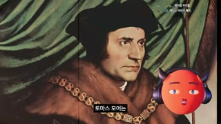
대표 프레임
초상화 얼굴
인용문 '양이 사람을 잡아먹는다.'
호스트 아바타 PiP
자막(검정 박스)
라이브채팅 오버레이 2줄
샷MCU(초상화)앵글정면(회화)카메라느린 푸시인 → 5.0s 부근 한 단계 더 타이트(줌 점프 추정)구도홀바인풍 토마스 모어 초상화, 얼굴이 우측 3분할선, 시선 화면 우측, 좌측 여백에 인용문. 우하단 PiP동작아바타 무표정 내레이션; 5.0s부터 인용문이 좌→우 그라데이션 와이프로 나타남대사호스트: 토마스 모어는 이런 말을 했습니다. "양이 사람을 잡아먹는다."화면 자막토마스 모어는 / 이런 말을 했습니다 → 화면 텍스트: “양이 사람을 잡아먹는다.”(흰 세리프, 따옴표 포함)들어오는 전환하드컷(책 표지→인물 초상) — 책→저자 순서 매치효과음/음악BGM 지속, 인용문 등장 시 작은 스웰(추정)역할권위 인용 + 이상한 문장(양이 사람을?)으로 인지 부조화 → 궁금증
1순위
minimax-h3
PiP 아바타 립싱크(그린스크린 배경으로 생성 후 크로마키)
2순위
kling-v3-omni
캐릭터 일관성
3순위
veo-3-1
B롤 배경 모션(켄번즈 대신 실제 카메라 무브) 필요할 때
① 이미지 프롬프트 (원본 클론)16:9, Tudor-era oil portrait of an English statesman in black cap and fur-trimmed red robe with a gold chain of office, green curtain background, Hans Holbein style, face on right third looking right, museum lighting, fine craquelure, left third empty dark space for text.
② 영상 프롬프트 (원본 클론)Slow Ken-Burns push-in 1.00→1.08 over 4.4 s on the oil portrait; at 2.4 s white serif Korean quote text wipes in left-to-right on the left third; PiP mascot bottom-right lip-syncs.
③ 동물 버전 이미지 프롬프트Same Tudor oil portrait composition, left third empty for text; In the bottom-right corner (x 70-96%, y 55-100%) the hamster mascot head Haemjji (glossy 3D stylized hamster mascot head named Haemjji: a round chubby apricot-orange and cream hamster face (#F2A65A / #FFF1DC), tiny rounded ears, half-lidded deadpan sleepy blue eyes with thick straight dark brows, small pink nose, tiny glossy pouty mouth with two buck teeth, puffed cheek pouches, wearing chunky matte graphite-purple over-ear headphones with a violet rim light, no body, soft studio key light from front-left, clean Pixar-like toy render) overlaid as picture-in-picture, 16:9.
④ 동물 버전 영상 프롬프트Ken-Burns push-in 1.00→1.08, quote wipes in at 2.4 s; hamster PiP lip-syncs '토마스 모어는 이런 말을 했습니다. 양이 사람을 잡아먹는다.' deadpan, 4.4 s.
네거티브modern objects, anachronism, cartoon style, text artifacts, watermark, logo, oversaturated, lowres, warped anatomy, extra limbs
컷 3 · 원문 제시로 신뢰도 + 내레이션 공백으로 '읽게 만드는' 패턴 인터럽트
7.0s → 10.375s (3.375s)
대표 프레임
영어 인용문
한글 번역(회색)
라이브채팅 오버레이 2줄
샷WS(어두운 회화 배경)+타이포앵글정면카메라고정, 배경 밝기 15% 수준구도거의 검정으로 눌린 전원 풍경화(양 떼) 위 중앙에 영어 원문 인용 2줄(흰색 모노/세리프), 그 아래 회색 한국어 번역 1줄동작화면에 인물 없음. 영어 문장이 타자기처럼 한 글자씩 등장 후 한글 번역 페이드인, 9.8s부터 전체 페이드아웃대사(내레이션 없음 — [음악])화면 자막Your sheep, they eat up and swallow down the very men themselves. / 당신의 양이 사람을 통째로 삼키고 있다.들어오는 전환하드컷 후 텍스트 타자 등장(글자당 약 30ms)효과음/음악BGM만, 타자음(추정)역할원문 제시로 신뢰도 + 내레이션 공백으로 '읽게 만드는' 패턴 인터럽트
1순위
(Pollo 이미지 모델 중 레퍼런스 지원 모델) nano-banana 계열
정지 그래픽/문서/두들은 이미지 1장 + FFmpeg 켄번즈가 원본과 동일
2순위
flux-kontext
레퍼런스 기반 텍스트·레이아웃 수정
3순위
gpt-image 계열
한글/영문 타이포 정확도
① 이미지 프롬프트 (원본 클론)16:9, extremely dark underexposed pastoral oil painting of sheep grazing on a hillside at dusk, 15% brightness, heavy vignette, centered two-line white typewriter-style English quote and a smaller grey Korean translation line below.
② 영상 프롬프트 (원본 클론)Static dark painting; English quote types on character by character (30 ms/char) then Korean translation fades in 300 ms; everything fades to black over the last 500 ms; 3.4 s.
③ 동물 버전 이미지 프롬프트Same dark pastoral painting with typed quote; no mascot on screen; 16:9.
④ 동물 버전 영상 프롬프트Identical text animation; no character; 3.4 s.
네거티브modern objects, anachronism, cartoon style, text artifacts, watermark, logo, oversaturated, lowres, warped anatomy, extra limbs
컷 4 · 공포 이미지로 '소름'(제목 감정) 즉시 지급 — 비주얼 쇼크 훅
10.375s → 16.125s (5.75s)
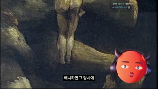
대표 프레임
회화(괴물 얼굴)
호스트 아바타 PiP
자막(검정 박스)
라이브채팅 오버레이 2줄
샷MS→MCU(회화 디테일)앵글로우→아이레벨(틸트업)카메라하단(다리)에서 상단(얼굴)로 켄번즈 틸트업, 11.75s 부근 급가속(또는 미검출 컷)구도고야 '아들을 삼키는 사투르누스' 풍 암갈색 회화, 먼저 다리/바위 → 괴물 얼굴이 화면 중앙-좌측. 우하단 PiP동작아바타 무표정 내레이션, 회화 속 괴물이 사람을 물어뜯는 장면이 드러남대사호스트: 왜냐하면 그 당시에 정말 양이 사람을 잡아먹었고 많은 사람들이 죽었거든요.화면 자막왜냐하면 그 당시에 / 정말 양이 사람을 / 잡아 먹었고 / 많은 사람들이 죽었거든요들어오는 전환텍스트 카드 페이드아웃 후 하드컷효과음/음악BGM 저음 유지역할공포 이미지로 '소름'(제목 감정) 즉시 지급 — 비주얼 쇼크 훅
1순위
minimax-h3
PiP 아바타 립싱크(그린스크린 배경으로 생성 후 크로마키)
2순위
kling-v3-omni
캐릭터 일관성
3순위
veo-3-1
B롤 배경 모션(켄번즈 대신 실제 카메라 무브) 필요할 때
① 이미지 프롬프트 (원본 클론)16:9, dark Spanish romantic black painting style of a wild-haired giant titan devouring a small human figure, dark ochre and black palette, crackled paint texture, vertical composition cropped to 16:9 showing legs and rocks at the bottom first.
② 영상 프롬프트 (원본 클론)Ken-Burns tilt up from the legs at the bottom to the monstrous face at the top over 5.7 s, accelerating at 1.4 s; PiP mascot bottom-right lip-syncs.
③ 동물 버전 이미지 프롬프트Same dark painting and tilt composition; In the bottom-right corner (x 70-96%, y 55-100%) the hamster mascot head Haemjji (glossy 3D stylized hamster mascot head named Haemjji: a round chubby apricot-orange and cream hamster face (#F2A65A / #FFF1DC), tiny rounded ears, half-lidded deadpan sleepy blue eyes with thick straight dark brows, small pink nose, tiny glossy pouty mouth with two buck teeth, puffed cheek pouches, wearing chunky matte graphite-purple over-ear headphones with a violet rim light, no body, soft studio key light from front-left, clean Pixar-like toy render) overlaid as picture-in-picture, 16:9.
④ 동물 버전 영상 프롬프트Tilt-up from legs to face over 5.7 s; hamster PiP lip-syncs '왜냐하면 그 당시에 정말 양이 사람을 잡아먹었고 많은 사람들이 죽었거든요' with a tiny shiver on '죽었거든요'.
네거티브modern objects, anachronism, cartoon style, text artifacts, watermark, logo, oversaturated, lowres, warped anatomy, extra limbs
컷 5 · 2인칭 가정 질문 훅(과거→현재 브릿지) + 줌 펀치인으로 강조
16.125s → 22.375s (6.25s)
대표 프레임
호스트 아바타(센터)
자막(검정 박스)
라이브채팅 오버레이 2줄
샷MCU(아바타 풀프레임)앵글정면 아이레벨카메라고정 + 19.5s 문장 경계에서 즉시 펀치인(약 1.00→1.12, 0프레임 전환)구도순검정 배경 정중앙 아바타(머리 상단 16%~82%), 자막 하단 중앙. 좌우 대칭, 시선 정면(카메라)동작아바타가 눈썹을 살짝 올리고 반쯤 감긴 눈으로 카메라 응시, 입만 움직임, 19.5s 줌점프 후 눈 크게 뜸대사호스트: 그런데요, 여러분. 500년 전 일어났던 그 일이 지금 똑같이 일어나고 있다면 어떻게 하실 건가요?화면 자막그런데요 여러분 / 500년 전 일어났던 / 그 일이 / 지금 똑같이 일어나고 있다면 / 어떻게 하실 건가요?들어오는 전환하드컷(회화→아바타 단독) — 시청자에게 직접 말 거는 모드 전환효과음/음악BGM 한 박 빠짐(추정) 후 재개역할2인칭 가정 질문 훅(과거→현재 브릿지) + 줌 펀치인으로 강조
1순위
minimax-h3
립싱크+오디오 동시 생성, 무료 — 고정 정면 아바타 대사컷에 최적
2순위
kling-v3-omni
레퍼런스 이미지 유지력 좋고 입모양 정확
3순위
gemini-omni-1-1-flash
짧은 문장 단위 빠른 반복 생성
① 이미지 프롬프트 (원본 클론)16:9 1920x1080, pure black background #000000, centered glossy 3D stylized mascot head: a perfectly round coral-red sphere face (#F15C44), two short dark maroon devil horns, half-lidded deadpan blue eyes with thick straight dark-brown brows, small glossy red puckered lips, wearing chunky matte graphite-purple over-ear headphones with a violet rim light, no body, soft studio key light from front-left, subtle subsurface sheen, clean Pixar-like toy render, head fills 66% of frame height, facing camera, symmetrical composition, space at bottom for subtitle.
② 영상 프롬프트 (원본 클론)Static locked-off shot, the mascot lip-syncs Korean: '그런데요, 여러분. 500년 전 일어났던 그 일이 지금 똑같이 일어나고 있다면 어떻게 하실 건가요?' deadpan, slow blinks, eyebrows lift on the question; at 3.4 s an instant digital punch-in to 112%; 6.25 s.
③ 동물 버전 이미지 프롬프트16:9, pure black background, centered glossy 3D stylized hamster mascot head named Haemjji: a round chubby apricot-orange and cream hamster face (#F2A65A / #FFF1DC), tiny rounded ears, half-lidded deadpan sleepy blue eyes with thick straight dark brows, small pink nose, tiny glossy pouty mouth with two buck teeth, puffed cheek pouches, wearing chunky matte graphite-purple over-ear headphones with a violet rim light, no body, soft studio key light from front-left, clean Pixar-like toy render, head fills 66% of frame height, facing camera, space at bottom for subtitle.
④ 동물 버전 영상 프롬프트Locked-off; Haemjji lip-syncs the same Korean line, cheek pouches puff slightly on '여러분', ears twitch on the question; instant punch-in to 112% at 3.4 s; 6.25 s.
네거티브realistic human host, live-action face, extra horns, extra eyes, deformed headphones, body or torso visible, garbled text, misspelled Korean, watermark, channel logo, lowres, blur, jpeg artifacts, flicker, lip-sync drift, jitter
컷 6 · 제목 키워드 '소름' 직접 발화 + 양=AI 은유의 시각 앵커(불쾌한 응시)
22.375s → 30.375s (8.0s)
대표 프레임
정면 응시하는 양
호스트 아바타 PiP
자막(검정 박스)
라이브채팅 오버레이 2줄
샷MS(양 떼)앵글아이레벨, 정면카메라아주 느린 푸시인(8초간 약 1.00→1.06)구도흑백 양 떼가 카메라를 정면으로 응시, 중앙 양이 화면 중앙 3분할 교차점, 우하단 PiP동작양들이 무표정하게 카메라를 바라봄(정지 이미지 or 미세 모션), 아바타 내레이션대사호스트: 양이 사람을 잡아먹던 과거와 지금 현재가 정말 소름이 끼칠 만큼 똑같이 흐르며 역사가 반복되고 있습니다.화면 자막양이 사람을 잡아먹던 과거와 / 지금 현재가 / 정말 소름이 끼칠 만큼 / 똑같이 흐르며 / 역사가 반복되고 있습니다들어오는 전환하드컷효과음/음악BGM 저음 패드역할제목 키워드 '소름' 직접 발화 + 양=AI 은유의 시각 앵커(불쾌한 응시)
1순위
veo-3-1
시네마틱 와이드/느린 푸시인 환경 샷
2순위
kling-v3
회화 질감 유지한 미세 모션
3순위
wan-v3-0
저비용 배경 루프
① 이미지 프롬프트 (원본 클론)16:9, black-and-white photograph of a flock of sheep in a pen all staring directly into the camera, eerie, high contrast, soft overcast light, shallow depth of field, 50mm, film grain.
② 영상 프롬프트 (원본 클론)Very slow push-in 1.00→1.06 over 8 s; sheep blink and one turns its head slightly; PiP mascot bottom-right lip-syncs.
③ 동물 버전 이미지 프롬프트Same B&W staring sheep composition; In the bottom-right corner (x 70-96%, y 55-100%) the hamster mascot head Haemjji (glossy 3D stylized hamster mascot head named Haemjji: a round chubby apricot-orange and cream hamster face (#F2A65A / #FFF1DC), tiny rounded ears, half-lidded deadpan sleepy blue eyes with thick straight dark brows, small pink nose, tiny glossy pouty mouth with two buck teeth, puffed cheek pouches, wearing chunky matte graphite-purple over-ear headphones with a violet rim light, no body, soft studio key light from front-left, clean Pixar-like toy render) overlaid as picture-in-picture, 16:9.
④ 동물 버전 영상 프롬프트Slow push-in; hamster PiP lip-syncs the line; on '소름' Haemjji's fur bristles for 6 frames; 8 s.
네거티브modern objects, anachronism, cartoon style, text artifacts, watermark, logo, oversaturated, lowres, warped anatomy, extra limbs
컷 7 · 시청자를 '역사의 중심'에 세우는 당사자화(자기관련성)
30.375s → 36.25s (5.875s)
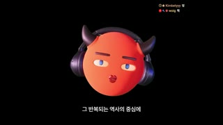
대표 프레임
호스트 아바타(센터)
자막(검정 박스)
라이브채팅 오버레이 2줄
샷MCU(아바타)앵글정면카메라고정(펀치인 없음, 기본 스케일)구도5번과 동일한 센터 아바타 구도동작무표정 내레이션, 눈 깜빡임대사호스트: 그 반복되는 역사의 중심에 지금 우리가 서 있는데, 현재 어떻게 행동하느냐가화면 자막그 반복되는 역사의 중심에 / 지금 우리가 서 있는데 / 현재 어떻게 행동하느냐가들어오는 전환하드컷(B롤→아바타 복귀)효과음/음악BGM 지속역할시청자를 '역사의 중심'에 세우는 당사자화(자기관련성)
1순위
minimax-h3
립싱크+오디오 동시 생성, 무료 — 고정 정면 아바타 대사컷에 최적
2순위
kling-v3-omni
레퍼런스 이미지 유지력 좋고 입모양 정확
3순위
gemini-omni-1-1-flash
짧은 문장 단위 빠른 반복 생성
① 이미지 프롬프트 (원본 클론)Same as scene 5 host frame at base scale (100%).
② 영상 프롬프트 (원본 클론)Locked-off 5.9 s, the mascot lip-syncs '그 반복되는 역사의 중심에 지금 우리가 서 있는데 현재 어떻게 행동하느냐가', deadpan.
③ 동물 버전 이미지 프롬프트Same as scene 5 hamster frame at base scale.
④ 동물 버전 영상 프롬프트Locked-off 5.9 s, Haemjji lip-syncs the line, slow blink.
네거티브realistic human host, live-action face, extra horns, extra eyes, deformed headphones, body or torso visible, garbled text, misspelled Korean, watermark, channel logo, lowres, blur, jpeg artifacts, flicker, lip-sync drift, jitter
컷 8 · 산업혁명의 고통 이미지로 결말(노동 대체) 예고 — 복선
36.25s → 41.875s (5.625s)
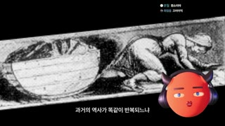
대표 프레임
판화(기울어짐)
호스트 아바타 PiP
자막(검정 박스)
라이브채팅 오버레이 2줄
샷MS(판화)앵글측면카메라약 4° 기울어진 판화 이미지가 느리게 좌→우 드리프트구도19세기 탄광 아동노동 판화(석탄 수레를 끄는 아이), 이미지가 비스듬히 배치돼 불안감, 우하단 PiP동작아바타 내레이션, 판화 속 아이가 기어가며 수레를 끄는 모습대사호스트: 과거의 역사가 똑같이 반복되느냐 혹은 새로운 역사가 쓰이느냐를 결정할 겁니다.화면 자막과거의 역사가 똑같이 반복되느냐 / 혹은 새로운 역사가 쓰이느냐를 / 결정할 겁니다들어오는 전환하드컷효과음/음악BGM 지속역할산업혁명의 고통 이미지로 결말(노동 대체) 예고 — 복선
1순위
minimax-h3
PiP 아바타 립싱크(그린스크린 배경으로 생성 후 크로마키)
2순위
kling-v3-omni
캐릭터 일관성
3순위
veo-3-1
B롤 배경 모션(켄번즈 대신 실제 카메라 무브) 필요할 때
① 이미지 프롬프트 (원본 클론)16:9, 19th-century black-and-white engraving of a child laborer crawling in a coal mine tunnel pulling a coal cart with a chain, rotated 4 degrees, grainy paper texture, harsh contrast.
② 영상 프롬프트 (원본 클론)The tilted engraving drifts slowly left to right (2% of width) over 5.6 s; PiP mascot lip-syncs.
③ 동물 버전 이미지 프롬프트Same tilted engraving composition; In the bottom-right corner (x 70-96%, y 55-100%) the hamster mascot head Haemjji (glossy 3D stylized hamster mascot head named Haemjji: a round chubby apricot-orange and cream hamster face (#F2A65A / #FFF1DC), tiny rounded ears, half-lidded deadpan sleepy blue eyes with thick straight dark brows, small pink nose, tiny glossy pouty mouth with two buck teeth, puffed cheek pouches, wearing chunky matte graphite-purple over-ear headphones with a violet rim light, no body, soft studio key light from front-left, clean Pixar-like toy render) overlaid as picture-in-picture, 16:9.
④ 동물 버전 영상 프롬프트Slow drift; hamster PiP lip-syncs '과거의 역사가 똑같이 반복되느냐 혹은 새로운 역사가 쓰이느냐를 결정할 겁니다', 5.6 s.
네거티브modern objects, anachronism, cartoon style, text artifacts, watermark, logo, oversaturated, lowres, warped anatomy, extra limbs
컷 9 · 오픈루프('무슨 말인지 같이 볼까요?') + 기대치 설정 디스클레이머(정치 편가르기 차단·
41.875s → 89.875s (48.0s)
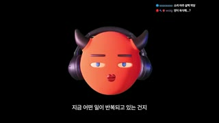
대표 프레임
호스트 아바타(센터)
회색 안내 텍스트 카드
라이브채팅 오버레이 2줄
샷MCU(아바타) → 블랙 텍스트 카드앵글정면카메라41.9~49.0s 아바타 고정, 47.5s 펀치인; 49.06s 페이드투블랙; 50.5~89.9s 텍스트 카드 연속 페이드구도41.9~49.0s 센터 아바타. 이후 순검정 화면 정중앙에 작은 회색 텍스트 2~3줄 카드가 순차 페이드인/아웃: ①50.5~54.5 ②55.0~62.3 ③62.5~71.9 ④72.5~79.3 ⑤79.8~87.0 ⑥87.3~88.6 '자, 그럼 시작할까요?' (측정 샷 내부 미검출 전환)동작아바타가 '같이 한번 볼까요?'에서 눈 크게 뜨며 펀치인, 이후 화면에서 사라지고 텍스트만 남음(목소리는 카드 문장을 그대로 낭독)대사호스트: 지금 어떤 일이 반복되고 있는 건지, 양이 사람을 잡아먹고 있다는 게 무슨 말인지 같이 한번 볼까요? (무음 1.4초) 강렬하고 짧은 형식의 영상이 범람하는 지금, 많은 정보가 담긴 긴 영상, 무엇이 옳다 그르다 단순한 결론을 말하지 않고 긴 맥락을 읽어 줄 것을 요구하는 영상은 오해를 낳기 정말 쉽습니다. 하지만 그저 오해로 치부되기에는 이 영상은 앞으로 삶을 살아나갈 인간들, 특히 어린 인간들에게 중요할지도 모르는 정보를 담고 있습니다. 그러니 부디 이 영상을 시청하실 때 무엇이 옳다 그르다 속단하고 편을 가르는 정치적 재미를 찾지 마시길 바라고, 그런 이들이 존재한다 한들 그 정치판에 휘말리지 않기를 부탁드립니다. 이건 전 세계 인간들과의 조별 과제거든요. 자, 그럼 시작할까요?화면 자막지금 어떤 일이 반복되고 있는 건지 / 양이 사람을 잡아먹고 있다는 게 / 무슨 말인지 / 같이 한번 볼까요? → 이후 자막 대신 카드 텍스트(#9A9A9A, 작은 고딕, 중앙)들어오는 전환하드컷 → 49.06s 페이드투블랙(약 0.5s) → 카드마다 페이드인 400ms/아웃 400ms효과음/음악무음 49.06~50.49s, BGM 매우 작게, 무음 88.66~89.98s 후 챕터 진입역할오픈루프('무슨 말인지 같이 볼까요?') + 기대치 설정 디스클레이머(정치 편가르기 차단·'조별 과제' 공동체 프레이밍) + 미니멀 화면으로 호흡 리셋
1순위
minimax-h3
립싱크+오디오 동시 생성, 무료 — 고정 정면 아바타 대사컷에 최적
2순위
kling-v3-omni
레퍼런스 이미지 유지력 좋고 입모양 정확
3순위
gemini-omni-1-1-flash
짧은 문장 단위 빠른 반복 생성
① 이미지 프롬프트 (원본 클론)16:9 pure black background with a small centered three-line Korean paragraph in light grey (#9A9A9A) sans-serif, 34px at 1080p, generous line spacing, nothing else on screen, minimal documentary disclaimer card.
② 영상 프롬프트 (원본 클론)0-7.2 s: host mascot centered lip-syncs '지금 어떤 일이 반복되고 있는 건지 양이 사람을 잡아먹고 있다는 게 무슨 말인지 같이 한번 볼까요?' with punch-in at 5.6 s; dip to black 0.5 s; then 6 grey text cards each fade in 400 ms, hold 3-9 s, fade out 400 ms, synced to voice reading them; total 48 s.
③ 동물 버전 이미지 프롬프트Same black text-card sequence; first 7.2 s centered glossy 3D stylized hamster mascot head named Haemjji: a round chubby apricot-orange and cream hamster face (#F2A65A / #FFF1DC), tiny rounded ears, half-lidded deadpan sleepy blue eyes with thick straight dark brows, small pink nose, tiny glossy pouty mouth with two buck teeth, puffed cheek pouches, wearing chunky matte graphite-purple over-ear headphones with a violet rim light, no body, soft studio key light from front-left, clean Pixar-like toy render on black.
④ 동물 버전 영상 프롬프트Haemjji lip-syncs the open-loop question, eyes widen on '같이 한번 볼까요?', punch-in 112%, dip to black, then identical grey text cards read by the voice; 48 s.
네거티브realistic human host, live-action face, extra horns, extra eyes, deformed headphones, body or torso visible, garbled text, misspelled Korean, watermark, channel logo, lowres, blur, jpeg artifacts, flicker, lip-sync drift, jitter
컷 10 · 챕터1 설정샷(Establishing shot) — 이야기 공간 제시
89.875s → 93.375s (3.5s)
대표 프레임
마을 전경
자막(검정 박스)
라이브채팅 오버레이 2줄
샷EWS(설정샷)앵글살짝 하이앵글카메라느린 푸시인(추정)구도AI 생성풍 16세기 영국 농촌 마을(초가집·농민·양·수레), 지평선 상단 1/3, 오른쪽 초가 지붕이 프레임 가장자리 리딩라인. 아바타 PiP 없음동작농민들이 작업하는 정적인 풍경대사호스트: 500년 전 영국에서 인클로저 사건이 발생했습니다.화면 자막500년 전 영국에서 / 인클로저 사건이 발생했습니다들어오는 전환무음 후 하드컷 — 본편(챕터1) 시작 신호효과음/음악BGM 새 루프 시작(추정)역할챕터1 설정샷(Establishing shot) — 이야기 공간 제시
1순위
veo-3-1
시네마틱 와이드/느린 푸시인 환경 샷
2순위
kling-v3
회화 질감 유지한 미세 모션
3순위
wan-v3-0
저비용 배경 루프
① 이미지 프롬프트 (원본 클론)16:9, cinematic photoreal 16th-century English village, thatched cottages, peasants working the common field, sheep, wooden carts, overcast sky with soft sunlight, slightly high angle wide shot, 24mm, painterly realism, muted earthy palette.
② 영상 프롬프트 (원본 클론)Slow push-in 1.00→1.05 over 3.5 s, peasants move subtly, smoke drifts from a chimney.
③ 동물 버전 이미지 프롬프트Same village wide shot, no mascot (hamster appears in next shot); 16:9.
④ 동물 버전 영상 프롬프트Same slow push-in; optional tiny hamster-sized villager easter egg in the crowd; 3.5 s.
네거티브modern objects, anachronism, cartoon style, text artifacts, watermark, logo, oversaturated, lowres, warped anatomy, extra limbs
컷 11 · 챕터 키워드 타이틀 카드 — 핵심 개념 1단어 각인 + 손글씨로 감정(쫓겨남) 시각화
94.625s → 105.375s (10.75s)
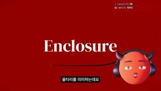
대표 프레임
Enclosure 타이틀
호스트 아바타 PiP
자막(검정 박스)
라이브채팅 오버레이 2줄
샷그래픽 타이틀 카드앵글플랫카메라고정, 밑줄 스트로크 드로잉 애니메이션 → 약 100s 'Get out' 손글씨+철조망 원으로 교체구도진한 빨강(#910200) 전면 배경, 좌중앙에 흰색 굵은 세리프 'Enclosure', 그 아래 검은 손그림 곡선 밑줄이 그려짐. 후반엔 빨간 배경 위 검정 철조망 타원 안에 손글씨 'Get out'. 우하단 PiP동작아바타 무표정 내레이션, 개념어 정의 설명대사호스트: 인클로저가 뭐냐? 울타리를 의미하는데요. 모두가 같이 사용하던 땅에 귀족들이 울타리를 치고 '이거 내 땅이야' 하면서 그 땅에서 농사를 짓던 평민들에게 '너네 나가' 해 버린 거죠.화면 자막울타리를 의미하는데요 / 모두가 같이 사용하던 땅에 / 귀족들이 울타리를 치고 / 너네 나가 해버린 거죠들어오는 전환하드컷(아바타 1.25초 컷 뒤)효과음/음악BGM 지속, 손글씨 등장 시 펜 스크래치(추정)역할챕터 키워드 타이틀 카드 — 핵심 개념 1단어 각인 + 손글씨로 감정(쫓겨남) 시각화
1순위
(Pollo 이미지 모델 중 레퍼런스 지원 모델) nano-banana 계열
정지 그래픽/문서/두들은 이미지 1장 + FFmpeg 켄번즈가 원본과 동일
2순위
flux-kontext
레퍼런스 기반 텍스트·레이아웃 수정
3순위
gpt-image 계열
한글/영문 타이포 정확도
① 이미지 프롬프트 (원본 클론)16:9, flat deep crimson background #910200, large bold white high-contrast serif word 'Enclosure' left-center, a hand-drawn black ink swoosh underline below it, minimal editorial title card.
② 영상 프롬프트 (원본 클론)The black underline draws itself left-to-right in 600 ms; at 5.4 s hard cut to the same red background with a black scribbled barbed-wire oval and handwritten 'Get out' written on in 800 ms; PiP mascot lip-syncs; 10.75 s.
③ 동물 버전 이미지 프롬프트Same crimson title card and 'Get out' barbed-wire doodle; In the bottom-right corner (x 70-96%, y 55-100%) the hamster mascot head Haemjji (glossy 3D stylized hamster mascot head named Haemjji: a round chubby apricot-orange and cream hamster face (#F2A65A / #FFF1DC), tiny rounded ears, half-lidded deadpan sleepy blue eyes with thick straight dark brows, small pink nose, tiny glossy pouty mouth with two buck teeth, puffed cheek pouches, wearing chunky matte graphite-purple over-ear headphones with a violet rim light, no body, soft studio key light from front-left, clean Pixar-like toy render) overlaid as picture-in-picture, 16:9.
④ 동물 버전 영상 프롬프트Same write-on animations; Haemjji PiP lip-syncs the definition, frowns slightly on '너네 나가'; 10.75 s.
네거티브gradient background, 3D text, drop shadow, extra words, misspelling, realistic human host, live-action face, extra horns, extra eyes, deformed headphones, body or torso visible, garbled text, misspelled Korean, watermark, channel logo, lowres, blur, jpeg artifacts, flicker, lip-sync drift, jitter
컷 12 · 숫자·일화(60길더≈130만원)로 추상 개념(소유)을 구체화 — 증거형 B롤
165.0s → 174.875s (9.875s)
대표 프레임
역사화
호스트 아바타 PiP
자막(검정 박스)
라이브채팅 오버레이 2줄
샷WS(역사화)앵글정면카메라켄번즈 느린 좌→우 팬구도17세기 원주민과 유럽인 거래 장면 역사화, 원주민 무리 좌측, 유럽 상인 중앙-우측, 우하단 PiP동작아바타 내레이션 — 역사 일화 설명대사호스트: 원주민들은 이걸 '그래, 이 땅 너 가져'가 아니라 '아, 이 땅을 같이 나눠 쓰자는 거구나, 오케이' 하고 이해를 한 거예요.화면 자막원주민들은 이걸 / 같이 나눠 쓰자는 거구나들어오는 전환하드컷효과음/음악BGM 지속역할숫자·일화(60길더≈130만원)로 추상 개념(소유)을 구체화 — 증거형 B롤
1순위
minimax-h3
PiP 아바타 립싱크(그린스크린 배경으로 생성 후 크로마키)
2순위
kling-v3-omni
캐릭터 일관성
3순위
veo-3-1
B롤 배경 모션(켄번즈 대신 실제 카메라 무브) 필요할 때
① 이미지 프롬프트 (원본 클론)16:9, 19th-century style historical oil painting of 1620s Native Americans meeting Dutch colonists trading goods on a riverbank with a sailing ship in the background, warm varnished tones, museum reproduction.
② 영상 프롬프트 (원본 클론)Ken-Burns slow pan left to right plus 1.00→1.04 zoom over 9.9 s; PiP mascot lip-syncs.
③ 동물 버전 이미지 프롬프트Same historical painting; In the bottom-right corner (x 70-96%, y 55-100%) the hamster mascot head Haemjji (glossy 3D stylized hamster mascot head named Haemjji: a round chubby apricot-orange and cream hamster face (#F2A65A / #FFF1DC), tiny rounded ears, half-lidded deadpan sleepy blue eyes with thick straight dark brows, small pink nose, tiny glossy pouty mouth with two buck teeth, puffed cheek pouches, wearing chunky matte graphite-purple over-ear headphones with a violet rim light, no body, soft studio key light from front-left, clean Pixar-like toy render) overlaid as picture-in-picture, 16:9.
④ 동물 버전 영상 프롬프트Slow pan; Haemjji PiP lip-syncs with a small head tilt on '오케이'; 9.9 s.
네거티브modern objects, anachronism, cartoon style, text artifacts, watermark, logo, oversaturated, lowres, warped anatomy, extra limbs
컷 13 · 코믹 릴리프/패턴 인터럽트 — 딱딱한 봉건제 설명에 밈 유머 주입
213.5s → 218.0s (4.5s)
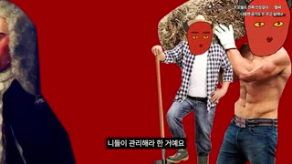
대표 프레임
귀족 초상 컷아웃
농부+아바타 얼굴
근육 몸+아바타 얼굴
자막(검정 박스)
샷밈 콜라주앵글플랫카메라고정(콜라주 요소 순차 팝업)구도빨강 배경 위 컷아웃 콜라주: 좌측 18세기 귀족 초상 컷아웃, 중앙 삽 든 농부 몸통에 아바타 얼굴 합성, 우측 근육질 상반신에 아바타 가면 얼굴(과장 밈)동작정지 콜라주가 박자에 맞춰 하나씩 뿅 등장, 아바타 목소리만대사호스트: 왕이 갖고 있는 땅의 권리를 귀족들에게 나눠 주면서 '너희가 관리해라' 한 거예요.화면 자막너희가 관리해라 한 거예요들어오는 전환하드컷 + 요소 팝인(스케일 0.9→1.0, 100ms)효과음/음악팝 효과음(추정)역할코믹 릴리프/패턴 인터럽트 — 딱딱한 봉건제 설명에 밈 유머 주입
1순위
(Pollo 이미지 모델 중 레퍼런스 지원 모델) nano-banana 계열
손그림 스틱피겨 스타일 일관성
2순위
hailuo-2-3
두들 캐릭터가 과장되게 흔들리는 코믹 모션
3순위
pixverse-v6
빠른 리액션 모션
① 이미지 프롬프트 (원본 클론)16:9, flat crimson background #910200, meme-style cut-out collage: an 18th-century powdered-wig aristocrat portrait cutout on the left, a peasant with a shovel in the middle whose face is replaced by a round coral-red cartoon devil mascot face, a shirtless muscular man on the right wearing the same mascot face, hard white-edged cutouts, playful internet meme aesthetic.
② 영상 프롬프트 (원본 클론)Each cut-out pops in on beat (scale 0.9→1.0 in 100 ms, 300 ms apart), then holds; 4.5 s.
③ 동물 버전 이미지 프롬프트Same meme collage but the pasted faces are the hamster Haemjji face (glossy 3D stylized hamster mascot head named Haemjji: a round chubby apricot-orange and cream hamster face (#F2A65A / #FFF1DC), tiny rounded ears, half-lidded deadpan sleepy blue eyes with thick straight dark brows, small pink nose, tiny glossy pouty mouth with two buck teeth, puffed cheek pouches, wearing chunky matte graphite-purple over-ear headphones with a violet rim light, no body, soft studio key light from front-left, clean Pixar-like toy render).
④ 동물 버전 영상 프롬프트Pop-in on beat; the hamster-faced muscle man flexes once; 4.5 s.
네거티브realistic blending, seamless composite, modern objects, anachronism, cartoon style, text artifacts, watermark, logo, oversaturated, lowres, warped anatomy, extra limbs
컷 14 · 참여 유도(프리미어 실시간 투표) + 예상 밖 정답('심심해서'도 정답)으로 반전 재미
251.0s → 280.875s (29.875s)
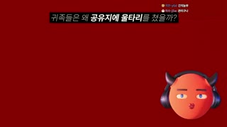
대표 프레임
질문 바
선택지+결과%
호스트 아바타 PiP
라이브채팅 오버레이 2줄
샷인터랙티브 투표 카드앵글플랫카메라고정, 선택지→퍼센트 순차 등장구도빨강 배경 상단 중앙에 검정 반투명 바 위 질문 '귀족들은 왜 공유지에 울타리를 쳤을까?'(공유지·울타리 흰 굵게), 그 아래 좌측 정렬 선택지 '1. 돈 더 벌려고 67% / 2. 심심해서 33%', 우하단 PiP, 우상단 채팅 활발동작아바타 '우리 투표를 해 볼까요?' 후 약 17초간 내레이션 없이 채팅 참여 대기, 결과 공개대사호스트: 우리 투표를 해 볼까요? 귀족들은 왜 모두가 나눠 쓰던 땅과 숲에 울타리를 쳤을까요? 1. 돈 때문에 2. 심심해서 … (대기 약 17초) … 맞아요. 첫째로 돈 때문이죠. 근데 좀 어이없는 건 두 번째 이유도 있었다는 겁니다.화면 자막귀족들은 왜 공유지에 울타리를 쳤을까? / 1. 돈 더 벌려고 67% / 2. 심심해서 33% / '2가 이유라면 너무 재밌을 것 같아…'들어오는 전환하드컷효과음/음악투표 대기 BGM(추정), 결과 공개 시 딩 효과음(추정)역할참여 유도(프리미어 실시간 투표) + 예상 밖 정답('심심해서'도 정답)으로 반전 재미
1순위
(Pollo 이미지 모델 중 레퍼런스 지원 모델) nano-banana 계열
정지 그래픽/문서/두들은 이미지 1장 + FFmpeg 켄번즈가 원본과 동일
2순위
flux-kontext
레퍼런스 기반 텍스트·레이아웃 수정
3순위
gpt-image 계열
한글/영문 타이포 정확도
① 이미지 프롬프트 (원본 클론)16:9, flat crimson background #910200, top-center a semi-transparent black bar with the Korean question '귀족들은 왜 공유지에 울타리를 쳤을까?' in white with two bold words, below two left-aligned options '1. 돈 더 벌려고' and '2. 심심해서' with percentages 67% and 33% in white serif, clean quiz-show layout.
② 영상 프롬프트 (원본 클론)Question bar slides down 200 ms, options fade in one by one, 17-second idle hold with a subtle pulsing border, then percentages count up from 0 to 67% / 33% over 800 ms; PiP mascot talks before and after; 29.9 s.
③ 동물 버전 이미지 프롬프트Same quiz layout; In the bottom-right corner (x 70-96%, y 55-100%) the hamster mascot head Haemjji (glossy 3D stylized hamster mascot head named Haemjji: a round chubby apricot-orange and cream hamster face (#F2A65A / #FFF1DC), tiny rounded ears, half-lidded deadpan sleepy blue eyes with thick straight dark brows, small pink nose, tiny glossy pouty mouth with two buck teeth, puffed cheek pouches, wearing chunky matte graphite-purple over-ear headphones with a violet rim light, no body, soft studio key light from front-left, clean Pixar-like toy render) overlaid as picture-in-picture, 16:9.
④ 동물 버전 영상 프롬프트Haemjji PiP asks the poll question, then nibbles a sunflower seed idly during the 17 s wait (loopable), looks up when results count up.
네거티브cluttered layout, wrong numbers, realistic human host, live-action face, extra horns, extra eyes, deformed headphones, body or torso visible, garbled text, misspelled Korean, watermark, channel logo, lowres, blur, jpeg artifacts, flicker, lip-sync drift, jitter
컷 15 · 과거↔현재 1:1 매핑을 도식으로 고정 — 구조적 메타포의 시각화
321.75s → 335.375s (13.625s)
대표 프레임
1행(지구→땅→개인소유X)
2행(웹→웹→개인소유X)
호스트 아바타 PiP
자막(검정 박스)
샷인포그래픽앵글플랫카메라고정, 요소 순차 등장구도빨강 배경 2행 대비 다이어그램: 1행 지구 사진 아이콘 → '땅' → '개인 소유 X', 2행 파란 지구-웹 커서 아이콘 → '웹' → '개인 소유 X'(나중에 빨간 손글씨 X/원 표시). 우하단 PiP동작아바타 내레이션에 맞춰 화살표/글자 순차 등장대사호스트: 자, 봅시다. 지구라는 세상에는 땅이 있잖아요. 인터넷이라는 세상에도 웹이라는 땅이 있습니다. 500년 전에는 땅을 개인이 소유한다는 개념이 없었다고 했잖아요. 웹도 똑같습니다.화면 자막자 봅시다 / 지구라는 세상에는 땅이 있잖아요 / 웹에는 소유권이 없거든요들어오는 전환하드컷효과음/음악요소 등장 시 소프트 팝(추정)역할과거↔현재 1:1 매핑을 도식으로 고정 — 구조적 메타포의 시각화
1순위
(Pollo 이미지 모델 중 레퍼런스 지원 모델) nano-banana 계열
정지 그래픽/문서/두들은 이미지 1장 + FFmpeg 켄번즈가 원본과 동일
2순위
flux-kontext
레퍼런스 기반 텍스트·레이아웃 수정
3순위
gpt-image 계열
한글/영문 타이포 정확도
① 이미지 프롬프트 (원본 클론)16:9, flat crimson background #910200, two-row comparison infographic: row 1 a photo of planet Earth icon, arrow, white Korean word '땅', arrow, '개인 소유 X'; row 2 a blue globe-with-cursor web icon, arrow, '웹', arrow, '개인 소유 X'; thin white hand-drawn arrows, minimal editorial style.
② 영상 프롬프트 (원본 클론)Elements appear left to right synced to narration (each 200 ms fade+slide 20 px), a red hand-drawn X/circle marks 'X' at the end; 13.6 s.
③ 동물 버전 이미지 프롬프트Same infographic; In the bottom-right corner (x 70-96%, y 55-100%) the hamster mascot head Haemjji (glossy 3D stylized hamster mascot head named Haemjji: a round chubby apricot-orange and cream hamster face (#F2A65A / #FFF1DC), tiny rounded ears, half-lidded deadpan sleepy blue eyes with thick straight dark brows, small pink nose, tiny glossy pouty mouth with two buck teeth, puffed cheek pouches, wearing chunky matte graphite-purple over-ear headphones with a violet rim light, no body, soft studio key light from front-left, clean Pixar-like toy render) overlaid as picture-in-picture, 16:9.
④ 동물 버전 영상 프롬프트Same build; Haemjji PiP points with a tiny paw from the bottom edge at each row (optional); 13.6 s.
네거티브3D icons, gradients, realistic human host, live-action face, extra horns, extra eyes, deformed headphones, body or torso visible, garbled text, misspelled Korean, watermark, channel logo, lowres, blur, jpeg artifacts, flicker, lip-sync drift, jitter
컷 16 · 원문 증거(receipts) 제시로 신뢰도 확보 + 침묵으로 무게감
351.375s → 368.75s (17.375s)
대표 프레임
원문 문서
한글 번역 박스
라이브채팅 오버레이 2줄
샷문서 스크린샷(원문 증거)앵글플랫(약간 기울기)카메라느린 줌인 + 번역 박스 오버레이구도흑백 스캔된 1993년 CERN 공개 문서 원문 전체 화면, 중간 줄에 검정 박스+흰 굵은 한국어 번역이 원문 위에 덮임, 빨간 손그림 밑줄동작화면에 인물 없음. 약 11초 내레이션 공백 동안 시청자가 원문을 읽게 함대사(5:49~6:00 내레이션 공백, BGM만) → 호스트: 이렇게 1993년 웹이 공짜로 생기니까 그를 기반으로 굉장히 많은 서비스들이 폭발적으로 생기기 시작했습니다.화면 자막번역 박스: 'CERN은 이 코드에 대한 모든 지적 재산권을 포기하며 누구든지 이를 사용, 복제, 수정 및 재배포할 수 있다'들어오는 전환하드컷효과음/음악BGM 단독(내레이션 공백 11초)역할원문 증거(receipts) 제시로 신뢰도 확보 + 침묵으로 무게감
1순위
(Pollo 이미지 모델 중 레퍼런스 지원 모델) nano-banana 계열
정지 그래픽/문서/두들은 이미지 1장 + FFmpeg 켄번즈가 원본과 동일
2순위
flux-kontext
레퍼런스 기반 텍스트·레이아웃 수정
3순위
gpt-image 계열
한글/영문 타이포 정확도
① 이미지 프롬프트 (원본 클론)16:9, black-and-white scanned 1993 typewritten institutional memo document filling the frame, slight paper texture, red hand-drawn underline on one sentence, a black rectangle with bold white Korean translation overlaid across the middle lines.
② 영상 프롬프트 (원본 클론)Slow zoom 1.00→1.06 over 17 s toward the translated line; translation box fades in 300 ms; red underline draws in 400 ms.
③ 동물 버전 이미지 프롬프트Same document shot; hamster not visible (voice only).
④ 동물 버전 영상 프롬프트Same zoom; optional tiny hamster paw print stamp appears near the underline for brand flavor.
네거티브readable real names, fake logos, modern objects, anachronism, cartoon style, text artifacts, watermark, logo, oversaturated, lowres, warped anatomy, extra limbs
컷 17 · 장기 단일 샷이지만 '누적 빌드'로 매 3~6초 시각 변화 → 이탈 방지 + 구조 이해
398.875s → 490.875s (92.0s)
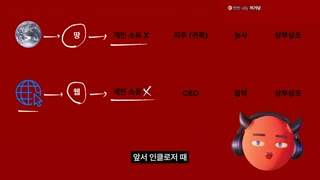
대표 프레임
1행 인클로저 흐름
2행 웹 흐름
호스트 아바타 PiP
자막(검정 박스)
샷화이트보드식 빌드업 도식(92초 단일 샷)앵글플랫카메라고정, 도식이 내레이션에 맞춰 단계적으로 누적구도빨강 배경 2행 플로차트: 1행 지구→(땅)→개인소유X→귀족(관리)→농사→수익 분배, 2행 웹→(웹)→개인소유X→기업(CEO)→창작→광고수익. 흰 글씨, 빨간 손그림 동그라미·화살표·위아래 대응 화살표. 우하단 PiP동작아바타 내레이션, 한 문장마다 도식 요소가 하나씩 추가되고 비교 지점에 세로 화살표대사호스트: 인클로저 때 땅을 관리하는 귀족들이 있었습니다. 웹도 웹이라는 땅에 구글, 페이스북, 유튜브 이런 서비스를 만든 사람들이 있죠. … 과거와 현재가 구조가 똑같죠. … 지금도 웹서비스들은 사람들을 모아서 그들이 자기의 땅에서 글을 쓰고 그림을 그리고 영상을 만드는 창작을 할 수 있게 했습니다.화면 자막앞서 인클로저 때 / 과거와 현재 구조가 똑같죠 / 이런 서비스들은 / 돈을 벌 수 있었던 거죠들어오는 전환하드컷효과음/음악요소 등장마다 미세 팝(추정)역할장기 단일 샷이지만 '누적 빌드'로 매 3~6초 시각 변화 → 이탈 방지 + 구조 이해
1순위
(Pollo 이미지 모델 중 레퍼런스 지원 모델) nano-banana 계열
정지 그래픽/문서/두들은 이미지 1장 + FFmpeg 켄번즈가 원본과 동일
2순위
flux-kontext
레퍼런스 기반 텍스트·레이아웃 수정
3순위
gpt-image 계열
한글/영문 타이포 정확도
① 이미지 프롬프트 (원본 클론)16:9, flat crimson background #910200, two-row flowchart in white Korean text with small icons: row 1 Earth icon → circled '땅' → '개인 소유 X' → '귀족(관리)' → '농사' → '수익 분배'; row 2 web globe icon → circled '웹' → '개인 소유 X' → '기업' → '창작' → '광고 수익'; red and white hand-drawn circles and vertical double arrows linking matching steps, whiteboard sketch aesthetic.
② 영상 프롬프트 (원본 클론)Progressive build over 92 s: each node fades in 200 ms and each hand-drawn circle/arrow draws in 400 ms exactly on the spoken keyword; PiP mascot lip-syncs throughout.
③ 동물 버전 이미지 프롬프트Same flowchart; In the bottom-right corner (x 70-96%, y 55-100%) the hamster mascot head Haemjji (glossy 3D stylized hamster mascot head named Haemjji: a round chubby apricot-orange and cream hamster face (#F2A65A / #FFF1DC), tiny rounded ears, half-lidded deadpan sleepy blue eyes with thick straight dark brows, small pink nose, tiny glossy pouty mouth with two buck teeth, puffed cheek pouches, wearing chunky matte graphite-purple over-ear headphones with a violet rim light, no body, soft studio key light from front-left, clean Pixar-like toy render) overlaid as picture-in-picture, 16:9.
④ 동물 버전 영상 프롬프트Same progressive build; Haemjji PiP lip-syncs, nods at each '똑같죠'.
네거티브clean vector corporate style, realistic human host, live-action face, extra horns, extra eyes, deformed headphones, body or torso visible, garbled text, misspelled Korean, watermark, channel logo, lowres, blur, jpeg artifacts, flicker, lip-sync drift, jitter
컷 18 · 핵심 수치 강조(100만 시간=114년) — 영수증형 증거 편집
629.0s → 640.625s (11.625s)
대표 프레임
기사 본문
빨간 타원 강조
호스트 아바타 PiP
자막(검정 박스)
샷기사 스크린샷(하이라이트)앵글플랫카메라고정 + 빨간 원/밑줄 드로잉구도흰 배경에 영문 기사 본문(빨강 세리프 텍스트, NYT 풍) 5줄, 'one million hours of YouTube videos'에 빨간 손그림 타원과 밑줄, 우하단 PiP동작아바타 내레이션, 키워드 말하는 순간 원이 그려짐대사호스트: 2024년 뉴욕 타임스가 보도한 바에 의하면 오픈AI는 100만 시간에 달하는 유튜브 영상을 무단으로 긁어서 AI를 학습시켰습니다. … 그렇게 학습시켜서 나온 게 GPT-4예요.화면 자막그렇게 학습시켜서 나온 게 (원문 영어 위 빨간 원: one million hours of YouTube videos)들어오는 전환하드컷효과음/음악펜 드로잉 스크래치(추정)역할핵심 수치 강조(100만 시간=114년) — 영수증형 증거 편집
1순위
(Pollo 이미지 모델 중 레퍼런스 지원 모델) nano-banana 계열
정지 그래픽/문서/두들은 이미지 1장 + FFmpeg 켄번즈가 원본과 동일
2순위
flux-kontext
레퍼런스 기반 텍스트·레이아웃 수정
3순위
gpt-image 계열
한글/영문 타이포 정확도
① 이미지 프롬프트 (원본 클론)16:9, white background, close crop of an English newspaper article paragraph in dark red serif body text, a red hand-drawn ellipse circling the phrase about 'one million hours of YouTube videos' and a red underline under 'GPT-4', editorial evidence screenshot look (generic newspaper, no real masthead).
② 영상 프롬프트 (원본 클론)Static screenshot; red ellipse draws in 400 ms on the keyword, underline 300 ms later; PiP mascot lip-syncs; 11.6 s.
③ 동물 버전 이미지 프롬프트Same article screenshot; In the bottom-right corner (x 70-96%, y 55-100%) the hamster mascot head Haemjji (glossy 3D stylized hamster mascot head named Haemjji: a round chubby apricot-orange and cream hamster face (#F2A65A / #FFF1DC), tiny rounded ears, half-lidded deadpan sleepy blue eyes with thick straight dark brows, small pink nose, tiny glossy pouty mouth with two buck teeth, puffed cheek pouches, wearing chunky matte graphite-purple over-ear headphones with a violet rim light, no body, soft studio key light from front-left, clean Pixar-like toy render) overlaid as picture-in-picture, 16:9.
④ 동물 버전 영상 프롬프트Same drawing animation; Haemjji PiP eyes widen on '100만 시간'.
네거티브real newspaper logo, realistic human host, live-action face, extra horns, extra eyes, deformed headphones, body or torso visible, garbled text, misspelled Korean, watermark, channel logo, lowres, blur, jpeg artifacts, flicker, lip-sync drift, jitter
컷 19 · 당사자 원음으로 신뢰도·긴장감(질문-회피 드라마) 제공
714.0s → 724.125s (10.125s)
대표 프레임
인터뷰이
출처 라벨
자막(검정 박스)
라이브채팅 오버레이 2줄
샷인터뷰 클립(외부 푸티지)앵글아이레벨 오버숄더 없음, 3/4 정면카메라고정(원본 인터뷰 카메라)구도서재 배경 여성 기자 MCU, 좌상단 작은 회색 출처 표기 '출처: Bloomberg', 하단 한국어 번역 자막(검정 박스). 아바타 PiP 없음동작기자가 질문하는 표정, 영어 원음 그대로대사기자(영어 원음): (번역) 만약 오픈AI가 유튜브를 사용한 게 맞다면, 정책에 위반되는 행위인가요?화면 자막만약 open ai가 유튜브를 사용한 게 맞다면, 정책에 위반되는 행위인가요?들어오는 전환하드컷(내레이션 → 원음 클립) — J컷 없이 바로효과음/음악BGM 덕킹 후 원음만역할당사자 원음으로 신뢰도·긴장감(질문-회피 드라마) 제공
1순위
seedance-2-0
인터뷰이 미세표정·감정 연기(실존인물 대신 가상 인물로)
2순위
kling-v3
고정 인터뷰 프레이밍 안정
3순위
veo-3-1
대사 포함 생성 필요 시
① 이미지 프롬프트 (원본 클론)16:9, medium close-up of a fictional female business journalist in her 30s with shoulder-length brown hair, cream blouse, bookshelf background with warm practical lamps, interview lighting, 85mm shallow depth of field, small grey source label at top-left.
② 영상 프롬프트 (원본 클론)Locked-off interview shot 10 s, she asks a pointed question in English with raised eyebrows and a slight lean forward.
③ 동물 버전 이미지 프롬프트Same interview setup but the interviewer is an anthropomorphic hamster journalist in a cream blouse (keep realistic set).
④ 동물 버전 영상 프롬프트Hamster journalist asks the question with the same raised-eyebrow lean; 10 s; Korean subtitle burned in.
네거티브real person likeness, celebrity face, modern objects, anachronism, cartoon style, text artifacts, watermark, logo, oversaturated, lowres, warped anatomy, extra limbs
샷댓글 카드앵글플랫카메라고정구도흰 배경 상단 중앙에 어두운 둥근 사각 카드(#1E1E1E) 안 흰 영어 댓글 4줄, 우하단 PiP, 하단 한국어 번역 자막동작아바타가 댓글을 반말 성대모사 톤으로 번역 낭독대사호스트(댓글 연기, 반말): 나한테도 여러 에이전시가 연락해서 내 유튜브 콘텐츠 AI 훈련용으로 계약하자고 하더라. 근데 걔네 멘트가 진짜 '그들이 어차피 너한테 돈도 안 주고 갖다 쓰고 있는데 돈을 받을 수 있으면 받지 그래?'였어. 진짜 이상한 시대다.화면 자막나한테도 여러 에이전시가 / 진짜 이상한 시대다들어오는 전환하드컷, 카드 팝인 150ms효과음/음악BGM 지속역할대중 반응(사회적 증거) + 목소리 톤 전환(존댓말→반말)으로 청각 패턴 인터럽트
1순위
(Pollo 이미지 모델 중 레퍼런스 지원 모델) nano-banana 계열
정지 그래픽/문서/두들은 이미지 1장 + FFmpeg 켄번즈가 원본과 동일
2순위
flux-kontext
레퍼런스 기반 텍스트·레이아웃 수정
3순위
gpt-image 계열
한글/영문 타이포 정확도
① 이미지 프롬프트 (원본 클론)16:9, white background, a dark charcoal rounded-rectangle comment card (#1E1E1E) with four lines of white English comment text, anonymized username, minimal UI, lots of white space, social media comment screenshot aesthetic.
② 영상 프롬프트 (원본 클론)Card pops in (scale 0.96→1.0, 150 ms), static 15 s; PiP mascot reads the comment in a casual voice.
③ 동물 버전 이미지 프롬프트Same comment card; In the bottom-right corner (x 70-96%, y 55-100%) the hamster mascot head Haemjji (glossy 3D stylized hamster mascot head named Haemjji: a round chubby apricot-orange and cream hamster face (#F2A65A / #FFF1DC), tiny rounded ears, half-lidded deadpan sleepy blue eyes with thick straight dark brows, small pink nose, tiny glossy pouty mouth with two buck teeth, puffed cheek pouches, wearing chunky matte graphite-purple over-ear headphones with a violet rim light, no body, soft studio key light from front-left, clean Pixar-like toy render) overlaid as picture-in-picture, 16:9.
④ 동물 버전 영상 프롬프트Card pop-in; Haemjji PiP reads in casual tone, rolls eyes on '이상한 시대다'.
네거티브real usernames, realistic human host, live-action face, extra horns, extra eyes, deformed headphones, body or torso visible, garbled text, misspelled Korean, watermark, channel logo, lowres, blur, jpeg artifacts, flicker, lip-sync drift, jitter
컷 21 · 무거운 소송 이야기를 코믹 두들로 가볍게 — 텐션 완급 조절
1017.375s → 1080.625s (63.25s)
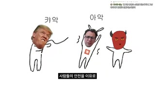
대표 프레임
정치인 두들(컷아웃 얼굴)
CEO 두들
빨간 악마 두들
자막(검정 박스)
샷손그림 두들 스킷(63초)앵글플랫카메라고정, 두들 컷이 문장 단위로 교체(측정 샷 내부 미검출 전환 다수)구도흰 배경, 검정 펜 스틱피겨 몸에 실존 인물 사진 얼굴 컷아웃(정치인·CEO)을 붙이고 빨간 악마 스틱피겨(아바타의 2D 버전)가 옆에, 손글씨 의성어 '카악' '아악'동작두들 인물들이 서로 공격/비명(정지 이미지 교체로 코믹 연출), 아바타 목소리만대사호스트: 클로드는 최근 이미지가 매우 좋아진 기업입니다. 사람들의 안전을 이유로 정부와의 계약 조건을 거부했거든요. 이 때문에 전례 없는 아주 높은 강도의 국가적 보복을 받았지만 … 하지만 이 기업도 최근 소송을 통해 드러난 게 있어요. 700만 건 이상의 책을 불법으로 다운로드해서 AI를 학습시켰다는 사실이죠.화면 자막사람들의 안전을 이유로 / 국가적 보복을 받았지만 / 700만 권 이상의 책을들어오는 전환하드컷효과음/음악손글씨 의성어 타이밍에 코믹 효과음(추정)역할무거운 소송 이야기를 코믹 두들로 가볍게 — 텐션 완급 조절
1순위
(Pollo 이미지 모델 중 레퍼런스 지원 모델) nano-banana 계열
손그림 스틱피겨 스타일 일관성
2순위
hailuo-2-3
두들 캐릭터가 과장되게 흔들리는 코믹 모션
3순위
pixverse-v6
빠른 리액션 모션
① 이미지 프롬프트 (원본 클론)16:9, white background, crude black-marker stick-figure doodles: a stick figure with a pasted cut-out cartoon head of a generic politician, a stick figure with a generic tech CEO cut-out head, and a small red devil stick figure, handwritten Korean onomatopoeia '카악' and '아악' above them, childlike MS-Paint doodle humor.
② 영상 프롬프트 (원본 클론)Doodle frames swap on each sentence (hard cuts every 3-6 s), figures wobble 2 px (boil effect 8 fps); 63 s total.
③ 동물 버전 이미지 프롬프트Same doodle skit but the red devil stick figure is replaced by a tiny hamster stick figure (orange round head with headphones).
④ 동물 버전 영상 프롬프트Boil-animated doodles; the hamster doodle squeaks '아악' and runs; hard cuts per sentence.
네거티브real photo faces, polished vector art, modern objects, anachronism, cartoon style, text artifacts, watermark, logo, oversaturated, lowres, warped anatomy, extra limbs
컷 22 · 외부 권위(뉴스)로 위협 실감 + 무음 포즈로 충격 흡수 시간
1080.625s → 1095.5s (14.875s)
대표 프레임
앵커
방송 하단바
자막(검정 박스)
라이브채팅 오버레이 2줄
샷뉴스 클립(외부 푸티지)앵글정면카메라고정(방송 카메라)구도미국 케이블뉴스 앵커 CU, 좌하단 뉴스 하단바 'DEVELOPMENTS', 하단 한국어 번역 자막. PiP 없음동작앵커가 AI 일자리 위협 보도대사앵커(영어 원음, 번역 자막): AI 회사 앤트로픽은 … 1~5년 사이에 10~20%의 실업률을 보일 거라고 전망했습니다.화면 자막ai 회사인 anthropic은 / 1-5년 사이에 10-20%의 실업률을 보일 거라고 전망했습니다들어오는 전환하드컷 + 이후 1095.59~1100.72s 무음 5.1초효과음/음악뉴스 원음 → 완전 무음 5초(드라마틱 포즈)역할외부 권위(뉴스)로 위협 실감 + 무음 포즈로 충격 흡수 시간
1순위
seedance-2-0
인터뷰이 미세표정·감정 연기(실존인물 대신 가상 인물로)
2순위
kling-v3
고정 인터뷰 프레이밍 안정
3순위
veo-3-1
대사 포함 생성 필요 시
① 이미지 프롬프트 (원본 클론)16:9, fictional cable news broadcast close-up of a silver-haired male anchor with glasses in a dark suit, blue studio background, lower-third red banner reading 'DEVELOPMENTS', broadcast color grading.
② 영상 프롬프트 (원본 클론)Locked-off 15 s, anchor speaks seriously to camera; ends with a cut to 5 s of total silence on black.
③ 동물 버전 이미지 프롬프트Same broadcast framing with an anthropomorphic hamster news anchor with silver fur and glasses.
④ 동물 버전 영상 프롬프트Hamster anchor reads the report; 15 s; then silence.
네거티브real person likeness, real network logo, modern objects, anachronism, cartoon style, text artifacts, watermark, logo, oversaturated, lowres, warped anatomy, extra limbs
컷 23 · 과거 법(머튼 조례)=현재 법(페어유즈) 대응을 위한 개념 카드
1313.25s → 1324.75s (11.5s)
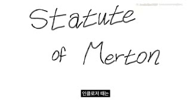
대표 프레임
손글씨 타이틀
자막(검정 박스)
라이브채팅 오버레이 2줄
샷손글씨 타이틀앵글플랫카메라고정, 손글씨 라이트온구도흰 배경 중앙에 검정 마커 필기체 'Statute / of Merton' 3줄 대각 배치, PiP 없음, 하단 자막동작글씨가 써지는 동안 내레이션대사호스트: 인클로저 때는 머튼 조례라는 게 있었어요. 이 조례 내용을 요약하면 목초지, 풀이 있는 땅을 적당히만 남겨 두면 나머지는 귀족들 마음대로 해도 된다, 이거예요.화면 자막인클로저 때는 / 머튼 조례라는 게 있었어요들어오는 전환하드컷효과음/음악마커 필기음(추정)역할과거 법(머튼 조례)=현재 법(페어유즈) 대응을 위한 개념 카드
1순위
(Pollo 이미지 모델 중 레퍼런스 지원 모델) nano-banana 계열
정지 그래픽/문서/두들은 이미지 1장 + FFmpeg 켄번즈가 원본과 동일
2순위
flux-kontext
레퍼런스 기반 텍스트·레이아웃 수정
3순위
gpt-image 계열
한글/영문 타이포 정확도
① 이미지 프롬프트 (원본 클론)16:9, pure white background, black marker handwritten English words 'Statute' 'of' 'Merton' in casual cursive stacked diagonally in the center, whiteboard lecture look.
② 영상 프롬프트 (원본 클론)Handwriting write-on stroke animation 900 ms per word, then hold; 11.5 s.
③ 동물 버전 이미지 프롬프트Same handwritten card; optional hamster paw holding the marker entering from the right edge.
④ 동물 버전 영상 프롬프트Write-on animation; the hamster paw finishes the last stroke and exits.
네거티브typed font, realistic human host, live-action face, extra horns, extra eyes, deformed headphones, body or torso visible, garbled text, misspelled Korean, watermark, channel logo, lowres, blur, jpeg artifacts, flicker, lip-sync drift, jitter
컷 24 · 숫자 대비(3% vs 거의 전부) — 법의 영향력을 표로 각인
1438.375s → 1461.125s (22.75s)
대표 프레임
표 헤더
1차 열
2차 열
아바타 PiP(좌하단)
자막(검정 박스)
샷비교 표 그래픽앵글플랫카메라고정, 행 순차 등장구도검정 배경 상단 이탤릭 세리프 'Enclosure', 흰 헤더 바 '1차 | 2차', 좌열 '머튼 법령으로 얼레벌레 땅 사유화 찔끔만 함', 우열 '지주가 법 만듦 / 귀족에게 유리한 법 4000개 / 대규모 사유화'. 아바타 PiP가 이번엔 좌하단동작아바타 내레이션, 표 칸이 말에 맞춰 채워짐대사호스트: 과거 인클로저는 1차 2차로 나뉘는데 1차 때는 우리가 앞서 봤듯이 인클로저를 지지하는 뚜렷한 법은 없었어요. … 본인에게 유리한 법 4천 개 이상을 만들어 본격적으로 땅을 사유화하기 시작했습니다.화면 자막과거 인클로저는 / 1차 공유지의 3%만 / 법 4천 개들어오는 전환하드컷효과음/음악BGM 지속역할숫자 대비(3% vs 거의 전부) — 법의 영향력을 표로 각인
1순위
(Pollo 이미지 모델 중 레퍼런스 지원 모델) nano-banana 계열
정지 그래픽/문서/두들은 이미지 1장 + FFmpeg 켄번즈가 원본과 동일
2순위
flux-kontext
레퍼런스 기반 텍스트·레이아웃 수정
3순위
gpt-image 계열
한글/영문 타이포 정확도
① 이미지 프롬프트 (원본 클론)16:9, pure black background, top italic white serif title 'Enclosure', below a white header bar split into '1차' and '2차', two columns of centered white Korean text lines, minimalist lecture slide, lots of negative space, bottom-left reserved for picture-in-picture.
② 영상 프롬프트 (원본 클론)Header slides in 200 ms, each text line fades in 250 ms on the spoken keyword; PiP mascot (bottom-left) lip-syncs; 22.75 s.
③ 동물 버전 이미지 프롬프트Same table slide; the hamster Haemjji PiP at bottom-left (x 2-28%, y 55-100%): glossy 3D stylized hamster mascot head named Haemjji: a round chubby apricot-orange and cream hamster face (#F2A65A / #FFF1DC), tiny rounded ears, half-lidded deadpan sleepy blue eyes with thick straight dark brows, small pink nose, tiny glossy pouty mouth with two buck teeth, puffed cheek pouches, wearing chunky matte graphite-purple over-ear headphones with a violet rim light, no body, soft studio key light from front-left, clean Pixar-like toy render.
④ 동물 버전 영상 프롬프트Same build; Haemjji PiP bottom-left lip-syncs, looks toward the table on '4천 개'.
네거티브realistic human host, live-action face, extra horns, extra eyes, deformed headphones, body or torso visible, garbled text, misspelled Korean, watermark, channel logo, lowres, blur, jpeg artifacts, flicker, lip-sync drift, jitter
컷 25 · 3단 구조(저항/보복/통제) 챕터 로드맵 — 다음 20분의 목차를 제시해 오픈루프 3개 생성
1576.25s → 1583.125s (6.875s)
대표 프레임
키워드 Control
자막(검정 박스)
라이브채팅 오버레이 2줄
샷1단어 키워드 카드앵글플랫카메라고정구도순검정 배경 정중앙 흰 이탤릭 세리프 'Control' 한 단어(앞선 'Refuse'(흰 배경)·'Blacks'(어두운 사진)와 3연작). PiP 없음동작화면엔 단어만, 내레이션대사호스트: 법이 귀족의 편에 섰을 때 평민들에게는 크게 세 가지 일이 일어났어요. 저항, 보복, 그리고 통제.화면 자막그리고 통제들어오는 전환하드컷(1577.0~1577.9s 짧은 무음 뒤)효과음/음악무음 0.9초 → BGM역할3단 구조(저항/보복/통제) 챕터 로드맵 — 다음 20분의 목차를 제시해 오픈루프 3개 생성
1순위
(Pollo 이미지 모델 중 레퍼런스 지원 모델) nano-banana 계열
정지 그래픽/문서/두들은 이미지 1장 + FFmpeg 켄번즈가 원본과 동일
2순위
flux-kontext
레퍼런스 기반 텍스트·레이아웃 수정
3순위
gpt-image 계열
한글/영문 타이포 정확도
① 이미지 프롬프트 (원본 클론)16:9, pure black background, single centered white italic serif word 'Control', cinematic minimal chapter card, faint film grain.
② 영상 프롬프트 (원본 클론)Word fades in 300 ms and holds 6.8 s.
③ 동물 버전 이미지 프롬프트Same keyword card; no character.
④ 동물 버전 영상 프롬프트Same fade; no character.
네거티브realistic human host, live-action face, extra horns, extra eyes, deformed headphones, body or torso visible, garbled text, misspelled Korean, watermark, channel logo, lowres, blur, jpeg artifacts, flicker, lip-sync drift, jitter
컷 26 · 한국 시청자 현실로 주제 로컬라이즈 — '먼 미국 얘기'가 아니라는 자기관련성 ⚠️민감 주
2060.125s → 2065.125s (5.0s)
대표 프레임
앵커
헤드라인 바
라이브채팅 오버레이 2줄
샷국내 뉴스 클립(외부 푸티지)앵글정면카메라고정(방송)구도한국 방송 뉴스 앵커 스튜디오, 좌측 앵커, 우측 보행자 발 영상 합성, 하단 대형 자막바 헤드라인. PiP 없음동작앵커가 통계 보도대사앵커(원음): 지난해 우리나라에서 매일 약 40명이 스스로 목숨을 끊었습니다. 13년 만에 가장 많은 숫자인데…화면 자막방송 자막바 원본 그대로(번역 자막 없음)들어오는 전환하드컷효과음/음악뉴스 원음, BGM 덕킹역할한국 시청자 현실로 주제 로컬라이즈 — '먼 미국 얘기'가 아니라는 자기관련성 ⚠️민감 주제
1순위
seedance-2-0
인터뷰이 미세표정·감정 연기(실존인물 대신 가상 인물로)
2순위
kling-v3
고정 인터뷰 프레이밍 안정
3순위
veo-3-1
대사 포함 생성 필요 시
① 이미지 프롬프트 (원본 클론)16:9, fictional Korean TV news studio, male anchor in navy suit on the left, a composite window on the right showing pedestrians' legs on a crosswalk, a large lower-third headline banner area left blank for text, broadcast lighting.
② 영상 프롬프트 (원본 클론)Locked-off 5 s, anchor reads news soberly.
③ 동물 버전 이미지 프롬프트Same news studio with a hamster anchor in a navy suit.
④ 동물 버전 영상 프롬프트Hamster anchor reads soberly; 5 s.
네거티브real network logo, real person likeness, modern objects, anachronism, cartoon style, text artifacts, watermark, logo, oversaturated, lowres, warped anatomy, extra limbs
컷 27 · 감정 절정 구간 — 편집 개입 최소화로 진정성·몰입(편집자가 '빠지는' 선택) ⚠️민감 주
2257.75s → 2507.75s (250.0s)
대표 프레임
증인
출처 라벨
자막(검정 박스)
라이브채팅 오버레이 2줄
샷청문회 증언 롱테이크(250초, 최장 샷)앵글살짝 로우, 3/4카메라고정(원 중계 카메라) — 편집 컷 없음구도의회 청문회 증인석 여성 증인 MCU, 뒤로 방청객 흐림, 좌상단 출처 라벨 'Forbes Breaking News', 하단 번역 자막. PiP 없음동작증인이 원고를 읽으며 감정을 억누르는 증언대사증인(영어 원음, 번역 자막): 제 아이의 죽음은 캐릭터 AI라는 플랫폼의 AI 챗봇에 의한 장기적 학대의 결과였습니다. … (4분 이상 원음)화면 자막문장마다 번역 자막(검정 박스), 인용부호 사용 예: "어떤 시절 그는 로켓을 만들고 싶어했죠"들어오는 전환하드컷효과음/음악원음 + 아주 낮은 BGM역할감정 절정 구간 — 편집 개입 최소화로 진정성·몰입(편집자가 '빠지는' 선택) ⚠️민감 주제
1순위
seedance-2-0
인터뷰이 미세표정·감정 연기(실존인물 대신 가상 인물로)
2순위
kling-v3
고정 인터뷰 프레이밍 안정
3순위
veo-3-1
대사 포함 생성 필요 시
① 이미지 프롬프트 (원본 클론)16:9, fictional US Senate committee hearing room, a woman in her 40s in a black blazer testifying at a witness table with a microphone, blurred audience behind her, C-SPAN style static camera, slightly low angle, natural fluorescent light.
② 영상 프롬프트 (원본 클론)Locked-off long take; she reads a statement, pauses, swallows, looks up; no camera movement; long duration (segment into 10 s generations and join with hard cuts hidden by B-roll if needed).
③ 동물 버전 이미지 프롬프트Same hearing room; for the animal version keep human footage replaced by a respectful anthropomorphic hamster witness in a black blazer (avoid comedy).
④ 동물 버전 영상 프롬프트Hamster witness testifies solemnly, no cartoon exaggeration.
네거티브comedic expression, real person likeness, modern objects, anachronism, cartoon style, text artifacts, watermark, logo, oversaturated, lowres, warped anatomy, extra limbs
컷 28 · '업계 대부'의 고백 = 최고 권위 증언으로 결론(인본주의) 설득
2879.875s → 2921.125s (41.25s)
대표 프레임
인터뷰이
자막(검정 박스)
라이브채팅 오버레이 2줄
샷전문가 인터뷰 롱폼 클립앵글3/4 아이레벨카메라고정(원본 팟캐스트 카메라)구도어두운 스튜디오 회색 머리 남성 과학자 MCU, 인물 좌측 1/3, 우측 여백, 좌상단 출처 라벨, 하단 번역 자막동작과학자가 손짓하며 개인적 회심 이야기대사인터뷰이(영어 원음, 번역 자막): AI가 사회에 미칠 긍정적 영향에 아주 관심이 많았어요. … 하지만 ChatGPT 등장 이후 완전히 다른 감정을 느꼈죠.화면 자막ai가 사회에 미칠 긍정적 영향에 아주 관심이 많았어요들어오는 전환하드컷효과음/음악원음 + 저음 BGM역할'업계 대부'의 고백 = 최고 권위 증언으로 결론(인본주의) 설득
1순위
seedance-2-0
인터뷰이 미세표정·감정 연기(실존인물 대신 가상 인물로)
2순위
kling-v3
고정 인터뷰 프레이밍 안정
3순위
veo-3-1
대사 포함 생성 필요 시
① 이미지 프롬프트 (원본 클론)16:9, moody dark studio podcast interview, a fictional grey-haired male scientist in his 60s in a black sweater over a pink collared shirt, seated on the left third, soft key light, dark concrete background, 50mm shallow depth of field.
② 영상 프롬프트 (원본 클론)Locked-off; he speaks thoughtfully with small hand gestures; 41 s (generate in 10 s chunks).
③ 동물 버전 이미지 프롬프트Same studio with an elderly grey-furred hamster scientist in a black sweater.
④ 동물 버전 영상 프롬프트Hamster scientist speaks thoughtfully with small paw gestures; 41 s.
네거티브real person likeness, modern objects, anachronism, cartoon style, text artifacts, watermark, logo, oversaturated, lowres, warped anatomy, extra limbs
컷 29 · 톤 전환(어둠→밝음)으로 '문제 제기'에서 '해법/희망' 파트 진입을 시
3052.0s → 3105.0s (53.0s)
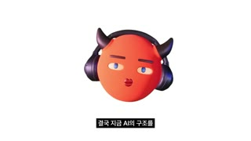
대표 프레임
호스트 아바타(센터)
자막(검정 박스)
라이브채팅 오버레이 2줄
샷MCU(아바타, 흰 배경 모드)앵글정면카메라고정 + 문장 경계 펀치인구도순백(#FFFFFF) 배경 정중앙 아바타 — 50:50~1:00:10 개인 고백/해법 파트에서만 배경이 흰색으로 전환동작아바타 무표정 내레이션(내용은 개인 고백·진심)대사호스트: 결국 지금 AI의 구조를 변화시키기 위해 내밀 수 있는 명분은 인간의 가치를 최우선으로 여기는 인본주의적 마인드밖에 없습니다.화면 자막변화시키기 위해 / 인본주의적 마인드밖에 없습니다들어오는 전환하드컷(검정→흰 배경 전환 자체가 파트 전환 신호)효과음/음악BGM 밝은 톤으로 교체(추정)역할톤 전환(어둠→밝음)으로 '문제 제기'에서 '해법/희망' 파트 진입을 시각적으로 알림
1순위
minimax-h3
립싱크+오디오 동시 생성, 무료 — 고정 정면 아바타 대사컷에 최적
2순위
kling-v3-omni
레퍼런스 이미지 유지력 좋고 입모양 정확
3순위
gemini-omni-1-1-flash
짧은 문장 단위 빠른 반복 생성
① 이미지 프롬프트 (원본 클론)16:9, pure white background #FFFFFF, centered glossy 3D stylized mascot head: a perfectly round coral-red sphere face (#F15C44), two short dark maroon devil horns, half-lidded deadpan blue eyes with thick straight dark-brown brows, small glossy red puckered lips, wearing chunky matte graphite-purple over-ear headphones with a violet rim light, no body, soft studio key light from front-left, subtle subsurface sheen, clean Pixar-like toy render, soft shadowless light, head fills 66% of height.
② 영상 프롬프트 (원본 클론)Locked-off, lip-sync Korean line, deadpan; punch-in 112% at sentence boundaries; 53 s in chunks.
③ 동물 버전 이미지 프롬프트16:9, pure white background, centered glossy 3D stylized hamster mascot head named Haemjji: a round chubby apricot-orange and cream hamster face (#F2A65A / #FFF1DC), tiny rounded ears, half-lidded deadpan sleepy blue eyes with thick straight dark brows, small pink nose, tiny glossy pouty mouth with two buck teeth, puffed cheek pouches, wearing chunky matte graphite-purple over-ear headphones with a violet rim light, no body, soft studio key light from front-left, clean Pixar-like toy render.
④ 동물 버전 영상 프롬프트Haemjji lip-syncs calmly on white; punch-ins at sentence boundaries.
네거티브realistic human host, live-action face, extra horns, extra eyes, deformed headphones, body or torso visible, garbled text, misspelled Korean, watermark, channel logo, lowres, blur, jpeg artifacts, flicker, lip-sync drift, jitter
컷 30 · 사인오프 시그니처 + 채팅 롤을 엔딩 크레딧처럼 사용 → 공동체감·댓글 유도(사회적 증거)
3788.125s → 3920.782s (132.657s)
대표 프레임
호스트 아바타(센터)
채팅 스크롤 컬럼
샷아바타 사인오프 → 라이브채팅 스크롤 엔딩앵글정면카메라고정 → 블랙 + 채팅 스크롤구도1:03:08~1:03:45 센터 아바타(검정 배경) 마무리 멘트, 1:03:50~1:05:21 순검정 화면 우측(x 64~96%)에 프리미어 라이브 채팅이 전체 높이로 빠르게 스크롤동작아바타 사인오프 후 퇴장, 시청자 채팅(감사·ㅠㅠ·박수 이모지)이 폭주하듯 흐름대사호스트: 네. 그럼 저는 빠른 시일 내에 더 유익하고 재밌는 영상으로 돌아오도록 하겠습니다. 그럼 여기까지 알고 보면 간단한 지식.화면 자막정말 바라건데 / 알고 보면 간단한 지식들어오는 전환하드컷 → 약 1:03:48 블랙효과음/음악아웃트로 BGM(추정), 내레이션 없음 약 90초역할사인오프 시그니처 + 채팅 롤을 엔딩 크레딧처럼 사용 → 공동체감·댓글 유도(사회적 증거)
1순위
minimax-h3
립싱크+오디오 동시 생성, 무료 — 고정 정면 아바타 대사컷에 최적
2순위
kling-v3-omni
레퍼런스 이미지 유지력 좋고 입모양 정확
3순위
gemini-omni-1-1-flash
짧은 문장 단위 빠른 반복 생성
① 이미지 프롬프트 (원본 클론)16:9, pure black background with a tall right-side column of fast-scrolling live chat messages: small circular avatars, colored usernames, white Korean messages, emoji; nothing else on screen.
② 영상 프롬프트 (원본 클론)First 37 s: centered mascot says the sign-off; then 90 s of black with the chat column scrolling upward at ~3 lines per second.
③ 동물 버전 이미지 프롬프트Same ending; centered glossy 3D stylized hamster mascot head named Haemjji: a round chubby apricot-orange and cream hamster face (#F2A65A / #FFF1DC), tiny rounded ears, half-lidded deadpan sleepy blue eyes with thick straight dark brows, small pink nose, tiny glossy pouty mouth with two buck teeth, puffed cheek pouches, wearing chunky matte graphite-purple over-ear headphones with a violet rim light, no body, soft studio key light from front-left, clean Pixar-like toy render for the sign-off on black, then chat scroll.
④ 동물 버전 영상 프롬프트Haemjji says '그럼 여기까지 알고 보면 간단한 지식', waves a tiny paw, cut to black chat-scroll credits.
네거티브realistic human host, live-action face, extra horns, extra eyes, deformed headphones, body or torso visible, garbled text, misspelled Korean, watermark, channel logo, lowres, blur, jpeg artifacts, flicker, lip-sync drift, jitter
✂️ 편집 키트
타임라인0:00 빨간 '500 years ago' → 0:01 Utopia 표지 → 0:02.6 토마스 모어 초상+인용 → 0:07 영어 원문 타자 카드 → 0:10.4 사투르누스 명화 틸트업 → 0:16.1 아바타 질문(19.5 펀치인) → 0:22.4 양떼 정면응시 → 0:30.4 아바타 → 0:36.3 탄광 판화 → 0:41.9 아바타 오픈루프 → 0:49 페이드투블랙 → 0:50.5~1:28.6 회색 디스클레이머 6장 → 1:29.9 16세기 마을 → 1:34.6 'Enclosure' 카드 → 1:30~5:16 챕터1(4:10 투표) → 5:16 웹 챕터(6:39~8:11 92초 도식) → 8:43 AI=양 챕터(기사·인터뷰·댓글·두들) → 17:58 서두르는 이유 → 21:45 머튼 조례/페어유즈 → 25:42 저항·보복·통제 → 32:40 분열·고립(34:20 뉴스, 37:37~41:47 청문회 250초) → 43:50 해법 → 50:50 흰 배경 고백 → 57:16 제목 페이오프 → 1:00:17 요약 도식 → 1:01:19 클로징 → 1:03:43 사인오프 → 1:03:50 채팅 롤 → 1:05:21 끝
ASS 자막 스타일[Script Info]
ScriptType: v4.00+
PlayResX: 1920
PlayResY: 1080
WrapStyle: 2
ScaledBorderAndShadow: yes
[V4+ Styles]
Format: Name, Fontname, Fontsize, PrimaryColour, SecondaryColour, OutlineColour, BackColour, Bold, Italic, Underline, StrikeOut, ScaleX, ScaleY, Spacing, Angle, BorderStyle, Outline, Shadow, Alignment, MarginL, MarginR, MarginV, Encoding
; 기본 자막: 흰 글씨 + 불투명 검정 박스(BorderStyle=3), 하단 중앙, 글자 중심 y≈87.5%
Style: Sub,Pretendard SemiBold,44,&H00FFFFFF,&H00FFFFFF,&H00000000,&H00000000,0,0,0,0,100,100,0,0,3,9,0,2,60,60,112,1
; 인용문(초상화 위): 흰 세리프, 좌측 중앙
Style: Quote,Noto Serif KR,52,&H00FFFFFF,&H00FFFFFF,&H00000000,&H00000000,0,0,0,0,100,100,0,0,1,0,0,4,190,0,0,1
; 영어 원문 타자 인용 + 회색 번역
Style: QuoteEN,Courier New,34,&H00FFFFFF,&H00FFFFFF,&H00000000,&H00000000,0,0,0,0,100,100,1,0,1,0,0,5,0,0,0,1
Style: QuoteKR,Noto Serif KR,28,&H00A0A0A0,&H00A0A0A0,&H00000000,&H00000000,0,0,0,0,100,100,0,0,1,0,0,5,0,0,0,1
; 디스클레이머 회색 카드
Style: Card,Pretendard,34,&H009A9A9A,&H009A9A9A,&H00000000,&H00000000,0,0,0,0,100,100,0,0,1,0,0,5,0,0,0,1
; 문서 번역 박스(검정 박스 흰 굵게)
Style: DocKR,Pretendard Bold,36,&H00FFFFFF,&H00FFFFFF,&H00000000,&H00000000,1,0,0,0,100,100,0,0,3,8,0,7,40,0,480,1
; 출처 라벨
Style: Src,Pretendard,20,&H00C8C8C8,&H00C8C8C8,&H00000000,&H00000000,0,0,0,0,100,100,0,0,1,0,0,7,20,0,14,1
; 라이브채팅(우상단 2줄) — chat.ass 로 분리 사용
Style: Chat,Pretendard Medium,22,&H00FFFFFF,&H00FFFFFF,&H00000000,&H64000000,0,0,0,0,100,100,0,0,1,0,1,9,0,90,14,1
[Events]
Format: Layer, Start, End, Style, Name, MarginL, MarginR, MarginV, Effect, Text
Dialogue: 0,0:00:01.00,0:00:02.62,Sub,,0,0,0,,유토피아라는 책을 쓴
Dialogue: 0,0:00:02.72,0:00:04.30,Sub,,0,0,0,,토마스 모어는
Dialogue: 1,0:00:05.00,0:00:07.00,Quote,,0,0,0,,{\fad(500,0)}“양이 사람을 잡아먹는다.”
Dialogue: 1,0:00:07.00,0:00:10.20,QuoteEN,,0,0,0,,{\fad(0,400)}{\k3}Your {\k3}sheep, {\k3}they {\k3}eat {\k3}up {\k3}and\N{\k3}swallow {\k3}down {\k3}the {\k3}very {\k3}men {\k3}themselves.
Dialogue: 1,0:00:08.00,0:00:10.20,QuoteKR,,0,0,60,,{\fad(300,400)}\N\N\N당신의 양이 사람을 통째로 삼키고 있다.
Dialogue: 0,0:00:19.50,0:00:21.30,Sub,,0,0,0,,지금 똑같이 일어나고 있다면
Dialogue: 0,0:00:26.03,0:00:28.60,Sub,,0,0,0,,정말 소름이 끼칠 만큼
Dialogue: 1,0:00:50.50,0:00:54.50,Card,,0,0,0,,{\fad(400,400)}강렬하고 짧은 형식의 영상이 범람하는 지금\N많은 정보가 담긴 긴 영상,
Dialogue: 1,0:05:52.00,0:06:00.00,DocKR,,0,0,0,,{\fad(300,0)}CERN은 이 코드에 대한 모든 지적 재산권을 포기하며\N누구든지 이를 사용, 복제, 수정 및 재배포할 수 있다
Dialogue: 1,0:11:54.00,0:12:04.00,Src,,0,0,0,,출처: Bloomberg
; 키워드 하이라이트는 원본에 거의 없음 — 쓰고 싶다면 빨강 #C8102E: {\c&H2E10C8&}울타리{\c&HFFFFFF&}
; chat.ass 예: 이름색 하늘 #8FD3FF / 노랑 #F4D35E / 분홍 #F7A1C4
; Dialogue: 0,0:00:25.00,0:00:29.00,Chat,,0,0,0,,{\fad(150,150)}{\c&HFFD38F&}azure_5370{\c&HFFFFFF&} 오\N{\c&HC4A1F7&}구름이냥냥{\c&HFFFFFF&} 허어
HyperFrames 편집 프롬프트 (Claude에 그대로 붙여넣기)너는 HyperFrames로 '알간지(알고 보면 간단한 지식)'식 65분 역사-평행 해설 롱폼을 조립하는 편집자다. 캔버스 1920x1080, 29.97fps, 모든 전환은 기본 하드컷(0ms).
[트랙] ① BG(검정 #000000 / 빨강 #910200 / 흰 #FFFFFF 단색) ② BROLL(명화·역사 이미지·문서·도식·두들·인터뷰 클립) ③ HOST(3D 아바타 — 원본은 빨간 악마 구체 머리+보라 헤드폰, 동물 버전은 햄스터 '햄찌') ④ SUB(자막) ⑤ CHAT(우상단 라이브채팅 2줄) ⑥ AUDIO(내레이션, BGM, 원음).
[호스트 규칙] 설명 문장=센터 아바타(머리가 화면 높이 66%, 가로 33~71%). 증거/예시 문장=B롤 풀스크린 + 우하단 PiP(x 70~96%, y 55~100%, 높이 520px, 우측 여백 40px). 표가 오른쪽을 차지하면 PiP를 좌하단으로. 인터뷰·뉴스·청문회 원음 구간은 PiP 제거. 센터 아바타는 문장 경계마다 100%↔112% 즉시 펀치인(애니메이션 없이 점프), 3~7초마다 한 번.
[자막] 흰색 Pretendard SemiBold 44px, 불투명 검정 박스(패딩 9px), 중앙 하단 글자중심 y=87.5%, 한 줄 8~15자 구 단위로 끊고 등장/퇴장 애니메이션 없음(0ms). 키워드 색 하이라이트 쓰지 말 것.
[훅 0~90초 타임라인] 0.00 검정+빨간 이탤릭 'Georgia' 64px '500 years ago' 300ms 페이드인 → 1.00 하드컷 『Utopia』 표지(상단 중앙 작게)+PiP 팝 → 2.625 토마스 모어 초상 푸시인 1.00→1.08, 5.0s 인용문 “양이 사람을 잡아먹는다.” 좌→우 와이프 500ms → 7.00 어두운 양떼 회화 위 영어 원문 타자기(글자당 30ms)+회색 번역 300ms 페이드, 9.8s부터 400ms 페이드아웃 → 10.375 사투르누스풍 명화 틸트업(다리→얼굴 5.7초, 1.4초 지점 가속)+PiP → 16.125 센터 아바타, 19.5s 펀치인 → 22.375 흑백 양떼 정면응시 푸시인 1.00→1.06(8초)+PiP → 30.375 센터 아바타 → 36.25 4° 기울어진 탄광 아동노동 판화 드리프트+PiP → 41.875 센터 아바타, 47.5s 펀치인 → 49.06 500ms 페이드투블랙, 무음 1.43초 → 50.5~88.6 회색(#9A9A9A) 34px 3줄 디스클레이머 카드 6장(각 400ms 인/아웃) → 88.66 무음 1.3초 → 89.875 16세기 영국 마을 설정샷 → 93.375 아바타 1.25초 → 94.625 빨강 배경 흰 세리프 'Enclosure' + 검은 손그림 밑줄 600ms 드로잉.
[본편 규칙] 챕터 시작마다 1단어 키워드 카드(세리프 or 손글씨 라이트온 900ms). 도식은 요소별 200ms 페이드로 내레이션 키워드에 정확히 맞춰 누적(92초 단일 도식 허용). 문서·기사 캡처는 빨간(#C8102E) 손그림 타원 400ms 드로잉 + 검정박스 흰 굵은 한글 번역. 두들 스킷은 8fps 보일 흔들림, 문장마다 프레임 교체. 댓글 카드는 150ms 팝인(0.96→1.0). 투표 카드: 질문 바 200ms 슬라이드다운, 17초 대기, 퍼센트 800ms 카운트업. 50:50~1:00:10 해법/고백 파트는 BG를 흰색으로 전환. 5초 무음 포즈(18:15, 44:12)는 검정 화면 유지.
[채팅] 우상단 x 70~98%, y 1~9%에 2줄, 원형 아이콘+컬러 닉네임(22px)+흰 메시지, 3~5초마다 한 줄씩 위로 밀림(150ms). 1:03:50부터 90초간 우측 x 64~96% 전체 높이 채팅 스크롤 엔딩.
[오디오] 내레이션 기준 BGM -24~-28dB 사이드체인 덕킹(attack 15ms, release 450ms), 원음 클립 구간 BGM 추가 -8dB, 최종 loudnorm -14 LUFS(원본 느낌은 -19 LUFS).
[동물 버전] HOST 트랙의 에셋만 햄찌로 교체하고 위치·크기·펀치인 타이밍·자막·배경색은 1:1 유지. 투표 대기 17초엔 햄찌가 해바라기씨 먹는 루프 삽입. 실존 인물 얼굴은 쓰지 말고 가상 인물 또는 동물 인물로.
✅ 똑같이 만들기 체크리스트
화면의 약 45%는 '센터 아바타 + 검정 배경', 나머지는 B롤+우하단 PiP — 이 2모드 교대만 지켜도 80% 재현
센터 아바타는 문장 경계마다 100%↔112% 즉시 펀치인(애니메이션 없이 점프), 3~7초마다
자막: 흰 SemiBold 44px + 불투명 검정 박스, y≈87.5%, 8~15자 구 단위, 등장 효과·색 하이라이트 금지
배경색 3단 체계: 검정(기본) / 진홍 #910200(과거·도식·키워드) / 흰색(해법·고백 파트) — 색으로 파트 전환 신호
모든 주장에 원문 증거 캡처 + 빨간 손그림 원/밑줄 + 검정박스 한글 번역, 인터뷰는 좌상단 '출처:' 라벨
훅 42초 안에 화면 8회 변화 + 2인칭 가정 질문 + 오픈루프, 이어서 무음 블랙 디스클레이머 카드로 호흡 리셋
챕터마다 1단어 키워드 카드, 8분·26분·57분에 반전/로드맵/제목 페이오프 배치
우상단 라이브채팅 2줄 상시 + 실시간 투표 1회 + 엔딩 채팅 롤(프리미어로 공개해 실제 채팅을 쓰는 게 가장 자연스러움)
무음 포즈(1~5초)를 충격 정보 직후에 의도적으로 배치, 최종 라우드니스 원본 -19 LUFS 또는 업로드용 -14 LUFS
⚠️ 실존 인물 인터뷰·뉴스·청문회 클립은 공정이용 범위의 짧은 인용+출처 표기, AI 재현 시 실존 인물 얼굴·목소리 모사 금지(가상 인물로)
🐹 동물 버전 기획호스트 아바타(빨간 악마 구체+보라 헤드폰)를 햄스터 '햄찌'(살구색 둥근 햄스터 머리, 반쯤 감긴 무표정 눈, 같은 보라 헤드폰)로 교체한다. 바꾸는 것: HOST 트랙 에셋(센터·PiP·두들 스틱피겨·밈 콜라주 합성 얼굴), 투표 대기 17초 해바라기씨 루프, 사인오프에서 앞발 흔들기, 인터뷰/뉴스를 가상 인물 대신 '동물 인물'로 재촬영할 경우 햄스터 기자·앵커·과학자(청문회처럼 무거운 장면은 코믹 금지). 그대로 두는 것: 배경색 3단 체계, 자막 스타일·위치, PiP 좌표와 크기, 펀치인 타이밍, 챕터 구조·대본 공식·무음 포즈·채팅 오버레이. 메타포도 유지 가능(햄찌가 '양'을 설명하는 구도가 오히려 귀여운 대비). 목소리는 원래 톤에 피치만 +1~2 세미톤, 주제 무게를 위해 과장된 귀여움은 두들·밈 구간에서만 허용.
'결혼하는 이유와 안 하는 이유는 같다 — 한글 두 글자, 영어 네 글자'라는 퀴즈를 던지고, 정상성·뇌과학·원시시대·종교·산업혁명·프랑스혁명·낭만주의를 10개 질문으로 거슬러 올라가 40분 뒤 정답 '사랑'을 공개하는 얼굴 없는(악마 아바타) 인문 다큐 에세이.
🔥 떡상 이유
제목 호기심 갭('진짜 이유') + 초보편 주제: 결혼/비혼은 한국 2030 최대 논쟁거리 — 기혼·미혼 모두 '내 얘기'로 클릭, 설 명절 잔소리 시즌을 앞둔 업로드 타이밍(추정)
40분짜리 오픈 루프: 0:04 '한글 두 글자, 영어 네 글자'(빈칸 동그라미 그래픽)로 퀴즈를 걸고 39:56에야 '사랑'을 공개 → 끝까지 보게 만드는 최장 페이오프
콜드오픈 패턴 인터럽트: 첫 3.1초에 컷 13개(0.125~0.5초), 색 틴트가 매 컷 바뀌는 신문 플래시 → 첫 90초 29컷(분당 19컷), 이후 평균 약 11초로 점점 느려지는 '빠르게 잡고 천천히 설명' 곡선
넘버링 챕터 카드 Q1~Q10(빨강 그런지+브러시 영단어): 진행률을 약속해 '몇 번까지 남았나' 체크하게 하고, 매 챕터가 질문형 리훅 역할
내부 반론 장치(스틸맨): 비꼬는 밈 성대모사·토론 인형 두 명·'누구세요? 나 OOO' 학자 카메오 → 강의가 캐릭터 대화극이 되어 지루함 제거 + 시청자 반박을 선제 처리
부족 라벨링(A구역/C구역)과 자기관련성: 시청자가 자신이 어느 구역인지 대입 → 댓글 논쟁 유도(댓글 2,500개)
숨은 단서 CTA: 결말에서 '진행 도중 아주 강조했던 부분을 다시 보면 다음다음 영상 힌트가 있다, 찾으면 댓글로' → 재시청(시청시간)과 댓글 동시 부스트
hook0~4.5초 '결혼을 하고, 결혼을 하지 않는 진짜 이유는 사실 같습니다' 역설 + 4.5~8초 빈칸 퀴즈(□□/□□□□)
conflict정상성(A구역, 다수·강자) vs 새 다수(C구역, '하면 좋고 아니면 말고') — 반론 목소리가 '왜 강자 편을 드냐'고 공격하며 긴장 생성
payoff10개 질문으로 결혼의 역사 리버스 엔지니어링 → 39:56 정답 '사랑' 공개 → 결론: 불신의 시대, 판단 대신 이해가 신뢰·안정감·사랑을 만든다
loop결말에서 다음다음 영상의 단서가 본편 중 '강조한 부분'(24:17 '여러분 여기서부터 아주 잘 보셔야 됩니다' 추정)에 숨어 있다고 말해 재시청 루프 생성
⏱ 편집 리듬
컷 수269평균 컷 길이10.78최단/최장0.125 / 199.375분당 컷5.54해석실측(8fps 검출) 기준. 첫 90초 29컷(분당 19컷) → 0~5분 49컷, 5~10분 29컷, 10~15분 47컷 … 40~45분 7컷, 45~48분 3컷으로 후반 급감. 흰 배경 아바타끼리의 점프컷·자막만 바뀌는 컷·그래픽 내부 전환은 검출이 안 돼 실제 시각 변화는 초반 약 3~5초마다 1회(추정). 결론부(2600~2800초)는 199초 단일 아바타 샷 — '빠르게 잡고, 설명은 천천히, 결론은 정적으로' 3단 템포.
🧭 전체 구성 (챕터)
구간
이름
내용
이탈 방지 장치
0–17.6s
콜드오픈 역설+퀴즈
뉴스 플래시 몽타주 → '하는 이유=안 하는 이유' → 한글 2글자/영어 4글자 퀴즈 → '정답 전에 한 꺼풀 더'
0.125초 플래시 13컷 패턴 인터럽트 + 40분짜리 오픈 루프
17.6–103s
정상성과 A구역
결혼=정상성, A구역 네이밍, 결혼 적령기, 비혼 옹호자 성대모사, 리버만 교수 → 전대상피질(거절=칼에 베인 고통)
개념 그래픽(실루엣/블롭/The Norm 카드) + 밈 반론 + 권위 영상 + 뇌 MRI 증거
103–236s
정상성=계급(정치인·대통령)
정치인이 최상위 계급, 학벌과 결혼이 조건, 미국 대통령 45명 중 미혼 1명(뷰캐넌), 반론 목소리 '제퍼슨도 싱글' → 사별·대리 퍼스트레이디 사례
숫자 퀴즈('몇 명일까요?') + 반론 목소리 끼어들기(대화형)
236–305s
반론 파트: 왜 강자 편?
보조 목소리가 'A역은 강자인데 왜 대변하냐, 너 결혼하니?' 공격 → 다수가 정상을 판단, 다수의 추가 기울고 있다
스틸맨 반박 + 개그('너 결혼하니?')
305–465s
C구역의 등장과 고립의 모순
'해도 좋고 안 해도 좋다'가 다수가 된 C구역, 미혼 조사 1위 돈/2위 필요성 없음, 붕어빵 비유, 가족과만 소통하는 한국인의 자발적 고립
통계 그래프 + 일상 비유 + '왜 그럴까요?' 연쇄 질문
465–497.7s
로드맵 제시
표면 이유(허세·SNS·경제)로는 설명 불가 → 결혼의 역사를 리버스 엔지니어링하겠다, 초반 질문의 답도 알게 될 것
약속(Promise) + 초반 오픈루프 재소환 + 크래시 줌 후 1.5초 무음
497.7–509.4s
지연 인트로
'안녕하세요 알고 보면 간단한 지식 알간지입니다' + 총 10개 질문 예고
8분 17초 늦은 인사 — 이미 몰입된 뒤 브랜딩, 10단계 진행률 약속
509.4–897.3s
Q1 Natural or artificial
결혼은 본능인가 제도인가: 모건·마르크스·엥겔스(난교설) vs 웨스터마크 효과 vs 프로이트 → 영장류 고환 크기 연구로 결론
토론 인형 대화 + 학자 얼굴 합성 카메오 + 밈/고릴라 콜라주 + '~음/~임' 말투 전환
897.3–1026.6s
Q2 monogamy
왜 일부일처? 디터 루카스, 농경·재산 상속, 일부다처의 두 불만(무산 남성 반란·자식 경쟁)
실제 학자 영상 + 인형 반말 토론 + 선택지 질문
1026.6–1255.9s
Q3 Cheat
왜 바람을 고강도로 처벌? 처벌 리스트 몽타주(에칭), 무임승차 문제, 시뮬레이션(300명 이상 집단+성병 → 처벌형 일부일처 승리)
문장=이미지 1장 리스트 몽타주 + 논문 그래프 + '너라면 어떡할래?' 참여 질문
1255.9–1438.9s
Q4 Divorce
이혼의 부정적 인식: 율리우스 법, 서로마 멸망→교회법, 마태복음 19:6, 헨리 8세, 면죄부·마틴 루터 종교개혁
명화+아바타 얼굴 합성 개그 + 역사 에피소드 스토리텔링
1438.9–1664.6s
Q5 personal
결혼이 개인 선택이 된 시점: 산업혁명·인클로저('양이 사람을 잡아먹는다')·핵가족화·개인 통장
24:17 '여러분 여기서부터 아주 잘 보셔야 됩니다' 직접 호명 리훅(다음 영상 단서 추정)
1664.6–1807.1s
Q6 capitalism
돈이 신분을 넘다: 록펠러·카네기·로스차일드, '내 아들들이 돈을 안 빌려주면 전쟁은 없다'
인물 사진 + 일화(인용) + 뉴욕 록펠러센터 B롤
1807.1–1989.8s
Q7 french
프랑스 혁명: 신분 피라미드 2% vs 98%, 결혼=시민계약, 시청 결혼, 이혼 자유화(파리 2년 약 6천 쌍)
피라미드 다이어그램 + 원문 법조문 텍스트 + 숫자
1989.8–2388.1s
Q8 romantic
결혼과 사랑의 결합: 낭만주의, 베르테르, 오만과 편견, 제인 에어 → 조선·1920년대 정차 사건·김정욱 사건 기사 낭독
영화 클립 2초 교차 + 한국 로컬 사례 + 기사 낭독(스토리 몰입)
2388.1–2598.1s
Q9 marriage — 정답 공개
초반 퀴즈 정답 '사랑(LOVE)' → 스테파니 쿤츠: 사랑 기대치가 결혼을 약화, 껍데기는 떨어지고 사랑만 남았다, 신뢰가 없어 고립을 택한다
40분 오픈 루프 회수(페이오프) + 반론('결혼은 현실이야') 즉시 전문가로 봉쇄
2598.1–2800.0s
Q10 then what? — 결론 에세이
판단 대신 이해 → 신뢰 → 안정감 → 사랑
편집 절제(199초 단일 샷) + 진정성 톤, 2인칭 제안
2800.0–2900.2s
아웃트로 CTA
사랑을 강조한 이유 = 다음다음 영상 빌드업, 강조했던 부분 다시 보면 단서, 댓글 요청, 클로징 멘트
숨은 단서 찾기 → 재시청·댓글 유도
대본 공식① 역설 선언('하는 이유와 안 하는 이유는 같다') → ② 빈칸 퀴즈로 정답 보류(오픈루프) → ③ '정답 전에 한 꺼풀 더' 로 개념 정의(정상성) → ④ 청중을 구역으로 라벨링(A/C구역) → ⑤ 반대편 목소리를 비꼬는 성대모사로 등장시켜 즉시 과학 근거로 반박 → ⑥ '우리 한번 생각해 볼까요? ~는 누굴까요?' 질문→숫자 페이오프 → ⑦ 반론 목소리가 진행자를 공격('너 결혼하니?')하게 해 신뢰 확보 → ⑧ 로드맵 약속 후 8분에 늦은 인사 → ⑨ Q1~Q10 번호 질문마다 '학자 A 주장 → 반박자 등장(누구세요? 나 OOO) → 과학/역사 결론' 3박자 → ⑩ 초반 퀴즈 정답 회수 → ⑪ 1인칭 에세이 결론('저는 ~라고 확신합니다/바랍니다') → ⑫ 숨은 단서 CTA. 말투: 진행자는 존댓말 '~죠/~거든요/~입니다', 한 문장 15~30자로 끊어 자막 1줄=1호흡. 토론 인형·학자는 반말('~거지/~잖아/개빡세'), 동물 비교 파트는 커뮤니티체('~음/~임'). 질문 던지기 빈도: 약 30~60초마다 1회('왜 그럴까요?', '누굴까요?', '너라면 어떡할래?'). 반전 배치: 각 챕터 끝에서 앞 주장을 뒤집는 학자 등장. 일상 비유(붕어빵, 첩보영화 가족=약점, 현실 남매 밈)로 추상 개념을 1문장 안에 치환.
첫 30초 대본 원문[00:00.16] 결혼을 하고 결혼을 하지 않는 진짜 [00:02.80] 이유는 사실 같습니다. [00:04.64] 한글로는 두 글자, 영어로는 네 글자. [00:07.27] 과연 뭘까요? 정답을 말하기 전에 [00:09.51] 우선 한 꺼풀 더 깊게 들어가 보죠. [00:11.79] 인간사에서 결혼은 많은 것을 [00:13.75] 상징합니다. 그중 가장 빛나는 특성은 [00:16.35] 바로 정상성. 결혼은 인간사에서 아주 [00:19.40] 오래 그 역사를 자랑하며 [00:21.24] 절대 다수가 선택해 온 아주 성공적인 [00:23.84] 제도입니다. 그리고 결혼을 선택한 [00:26.03] 이들은 가장 높은 정상성의 [00:27.92] 자리를 획득해 왔죠. 이들을 [00:29.80] A 구역이라고 하겠습니다.
🎞 B롤·삽입 유형
유형
빈도
제작법
악마 아바타 A롤(흰/검정 배경 중앙)
전체 러닝타임의 약 45~55%(추정), 챕터 사이마다 복귀
3D 구형 머리 아바타를 립싱크 렌더(원본은 페이스트래킹/버튜버식 추정). 흰 #FFFFFF 배경, 머리 높이 59%. 동물판은 햄찌 머리로 교체 후 minimax-h3 립싱크
아바타 PiP 오버레이(B롤 위 우하단)
5분 이후 분당 약 2~4회(추정)
B롤 위에 배경 제거된 아바타를 폭 23~25%, x70~95%·y33~95%에 overlay. FFmpeg overlay 또는 HyperFrames 레이어
영문 뉴스/문서 플래시(모션블러·컬러 틴트)
콜드오픈 3초에 13컷(분당 250컷 수준), 이후 문서 캡처는 분당 0.3회
기사 스크린샷을 크롭→휩슬라이드+gblur→duotone 틴트→0.125~0.25초 컷. 키워드에 주황/노랑 하이라이트 박스
세리프 영문 타이포 카드(검정)
약 3~5분에 1회
검정 배경 중앙 얇은 세리프(Playfair/Libre Caslon 계열 추정) 흰 글자, 단어 단위 회색→흰 페이드
Q번호 챕터 카드(빨강 그런지+검정 브러시 영단어)
10개(평균 약 4분 간격)
빨강 텍스처 배경 + 마커/브러시 폰트 영단어(monogamy/Cheat/Divorce/personal/capitalism/french/romantic/marriage/then what?) + 흰 이탤릭 'Qn: 한글 질문'
검정 배경 흰 퀼팅 우주복 상반신 실물/3D 인형(추정). 2인 대화는 좌우 2샷. 동물판은 흑곰햄스터·펄 햄스터로 교체
학자 얼굴 합성 카메오('누구세요? 나 OOO')
챕터당 0~2회(모건·프로이트·웨스터마크·디터 루카스·스테파니 쿤츠)
초상 사진 얼굴 누끼를 우주복 몸통에 합성 + 입 움직임. 동물판은 햄스터에 수염/가발 분장(초상권 회피)
밈·리액션 컷아웃
약 3~4분에 1회
검정 배경 누끼 밈(짓눌린 얼굴, 선글라스, 얼굴 감싸기), 손글씨 한글 낙서 추가
명화·아카이브 사진·판화 에칭
역사 파트(Q4~Q8) 분당 2~4회
퍼블릭도메인 명화/판화 + 켄번스 푸시인, 필요시 AI 재현(좌상단 'ai로 제작된 이미지' 라벨)
영화·드라마·강연 클립
Q8 구간 분당 4~6회(2초 교차), 그 외 드묾
짧은 인용 클립(2~6초) + 아바타 PiP로 변형 사용(공정이용 리스크 ⚠️ — 클론 시 AI 재현 권장)
논문 그래프/통계 캡처
약 5분에 1회
논문 figure/통계청 차트 캡처 + 부분 줌, 강조 영역 형광
인용문 텍스트(세피아 사진/빨강/검정 위 중앙 흰 명조)
Q8 한국 사례 구간 집중(20~30초마다)
하단 자막 대신 화면 중앙 2~3줄 인용, 배경은 어두운 세피아 사진 저대비
🎨 스타일 바이블
룩얼굴 없는 에디토리얼 콜라주 다큐: 3D 글로시 아바타(악마 머리) + 플랫 그래픽 + 퍼블릭도메인 명화/판화 + 누끼 밈. 흰색·빨강·검정 3색 배경을 번갈아 써 컷마다 밝기 대비 충격조명아바타·인형은 소프트박스 정면 키(좌상단 약간), 그림자 거의 없음(무한 배경). 그래픽은 플랫. 인형 컷은 검정 배경 탑라이트색#FFFFFF(아바타 기본 배경) · #000000(타이포/인형 배경) · #E8152E / #C8101E(빨강 그래픽·챕터 카드, 비네트 #5A0008) · #E4322B(아바타 피부) · #3A2C6B(헤드폰 보라) · #E83BE8(마젠타 실루엣) · #F2A04A/#F4E21C(형광펜 하이라이트)렌즈아바타: 망원 느낌 약 85mm 등가, 원근 왜곡 없음, 전체 선명. 인형: 50mm, 배경 완전 암부. 클립/명화는 원본 그대로세트실제 세트 없음 — 전부 무한 배경(흰/검정/빨강 종이 텍스처) 합성. 챕터 카드는 빨강 그런지 필름그레인자막 스타일하단 중앙 1줄, 박스 y≈84~92%(중심 88%), 가로 폭은 글자 길이에 맞춤. 불투명 검정 박스(#111111, 패딩 좌우 약 0.8em). 굵은 고딕(Pretendard/Noto Sans KR Bold 계열 추정), 1080p 기준 약 46px(화면 높이 4.3%). 카라오케식 진행 하이라이트: 이미 말한 어절 #FFFFFF, 아직 안 말한 어절 #8C8C8C — 어절 단위로 흰색이 차오름. 등장 애니메이션 없음(하드 교체), 1~2 어절(8~20자) 단위로 매우 짧게 끊음. 인용문 구간은 하단 자막 대신 화면 중앙 흰 명조 2~3줄워터마크상시 워터마크 없음. AI 생성 이미지 컷에만 좌상단 작은 회색 텍스트 'ai로 제작된 이미지'. 인형 컷 좌측에 매우 흐린 빨강 'ganzi' 텍스트 잔상(추정, 브랜딩)
알간지 악마 아바타(진행자) — 몸 없는 3D 빨간 구체 머리, 보라 짧은 뿔 2개, 네이비-보라 오버이어 헤드폰, 평면 만화 눈(크림 흰자·보라 홍채)과 굵은 보라 눈썹, 작은 진홍 입술. 립싱크·눈깜빡임·눈썹 연기. 존댓말 내레이터, 모든 정보의 앵커
캐릭터 시트 프롬프트Character sheet, front view, 3/4 view, side view: a glossy 3D-rendered round red head avatar (#E4322B), perfectly spherical, no body, two short curved dark-purple devil horns on top, large over-ear headphones in deep navy-violet with glossy violet rim highlights, flat 2D cartoon facial features painted on the sphere: cream almond eyes with small purple irises, thick purple eyebrows, small puckered dark-crimson lips, soft studio key light from front-left, subtle contact-free soft shadow, on pure white background, consistent design, 16:9 sheet
동물 버전 캐릭터Character sheet, front, 3/4, side: a glossy 3D-rendered chubby golden hamster head avatar named Hamzzi, round like a ball, no body, cream cheeks, tiny pink nose, big glossy black eyes with white catchlights, two short curved dark-purple devil horns on top (brand continuity), large over-ear headphones in deep navy-violet with glossy violet rim highlights, soft studio key light from front-left, Pixar-quality fur, on pure white background, consistent design, 16:9 sheet
토론자 B(검은 털뭉치 머리 인형) — 흰 퀼팅 우주복 상반신 + 검은 털 공 머리 + 빨간 점 눈 + 크림 헤드폰. 반말로 반론·질문 담당
캐릭터 시트 프롬프트Character sheet: a puppet with a black fuzzy fur-ball head with two tiny glowing red dot eyes, cream over-ear headphones, a cream-white quilted fleece high-neck spacesuit-like jumpsuit body, shoulders visible from chest up, photographed on pure black seamless background, soft top light, shallow depth of field
동물 버전 캐릭터Character sheet: a black bear hamster with cream over-ear headphones, a cream-white quilted fleece high-neck spacesuit-like jumpsuit body, shoulders visible from chest up, photographed on pure black seamless background, soft top light, shallow depth of field
토론자 C(계란 머리 인형) — 흰 퀼팅 우주복 + 주근깨 있는 매끈한 계란 머리, 흰 점 눈과 짧은 선 입, 크림 헤드폰. 설명·정리 담당
캐릭터 시트 프롬프트Character sheet: a puppet with a smooth freckled egg-shaped head with two tiny white dot eyes and a short white line mouth, cream over-ear headphones, a cream-white quilted fleece high-neck spacesuit-like jumpsuit body, shoulders visible from chest up, photographed on pure black seamless background, soft top light, shallow depth of field
동물 버전 캐릭터Character sheet: a pearl-white winter white dwarf hamster with cream over-ear headphones, a cream-white quilted fleece high-neck spacesuit-like jumpsuit body, shoulders visible from chest up, photographed on pure black seamless background, soft top light, shallow depth of field
학자 카메오(얼굴 합성) — 모건·프로이트·웨스터마크·디터 루카스·스테파니 쿤츠 등 실존 학자 얼굴을 우주복 몸통에 합성, 1인칭 반말 주장
캐릭터 시트 프롬프트Collage puppet: a vintage scholar portrait face cut-out composited onto a cream-white quilted fleece high-neck spacesuit-like jumpsuit body, shoulders visible from chest up, photographed on pure black seamless background, soft top light, shallow depth of field, on black
동물 버전 캐릭터A hamster dressed as a historical scholar (fake beard, wig, round glasses) wearing a cream-white quilted fleece high-neck spacesuit-like jumpsuit body, shoulders visible from chest up, photographed on pure black seamless background, soft top light, shallow depth of field, on black
🔊 오디오
목소리진행자 1인 내레이션(차분·지적인 존댓말, 문장 끝 살짝 올림) + 반론/인형/학자 대사는 톤 변화 또는 보조 성우(추정). 과도한 효과 없이 또렷한 근접 마이크, LRA 2.7로 매우 강한 컴프레션BGM전 구간 저음량 연속 BGM(자막에 [음악] 태그가 2~3초마다 검출) — 잔잔한 로파이/앰비언트 피아노+소프트 비트, 약 80~90 BPM(추정). 결론부는 감성 피아노로 전환(추정). 챕터 카드에서 임팩트효과음00:00~00:03 신문 플래시마다 휘시/스와이프(추정)
00:04.5~00:07 빈칸 원 팝 2회·4회(추정)
00:26.5 실루엣 구멍 드롭(추정)
00:41.5 The Norm 카드 착지 '탁'(추정)
00:44~00:51 나이 카운트 틱(추정)
01:15.5 펀치인 킥(추정)
08:14.25 크래시줌 휘익 → 495.6~497.2초 실측 무음
각 Q챕터 카드: 브러시 스윕+저음 임팩트(추정)라우드니스-14.6TTS 팁진행자: 차분한 30대 톤, 속도 약 1.05x, 문장 끝 '~죠/~거든요'에 미세 상승. 질문('과연 뭘까요?') 뒤 250~400ms 쉼. 반론 목소리: 피치 +2반음·빠르게·비꼬는 톤. 인형/학자: 반말, 약간 과장. 커뮤니티체('~음/~임') 구간은 무표정 속사. 결론부는 속도 0.95x, 호흡 길게. 동물판 햄찌는 피치 +3~4반음 귀여운 톤이되 발음 또렷하게
BGM 생성 프롬프트Calm intellectual lo-fi documentary background music, soft felt piano motif, warm Rhodes chords, light brushed hip-hop drums at 84 BPM, subtle vinyl crackle, no vocals, low-mid frequencies left open for narration, loopable 3 minutes
🎬 컷별 완전 분해 (49개)
컷 1 · 콜드오픈 패턴 인터럽트 — 0.1~0.5초 컷 13개로 '결혼'이 전 세계 뉴스 주제임을
0.0s → 0.125s (0.125s)
대표 프레임
키워드 marriage
자막 박스
샷ECU(기사 텍스트 초접사)앵글정면(약간 기울어진 더치 5~10°)카메라빠른 휩팬/슬라이드(가로 모션블러) + 1.1~1.3배 줌 — 0.12~0.5초 플래시구도'marriage' 단어가 화면 중앙 가로선(y≈45~50%)에 오도록 배치, 나머지 줄은 위아래로 잘려 나감, 여백 없음(화면 꽉 채움)동작인물 없음. 영어 뉴스/책 텍스트가 빠르게 미끄러지며 'marriage'만 반복 노출 — 보라(#B04BB5) 틴트 신문 텍스트, 'marriage' 굵은 이탤릭, 가로 모션블러대사진행자(V.O.): "결혼을 하고 결혼을 하지 않는 진짜 이유는 사실…" (0.16초부터 시작)화면 자막결혼을 하고 (말한 부분 흰색 #FFFFFF, 아직 안 말한 부분 회색 #8C8C8C 카라오케)들어오는 전환영상 시작 즉시(프리롤 없음) — 첫 프레임부터 모션블러 텍스트로 스크롤 정지 유도효과음/음악휘시(whoosh)/종이 스와이프 + 틱 효과음(추정), BGM 저음 드론 시작역할콜드오픈 패턴 인터럽트 — 0.1~0.5초 컷 13개로 '결혼'이 전 세계 뉴스 주제임을 과부하로 각인
1순위
(AI 불필요) FFmpeg/HyperFrames 그래픽
텍스트·스톡 캡처 모션은 코드로 만드는 게 가장 정확하고 무료
2순위
wan-v3-0
배경 질감(종이 흔들림·블러)만 AI로 필요할 때 저렴한 환경 모션
3순위
veo-3-1
카메라 휩팬 같은 물리적 무브가 필요할 때
① 이미지 프롬프트 (원본 클론)Extreme close-up of a printed English newspaper column, the word "marriage" centered in the frame, purple (#B04BB5) duotone tint, tilted 7 degrees, horizontal motion blur streaks, halftone print texture, 16:9, 1920x1080
② 영상 프롬프트 (원본 클론)Fast horizontal whip-slide across the newspaper text for 0.3 seconds, strong motion blur, slight zoom-in 1.0 to 1.2, the word marriage stays readable in the center, no people, 16:9
③ 동물 버전 이미지 프롬프트Extreme close-up of a printed newspaper column about hamsters, the word "marriage" centered, purple (#B04BB5) duotone tint, tiny hamster paw-print doodles in the margin, horizontal motion blur, 16:9
④ 동물 버전 영상 프롬프트Same 0.3s whip-slide over the hamster-themed newspaper, motion blur, zoom 1.0 to 1.2, 16:9
네거티브readable gibberish headlines, logos of real newspapers, faces, watermark, 9:16 crop
컷 2 · 콜드오픈 패턴 인터럽트 — 0.1~0.5초 컷 13개로 '결혼'이 전 세계 뉴스 주제임을
0.125s → 0.375s (0.25s)
대표 프레임
키워드 marriage
자막 박스
샷ECU(기사 텍스트 초접사)앵글정면(약간 기울어진 더치 5~10°)카메라빠른 휩팬/슬라이드(가로 모션블러) + 1.1~1.3배 줌 — 0.12~0.5초 플래시구도'marriage' 단어가 화면 중앙 가로선(y≈45~50%)에 오도록 배치, 나머지 줄은 위아래로 잘려 나감, 여백 없음(화면 꽉 채움)동작인물 없음. 영어 뉴스/책 텍스트가 빠르게 미끄러지며 'marriage'만 반복 노출 — 흰 신문지, 'marriage'에 주황 형광펜(#F2A04A) 하이라이트 — "really ruined the marriage"대사진행자(V.O.): "결혼을 하고 결혼을 하지 않는 진짜 이유는 사실…" (0.16초부터 시작)화면 자막결혼을 하고 (말한 부분 흰색 #FFFFFF, 아직 안 말한 부분 회색 #8C8C8C 카라오케)들어오는 전환하드컷(스매시컷) — 단어 박자마다 색 틴트가 바뀌는 플래시 몽타주, 0.125~0.25초 간격효과음/음악휘시(whoosh)/종이 스와이프 + 틱 효과음(추정), BGM 저음 드론 시작역할콜드오픈 패턴 인터럽트 — 0.1~0.5초 컷 13개로 '결혼'이 전 세계 뉴스 주제임을 과부하로 각인
1순위
(AI 불필요) FFmpeg/HyperFrames 그래픽
텍스트·스톡 캡처 모션은 코드로 만드는 게 가장 정확하고 무료
2순위
wan-v3-0
배경 질감(종이 흔들림·블러)만 AI로 필요할 때 저렴한 환경 모션
3순위
veo-3-1
카메라 휩팬 같은 물리적 무브가 필요할 때
① 이미지 프롬프트 (원본 클론)Extreme close-up of a printed English newspaper column, the word "marriage" centered in the frame, white newsprint with orange (#F2A04A) marker highlight on the word marriage, tilted 7 degrees, horizontal motion blur streaks, halftone print texture, 16:9, 1920x1080
② 영상 프롬프트 (원본 클론)Fast horizontal whip-slide across the newspaper text for 0.3 seconds, strong motion blur, slight zoom-in 1.0 to 1.2, the word marriage stays readable in the center, no people, 16:9
③ 동물 버전 이미지 프롬프트Extreme close-up of a printed newspaper column about hamsters, the word "marriage" centered, white newsprint with orange (#F2A04A) marker highlight on the word marriage, tiny hamster paw-print doodles in the margin, horizontal motion blur, 16:9
④ 동물 버전 영상 프롬프트Same 0.3s whip-slide over the hamster-themed newspaper, motion blur, zoom 1.0 to 1.2, 16:9
네거티브readable gibberish headlines, logos of real newspapers, faces, watermark, 9:16 crop
컷 3 · 콜드오픈 패턴 인터럽트 — 0.1~0.5초 컷 13개로 '결혼'이 전 세계 뉴스 주제임을
0.375s → 0.625s (0.25s)
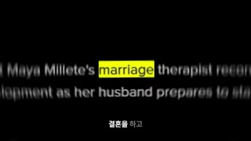
대표 프레임
키워드 marriage
자막 박스
샷ECU(기사 텍스트 초접사)앵글정면(약간 기울어진 더치 5~10°)카메라빠른 휩팬/슬라이드(가로 모션블러) + 1.1~1.3배 줌 — 0.12~0.5초 플래시구도'marriage' 단어가 화면 중앙 가로선(y≈45~50%)에 오도록 배치, 나머지 줄은 위아래로 잘려 나감, 여백 없음(화면 꽉 채움)동작인물 없음. 영어 뉴스/책 텍스트가 빠르게 미끄러지며 'marriage'만 반복 노출 — 검정 바탕 흰 글자, 'marriage'에 노랑 형광(#F4E21C) — "Maya Millete's marriage therapist"대사진행자(V.O.): "결혼을 하고 결혼을 하지 않는 진짜 이유는 사실…" (0.16초부터 시작)화면 자막결혼을 하고 (말한 부분 흰색 #FFFFFF, 아직 안 말한 부분 회색 #8C8C8C 카라오케)들어오는 전환하드컷(스매시컷) — 단어 박자마다 색 틴트가 바뀌는 플래시 몽타주, 0.125~0.25초 간격효과음/음악휘시(whoosh)/종이 스와이프 + 틱 효과음(추정), BGM 저음 드론 시작역할콜드오픈 패턴 인터럽트 — 0.1~0.5초 컷 13개로 '결혼'이 전 세계 뉴스 주제임을 과부하로 각인
1순위
(AI 불필요) FFmpeg/HyperFrames 그래픽
텍스트·스톡 캡처 모션은 코드로 만드는 게 가장 정확하고 무료
2순위
wan-v3-0
배경 질감(종이 흔들림·블러)만 AI로 필요할 때 저렴한 환경 모션
3순위
veo-3-1
카메라 휩팬 같은 물리적 무브가 필요할 때
① 이미지 프롬프트 (원본 클론)Extreme close-up of a printed English newspaper column, the word "marriage" centered in the frame, black background white type with neon-yellow (#F4E21C) highlight on marriage, tilted 7 degrees, horizontal motion blur streaks, halftone print texture, 16:9, 1920x1080
② 영상 프롬프트 (원본 클론)Fast horizontal whip-slide across the newspaper text for 0.3 seconds, strong motion blur, slight zoom-in 1.0 to 1.2, the word marriage stays readable in the center, no people, 16:9
③ 동물 버전 이미지 프롬프트Extreme close-up of a printed newspaper column about hamsters, the word "marriage" centered, black background white type with neon-yellow (#F4E21C) highlight on marriage, tiny hamster paw-print doodles in the margin, horizontal motion blur, 16:9
④ 동물 버전 영상 프롬프트Same 0.3s whip-slide over the hamster-themed newspaper, motion blur, zoom 1.0 to 1.2, 16:9
네거티브readable gibberish headlines, logos of real newspapers, faces, watermark, 9:16 crop
컷 4 · 콜드오픈 패턴 인터럽트 — 0.1~0.5초 컷 13개로 '결혼'이 전 세계 뉴스 주제임을
0.625s → 0.75s (0.125s)
대표 프레임
키워드 marriage
자막 박스
샷ECU(기사 텍스트 초접사)앵글정면(약간 기울어진 더치 5~10°)카메라빠른 휩팬/슬라이드(가로 모션블러) + 1.1~1.3배 줌 — 0.12~0.5초 플래시구도'marriage' 단어가 화면 중앙 가로선(y≈45~50%)에 오도록 배치, 나머지 줄은 위아래로 잘려 나감, 여백 없음(화면 꽉 채움)동작인물 없음. 영어 뉴스/책 텍스트가 빠르게 미끄러지며 'marriage'만 반복 노출 — 초록(#2E7D32) 틴트 기사 — "Larry Millete's marriage trial"대사진행자(V.O.): "결혼을 하고 결혼을 하지 않는 진짜 이유는 사실…" (0.16초부터 시작)화면 자막결혼을 하고 (말한 부분 흰색 #FFFFFF, 아직 안 말한 부분 회색 #8C8C8C 카라오케)들어오는 전환하드컷(스매시컷) — 단어 박자마다 색 틴트가 바뀌는 플래시 몽타주, 0.125~0.25초 간격효과음/음악휘시(whoosh)/종이 스와이프 + 틱 효과음(추정), BGM 저음 드론 시작역할콜드오픈 패턴 인터럽트 — 0.1~0.5초 컷 13개로 '결혼'이 전 세계 뉴스 주제임을 과부하로 각인
1순위
(AI 불필요) FFmpeg/HyperFrames 그래픽
텍스트·스톡 캡처 모션은 코드로 만드는 게 가장 정확하고 무료
2순위
wan-v3-0
배경 질감(종이 흔들림·블러)만 AI로 필요할 때 저렴한 환경 모션
3순위
veo-3-1
카메라 휩팬 같은 물리적 무브가 필요할 때
① 이미지 프롬프트 (원본 클론)Extreme close-up of a printed English newspaper column, the word "marriage" centered in the frame, green (#2E7D32) duotone tint, tilted 7 degrees, horizontal motion blur streaks, halftone print texture, 16:9, 1920x1080
② 영상 프롬프트 (원본 클론)Fast horizontal whip-slide across the newspaper text for 0.3 seconds, strong motion blur, slight zoom-in 1.0 to 1.2, the word marriage stays readable in the center, no people, 16:9
③ 동물 버전 이미지 프롬프트Extreme close-up of a printed newspaper column about hamsters, the word "marriage" centered, green (#2E7D32) duotone tint, tiny hamster paw-print doodles in the margin, horizontal motion blur, 16:9
④ 동물 버전 영상 프롬프트Same 0.3s whip-slide over the hamster-themed newspaper, motion blur, zoom 1.0 to 1.2, 16:9
네거티브readable gibberish headlines, logos of real newspapers, faces, watermark, 9:16 crop
컷 5 · 콜드오픈 패턴 인터럽트 — 0.1~0.5초 컷 13개로 '결혼'이 전 세계 뉴스 주제임을
0.75s → 1.0s (0.25s)
대표 프레임
키워드 marriage
자막 박스
샷ECU(기사 텍스트 초접사)앵글정면(약간 기울어진 더치 5~10°)카메라빠른 휩팬/슬라이드(가로 모션블러) + 1.1~1.3배 줌 — 0.12~0.5초 플래시구도'marriage' 단어가 화면 중앙 가로선(y≈45~50%)에 오도록 배치, 나머지 줄은 위아래로 잘려 나감, 여백 없음(화면 꽉 채움)동작인물 없음. 영어 뉴스/책 텍스트가 빠르게 미끄러지며 'marriage'만 반복 노출 — 흰 신문지 주황 하이라이트 — "Records from a marriage and family therapist"대사진행자(V.O.): "결혼을 하고 결혼을 하지 않는 진짜 이유는 사실…" (0.16초부터 시작)화면 자막결혼을 하고 (말한 부분 흰색 #FFFFFF, 아직 안 말한 부분 회색 #8C8C8C 카라오케)들어오는 전환하드컷(스매시컷) — 단어 박자마다 색 틴트가 바뀌는 플래시 몽타주, 0.125~0.25초 간격효과음/음악휘시(whoosh)/종이 스와이프 + 틱 효과음(추정), BGM 저음 드론 시작역할콜드오픈 패턴 인터럽트 — 0.1~0.5초 컷 13개로 '결혼'이 전 세계 뉴스 주제임을 과부하로 각인
1순위
(AI 불필요) FFmpeg/HyperFrames 그래픽
텍스트·스톡 캡처 모션은 코드로 만드는 게 가장 정확하고 무료
2순위
wan-v3-0
배경 질감(종이 흔들림·블러)만 AI로 필요할 때 저렴한 환경 모션
3순위
veo-3-1
카메라 휩팬 같은 물리적 무브가 필요할 때
① 이미지 프롬프트 (원본 클론)Extreme close-up of a printed English newspaper column, the word "marriage" centered in the frame, white newsprint with orange marker highlight, tilted 7 degrees, horizontal motion blur streaks, halftone print texture, 16:9, 1920x1080
② 영상 프롬프트 (원본 클론)Fast horizontal whip-slide across the newspaper text for 0.3 seconds, strong motion blur, slight zoom-in 1.0 to 1.2, the word marriage stays readable in the center, no people, 16:9
③ 동물 버전 이미지 프롬프트Extreme close-up of a printed newspaper column about hamsters, the word "marriage" centered, white newsprint with orange marker highlight, tiny hamster paw-print doodles in the margin, horizontal motion blur, 16:9
④ 동물 버전 영상 프롬프트Same 0.3s whip-slide over the hamster-themed newspaper, motion blur, zoom 1.0 to 1.2, 16:9
네거티브readable gibberish headlines, logos of real newspapers, faces, watermark, 9:16 crop
컷 6 · 콜드오픈 패턴 인터럽트 — 0.1~0.5초 컷 13개로 '결혼'이 전 세계 뉴스 주제임을
1.0s → 1.25s (0.25s)
대표 프레임
키워드 marriage
자막 박스
샷ECU(기사 텍스트 초접사)앵글정면(약간 기울어진 더치 5~10°)카메라빠른 휩팬/슬라이드(가로 모션블러) + 1.1~1.3배 줌 — 0.12~0.5초 플래시구도'marriage' 단어가 화면 중앙 가로선(y≈45~50%)에 오도록 배치, 나머지 줄은 위아래로 잘려 나감, 여백 없음(화면 꽉 채움)동작인물 없음. 영어 뉴스/책 텍스트가 빠르게 미끄러지며 'marriage'만 반복 노출 — 흰 종이 — "date in the marriage deed is important ... Dutch law"대사진행자(V.O.): "결혼을 하고 결혼을 하지 않는 진짜 이유는 사실…" (0.16초부터 시작)화면 자막결혼을 하고 (말한 부분 흰색 #FFFFFF, 아직 안 말한 부분 회색 #8C8C8C 카라오케)들어오는 전환하드컷(스매시컷) — 단어 박자마다 색 틴트가 바뀌는 플래시 몽타주, 0.125~0.25초 간격효과음/음악휘시(whoosh)/종이 스와이프 + 틱 효과음(추정), BGM 저음 드론 시작역할콜드오픈 패턴 인터럽트 — 0.1~0.5초 컷 13개로 '결혼'이 전 세계 뉴스 주제임을 과부하로 각인
1순위
(AI 불필요) FFmpeg/HyperFrames 그래픽
텍스트·스톡 캡처 모션은 코드로 만드는 게 가장 정확하고 무료
2순위
wan-v3-0
배경 질감(종이 흔들림·블러)만 AI로 필요할 때 저렴한 환경 모션
3순위
veo-3-1
카메라 휩팬 같은 물리적 무브가 필요할 때
① 이미지 프롬프트 (원본 클론)Extreme close-up of a printed English newspaper column, the word "marriage" centered in the frame, white paper, grey serif newsprint, tilted 7 degrees, horizontal motion blur streaks, halftone print texture, 16:9, 1920x1080
② 영상 프롬프트 (원본 클론)Fast horizontal whip-slide across the newspaper text for 0.3 seconds, strong motion blur, slight zoom-in 1.0 to 1.2, the word marriage stays readable in the center, no people, 16:9
③ 동물 버전 이미지 프롬프트Extreme close-up of a printed newspaper column about hamsters, the word "marriage" centered, white paper, grey serif newsprint, tiny hamster paw-print doodles in the margin, horizontal motion blur, 16:9
④ 동물 버전 영상 프롬프트Same 0.3s whip-slide over the hamster-themed newspaper, motion blur, zoom 1.0 to 1.2, 16:9
네거티브readable gibberish headlines, logos of real newspapers, faces, watermark, 9:16 crop
컷 7 · 콜드오픈 패턴 인터럽트 — 0.1~0.5초 컷 13개로 '결혼'이 전 세계 뉴스 주제임을
1.25s → 1.375s (0.125s)
대표 프레임
키워드 marriage
자막 박스
샷ECU(기사 텍스트 초접사)앵글정면(약간 기울어진 더치 5~10°)카메라빠른 휩팬/슬라이드(가로 모션블러) + 1.1~1.3배 줌 — 0.12~0.5초 플래시구도'marriage' 단어가 화면 중앙 가로선(y≈45~50%)에 오도록 배치, 나머지 줄은 위아래로 잘려 나감, 여백 없음(화면 꽉 채움)동작인물 없음. 영어 뉴스/책 텍스트가 빠르게 미끄러지며 'marriage'만 반복 노출 — 파랑(#3A3FD1) 틴트 — "attorneys have argued the media coverage ... marriage"대사진행자(V.O.): "결혼을 하고 결혼을 하지 않는 진짜 이유는 사실…" (0.16초부터 시작)화면 자막결혼을 하지 않는 (말한 부분 흰색 #FFFFFF, 아직 안 말한 부분 회색 #8C8C8C 카라오케)들어오는 전환하드컷(스매시컷) — 단어 박자마다 색 틴트가 바뀌는 플래시 몽타주, 0.125~0.25초 간격효과음/음악휘시(whoosh)/종이 스와이프 + 틱 효과음(추정), BGM 저음 드론 시작역할콜드오픈 패턴 인터럽트 — 0.1~0.5초 컷 13개로 '결혼'이 전 세계 뉴스 주제임을 과부하로 각인
1순위
(AI 불필요) FFmpeg/HyperFrames 그래픽
텍스트·스톡 캡처 모션은 코드로 만드는 게 가장 정확하고 무료
2순위
wan-v3-0
배경 질감(종이 흔들림·블러)만 AI로 필요할 때 저렴한 환경 모션
3순위
veo-3-1
카메라 휩팬 같은 물리적 무브가 필요할 때
① 이미지 프롬프트 (원본 클론)Extreme close-up of a printed English newspaper column, the word "marriage" centered in the frame, blue (#3A3FD1) duotone tint, tilted 7 degrees, horizontal motion blur streaks, halftone print texture, 16:9, 1920x1080
② 영상 프롬프트 (원본 클론)Fast horizontal whip-slide across the newspaper text for 0.3 seconds, strong motion blur, slight zoom-in 1.0 to 1.2, the word marriage stays readable in the center, no people, 16:9
③ 동물 버전 이미지 프롬프트Extreme close-up of a printed newspaper column about hamsters, the word "marriage" centered, blue (#3A3FD1) duotone tint, tiny hamster paw-print doodles in the margin, horizontal motion blur, 16:9
④ 동물 버전 영상 프롬프트Same 0.3s whip-slide over the hamster-themed newspaper, motion blur, zoom 1.0 to 1.2, 16:9
네거티브readable gibberish headlines, logos of real newspapers, faces, watermark, 9:16 crop
컷 8 · 콜드오픈 패턴 인터럽트 — 0.1~0.5초 컷 13개로 '결혼'이 전 세계 뉴스 주제임을
1.375s → 1.875s (0.5s)
대표 프레임
키워드 marriage
자막 박스
샷ECU(기사 텍스트 초접사)앵글정면(약간 기울어진 더치 5~10°)카메라빠른 휩팬/슬라이드(가로 모션블러) + 1.1~1.3배 줌 — 0.12~0.5초 플래시구도'marriage' 단어가 화면 중앙 가로선(y≈45~50%)에 오도록 배치, 나머지 줄은 위아래로 잘려 나감, 여백 없음(화면 꽉 채움)동작인물 없음. 영어 뉴스/책 텍스트가 빠르게 미끄러지며 'marriage'만 반복 노출 — 짙은 회색(#3A3A3A) — "completed the marriage registration."대사진행자(V.O.): "결혼을 하고 결혼을 하지 않는 진짜 이유는 사실…" (0.16초부터 시작)화면 자막결혼을 하지 않는 (말한 부분 흰색 #FFFFFF, 아직 안 말한 부분 회색 #8C8C8C 카라오케)들어오는 전환하드컷(스매시컷) — 단어 박자마다 색 틴트가 바뀌는 플래시 몽타주, 0.125~0.25초 간격효과음/음악휘시(whoosh)/종이 스와이프 + 틱 효과음(추정), BGM 저음 드론 시작역할콜드오픈 패턴 인터럽트 — 0.1~0.5초 컷 13개로 '결혼'이 전 세계 뉴스 주제임을 과부하로 각인
1순위
(AI 불필요) FFmpeg/HyperFrames 그래픽
텍스트·스톡 캡처 모션은 코드로 만드는 게 가장 정확하고 무료
2순위
wan-v3-0
배경 질감(종이 흔들림·블러)만 AI로 필요할 때 저렴한 환경 모션
3순위
veo-3-1
카메라 휩팬 같은 물리적 무브가 필요할 때
① 이미지 프롬프트 (원본 클론)Extreme close-up of a printed English newspaper column, the word "marriage" centered in the frame, dark charcoal (#3A3A3A) paper, white type, tilted 7 degrees, horizontal motion blur streaks, halftone print texture, 16:9, 1920x1080
② 영상 프롬프트 (원본 클론)Fast horizontal whip-slide across the newspaper text for 0.3 seconds, strong motion blur, slight zoom-in 1.0 to 1.2, the word marriage stays readable in the center, no people, 16:9
③ 동물 버전 이미지 프롬프트Extreme close-up of a printed newspaper column about hamsters, the word "marriage" centered, dark charcoal (#3A3A3A) paper, white type, tiny hamster paw-print doodles in the margin, horizontal motion blur, 16:9
④ 동물 버전 영상 프롬프트Same 0.3s whip-slide over the hamster-themed newspaper, motion blur, zoom 1.0 to 1.2, 16:9
네거티브readable gibberish headlines, logos of real newspapers, faces, watermark, 9:16 crop
컷 9 · 콜드오픈 패턴 인터럽트 — 0.1~0.5초 컷 13개로 '결혼'이 전 세계 뉴스 주제임을
1.875s → 2.125s (0.25s)
대표 프레임
키워드 marriage
자막 박스
샷ECU(기사 텍스트 초접사)앵글정면(약간 기울어진 더치 5~10°)카메라빠른 휩팬/슬라이드(가로 모션블러) + 1.1~1.3배 줌 — 0.12~0.5초 플래시구도'marriage' 단어가 화면 중앙 가로선(y≈45~50%)에 오도록 배치, 나머지 줄은 위아래로 잘려 나감, 여백 없음(화면 꽉 채움)동작인물 없음. 영어 뉴스/책 텍스트가 빠르게 미끄러지며 'marriage'만 반복 노출 — 흰 종이 세리프 — "marriage certificate through Stringer's uncle in Steubenville"대사진행자(V.O.): "결혼을 하고 결혼을 하지 않는 진짜 이유는 사실…" (0.16초부터 시작)화면 자막결혼을 하지 않는 (말한 부분 흰색 #FFFFFF, 아직 안 말한 부분 회색 #8C8C8C 카라오케)들어오는 전환하드컷(스매시컷) — 단어 박자마다 색 틴트가 바뀌는 플래시 몽타주, 0.125~0.25초 간격효과음/음악휘시(whoosh)/종이 스와이프 + 틱 효과음(추정), BGM 저음 드론 시작역할콜드오픈 패턴 인터럽트 — 0.1~0.5초 컷 13개로 '결혼'이 전 세계 뉴스 주제임을 과부하로 각인
1순위
(AI 불필요) FFmpeg/HyperFrames 그래픽
텍스트·스톡 캡처 모션은 코드로 만드는 게 가장 정확하고 무료
2순위
wan-v3-0
배경 질감(종이 흔들림·블러)만 AI로 필요할 때 저렴한 환경 모션
3순위
veo-3-1
카메라 휩팬 같은 물리적 무브가 필요할 때
① 이미지 프롬프트 (원본 클론)Extreme close-up of a printed English newspaper column, the word "marriage" centered in the frame, white paper, black serif book type, tilted 7 degrees, horizontal motion blur streaks, halftone print texture, 16:9, 1920x1080
② 영상 프롬프트 (원본 클론)Fast horizontal whip-slide across the newspaper text for 0.3 seconds, strong motion blur, slight zoom-in 1.0 to 1.2, the word marriage stays readable in the center, no people, 16:9
③ 동물 버전 이미지 프롬프트Extreme close-up of a printed newspaper column about hamsters, the word "marriage" centered, white paper, black serif book type, tiny hamster paw-print doodles in the margin, horizontal motion blur, 16:9
④ 동물 버전 영상 프롬프트Same 0.3s whip-slide over the hamster-themed newspaper, motion blur, zoom 1.0 to 1.2, 16:9
네거티브readable gibberish headlines, logos of real newspapers, faces, watermark, 9:16 crop
컷 10 · 콜드오픈 패턴 인터럽트 — 0.1~0.5초 컷 13개로 '결혼'이 전 세계 뉴스 주제임을
2.125s → 2.375s (0.25s)
대표 프레임
키워드 marriage
자막 박스
샷ECU(기사 텍스트 초접사)앵글정면(약간 기울어진 더치 5~10°)카메라빠른 휩팬/슬라이드(가로 모션블러) + 1.1~1.3배 줌 — 0.12~0.5초 플래시구도'marriage' 단어가 화면 중앙 가로선(y≈45~50%)에 오도록 배치, 나머지 줄은 위아래로 잘려 나감, 여백 없음(화면 꽉 채움)동작인물 없음. 영어 뉴스/책 텍스트가 빠르게 미끄러지며 'marriage'만 반복 노출 — 보라 틴트 반복 — "explored marriage enough"대사진행자(V.O.): "결혼을 하고 결혼을 하지 않는 진짜 이유는 사실…" (0.16초부터 시작)화면 자막결혼을 하지 않는 (말한 부분 흰색 #FFFFFF, 아직 안 말한 부분 회색 #8C8C8C 카라오케)들어오는 전환하드컷(스매시컷) — 단어 박자마다 색 틴트가 바뀌는 플래시 몽타주, 0.125~0.25초 간격효과음/음악휘시(whoosh)/종이 스와이프 + 틱 효과음(추정), BGM 저음 드론 시작역할콜드오픈 패턴 인터럽트 — 0.1~0.5초 컷 13개로 '결혼'이 전 세계 뉴스 주제임을 과부하로 각인
1순위
(AI 불필요) FFmpeg/HyperFrames 그래픽
텍스트·스톡 캡처 모션은 코드로 만드는 게 가장 정확하고 무료
2순위
wan-v3-0
배경 질감(종이 흔들림·블러)만 AI로 필요할 때 저렴한 환경 모션
3순위
veo-3-1
카메라 휩팬 같은 물리적 무브가 필요할 때
① 이미지 프롬프트 (원본 클론)Extreme close-up of a printed English newspaper column, the word "marriage" centered in the frame, purple duotone tint again, tilted 7 degrees, horizontal motion blur streaks, halftone print texture, 16:9, 1920x1080
② 영상 프롬프트 (원본 클론)Fast horizontal whip-slide across the newspaper text for 0.3 seconds, strong motion blur, slight zoom-in 1.0 to 1.2, the word marriage stays readable in the center, no people, 16:9
③ 동물 버전 이미지 프롬프트Extreme close-up of a printed newspaper column about hamsters, the word "marriage" centered, purple duotone tint again, tiny hamster paw-print doodles in the margin, horizontal motion blur, 16:9
④ 동물 버전 영상 프롬프트Same 0.3s whip-slide over the hamster-themed newspaper, motion blur, zoom 1.0 to 1.2, 16:9
네거티브readable gibberish headlines, logos of real newspapers, faces, watermark, 9:16 crop
컷 11 · 콜드오픈 패턴 인터럽트 — 0.1~0.5초 컷 13개로 '결혼'이 전 세계 뉴스 주제임을
2.375s → 2.625s (0.25s)
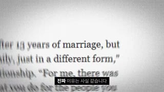
대표 프레임
키워드 marriage
자막 박스
샷ECU(기사 텍스트 초접사)앵글정면(약간 기울어진 더치 5~10°)카메라빠른 휩팬/슬라이드(가로 모션블러) + 1.1~1.3배 줌 — 0.12~0.5초 플래시구도'marriage' 단어가 화면 중앙 가로선(y≈45~50%)에 오도록 배치, 나머지 줄은 위아래로 잘려 나감, 여백 없음(화면 꽉 채움)동작인물 없음. 영어 뉴스/책 텍스트가 빠르게 미끄러지며 'marriage'만 반복 노출 — 흰 종이 — "after 13 years of marriage, but ... in a different form"대사진행자(V.O.): "결혼을 하고 결혼을 하지 않는 진짜 이유는 사실…" (0.16초부터 시작)화면 자막진짜 이유는 사실 (말한 부분 흰색 #FFFFFF, 아직 안 말한 부분 회색 #8C8C8C 카라오케)들어오는 전환하드컷(스매시컷) — 단어 박자마다 색 틴트가 바뀌는 플래시 몽타주, 0.125~0.25초 간격효과음/음악휘시(whoosh)/종이 스와이프 + 틱 효과음(추정), BGM 저음 드론 시작역할콜드오픈 패턴 인터럽트 — 0.1~0.5초 컷 13개로 '결혼'이 전 세계 뉴스 주제임을 과부하로 각인
1순위
(AI 불필요) FFmpeg/HyperFrames 그래픽
텍스트·스톡 캡처 모션은 코드로 만드는 게 가장 정확하고 무료
2순위
wan-v3-0
배경 질감(종이 흔들림·블러)만 AI로 필요할 때 저렴한 환경 모션
3순위
veo-3-1
카메라 휩팬 같은 물리적 무브가 필요할 때
① 이미지 프롬프트 (원본 클론)Extreme close-up of a printed English newspaper column, the word "marriage" centered in the frame, white paper, black serif, tilted 7 degrees, horizontal motion blur streaks, halftone print texture, 16:9, 1920x1080
② 영상 프롬프트 (원본 클론)Fast horizontal whip-slide across the newspaper text for 0.3 seconds, strong motion blur, slight zoom-in 1.0 to 1.2, the word marriage stays readable in the center, no people, 16:9
③ 동물 버전 이미지 프롬프트Extreme close-up of a printed newspaper column about hamsters, the word "marriage" centered, white paper, black serif, tiny hamster paw-print doodles in the margin, horizontal motion blur, 16:9
④ 동물 버전 영상 프롬프트Same 0.3s whip-slide over the hamster-themed newspaper, motion blur, zoom 1.0 to 1.2, 16:9
네거티브readable gibberish headlines, logos of real newspapers, faces, watermark, 9:16 crop
컷 12 · 콜드오픈 패턴 인터럽트 — 0.1~0.5초 컷 13개로 '결혼'이 전 세계 뉴스 주제임을
2.625s → 2.875s (0.25s)
대표 프레임
키워드 marriage
자막 박스
샷ECU(기사 텍스트 초접사)앵글정면(약간 기울어진 더치 5~10°)카메라빠른 휩팬/슬라이드(가로 모션블러) + 1.1~1.3배 줌 — 0.12~0.5초 플래시구도'marriage' 단어가 화면 중앙 가로선(y≈45~50%)에 오도록 배치, 나머지 줄은 위아래로 잘려 나감, 여백 없음(화면 꽉 채움)동작인물 없음. 영어 뉴스/책 텍스트가 빠르게 미끄러지며 'marriage'만 반복 노출 — 흰 신문지 주황 하이라이트 반복대사진행자(V.O.): "결혼을 하고 결혼을 하지 않는 진짜 이유는 사실…" (0.16초부터 시작)화면 자막진짜 이유는 사실 (말한 부분 흰색 #FFFFFF, 아직 안 말한 부분 회색 #8C8C8C 카라오케)들어오는 전환하드컷(스매시컷) — 단어 박자마다 색 틴트가 바뀌는 플래시 몽타주, 0.125~0.25초 간격효과음/음악휘시(whoosh)/종이 스와이프 + 틱 효과음(추정), BGM 저음 드론 시작역할콜드오픈 패턴 인터럽트 — 0.1~0.5초 컷 13개로 '결혼'이 전 세계 뉴스 주제임을 과부하로 각인
1순위
(AI 불필요) FFmpeg/HyperFrames 그래픽
텍스트·스톡 캡처 모션은 코드로 만드는 게 가장 정확하고 무료
2순위
wan-v3-0
배경 질감(종이 흔들림·블러)만 AI로 필요할 때 저렴한 환경 모션
3순위
veo-3-1
카메라 휩팬 같은 물리적 무브가 필요할 때
① 이미지 프롬프트 (원본 클론)Extreme close-up of a printed English newspaper column, the word "marriage" centered in the frame, white newsprint orange highlight (repeat), tilted 7 degrees, horizontal motion blur streaks, halftone print texture, 16:9, 1920x1080
② 영상 프롬프트 (원본 클론)Fast horizontal whip-slide across the newspaper text for 0.3 seconds, strong motion blur, slight zoom-in 1.0 to 1.2, the word marriage stays readable in the center, no people, 16:9
③ 동물 버전 이미지 프롬프트Extreme close-up of a printed newspaper column about hamsters, the word "marriage" centered, white newsprint orange highlight (repeat), tiny hamster paw-print doodles in the margin, horizontal motion blur, 16:9
④ 동물 버전 영상 프롬프트Same 0.3s whip-slide over the hamster-themed newspaper, motion blur, zoom 1.0 to 1.2, 16:9
네거티브readable gibberish headlines, logos of real newspapers, faces, watermark, 9:16 crop
컷 13 · 콜드오픈 패턴 인터럽트 — 0.1~0.5초 컷 13개로 '결혼'이 전 세계 뉴스 주제임을
2.875s → 3.125s (0.25s)
대표 프레임
키워드 marriage
자막 박스
샷ECU(기사 텍스트 초접사)앵글정면(약간 기울어진 더치 5~10°)카메라빠른 휩팬/슬라이드(가로 모션블러) + 1.1~1.3배 줌 — 0.12~0.5초 플래시구도'marriage' 단어가 화면 중앙 가로선(y≈45~50%)에 오도록 배치, 나머지 줄은 위아래로 잘려 나감, 여백 없음(화면 꽉 채움)동작인물 없음. 영어 뉴스/책 텍스트가 빠르게 미끄러지며 'marriage'만 반복 노출 — 흰 종이 — "Dutch law ... marriage deed" 반복대사진행자(V.O.): "결혼을 하고 결혼을 하지 않는 진짜 이유는 사실…" (0.16초부터 시작)화면 자막진짜 이유는 사실 (말한 부분 흰색 #FFFFFF, 아직 안 말한 부분 회색 #8C8C8C 카라오케)들어오는 전환하드컷(스매시컷) — 단어 박자마다 색 틴트가 바뀌는 플래시 몽타주, 0.125~0.25초 간격효과음/음악휘시(whoosh)/종이 스와이프 + 틱 효과음(추정), BGM 저음 드론 시작역할콜드오픈 패턴 인터럽트 — 0.1~0.5초 컷 13개로 '결혼'이 전 세계 뉴스 주제임을 과부하로 각인
1순위
(AI 불필요) FFmpeg/HyperFrames 그래픽
텍스트·스톡 캡처 모션은 코드로 만드는 게 가장 정확하고 무료
2순위
wan-v3-0
배경 질감(종이 흔들림·블러)만 AI로 필요할 때 저렴한 환경 모션
3순위
veo-3-1
카메라 휩팬 같은 물리적 무브가 필요할 때
① 이미지 프롬프트 (원본 클론)Extreme close-up of a printed English newspaper column, the word "marriage" centered in the frame, white paper grey newsprint (repeat), tilted 7 degrees, horizontal motion blur streaks, halftone print texture, 16:9, 1920x1080
② 영상 프롬프트 (원본 클론)Fast horizontal whip-slide across the newspaper text for 0.3 seconds, strong motion blur, slight zoom-in 1.0 to 1.2, the word marriage stays readable in the center, no people, 16:9
③ 동물 버전 이미지 프롬프트Extreme close-up of a printed newspaper column about hamsters, the word "marriage" centered, white paper grey newsprint (repeat), tiny hamster paw-print doodles in the margin, horizontal motion blur, 16:9
④ 동물 버전 영상 프롬프트Same 0.3s whip-slide over the hamster-themed newspaper, motion blur, zoom 1.0 to 1.2, 16:9
네거티브readable gibberish headlines, logos of real newspapers, faces, watermark, 9:16 crop
컷 14 · 반전 선언: '하는 이유 = 안 하는 이유' 역설 제시(오픈 루프 시작)
3.125s → 4.5s (1.375s)
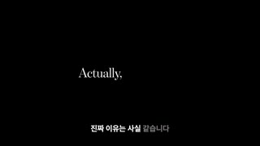
대표 프레임
영문 세리프
자막 박스
샷텍스트 카드(풀스크린)앵글정면카메라고정구도완전 검정(#000000) 위 얇은 세리프 영문이 정중앙(x50%,y48%)에 한 줄, 좌우 여백 넓게동작'Actually,' 가 먼저 뜨고 0.5초 뒤 'same thing'이 회색→흰색으로 페이드인(단어 단위 타이핑)대사진행자: "…사실 같습니다."화면 자막진짜 이유는 사실 같습니다 (카라오케)들어오는 전환하드컷 — 컬러 플래시에서 완전 검정으로 급전환(대비 충격, 소리도 순간 비워짐 추정)효과음/음악BGM 순간 빠짐 → 피아노 단음(추정)역할반전 선언: '하는 이유 = 안 하는 이유' 역설 제시(오픈 루프 시작)
1순위
(AI 불필요) FFmpeg/HyperFrames 그래픽
텍스트·스톡 캡처 모션은 코드로 만드는 게 가장 정확하고 무료
2순위
wan-v3-0
배경 질감(종이 흔들림·블러)만 AI로 필요할 때 저렴한 환경 모션
3순위
veo-3-1
카메라 휩팬 같은 물리적 무브가 필요할 때
① 이미지 프롬프트 (원본 클론)Pure black 16:9 frame, a single line of thin elegant serif text "Actually, same thing" centered, white on black, generous negative space, cinematic minimal title card
② 영상 프롬프트 (원본 클론)Word-by-word fade-in typing: 'Actually,' appears at 0s, 'same thing' fades from 40% grey to white at 0.5s, hold 1.4s, no camera move
③ 동물 버전 이미지 프롬프트Pure black 16:9 frame, thin serif white text "Actually, same thing" centered, a tiny hamster paw print dot after the comma, minimal title card
④ 동물 버전 영상 프롬프트Same word-by-word fade-in, the paw-print dot pops in with a tiny bounce at 1.0s
네거티브text errors, misspelled letters, watermark, logo, extra limbs, deformed face, low resolution, jpeg artifacts, busy background, photorealistic human skin on avatar, 9:16 vertical crop
컷 15 · 오픈 루프: 빈칸 퀴즈(□□ / □□□□) — 정답 '사랑/LOVE'는 39:56에야 공개
4.5s → 17.625s (13.125s)
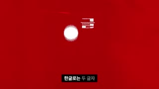
대표 프레임
빈칸 원(글자 수)
핑크 카드 묶음
자막 박스
샷그래픽 시퀀스(내부 미검출 컷 4개 추정)앵글정면카메라고정 + 3D 카드 캐러셀 회전(12~17.6초)구도4.5~7.0초: 새빨간(#C8101E) 풀스크린 중앙에 흰 한글 '한글'→흰 원 2개(두 글자), '영어'→흰 원 4개(네 글자). 7.0~8.0초: 검정 'guess what' 세리프. 8.0~12.0초: 검정 바탕 악마 아바타 중앙. 12.0~17.6초: 검정 위 핫핑크(#FF2D8A) 판화풍 연인 일러스트 카드 5장이 3D로 회전동작퀴즈 제시(빈칸 동그라미) → 'guess what' → 아바타 등장해 '정답 말하기 전에 한 꺼풀 더' → 결혼 상징 일러스트 카드가 빙글 회전대사진행자: "한글로는 두 글자, 영어로는 네 글자. 과연 뭘까요? 정답을 말하기 전에 우선 한 꺼풀 더 깊게 들어가 보죠. 인간사에서 결혼은 많은 것을 상징합니다. 그중 가장 빛나는 특성은 바로 정상성."화면 자막한글로는 두 글자 / 영어로는 네 글자 / 과연 뭘까요? / 정답을 말하기 전에 / 우선 한 꺼풀 / 더 깊게 들어가 보죠 / 인간사에서 결혼은 / 많은 것을 상징합니다 / 그중 가장 빛나는 특성은 / 바로 정상성들어오는 전환하드컷(검정→빨강 풀플래시). 내부는 단어 박자 하드컷 연속(검출기 미검출, 추정 0.5~1.0초 간격)효과음/음악원 생길 때 팝(pop) 2회·4회, 카드 회전 시 스윕(추정)역할오픈 루프: 빈칸 퀴즈(□□ / □□□□) — 정답 '사랑/LOVE'는 39:56에야 공개(약 40분짜리 루프)
1순위
(AI 불필요) FFmpeg/HyperFrames 그래픽
텍스트·스톡 캡처 모션은 코드로 만드는 게 가장 정확하고 무료
2순위
wan-v3-0
배경 질감(종이 흔들림·블러)만 AI로 필요할 때 저렴한 환경 모션
3순위
veo-3-1
카메라 휩팬 같은 물리적 무브가 필요할 때
① 이미지 프롬프트 (원본 클론)Flat saturated red (#C8101E) 16:9 background with subtle film grain, centered two solid white circles like blank quiz slots, minimal graphic design, no text
② 영상 프롬프트 (원본 클론)White circles pop in one by one with elastic scale 0 to 1 in 120ms each, then cut; later four circles pop in; 2.5 seconds, static camera
③ 동물 버전 이미지 프롬프트Flat saturated red 16:9 background, centered two white circles shaped like hamster seeds (sunflower seeds) as blank quiz slots, minimal graphic
④ 동물 버전 영상 프롬프트Seed-shaped slots pop in one by one with elastic bounce, 2.5 seconds, static
네거티브text errors, misspelled letters, watermark, logo, extra limbs, deformed face, low resolution, jpeg artifacts, busy background, photorealistic human skin on avatar, 9:16 vertical crop
컷 16 · 추상 개념(정상성·다수)을 사람 수로 시각화 — 다수/소수 대비 준비
17.625s → 29.75s (12.125s)
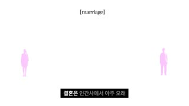
대표 프레임
[marriage] 라벨
실루엣 군중
자막 박스
샷인포그래픽 WS앵글정면(플랫)카메라고정, 요소만 애니메이션구도흰 배경(#FFFFFF), 상단 중앙 y≈11%에 작은 세리프 라벨 '[marriage]', 핫마젠타(#E83BE8) 실루엣 사람 9~10명이 y25~75% 가로 띠에 불규칙 분산동작투명한 실루엣이 하나씩 페이드인해 군중이 됨 → 26.5초부터 몇 명 발밑에 검은 구멍(타원 그림자)이 생기고 그 사람들이 구멍으로 쏙 빠져 사라짐대사진행자: "결혼은 인간사에서 아주 오래 그 역사를 자랑하며 절대 다수가 선택해 온 아주 성공적인 제도입니다. 그리고 결혼을 선택한 이들은 가장 높은 정상성의 자리를 획득해 왔죠."화면 자막결혼은 인간사에서 아주 오래 / 그 역사를 자랑하며 / 절대 다수가 선택해 온 / 아주 성공적인 제도입니다 / 그리고 결혼을 선택한 이들은 / 가장 높은 정상성의 자리를 / 획득해 왔죠들어오는 전환하드컷(검정→흰색 반전으로 밝기 충격)효과음/음악실루엣 등장 소프트 팝, 구멍 빠질 때 '뿅' 드롭(추정)역할추상 개념(정상성·다수)을 사람 수로 시각화 — 다수/소수 대비 준비
1순위
(AI 불필요) FFmpeg/HyperFrames 그래픽
텍스트·스톡 캡처 모션은 코드로 만드는 게 가장 정확하고 무료
2순위
wan-v3-0
배경 질감(종이 흔들림·블러)만 AI로 필요할 때 저렴한 환경 모션
3순위
veo-3-1
카메라 휩팬 같은 물리적 무브가 필요할 때
① 이미지 프롬프트 (원본 클론)Minimal infographic on pure white 16:9 background, ten flat magenta (#E83BE8) human silhouettes (men and women, walking poses) scattered in a loose horizontal band, small serif label "[marriage]" top center, lots of white space
② 영상 프롬프트 (원본 클론)Silhouettes fade in one by one over 8 seconds with 30% to 100% opacity, then black oval holes appear under four of them and they drop into the holes, 12 seconds, locked camera
③ 동물 버전 이미지 프롬프트Minimal infographic on white, ten flat magenta hamster silhouettes standing on hind legs scattered in a loose band, small serif label "[marriage]" top center
④ 동물 버전 영상 프롬프트Hamster silhouettes fade in one by one, then black burrow holes open under four of them and they drop in, 12 seconds, locked camera
네거티브text errors, misspelled letters, watermark, logo, extra limbs, deformed face, low resolution, jpeg artifacts, busy background, photorealistic human skin on avatar, 9:16 vertical crop
컷 17 · 부족 라벨링(A구역/C구역) — 시청자가 스스로 어느 구역인지 대입하게 만드는 자기관련성 장치
29.75s → 36.125s (6.375s)
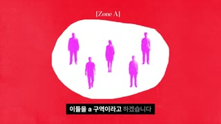
대표 프레임
Zone A 블롭
[Zone A] 라벨
자막 박스
샷인포그래픽 MS앵글정면카메라고정(미세 1.02 스케일 호흡 추정)구도빨강 종이질감(#E8152E) 배경, 중앙에 흰 유기적 블롭(x20~80%, y18~82%) 안에 마젠타 실루엣 6명, 상단 y≈3% 작은 세리프 '[Zone A]'동작살아남은 결혼 선택자들을 흰 섬(구역)에 가둬 '그룹 네이밍'대사진행자: "이들을 A 구역이라고 하겠습니다. A 구역 사람들은 그 누구보다 다음의 명제를 제대로 이해하고 있을지도 모릅니다."화면 자막이들을 a 구역이라고 하겠습니다 / a 구역 사람들은 / 그 누구보다 다음의 명제를 / 제대로 이해하고 있을지도 모릅니다들어오는 전환하드컷(흰→빨강)효과음/음악BGM 유지, 라벨 등장 틱(추정)역할부족 라벨링(A구역/C구역) — 시청자가 스스로 어느 구역인지 대입하게 만드는 자기관련성 장치
1순위
(AI 불필요) FFmpeg/HyperFrames 그래픽
텍스트·스톡 캡처 모션은 코드로 만드는 게 가장 정확하고 무료
2순위
wan-v3-0
배경 질감(종이 흔들림·블러)만 AI로 필요할 때 저렴한 환경 모션
3순위
veo-3-1
카메라 휩팬 같은 물리적 무브가 필요할 때
① 이미지 프롬프트 (원본 클론)Red paper-textured background (#E8152E) 16:9, a large white organic blob shape in the center containing six flat magenta human silhouettes, small serif label "[Zone A]" at top center, editorial collage style
② 영상 프롬프트 (원본 클론)Blob gently breathes (scale 1.00 to 1.02) while silhouettes stay still, 6 seconds, static camera
③ 동물 버전 이미지 프롬프트Red paper-textured background, a large white organic blob like a hamster cage floor with six magenta hamster silhouettes inside, serif label "[Zone A]" top center
④ 동물 버전 영상 프롬프트Blob breathes slightly, one hamster silhouette twitches its ears, 6 seconds, static
네거티브text errors, misspelled letters, watermark, logo, extra limbs, deformed face, low resolution, jpeg artifacts, busy background, photorealistic human skin on avatar, 9:16 vertical crop
컷 18 · 명제 카드 — 영어 인용으로 권위·무게감 부여
36.125s → 38.0s (1.875s)
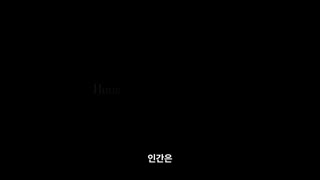
대표 프레임
세리프 명제
자막 박스
샷텍스트 카드앵글정면카메라고정구도검정 바탕 중앙 한 줄 세리프 'Humans can not live alone.'동작문장이 왼쪽부터 회색→흰색으로 타이핑 페이드대사진행자: "인간은 혼자 살아갈 수 없다."화면 자막인간은 / 혼자 살아갈 수 없다들어오는 전환하드컷(빨강→검정)효과음/음악BGM 살짝 다운(추정)역할명제 카드 — 영어 인용으로 권위·무게감 부여
1순위
(AI 불필요) FFmpeg/HyperFrames 그래픽
텍스트·스톡 캡처 모션은 코드로 만드는 게 가장 정확하고 무료
2순위
wan-v3-0
배경 질감(종이 흔들림·블러)만 AI로 필요할 때 저렴한 환경 모션
3순위
veo-3-1
카메라 휩팬 같은 물리적 무브가 필요할 때
① 이미지 프롬프트 (원본 클론)Pure black 16:9, thin white serif sentence "Humans can not live alone." centered, cinematic title card
② 영상 프롬프트 (원본 클론)Letters fade in left to right from grey to white over 1 second, hold, 1.9 seconds total
③ 동물 버전 이미지 프롬프트Pure black 16:9, thin white serif sentence "Hamsters can not live alone." centered
④ 동물 버전 영상 프롬프트Letters fade in left to right over 1 second, hold
네거티브text errors, misspelled letters, watermark, logo, extra limbs, deformed face, low resolution, jpeg artifacts, busy background, photorealistic human skin on avatar, 9:16 vertical crop
컷 19 · 핵심 개념어 'The Norm'을 물리적 오브젝트로 만들어 기억 고정
38.0s → 43.75s (5.75s)
대표 프레임
The Norm 카드
자막 박스
샷인포그래픽 + 카드 인서트앵글정면카메라고정, 41.5초에 3D 카드 플립 인구도Zone A 블롭 재사용, 41.5초부터 검정 반투명 명함형 카드(x2~70%, y40~75%)가 회전하며 들어와 'The Norm / 정상성' 표기동작블롭 위로 검정 카드가 3D로 뒤집히며 착지 — 흰 산세리프 'The Norm', 아래 작은 한글 '정상성'대사진행자: "그래서 A 구역 사람들은 결혼이라는 선택지를 택하고 정상성 우위를 획득해 왔죠."화면 자막그래서 a구역 사람들은 / 결혼이라는 선택지를 택하고 / 정상성 우위를 획득해 왔죠들어오는 전환하드컷(검정→빨강), 카드는 Y축 180° 플립 400ms(추정)효과음/음악카드 착지 '탁' 효과음(추정)역할핵심 개념어 'The Norm'을 물리적 오브젝트로 만들어 기억 고정
1순위
(AI 불필요) FFmpeg/HyperFrames 그래픽
텍스트·스톡 캡처 모션은 코드로 만드는 게 가장 정확하고 무료
2순위
wan-v3-0
배경 질감(종이 흔들림·블러)만 AI로 필요할 때 저렴한 환경 모션
3순위
veo-3-1
카메라 휩팬 같은 물리적 무브가 필요할 때
① 이미지 프롬프트 (원본 클론)Red textured background with white blob of magenta silhouettes, a dark translucent business-card shaped panel tilted 8 degrees overlaying the left side, white sans-serif text "The Norm" and small Korean subtitle, editorial collage, 16:9
② 영상 프롬프트 (원본 클론)The card flips in on the Y axis from off-screen left over 0.4s and lands with slight overshoot, then holds 2 seconds
③ 동물 버전 이미지 프롬프트Same composition with hamster silhouettes, the dark card reads "The Norm" with a tiny sunflower seed icon
④ 동물 버전 영상 프롬프트Card flips in over 0.4s with overshoot, one hamster silhouette looks up
네거티브text errors, misspelled letters, watermark, logo, extra limbs, deformed face, low resolution, jpeg artifacts, busy background, photorealistic human skin on avatar, 9:16 vertical crop
컷 20 · '결혼 적령기' 압박을 숫자 카운트로 체감시킴
43.75s → 51.125s (7.375s)
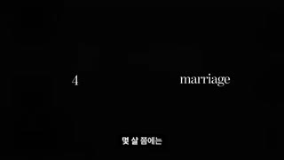
대표 프레임
나이 숫자
marriage
자막 박스
샷타이포 모션앵글정면카메라고정구도검정 바탕, 왼쪽 x≈35%에 숫자(5→70, 5단위 카운트), 오른쪽 x≈62%에 세리프 'marriage' 고정, y≈48% 한 줄동작숫자가 0.5초마다 5씩 증가하고 20·25·35·40·50에 빨간 손글씨 동그라미/체크(#D0021B)가 쓱 그려짐대사진행자: "몇 살쯤에는 결혼하는 게 좋아라는 기준, 즉 결혼 적령기라는 말이 존재하는 이유도 이 정상성 때문입니다."화면 자막몇 살쯤에는 / 결혼하는 게 좋아라는 기준 / 즉 결혼 적령기라는 말 / 존재하는 이유도 / 이 정상성 때문입니다들어오는 전환하드컷효과음/음악숫자 넘어갈 때 틱-틱 시계 소리(추정)역할'결혼 적령기' 압박을 숫자 카운트로 체감시킴
1순위
(AI 불필요) FFmpeg/HyperFrames 그래픽
텍스트·스톡 캡처 모션은 코드로 만드는 게 가장 정확하고 무료
2순위
wan-v3-0
배경 질감(종이 흔들림·블러)만 AI로 필요할 때 저렴한 환경 모션
3순위
veo-3-1
카메라 휩팬 같은 물리적 무브가 필요할 때
① 이미지 프롬프트 (원본 클론)Pure black 16:9, white serif numeral "25" at left third and white serif word "marriage" at right, a red hand-drawn circle scribble around the numeral, minimal editorial
② 영상 프롬프트 (원본 클론)Numeral counts up 5,10,15...70 every 0.5s, red handwritten circles and check marks animate on 20,25,35,40,50 with stroke draw-on 200ms, 7.4 seconds
③ 동물 버전 이미지 프롬프트Same black frame, numeral counting hamster ages in months "1,2,3..." next to serif "marriage", red scribble circles
④ 동물 버전 영상 프롬프트Numerals count up every 0.5s with red scribble draw-on
네거티브text errors, misspelled letters, watermark, logo, extra limbs, deformed face, low resolution, jpeg artifacts, busy background, photorealistic human skin on avatar, 9:16 vertical crop
컷 21 · 화자 복귀 앵커 — 다음 밈 인서트 예고
51.125s → 52.875s (1.75s)
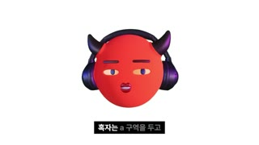
대표 프레임
악마 아바타(진행자)
자막 박스
샷MCU(아바타 A롤)앵글아이레벨 정면카메라고정구도흰 배경 정중앙 악마 아바타, 머리가 화면 높이 약 59%, 자막 박스 하단 84~92%동작아바타가 입술 립싱크, 눈을 옆으로 흘기며 '혹자는'대사진행자: "혹자는 A 구역을 두고"화면 자막혹자는 a 구역을 두고들어오는 전환하드컷(검정→흰)효과음/음악BGM 유지역할화자 복귀 앵커 — 다음 밈 인서트 예고
1순위
minimax-h3
립싱크+오디오 동시 생성, 무료 — 아바타 내레이션 A롤 기본
2순위
kling-v3-omni
레퍼런스 이미지 고정 + 립싱크 안정성, 긴 A롤 분할 생성에 유리
3순위
gemini-omni-1-1-flash
빠른 대량 생성(48분 영상 A롤 수십 개)용 저비용 대안
① 이미지 프롬프트 (원본 클론)A a glossy 3D-rendered round red head avatar (#E4322B), perfectly spherical, no body, two short curved dark-purple devil horns on top, large over-ear headphones in deep navy-violet with glossy violet rim highlights, flat 2D cartoon facial features painted on the sphere: cream almond eyes with small purple irises, thick purple eyebrows, small puckered dark-crimson lips, soft studio key light from front-left, subtle contact-free soft shadow, centered on a pure white seamless background, head fills 60% of frame height, 16:9 1920x1080, clean product-render look
② 영상 프롬프트 (원본 클론)The avatar lip-syncs Korean narration, eyes glance sideways, subtle head bob, 1.8 seconds, locked camera, lip sync dialogue: '혹자는 A 구역을 두고'
③ 동물 버전 이미지 프롬프트A a glossy 3D-rendered chubby golden hamster head avatar named Hamzzi, round like a ball, no body, cream cheeks, tiny pink nose, big glossy black eyes with white catchlights, two short curved dark-purple devil horns on top (brand continuity), large over-ear headphones in deep navy-violet with glossy violet rim highlights, soft studio key light from front-left, Pixar-quality fur, centered on a pure white seamless background, head fills 60% of frame height, 16:9
④ 동물 버전 영상 프롬프트Hamzzi lip-syncs '혹자는 A 구역을 두고', side-eye glance, whiskers twitch, 1.8 seconds, locked camera
컷 22 · 반론 의인화(스트로맨 성대모사) + 웃음 포인트 → 곧바로 '쿨하게 말할 일 아님' 반전
52.875s → 65.0s (12.125s)
대표 프레임
밈 인물 누끼
자막 박스
샷CU(밈 컷아웃)앵글사선(머리 45° 기울임)카메라고정, 미세 스케일(추정)구도검정 바탕 중앙에 누끼 딴 남성 밈 얼굴(베개에 얼굴 짓눌린 표정) x30~70%, y5~65%동작짓눌린 얼굴로 한심하다는 표정 — 반대 입장(비혼 옹호자)의 말투를 성대모사대사보조 목소리(비꼼 톤): "아~ 답답하네. 그 정상성 좀 벗어 던지고 나로 존재할 용기 좀 내면 안 돼? 왜 이렇게 겁이 많아?" / 진행자: "라고 말할지도 모릅니다. 아, 근데 그게 뭐 그렇게 쿨하게 말할 일이 아닙니다."화면 자막아~ 답답하네 / 그 정상성 좀 벗어 던지고 / 나로 존재할 용기 / 좀 내면 안 돼? / 왜 이렇게 겁이 많아? / 라고 말할지도 모릅니다 / 아 근데 그게 / 뭐 그렇게 쿨하게 / 말할 일이 아닙니다들어오는 전환하드컷(흰→검정 밈)효과음/음악BGM 유지, 비꼼 톤 목소리 변조(추정)역할반론 의인화(스트로맨 성대모사) + 웃음 포인트 → 곧바로 '쿨하게 말할 일 아님' 반전
1순위
hailuo-2-3
과장된 코믹 리액션(찡그림·고개 흔들기)
2순위
pixverse-v6
밈 스타일 빠른 루프 동작
3순위
grok-imagine-video-1-5
짧은 리액션 클립 대량 생성
① 이미지 프롬프트 (원본 클론)Cut-out photo of a comical young man with curly hair lying sideways with his cheek squished against a white pillow, smug annoyed expression, isolated on pure black background, meme sticker style, 16:9
② 영상 프롬프트 (원본 클론)Subtle head wobble and eye roll, cheek squished, 12 seconds loopable, locked camera, lip movement minimal
③ 동물 버전 이미지 프롬프트Cut-out of a chubby hamster lying sideways with its cheek squished against a tiny white pillow, smug annoyed eyes, isolated on pure black, meme sticker style, 16:9
④ 동물 버전 영상 프롬프트Hamster rolls its eyes and wiggles squished cheek, 12 seconds loop
네거티브real celebrity likeness, text, watermark, extra limbs, background clutter
컷 23 · 권위 인용 도입부(출처 명시)
65.0s → 68.25s (3.25s)
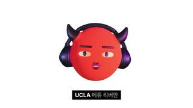
대표 프레임
악마 아바타(진행자)
자막 박스
샷MCU(아바타 A롤)앵글아이레벨 정면카메라고정구도흰 배경 정중앙 악마 아바타동작눈썹을 치켜올리며 립싱크대사진행자: "UCLA 매튜 리버만 교수가 연구한 바에 의하면"화면 자막UCLA 매튜 리버만 / 교수가 연구한 바에 의하면들어오는 전환하드컷(밈→흰)효과음/음악BGM 유지역할권위 인용 도입부(출처 명시)
1순위
minimax-h3
립싱크+오디오 동시 생성, 무료 — 아바타 내레이션 A롤 기본
2순위
kling-v3-omni
레퍼런스 이미지 고정 + 립싱크 안정성, 긴 A롤 분할 생성에 유리
3순위
gemini-omni-1-1-flash
빠른 대량 생성(48분 영상 A롤 수십 개)용 저비용 대안
① 이미지 프롬프트 (원본 클론)A a glossy 3D-rendered round red head avatar (#E4322B), perfectly spherical, no body, two short curved dark-purple devil horns on top, large over-ear headphones in deep navy-violet with glossy violet rim highlights, flat 2D cartoon facial features painted on the sphere: cream almond eyes with small purple irises, thick purple eyebrows, small puckered dark-crimson lips, soft studio key light from front-left, subtle contact-free soft shadow, centered on pure white background, 16:9
② 영상 프롬프트 (원본 클론)Avatar lip-syncs '매튜 리버만 교수가 연구한 바에 의하면', eyebrows raise, 3.2 seconds
③ 동물 버전 이미지 프롬프트A a glossy 3D-rendered chubby golden hamster head avatar named Hamzzi, round like a ball, no body, cream cheeks, tiny pink nose, big glossy black eyes with white catchlights, two short curved dark-purple devil horns on top (brand continuity), large over-ear headphones in deep navy-violet with glossy violet rim highlights, soft studio key light from front-left, Pixar-quality fur, centered on pure white background, 16:9
④ 동물 버전 영상 프롬프트Hamzzi lip-syncs the same line, eyebrows raise, 3.2 seconds
샷MS(외부 강연 자료화면)앵글관객석 아이레벨카메라원본 강연 영상(핸드헬드 미세)구도TED풍 무대, 인물 x10~45% 좌측 3분할, 붉은 커튼 배경, 좌하단 빨간 이름 로워서드 'MATTHEW LIEBERMAN'동작교수가 클리커를 들고 설명대사진행자(V.O.): "인간이 정상 범주에서 벗어나 배척당한다고 느낄 때 뇌는 이를 죽음의 위기로 인식합니다."화면 자막인간이 정상 범주에서 벗어나 / 배척당한다고 느낄 때 / 뇌는 이를 / 죽음의 위기로 인식합니다들어오는 전환하드컷(흰 아바타→실사 강연)효과음/음악BGM 유지역할권위 증거(학자 실물 영상)로 주장 신뢰도 상승
1순위
(Pollo 이미지 모델 중 레퍼런스 지원 모델)
명화·아카이브 사진풍 정지 이미지 생성(저작권 회피용 AI 재현, 'ai로 제작된 이미지' 라벨 필수)
2순위
kling-v3
정지 이미지에 느린 패럴랙스/푸시인 부여
3순위
veo-3-1
시대극 무드의 실사풍 B롤
① 이미지 프롬프트 (원본 클론)A middle-aged male professor in a light blue shirt holding a presentation clicker on a dark stage with red curtain accents, conference talk footage look, left third composition, 16:9, 1080p
② 영상 프롬프트 (원본 클론)Professor gestures while speaking, slight handheld camera, 6 seconds, no lip-sync needed (voice-over)
③ 동물 버전 이미지 프롬프트A hamster professor in a tiny light blue shirt holding a clicker on a dark conference stage with red curtain accents, left third composition, 16:9
④ 동물 버전 영상 프롬프트Hamster professor gestures with paw while speaking, slight handheld, 6 seconds
네거티브real person likeness, logos, text, watermark
컷 25 · 질문형 전환 — 다음 정보 블록으로 넘어가는 리훅
74.5s → 76.625s (2.125s)
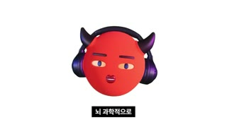
대표 프레임
아바타(펀치인)
자막 박스
샷MCU→CU(펀치인)앵글아이레벨 정면카메라75.5초 하드 펀치인 1.0→1.25배(스케일 점프컷)구도흰 배경 중앙 아바타, 펀치인 후 머리가 화면 높이 약 75%동작'더 자세히 살펴볼까요?'에서 화면이 한 번 쿵 확대대사진행자: "뇌과학적으로 더 자세히 살펴볼까요?"화면 자막뇌 과학적으로 / 더 자세히 살펴볼까요?들어오는 전환하드컷 + 문장 중간 스케일 점프(펀치인)효과음/음악펀치인 순간 '둥' 킥(추정)역할질문형 전환 — 다음 정보 블록으로 넘어가는 리훅
1순위
minimax-h3
립싱크+오디오 동시 생성, 무료 — 아바타 내레이션 A롤 기본
2순위
kling-v3-omni
레퍼런스 이미지 고정 + 립싱크 안정성, 긴 A롤 분할 생성에 유리
3순위
gemini-omni-1-1-flash
빠른 대량 생성(48분 영상 A롤 수십 개)용 저비용 대안
① 이미지 프롬프트 (원본 클론)A a glossy 3D-rendered round red head avatar (#E4322B), perfectly spherical, no body, two short curved dark-purple devil horns on top, large over-ear headphones in deep navy-violet with glossy violet rim highlights, flat 2D cartoon facial features painted on the sphere: cream almond eyes with small purple irises, thick purple eyebrows, small puckered dark-crimson lips, soft studio key light from front-left, subtle contact-free soft shadow, centered on white, 16:9
② 영상 프롬프트 (원본 클론)Avatar lip-syncs, at 1.0s the frame punches in from 100% to 125% instantly, 2.1 seconds
③ 동물 버전 이미지 프롬프트A a glossy 3D-rendered chubby golden hamster head avatar named Hamzzi, round like a ball, no body, cream cheeks, tiny pink nose, big glossy black eyes with white catchlights, two short curved dark-purple devil horns on top (brand continuity), large over-ear headphones in deep navy-violet with glossy violet rim highlights, soft studio key light from front-left, Pixar-quality fur, centered on white, 16:9
④ 동물 버전 영상 프롬프트Hamzzi lip-syncs, instant punch-in 100% to 125% at 1.0s
샷그래픽 MS앵글측면(두개골 프로필)카메라고정 + 붉은 발광 펄스구도빨강 종이질감(#E8152E) 위 검은 두개골 실루엣 중앙, 그 위 흰 세리프 'Anterior cingulate cortex'동작79.5~81초 두개골 전두부에 붉은 빛(활성화)이 번짐대사진행자: "사람이 사회적으로 거절을 당하거나 무리에서 배제될 때 활성화되는 뇌 부위는 전대상피질입니다."화면 자막사람이 사회적으로 거절을 당하거나 / 무리에서 배제될 때 / 활성화되는 뇌 부위는 / 전대상피질입니다들어오는 전환하드컷효과음/음악저음 펄스(추정)역할과학 용어를 시각 기호로 — 정보 밀도 상승 구간
1순위
(AI 불필요) FFmpeg/HyperFrames 그래픽
텍스트·스톡 캡처 모션은 코드로 만드는 게 가장 정확하고 무료
2순위
wan-v3-0
배경 질감(종이 흔들림·블러)만 AI로 필요할 때 저렴한 환경 모션
3순위
veo-3-1
카메라 휩팬 같은 물리적 무브가 필요할 때
① 이미지 프롬프트 (원본 클론)Black skull silhouette in profile centered on red paper texture (#E8152E), thin white serif label "Anterior cingulate cortex" across the skull, editorial scientific collage, 16:9
② 영상 프롬프트 (원본 클론)A soft red glow pulses inside the front-middle of the skull twice, 7 seconds, locked
③ 동물 버전 이미지 프롬프트Black hamster skull silhouette in profile on red paper texture, white serif label "Anterior cingulate cortex"
④ 동물 버전 영상 프롬프트Red glow pulses inside the hamster skull twice, 7 seconds
네거티브text errors, misspelled letters, watermark, logo, extra limbs, deformed face, low resolution, jpeg artifacts, busy background, photorealistic human skin on avatar, 9:16 vertical crop
컷 27 · 증거 이미지로 '거절=신체 고통' 비유를 사실화
83.75s → 88.5s (4.75s)
대표 프레임
ACC 하이라이트
자막 박스
샷자료화면(MRI)앵글시상면카메라고정구도검정 바탕 흑백 MRI 시상면 좌측 70%, 전대상피질이 형광 노랑(#E6E62E)으로 칠해짐동작하이라이트 영역 강조대사진행자: "놀랍게도 이 부위는 신체가 칼에 베이거나 뼈가 부러졌을 때 고통을 느끼는 부위와 정확히 일치합니다."화면 자막신체가 칼에 베이거나 / 뼈가 부러졌을 때 / 고통을 느끼는 부위와 / 정확히 일치합니다들어오는 전환하드컷효과음/음악BGM 유지역할증거 이미지로 '거절=신체 고통' 비유를 사실화
1순위
(AI 불필요) FFmpeg/HyperFrames 그래픽
텍스트·스톡 캡처 모션은 코드로 만드는 게 가장 정확하고 무료
2순위
wan-v3-0
배경 질감(종이 흔들림·블러)만 AI로 필요할 때 저렴한 환경 모션
3순위
veo-3-1
카메라 휩팬 같은 물리적 무브가 필요할 때
① 이미지 프롬프트 (원본 클론)Grayscale sagittal brain MRI slice on black, the anterior cingulate cortex highlighted in flat neon yellow (#E6E62E), clinical scientific image, 16:9
② 영상 프롬프트 (원본 클론)Very slow push-in 1.00 to 1.05 over 4.7 seconds, highlight gently pulses
③ 동물 버전 이미지 프롬프트Grayscale sagittal MRI slice of a hamster brain on black, cingulate area highlighted neon yellow
④ 동물 버전 영상 프롬프트Slow push-in 1.00 to 1.05, highlight pulses
네거티브text errors, misspelled letters, watermark, logo, extra limbs, deformed face, low resolution, jpeg artifacts, busy background, photorealistic human skin on avatar, 9:16 vertical crop
컷 28 · 정리 멘트(요약 → 비유로 연결)
88.5s → 92.75s (4.25s)
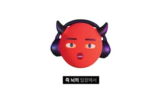
대표 프레임
악마 아바타(진행자)
자막 박스
샷MCU(아바타 A롤)앵글아이레벨 정면카메라고정구도흰 배경 중앙 아바타동작눈을 가늘게 뜨며 결론 정리대사진행자: "즉 뇌의 입장에서 남들처럼 살지 못하고 무리에서 고립되는 것은"화면 자막즉 뇌의 입장에서 / 남들처럼 살지 못하고들어오는 전환하드컷효과음/음악BGM 유지역할정리 멘트(요약 → 비유로 연결)
1순위
minimax-h3
립싱크+오디오 동시 생성, 무료 — 아바타 내레이션 A롤 기본
2순위
kling-v3-omni
레퍼런스 이미지 고정 + 립싱크 안정성, 긴 A롤 분할 생성에 유리
3순위
gemini-omni-1-1-flash
빠른 대량 생성(48분 영상 A롤 수십 개)용 저비용 대안
① 이미지 프롬프트 (원본 클론)A a glossy 3D-rendered round red head avatar (#E4322B), perfectly spherical, no body, two short curved dark-purple devil horns on top, large over-ear headphones in deep navy-violet with glossy violet rim highlights, flat 2D cartoon facial features painted on the sphere: cream almond eyes with small purple irises, thick purple eyebrows, small puckered dark-crimson lips, soft studio key light from front-left, subtle contact-free soft shadow, centered on pure white, 16:9
② 영상 프롬프트 (원본 클론)Avatar lip-syncs, squints, 4.2 seconds
③ 동물 버전 이미지 프롬프트A a glossy 3D-rendered chubby golden hamster head avatar named Hamzzi, round like a ball, no body, cream cheeks, tiny pink nose, big glossy black eyes with white catchlights, two short curved dark-purple devil horns on top (brand continuity), large over-ear headphones in deep navy-violet with glossy violet rim highlights, soft studio key light from front-left, Pixar-quality fur, centered on pure white, 16:9
④ 동물 버전 영상 프롬프트Hamzzi lip-syncs, squints, 4.2 seconds
샷MS(영화/드라마 클립)앵글아이레벨카메라원본 클립 핸드헬드구도주황 수감복 남성들이 대치, 붉은 틴트, 인물 중앙동작감옥 싸움 직전의 긴장 장면대사진행자(V.O.): "칼로 몸이 찔리는 것과 똑같은 고통이라는 뜻입니다."화면 자막칼로 몸이 찔리는 것과 / 똑같은 고통이라는 뜻입니다들어오는 전환하드컷효과음/음악BGM 유지역할비유를 실사 폭력 이미지로 증폭(감정 자극)
1순위
hailuo-2-3
과장된 코믹 리액션(찡그림·고개 흔들기)
2순위
pixverse-v6
밈 스타일 빠른 루프 동작
3순위
grok-imagine-video-1-5
짧은 리액션 클립 대량 생성
① 이미지 프롬프트 (원본 클론)Tense scene of men in orange prison jumpsuits facing off in a prison yard, warm red-orange color grade, cinematic handheld still, 16:9
② 영상 프롬프트 (원본 클론)Handheld camera, men shove and glare, 3.5 seconds, no dialogue
③ 동물 버전 이미지 프롬프트Tense scene of hamsters in tiny orange prison jumpsuits facing off in a hamster-cage prison yard, warm red-orange grade, 16:9
④ 동물 버전 영상 프롬프트Handheld, hamsters puff cheeks and glare, 3.5 seconds
샷MCU(아바타 A롤 롱테이크)앵글아이레벨 정면카메라고정(표정/눈 깜빡임만 변화)구도흰 배경 정중앙 아바타 — 이 영상의 기본 A롤. 자막만 바뀌며 20초 유지동작입 모양 립싱크, 2~4초마다 눈깜빡임·눈썹 변화, 고개 미세 흔들림대사진행자: "…정치인은 인간 무리를 대표하는 인물이자 …최상의 계급으로 인식되곤 합니다."화면 자막정치인은 / 인간 무리를 대표하는 인물이자 …들어오는 전환하드컷효과음/음악BGM(로파이 피아노 추정) 지속역할정보 전달 A롤 — 시청자 시선 앵커(얼굴 대신 캐릭터)
1순위
minimax-h3
립싱크+오디오 동시 생성, 무료 — 아바타 내레이션 A롤 기본
2순위
kling-v3-omni
레퍼런스 이미지 고정 + 립싱크 안정성, 긴 A롤 분할 생성에 유리
3순위
gemini-omni-1-1-flash
빠른 대량 생성(48분 영상 A롤 수십 개)용 저비용 대안
① 이미지 프롬프트 (원본 클론)A a glossy 3D-rendered round red head avatar (#E4322B), perfectly spherical, no body, two short curved dark-purple devil horns on top, large over-ear headphones in deep navy-violet with glossy violet rim highlights, flat 2D cartoon facial features painted on the sphere: cream almond eyes with small purple irises, thick purple eyebrows, small puckered dark-crimson lips, soft studio key light from front-left, subtle contact-free soft shadow, centered on pure white seamless background, 16:9, head fills 60% of frame height
② 영상 프롬프트 (원본 클론)Avatar lip-syncs continuous Korean narration for 20 seconds, blinks every 3 seconds, eyebrows react to emphasis words, tiny head sway, locked camera
③ 동물 버전 이미지 프롬프트A a glossy 3D-rendered chubby golden hamster head avatar named Hamzzi, round like a ball, no body, cream cheeks, tiny pink nose, big glossy black eyes with white catchlights, two short curved dark-purple devil horns on top (brand continuity), large over-ear headphones in deep navy-violet with glossy violet rim highlights, soft studio key light from front-left, Pixar-quality fur, centered on pure white seamless background, 16:9
④ 동물 버전 영상 프롬프트Hamzzi lip-syncs 20 seconds of narration, blinks every 3s, ears and whiskers react on emphasis words, locked camera
샷자료 그리드앵글플랫카메라느린 팬/줌으로 초상 그리드 훑기구도흰 배경에 미국 대통령 45명 초상 그리드, 일부 강조 빨강 틴트동작그리드를 훑다가 제임스 뷰캐넌 한 명으로 줌인대사진행자: "미국 대통령 조지 워싱턴부터 도널드 트럼프까지 총 45명 중 몇 명이 미혼이었을까요? 바로 단 한 명입니다."화면 자막미국 대통령 / 조지 워싱턴부터 … / 바로 단 1명입니다들어오는 전환하드컷효과음/음악줌인 순간 '팅' 강조(추정)역할퀴즈형 질문 + 숫자 페이오프(45명 중 1명) — 미니 오픈루프
1순위
(Pollo 이미지 모델 중 레퍼런스 지원 모델)
명화·아카이브 사진풍 정지 이미지 생성(저작권 회피용 AI 재현, 'ai로 제작된 이미지' 라벨 필수)
2순위
kling-v3
정지 이미지에 느린 패럴랙스/푸시인 부여
3순위
veo-3-1
시대극 무드의 실사풍 B롤
① 이미지 프롬프트 (원본 클론)Grid of 45 small vintage presidential-style portrait photos on white background with name captions, editorial archive layout, one portrait tinted red, 16:9
② 영상 프롬프트 (원본 클론)Slow pan across the portrait grid then quick zoom into one portrait, 6.6 seconds
③ 동물 버전 이미지 프롬프트Grid of 45 small vintage portraits of hamsters in 18th-20th century suits on white, one tinted red, 16:9
④ 동물 버전 영상 프롬프트Slow pan then quick zoom into one hamster portrait
네거티브text errors, misspelled letters, watermark, logo, extra limbs, deformed face, low resolution, jpeg artifacts, busy background, photorealistic human skin on avatar, 9:16 vertical crop
컷 50 · 데이터 증거 + 캐릭터 동시 노출로 '설명하는 사람'을 놓치지 않게 함
348.375s → 367.75s (19.375s)
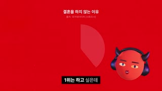
대표 프레임
차트
아바타 PiP
자막 박스
샷그래픽 + 아바타 PiP앵글정면카메라고정구도빨강 배경 상단 y≈5~15% 흰 소제목 '결혼을 하지 않는 이유', 중앙 회색 원형 차트, 우하단 아바타 PiP(x70~95%, y55~95%)동작통계 순위(1위 돈, 2위 필요성 못 느낌)를 차트로, 아바타가 옆에서 해설대사진행자: "결혼을 하지 않는 미혼 대상으로 조사를 해 봤을 때 1위는 돈 문제고 2위는 필요성을 못 느껴서입니다."화면 자막결혼을 하지 않는 미혼 대상으로 / 1위는 돈 문제고 …들어오는 전환하드컷효과음/음악BGM 유지역할데이터 증거 + 캐릭터 동시 노출로 '설명하는 사람'을 놓치지 않게 함
1순위
minimax-h3
립싱크+오디오 동시 생성, 무료 — 아바타 내레이션 A롤 기본
2순위
kling-v3-omni
레퍼런스 이미지 고정 + 립싱크 안정성, 긴 A롤 분할 생성에 유리
3순위
gemini-omni-1-1-flash
빠른 대량 생성(48분 영상 A롤 수십 개)용 저비용 대안
① 이미지 프롬프트 (원본 클론)Deep red background 16:9, small white Korean heading at top, a flat grey donut chart in the center, and the a glossy 3D-rendered round red head avatar (#E4322B), perfectly spherical, no body, two short curved dark-purple devil horns on top, large over-ear headphones in deep navy-violet with glossy violet rim highlights, flat 2D cartoon facial features painted on the sphere: cream almond eyes with small purple irises, thick purple eyebrows, small puckered dark-crimson lips, soft studio key light from front-left, subtle contact-free soft shadow as a picture-in-picture in the bottom right corner at 23% width
② 영상 프롬프트 (원본 클론)Donut segments draw on clockwise over 1s, avatar PiP lip-syncs narration, 19 seconds
③ 동물 버전 이미지 프롬프트Deep red background, flat grey donut chart center, a glossy 3D-rendered chubby golden hamster head avatar named Hamzzi, round like a ball, no body, cream cheeks, tiny pink nose, big glossy black eyes with white catchlights, two short curved dark-purple devil horns on top (brand continuity), large over-ear headphones in deep navy-violet with glossy violet rim highlights, soft studio key light from front-left, Pixar-quality fur as picture-in-picture bottom right at 23% width
④ 동물 버전 영상 프롬프트Chart draws on, Hamzzi PiP lip-syncs and points with its eyes toward the chart
네거티브text errors, misspelled letters, watermark, logo, extra limbs, deformed face, low resolution, jpeg artifacts, busy background, photorealistic human skin on avatar, 9:16 vertical crop
컷 68 · 챕터 경계 '숨 고르기' — 콜드오픈(8분) 종료 신호, 다음 인사로 리셋
494.25s → 494.375s (0.125s)
대표 프레임
아바타 초확대
샷ECU(아바타 초확대 블러)앵글정면카메라크래시 줌 1.0→3.0 + 줌블러 0.13초구도아바타 얼굴이 화면을 가득 채우며 방사형 블러동작로드맵 설명 직후 카메라가 아바타 얼굴로 돌진대사(무음 구간 495.6~497.2초 직전)화면 자막(자막 없음)들어오는 전환크래시 줌 전환 → 흰 선 드로잉(494.38~497.75) → 1.5초 정적 → 인사효과음/음악휘익 줌 + 이후 1.5초 무음(실측 silence)역할챕터 경계 '숨 고르기' — 콜드오픈(8분) 종료 신호, 다음 인사로 리셋
1순위
(AI 불필요) FFmpeg/HyperFrames 그래픽
텍스트·스톡 캡처 모션은 코드로 만드는 게 가장 정확하고 무료
2순위
wan-v3-0
배경 질감(종이 흔들림·블러)만 AI로 필요할 때 저렴한 환경 모션
3순위
veo-3-1
카메라 휩팬 같은 물리적 무브가 필요할 때
① 이미지 프롬프트 (원본 클론)Extreme close-up of the a glossy 3D-rendered round red head avatar (#E4322B), perfectly spherical, no body, two short curved dark-purple devil horns on top, large over-ear headphones in deep navy-violet with glossy violet rim highlights, flat 2D cartoon facial features painted on the sphere: cream almond eyes with small purple irises, thick purple eyebrows, small puckered dark-crimson lips, soft studio key light from front-left, subtle contact-free soft shadow, filling the whole frame, strong radial zoom blur, 16:9
② 영상 프롬프트 (원본 클론)Crash zoom from 100% to 300% in 0.13 seconds with radial blur, then cut
③ 동물 버전 이미지 프롬프트Extreme close-up of a glossy 3D-rendered chubby golden hamster head avatar named Hamzzi, round like a ball, no body, cream cheeks, tiny pink nose, big glossy black eyes with white catchlights, two short curved dark-purple devil horns on top (brand continuity), large over-ear headphones in deep navy-violet with glossy violet rim highlights, soft studio key light from front-left, Pixar-quality fur, filling the frame, strong radial zoom blur
④ 동물 버전 영상 프롬프트Crash zoom 100% to 300% in 0.13s with radial blur
컷 70 · 지연 인트로(8분 17초) — 콜드오픈으로 이미 몰입시킨 뒤 브랜드 인사 + 10개 질문 로드맵(진행률 약속
497.75s → 509.375s (11.625s)
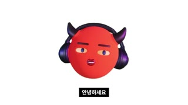
대표 프레임
악마 아바타(진행자)
자막 박스
샷MCU(아바타 인사)앵글아이레벨 정면카메라고정구도흰 배경 정중앙 아바타(기본 A롤과 동일)동작밝은 표정으로 인사 후 '10가지 질문' 예고대사진행자: "안녕하세요. 알고 보면 간단한 지식 알간지입니다. …그래서 오늘 우리는 총 열 가지 질문을 던질 겁니다."화면 자막안녕하세요 / 알고 보면 간단한 지식 알간지입니다 / 오늘 우리는 총 열 가지 질문을 …들어오는 전환1.5초 무음 뒤 하드컷효과음/음악BGM 재시작(추정)역할지연 인트로(8분 17초) — 콜드오픈으로 이미 몰입시킨 뒤 브랜드 인사 + 10개 질문 로드맵(진행률 약속)
1순위
minimax-h3
립싱크+오디오 동시 생성, 무료 — 아바타 내레이션 A롤 기본
2순위
kling-v3-omni
레퍼런스 이미지 고정 + 립싱크 안정성, 긴 A롤 분할 생성에 유리
3순위
gemini-omni-1-1-flash
빠른 대량 생성(48분 영상 A롤 수십 개)용 저비용 대안
① 이미지 프롬프트 (원본 클론)A a glossy 3D-rendered round red head avatar (#E4322B), perfectly spherical, no body, two short curved dark-purple devil horns on top, large over-ear headphones in deep navy-violet with glossy violet rim highlights, flat 2D cartoon facial features painted on the sphere: cream almond eyes with small purple irises, thick purple eyebrows, small puckered dark-crimson lips, soft studio key light from front-left, subtle contact-free soft shadow, centered on pure white, friendly expression, 16:9
② 영상 프롬프트 (원본 클론)Avatar lip-syncs a cheerful greeting '안녕하세요, 알고 보면 간단한 지식 알간지입니다', small nod, 11.6 seconds
③ 동물 버전 이미지 프롬프트A a glossy 3D-rendered chubby golden hamster head avatar named Hamzzi, round like a ball, no body, cream cheeks, tiny pink nose, big glossy black eyes with white catchlights, two short curved dark-purple devil horns on top (brand continuity), large over-ear headphones in deep navy-violet with glossy violet rim highlights, soft studio key light from front-left, Pixar-quality fur, centered on pure white, friendly expression, 16:9
④ 동물 버전 영상 프롬프트Hamzzi lip-syncs '안녕하세요, 알고 보면 간단한 지식 햄찌입니다', small nod and ear wiggle, 11.6 seconds
샷챕터 타이틀 카드앵글정면카메라느린 푸시인 1.00→1.04(추정)구도진한 빨강 그런지(#A50012 중심→#5A0008 비네트) 위 검정 마커 브러시체 영문 'Natural or artificial'(x7~91%, y28~53%), 그 아래 y≈60% 흰 이탤릭 한글 'Q1: 결혼은 본능일까? 인위적 제도일까?'(키워드 볼드)동작타이틀이 번지듯 나타남(잉크 스트로크 리빌 추정)대사진행자: "그중 가장 첫 번째 질문, 결혼은 인간의 자연적 본능일까? 혹은 인간이 인위적으로 만들어 낸 제도일까?"화면 자막Natural or artificial / Q1: 결혼은 본능일까? 인위적 제도일까?들어오는 전환하드컷효과음/음악브러시 '스윽' + 저음 임팩트(추정)역할넘버링 챕터 카드(Q1~Q10) — 진행률 가시화 + 챕터마다 리훅 질문
1순위
(AI 불필요) FFmpeg/HyperFrames 그래픽
텍스트·스톡 캡처 모션은 코드로 만드는 게 가장 정확하고 무료
2순위
wan-v3-0
배경 질감(종이 흔들림·블러)만 AI로 필요할 때 저렴한 환경 모션
3순위
veo-3-1
카메라 휩팬 같은 물리적 무브가 필요할 때
① 이미지 프롬프트 (원본 클론)Grungy deep crimson textured background (#A50012 fading to #5A0008 at edges) with film grain, huge black hand-painted marker brush lettering "Natural or artificial" across the center, small white italic Korean question line below, 16:9 title card
② 영상 프롬프트 (원본 클론)Brush lettering reveals left to right like wet ink over 0.6s, background grain flickers, slow push-in 1.00 to 1.04 over 4.7 seconds
③ 동물 버전 이미지 프롬프트Same crimson grunge title card, black marker brush lettering "Natural or artificial", a tiny hamster paw print as the dot of the i
④ 동물 버전 영상 프롬프트Ink reveal 0.6s, paw print stamps in at 0.8s, slow push-in
네거티브text errors, misspelled letters, watermark, logo, extra limbs, deformed face, low resolution, jpeg artifacts, busy background, photorealistic human skin on avatar, 9:16 vertical crop
컷 72 · 내부 토론 장치 — 진행자의 설명을 두 인형의 반말 대화로 바꿔 강의 피로 감소
514.125s → 524.75s (10.625s)
대표 프레임
토론 인형(검은 털 머리)
자막 박스
샷MS(토론 인형 1)앵글아이레벨 정면카메라고정구도검정 바탕, 흰 퀼팅 우주복 상반신 + 검은 털뭉치 머리에 크림색 헤드폰(x23~77%, y8~100%), 얼굴에 작은 빨간 점 눈동작머리를 살짝 까딱이며 말함(입 없음 — 몸짓으로 화자 표시)대사토론자 B: "토론 전에 결혼이 뭔지 간단히 정의해야 돼."화면 자막토론 전에 / 결혼이 뭔지 간단히 정의해야 돼들어오는 전환하드컷효과음/음악BGM 톤다운(추정)역할내부 토론 장치 — 진행자의 설명을 두 인형의 반말 대화로 바꿔 강의 피로 감소
1순위
minimax-h3
대화형 대사 립싱크(토론 인형) 무료
2순위
seedance-2-0
고개 까딱·미세 표정 등 인형 특유의 작은 연기
3순위
kling-v3-omni
두 인물 동시 프레임 대화 컷
① 이미지 프롬프트 (원본 클론)A puppet character with a head made of black fuzzy fur ball with two tiny glowing red dot eyes, wearing cream over-ear headphones, a cream-white quilted fleece high-neck spacesuit-like jumpsuit body, shoulders visible from chest up, photographed on pure black seamless background, soft top light, shallow depth of field, centered, 16:9
② 영상 프롬프트 (원본 클론)Puppet tilts head while talking, subtle breathing of shoulders, 10 seconds, dialogue voice-over (no mouth)
③ 동물 버전 이미지 프롬프트A black bear hamster (dark fur) wearing cream over-ear headphones, a cream-white quilted fleece high-neck spacesuit-like jumpsuit body, shoulders visible from chest up, photographed on pure black seamless background, soft top light, shallow depth of field, centered, 16:9
④ 동물 버전 영상 프롬프트Black hamster tilts head and moves mouth to Korean dialogue '토론 전에 결혼이 뭔지 간단히 정의해야 돼', 10 seconds
네거티브human face, text, watermark, extra arms, colorful background
컷 85 · 학자 의인화 카메오 — 이론을 캐릭터 싸움(모건 vs 웨스터마크 vs 프로이트)으로 드라마화
671.875s → 686.75s (14.875s)
대표 프레임
학자 얼굴+우주복
자막 박스
샷MS(학자 얼굴 합성 캐릭터)앵글아이레벨 정면카메라고정구도검정 바탕, 우주복 몸통 위 19세기 학자(루이스 헨리 모건) 초상 얼굴 누끼 합성, 중앙동작초상화 얼굴이 입만 움직이며 1인칭으로 주장(퍼펫 합성)대사모건(가상 대사): "맞아. 원시 시대에는 말이야, …그로 인해 태어난 아이를 공동체가 함께 육아하는 그런 형태를 띄었을 거야."화면 자막원시 시대에는 말이야 / 공동체가 함께 육아하는 …들어오는 전환'누구세요?' → '나 루이스 헨리 모건' 콜앤리스폰스 후 하드컷효과음/음악BGM 유지역할학자 의인화 카메오 — 이론을 캐릭터 싸움(모건 vs 웨스터마크 vs 프로이트)으로 드라마화
1순위
minimax-h3
대화형 대사 립싱크(토론 인형) 무료
2순위
seedance-2-0
고개 까딱·미세 표정 등 인형 특유의 작은 연기
3순위
kling-v3-omni
두 인물 동시 프레임 대화 컷
① 이미지 프롬프트 (원본 클론)A 19th-century bearded scholar portrait face (engraving-painting texture) composited as a cut-out onto a cream-white quilted fleece high-neck spacesuit-like jumpsuit body, shoulders visible from chest up, photographed on pure black seamless background, soft top light, shallow depth of field, centered, collage puppet style, 16:9
② 영상 프롬프트 (원본 클론)The painted face's mouth moves to speak Korean dialogue, slight head tilt, 15 seconds, lip sync
③ 동물 버전 이미지 프롬프트A hamster wearing a big grey 19th-century beard and bald-top wig, painted-portrait texture, composited onto a cream-white quilted fleece high-neck spacesuit-like jumpsuit body, shoulders visible from chest up, photographed on pure black seamless background, soft top light, shallow depth of field, centered, 16:9
④ 동물 버전 영상 프롬프트Hamster scholar lip-syncs Korean dialogue, strokes its fake beard, 15 seconds
샷자료화(19세기 판화 채색) + 말풍선앵글플랫카메라느린 켄번스(추정)구도원주민 채색 판화 두 인물 좌우 배치, 좌측 인물에 흰 말풍선 '아빠!', 우측 '?'동작삼촌을 '아빠'라 부르는 장면을 말풍선으로 연출대사모건(V.O.): "걔네가 삼촌을 삼촌이라고 안 부르고 아빠라고 부르는 거야."화면 자막아빠라고 부르는 거야들어오는 전환하드컷효과음/음악말풍선 팝(추정)역할자료화면을 만화처럼 비틀어 웃음+이해 동시 달성
1순위
(Pollo 이미지 모델 중 레퍼런스 지원 모델)
명화·아카이브 사진풍 정지 이미지 생성(저작권 회피용 AI 재현, 'ai로 제작된 이미지' 라벨 필수)
2순위
kling-v3
정지 이미지에 느린 패럴랙스/푸시인 부여
3순위
veo-3-1
시대극 무드의 실사풍 B롤
① 이미지 프롬프트 (원본 클론)Hand-colored 19th-century ethnographic engraving style illustration of two figures with feathered headdresses, a white comic speech bubble with Korean text near the left figure, 16:9
② 영상 프롬프트 (원본 클론)Slow Ken Burns push-in 1.0 to 1.06, speech bubble pops in with bounce at 0.5s, 11 seconds
③ 동물 버전 이미지 프롬프트Hand-colored 19th-century engraving style illustration of two hamsters with feathered headdresses, white comic speech bubble near the left hamster
④ 동물 버전 영상 프롬프트Slow push-in, speech bubble pops in with bounce
네거티브real tribe photo, stereotype caricature, text errors
컷 91 · 3~4분마다 한 번씩 넣는 웃음 패턴 인터럽트
714.75s → 719.75s (5.0s)
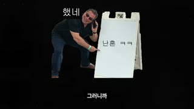
대표 프레임
밈 인물
표지판 텍스트
자막 박스
샷밈 인서트(스톡 사진 패러디)앵글아이레벨카메라고정구도검정 바탕 좌측 남성이 A보드 표지판(난혼 ㅋㅋ)에 낙서, 상단 '했네' 손글씨동작결론을 가볍게 비꼬는 밈대사모건(V.O.): "…다 자유롭게 성관계를 했네."화면 자막그러니까들어오는 전환하드컷효과음/음악코믹 효과음(추정)역할3~4분마다 한 번씩 넣는 웃음 패턴 인터럽트
1순위
hailuo-2-3
과장된 코믹 리액션(찡그림·고개 흔들기)
2순위
pixverse-v6
밈 스타일 빠른 루프 동작
3순위
grok-imagine-video-1-5
짧은 리액션 클립 대량 생성
① 이미지 프롬프트 (원본 클론)A man in dark clothes crouching and writing on a white sandwich-board sign with a marker, isolated on black background, stock photo meme style, 16:9
② 영상 프롬프트 (원본 클론)Man scribbles on the sign, 5 seconds, comedic timing
③ 동물 버전 이미지 프롬프트A hamster crouching and writing on a tiny white sandwich-board sign with a marker, isolated on black, meme style
④ 동물 버전 영상 프롬프트Hamster scribbles quickly on the sign, 5 seconds
네거티브real person likeness, watermark
컷 118 · '~음/~임' 커뮤니티 말투 구간 — 톤 전환으로 집중 리셋
826.625s → 833.875s (7.25s)
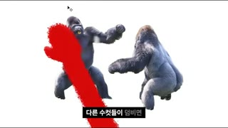
대표 프레임
고릴라 누끼
빨간 브러시
자막 박스
샷누끼 콜라주 + 붉은 브러시 애니앵글플랫카메라고정구도흰 배경에 고릴라 누끼 3~4마리, 우측 하단부터 빨간 붓질(#E01020)이 치솟으며 한 마리를 칠함동작고릴라 사회(실버백 독점) 설명 중 붓질로 강조대사진행자(구어체 반말 요약): "고릴라는 실버백이라 불리는 제일 강한 수컷만 여러 명의 암컷과 교미할 수 있음."화면 자막자신의 유전자를 남기기 위해들어오는 전환하드컷효과음/음악붓 스트로크 '슥'(추정)역할'~음/~임' 커뮤니티 말투 구간 — 톤 전환으로 집중 리셋
1순위
(AI 불필요) FFmpeg/HyperFrames 그래픽
텍스트·스톡 캡처 모션은 코드로 만드는 게 가장 정확하고 무료
2순위
wan-v3-0
배경 질감(종이 흔들림·블러)만 AI로 필요할 때 저렴한 환경 모션
3순위
veo-3-1
카메라 휩팬 같은 물리적 무브가 필요할 때
① 이미지 프롬프트 (원본 클론)Cut-out photos of several gorillas arranged on a pure white background, a bold red paint brush stroke (#E01020) sweeping up from the bottom right over one gorilla, editorial collage, 16:9
② 영상 프롬프트 (원본 클론)Red brush stroke animates upward in 0.4s, gorillas static, 7 seconds
③ 동물 버전 이미지 프롬프트Cut-out photos of several chubby hamsters and one big dominant hamster on pure white, a bold red brush stroke sweeping over the dominant one
④ 동물 버전 영상 프롬프트Red brush stroke animates upward in 0.4s
네거티브text errors, misspelled letters, watermark, logo, extra limbs, deformed face, low resolution, jpeg artifacts, busy background, photorealistic human skin on avatar, 9:16 vertical crop
컷 142 · 리스트형 몽타주 — 문장 1개=이미지 1장으로 빠른 정보 리듬
1049.875s → 1055.625s (5.75s)
대표 프레임
여인
자막 박스
샷흑백 판화 일러스트앵글하이앵글카메라느린 푸시인(추정)구도흑백 펜화/에칭 스타일, 얼굴 가린 여인이 군중 속 돌길에 서 있음동작간통 처벌(수치형) 장면대사진행자: "평생 수치심을 안고 살도록 코와 귀를 잘라."화면 자막평생 수치심을 안고 살도록 코와 귀를 잘라들어오는 전환하드컷 — 처벌 목록 문장마다 에칭 1장씩(2~4초) 리스트 몽타주효과음/음악BGM 긴장(추정)역할리스트형 몽타주 — 문장 1개=이미지 1장으로 빠른 정보 리듬
1순위
(Pollo 이미지 모델 중 레퍼런스 지원 모델)
명화·아카이브 사진풍 정지 이미지 생성(저작권 회피용 AI 재현, 'ai로 제작된 이미지' 라벨 필수)
2순위
kling-v3
정지 이미지에 느린 패럴랙스/푸시인 부여
3순위
veo-3-1
시대극 무드의 실사풍 B롤
① 이미지 프롬프트 (원본 클론)Black and white detailed pen-and-ink etching illustration of a woman covering her face with her hands standing on cobblestones surrounded by onlookers' legs, crosshatching, 16:9
② 영상 프롬프트 (원본 클론)Slow push-in 1.0 to 1.05 over 5.7 seconds, no other motion
③ 동물 버전 이미지 프롬프트Black and white pen-and-ink etching of a hamster covering its face with its paws on cobblestones surrounded by onlooking hamsters' legs
④ 동물 버전 영상 프롬프트Slow push-in 1.0 to 1.05
네거티브color, gore, text
컷 157 · 학술 근거 시각화(신뢰도)
1191.125s → 1194.625s (3.5s)
대표 프레임
그래프
자막 박스
샷논문 그래프 캡처앵글플랫카메라고정 또는 부분 줌구도흰 바탕 논문 그래프(빨강/검정 시계열) 좌측 상단부터 가득동작시뮬레이션 결과 그래프를 증거로 제시대사진행자: "…결과적으로 작은 집단에서는 성병이 금방 사라졌어."화면 자막결과적으로 작은 집단에서는들어오는 전환하드컷효과음/음악BGM 유지역할학술 근거 시각화(신뢰도)
1순위
(AI 불필요) FFmpeg/HyperFrames 그래픽
텍스트·스톡 캡처 모션은 코드로 만드는 게 가장 정확하고 무료
2순위
wan-v3-0
배경 질감(종이 흔들림·블러)만 AI로 필요할 때 저렴한 환경 모션
3순위
veo-3-1
카메라 휩팬 같은 물리적 무브가 필요할 때
① 이미지 프롬프트 (원본 클론)Scientific paper figure: multi-panel line chart on white with red and black time-series lines and small axis labels, clean academic plot, 16:9
② 영상 프롬프트 (원본 클론)Slow zoom into the red line panel 1.0 to 1.15 over 10 seconds
③ 동물 버전 이미지 프롬프트Scientific paper figure line chart with a tiny hamster icon in the legend, red and black lines, 16:9
④ 동물 버전 영상 프롬프트Slow zoom into the red line panel
네거티브text errors, misspelled letters, watermark, logo, extra limbs, deformed face, low resolution, jpeg artifacts, busy background, photorealistic human skin on avatar, 9:16 vertical crop
컷 168 · 스토리텔링(역사 에피소드) + 아바타 얼굴 합성 개그
1347.5s → 1359.375s (11.875s)
대표 프레임
명화
아바타 PiP
자막 박스
샷명화 + 아바타 페이스 합성앵글정면카메라고정구도헨리 8세 초상화 중앙, 우측 하단 아바타 PiP → 이후 컷(1374)에선 아바타가 왕의 얼굴 자리를 덮음동작왕이 이혼을 위해 종교를 바꾼 에피소드 설명대사진행자: "영국 왕 헨리 8세는 당시 아내 캐서린과 헤어지고 앤 불린과 재혼을 하겠다고 요구했습니다."화면 자막영국 왕 헨리 8세는 …들어오는 전환하드컷효과음/음악BGM 유지역할스토리텔링(역사 에피소드) + 아바타 얼굴 합성 개그
1순위
(Pollo 이미지 모델 중 레퍼런스 지원 모델)
명화·아카이브 사진풍 정지 이미지 생성(저작권 회피용 AI 재현, 'ai로 제작된 이미지' 라벨 필수)
2순위
kling-v3
정지 이미지에 느린 패럴랙스/푸시인 부여
3순위
veo-3-1
시대극 무드의 실사풍 B롤
① 이미지 프롬프트 (원본 클론)Tudor-era royal portrait painting of a broad-shouldered king in ornate gold-embroidered robes and feathered hat, with the a glossy 3D-rendered round red head avatar (#E4322B), perfectly spherical, no body, two short curved dark-purple devil horns on top, large over-ear headphones in deep navy-violet with glossy violet rim highlights, flat 2D cartoon facial features painted on the sphere: cream almond eyes with small purple irises, thick purple eyebrows, small puckered dark-crimson lips, soft studio key light from front-left, subtle contact-free soft shadow as picture-in-picture bottom right, 16:9
② 영상 프롬프트 (원본 클론)Static painting, avatar PiP lip-syncs narration, 12 seconds
③ 동물 버전 이미지 프롬프트Tudor-era royal portrait painting of a chubby hamster king in ornate gold-embroidered robes and feathered hat, a glossy 3D-rendered chubby golden hamster head avatar named Hamzzi, round like a ball, no body, cream cheeks, tiny pink nose, big glossy black eyes with white catchlights, two short curved dark-purple devil horns on top (brand continuity), large over-ear headphones in deep navy-violet with glossy violet rim highlights, soft studio key light from front-left, Pixar-quality fur as PiP bottom right
④ 동물 버전 영상 프롬프트Static painting, Hamzzi PiP lip-syncs
네거티브text, watermark, modern elements
컷 213 · 숫자 대비(2 vs 98)로 불공정 감정 유발 → 혁명 설명 설득력
1816.375s → 1835.25s (18.875s)
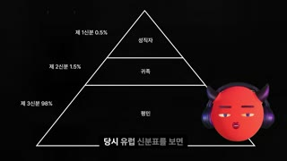
대표 프레임
피라미드
아바타 PiP
자막 박스
샷다이어그램(피라미드)앵글플랫카메라고정구도검정 바탕 흰 선 삼각형 피라미드(3단: 성직자/귀족/평민) 좌중앙, 우하단 아바타 PiP동작신분 비율(제1·2신분 2%, 제3신분 98%) 라벨이 순차 등장대사진행자: "…약 2%를 차지했습니다. 그리고 나머지 98%는 제3신분 즉 평민이었습니다."화면 자막약 2%를 차지했습니다 / 나머지 98%는 세금을 냈죠들어오는 전환하드컷효과음/음악라벨 틱(추정)역할숫자 대비(2 vs 98)로 불공정 감정 유발 → 혁명 설명 설득력
1순위
(AI 불필요) FFmpeg/HyperFrames 그래픽
텍스트·스톡 캡처 모션은 코드로 만드는 게 가장 정확하고 무료
2순위
wan-v3-0
배경 질감(종이 흔들림·블러)만 AI로 필요할 때 저렴한 환경 모션
3순위
veo-3-1
카메라 휩팬 같은 물리적 무브가 필요할 때
① 이미지 프롬프트 (원본 클론)Minimal white line-art pyramid diagram divided into three tiers on pure black background with tiny white Korean labels and percentages, plus the a glossy 3D-rendered round red head avatar (#E4322B), perfectly spherical, no body, two short curved dark-purple devil horns on top, large over-ear headphones in deep navy-violet with glossy violet rim highlights, flat 2D cartoon facial features painted on the sphere: cream almond eyes with small purple irises, thick purple eyebrows, small puckered dark-crimson lips, soft studio key light from front-left, subtle contact-free soft shadow as PiP bottom right, 16:9
② 영상 프롬프트 (원본 클론)Tier labels fade in top to bottom 300ms apart, avatar PiP lip-syncs, 19 seconds
③ 동물 버전 이미지 프롬프트Minimal white line-art pyramid diagram on black with three tiers, a glossy 3D-rendered chubby golden hamster head avatar named Hamzzi, round like a ball, no body, cream cheeks, tiny pink nose, big glossy black eyes with white catchlights, two short curved dark-purple devil horns on top (brand continuity), large over-ear headphones in deep navy-violet with glossy violet rim highlights, soft studio key light from front-left, Pixar-quality fur as PiP bottom right
④ 동물 버전 영상 프롬프트Tier labels fade in sequentially, Hamzzi PiP lip-syncs
네거티브text errors, misspelled letters, watermark, logo, extra limbs, deformed face, low resolution, jpeg artifacts, busy background, photorealistic human skin on avatar, 9:16 vertical crop
컷 229 · 대중문화 레퍼런스로 친근감 — 2초 단위 클립 교차로 속도감
2065.875s → 2067.75s (1.875s)
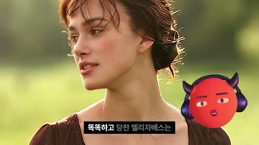
대표 프레임
영화 인물
아바타 PiP
자막 박스
샷영화 클립 + 아바타 PiP앵글아이레벨카메라원본 클립구도시대극 여주인공 CU 좌측, 우하단 아바타 PiP(x70~95%, y33~81%)동작소설 줄거리 요약 중 대응 장면대사진행자: "똑똑하고 당찬 엘리자베스는 엄청난 부자지만 거만해 보이는 다아시를 만났고…"화면 자막똑똑하고 당찬 엘리자베스는들어오는 전환하드컷(2초 이내 빠른 클립 교차)효과음/음악BGM 유지역할대중문화 레퍼런스로 친근감 — 2초 단위 클립 교차로 속도감
1순위
(Pollo 이미지 모델 중 레퍼런스 지원 모델)
명화·아카이브 사진풍 정지 이미지 생성(저작권 회피용 AI 재현, 'ai로 제작된 이미지' 라벨 필수)
2순위
kling-v3
정지 이미지에 느린 패럴랙스/푸시인 부여
3순위
veo-3-1
시대극 무드의 실사풍 B롤
① 이미지 프롬프트 (원본 클론)Cinematic period-drama close-up of a young woman with messy updo in a sunlit English meadow, soft golden backlight, with the a glossy 3D-rendered round red head avatar (#E4322B), perfectly spherical, no body, two short curved dark-purple devil horns on top, large over-ear headphones in deep navy-violet with glossy violet rim highlights, flat 2D cartoon facial features painted on the sphere: cream almond eyes with small purple irises, thick purple eyebrows, small puckered dark-crimson lips, soft studio key light from front-left, subtle contact-free soft shadow as picture-in-picture bottom right, 16:9
② 영상 프롬프트 (원본 클론)Woman turns her head and smiles slightly, gentle breeze, 1.9 seconds, avatar PiP lip-syncs
③ 동물 버전 이미지 프롬프트Cinematic period-drama close-up of a hamster lady with a tiny bonnet in a sunlit meadow, a glossy 3D-rendered chubby golden hamster head avatar named Hamzzi, round like a ball, no body, cream cheeks, tiny pink nose, big glossy black eyes with white catchlights, two short curved dark-purple devil horns on top (brand continuity), large over-ear headphones in deep navy-violet with glossy violet rim highlights, soft studio key light from front-left, Pixar-quality fur as PiP bottom right
④ 동물 버전 영상 프롬프트Hamster lady turns head and smiles, 1.9 seconds
네거티브real actor likeness, text, watermark
컷 247 · 한국 사례로 로컬라이즈 — 서양사→한국 연결로 공감
2219.0s → 2236.125s (17.125s)
대표 프레임
AI 라벨
인용문
샷아카이브 사진 + 인용 텍스트앵글정면카메라매우 느린 푸시인(추정)구도어두운 세피아 1920년대 남녀 인물 사진(AI 재현, 좌상단 'ai로 제작된 이미지' 라벨) 위 중앙 흰 명조풍 인용문 2~3줄(y≈50~60%)동작1920년대 신문 기사 낭독대사진행자(낭독 톤): "사진을 교환하고 혼약이 성립되었으나 김정욱이 근무지인 학교를 옮기거나 가출하는 방식으로 결혼을 거부."화면 자막사진을 교환하고 혼약이 성립되었으나 / 김정욱이 근무지인 학교를 옮기거나 가출하는 방식으로 결혼을 거부 (하단 자막 대신 화면 중앙 인용)들어오는 전환디졸브/페이드(추정) — 낭독 구간은 부드럽게효과음/음악BGM 잔잔(추정)역할한국 사례로 로컬라이즈 — 서양사→한국 연결로 공감
1순위
(Pollo 이미지 모델 중 레퍼런스 지원 모델)
명화·아카이브 사진풍 정지 이미지 생성(저작권 회피용 AI 재현, 'ai로 제작된 이미지' 라벨 필수)
2순위
kling-v3
정지 이미지에 느린 패럴랙스/푸시인 부여
3순위
veo-3-1
시대극 무드의 실사풍 B롤
① 이미지 프롬프트 (원본 클론)Dark sepia 1920s Korean archival-style photograph of a young woman with short bob hair and a man in dark clothes, grainy, low contrast, small label 'ai로 제작된 이미지' top-left, centered white quote text area, 16:9
② 영상 프롬프트 (원본 클론)Very slow push-in 1.00 to 1.03 over 17 seconds, film grain flicker
③ 동물 버전 이미지 프롬프트Dark sepia 1920s archival-style photograph of two hamsters in 1920s Korean clothing (short bob hair, dark jacket), grainy, 'ai로 제작된 이미지' label top-left
④ 동물 버전 영상 프롬프트Very slow push-in, film grain flicker
네거티브color, modern clothes, text errors, watermark
컷 263 · 정답 공개(사랑) 직후 전문가 근거로 반론 봉쇄
2424.125s → 2457.875s (33.75s)
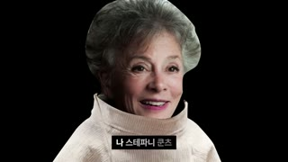
대표 프레임
학자 얼굴+우주복
자막 박스
샷MS(학자 얼굴 합성 캐릭터)앵글아이레벨 정면카메라고정구도검정 바탕, 우주복 몸통 위 노년 여성 학자 얼굴 합성 중앙동작웃으며 설명하는 페이스 립싱크대사쿤츠(가상 대사): "나 스테파니 쿤츠. 약 200년 전부터 … 이게 결혼을 약화시켰거든."화면 자막나 스테파니 쿤츠 / 과거에는 경제적 필요나 생존을 위해 참고 살았지만들어오는 전환'누구세요?'(두 인형 동시 프레임, 262) → 하드컷효과음/음악BGM 유지역할정답 공개(사랑) 직후 전문가 근거로 반론 봉쇄
1순위
minimax-h3
대화형 대사 립싱크(토론 인형) 무료
2순위
seedance-2-0
고개 까딱·미세 표정 등 인형 특유의 작은 연기
3순위
kling-v3-omni
두 인물 동시 프레임 대화 컷
① 이미지 프롬프트 (원본 클론)A smiling elderly woman scholar face with grey curly hair composited as a cut-out onto a cream-white quilted fleece high-neck spacesuit-like jumpsuit body, shoulders visible from chest up, photographed on pure black seamless background, soft top light, shallow depth of field, centered on black, collage puppet style, 16:9
② 영상 프롬프트 (원본 클론)Face lip-syncs Korean dialogue warmly, small nods, 33 seconds (split into 5-8s clips)
③ 동물 버전 이미지 프롬프트An elderly hamster with a grey curly wig and warm smile, composited onto a cream-white quilted fleece high-neck spacesuit-like jumpsuit body, shoulders visible from chest up, photographed on pure black seamless background, soft top light, shallow depth of field, centered on black
④ 동물 버전 영상 프롬프트Hamster scholar lip-syncs warmly, small nods
네거티브text, watermark, real person likeness
컷 265 · 마지막 리훅 — 결론/메시지 파트 시작 신호
2598.125s → 2600.625s (2.5s)
대표 프레임
브러시 타이틀
Q10
샷챕터 타이틀 카드(마지막)앵글정면카메라느린 푸시인구도빨강 그런지 + 검정 브러시 'then what?' + 아래 'Q10: 그럼 우리는 어떻게 해야 할까?'동작결론 챕터 진입대사진행자: "질문 10. 그럼 우리는 어떻게 해야 할까?"화면 자막then what? / Q10: 그럼 우리는 어떻게 해야 할까?들어오는 전환하드컷효과음/음악임팩트 + BGM 전환(감성 피아노 추정)역할마지막 리훅 — 결론/메시지 파트 시작 신호
1순위
(AI 불필요) FFmpeg/HyperFrames 그래픽
텍스트·스톡 캡처 모션은 코드로 만드는 게 가장 정확하고 무료
2순위
wan-v3-0
배경 질감(종이 흔들림·블러)만 AI로 필요할 때 저렴한 환경 모션
3순위
veo-3-1
카메라 휩팬 같은 물리적 무브가 필요할 때
① 이미지 프롬프트 (원본 클론)Grungy deep crimson textured background with film grain, huge black hand-painted marker brush lettering "then what?" centered, small white italic Korean line below, 16:9
② 영상 프롬프트 (원본 클론)Ink reveal 0.6s then slow push-in, 2.5 seconds
③ 동물 버전 이미지 프롬프트Same crimson title card with black brush lettering "then what?" and a tiny hamster paw print as the question-mark dot
④ 동물 버전 영상 프롬프트Ink reveal, paw print stamps in
네거티브text errors, misspelled letters, watermark, logo, extra limbs, deformed face, low resolution, jpeg artifacts, busy background, photorealistic human skin on avatar, 9:16 vertical crop
컷 266 · 의도적 편집 절제 — 3분 넘게 컷 없이 진정성 톤(에세이형 결론), 이미 몰입한 코어 시청자 대상
2600.625s → 2800.0s (199.375s)
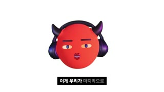
대표 프레임
악마 아바타(진행자)
자막 박스
샷MCU(아바타 결론 롱테이크)앵글아이레벨 정면카메라고정(실측상 199초 무컷)구도흰 배경 정중앙 아바타, B롤 없음 — 자막만 교체동작차분한 표정으로 메시지 전달(눈 감았다 뜨기·미소)대사진행자: "…내가 옳다를 증명하고자 하는 욕망을 내려놓고 상대를 적극적으로 이해해야 합니다."화면 자막내가 옳다를 증명하고자 하는 욕망을 / 내려놓고 …들어오는 전환하드컷효과음/음악감성 피아노 BGM(추정), 효과음 없음역할의도적 편집 절제 — 3분 넘게 컷 없이 진정성 톤(에세이형 결론), 이미 몰입한 코어 시청자 대상
1순위
minimax-h3
립싱크+오디오 동시 생성, 무료 — 아바타 내레이션 A롤 기본
2순위
kling-v3-omni
레퍼런스 이미지 고정 + 립싱크 안정성, 긴 A롤 분할 생성에 유리
3순위
gemini-omni-1-1-flash
빠른 대량 생성(48분 영상 A롤 수십 개)용 저비용 대안
① 이미지 프롬프트 (원본 클론)A a glossy 3D-rendered round red head avatar (#E4322B), perfectly spherical, no body, two short curved dark-purple devil horns on top, large over-ear headphones in deep navy-violet with glossy violet rim highlights, flat 2D cartoon facial features painted on the sphere: cream almond eyes with small purple irises, thick purple eyebrows, small puckered dark-crimson lips, soft studio key light from front-left, subtle contact-free soft shadow, calm gentle expression, centered on pure white, 16:9
② 영상 프롬프트 (원본 클론)Avatar lip-syncs a sincere monologue, slow blinks, soft smile, no camera move, generate as 8-10s clips and chain
③ 동물 버전 이미지 프롬프트A a glossy 3D-rendered chubby golden hamster head avatar named Hamzzi, round like a ball, no body, cream cheeks, tiny pink nose, big glossy black eyes with white catchlights, two short curved dark-purple devil horns on top (brand continuity), large over-ear headphones in deep navy-violet with glossy violet rim highlights, soft studio key light from front-left, Pixar-quality fur, calm gentle expression, centered on pure white, 16:9
④ 동물 버전 영상 프롬프트Hamzzi lip-syncs a sincere monologue, slow blinks, soft smile, 8-10s clips chained
HyperFrames 편집 프롬프트 (Claude에 그대로 붙여넣기)HyperFrames로 1920x1080 30fps 롱폼(약 48분) '얼굴 없는 아바타 인문 다큐'를 만들어줘. 🔴 승인 전 파일 수정 금지, 수정 가능 범위는 새 프로젝트 폴더 내부만.
[레이어] L1 배경(흰 #FFFFFF / 검정 #000000 / 빨강 종이질감 #E8152E 중 컷마다 교체), L2 메인 비주얼(아바타 A롤·B롤·그래픽), L3 아바타 PiP(우하단 폭 24%, x 70%, y 55%, 배경 투명), L4 카라오케 자막, L5 'ai로 제작된 이미지' 라벨(좌상단 1%/1%, 회색 22px, AI 컷에만).
[콜드오픈 0~4500ms] 영문 신문 스크린샷 13장을 실측 길이 125/250/250/125/250/250/125/500/250/250/250/250/250ms로 하드컷. 각 컷: 가로 슬라이드 -8%→+8% + 가로 블러 24px + duotone 틴트(보라 #B04BB5, 흰, 검정, 초록 #2E7D32, 흰, 흰, 파랑 #3A3FD1, 회색 #3A3A3A, 흰, 보라, 흰, 흰, 흰 순), 'marriage' 단어에 주황 #F2A04A 형광펜 박스. 3125ms부터 검정 배경 중앙에 세리프 'Actually,' → 3625ms 'same thing' 300ms 페이드.
[퀴즈 4500~8000ms] 빨강 #C8101E 풀스크린: 4500ms '한글' 흰 굵은 한글 → 5000ms 흰 원 2개 각각 120ms elastic 팝 → 6000ms '영어' → 6500ms 원 4개 팝. 7000ms 검정+세리프 'guess what' 페이드. 8000ms 아바타(검정 배경).
[개념 그래픽] 17625ms 흰 배경 '[marriage]' 세리프 라벨(y 10%) + 마젠타 #E83BE8 실루엣 10개 600ms 간격 페이드인, 26500ms 4명 발밑 검은 타원 생성 후 300ms 드롭 아웃. 29750ms 빨강 배경 흰 유기적 블롭(가로 60%, 세로 64%) + '[Zone A]'. 41500ms 'The Norm/정상성' 다크 카드 Y축 플립 400ms + 오버슈트. 43750ms 검정 배경 나이 숫자 5→70 500ms마다 증가, 20·25·35·40·50에 빨강 #D0021B 손글씨 원 200ms 드로우.
[A롤 규칙] 아바타는 흰 배경 중앙, 머리 높이 화면의 59%(x 29~68%, y 20~79%). 문장별 클립을 하드컷으로 이어 붙이고, 질문 문장('살펴볼까요?')에서 1.0→1.25 즉시 펀치인. 챕터 경계엔 1.0→3.0 크래시줌 130ms + 방사 블러 후 1.5초 무음.
[챕터 카드 Q1~Q10] 시작 시각(초): 509.38, 897.25, 1026.62, 1255.88, 1438.88, 1664.62, 1807.12, 1989.75, 2388.12, 2598.12. 빨강 그런지(#A50012→가장자리 #5A0008) + 필름그레인, 검정 마커 브러시 영단어(Natural or artificial / monogamy / Cheat / Divorce / personal / capitalism / french / romantic / marriage / then what?) 가로 84%, 600ms 좌→우 잉크 리빌, 아래 y 58.5%에 흰 이탤릭 'Qn: 한글 질문'(키워드 볼드). 전체 1.00→1.04 푸시인, 길이 2.5~4.7초.
[B롤] 명화/판화: 켄번스 1.00→1.06. 영화 클립은 2초 단위 교차 + 아바타 PiP. 인용문 구간은 어두운 세피아 사진 위 중앙 흰 명조 2~3줄, 300ms 페이드.
[자막] 하단 중앙 박스 y 84~92%, #111111 불투명, Pretendard Bold 46px, 어절 단위 카라오케(말한 어절 #FFFFFF, 남은 어절 #8C8C8C), 한 줄 8~20자, 등장 애니메이션 없음(하드 교체).
[오디오] 보이스 -14 LUFS, BGM 로파이 피아노 84BPM을 보이스 사이드체인으로 -12dB 덕킹(attack 20ms, release 350ms), 챕터 카드에 브러시 스윕+저음 임팩트, 플래시마다 휘시.
[결론] 2600~2800초는 아바타 단일 샷(편집 절제), 마지막 2880~2900초 검정 엔드.
완료 후 hyperframes check와 snapshot으로 0s, 3.2s, 5.5s, 20s, 35s, 42s, 510s 프레임을 캡처해 보고해줘.
✅ 똑같이 만들기 체크리스트
첫 3.1초는 반드시 0.125~0.5초 컷 13개 이상 — 매 컷 색 틴트를 바꾸고 'marriage' 같은 주제 키워드 하나만 반복 노출
4~8초 안에 빈칸 퀴즈(글자 수 동그라미)로 정답을 보류하고, 정답은 영상 후반(80% 지점)에서 회수
인사('안녕하세요 ~입니다')는 콜드오픈·로드맵 뒤로 미룬다(원본 8분 17초) + 직전 크래시줌과 1.5초 무음
번호 챕터 카드 Q1~Q10은 빨강 그런지 + 검정 브러시 영단어 + 흰 이탤릭 한글 질문 형식 고정
설명은 진행자 존댓말, 반론·학자는 반말 캐릭터 대사로 분리 — 'Q → 학자 주장 → 반박자 등장(누구세요? 나 OOO) → 과학/역사 결론' 3박자
3~4분마다 밈/개그 인서트, 30~60초마다 질문 던지기
B롤 위에는 항상 아바타 PiP(우하단)로 화자를 유지
⚠️ 영화·강연·실존인물 얼굴은 저작권/초상권 리스크 — 클론에선 AI 재현 + 'ai로 제작된 이미지' 라벨, 퍼블릭도메인 명화 우선
🐹 동물 버전 기획동물: 골든 햄스터 '햄찌'가 악마 아바타를 대체(구체 머리 형태·보라 헤드폰·짧은 보라 뿔은 브랜드 연속성으로 유지, 흰 배경 중앙 59% 프레이밍 동일). 캐릭터 매핑: 악마 아바타→햄찌(진행자, 존댓말) / 검은 털뭉치 인형→흑곰햄스터 '까망이'(반론, 반말) / 계란 인형→펄 햄스터 '콩이'(설명, 반말) / 학자 얼굴 합성→햄스터에 수염·가발·안경 분장한 '햄로이트' 등(실존 인물 초상권 회피) / 밈 인물→눌린 볼 햄스터 밈. 그대로 둘 것: 컷 타이밍(실측 초), 3색 배경 순환, 카라오케 자막 스타일, Q1~Q10 챕터 카드 구조와 브러시 폰트, 오픈루프 퀴즈 구조, BGM/덕킹/-14 LUFS. 바꿀 것: 그래픽 속 사람 실루엣→햄스터 실루엣, 명화·판화·영화 클립→같은 구도의 햄스터 버전 AI 재현, 인사 멘트 '알고 보면 간단한 지식 햄찌입니다', 보이스 피치 +3~4반음. 제작 순서: ① 햄찌 캐릭터 시트(레퍼런스) 확정 → ② 문장별 A롤을 minimax-h3로 립싱크 생성(8~10초 단위) → ③ 인형/카메오는 seedance-2-0·kling-v3-omni → ④ 그래픽·카드·자막은 HyperFrames/FFmpeg 코드 → ⑤ 사이드체인 덕킹·loudnorm 후 먹스.
conflict5년 걸린 이유 = 끝없는 자기의심과 '왜 영상이 아닌 글이어야 하나'라는 본질 질문, 주변인의 상실
payoff형식(디자인 비유)과 내용(집필 고백)의 합치 = 책 제목 '더블 클릭(선택과 실행)'의 의미 완성 + 팬 보상(사인본·카드·웹사이트)
loop엔딩 크레딧(234초)에 팬 닉네임·댓글 수록 → 자기 이름 찾기 위해 끝까지 시청/재시청, 설명란 구글드라이브 카드 링크로 재방문
⏱ 편집 리듬
컷 수92평균 컷 길이14.57최단/최장0.25 / 234.21분당 컷4.07해석측정 컷(8fps/160px)은 흰 배경 위 그래픽 교체·PIP 유지 전환을 많이 놓침. 첫 90초는 측정 17샷(평균 6.11초)이지만 시트 관측상 시각 변화는 약 3~4초마다(추정 24회). 본편(0~1106초) 평균 12.15초, 1부(형식, 0~609초)는 B롤·그래픽 밀도 높고 2부(내용, 609~1106초)는 A롤 롱테이크(59·144·82·50·62초)로 의도적 감속. 0.25~0.5초 초단 펀치인(608.75, 1006.875)과 0.5초 몽타주 버스트(331~333, 526~531)로 중간중간 리듬 스파이크.
🧭 전체 구성 (챕터)
구간
이름
내용
이탈 방지 장치
0–24.25s
콜드오픈 훅(떡밥 회수+오해 개그)
인사 → 지난 영상 예고 회수 → 결혼·출산 추측 손그림 재연 → 알 깨고 책 리빌
미스디렉션 + 20초 내 정답, AI 사용 고지로 신뢰
24.25–44.25s
배경(라이브 질문과 5년)
'언니 책 써 봐' → '쓰고 있다' → '언제 나와요?' → '나왔습니다'
밈 3연타(스톡 남자/긁적 소년/창문 여자 푸시인) + 펀치인 해소
44.25–51.63s
로드맵 선언
설명회는 형식·내용 두 파트, 형식부터
진자 그래픽 = 전체 구조 약속(시청 지속 계약)
51.63–130.5s
왜 형식부터(세대 분석)
지금 세대는 형식+내용 합치 때 소비, 굿즈처럼 갖고 싶은 책, 팬에 대한 도리 → 비유법 선택
'그럼 배경 이미지는 뭐냐?' 리훅, 모션그래픽으로 비유 1:1 시각화, 깨알 포인트 예고
519.5–608.75s
내부 디자인(영화관 비유)
흰 속지→타이틀→검정 속지→목차 = 영화관 불 꺼짐, 목차=영화 크레딧, 영어 강조문
빨간 털장갑 실물 책 촬영으로 촉감·실물감, 디자인 실장 감사
608.75–812.13s
2부 내용: 5년이 걸린 이유
5년 전 계약, 마케터 이메일에 반해 계약, '왜 글이어야 하나' 본질 질문, 자기의심·수치심 반복
0.5초 줌 펀치로 파트 전환 → A롤 롱테이크로 고백 몰입
812.13–900.0s
전환점(상실과 새벽 이메일)
가까운 이들의 병·죽음, '알맹스 곁에 있어 주려고' 버팀, 새벽 벤치의 이메일, 이유는 에필로그에
감성 야경 B롤 + 정보 일부 보류(에필로그로 유도)
900.0–982.0s
책 메시지 + 웹사이트 체험
완벽한 선택은 없다, rganzi.com 캐릭터 그리기·100초 슬라이스 게임
무료 참여 CTA(비구매자 포섭)
982.0–1018.75s
한정 사인본
5,000개+ 직접 사인, AGZ 사인 공개
희소성 + 0.25초 틸트 줌 개그
1018.75–1042.0s
멤버십 팬카드
빨맹스(1년+ 멤버) 닉네임별 손그림 카드, 메일 요청 시 추가
멤버십 업셀 + 팬 인정
1042.0–1106.0s
클로징 고백·감사
사랑한다는 말을 못 하는 이유, 자기비판에 괴로운 이들에게 응원, 시그니처 아웃트로
취약성 고백 → 감정 여운
1106.0–1340.21s
엔딩 크레딧+엔딩곡
책 판권·지인·멤버 닉네임 크레딧 롤 + 팬 댓글 카드
이름 찾기 루프, 체류시간 연장
대본 공식① 공손 구어체('~했거든요/~잖아요/~했습니다')와 반말 속마음 인용('언니 책 쓸 생각 없어?', '내가 왜 책을 써야 하지?')을 교차. ② 문장은 자막 1청크(2~5어절) 단위로 끊기게 짧게, 1문장=2~4청크. ③ 자문자답 리훅: '왜 형식부터 설명을 하냐? 왜냐하면…', '왜 더블 클릭일까요?', '그럼 배경 이미지는 뭐냐?', '책 등 디자인을 한번 볼까요?' — 소챕터 시작마다 질문 1개. ④ 사고 과정 공개: 후보 A(다트)·B(종이 뚫기) 탈락 → 정답(클릭) 순서로 '발견의 쾌감' 재현. ⑤ 모든 추상 개념에 일상 비유 1개(나이테, 마우스 꾹 누르기, 영화관 불 꺼짐). ⑥ 셀프 디스/쑥스러움 개그를 진지한 설명 직후 배치('혼자 음흉하게 웃으면서 만족했죠', '처음 해봤습니다 하하하'). ⑦ 2부는 시간순 고백(계약→의심→상실→이메일→다짐)이고, 핵심 정보 일부는 보류('에필로그에 담아뒀으니'). ⑧ 마무리는 CTA 3종(웹사이트·사인본·멤버십) → 취약성 고백 → 감사 → 시그니처 아웃트로 '지금까지 알고 보면 간단한 지식 알간지였습니다'.
첫 30초 대본 원문[원문(자동자막 오탈자 교정)] (0:00) 안녕하세요. 알고 보면 간단한 지식, 알간지입니다. 제가 2026년 첫 번째로 올린 영상에서 '오랫동안 준비해 온 것이 드디어 완성됐다, 다음 영상에서 소개드리겠다'고 하니 '결혼을 했다', '애를 낳았다' 추측하는 분들이 계셔서 너무 재밌었어요. 네. 아쉽게도 둘 다 아닙니다. 예상하신 대로 뭘 낳긴 낳았는데 애는 아니고 책을 낳았어요. (0:24) 제가 라이브를 할 때마다 '언니 책 쓸 생각 없어?'라는 질문을 꽤 받았었고, 그에 '사실 쓰고 있다'라고 대답을 했었어요. (0:33) … [자동자막 원본 일부: '고한이 결혼을 했다. 애를 낳았다. 주측하는 분들이' — '고한이'는 인식 오류로 추정]
🎞 B롤·삽입 유형
유형
빈도
제작법
스톡사진 밈 + 가짜 대사 라벨
1부 분당 약 2~3회(첫 90초 6회)
흰 배경 컷아웃 스톡 인물(과장 표정) + 상단 큰 흰 모노스페이스 글씨/검정 박스 라벨('언니 책을 써 봐', '긁적', '무슨 의미?'). 3~5초 유지.
아바타 얼굴 합성 콜라주
5~10분에 1회
스톡 인물 몸통(점프하는 비즈니스맨 등)에 평면 악마 얼굴 PNG 합성, 좌우 슬라이드·하이파이브 글로우.
손그림 일러스트 밈
훅 1회
마커 선화 + 플랫 채색(악마 신부/노란 아기), 디지털 줌인·아웃, 상단 'AI 사용 고지' 회색 텍스트.
3D 제품 목업(책 턴테이블)
1부 반복(총 5~6회, 합계 약 60초)
흰 배경 위 3D 하드커버 책 Y축 360° 회전 + 아바타 PIP 우하단. Blender/목업 툴 렌더 또는 image-to-video.
키네틱 타이포/영어 키워드 카드
분당 약 1회
흰 또는 검정 배경 단어 팝업('형식 + 내용', 'metaphor', 'click', 'rganzi.com'), 빨강 #E3202B 강조.
인용 텍스트 카드
챕터당 0~1회
검정 배경 가는 흰 글씨 2줄 중앙, 한 줄씩 페이드인, PIP 유지.
디자인 해설 모션그래픽
1부 후반 연속(342~519초)
가로선 글리치 타이틀 분해/재조립, 세로선 굵기로 나이테·얼굴 드러내기, 픽셀 체크박스 악마 얼굴 그리드.
작업과정 화면 녹화/기획서 캡처
시안 챕터에 집중(0.5초 버스트 포함)
어두운 기획서 PDF·피그마 핸들 박스 캡처를 0.5초 컷으로 연속 스크롤.
리터럴 스톡 영상
5분에 1~2회
말 그대로 보여주기(다트 명중, 손가락 종이 뚫기, 밤 공원·벤치) 1~7초.
드라마/예능·밈 영상 클립
훅~2분 내 2회
창문 밖 응시 밈(느린 푸시인), 머리 쥐어뜯는 드라마 장면 — 원본 음성 제거, 자막만.
실물 책 촬영(빨간 털장갑 손)
내지 챕터 연속 + 사인본
검정 배경 소프트박스, 빨간 복슬 장갑 낀 손으로 페이지 넘김·가리키기, 핸드헬드, 말 단위 컷.
웹사이트 시연 화면 녹화
900~982초 1회
검정 배경 중앙 웹앱 캡처 + PIP.
크레딧 롤 + 팬 댓글 카드
엔딩 1회(234초)
검정 배경 우측 흰 크레딧 스크롤, 좌측 댓글 스크린샷 페이드 인/아웃, 영어 보컬 엔딩곡.
🎨 스타일 바이블
룩순백(또는 순흑) 무한 배경 + 스타일라이즈드 3D 클레이풍 악마 아바타 A롤, 플랫 모션그래픽과 컷아웃 밈 콜라주를 섞은 미니멀 에디토리얼 룩조명아바타: 정면 소프트박스 균일광, 그림자 없음, 뿔·헤드폰 약한 스페큘러 / 실물 책: 검정 배경 단일 탑 소프트박스(로우키) / 스톡: 원본 그대로색#EE3B2E(아바타 토마토 레드), #C8102E(책 표지 딥 레드, 추정), #000000(검정 배경·자막 박스), #FFFFFF(흰 배경·자막), #3B2B5E(뿔·헤드폰 딥 퍼플, 추정), #3D6FD8(홍채 코발트 블루, 추정) — 채널 팀컬러 블랙·레드·화이트(본인 언급)렌즈아바타: 망원 느낌(왜곡 없음, 85mm 상당, 전체 초점) / 펀치인은 디지털 크롭 115~220% / 실물 책: 매크로 얕은 심도세트물리적 세트 없음 — 흰 무한 배경(기본)·검정 배경(강조·카드). 아바타는 전신 없이 머리+헤드폰만. 그래픽 구간에선 아바타가 우하단 PIP(가로 약 27%, x 71~98%, y 55~97%)로 상주하는 '앵커 PIP' 레이아웃.자막 스타일기본 자막: Pretendard/Noto Sans KR Medium 계열(추정), 흰 #FFFFFF 글씨 + 불투명 검정 #000000 박스(패딩 좌우 약 0.6em), 하단 중앙 박스 중심 Y≈89%, 글자 높이 ≈ 화면 4.5%(1080p 약 46~48px), 2~5어절 청크로 컷 단위 교체(페이드 없음). 검정 배경 카드 구간에선 박스 없이 흰 글씨. 밈 라벨: 모노스페이스/도트 계열(둥근모꼴 추정) 흰 글씨 + 검정 박스, 글자 높이 ≈ 8~9%, 자간 넓게, 상단 중앙 또는 인물 머리 옆에 팝(0프레임 등장). 키워드 하이라이트: 그래픽 내 빨강 #E3202B('선택', '실행', 'metaphor'). 고지문: 회색 #BDBDBD 작은 글씨 상단 중앙('이미지 제작 일부에 ai가 사용됨').워터마크상시 워터마크/로고 없음(추정). 채널 로고 인트로 없음.
알간지(호스트 아바타) — 빨간 완전 구형 머리, 짧고 굽은 보라-검정 뿔 2개, 대형 보라-검정 오버이어 헤드폰, 복숭아빛 흰자+코발트 파랑 홍채 아몬드 눈, 가는 일자 눈썹, 작은 코, 광택 있는 빨간 도톰 입술(삐죽). 몸 없음. 입은 거의 안 움직이고 눈·눈썹·고개로 연기(페이스트래킹 추정). 여성 목소리 내레이터. 실사 손 필요 시 빨간 털장갑.
캐릭터 시트 프롬프트Character sheet, 16:9, pure white background, stylized 3D clay-like devil avatar: perfectly round glossy tomato-red head (#EE3B2E), two short curved dark purple-black horns, oversized matte purple-black over-ear headphones, almond eyes with pale peach sclera and cobalt-blue irises, thin dark-red straight eyebrows, tiny nose, small glossy pouting red lips, no body, soft subsurface scattering, Pixar-meets-indie-3D look, three views (front, 3/4, profile) plus expression row (neutral, smug brow raise, sleepy half-closed eyes, eye-roll, laughing), consistent proportions, soft studio light, no body
동물 버전 캐릭터Character sheet, 16:9, pure white background, stylized 3D clay-like hamster avatar 'Hamzzi': round fluffy golden-orange hamster head with cream cheeks, two tiny curved dark purple devil horns, oversized matte purple-black over-ear headphones, big glossy black eyes with small white highlights, thin expressive brows, tiny pink nose, small pouting mouth, no body, soft fur shading, Pixar-meets-indie-3D look, three views (front, 3/4, profile) plus expression row (neutral, smug brow raise, sleepy half-closed eyes, eye-roll, laughing), keep the same purple-black headphones and tiny devil horns as brand anchors, plus a pair of tiny hamster paws in fluffy red knit mittens for hand shots
밈 엑스트라(스톡 인물) — 과장 표정의 흰 배경 컷아웃 스톡 인물(안경 남자, 머리 긁는 소년, 안경 올리는 남자, 점프하는 비즈니스맨) — 시청자·호스트 속마음 대변
캐릭터 시트 프롬프트Cutout stock photo on pure white, exaggerated expressive person, wide-angle close portrait, bright flat studio light, meme-ready
동물 버전 캐릭터Cutout photo on pure white of an exaggerated expressive guinea pig / squirrel in human clothes, wide-angle close portrait, meme-ready (햄찌와 구분되는 조연 동물)
🔊 오디오
목소리여성 내레이터 1인, 차분한 중저음·빠른 대화 속도(분당 약 330~360음절, 추정), 설명 구간은 담백, 2부 고백 구간은 속도↓·쉼↑, 개그는 무표정 드라이 톤BGM본편은 내레이션 중심으로 BGM이 거의 들리지 않거나 아주 낮은 로파이/앰비언트 패드(추정, 70~85 BPM), 엔딩 크레딧은 영어 여성 보컬 인디 어쿠스틱 발라드(추정 70~80 BPM, 기타+피아노)효과음19.75~23.0 알 깨짐 크랙 + 휙(추정)
44.25~49.9 진자 틱(추정)
72.4~77.9 하이파이브 반짝(추정)
222.1 다트 '퍽'(추정)
231.9~250.6 마우스 클릭 1·2회(추정)
331.25~333.4 시안 몽타주 스와이프(추정)
608.75 줌 펀치 whoosh(추정)
1006.875 웃음 틸트 줌 효과(추정)
1106.04~1107.69 무음 1.65초(측정) 후 엔딩곡라우드니스-16.7TTS 팁여성 TTS 차분·중저음, 속도 1.05~1.1x, 문장 끝 '~거든요/~잖아요'는 살짝 올림. 자문자답 질문('왜 더블 클릭일까요?') 뒤 350ms 쉼. 2부 고백 구간 속도 0.95x, 쉼표마다 400~600ms. 개그 라인('처음 해봤습니다. 하하하')은 건조하게. 햄찌 버전은 피치 +2 반음·약간 밝게, 말끝 귀여운 비음 가능하나 과장 금지.
BGM 생성 프롬프트Minimal lo-fi ambient bed for a calm Korean video essay, 76 BPM, soft felt piano, warm pad, subtle vinyl crackle, very sparse, no drums in first 8 bars, no vocals, stays under narration; ending track: gentle indie acoustic ballad, female breathy vocal, fingerpicked guitar and soft piano, 74 BPM, intimate and hopeful
🎬 컷별 완전 분해 (36개)
컷 1 · 채널 시그니처 인사 = 브랜드 각인
0.0s → 2.375s (2.375s)
대표 프레임
아바타(머리+헤드폰)
하단 자막 박스
샷MS(아바타 머리 단독)앵글아이레벨 정면카메라고정 + 고개 미세 끄덕임구도순백 배경 중앙 정렬, 머리가 화면 세로 60% 차지, 위아래 여백 균등, 시선 정면(0.5초에 한 번 옆 흘김)동작빨간 악마 아바타가 정면을 보며 인사, 눈을 한 번 옆으로 굴림대사알간지: 안녕하세요. 알고 보면 간단한 지식화면 자막'안녕하세요' → '알고 보면 간단한 지식' (하단 중앙 흰 글씨+검정 박스(Y≈89%))들어오는 전환없음(영상 시작 콜드오픈, 인트로 로고 없음)효과음/음악BGM 없이 목소리로 바로 시작(추정)역할채널 시그니처 인사 = 브랜드 각인
1순위
minimax-h3
대사 오디오+미세 립싱크 동시 생성, 무료·팀 기본
2순위
kling-v3-omni
레퍼런스 캐릭터 일관성 유지하며 눈·고개 미세 연기
3순위
seedance-2-0
눈 굴리기·눈썹 등 미세표정 클로즈업 강점
① 이미지 프롬프트 (원본 클론)16:9 frame, pure white seamless background, stylized 3D clay-like devil avatar: perfectly round glossy tomato-red head (#EE3B2E), two short curved dark purple-black horns, oversized matte purple-black over-ear headphones, almond eyes with pale peach sclera and cobalt-blue irises, thin dark-red straight eyebrows, tiny nose, small glossy pouting red lips, no body, soft subsurface scattering, Pixar-meets-indie-3D look, head centered, filling 60% of frame height, eye-level straight-on, soft even studio light, no shadows, clean minimal, 85mm look
② 영상 프롬프트 (원본 클론)The devil avatar head gently bobs while greeting, glances sideways once at 0.5s then back to camera, lips barely move (subtle speech), 2.4s, locked-off camera. Korean line: '안녕하세요. 알고 보면 간단한 지식'
③ 동물 버전 이미지 프롬프트16:9 frame, pure white seamless background, stylized 3D clay-like hamster avatar 'Hamzzi': round fluffy golden-orange hamster head with cream cheeks, two tiny curved dark purple devil horns, oversized matte purple-black over-ear headphones, big glossy black eyes with small white highlights, thin expressive brows, tiny pink nose, small pouting mouth, no body, soft fur shading, Pixar-meets-indie-3D look, head centered filling 60% of frame height, eye-level, soft even studio light, clean minimal
④ 동물 버전 영상 프롬프트Hamzzi hamster head gently bobs while greeting, whiskers twitch, glances sideways once then back to camera, small mouth movement, 2.4s, locked-off. Korean line: '안녕하세요. 알고 보면 간단한 지식'
네거티브realistic human host, live-action presenter, photoreal skin, extra horns, extra eyes, open mouth teeth, deformed headphones, text artifacts, misspelled Korean, watermark, logo, cluttered background, gradient background, drop shadow on white, low resolution, blurry, jpeg artifacts
컷 2 · 채널명 강조 스팅(0.9초)
2.375s → 3.25s (0.875s)
대표 프레임
아바타
샷MCU(약 115% 펀치인)앵글아이레벨 정면카메라하드 펀치인(스케일 업) 정지구도검정 배경으로 반전, 머리 약간 확대되어 화면 70% 차지동작채널명 말할 때만 배경이 검정으로 바뀜대사알간지: 알간지입니다.화면 자막'알간지입니다' (하단 중앙 흰 글씨+검정 박스(Y≈89%))들어오는 전환하드컷 + 배경 흰→검 반전(플래시형 패턴 인터럽트)효과음/음악없음(추정)역할채널명 강조 스팅(0.9초)
1순위
hailuo-2-3
과장된 리액션·펀치인 코믹 동작 빠르게
2순위
pixverse-v6
짧은 밈 루프·과장 표정
3순위
grok-imagine-video-1-5
짧은 개그 컷 대안
① 이미지 프롬프트 (원본 클론)16:9 frame, pure black background, stylized 3D clay-like devil avatar: perfectly round glossy tomato-red head (#EE3B2E), two short curved dark purple-black horns, oversized matte purple-black over-ear headphones, almond eyes with pale peach sclera and cobalt-blue irises, thin dark-red straight eyebrows, tiny nose, small glossy pouting red lips, no body, soft subsurface scattering, Pixar-meets-indie-3D look, slightly larger 115% framing, head centered, rim light on horns and headphones, dramatic but clean
② 영상 프롬프트 (원본 클론)Hard punch-in hold, avatar says '알간지입니다' with a slight chin lift, 0.9s, no camera motion
③ 동물 버전 이미지 프롬프트16:9 frame, pure black background, stylized 3D clay-like hamster avatar 'Hamzzi': round fluffy golden-orange hamster head with cream cheeks, two tiny curved dark purple devil horns, oversized matte purple-black over-ear headphones, big glossy black eyes with small white highlights, thin expressive brows, tiny pink nose, small pouting mouth, no body, soft fur shading, Pixar-meets-indie-3D look, 115% framing, centered, rim light on fur edges
④ 동물 버전 영상 프롬프트Hamzzi says '햄찌입니다' with a proud chin lift, 0.9s, static
네거티브realistic human host, live-action presenter, photoreal skin, extra horns, extra eyes, open mouth teeth, deformed headphones, text artifacts, misspelled Korean, watermark, logo, cluttered background, gradient background, drop shadow on white, low resolution, blurry, jpeg artifacts
컷 3 · 오해 개그로 떡밥 회수 = 오픈 루프 유지(정답 '책'을 20초까지 지연)
3.25s → 19.75s (16.5s)
대표 프레임
악마 신부 일러스트
밈 라벨 '후아유'
'?' 라벨
샷MS → 손그림 일러스트 WS/MS(내부 줌)앵글아이레벨카메라고정 + 일러스트 구간 디지털 줌인(13.5s)·줌아웃(17s)구도3.25~11.5 아바타 중앙(흰 배경) / 11.5~17.5 손그림 악마 신부 일러스트 전신→상반신 줌 / 18~19.75 악마 전신 일러스트 쪼그려 앉기(측정 누락된 내부 컷 다수)동작지난 영상 예고('완성됐다')를 회수하며 시청자 추측을 재연: 웨딩드레스 입은 악마(결혼) → 노란 아기 안음(출산) → 아기에 '?' 라벨, 악마 머리 옆 '후아유' → '둘 다 아닙니다' 줌아웃 → 전신 악마가 쪼그려 앉아 무언가를 '낳는' 자세대사알간지: 제가 2026년 첫 번째로 올린 영상에서 오랫동안 준비해 온 것이 드디어 완성됐다, 다음 영상에서 소개드리겠다고 하니 결혼을 했다, 애를 낳았다 추측하는 분들이 계셔서 너무 재밌었어요. 네. 아쉽게도 둘 다 아닙니다. 예상하신 대로 뭘 낳긴 낳았는데화면 자막자막 청크 2~4단어('제가 2026년'/'첫 번째로 올린 영상에서'/'결혼을 했다'/'애를 낳았다'...) + 밈 라벨 '후아유', '?' (상단 흰 모노스페이스 글씨+검정 박스) + 상단 회색 고지 '이미지 제작 일부에 ai가 사용됨'들어오는 전환하드컷(말 단위로 그림 교체, 결혼→출산 순서대로 컷)효과음/음악코믹 효과음 가능성(추정)역할오해 개그로 떡밥 회수 = 오픈 루프 유지(정답 '책'을 20초까지 지연)
1순위
(Pollo 이미지 모델 중 레퍼런스 지원 모델)
그래픽 카드는 이미지 1장 + HyperFrames/FFmpeg 애니메이션이 정확
2순위
kling-v3
3D 책 목업 회전이 필요할 때
3순위
wan-v3-0
추상 라인 애니메이션 대안
① 이미지 프롬프트 (원본 클론)16:9 frame, off-white paper background, loose hand-drawn marker illustration, a red devil character with square face and small black horns wearing a frilly white wedding dress and long veil, arms holding a yellow cartoon baby, flat colors, thin black outlines, Korean webcomic meme style
② 영상 프롬프트 (원본 클론)Static illustration, 2s full-body, then digital zoom-in to bust over 0.5s at the line '애를 낳았다', hold, then quick zoom-out; add a boxed label '후아유' popping at the head and a '?' tag on the baby
③ 동물 버전 이미지 프롬프트16:9 frame, off-white paper background, loose hand-drawn marker illustration of a chubby hamster with tiny devil horns wearing a frilly white wedding dress and veil, holding a yellow cartoon baby hamster, flat colors, thin black outlines, Korean webcomic meme style
④ 동물 버전 영상 프롬프트Static drawing, zoom-in to bust at '애를 낳았다', labels pop in ('후아유', '?'), then zoom-out; 6s total
네거티브realistic human host, live-action presenter, photoreal skin, extra horns, extra eyes, open mouth teeth, deformed headphones, text artifacts, misspelled Korean, watermark, logo, cluttered background, gradient background, drop shadow on white, low resolution, blurry, jpeg artifacts
컷 4 · 정답 공개(리빌) — 20초 지점에서 오픈 루프 닫고 주제 제시
19.75s → 24.25s (4.5s)
대표 프레임
양손+알
책(DOUBLE CLICK)
샷CU(손+알) → 제품 인서트앵글아이레벨/탑 약간카메라고정, 알 깨짐 후 책이 튀어나와 3D 회전하며 화면 중앙으로구도검정 배경 중앙에 실사 양손이 빨간 아바타 얼굴 알을 쥐고 쪼갬, 22~23초 파편→책 회전 등장동작실사 손이 아바타 얼굴이 그려진 빨간 알을 반으로 쪼개자 조각이 튀고, 그 안에서 책이 회전하며 커짐대사알간지: 애는 아니고 책을 낳았어요.화면 자막'애는 아니고' → '책을 낳았어요'들어오는 전환매치컷(앞 컷 검은 원=알 → 실사 알) — 액션 연결효과음/음악알 깨지는 효과음 + 휘익(추정)역할정답 공개(리빌) — 20초 지점에서 오픈 루프 닫고 주제 제시
1순위
veo-3-1
실사 자료화면·카메라 푸시인/핸드헬드 질감
2순위
kling-v3
제품(책) 회전·손 동작 물리감
3순위
wan-v3-0
환경/야경 B롤 저비용
① 이미지 프롬프트 (원본 클론)16:9 frame, pure black background, two realistic hands entering from left and right holding a glossy red egg painted with the devil avatar's face (stylized 3D clay-like devil avatar: perfectly round glossy tomato-red head (#EE3B2E), two short curved dark purple-black horns, oversized matte purple-black over-ear headphones, almond eyes with pale peach sclera and cobalt-blue irises, thin dark-red straight eyebrows, tiny nose, small glossy pouting red lips, no body, soft subsurface scattering, Pixar-meets-indie-3D look face print), studio top light, macro product shot
② 영상 프롬프트 (원본 클론)Hands crack the egg in half, shards fly, a red-and-black hardcover book titled 'DOUBLE CLICK' spins out in 3D and grows to center, 4.5s, locked camera, crisp crack sound
③ 동물 버전 이미지 프롬프트16:9 frame, pure black background, two small hamster paws in red knit mittens holding a glossy golden egg painted with Hamzzi's face, macro product shot
④ 동물 버전 영상 프롬프트Hamster paws crack the egg, shards fly, a red hardcover book spins out in 3D and grows to center, 4.5s, locked camera
네거티브realistic human host, live-action presenter, photoreal skin, extra horns, extra eyes, open mouth teeth, deformed headphones, text artifacts, misspelled Korean, watermark, logo, cluttered background, gradient background, drop shadow on white, low resolution, blurry, jpeg artifacts
컷 5 · 시청자 목소리 시각화(공감 유도)
24.25s → 29.625s (5.375s)
대표 프레임
스톡 남자
밈 라벨 '언니 책을 써 봐'
샷MS 아바타 → 밈 스톡사진 MCU앵글아이레벨 / 스톡사진 광각 로우카메라고정(스톡사진 약한 줌인 추정)구도24.25~26 아바타 중앙 / 26~29.6 흰 배경 스톡사진: 안경 쓴 남자가 검지를 치켜듦, 얼굴 중앙, 상단 중앙 라벨동작시청자 질문을 '스톡사진 남자+가짜 대사 라벨'로 의인화대사알간지: 제가 라이브를 할 때마다 '언니 책 쓸 생각 없어?'라는 질문을 꽤 받았었고화면 자막라벨 '언니 책을 써 봐'(큰 흰 모노스페이스+검정 박스, 자간 넓음) + 하단 자막들어오는 전환하드컷효과음/음악없음역할시청자 목소리 시각화(공감 유도)
1순위
hailuo-2-3
과장된 리액션·펀치인 코믹 동작 빠르게
2순위
pixverse-v6
짧은 밈 루프·과장 표정
3순위
grok-imagine-video-1-5
짧은 개그 컷 대안
① 이미지 프롬프트 (원본 클론)16:9 frame, pure white background, cutout stock photo of a nerdy man in rectangular glasses and lavender shirt with tie, raising index finger toward camera, wide-angle close portrait, exaggerated face, bright studio light
② 영상 프롬프트 (원본 클론)Static stock photo with slow 3% push-in over 3.5s; a white-on-black boxed caption '언니 책을 써 봐' pops at top-center
③ 동물 버전 이미지 프롬프트16:9 frame, pure white background, cutout photo of a nerdy guinea pig in tiny rectangular glasses and lavender shirt with tie, raising one paw finger toward camera, wide-angle close portrait
④ 동물 버전 영상 프롬프트Static cutout with slow 3% push-in; boxed caption '언니 책을 써 봐' pops at top
네거티브realistic human host, live-action presenter, photoreal skin, extra horns, extra eyes, open mouth teeth, deformed headphones, text artifacts, misspelled Korean, watermark, logo, cluttered background, gradient background, drop shadow on white, low resolution, blurry, jpeg artifacts
컷 6 · 자기비하 유머(리액션 밈)
29.625s → 33.125s (3.5s)
대표 프레임
소년
라벨 '긁적'
샷MCU 스톡사진앵글아이레벨카메라고정구도흰 배경 컷아웃: 머리를 긁는 소년 좌측 1/3, 라벨 우상단동작머리 긁으며 멋쩍게 웃는 소년 = 호스트의 민망함 대리 표현대사알간지: 그에 '사실 쓰고 있다'라고 대답을 했었어요.화면 자막라벨 '긁적' + 하단 자막들어오는 전환하드컷효과음/음악없음역할자기비하 유머(리액션 밈)
1순위
hailuo-2-3
과장된 리액션·펀치인 코믹 동작 빠르게
2순위
pixverse-v6
짧은 밈 루프·과장 표정
3순위
grok-imagine-video-1-5
짧은 개그 컷 대안
① 이미지 프롬프트 (원본 클론)16:9 frame, pure white background, cutout stock photo of a smiling boy in red polo scratching his head awkwardly, placed left third, bright studio light
② 영상 프롬프트 (원본 클론)Static, boxed label '긁적' pops top-right at 0.2s, 3.5s hold
③ 동물 버전 이미지 프롬프트16:9 frame, pure white background, cutout photo of a young hamster in a red polo scratching its head with a paw, awkward smile, left third
④ 동물 버전 영상 프롬프트Hamster scratches head twice, awkward grin, boxed label '긁적' pops, 3.5s
네거티브realistic human host, live-action presenter, photoreal skin, extra horns, extra eyes, open mouth teeth, deformed headphones, text artifacts, misspelled Korean, watermark, logo, cluttered background, gradient background, drop shadow on white, low resolution, blurry, jpeg artifacts
컷 7 · B롤 사이 브릿지(A롤 호흡)
33.125s → 35.125s (2.0s)
대표 프레임
아바타(머리+헤드폰)
하단 자막 박스
샷MS 아바타앵글아이레벨카메라고정구도중앙 정렬 기본 구도동작눈 반쯤 감고 입술 삐죽(시간 흐름 한숨 표정)대사알간지: 그러고 시간이 정말 많이 흘러서화면 자막'그리고' → '시간이 정말 많이 흘러서'들어오는 전환하드컷(A롤 복귀)효과음/음악없음역할B롤 사이 브릿지(A롤 호흡)
1순위
minimax-h3
대사 오디오+미세 립싱크 동시 생성, 무료·팀 기본
2순위
kling-v3-omni
레퍼런스 캐릭터 일관성 유지하며 눈·고개 미세 연기
3순위
seedance-2-0
눈 굴리기·눈썹 등 미세표정 클로즈업 강점
① 이미지 프롬프트 (원본 클론)16:9 frame, pure white background, stylized 3D clay-like devil avatar: perfectly round glossy tomato-red head (#EE3B2E), two short curved dark purple-black horns, oversized matte purple-black over-ear headphones, almond eyes with pale peach sclera and cobalt-blue irises, thin dark-red straight eyebrows, tiny nose, small glossy pouting red lips, no body, soft subsurface scattering, Pixar-meets-indie-3D look, half-closed sleepy eyes, pursed lips, centered
② 영상 프롬프트 (원본 클론)Avatar slowly half-closes eyes and pouts as if time passing, 2s, static
③ 동물 버전 이미지 프롬프트16:9 frame, pure white background, stylized 3D clay-like hamster avatar 'Hamzzi': round fluffy golden-orange hamster head with cream cheeks, two tiny curved dark purple devil horns, oversized matte purple-black over-ear headphones, big glossy black eyes with small white highlights, thin expressive brows, tiny pink nose, small pouting mouth, no body, soft fur shading, Pixar-meets-indie-3D look, half-closed sleepy eyes, pursed mouth, centered
④ 동물 버전 영상 프롬프트Hamzzi slowly half-closes eyes and puffs cheeks, 2s, static
네거티브realistic human host, live-action presenter, photoreal skin, extra horns, extra eyes, open mouth teeth, deformed headphones, text artifacts, misspelled Korean, watermark, logo, cluttered background, gradient background, drop shadow on white, low resolution, blurry, jpeg artifacts
컷 8 · 압박감 유머 + 푸시인으로 긴장 상승 → 다음 컷 해소
35.125s → 40.625s (5.5s)
대표 프레임
밈 인물 얼굴
라벨 '... 쓰고는 있나?'
샷MS → ECU(눈)앵글아이레벨, 창문 너머카메라느린 디지털 푸시인(MS→눈 ECU, 5.5초간 약 250%)구도검정 레터박스 속 밈 영상: 창밖에서 안을 들여다보는 여성, 얼굴 중앙→눈으로 수렴, 라벨 상단 중앙동작창밖에서 무표정하게 쳐다보는 유명 밈 클립(재촉하는 팬 의인화)대사알간지: 그 쓰신다는 책은 도대체 언제 나오는 거세요? 하는 질문을 많이 받았는데화면 자막라벨 '... 쓰고는 있나?' + 하단 자막들어오는 전환하드컷효과음/음악긴장 드론/무음(추정)역할압박감 유머 + 푸시인으로 긴장 상승 → 다음 컷 해소
1순위
veo-3-1
실사 자료화면·카메라 푸시인/핸드헬드 질감
2순위
kling-v3
제품(책) 회전·손 동작 물리감
3순위
wan-v3-0
환경/야경 B롤 저비용
① 이미지 프롬프트 (원본 클론)16:9 frame, a bald woman with large silver statement earrings and nose ring staring blankly through a wooden window frame from outside, green pine trees behind, natural daylight, deadpan expression, documentary footage look
② 영상 프롬프트 (원본 클론)Slow continuous digital push-in from medium shot to extreme close-up on her eyes over 5.5s, she blinks once, deadpan stare; boxed caption '... 쓰고는 있나?' fades in at 1.5s
③ 동물 버전 이미지 프롬프트16:9 frame, a serious hamster with silver earrings staring blankly through a wooden window from outside, pine trees behind, natural daylight, deadpan
④ 동물 버전 영상 프롬프트Slow push-in to hamster eyes over 5.5s, one blink, deadpan
네거티브realistic human host, live-action presenter, photoreal skin, extra horns, extra eyes, open mouth teeth, deformed headphones, text artifacts, misspelled Korean, watermark, logo, cluttered background, gradient background, drop shadow on white, low resolution, blurry, jpeg artifacts
컷 9 · 펀치라인 강조 + 영상 목적 선언(약속)
40.625s → 44.25s (3.625s)
대표 프레임
아바타(펀치인)
샷MCU(약 125% 펀치인) → MS앵글아이레벨카메라하드 펀치인 후 41.5초에 원래 사이즈로 컷백구도펀치인 시 머리가 화면 80% 차지동작당당하게 '나왔습니다' → 원래 사이즈로 돌아와 설명 시작대사알간지: 나왔습니다. 그래서 오늘은 책 설명회를 가져볼 예정입니다.화면 자막'나왔습니다' → '그래서 오늘은' → '책 설명회를 가져볼 예정입니다'들어오는 전환하드 펀치인(앞 푸시인 긴장 → 펀치인으로 해소)효과음/음악없음역할펀치라인 강조 + 영상 목적 선언(약속)
1순위
minimax-h3
대사 오디오+미세 립싱크 동시 생성, 무료·팀 기본
2순위
kling-v3-omni
레퍼런스 캐릭터 일관성 유지하며 눈·고개 미세 연기
3순위
seedance-2-0
눈 굴리기·눈썹 등 미세표정 클로즈업 강점
① 이미지 프롬프트 (원본 클론)16:9 frame, pure white background, stylized 3D clay-like devil avatar: perfectly round glossy tomato-red head (#EE3B2E), two short curved dark purple-black horns, oversized matte purple-black over-ear headphones, almond eyes with pale peach sclera and cobalt-blue irises, thin dark-red straight eyebrows, tiny nose, small glossy pouting red lips, no body, soft subsurface scattering, Pixar-meets-indie-3D look, tight 125% framing, confident raised brow
② 영상 프롬프트 (원본 클론)Punch-in hold 0.9s on '나왔습니다' with a smug brow raise, then cut back to 100% framing for the rest, 3.6s
③ 동물 버전 이미지 프롬프트16:9 frame, pure white background, stylized 3D clay-like hamster avatar 'Hamzzi': round fluffy golden-orange hamster head with cream cheeks, two tiny curved dark purple devil horns, oversized matte purple-black over-ear headphones, big glossy black eyes with small white highlights, thin expressive brows, tiny pink nose, small pouting mouth, no body, soft fur shading, Pixar-meets-indie-3D look, tight 125% framing, smug raised brow
④ 동물 버전 영상 프롬프트Punch-in 0.9s smug look, cut back to normal framing, 3.6s
네거티브realistic human host, live-action presenter, photoreal skin, extra horns, extra eyes, open mouth teeth, deformed headphones, text artifacts, misspelled Korean, watermark, logo, cluttered background, gradient background, drop shadow on white, low resolution, blurry, jpeg artifacts
컷 10 · 로드맵 제시(챕터 예고 = 시청 지속 약속)
44.25s → 49.875s (5.625s)
대표 프레임
structure
content
빨간 사각 진자
샷그래픽 풀스크린앵글플랫카메라모션그래픽(진자 애니메이션)구도검정 배경, 상단 중앙 작은 'Design Philosophy', 좌 'structure'·우 'content'(흰 굵은 산세리프), 하단 중앙 빨간 사각형 + 흰 선이 진자처럼 좌우로 흔들림동작선이 '형식'을 말할 땐 structure, '내용'엔 content 쪽으로 기움(말과 싱크)대사알간지: 이 설명회는 크게 형식, 내용 두 파트로 나뉘는데 우선 형식부터 설명을 하겠습니다.화면 자막하단 자막 + 그래픽 영문 키워드들어오는 전환하드컷(흰→검 반전)효과음/음악틱 효과음(추정)역할로드맵 제시(챕터 예고 = 시청 지속 약속)
1순위
(Pollo 이미지 모델 중 레퍼런스 지원 모델)
그래픽 카드는 이미지 1장 + HyperFrames/FFmpeg 애니메이션이 정확
2순위
kling-v3
3D 책 목업 회전이 필요할 때
3순위
wan-v3-0
추상 라인 애니메이션 대안
① 이미지 프롬프트 (원본 클론)16:9 frame, pure black background, minimal motion graphic: small white text 'Design Philosophy' top-center, bold white sans-serif words 'structure' left and 'content' right, a small red square at bottom-center with a thin white line pointing up like a pendulum
② 영상 프롬프트 (원본 클론)The white line swings like a metronome between 'structure' and 'content', synced to narration, settles pointing at 'structure' at 3.5s, 5.6s
③ 동물 버전 이미지 프롬프트Same black minimal graphic with a tiny hamster paw holding the pendulum line
④ 동물 버전 영상 프롬프트Pendulum swings between words, lands on 'structure'
네거티브realistic human host, live-action presenter, photoreal skin, extra horns, extra eyes, open mouth teeth, deformed headphones, text artifacts, misspelled Korean, watermark, logo, cluttered background, gradient background, drop shadow on white, low resolution, blurry, jpeg artifacts
컷 11 · 자문자답의 '질문' 비트 — 궁금증 유발
49.875s → 51.625s (1.75s)
대표 프레임
스톡 인물
라벨 'why 형식?'
샷MCU 스톡사진 → 아바타 기울어진 MCU앵글더치(기울임)카메라고정 → 51초 아바타가 기울어져 튀어나옴구도기울어진 사진 속 장발 남성이 책을 들고 미소, 좌상단 라벨 'why 형식?'동작갸우뚱하는 질문 제스처를 밈 사진+아바타 기울기로 표현대사알간지: 왜 형식부터 설명을 하냐?화면 자막라벨 'why 형식?' + 하단 자막들어오는 전환하드컷효과음/음악뿅(추정)역할자문자답의 '질문' 비트 — 궁금증 유발
1순위
hailuo-2-3
과장된 리액션·펀치인 코믹 동작 빠르게
2순위
pixverse-v6
짧은 밈 루프·과장 표정
3순위
grok-imagine-video-1-5
짧은 개그 컷 대안
① 이미지 프롬프트 (원본 클론)16:9 frame, white background, tilted polaroid-like photo of a long-haired Korean young man smiling while holding a book, soft warm light, boxed caption 'why 형식?' at top-left
② 영상 프롬프트 (원본 클론)Photo tilts 5 degrees and holds 1s, then the devil avatar pops in large and tilted from the left edge, 1.75s
③ 동물 버전 이미지 프롬프트Tilted photo of a long-haired hamster smiling holding a book, caption 'why 형식?'
④ 동물 버전 영상 프롬프트Photo holds, then Hamzzi pops in tilted from left
네거티브realistic human host, live-action presenter, photoreal skin, extra horns, extra eyes, open mouth teeth, deformed headphones, text artifacts, misspelled Korean, watermark, logo, cluttered background, gradient background, drop shadow on white, low resolution, blurry, jpeg artifacts
컷 12 · 제품 노출 반복(굿즈 욕구 자극) + 설명
51.625s → 60.75s (9.125s)
대표 프레임
아바타 PIP(우하단)
하단 자막 박스
3D 책
샷MS 제품 + PIP앵글아이레벨카메라3D 책 목업이 Y축으로 천천히 360° 회전구도흰 배경, 책이 가로 40~55% 중앙-좌측에 세로로 서서 회전, 아바타 PIP 우하단동작책이 계속 돌고 아바타는 옆에서 말함대사알간지: 왜냐하면 저는 이 책을 읽고 싶은 책이기 이전에 갖고 싶은 책으로 만드는 데 집중을 했거든요. 그 이유는 지금 세대의 특성 때문입니다.화면 자막하단 자막 청크들어오는 전환하드컷(아바타가 PIP로 축소되는 형태)효과음/음악없음역할제품 노출 반복(굿즈 욕구 자극) + 설명
1순위
(Pollo 이미지 모델 중 레퍼런스 지원 모델)
그래픽 카드는 이미지 1장 + HyperFrames/FFmpeg 애니메이션이 정확
2순위
kling-v3
3D 책 목업 회전이 필요할 때
3순위
wan-v3-0
추상 라인 애니메이션 대안
① 이미지 프롬프트 (원본 클론)16:9 frame, pure white background, photoreal 3D hardcover book mockup standing upright, glossy red cover with pixelated glitch title 'DOUBLE CLICK' and black spine with Korean title, studio softbox light, centered-left, stylized 3D clay-like devil avatar: perfectly round glossy tomato-red head (#EE3B2E), two short curved dark purple-black horns, oversized matte purple-black over-ear headphones, almond eyes with pale peach sclera and cobalt-blue irises, thin dark-red straight eyebrows, tiny nose, small glossy pouting red lips, no body, soft subsurface scattering, Pixar-meets-indie-3D look small in bottom-right corner
② 영상 프롬프트 (원본 클론)Book rotates slowly 360 degrees on Y axis over 9s (turntable), avatar PIP bottom-right talks with subtle head motion
③ 동물 버전 이미지 프롬프트Same white turntable book mockup with stylized 3D clay-like hamster avatar 'Hamzzi': round fluffy golden-orange hamster head with cream cheeks, two tiny curved dark purple devil horns, oversized matte purple-black over-ear headphones, big glossy black eyes with small white highlights, thin expressive brows, tiny pink nose, small pouting mouth, no body, soft fur shading, Pixar-meets-indie-3D look small in bottom-right corner
④ 동물 버전 영상 프롬프트Book turntable 9s, Hamzzi PIP talks
네거티브realistic human host, live-action presenter, photoreal skin, extra horns, extra eyes, open mouth teeth, deformed headphones, text artifacts, misspelled Korean, watermark, logo, cluttered background, gradient background, drop shadow on white, low resolution, blurry, jpeg artifacts
컷 13 · 핵심 개념 시각화(키워드 앵커)
60.75s → 67.5s (6.75s)
대표 프레임
'형식 + 내용'
아바타 PIP
샷그래픽 + PIP앵글플랫카메라키네틱 타이포(단어 순차 등장·퇴장)구도검정 배경 중앙 '형식 + 내용' 텍스트(흰, 중간 굵기), 아바타 PIP 우측 중앙동작'형식' → '+' → '내용' 순서로 말에 맞춰 팝업, 66초 '형식'이 사라지고 '내용'만 남음대사알간지: 저는 지금 세대가 형식과 내용의 합치를 굉장히 중요하게 생각한다고 분석을 했어요. 그래서 이들은화면 자막그래픽 '형식 + 내용' + 하단 자막들어오는 전환하드컷(흰→검)효과음/음악팝 사운드(추정)역할핵심 개념 시각화(키워드 앵커)
1순위
(Pollo 이미지 모델 중 레퍼런스 지원 모델)
그래픽 카드는 이미지 1장 + HyperFrames/FFmpeg 애니메이션이 정확
2순위
kling-v3
3D 책 목업 회전이 필요할 때
3순위
wan-v3-0
추상 라인 애니메이션 대안
① 이미지 프롬프트 (원본 클론)16:9 frame, pure black background, centered white Korean text '형식 + 내용' in clean sans-serif, stylized 3D clay-like devil avatar: perfectly round glossy tomato-red head (#EE3B2E), two short curved dark purple-black horns, oversized matte purple-black over-ear headphones, almond eyes with pale peach sclera and cobalt-blue irises, thin dark-red straight eyebrows, tiny nose, small glossy pouting red lips, no body, soft subsurface scattering, Pixar-meets-indie-3D look at right-middle
② 영상 프롬프트 (원본 클론)Words pop in one by one synced to speech (형식 0.0s, + 0.6s, 내용 1.2s), later '형식 +' slides out leaving '내용', 6.75s
③ 동물 버전 이미지 프롬프트Same black kinetic text card with Hamzzi on the right
④ 동물 버전 영상 프롬프트Words pop in sequence, Hamzzi nods
네거티브realistic human host, live-action presenter, photoreal skin, extra horns, extra eyes, open mouth teeth, deformed headphones, text artifacts, misspelled Korean, watermark, logo, cluttered background, gradient background, drop shadow on white, low resolution, blurry, jpeg artifacts
컷 14 · 추상 개념을 우스꽝스러운 합성 밈으로 번역
67.5s → 72.375s (4.875s)
대표 프레임
악마머리 점프맨
샷WS 컷아웃 합성앵글아이레벨카메라좌→우 슬라이드 인구도흰 배경, 서류가방 들고 점프하는 회색 정장 남성 스톡 컷아웃에 아바타(악마) 얼굴 합성, 화면 좌측에서 들어와 우측으로 이동동작점프하는 비즈니스맨 몸 + 악마 얼굴 = 소비자 의인화대사알간지: 그냥 외관이 멋있다고 소비하지도 않고 내용이 좋다고 소비하지도 않습니다.화면 자막하단 자막들어오는 전환하드컷효과음/음악휙(추정)역할추상 개념을 우스꽝스러운 합성 밈으로 번역
1순위
(Pollo 이미지 모델 중 레퍼런스 지원 모델)
그래픽 카드는 이미지 1장 + HyperFrames/FFmpeg 애니메이션이 정확
2순위
kling-v3
3D 책 목업 회전이 필요할 때
3순위
wan-v3-0
추상 라인 애니메이션 대안
① 이미지 프롬프트 (원본 클론)16:9 frame, pure white background, cutout stock photo of a businessman in grey suit leaping mid-air holding a black briefcase, his head replaced by a flat red devil face with small black horns, collage meme style
② 영상 프롬프트 (원본 클론)Cutout slides in from left edge to left third over 0.5s, holds mid-leap, then exits right, 4.9s
③ 동물 버전 이미지 프롬프트16:9 frame, white background, cutout of a businessman in grey suit leaping with briefcase, head replaced by a hamster head with tiny horns, collage meme style
④ 동물 버전 영상 프롬프트Cutout slides in from left, holds, exits right, 4.9s
네거티브realistic human host, live-action presenter, photoreal skin, extra horns, extra eyes, open mouth teeth, deformed headphones, text artifacts, misspelled Korean, watermark, logo, cluttered background, gradient background, drop shadow on white, low resolution, blurry, jpeg artifacts
컷 15 · 개념 '합치'의 시각적 펀치라인
72.375s → 77.875s (5.5s)
대표 프레임
점프맨 A
점프맨 B
글로우
샷WS 컷아웃 합성(2인)앵글아이레벨카메라양쪽에서 슬라이드 → 중앙에서 하이파이브, 빛 번쩍구도좌: 서류가방 점프맨 / 우: 두 번째 점프맨, 중앙에서 손이 만나며 폭발형 글로우동작외관(A)과 내면(B)이 만나 하이파이브 = 합치대사알간지: 그 외관과 내면이 합치됐을 때 비로소 기꺼이 소비한다고 생각을 했어요.화면 자막하단 자막들어오는 전환하드컷효과음/음악쨍/반짝 효과음(추정)역할개념 '합치'의 시각적 펀치라인
1순위
(Pollo 이미지 모델 중 레퍼런스 지원 모델)
그래픽 카드는 이미지 1장 + HyperFrames/FFmpeg 애니메이션이 정확
2순위
kling-v3
3D 책 목업 회전이 필요할 때
3순위
wan-v3-0
추상 라인 애니메이션 대안
① 이미지 프롬프트 (원본 클론)16:9 frame, white background, two cutout businessmen with red devil faces leaping toward each other from left and right, hands meeting at center with a bright orange-white light burst, collage meme style
② 영상 프롬프트 (원본 클론)Both cutouts slide toward center over 0.8s, hands touch, radial glow flash at 1.3s, hold, 5.5s
③ 동물 버전 이미지 프롬프트Two cutout businessmen with hamster heads leaping and high-fiving at center with light burst
④ 동물 버전 영상 프롬프트Slide in, high-five, glow flash, 5.5s
네거티브realistic human host, live-action presenter, photoreal skin, extra horns, extra eyes, open mouth teeth, deformed headphones, text artifacts, misspelled Korean, watermark, logo, cluttered background, gradient background, drop shadow on white, low resolution, blurry, jpeg artifacts
컷 16 · 밈 리액션으로 논리 설명의 지루함 차단
77.875s → 86.5s (8.625s)
대표 프레임
아바타 PIP(우하단)
하단 자막 박스
밈 남성
라벨 '무슨 의미?'
샷MS 제품 + PIP → 밈 사진 + PIP앵글아이레벨카메라책 회전 → 81초 밈 사진 컷(약한 줌)구도책 회전+PIP(77.9~81) → 흰 배경 밈: 안경을 벗었다 쓰는 남성(상반신), 라벨 '오...' → '무슨 의미?' 상단, PIP 유지동작안경을 치켜 쓰며 '오... 무슨 의미?' 하는 밈으로 '본질과 의미를 갈망하는 세대' 표현대사알간지: 특히 책을 굿즈처럼 소비하는 경향이 있으면서도 형식을 넘어서는 본질과 의미 역시 깊게 갈망하는 세대라고 생각을 했기 때문에화면 자막라벨 '오...' → '무슨 의미?' + 하단 자막들어오는 전환하드컷(PIP는 연속 유지 = 시각적 앵커)효과음/음악없음역할밈 리액션으로 논리 설명의 지루함 차단
1순위
hailuo-2-3
과장된 리액션·펀치인 코믹 동작 빠르게
2순위
pixverse-v6
짧은 밈 루프·과장 표정
3순위
grok-imagine-video-1-5
짧은 개그 컷 대안
① 이미지 프롬프트 (원본 클론)16:9 frame, white background, cutout photo of a young man pushing up his glasses with both hands, curious squint, bare shoulders, stylized 3D clay-like devil avatar: perfectly round glossy tomato-red head (#EE3B2E), two short curved dark purple-black horns, oversized matte purple-black over-ear headphones, almond eyes with pale peach sclera and cobalt-blue irises, thin dark-red straight eyebrows, tiny nose, small glossy pouting red lips, no body, soft subsurface scattering, Pixar-meets-indie-3D look small at bottom-right, boxed caption '무슨 의미?' top
② 영상 프롬프트 (원본 클론)Man lowers then raises glasses curiously (2-frame meme swap), caption changes '오...' to '무슨 의미?' at 1s, avatar PIP talks, 5s
③ 동물 버전 이미지 프롬프트Cutout photo of a hamster pushing up tiny glasses with both paws, curious squint, Hamzzi PIP at bottom-right
④ 동물 버전 영상 프롬프트Hamster adjusts glasses, caption swap, 5s
네거티브realistic human host, live-action presenter, photoreal skin, extra horns, extra eyes, open mouth teeth, deformed headphones, text artifacts, misspelled Korean, watermark, logo, cluttered background, gradient background, drop shadow on white, low resolution, blurry, jpeg artifacts
컷 17 · 팬 대상 메시지(파라소셜 강화) — 훅 구간 종료
86.5s → 103.875s (17.375s)
대표 프레임
아바타 PIP(우하단)
하단 자막 박스
3D 책
샷MS 제품 + PIP앵글아이레벨카메라3D 책 회전 연속(17초 롱테이크)구도흰 배경 책 턴테이블 + 아바타 PIP 우하단 (측정상 한 샷, 자막만 교체)동작책이 계속 회전하며 스파인·뒷표지 노출대사알간지: 반드시 형식과 내용 그 둘의 합치를 이뤄야 한다고 생각했습니다. 더군다나 내가 유튜버잖아요. 저자 특성상 굿즈의 의미로 구매하고자 하는 소비자들이 있을 거라고 판단했기 때문에 읽고 싶기 이전에 갖고 싶게, 즉 가질 만한 가치가 있도록 만드는 게 팬들에 대한 도리라고 생각했습니다.화면 자막하단 자막만 2~3초마다 교체들어오는 전환하드컷효과음/음악없음역할팬 대상 메시지(파라소셜 강화) — 훅 구간 종료
1순위
(Pollo 이미지 모델 중 레퍼런스 지원 모델)
그래픽 카드는 이미지 1장 + HyperFrames/FFmpeg 애니메이션이 정확
2순위
kling-v3
3D 책 목업 회전이 필요할 때
3순위
wan-v3-0
추상 라인 애니메이션 대안
① 이미지 프롬프트 (원본 클론)16:9 frame, pure white background, photoreal 3D hardcover book 'DOUBLE CLICK' on invisible turntable showing spine and back cover, stylized 3D clay-like devil avatar: perfectly round glossy tomato-red head (#EE3B2E), two short curved dark purple-black horns, oversized matte purple-black over-ear headphones, almond eyes with pale peach sclera and cobalt-blue irises, thin dark-red straight eyebrows, tiny nose, small glossy pouting red lips, no body, soft subsurface scattering, Pixar-meets-indie-3D look small in bottom-right
② 영상 프롬프트 (원본 클론)Continuous slow turntable rotation 17s, avatar PIP talks with occasional eye-roll and brow lift
③ 동물 버전 이미지 프롬프트Same book turntable with Hamzzi PIP bottom-right
④ 동물 버전 영상 프롬프트Turntable 17s, Hamzzi PIP talks
네거티브realistic human host, live-action presenter, photoreal skin, extra horns, extra eyes, open mouth teeth, deformed headphones, text artifacts, misspelled Korean, watermark, logo, cluttered background, gradient background, drop shadow on white, low resolution, blurry, jpeg artifacts
컷 18 · [B롤 유형: 드라마·예능 짤 클립] 감정 과장 리액션 짤
103.875s → 110.75s (6.875s)
대표 프레임
고뇌 인물
샷MS 실사 드라마 클립앵글아이레벨카메라고정(원본 클립)구도풀프레임 한국 드라마/예능 클립: 헝클어진 머리의 여성이 노트북 앞에서 머리를 쥐어뜯음, 인물 좌측 2/3동작머리 쥐어뜯으며 고뇌대사알간지: 미친 듯이 고민했습니다.화면 자막'미친 듯이 고민했습니다'들어오는 전환하드컷효과음/음악원본 클립 사운드 제거(추정)역할[B롤 유형: 드라마·예능 짤 클립] 감정 과장 리액션 짤
1순위
veo-3-1
실사 자료화면·카메라 푸시인/핸드헬드 질감
2순위
kling-v3
제품(책) 회전·손 동작 물리감
3순위
wan-v3-0
환경/야경 B롤 저비용
① 이미지 프롬프트 (원본 클론)16:9 frame, medium shot of a frazzled young Korean woman with messy shaggy hair in a white ruffled blouse, clutching her head in front of a laptop, indoor apartment daylight, K-drama comedic despair
② 영상 프롬프트 (원본 클론)She grabs her hair and slumps in frustration, 6.9s, static TV-drama framing
③ 동물 버전 이미지 프롬프트16:9 frame, a frazzled hamster with messy fur in a white ruffled blouse clutching its head in front of a tiny laptop, indoor daylight
④ 동물 버전 영상 프롬프트Hamster tugs its fur in frustration and slumps, 6.9s
네거티브realistic human host, live-action presenter, photoreal skin, extra horns, extra eyes, open mouth teeth, deformed headphones, text artifacts, misspelled Korean, watermark, logo, cluttered background, gradient background, drop shadow on white, low resolution, blurry, jpeg artifacts
컷 19 · [B롤 유형: 영어 키워드 카드] 개념어를 영어 한 단어로 앵커
110.75s → 123.375s (12.625s)
대표 프레임
아바타 PIP(우하단)
하단 자막 박스
'metaphor'
샷그래픽 → 사진 + PIP앵글플랫카메라타이핑 텍스트 → 컷구도흰 배경 중앙 빨간 소문자 'metaphor' 타이핑 등장 → 120초 빨간 악마 봉제인형 사진(중앙) + 좌상단 라벨 '이 ㅅㄲ 악마네' + PIP동작영단어 키워드 → 인형 사진으로 비유 설명대사알간지: 그래서 찾은 게 비유법입니다. 비유법을 활용해 이미지의 해석의 여지를 주면 ... 쌍방향으로 소통이 가능한 살아 있는 이미지로화면 자막'metaphor'(빨강 #E3202B 굵은 산세리프) + 라벨 '이 ㅅㄲ 악마네'들어오는 전환하드컷효과음/음악타자 효과음(추정)역할[B롤 유형: 영어 키워드 카드] 개념어를 영어 한 단어로 앵커
1순위
(Pollo 이미지 모델 중 레퍼런스 지원 모델)
그래픽 카드는 이미지 1장 + HyperFrames/FFmpeg 애니메이션이 정확
2순위
kling-v3
3D 책 목업 회전이 필요할 때
3순위
wan-v3-0
추상 라인 애니메이션 대안
① 이미지 프롬프트 (원본 클론)16:9 frame, pure white background, single lowercase word 'metaphor' in bold red sans-serif at center, stylized 3D clay-like devil avatar: perfectly round glossy tomato-red head (#EE3B2E), two short curved dark purple-black horns, oversized matte purple-black over-ear headphones, almond eyes with pale peach sclera and cobalt-blue irises, thin dark-red straight eyebrows, tiny nose, small glossy pouting red lips, no body, soft subsurface scattering, Pixar-meets-indie-3D look small at bottom-right
② 영상 프롬프트 (원본 클론)Letters type on one by one over 0.8s, hold, 12s total with later cut to a plush photo
③ 동물 버전 이미지 프롬프트White background, red word 'metaphor' at center, Hamzzi PIP bottom-right
④ 동물 버전 영상 프롬프트Letters type on, Hamzzi nods
네거티브realistic human host, live-action presenter, photoreal skin, extra horns, extra eyes, open mouth teeth, deformed headphones, text artifacts, misspelled Korean, watermark, logo, cluttered background, gradient background, drop shadow on white, low resolution, blurry, jpeg artifacts
컷 20 · [B롤 유형: 텍스트 카드] 진지한 메시지 구간 신호
142.25s → 166.375s (24.125s)
대표 프레임
인용문
아바타 PIP
샷텍스트 카드 + PIP앵글플랫카메라한 줄씩 페이드인구도검정 배경 중앙 상단 40% 지점에 가는 흰 명조/고딕 인용문 2줄, 아바타 PIP 우하단동작책의 핵심 질문을 인용 카드로 제시하고 설명대사알간지: 지금 네가 내린 선택으로 최악의 결과가 나오더라도 그 누구도 원망하지 않을 수 있냐?화면 자막카드 '지금 네가 내린 선택으로 최악의 결과가 나오더라도 / 그 누구도 원망하지 않을 수 있냐' + 하단 자막(카드 모드에선 박스 없이 흰 글씨)들어오는 전환하드컷(흰→검)효과음/음악BGM 톤다운(추정)역할[B롤 유형: 텍스트 카드] 진지한 메시지 구간 신호
1순위
(Pollo 이미지 모델 중 레퍼런스 지원 모델)
그래픽 카드는 이미지 1장 + HyperFrames/FFmpeg 애니메이션이 정확
2순위
kling-v3
3D 책 목업 회전이 필요할 때
3순위
wan-v3-0
추상 라인 애니메이션 대안
① 이미지 프롬프트 (원본 클론)16:9 frame, pure black background, two centered lines of thin white Korean text as a quote card, lots of negative space, stylized 3D clay-like devil avatar: perfectly round glossy tomato-red head (#EE3B2E), two short curved dark purple-black horns, oversized matte purple-black over-ear headphones, almond eyes with pale peach sclera and cobalt-blue irises, thin dark-red straight eyebrows, tiny nose, small glossy pouting red lips, no body, soft subsurface scattering, Pixar-meets-indie-3D look in bottom-right corner
② 영상 프롬프트 (원본 클론)Line 1 fades in (300ms), line 2 fades in 2s later, hold 24s while avatar PIP talks
③ 동물 버전 이미지 프롬프트Black quote card with thin white Korean text, Hamzzi in bottom-right corner
④ 동물 버전 영상 프롬프트Lines fade in sequentially, Hamzzi talks seriously
네거티브realistic human host, live-action presenter, photoreal skin, extra horns, extra eyes, open mouth teeth, deformed headphones, text artifacts, misspelled Korean, watermark, logo, cluttered background, gradient background, drop shadow on white, low resolution, blurry, jpeg artifacts
컷 21 · [A롤 롱테이크] 진정성 구간 — 편집 밀도 의도적 하락
166.375s → 222.125s (55.75s)
대표 프레임
아바타(머리+헤드폰)
하단 자막 박스
샷MS 아바타 롱테이크앵글아이레벨카메라고정(55.75초 무컷, 자막만 교체)구도중앙 기본 구도, 흰 배경동작눈 굴림·눈썹 올림·깜빡임 정도의 미세연기만으로 1분 가까이 진술대사알간지: 좀 거창할 수도 있지만 제가 이렇게 살았어요 ... 선택과 실행 나와 나의 소비자들의 니즈가 합쳐지는 포인트를 찾은 거죠.화면 자막하단 자막 2~3초 청크 교체들어오는 전환하드컷효과음/음악없음역할[A롤 롱테이크] 진정성 구간 — 편집 밀도 의도적 하락
1순위
minimax-h3
대사 오디오+미세 립싱크 동시 생성, 무료·팀 기본
2순위
kling-v3-omni
레퍼런스 캐릭터 일관성 유지하며 눈·고개 미세 연기
3순위
seedance-2-0
눈 굴리기·눈썹 등 미세표정 클로즈업 강점
① 이미지 프롬프트 (원본 클론)16:9 frame, pure white background, stylized 3D clay-like devil avatar: perfectly round glossy tomato-red head (#EE3B2E), two short curved dark purple-black horns, oversized matte purple-black over-ear headphones, almond eyes with pale peach sclera and cobalt-blue irises, thin dark-red straight eyebrows, tiny nose, small glossy pouting red lips, no body, soft subsurface scattering, Pixar-meets-indie-3D look, centered, neutral thoughtful expression
② 영상 프롬프트 (원본 클론)Long locked-off take 56s: subtle idle loop — blinks every 3-4s, occasional glance up-left when recalling, slight head tilt, minimal lip motion
③ 동물 버전 이미지 프롬프트16:9 frame, pure white background, stylized 3D clay-like hamster avatar 'Hamzzi': round fluffy golden-orange hamster head with cream cheeks, two tiny curved dark purple devil horns, oversized matte purple-black over-ear headphones, big glossy black eyes with small white highlights, thin expressive brows, tiny pink nose, small pouting mouth, no body, soft fur shading, Pixar-meets-indie-3D look, centered, thoughtful
④ 동물 버전 영상 프롬프트Idle talking loop 56s with blinks, glances, whisker twitch
네거티브realistic human host, live-action presenter, photoreal skin, extra horns, extra eyes, open mouth teeth, deformed headphones, text artifacts, misspelled Korean, watermark, logo, cluttered background, gradient background, drop shadow on white, low resolution, blurry, jpeg artifacts
컷 22 · [B롤 유형: 리터럴 스톡 영상] 버려진 아이디어를 1~2초 짤로 빠르게 소비 = 템포 가속
① 이미지 프롬프트 (원본 클론)16:9 frame, black background, macro side shot of a red-flighted dart flying toward a black-red-white dartboard, shallow depth of field
② 영상 프롬프트 (원본 클론)Dart flies in and hits the board with a thud, 1.75s, locked camera
③ 동물 버전 이미지 프롬프트16:9 frame, black background, a tiny hamster paw throwing a red dart at a dartboard
④ 동물 버전 영상 프롬프트Dart thunks into board, 1.75s
네거티브realistic human host, live-action presenter, photoreal skin, extra horns, extra eyes, open mouth teeth, deformed headphones, text artifacts, misspelled Korean, watermark, logo, cluttered background, gradient background, drop shadow on white, low resolution, blurry, jpeg artifacts
컷 23 · [B롤 유형: 다이어그램] 개념 설명형 인포그래픽
231.875s → 250.625s (18.75s)
대표 프레임
아바타 PIP(우하단)
하단 자막 박스
다이어그램
샷그래픽 다이어그램 + PIP앵글플랫카메라도형 드로잉 애니메이션구도흰 배경 중앙 원 안 'click' → 한 번 누름/두 번 누름 → 벤다이어그램 'one 선택 / two 실행'(상단 'Double Click')동작클릭 1회=선택, 2회=실행 개념 도식화대사알간지: 아이콘을 클릭할 때 한 번 누르면 선택이 되고 두 번 누르면 실행이 되잖아요.화면 자막그래픽 'click'(원 중앙→'click' 빨강 전환) + 하단 자막들어오는 전환하드컷효과음/음악마우스 클릭 '딸깍' 2회(추정)역할[B롤 유형: 다이어그램] 개념 설명형 인포그래픽
1순위
(Pollo 이미지 모델 중 레퍼런스 지원 모델)
그래픽 카드는 이미지 1장 + HyperFrames/FFmpeg 애니메이션이 정확
2순위
kling-v3
3D 책 목업 회전이 필요할 때
3순위
wan-v3-0
추상 라인 애니메이션 대안
① 이미지 프롬프트 (원본 클론)16:9 frame, pure white background, a thin black circle outline with the word 'click' in bold black sans-serif at center, stylized 3D clay-like devil avatar: perfectly round glossy tomato-red head (#EE3B2E), two short curved dark purple-black horns, oversized matte purple-black over-ear headphones, almond eyes with pale peach sclera and cobalt-blue irises, thin dark-red straight eyebrows, tiny nose, small glossy pouting red lips, no body, soft subsurface scattering, Pixar-meets-indie-3D look at bottom-right
② 영상 프롬프트 (원본 클론)Circle draws on (400ms), word 'click' appears, on first click it turns red (선택), on double click it pulses twice, then transforms into a two-circle Venn diagram labeled 'one 선택' and 'two 실행', 18.75s
③ 동물 버전 이미지 프롬프트Same white diagram with Hamzzi PIP bottom-right
④ 동물 버전 영상 프롬프트Circle draws, click pulses, Venn forms, Hamzzi nods
네거티브realistic human host, live-action presenter, photoreal skin, extra horns, extra eyes, open mouth teeth, deformed headphones, text artifacts, misspelled Korean, watermark, logo, cluttered background, gradient background, drop shadow on white, low resolution, blurry, jpeg artifacts
컷 24 · [B롤 유형: 레퍼런스 스크린샷] 향수 자극 레트로 UI
289.75s → 292.125s (2.375s)
대표 프레임
아바타 PIP(우하단)
하단 자막 박스
지뢰찾기 창
샷화면 캡처 + PIP앵글플랫카메라고정(약한 줌인)구도흰 배경 중앙 윈도우 지뢰찾기 게임 창 스크린샷, PIP 우하단동작시안의 레퍼런스 UI를 실제 스크린샷으로대사알간지: 지뢰찾기 게임 UI에서 차용을 해서화면 자막'지뢰 찾기 게임 UI에서'들어오는 전환하드컷효과음/음악윈도우 클릭음(추정)역할[B롤 유형: 레퍼런스 스크린샷] 향수 자극 레트로 UI
1순위
(Pollo 이미지 모델 중 레퍼런스 지원 모델)
그래픽 카드는 이미지 1장 + HyperFrames/FFmpeg 애니메이션이 정확
2순위
kling-v3
3D 책 목업 회전이 필요할 때
3순위
wan-v3-0
추상 라인 애니메이션 대안
① 이미지 프롬프트 (원본 클론)16:9 frame, white background, a retro Windows Minesweeper game window screenshot centered with blue grid tiles, stylized 3D clay-like devil avatar: perfectly round glossy tomato-red head (#EE3B2E), two short curved dark purple-black horns, oversized matte purple-black over-ear headphones, almond eyes with pale peach sclera and cobalt-blue irises, thin dark-red straight eyebrows, tiny nose, small glossy pouting red lips, no body, soft subsurface scattering, Pixar-meets-indie-3D look bottom-right
② 영상 프롬프트 (원본 클론)Slight 5% push-in over 2.4s
③ 동물 버전 이미지 프롬프트Retro Minesweeper window screenshot centered, Hamzzi bottom-right
④ 동물 버전 영상 프롬프트Slight push-in 2.4s
네거티브realistic human host, live-action presenter, photoreal skin, extra horns, extra eyes, open mouth teeth, deformed headphones, text artifacts, misspelled Korean, watermark, logo, cluttered background, gradient background, drop shadow on white, low resolution, blurry, jpeg artifacts
컷 25 · [B롤 유형: 작업과정 화면 녹화] 노동량 과시 몽타주 = 5년 서사의 증거
331.25s → 331.75s (0.5s)
대표 프레임
아바타 PIP(우하단)
하단 자막 박스
샷화면 녹화 몽타주(0.5초×4)앵글플랫카메라0.5초 단위 연속 하드컷(버스트)구도어두운 기획서 PDF 화면: 타이틀 로고 시안 수십 개(흑/적 DOUBLE CLICK 픽셀 로고), 편집 핸들 박스, PIP 우하단동작331.25~333.375 사이 0.5초 컷 4개로 시안 더미를 빠르게 스크롤대사알간지: 내 내면에 있는 이 형체를 알 수 없는 욕구와 메시지를 구체화하는 과정이 너무 흥미롭긴 했지만화면 자막'메시지를 구체화하는 과정이' / '너무 흥미롭긴 했지만'들어오는 전환스피드 램프형 하드컷 버스트효과음/음악없음역할[B롤 유형: 작업과정 화면 녹화] 노동량 과시 몽타주 = 5년 서사의 증거
1순위
(Pollo 이미지 모델 중 레퍼런스 지원 모델)
그래픽 카드는 이미지 1장 + HyperFrames/FFmpeg 애니메이션이 정확
2순위
kling-v3
3D 책 목업 회전이 필요할 때
3순위
wan-v3-0
추상 라인 애니메이션 대안
① 이미지 프롬프트 (원본 클론)16:9 frame, dark UI design document page showing a grid of dozens of pixel-font logo variations 'DOUBLE CLICK' in black and red boxes with blue selection handles, stylized 3D clay-like devil avatar: perfectly round glossy tomato-red head (#EE3B2E), two short curved dark purple-black horns, oversized matte purple-black over-ear headphones, almond eyes with pale peach sclera and cobalt-blue irises, thin dark-red straight eyebrows, tiny nose, small glossy pouting red lips, no body, soft subsurface scattering, Pixar-meets-indie-3D look bottom-right
② 영상 프롬프트 (원본 클론)Four 0.5s hard cuts scrolling through different pages of logo drafts, 2.1s total
③ 동물 버전 이미지 프롬프트Same dark design-doc montage with Hamzzi bottom-right
④ 동물 버전 영상 프롬프트Four 0.5s cuts through design drafts
네거티브realistic human host, live-action presenter, photoreal skin, extra horns, extra eyes, open mouth teeth, deformed headphones, text artifacts, misspelled Korean, watermark, logo, cluttered background, gradient background, drop shadow on white, low resolution, blurry, jpeg artifacts
컷 26 · [B롤 유형: 디자인 해설 모션그래픽] 말하는 내용 = 화면 변화 1:1
342.75s → 378.875s (36.125s)
대표 프레임
아바타 PIP(우하단)
하단 자막 박스
가로선 타이틀
샷그래픽 풀스크린 + PIP앵글플랫카메라글리치 라인 애니메이션(가로선 분해·재조립)구도흰 배경 중앙 'DOUBLE CLICK' 타이틀이 얇은 가로선으로 분해됐다 재조립, PIP 우하단동작타이틀이 가로선 조각으로 흔들리고 흩어짐 → '흔들리는 선택들이 쌓여 나를 만든다' 시각화대사알간지: 더블 클릭이라는 타이틀 텍스트는 가까이서 보면 사실 되게 얇은 가로선으로 이루어져 있습니다...화면 자막하단 자막들어오는 전환하드컷효과음/음악글리치 사운드(추정)역할[B롤 유형: 디자인 해설 모션그래픽] 말하는 내용 = 화면 변화 1:1
1순위
(Pollo 이미지 모델 중 레퍼런스 지원 모델)
그래픽 카드는 이미지 1장 + HyperFrames/FFmpeg 애니메이션이 정확
2순위
kling-v3
3D 책 목업 회전이 필요할 때
3순위
wan-v3-0
추상 라인 애니메이션 대안
① 이미지 프롬프트 (원본 클론)16:9 frame, pure white background, bold black blackletter-like title 'DOUBLE CLICK' built from dozens of thin misaligned horizontal lines, glitch scanline texture, stylized 3D clay-like devil avatar: perfectly round glossy tomato-red head (#EE3B2E), two short curved dark purple-black horns, oversized matte purple-black over-ear headphones, almond eyes with pale peach sclera and cobalt-blue irises, thin dark-red straight eyebrows, tiny nose, small glossy pouting red lips, no body, soft subsurface scattering, Pixar-meets-indie-3D look bottom-right
② 영상 프롬프트 (원본 클론)Lines shift horizontally out of alignment, scatter into noise, then reassemble into the title, loops over 36s synced to narration
③ 동물 버전 이미지 프롬프트Same glitch line title animation with Hamzzi bottom-right
④ 동물 버전 영상 프롬프트Lines scatter and reassemble, Hamzzi explains
네거티브realistic human host, live-action presenter, photoreal skin, extra horns, extra eyes, open mouth teeth, deformed headphones, text artifacts, misspelled Korean, watermark, logo, cluttered background, gradient background, drop shadow on white, low resolution, blurry, jpeg artifacts
컷 27 · [B롤 유형: 추상 모션그래픽] 비유(나이테)를 시각적으로 증명
435.625s → 453.875s (18.25s)
대표 프레임
아바타 PIP(우하단)
하단 자막 박스
샷그래픽 풀스크린 + PIP앵글플랫카메라세로선 굵기 변화 애니메이션구도검정 배경 전체를 채운 가는 세로선, 굵기가 변하며 악마 얼굴 실루엣이 떠오름, PIP 우하단동작나이테 비유: 선택의 순간 = 굵어진 선대사알간지: 이 세로 선 역시 떼어놓고 보면 무엇인지 잘 모르고 ... 멀리서 보면 분명히 무엇인지 알게 될 테니화면 자막하단 자막들어오는 전환하드컷효과음/음악저음 앰비언트(추정)역할[B롤 유형: 추상 모션그래픽] 비유(나이테)를 시각적으로 증명
1순위
(Pollo 이미지 모델 중 레퍼런스 지원 모델)
그래픽 카드는 이미지 1장 + HyperFrames/FFmpeg 애니메이션이 정확
2순위
kling-v3
3D 책 목업 회전이 필요할 때
3순위
wan-v3-0
추상 라인 애니메이션 대안
① 이미지 프롬프트 (원본 클론)16:9 frame, black background filled with thin vertical white lines of varying thickness that together reveal a faint devil face silhouette, op-art style
② 영상 프롬프트 (원본 클론)Line thickness pulses and slowly reveals the hidden face over 18s, subtle zoom-out
③ 동물 버전 이미지 프롬프트Black op-art vertical lines revealing a faint hamster face silhouette, Hamzzi PIP bottom-right
④ 동물 버전 영상 프롬프트Lines thicken to reveal hamster face, 18s
네거티브realistic human host, live-action presenter, photoreal skin, extra horns, extra eyes, open mouth teeth, deformed headphones, text artifacts, misspelled Korean, watermark, logo, cluttered background, gradient background, drop shadow on white, low resolution, blurry, jpeg artifacts
샷CU 실사 제품(핸드헬드)앵글하이 앵글 약간카메라핸드헬드 미세흔들림 + 페이지 넘김구도검정 배경, 빨간 털장갑 손(악마 손 컨셉)이 실물 책을 펼침 → 흰 속지(사인 낙서)·타이틀·검정 속지 순서 노출, PIP 우하단동작빨간 복슬 장갑 낀 손이 표지를 열고 속지를 넘김(0.4~0.8초 컷으로 빠르게)대사알간지: 책의 표지를 열면 하얀색 속지가 나오다가 타이틀이 나오고 까만색 속지가 나오고화면 자막'책의 표지를 열면' / '하얀색 속지가 나오다가' / '타이틀이 나오고' / '까만색 속지가 나오고'들어오는 전환하드컷 연속(말 단위 싱크)효과음/음악종이 넘김 소리(추정, 현장음)역할[B롤 유형: 실물 언박싱 촬영] 굿즈 실물감 증명 + 호스트 신체를 털장갑으로 대체(얼굴 비공개 유지)
1순위
veo-3-1
실사 자료화면·카메라 푸시인/핸드헬드 질감
2순위
kling-v3
제품(책) 회전·손 동작 물리감
3순위
wan-v3-0
환경/야경 B롤 저비용
① 이미지 프롬프트 (원본 클론)16:9 frame, black background, close-up of a hardcover book being opened by hands wearing fluffy bright red fur mittens, white endpaper with a hand-drawn signature doodle, dramatic single softbox, handheld
② 영상 프롬프트 (원본 클론)Red furry mittens flip the cover open and turn endpapers one by one, slight handheld shake, 0.4-2s per page
③ 동물 버전 이미지 프롬프트16:9 frame, black background, close-up of tiny hamster paws in red knit mittens opening a hardcover book, white endpaper with doodle, handheld
④ 동물 버전 영상 프롬프트Hamster paws flip pages one by one, slight handheld shake
네거티브realistic human host, live-action presenter, photoreal skin, extra horns, extra eyes, open mouth teeth, deformed headphones, text artifacts, misspelled Korean, watermark, logo, cluttered background, gradient background, drop shadow on white, low resolution, blurry, jpeg artifacts
컷 29 · [B롤 유형: 매크로 디테일 샷] 팬 서비스 요소(영어 명언) 확인
587.25s → 599.375s (12.125s)
대표 프레임
아바타 PIP(우하단)
하단 자막 박스
샷ECU 실사 페이지(매크로)앵글하이 앵글카메라핸드헬드 + 랙포커스(추정)구도책 본문 페이지 매크로, 빨간 털장갑 손가락이 영어 인용문(빨간 소제목)을 가리킴, PIP 우하단동작강조 영어 문구를 손가락으로 짚음대사알간지: 그리고 중간중간 강조하고 싶은 문구는 영어로 번역을 해서 넣어뒀는데화면 자막하단 자막들어오는 전환하드컷효과음/음악없음역할[B롤 유형: 매크로 디테일 샷] 팬 서비스 요소(영어 명언) 확인
1순위
veo-3-1
실사 자료화면·카메라 푸시인/핸드헬드 질감
2순위
kling-v3
제품(책) 회전·손 동작 물리감
3순위
wan-v3-0
환경/야경 B롤 저비용
① 이미지 프롬프트 (원본 클론)16:9 frame, macro close-up of an open book page with Korean body text and a highlighted English quote block with small red heading, a red fluffy mitten finger pointing at it, soft window light, shallow depth of field
② 영상 프롬프트 (원본 클론)Mitten finger slides under the English line, slight handheld drift, focus pulls from finger to text, 12s
③ 동물 버전 이미지 프롬프트Macro book page with a hamster paw in red mitten pointing at an English quote
④ 동물 버전 영상 프롬프트Paw slides under the line, focus pull
네거티브realistic human host, live-action presenter, photoreal skin, extra horns, extra eyes, open mouth teeth, deformed headphones, text artifacts, misspelled Korean, watermark, logo, cluttered background, gradient background, drop shadow on white, low resolution, blurry, jpeg artifacts
컷 30 · 파트 전환 리훅(1부 형식 → 2부 내용) — 0.5초 줌 펀치
608.75s → 609.25s (0.5s)
대표 프레임
아바타 얼굴 ECU
샷ECU 아바타(약 200% 펀치인)앵글아이레벨카메라급격 펀치인 0.5초 → 원복구도얼굴이 화면을 꽉 채우고 헤드폰·뿔 잘림동작'아무튼 자 이제' 할 때만 확 당겨 붙음대사알간지: 아무튼, 자 이제 형식에 대한 설명은 끝났고요.화면 자막'아무튼 자 이제'들어오는 전환하드 펀치인(패턴 인터럽트)효과음/음악whoosh(추정)역할파트 전환 리훅(1부 형식 → 2부 내용) — 0.5초 줌 펀치
1순위
hailuo-2-3
과장된 리액션·펀치인 코믹 동작 빠르게
2순위
pixverse-v6
짧은 밈 루프·과장 표정
3순위
grok-imagine-video-1-5
짧은 개그 컷 대안
① 이미지 프롬프트 (원본 클론)16:9 frame, pure white background, extreme close-up of stylized 3D clay-like devil avatar: perfectly round glossy tomato-red head (#EE3B2E), two short curved dark purple-black horns, oversized matte purple-black over-ear headphones, almond eyes with pale peach sclera and cobalt-blue irises, thin dark-red straight eyebrows, tiny nose, small glossy pouting red lips, no body, soft subsurface scattering, Pixar-meets-indie-3D look, face filling the frame, horns and headphones cropped
② 영상 프롬프트 (원본 클론)Snap zoom in 200% for 0.5s then cut back, avatar raises brows
③ 동물 버전 이미지 프롬프트Extreme close-up of stylized 3D clay-like hamster avatar 'Hamzzi': round fluffy golden-orange hamster head with cream cheeks, two tiny curved dark purple devil horns, oversized matte purple-black over-ear headphones, big glossy black eyes with small white highlights, thin expressive brows, tiny pink nose, small pouting mouth, no body, soft fur shading, Pixar-meets-indie-3D look filling the frame
④ 동물 버전 영상 프롬프트Snap zoom 0.5s, Hamzzi raises brows
네거티브realistic human host, live-action presenter, photoreal skin, extra horns, extra eyes, open mouth teeth, deformed headphones, text artifacts, misspelled Korean, watermark, logo, cluttered background, gradient background, drop shadow on white, low resolution, blurry, jpeg artifacts
컷 31 · [A롤 고백 구간] 제목 '5년'의 페이오프 — 진정성으로 이탈 방지
668.5s → 812.125s (143.625s)
대표 프레임
아바타(머리+헤드폰)
하단 자막 박스
샷MS 아바타 롱테이크(143초)앵글아이레벨카메라고정 + 간헐 오버레이(이메일 스크린샷 11:00)구도중앙 기본 구도 흰 배경 / 11:00 부근 Gmail 스크린샷이 중앙에 뜨고 아바타 PIP로 축소동작5년간의 자기의심 고백 — 거의 편집 없는 진술대사알간지: 제가 이 책을 5년 전에 계약을 했어요. 5년 동안 못 쓴 거죠 ... 노트북을 켜 놓고 그 앞에서 무너지는 순간이 많았어요.화면 자막하단 자막 청크들어오는 전환하드컷효과음/음악BGM 거의 제거(추정)역할[A롤 고백 구간] 제목 '5년'의 페이오프 — 진정성으로 이탈 방지
1순위
minimax-h3
대사 오디오+미세 립싱크 동시 생성, 무료·팀 기본
2순위
kling-v3-omni
레퍼런스 캐릭터 일관성 유지하며 눈·고개 미세 연기
3순위
seedance-2-0
눈 굴리기·눈썹 등 미세표정 클로즈업 강점
① 이미지 프롬프트 (원본 클론)16:9 frame, pure white background, stylized 3D clay-like devil avatar: perfectly round glossy tomato-red head (#EE3B2E), two short curved dark purple-black horns, oversized matte purple-black over-ear headphones, almond eyes with pale peach sclera and cobalt-blue irises, thin dark-red straight eyebrows, tiny nose, small glossy pouting red lips, no body, soft subsurface scattering, Pixar-meets-indie-3D look, centered, slightly lowered eyelids, sincere expression
② 영상 프롬프트 (원본 클론)Long take 143s idle talking loop with slower blinks, downward glances on sad lines, very slight head drop
③ 동물 버전 이미지 프롬프트16:9 frame, pure white background, stylized 3D clay-like hamster avatar 'Hamzzi': round fluffy golden-orange hamster head with cream cheeks, two tiny curved dark purple devil horns, oversized matte purple-black over-ear headphones, big glossy black eyes with small white highlights, thin expressive brows, tiny pink nose, small pouting mouth, no body, soft fur shading, Pixar-meets-indie-3D look, centered, sincere slightly teary eyes
④ 동물 버전 영상 프롬프트Long idle talking loop, downward glances on sad lines
네거티브realistic human host, live-action presenter, photoreal skin, extra horns, extra eyes, open mouth teeth, deformed headphones, text artifacts, misspelled Korean, watermark, logo, cluttered background, gradient background, drop shadow on white, low resolution, blurry, jpeg artifacts
컷 32 · [B롤 유형: 감성 스톡 영상] 감정 클라이맥스 전 분위기 전환
812.125s → 818.875s (6.75s)
대표 프레임
산책로+가로등
샷WS 스톡 영상(야경)앵글아이레벨카메라고정/느린 달리(추정)구도밤 공원 산책로, 가로등 불빛, 원근 소실점 중앙동작인물 없는 새벽 공원 → 13:30 벤치에 앉은 다리 클로즈업대사알간지: 그날 새벽에 나가서 산책을 하고 벤치에 앉아 가지고 멍을 때리고 있었어요.화면 자막'그날 새벽에 나가서'들어오는 전환하드컷효과음/음악앰비언트 밤 소리(추정)역할[B롤 유형: 감성 스톡 영상] 감정 클라이맥스 전 분위기 전환
1순위
veo-3-1
실사 자료화면·카메라 푸시인/핸드헬드 질감
2순위
kling-v3
제품(책) 회전·손 동작 물리감
3순위
wan-v3-0
환경/야경 B롤 저비용
① 이미지 프롬프트 (원본 클론)16:9 frame, empty park path at night lit by warm sodium street lamps, tall trees, bench on the right, cinematic low light, film grain
② 영상 프롬프트 (원본 클론)Very slow forward dolly along the path for 6.75s, leaves gently moving
③ 동물 버전 이미지 프롬프트Empty park path at night with warm lamps; a tiny hamster sitting alone on a bench far away
④ 동물 버전 영상 프롬프트Slow dolly toward the bench, 6.75s
네거티브realistic human host, live-action presenter, photoreal skin, extra horns, extra eyes, open mouth teeth, deformed headphones, text artifacts, misspelled Korean, watermark, logo, cluttered background, gradient background, drop shadow on white, low resolution, blurry, jpeg artifacts
컷 33 · [B롤 유형: 제품/웹 시연 화면 녹화] 구매 안 해도 참여 가능한 CTA
932.375s → 982.0s (49.625s)
대표 프레임
아바타 PIP(우하단)
하단 자막 박스
웹 캔버스
샷화면 녹화 + PIP앵글플랫카메라웹사이트 스크린 레코딩구도검정 배경 중앙 흰 캔버스(그림판) UI, 빨간 버튼, PIP 우하단 / 이어서 3D 방 공간·슬라이스 퍼즐 게임 화면동작rganzi.com에서 캐릭터 그리기→방 입장→원하는 것 그리기→슬라이스 게임 시연대사알간지: 들어가서 캐릭터를 한번 그려요. 그러면 그 캐릭터가 어떤 방 안에 들어가는데 ...화면 자막하단 자막들어오는 전환하드컷(앞 'rganzi.com' 검정 타이틀 카드에서)효과음/음악UI 클릭음(추정)역할[B롤 유형: 제품/웹 시연 화면 녹화] 구매 안 해도 참여 가능한 CTA
1순위
(Pollo 이미지 모델 중 레퍼런스 지원 모델)
그래픽 카드는 이미지 1장 + HyperFrames/FFmpeg 애니메이션이 정확
2순위
kling-v3
3D 책 목업 회전이 필요할 때
3순위
wan-v3-0
추상 라인 애니메이션 대안
① 이미지 프롬프트 (원본 클론)16:9 frame, black background, minimal web app UI with a white square drawing canvas and red buttons, a simple stick-figure character drawing, stylized 3D clay-like devil avatar: perfectly round glossy tomato-red head (#EE3B2E), two short curved dark purple-black horns, oversized matte purple-black over-ear headphones, almond eyes with pale peach sclera and cobalt-blue irises, thin dark-red straight eyebrows, tiny nose, small glossy pouting red lips, no body, soft subsurface scattering, Pixar-meets-indie-3D look bottom-right
② 영상 프롬프트 (원본 클론)Screen recording: cursor draws a cat-like character, clicks red button, character enters a wireframe 3D room with stickers, 50s
③ 동물 버전 이미지 프롬프트Same web app screen recording with Hamzzi bottom-right
④ 동물 버전 영상 프롬프트Cursor draws, clicks, room appears
네거티브realistic human host, live-action presenter, photoreal skin, extra horns, extra eyes, open mouth teeth, deformed headphones, text artifacts, misspelled Korean, watermark, logo, cluttered background, gradient background, drop shadow on white, low resolution, blurry, jpeg artifacts
컷 34 · 쑥스러움 개그 = 감정 환기
1006.875s → 1007.125s (0.25s)
대표 프레임
아바타 얼굴
샷ECU 아바타(더치 틸트 ~20°, 약 220%)앵글더치카메라0.25초 급펀치인+회전구도얼굴이 기울어진 채 화면 가득, 입꼬리 웃음동작'처음 해봤습니다. 하하하' 웃음에 맞춘 0.25초 틸트 줌대사알간지: 처음 해봤습니다. 하하하.화면 자막'처음 해봤습니다'들어오는 전환스냅 줌+회전(코믹 펀치)효과음/음악웃음 강조 효과음(추정)역할쑥스러움 개그 = 감정 환기
1순위
hailuo-2-3
과장된 리액션·펀치인 코믹 동작 빠르게
2순위
pixverse-v6
짧은 밈 루프·과장 표정
3순위
grok-imagine-video-1-5
짧은 개그 컷 대안
① 이미지 프롬프트 (원본 클론)16:9 frame, white background, extreme close-up of stylized 3D clay-like devil avatar: perfectly round glossy tomato-red head (#EE3B2E), two short curved dark purple-black horns, oversized matte purple-black over-ear headphones, almond eyes with pale peach sclera and cobalt-blue irises, thin dark-red straight eyebrows, tiny nose, small glossy pouting red lips, no body, soft subsurface scattering, Pixar-meets-indie-3D look tilted 20 degrees, smiling lips, one eye bigger due to wide-angle
② 영상 프롬프트 (원본 클론)Snap tilt-zoom 0.25s on laugh, then hard cut back
③ 동물 버전 이미지 프롬프트Extreme tilted close-up of stylized 3D clay-like hamster avatar 'Hamzzi': round fluffy golden-orange hamster head with cream cheeks, two tiny curved dark purple devil horns, oversized matte purple-black over-ear headphones, big glossy black eyes with small white highlights, thin expressive brows, tiny pink nose, small pouting mouth, no body, soft fur shading, Pixar-meets-indie-3D look laughing
④ 동물 버전 영상 프롬프트Snap tilt-zoom 0.25s on laugh
네거티브realistic human host, live-action presenter, photoreal skin, extra horns, extra eyes, open mouth teeth, deformed headphones, text artifacts, misspelled Korean, watermark, logo, cluttered background, gradient background, drop shadow on white, low resolution, blurry, jpeg artifacts
컷 35 · [B롤 유형: 팬 보상 증거 화면] 멤버십 전환 CTA
1018.75s → 1027.625s (8.875s)
대표 프레임
팬카드 그리드
아바타
샷그리드 풀스크린 + 아바타 중앙 오버레이앵글플랫카메라천천히 스크롤(추정)구도빨간 배경 위 흰 선 손그림 팬카드 썸네일 격자(닉네임 라벨), 아바타가 중앙에 겹침동작멤버십 1년+ 회원 닉네임별 손그림 카드 목록대사알간지: 단소하게 제가 이제 닉네임에 맞춰서 그림을 하나씩 그리고 책 속에 문구를 담은 카드입니다.화면 자막하단 자막들어오는 전환하드컷효과음/음악없음역할[B롤 유형: 팬 보상 증거 화면] 멤버십 전환 CTA
1순위
(Pollo 이미지 모델 중 레퍼런스 지원 모델)
그래픽 카드는 이미지 1장 + HyperFrames/FFmpeg 애니메이션이 정확
2순위
kling-v3
3D 책 목업 회전이 필요할 때
3순위
wan-v3-0
추상 라인 애니메이션 대안
① 이미지 프롬프트 (원본 클론)16:9 frame, grid of dozens of small red cards each with a white line doodle and nickname label below, Google Drive thumbnail layout, stylized 3D clay-like devil avatar: perfectly round glossy tomato-red head (#EE3B2E), two short curved dark purple-black horns, oversized matte purple-black over-ear headphones, almond eyes with pale peach sclera and cobalt-blue irises, thin dark-red straight eyebrows, tiny nose, small glossy pouting red lips, no body, soft subsurface scattering, Pixar-meets-indie-3D look centered on top
② 영상 프롬프트 (원본 클론)Grid slowly scrolls up 8.9s, avatar centered talking
③ 동물 버전 이미지 프롬프트Grid of red fan cards with white doodles, Hamzzi centered on top
④ 동물 버전 영상 프롬프트Grid scrolls, Hamzzi talks
네거티브realistic human host, live-action presenter, photoreal skin, extra horns, extra eyes, open mouth teeth, deformed headphones, text artifacts, misspelled Korean, watermark, logo, cluttered background, gradient background, drop shadow on white, low resolution, blurry, jpeg artifacts
컷 36 · [B롤 유형: 크레딧+팬 댓글] 시청자를 '출연진'으로 격상 → 끝까지 시청·댓글 유도
1106.0s → 1340.209s (234.209s)
대표 프레임
크레딧 열
팬 댓글 카드
샷크레딧 롤 풀스크린앵글플랫카메라세로 스크롤 크레딧(약 234초)구도검정 배경, 우측 55~75% 열에 흰 크레딧(책 판권 → 친구·가족·강아지 → 멤버십 닉네임 수백 개), 좌측 10~45% 영역에 팬 댓글 캡처 카드가 하나씩 떠올랐다 사라짐동작엔딩곡(영어 보컬 발라드) 위에 크레딧 스크롤 + 팬 댓글 오버레이대사(보컬 엔딩곡만, 내레이션 없음)화면 자막크레딧 텍스트(굵은 역할명 + 이름)들어오는 전환1106.04~1107.69 무음 1.65초 후 시작(측정)효과음/음악엔딩곡 풀재생역할[B롤 유형: 크레딧+팬 댓글] 시청자를 '출연진'으로 격상 → 끝까지 시청·댓글 유도
1순위
(Pollo 이미지 모델 중 레퍼런스 지원 모델)
그래픽 카드는 이미지 1장 + HyperFrames/FFmpeg 애니메이션이 정확
2순위
kling-v3
3D 책 목업 회전이 필요할 때
3순위
wan-v3-0
추상 라인 애니메이션 대안
① 이미지 프롬프트 (원본 클론)16:9 frame, pure black background, white end-credits column on the right with bold role names and names, on the left a floating screenshot of a YouTube comment card in dark mode
② 영상 프롬프트 (원본 클론)Credits scroll upward at constant speed (~60 px/s at 1080p) for 234s, comment cards fade in/out every 8-10s on the left
③ 동물 버전 이미지 프롬프트Same black credits roll with a tiny Hamzzi sitting on the credit column waving
④ 동물 버전 영상 프롬프트Credits scroll, Hamzzi waves occasionally
네거티브realistic human host, live-action presenter, photoreal skin, extra horns, extra eyes, open mouth teeth, deformed headphones, text artifacts, misspelled Korean, watermark, logo, cluttered background, gradient background, drop shadow on white, low resolution, blurry, jpeg artifacts
✂️ 편집 키트
타임라인0~24s 아바타 인사→흑배경 채널명 스팅→손그림 오해 개그→알 깨기 책 리빌 | 24~44s 밈 3연타+펀치인 '나왔습니다' | 44~52s 진자 로드맵 그래픽 | 52~130s 책 턴테이블+PIP, 키네틱 '형식+내용', 합성 점프맨, 밈 | 130~250s 제목 기원(인용카드·다트·클릭 다이어그램) | 250~343s 시안 과정(지뢰찾기·0.5s 몽타주) | 343~520s 표지 해설 모션그래픽 | 520~609s 털장갑 실물 책 | 608.75 0.5s 줌 펀치로 2부 전환 | 609~1106s A롤 롱테이크 고백+야경 B롤+웹 시연+사인본+팬카드 | 1106~1340s 크레딧 롤
ASS 자막 스타일[Script Info]
ScriptType: v4.00+
PlayResX: 1920
PlayResY: 1080
[V4+ Styles]
Format: Name, Fontname, Fontsize, PrimaryColour, SecondaryColour, OutlineColour, BackColour, Bold, Italic, Underline, StrikeOut, ScaleX, ScaleY, Spacing, Angle, BorderStyle, Outline, Shadow, Alignment, MarginL, MarginR, MarginV, Encoding
Style: Sub,Pretendard Medium,46,&H00FFFFFF,&H00FFFFFF,&H00000000,&H00000000,0,0,0,0,100,100,0,0,3,10,0,2,40,40,96,1
Style: SubCard,Pretendard Light,44,&H00FFFFFF,&H00FFFFFF,&H00000000,&HFF000000,0,0,0,0,100,100,0,0,1,0,0,2,40,40,96,1
Style: Label,DungGeunMo,92,&H00FFFFFF,&H00FFFFFF,&H00000000,&H00000000,0,0,0,0,100,100,8,0,3,14,0,8,40,40,70,1
Style: Quote,Pretendard Light,40,&H00FFFFFF,&H00FFFFFF,&H00000000,&HFF000000,0,0,0,0,100,100,0,0,1,0,0,5,200,200,0,1
Style: Notice,Pretendard Medium,30,&H00BDBDBD,&H00BDBDBD,&H00000000,&HFF000000,0,0,0,0,100,100,0,0,1,0,0,8,40,40,20,1
[Events]
Format: Layer, Start, End, Style, Name, MarginL, MarginR, MarginV, Effect, Text
Dialogue: 0,0:00:00.00,0:00:01.00,Sub,,0,0,0,,안녕하세요
Dialogue: 0,0:00:01.00,0:00:02.40,Sub,,0,0,0,,알고 보면 간단한 지식
Dialogue: 0,0:00:02.40,0:00:03.25,Sub,,0,0,0,,알간지입니다
Dialogue: 0,0:00:11.50,0:00:17.50,Notice,,0,0,0,,이미지 제작 일부에 ai가 사용됨
Dialogue: 0,0:00:13.50,0:00:16.50,Label,,0,0,0,,{\pos(1440,230)}후아유
Dialogue: 0,0:00:21.60,0:00:24.25,Sub,,0,0,0,,{\c&H2B20E3&}책{\c&HFFFFFF&}을 낳았어요
Dialogue: 0,0:00:26.00,0:00:29.60,Label,,0,0,0,,언니 책을 써 봐
Dialogue: 0,0:02:22.25,0:02:46.30,Quote,,0,0,0,,{\fad(300,0)}지금 네가 내린 선택으로 최악의 결과가 나오더라도\N그 누구도 원망하지 않을 수 있냐
HyperFrames 편집 프롬프트 (Claude에 그대로 붙여넣기)HyperFrames로 '알간지식 책/프로젝트 설명회' 16:9 1920x1080 29.97fps 롱폼을 만들어줘. 호스트는 3D 아바타(원본: 빨간 악마, 동물판: 뿔+보라 헤드폰 쓴 햄스터 '햄찌') 머리만 있는 알파 영상(av_alpha.mov)을 쓴다.
[레이아웃] 기본=순백 배경 중앙 아바타(머리 높이 60%). 그래픽/B롤 구간=아바타를 우하단 PIP(가로 27%, right 24px, bottom 12px)로 상주. 강조 순간만 배경 검정 반전.
[자막] 모든 내레이션을 2~5어절 청크로, Pretendard Medium 46px 흰 글씨+불투명 검정 박스(padding 10px 18px), 하단 중앙 박스 중심 y=89%, 컷 단위 즉시 교체(애니메이션 0ms). 밈 라벨은 둥근모꼴 92px 흰 글씨+검정 박스 letter-spacing 8px, 상단 7% 위치에 0ms 팝, 3~4초 유지. 검정 카드 구간은 박스 없는 흰 글씨.
[훅 0~24.25s] 0~2375ms 아바타 인사(흰) → 2375~3250ms 검정 배경 115% 펀치인 '알간지입니다' → 3250~11500ms 아바타 → 11500ms 손그림 '신부 일러스트' 하드컷, 12500ms 아기 추가, 13500ms 300ms 줌인(1.0→1.6, ease-out)+'후아유'·'?' 라벨 팝, 상단 회색 'AI 사용 고지' 30px, 17000ms 300ms 줌아웃, 18000ms 전신 캐릭터, 19000ms 검은 원 등장 → 19750ms 검정 배경 실사 손이 알 깨기, 22000ms 책이 회전(rotateY 0→720deg, scale 0.1→1, 1200ms ease-out)하며 중앙 정지.
[24.25~44.25s] 스톡 밈 3연타: 26000ms '언니 책을 써 봐', 29625ms '긁적', 35125ms 창문 밈 5.5초 동안 scale 1.0→2.5 선형 푸시인+라벨 '... 쓰고는 있나?' 1500ms 페이드인 → 40625ms 아바타 125% 하드 펀치인 '나왔습니다' 900ms 유지 후 100%로 컷백.
[44.25~49.875s] 검정 배경 'Design Philosophy'(상단 14px), 좌 'structure'·우 'content' 64px 볼드, 하단 빨간 사각(#E3202B 40px)+흰 선 진자: rotate -35deg↔35deg, 말에 싱크해 1.1초 주기, 마지막 structure 쪽으로 정지.
[본편 규칙] 소챕터마다 질문형 자막으로 시작, 설명 3~6초마다 밈/키워드카드/다이어그램 교체(1부), 3D 책 턴테이블(rotateY 360deg/9s linear) 반복, 인용 카드는 줄별 fade 300ms. 0.5초 몽타주 버스트(4컷×500ms)는 '과정' 설명에만. 파트 전환은 아바타 200% 스냅줌 500ms. 2부 고백은 A롤 롱테이크(컷 최소화, BGM -30dB 이하). 웃음 포인트는 250ms 20deg 틸트 줌.
[오디오] 내레이션 -14 LUFS, BGM 로파이 76BPM을 사이드체인 덕킹(-18dB), 효과음은 알 깨짐·클릭·whoosh만 절제.
[엔딩] 1.65초 무음 → 검정 배경 크레딧 롤 234초(우측 열 x=60~85%, 역할명 볼드), 좌측에 팬 댓글 카드 8~10초 간격 fade 400ms, 엔딩곡.
✅ 똑같이 만들기 체크리스트
호스트는 '머리만 있는 3D 캐릭터'로 고정: 순백 배경 중앙(높이 60%) ↔ 그래픽 위 우하단 PIP(가로 27%) 두 가지 배치만 쓴다.
자막은 2~5어절 청크, 흰 글씨+불투명 검정 박스, 하단 중앙 Y≈89%, 전환 애니메이션 없이 컷 단위 교체.
밈 라벨은 하단 자막과 다른 폰트(모노/도트, 2배 크기, 넓은 자간)로 상단에 — 시청자·호스트 속마음을 가짜 대사로.
훅은 '지난 예고 회수 → 시청자 오해 재연 → 20초 내 정답 리빌' 3단. 로드맵 그래픽(2파트)을 45초 전후에 선언.
1부(설명)는 3~6초마다 시각 교체(밈/키워드/다이어그램/목업), 2부(고백)는 롱테이크로 감속 — 밀도 대비가 핵심.
소챕터는 반드시 질문으로 열고(왜 ~일까요?), 탈락 아이디어는 1~2초 리터럴 B롤로 빠르게 소비한 뒤 정답 다이어그램.
컬러는 블랙·레드·화이트만(+아바타 보라 포인트), 강조 빨강 #E3202B.
실사 손이 필요한 컷은 캐릭터 손(빨간 털장갑/햄스터 발)으로 — 얼굴 비공개 세계관 유지.
펀치인은 115%(강조)·125%(펀치라인)·200%(파트 전환 0.5초)·220%+틸트(웃음 0.25초) 4단계만.
엔딩은 무음 1~2초 → 팬 닉네임·댓글 크레딧 롤 + 엔딩곡으로 체류시간과 댓글 참여 유도. AI 이미지 사용 시 상단 회색 고지.
🐹 동물 버전 기획호스트 아바타만 '햄찌'(황금빛 햄스터 머리 + 원본의 보라 뿔·보라-검정 헤드폰을 브랜드 앵커로 유지)로 교체하고 편집 문법·레이아웃·자막·색(블랙/레드/화이트)은 그대로 둔다. 매핑: 빨간 악마 아바타 → 햄찌 머리 버스트(중앙/PIP 동일 좌표) / 빨간 털장갑 손 → 빨간 니트 장갑 낀 햄스터 앞발 / 악마 얼굴 합성 점프맨 → 햄스터 머리 합성 / 손그림 악마 신부 → 손그림 햄스터 신부 / 스톡 밈 인물 → 기존 실사 밈 유지 또는 기니피그·다람쥐 조연(햄찌와 구분). 대사는 '알간지입니다'→'햄찌입니다', 아웃트로도 교체. 제작: ① 햄찌 캐릭터 시트 이미지를 레퍼런스로 고정 ② 대사 컷은 minimax-h3로 립싱크+오디오 생성 후 흰 배경을 알파로 키잉(또는 흰 배경 그대로 사용) ③ 펀치인·PIP·자막·덕킹은 위 FFmpeg/HyperFrames 레시피 그대로. 원본처럼 입 움직임은 작게, 눈·눈썹·수염으로 연기해야 톤이 맞는다. 원본 스톡/드라마 클립·팬 댓글·실제 책 디자인은 저작권·초상권 문제로 복제 금지 — 동일 '유형'의 자체 제작/라이선스 소재로 대체.
말에 반응하는 마법 랜턴을 끄고 싶은 부키에게 누나가 'close the light'라는 틀린 표현을 알려주고, 안경 소녀가 창문을 닫아버리는 오해 개그 끝에 'turn off the light'를 배우는 23초 영어 미니드라마.
🔥 떡상 이유
무언 훅(0~2.8초 대사 없이 손을 랜턴에 뻗는 행동) — 소리 꺼놓고 스크롤하는 사람도 상황을 즉시 이해
틀린 표현의 시각화 개그 — 'close'를 말하자 창문이 닫힘. 오답이 왜 틀렸는지 말 대신 그림으로 설명(듀얼 코딩)
샷/리버스샷 핑퐁 리듬 — 평균 1.92초, 후반 0.83~1.38초로 가속해 긴장 상승
키워드 하이라이트 자막(노랑 #F8F848) — 핵심 단어만 색으로 튀어서 학습 포인트가 0.3초 안에 눈에 박힘
빈칸 퀴즈 자막('____ ____ the light') — 시청자가 속으로 답을 말하게 만드는 참여 장치 → 시청 지속·댓글 유도
보상 연출(정답 → 랜턴 소등, 방이 어두워짐) — 올바른 문장 = 세상이 바뀜이라는 게임형 피드백
반전 펀치라인 + 루프 — 오답을 준 누나가 'That's what I meant'로 공을 가로채고, 마지막이 어둠이라 첫 프레임(밝은 랜턴)으로 자연스럽게 반복 재생
hook0~2.8초: 대사 없이 랜턴에 손을 뻗는 주인공(무엇을 원하는지 행동으로) + 2.9초 첫 대사 'what do I say?'로 질문 던지기
conflict누나의 오답 'close the light' → 주인공이 그대로 외침 → 안경 소녀가 창문을 닫아버림(말 그대로 해석) → 'I want it dark'로 답답함 고조
payoff안경 소녀가 정답 'Turn off the light' 제시 → 부키 따라하기 → 빈칸 퀴즈 2회 → 랜턴 소등(시각적 보상)
loop누나의 뻔뻔한 '...That's what I meant'로 웃음 마무리 후 페이드 없이 하드 엔드. 어두운 끝 → 밝은 첫 프레임 대비로 재생 반복 시 이음새가 자연스러움
⏱ 편집 리듬
컷 수12평균 컷 길이1.92최단/최장0.83 / 3.76분당 컷31.3해석측정 컷 12개(마지막 컷 내부 20.96초 숨은 컷 포함 시 실제 13셋업). 도입 2.8/2.5초로 여유 있게 → 중반 1.2~2.3초 대화 핑퐁 → 퀴즈 구간 0.83/1.21초로 최고 속도 → 엔딩 3.76초로 호흡을 풀어줌(소등 정적). 대사는 컷 시작 후 0.1~0.3초에 시작하는 '스피커 온 컷' 규칙, 자막은 일부 다음 컷 초반까지 넘어가는 L컷형.
🎨 스타일 바이블
룩실사 시네마틱(AI 생성, Seedance 2.5 추정 — 설명란 #seedance25 #higgsfieldai). K-드라마 뷰티 조명, 매끈한 피부, 얕은 심도의 19세기 유럽 판타지 기숙 다락방조명메인 키: 천장에 매단 황동 허리케인 오일 랜턴의 2700K 호박색 빛(위·정면 우측). 필: 창밖 안개 낀 밤의 청록 블루(셔터 닫기 전). 셔터 닫힌 후 따뜻한 단색 앰버. 엔딩 소등 후 청록-다크(#1C2A2E 계열) 로우키색#E9D8B8 크림 리넨(부키 셔츠) · #2F4A3A 포레스트 그린(누나 코트) · #4E6878 슬레이트 블루(안경 소녀 망토) · #C8B89A 회벽 베이지 · #F5B862 랜턴 불빛 · #1C2A2E 소등 후 청록 어둠렌즈50mm 상당, f/2.0 전후 얕은 심도. 와이드는 28~35mm 상당(추정). OTS 컷은 전경 인물 흐림으로 깊이감세트거친 회벽+이끼 낀 돌벽의 다락 기숙방, 고딕 쌍아치 창과 낡은 나무 덧창, 체인에 매단 황동 허리케인 랜턴, 검은 연철 싱글 침대 3개(청회색 줄무늬 매트리스), 접힌 회색 담요, 낡은 나무 마루자막 스타일산세리프 Montserrat SemiBold 계열(추정), 흰색 #FFFFFF, 약 36px@1080(프레임 높이의 약 2.3% 캡하이트), 얇은 검정 외곽선+부드러운 그림자, 가로 중앙·세로 48~51%(인물 턱~목 높이), 한 줄. 키워드 노랑 #F8F848(오답·정답 모두 노랑). 빈칸은 노란 밑줄 '____ ____'. 등장 애니메이션 없음 — 대사 시작에 맞춰 팝 온/오프. 하단 세로 79% 위치에 'AI video and voice.' 작은 흰색(약 14px, 불투명도 70%) 상시 표기워터마크오버레이 로고 없음. 대신 안경 소녀 망토 오른쪽 가슴의 라일락색 'vkki' 자수가 월드 내 브랜드 워터마크(컷6·8·10에서 정면 노출). 하단 중앙 79% 'AI video and voice.' 고지 문구 상시
부키(Buki) — 주인공·학습자. 19세 전후 한국인 청년, 흐트러진 짙은 갈색 가르마 웨이브 머리, 흰 피부, 붉은 입술. 구김 있는 크림 리넨 차이나 칼라 셔츠, 짙은 갈색 울 바지, 맨발. 순진하고 답답해하는 표정
캐릭터 시트 프롬프트Character sheet, photoreal, full body front / 3-quarter / face close-up, Buki, a handsome Korean young man about 19 with tousled dark-brown wavy middle-part hair, fair skin, rosy lips, wearing a wrinkled cream-ivory linen band-collar peasant shirt and dark brown wool trousers, barefoot, soft warm lantern light, neutral plaster background, 9:16
동물 버전 캐릭터Character sheet, photoreal anthropomorphic animal, full body front / 3-quarter / face close-up, Hamjji, an anthropomorphic golden Syrian hamster (orange-gold and white fur, round cheeks, tiny pink paws) wearing a wrinkled cream-ivory linen band-collar peasant shirt and dark brown trousers, bare pink feet, big glossy black eyes, innocent slightly frustrated expression, neutral plaster background, 9:16
누나(Noona) — 트러블 메이커. 20대 초반 여성, 긴 검은 웨이브 가르마 머리, 작은 금색 후프 귀걸이, 포레스트 그린 울 코트(황동 단추), 청록 굵은 니트 목도리, 크림 하이넥 블라우스+브로치, 체크 스커트. 능글맞은 미소
캐릭터 시트 프롬프트Character sheet, photoreal, full body front / 3-quarter / face close-up, Noona, his older sister, early-20s East Asian woman with long wavy black center-part hair, small gold hoop earrings, forest-green wool coat with brass buttons, chunky teal-blue knit scarf, cream high-neck blouse with a small brooch, playful smug smile, neutral plaster background, 9:16
동물 버전 캐릭터Character sheet, photoreal anthropomorphic animal, full body front / 3-quarter / face close-up, Nabi-noona, an anthropomorphic long-haired black cat with amber eyes and small gold hoop earrings, wearing a forest-green wool coat with brass buttons and a chunky teal-blue knit scarf, smug half-closed eyes, neutral plaster background, 9:16
안경 소녀(이름 미상, 가칭 '안경 언니') — 정답 선생님 역. 백금발 로우 번 헤어, 둥근 금테 안경, 슬레이트 블루 후드 망토(황동 걸쇠, 오른쪽 가슴 라일락 'vkki' 자수), 크림 리넨 롱 드레스, 올리브 그린 천 허리띠. 무표정·윙크·검지 제스처
캐릭터 시트 프롬프트Character sheet, photoreal, full body front / 3-quarter / face close-up, the glasses girl, young European woman with platinum-blonde hair in a low messy bun and loose face-framing strands, round thin gold wire glasses, rosy cheeks, slate-blue wool hooded cape with a brass clasp and the word 'vkki' embroidered in lilac thread on the right chest, cream linen long dress with an olive-green fabric sash belt, calm deadpan expression, neutral plaster background, 9:16
동물 버전 캐릭터Character sheet, photoreal anthropomorphic animal, full body front / 3-quarter / face close-up, Momo, an anthropomorphic cream Ragdoll cat with blue eyes and a fluffy face wearing round thin gold wire glasses, a slate-blue wool hooded cape with a brass clasp and lilac 'vkki' embroidery on the right chest, cream linen dress with an olive-green sash, calm deadpan teacher expression, neutral plaster background, 9:16
🔊 오디오
목소리AI 보이스(설명란·화면 고지 'AI video and voice.'). 부키: 부드럽고 약간 높은 청년 톤, 망설임. 누나: 장난스럽고 자신감 있는 20대 여성. 안경 소녀: 차분·또박또박한 선생님 톤, 약간의 아이러니. 모두 미국식 영어, 짧은 문장, 느린 발화(학습용)BGM잔잔한 판타지/동화풍 어쿠스틱(뮤직박스·피치카토 현·부드러운 패드, 추정) 약 90 BPM(추정), 대사 아래 -30dB 전후로 깔림. 자동자막 [music] 태그 7.2초·14.0초 — 전환점에서 작은 음형 강조효과음0.00~2.83 랜턴 불꽃 미세음+룸톤(추정)
8.6~9.4 나무 덧창 닫히는 '탁'(추정)
19.8 랜턴 꺼지는 '훅' + 20.0~21.5 정적(RMS -27~-31dB)
21.0~21.8 이불 부스럭(추정)라우드니스-17.8TTS 팁각 대사 앞 0.1~0.2초 무음 패딩(컷 시작 후 발화). 'Noona— light... off?'는 단어 사이 0.3초 쉼으로 머뭇거림 표현. 'Close the light!'는 +2dB, 명령조. 'Close? The window is closed now.'는 'Close?' 뒤 0.4초 쉼 후 담담하게. 'Turn off the light'는 'Turn off'에 강세, 속도 0.9배. 마지막 '...That's what I meant'는 속삭이듯 -3dB, 앞 '...'에 0.3초 숨. 부키=soft male 19y, 누나=playful female 22y, 안경 소녀=calm clear female 20y (minimax-h3 보이스 프리셋 또는 pollo_clone_voice로 3개 고정)
BGM 생성 프롬프트Gentle whimsical fairytale underscore for a cozy candle-lit attic scene, music box melody with pizzicato strings and soft warm pad, light celesta accents, 90 BPM, quiet and playful, low dynamics under dialogue, small rising sting at 7 s and 14 s, fades to near silence at 20 s, instrumental, no vocals, 23 seconds
🎬 컷별 완전 분해 (12개)
컷 1 · 훅 — 상황 제시(불을 끄고 싶은데 방법을 모름)를 대사 없이 행동으로 2.8초 안에 보여줌
0.0s → 2.83s (2.83s)
시작중간끝
랜턴
누나
부키
안경 소녀
샷WS앵글아이레벨(앉은 키 높이, 약간 로우 추정)카메라고정(미세 핸드헬드 흔들림 거의 없음)구도3인 가로 배치: 왼쪽 1/3 누나(침대 위 양반다리), 중앙 부키(가운데 침대 모서리에 앉음), 오른쪽 1/3 안경 소녀(창가에 서 있음). 랜턴이 화면 정중앙 상단 20~37%에 떠 있어 모든 시선이 위로 모임. 하단 25%는 바닥·침대 전경.동작부키가 오른손을 쫙 펴서 랜턴을 향해 '꺼져라' 하듯 들어 올림(마법 주문 제스처) → 반응 없자 손을 내리고 어리둥절하게 랜턴을 올려다봄. 누나는 부키를 흘끗 봄, 안경 소녀는 무표정 관찰.대사(대사 없음 — 잔잔한 BGM/앰비언스만, RMS -32~-40dB)화면 자막(자막 없음) 하단 'AI video and voice.' 고정 표기만들어오는 전환영상 시작(0프레임부터 풀 이미지, 페이드인 없음)효과음/음악잔잔한 판타지풍 BGM 인트로(추정), 랜턴 불꽃 미세한 쉬익 소리(추정)역할훅 — 상황 제시(불을 끄고 싶은데 방법을 모름)를 대사 없이 행동으로 2.8초 안에 보여줌
1순위
seedance-2-5
원본 모델(추정) — 3인 와이드 동선·조명 유지
2순위
veo-3-1
와이드 환경·조명 변화(랜턴 소등) 표현 강함
3순위
kling-v3
고정 카메라 다인물 안정성
① 이미지 프롬프트 (원본 클론)photoreal cinematic live-action still, 9:16 vertical 608x1080, shot on 50mm full-frame, f/2.0 shallow depth of field, warm 2700K oil-lantern key light with soft falloff, cool teal-blue moonlight fill from window, subtle film grain, Korean drama beauty lighting, smooth dewy skin, 19th-century European attic dormitory of rough plaster and mossy stone walls. wide shot of a small candle-lit attic dormitory: rough beige plaster walls, a tall twin gothic-arched window with open weathered wooden shutters showing a foggy blue night, a brass hurricane oil lantern hanging from a chain in the upper center glowing warm, three old black wrought-iron single beds with blue-grey striped ticking mattresses, a folded grey wool blanket on the foreground right bed, worn pale wooden plank floor. Left: Noona, his older sister, early-20s East Asian woman with long wavy black center-part hair, small gold hoop earrings, forest-green wool coat with brass buttons, chunky teal-blue knit scarf, cream high-neck blouse with a small brooch, sitting cross-legged on the left bed looking at him. Center: Buki, a handsome Korean young man about 19 with tousled dark-brown wavy middle-part hair, fair skin, rosy lips, wearing a wrinkled cream-ivory linen band-collar peasant shirt and dark brown wool trousers, barefoot, sitting on the edge of the middle bed, right arm raised with open palm toward the lantern, looking up. Right: the glasses girl, young European woman with platinum-blonde hair in a low messy bun and loose face-framing strands, round thin gold wire glasses, rosy cheeks, slate-blue wool hooded cape with a brass clasp and the word 'vkki' embroidered in lilac thread on the right chest, cream linen long dress with an olive-green fabric sash belt, standing by the window, arms at her sides, calm. Static eye-level camera at seated height, all three small in frame, lantern as the brightest point.
② 영상 프롬프트 (원본 클론)Static camera, 2.8 seconds. The young man stretches his open palm toward the hanging oil lantern as if commanding it to go dark, holds for 1 second, nothing happens, he slowly lowers his hand to chest height, puzzled, still staring up. Sister glances at him, glasses girl stays still. Lantern flame flickers gently. No dialogue, soft ambient room tone and a gentle fantasy music bed.
③ 동물 버전 이미지 프롬프트photoreal cinematic still of anthropomorphic animal actors, soft realistic fur, expressive large eyes, 9:16 vertical 608x1080, 50mm full-frame f/2.0 shallow depth of field, warm 2700K oil-lantern key light, cool teal-blue moonlight fill, subtle film grain, 19th-century European attic dormitory of rough plaster and mossy stone walls, miniature-scale props matched to animal size. wide shot of a small candle-lit attic dormitory: rough beige plaster walls, a tall twin gothic-arched window with open weathered wooden shutters showing a foggy blue night, a brass hurricane oil lantern hanging from a chain in the upper center glowing warm, three old black wrought-iron beds scaled to small animals with blue-grey striped ticking mattresses, a folded grey wool blanket on the foreground right bed, worn pale wooden plank floor. Left: Nabi-noona, an anthropomorphic long-haired black cat with amber eyes and small gold hoop earrings, wearing a forest-green wool coat with brass buttons and a chunky teal-blue knit scarf, sitting on the left bed. Center: Hamjji, an anthropomorphic golden Syrian hamster (orange-gold and white fur, round cheeks, tiny pink paws) wearing a wrinkled cream-ivory linen band-collar peasant shirt and dark brown trousers, bare pink feet, sitting on the edge of the middle bed, raising one tiny open paw toward the lantern, looking up. Right: Momo, an anthropomorphic cream Ragdoll cat with blue eyes and a fluffy face wearing round thin gold wire glasses, a slate-blue wool hooded cape with a brass clasp and lilac 'vkki' embroidery on the right chest, cream linen dress with an olive-green sash, standing by the window. Same composition and lighting as the live-action frame.
④ 동물 버전 영상 프롬프트Static camera, 2.8 seconds. The hamster stretches his tiny paw toward the lantern like casting a spell, whiskers twitching, nothing happens, he lowers the paw and tilts his head in confusion. Black cat glances at him, ragdoll cat stays still with a slow blink. No dialogue, soft ambient tone.
네거티브random text, subtitles, captions, letters on screen, watermark overlay, logo overlay, extra fingers, fused fingers, deformed hands, warped face, asymmetrical eyes, cross-eyed, lip-sync drift, mouth moving without audio, flicker, morphing background, identity change between frames, duplicate characters, cartoon, anime, 3D render look, plastic skin, oversaturated, horizontal 16:9 frame, letterbox, modern objects, electric lamp, light bulb, smartphone, daylight, harsh flash | ANIMAL: human characters, human faces, human hands, realistic human skin, random text, subtitles, captions, letters on screen, watermark overlay, logo overlay, extra fingers, fused fingers, deformed hands, warped face, asymmetrical eyes, cross-eyed, lip-sync drift, mouth moving without audio, flicker, morphing background, identity change between frames, duplicate characters, cartoon, anime, 3D render look, plastic skin, oversaturated, horizontal 16:9 frame, letterbox, modern objects, electric lamp, light bulb, smartphone, daylight, harsh flash, creepy uncanny animal, distorted snout, extra limbs, extra tails, mismatched fur color between shots
컷 2 · 갈등 제시 — 단어는 알지만 문장을 모름(학습 포인트 질문 던지기)
2.83s → 5.38s (2.54s)
시작중간끝
부키
누나(전경 흐림)
안경 소녀(배경 흐림)
샷MCU앵글아이레벨, 누나 어깨 너머 OTS카메라고정 + 아주 느린 푸시인(추정)구도부키가 중앙~우측(얼굴 x30~75%, y17~45%). 좌측 끝 전경에 누나 머리카락 흐림(OTS 프레임), 좌상단 배경에 흐린 안경 소녀가 서 있음. 배경은 이끼 낀 돌벽. 시선은 화면 왼쪽(누나).동작눈 감고 한숨 → 눈 뜨며 누나를 보고 애원하는 표정, 오른손 검지를 세웠다가 느슨한 주먹으로 가볍게 흔듦('어떻게 말해?').대사부키: "Noona— light... off? ...What do I say?" (자동자막: 'Do not light off. What do I say?')화면 자막"Noona —" (2.90~3.40) → "light... off?" 중 'off?' 노랑 #F8F848 (3.40~4.40) → "... what do I say?" 하이라이트 없음 (4.40~5.38). 위치 화면 세로 49~51% 중앙들어오는 전환하드컷 — 와이드→MCU 점프로 대사 시작(컷 후 0.13초에 발화). 스피커 온 컷효과음/음악대사 시작과 함께 BGM 살짝 뒤로(덕킹)역할갈등 제시 — 단어는 알지만 문장을 모름(학습 포인트 질문 던지기)
1순위
minimax-h3
대사 립싱크+음성 동시 생성, 무료 팀 기본
2순위
seedance-2-5
원본 해시태그 #seedance25 — 동일 룩·피부 질감 재현에 가장 가까움(추정)
3순위
kling-v3-omni
레퍼런스 이미지 고정력 좋은 립싱크 대안
① 이미지 프롬프트 (원본 클론)photoreal cinematic live-action still, 9:16 vertical 608x1080, shot on 50mm full-frame, f/2.0 shallow depth of field, warm 2700K oil-lantern key light with soft falloff, cool teal-blue moonlight fill from window, subtle film grain, Korean drama beauty lighting, smooth dewy skin, 19th-century European attic dormitory of rough plaster and mossy stone walls. Medium close-up over-the-shoulder: Buki, a handsome Korean young man about 19 with tousled dark-brown wavy middle-part hair, fair skin, rosy lips, wearing a wrinkled cream-ivory linen band-collar peasant shirt and dark brown wool trousers, barefoot, framed center-right from mid-chest up, looking screen-left toward his sister with a pleading worried face, right hand raised at chest with index finger up. Soft-focus foreground on the left edge: the sister's dark hair and green coat shoulder. Blurred background upper-left: the blonde glasses girl in slate-blue cape standing against a mossy stone wall. Warm lantern light from above-front.
② 영상 프롬프트 (원본 클론)Static camera with a very slow push-in, 2.5 seconds. He exhales with eyes closed, then opens them and looks at his sister, gesturing with his index finger then a loose fist. Lip-sync, soft pleading young male voice, slight hesitation: "Noona... light... off? ...What do I say?"
③ 동물 버전 이미지 프롬프트photoreal cinematic still of anthropomorphic animal actors, soft realistic fur, expressive large eyes, 9:16 vertical 608x1080, 50mm full-frame f/2.0 shallow depth of field, warm 2700K oil-lantern key light, cool teal-blue moonlight fill, subtle film grain, 19th-century European attic dormitory of rough plaster and mossy stone walls, miniature-scale props matched to animal size. Medium close-up over-the-shoulder: Hamjji, an anthropomorphic golden Syrian hamster (orange-gold and white fur, round cheeks, tiny pink paws) wearing a wrinkled cream-ivory linen band-collar peasant shirt and dark brown trousers, bare pink feet, framed center-right from mid-chest up, looking screen-left with a pleading worried face, one tiny paw raised with a finger-claw up. Soft-focus foreground left edge: black cat fur and green coat shoulder. Blurred background: the cream ragdoll cat in slate-blue cape against a mossy stone wall.
④ 동물 버전 영상 프롬프트Static camera, slow push-in, 2.5 seconds. The hamster sighs with eyes closed, cheeks puff, then opens big eyes and gestures with a tiny paw. Mouth lip-synced, cute young male voice: "Noona... light... off? ...What do I say?"
네거티브random text, subtitles, captions, letters on screen, watermark overlay, logo overlay, extra fingers, fused fingers, deformed hands, warped face, asymmetrical eyes, cross-eyed, lip-sync drift, mouth moving without audio, flicker, morphing background, identity change between frames, duplicate characters, cartoon, anime, 3D render look, plastic skin, oversaturated, horizontal 16:9 frame, letterbox, modern objects, electric lamp, light bulb, smartphone, daylight, harsh flash | ANIMAL: human characters, human faces, human hands, realistic human skin, random text, subtitles, captions, letters on screen, watermark overlay, logo overlay, extra fingers, fused fingers, deformed hands, warped face, asymmetrical eyes, cross-eyed, lip-sync drift, mouth moving without audio, flicker, morphing background, identity change between frames, duplicate characters, cartoon, anime, 3D render look, plastic skin, oversaturated, horizontal 16:9 frame, letterbox, modern objects, electric lamp, light bulb, smartphone, daylight, harsh flash, creepy uncanny animal, distorted snout, extra limbs, extra tails, mismatched fur color between shots
컷 3 · 트러블 메이커 — 틀린 단어(close)를 심어 갈등 유발
5.38s → 6.96s (1.58s)
시작중간끝
누나
부키 손(전경 흐림)
부키 머리(전경 흐림)
샷MCU앵글아이레벨, 부키 어깨 너머 역 OTS카메라고정구도누나가 좌~중앙(얼굴 x30~62%, y17~45%), 시선 화면 오른쪽(부키). 우측 끝 전경에 부키 머리 흐림, 하단 중앙에 부키의 흐린 손(x50~80%, y72~95%). 배경 이끼 낀 돌벽.동작'흠…' 하고 한쪽 입꼬리 올린 채 생각하는 척 → 장난스럽게 눈썹 올리며 틀린 표현을 제안, 끝에 능글맞은 미소.대사누나: "Mhm... close the light?" (틀린 표현을 일부러 알려줌)화면 자막"Hmm..." (5.40~5.90) → "Close the light?" 중 'Close' 노랑 (5.90~6.96)들어오는 전환하드컷 — 샷/리버스샷(OTS 역방향)효과음/음악없음(대사만)역할트러블 메이커 — 틀린 단어(close)를 심어 갈등 유발
1순위
seedance-2-5
원본 모델(추정) — 미세표정·윙크·손짓 자연스러움
2순위
minimax-h3
무료·오디오 포함 립싱크
3순위
kling-v3-omni
캐릭터 일관성 + 립싱크
① 이미지 프롬프트 (원본 클론)photoreal cinematic live-action still, 9:16 vertical 608x1080, shot on 50mm full-frame, f/2.0 shallow depth of field, warm 2700K oil-lantern key light with soft falloff, cool teal-blue moonlight fill from window, subtle film grain, Korean drama beauty lighting, smooth dewy skin, 19th-century European attic dormitory of rough plaster and mossy stone walls. Reverse over-the-shoulder medium close-up: Noona, his older sister, early-20s East Asian woman with long wavy black center-part hair, small gold hoop earrings, forest-green wool coat with brass buttons, chunky teal-blue knit scarf, cream high-neck blouse with a small brooch, framed center-left from chest up, looking screen-right at her brother with a smug, teasing half-smile and one raised eyebrow. Soft-focus foreground: his dark hair on the right edge and his blurred hand at bottom center. Background: dark mossy stone wall lit warm from the lantern.
② 영상 프롬프트 (원본 클론)Static camera, 1.6 seconds. She hums thoughtfully, then raises her brows and suggests with a sly grin. Lip-sync, playful confident young female voice: "Mhm... close the light?" End on a cheeky smile.
③ 동물 버전 이미지 프롬프트photoreal cinematic still of anthropomorphic animal actors, soft realistic fur, expressive large eyes, 9:16 vertical 608x1080, 50mm full-frame f/2.0 shallow depth of field, warm 2700K oil-lantern key light, cool teal-blue moonlight fill, subtle film grain, 19th-century European attic dormitory of rough plaster and mossy stone walls, miniature-scale props matched to animal size. Reverse over-the-shoulder medium close-up: Nabi-noona, an anthropomorphic long-haired black cat with amber eyes and small gold hoop earrings, wearing a forest-green wool coat with brass buttons and a chunky teal-blue knit scarf, framed center-left from chest up, looking screen-right with a smug teasing expression, one ear tilted. Soft-focus foreground: golden hamster fur on the right edge and a tiny blurred paw at bottom center. Mossy stone wall background.
④ 동물 버전 영상 프롬프트Static camera, 1.6 seconds. The black cat hums with half-closed eyes, whiskers forward, then says with a sly grin, lip-synced, playful female voice: "Mhm... close the light?" Ends with a smug slow blink.
네거티브random text, subtitles, captions, letters on screen, watermark overlay, logo overlay, extra fingers, fused fingers, deformed hands, warped face, asymmetrical eyes, cross-eyed, lip-sync drift, mouth moving without audio, flicker, morphing background, identity change between frames, duplicate characters, cartoon, anime, 3D render look, plastic skin, oversaturated, horizontal 16:9 frame, letterbox, modern objects, electric lamp, light bulb, smartphone, daylight, harsh flash | ANIMAL: human characters, human faces, human hands, realistic human skin, random text, subtitles, captions, letters on screen, watermark overlay, logo overlay, extra fingers, fused fingers, deformed hands, warped face, asymmetrical eyes, cross-eyed, lip-sync drift, mouth moving without audio, flicker, morphing background, identity change between frames, duplicate characters, cartoon, anime, 3D render look, plastic skin, oversaturated, horizontal 16:9 frame, letterbox, modern objects, electric lamp, light bulb, smartphone, daylight, harsh flash, creepy uncanny animal, distorted snout, extra limbs, extra tails, mismatched fur color between shots
컷 4 · 틀린 표현 실행(시청자는 '안 될 텐데' 예측)
6.96s → 8.17s (1.21s)
시작중간끝
부키
부키 손(전경)
샷MCU앵글살짝 로우앵글(턱 들고 위를 봄)카메라고정구도부키 얼굴 중앙(x32~80%, y12~45%), 시선 위쪽 프레임 밖(랜턴). 배경은 푸른 밤빛 창문 셔터 — 컷2보다 차가운 톤. 좌하단 전경에 흐린 오른손.동작눈을 굴려 위를 보고 턱을 들어 랜턴을 향해 확신 있게 명령. 입을 크게 벌려 'Close'.대사부키: "Close the light!"화면 자막"Close the light!" 중 'Close' 노랑 (7.20~8.17)들어오는 전환하드컷 — 리액션→실행효과음/음악BGM 작은 상승(추정, 7.5초 RMS -16dB 피크)역할틀린 표현 실행(시청자는 '안 될 텐데' 예측)
1순위
minimax-h3
대사 립싱크+음성 동시 생성, 무료 팀 기본
2순위
seedance-2-5
원본 해시태그 #seedance25 — 동일 룩·피부 질감 재현에 가장 가까움(추정)
3순위
kling-v3-omni
레퍼런스 이미지 고정력 좋은 립싱크 대안
① 이미지 프롬프트 (원본 클론)photoreal cinematic live-action still, 9:16 vertical 608x1080, shot on 50mm full-frame, f/2.0 shallow depth of field, warm 2700K oil-lantern key light with soft falloff, cool teal-blue moonlight fill from window, subtle film grain, Korean drama beauty lighting, smooth dewy skin, 19th-century European attic dormitory of rough plaster and mossy stone walls. Medium close-up, slightly low angle: Buki, a handsome Korean young man about 19 with tousled dark-brown wavy middle-part hair, fair skin, rosy lips, wearing a wrinkled cream-ivory linen band-collar peasant shirt and dark brown wool trousers, barefoot, chin raised, looking up past the top of frame at the lantern with determined eyes. Background: out-of-focus teal-blue moonlit window and closed wooden shutter panels, cooler color than the previous shot. Blurred right hand in lower-left foreground.
② 영상 프롬프트 (원본 클론)Static camera, 1.2 seconds. He rolls his eyes upward and lifts his chin, then commands loudly toward the ceiling. Lip-sync, confident young male voice: "Close the light!"
③ 동물 버전 이미지 프롬프트photoreal cinematic still of anthropomorphic animal actors, soft realistic fur, expressive large eyes, 9:16 vertical 608x1080, 50mm full-frame f/2.0 shallow depth of field, warm 2700K oil-lantern key light, cool teal-blue moonlight fill, subtle film grain, 19th-century European attic dormitory of rough plaster and mossy stone walls, miniature-scale props matched to animal size. Medium close-up, slightly low angle: Hamjji, an anthropomorphic golden Syrian hamster (orange-gold and white fur, round cheeks, tiny pink paws) wearing a wrinkled cream-ivory linen band-collar peasant shirt and dark brown trousers, bare pink feet, chin raised, looking up past the top of frame with determined shiny eyes. Background: out-of-focus teal-blue moonlit window shutters.
④ 동물 버전 영상 프롬프트Static camera, 1.2 seconds. The hamster lifts his chin and cheeks, whiskers stiff, and shouts up at the ceiling, lip-synced: "Close the light!"
네거티브random text, subtitles, captions, letters on screen, watermark overlay, logo overlay, extra fingers, fused fingers, deformed hands, warped face, asymmetrical eyes, cross-eyed, lip-sync drift, mouth moving without audio, flicker, morphing background, identity change between frames, duplicate characters, cartoon, anime, 3D render look, plastic skin, oversaturated, horizontal 16:9 frame, letterbox, modern objects, electric lamp, light bulb, smartphone, daylight, harsh flash | ANIMAL: human characters, human faces, human hands, realistic human skin, random text, subtitles, captions, letters on screen, watermark overlay, logo overlay, extra fingers, fused fingers, deformed hands, warped face, asymmetrical eyes, cross-eyed, lip-sync drift, mouth moving without audio, flicker, morphing background, identity change between frames, duplicate characters, cartoon, anime, 3D render look, plastic skin, oversaturated, horizontal 16:9 frame, letterbox, modern objects, electric lamp, light bulb, smartphone, daylight, harsh flash, creepy uncanny animal, distorted snout, extra limbs, extra tails, mismatched fur color between shots
컷 5 · 개그 셋업 — 'close'가 창문에 적용되는 오해를 행동으로 보여줌
8.17s → 9.96s (1.79s)
시작중간끝
랜턴
누나
부키
안경 소녀
샷WS앵글아이레벨(컷1과 동일 셋업)카메라고정구도컷1과 같은 3인 와이드. 랜턴은 여전히 켜져 있음. 오른쪽 안경 소녀가 몸을 돌려 창문 나무 셔터를 닫음 → 창의 푸른빛이 사라지고 방 전체가 따뜻한 호박색으로 바뀜.동작부키·누나는 랜턴을 올려다보며 기다림(불은 안 꺼짐). 안경 소녀가 'close'를 말 그대로 받아들여 창문 셔터를 '닫음' — 시각적 말장난.대사(대사 없음)화면 자막(자막 없음)들어오는 전환하드컷 — 매치 와이드로 복귀(결과 확인)효과음/음악나무 덧창 닫히는 '탁' 소리(추정)역할개그 셋업 — 'close'가 창문에 적용되는 오해를 행동으로 보여줌
1순위
seedance-2-5
원본 모델(추정) — 3인 와이드 동선·조명 유지
2순위
veo-3-1
와이드 환경·조명 변화(랜턴 소등) 표현 강함
3순위
kling-v3
고정 카메라 다인물 안정성
① 이미지 프롬프트 (원본 클론)photoreal cinematic live-action still, 9:16 vertical 608x1080, shot on 50mm full-frame, f/2.0 shallow depth of field, warm 2700K oil-lantern key light with soft falloff, cool teal-blue moonlight fill from window, subtle film grain, Korean drama beauty lighting, smooth dewy skin, 19th-century European attic dormitory of rough plaster and mossy stone walls. Same wide setup as the opening: wide shot of a small candle-lit attic dormitory: rough beige plaster walls, a tall twin gothic-arched window with open weathered wooden shutters showing a foggy blue night, a brass hurricane oil lantern hanging from a chain in the upper center glowing warm, three old black wrought-iron single beds with blue-grey striped ticking mattresses, a folded grey wool blanket on the foreground right bed, worn pale wooden plank floor. The lantern is still burning. Sister on the left bed and the young man on the middle bed both staring up at the lantern. The blonde glasses girl on the right has turned toward the window, hands on the wooden shutters, closing them.
② 영상 프롬프트 (원본 클론)Static camera, 1.8 seconds. The lantern stays lit. The girl at the window turns and swings both wooden shutters closed; the cool blue window light disappears and the room becomes warmer and darker amber. Brother and sister keep looking up, waiting. Wooden shutter clack sound. No dialogue.
③ 동물 버전 이미지 프롬프트photoreal cinematic still of anthropomorphic animal actors, soft realistic fur, expressive large eyes, 9:16 vertical 608x1080, 50mm full-frame f/2.0 shallow depth of field, warm 2700K oil-lantern key light, cool teal-blue moonlight fill, subtle film grain, 19th-century European attic dormitory of rough plaster and mossy stone walls, miniature-scale props matched to animal size. Same wide setup: wide shot of a small candle-lit attic dormitory: rough beige plaster walls, a tall twin gothic-arched window with open weathered wooden shutters showing a foggy blue night, a brass hurricane oil lantern hanging from a chain in the upper center glowing warm, three old black wrought-iron beds scaled to small animals with blue-grey striped ticking mattresses, a folded grey wool blanket on the foreground right bed, worn pale wooden plank floor. Lantern still burning. Nabi-noona, an anthropomorphic long-haired black cat with amber eyes and small gold hoop earrings, wearing a forest-green wool coat with brass buttons and a chunky teal-blue knit scarf on the left bed and Hamjji, an anthropomorphic golden Syrian hamster (orange-gold and white fur, round cheeks, tiny pink paws) wearing a wrinkled cream-ivory linen band-collar peasant shirt and dark brown trousers, bare pink feet on the middle bed staring up. Momo, an anthropomorphic cream Ragdoll cat with blue eyes and a fluffy face wearing round thin gold wire glasses, a slate-blue wool hooded cape with a brass clasp and lilac 'vkki' embroidery on the right chest, cream linen dress with an olive-green sash on the right standing on tiptoe pushing the wooden shutters closed with both paws.
④ 동물 버전 영상 프롬프트Static camera, 1.8 seconds. The lantern stays lit. The ragdoll cat pushes the shutters closed with her paws, the blue light vanishes, room turns amber. Hamster and black cat keep staring up. Shutter clack sound. No dialogue.
네거티브random text, subtitles, captions, letters on screen, watermark overlay, logo overlay, extra fingers, fused fingers, deformed hands, warped face, asymmetrical eyes, cross-eyed, lip-sync drift, mouth moving without audio, flicker, morphing background, identity change between frames, duplicate characters, cartoon, anime, 3D render look, plastic skin, oversaturated, horizontal 16:9 frame, letterbox, modern objects, electric lamp, light bulb, smartphone, daylight, harsh flash | ANIMAL: human characters, human faces, human hands, realistic human skin, random text, subtitles, captions, letters on screen, watermark overlay, logo overlay, extra fingers, fused fingers, deformed hands, warped face, asymmetrical eyes, cross-eyed, lip-sync drift, mouth moving without audio, flicker, morphing background, identity change between frames, duplicate characters, cartoon, anime, 3D render look, plastic skin, oversaturated, horizontal 16:9 frame, letterbox, modern objects, electric lamp, light bulb, smartphone, daylight, harsh flash, creepy uncanny animal, distorted snout, extra limbs, extra tails, mismatched fur color between shots
컷 6 · 펀치라인 1 — 'close'는 창문/문에 쓰는 말임을 개그로 설명
9.96s → 12.21s (2.25s)
시작중간끝
안경 소녀
vkki 자수
샷MCU앵글정면 아이레벨카메라고정구도안경 소녀 정중앙(얼굴 x35~68%, y15~42%), 좌측 벽에 본인의 짙은 그림자(키라이트 우측 전방). 망토 오른쪽 가슴 'vkki' 라일락색 자수(x55~80%, y42~50%)가 채널 워터마크 역할. 평평한 회백색 회벽 배경.동작옆모습(창문 쪽)으로 시작 → 천천히 정면으로 돌아 카메라를 보고 한쪽 눈 윙크 → 무표정하게 '창문 닫았는데?'.대사안경 소녀: "Close? The window is closed now."화면 자막"Close?" 전체 노랑 (10.00~10.95) → "The window is closed now" 중 'closed' 노랑 (10.95~12.35, 다음 컷 초반까지 자막이 넘어감)들어오는 전환하드컷 — 셔터 닫은 인물의 정면 리액션효과음/음악없음역할펀치라인 1 — 'close'는 창문/문에 쓰는 말임을 개그로 설명
1순위
seedance-2-5
원본 모델(추정) — 미세표정·윙크·손짓 자연스러움
2순위
minimax-h3
무료·오디오 포함 립싱크
3순위
kling-v3-omni
캐릭터 일관성 + 립싱크
① 이미지 프롬프트 (원본 클론)photoreal cinematic live-action still, 9:16 vertical 608x1080, shot on 50mm full-frame, f/2.0 shallow depth of field, warm 2700K oil-lantern key light with soft falloff, cool teal-blue moonlight fill from window, subtle film grain, Korean drama beauty lighting, smooth dewy skin, 19th-century European attic dormitory of rough plaster and mossy stone walls. Frontal medium close-up against a flat grey-beige plaster wall: the glasses girl, young European woman with platinum-blonde hair in a low messy bun and loose face-framing strands, round thin gold wire glasses, rosy cheeks, slate-blue wool hooded cape with a brass clasp and the word 'vkki' embroidered in lilac thread on the right chest, cream linen long dress with an olive-green fabric sash belt. Her head is turned in profile toward screen-left (toward the closed window), a crisp shadow of her silhouette on the wall to the left. Warm lantern key from front-right, calm deadpan face.
② 영상 프롬프트 (원본 클론)Static camera, 2.3 seconds. She slowly turns from profile to face the camera, gives a quick one-eye wink, then says deadpan with a slight head tilt. Lip-sync, calm clear young female voice with gentle irony: "Close? The window is closed now."
③ 동물 버전 이미지 프롬프트photoreal cinematic still of anthropomorphic animal actors, soft realistic fur, expressive large eyes, 9:16 vertical 608x1080, 50mm full-frame f/2.0 shallow depth of field, warm 2700K oil-lantern key light, cool teal-blue moonlight fill, subtle film grain, 19th-century European attic dormitory of rough plaster and mossy stone walls, miniature-scale props matched to animal size. Frontal medium close-up against a flat grey-beige plaster wall: Momo, an anthropomorphic cream Ragdoll cat with blue eyes and a fluffy face wearing round thin gold wire glasses, a slate-blue wool hooded cape with a brass clasp and lilac 'vkki' embroidery on the right chest, cream linen dress with an olive-green sash, head turned in profile toward screen-left, crisp shadow on the wall, deadpan.
④ 동물 버전 영상 프롬프트Static camera, 2.3 seconds. The ragdoll cat turns from profile to camera, winks one blue eye behind her round glasses, then says deadpan, lip-synced: "Close? The window is closed now."
네거티브random text, subtitles, captions, letters on screen, watermark overlay, logo overlay, extra fingers, fused fingers, deformed hands, warped face, asymmetrical eyes, cross-eyed, lip-sync drift, mouth moving without audio, flicker, morphing background, identity change between frames, duplicate characters, cartoon, anime, 3D render look, plastic skin, oversaturated, horizontal 16:9 frame, letterbox, modern objects, electric lamp, light bulb, smartphone, daylight, harsh flash | ANIMAL: human characters, human faces, human hands, realistic human skin, random text, subtitles, captions, letters on screen, watermark overlay, logo overlay, extra fingers, fused fingers, deformed hands, warped face, asymmetrical eyes, cross-eyed, lip-sync drift, mouth moving without audio, flicker, morphing background, identity change between frames, duplicate characters, cartoon, anime, 3D render look, plastic skin, oversaturated, horizontal 16:9 frame, letterbox, modern objects, electric lamp, light bulb, smartphone, daylight, harsh flash, creepy uncanny animal, distorted snout, extra limbs, extra tails, mismatched fur color between shots
컷 7 · 갈등 고조 — 원하는 결과(dark)를 명확히 말해 정답 필요성 제시
12.21s → 13.88s (1.67s)
시작중간끝
부키
손(전경 모션블러)
샷MCU앵글살짝 로우앵글카메라고정구도부키 얼굴 중앙~좌(x20~75%), 시선 위(랜턴). 배경은 닫힌 나무 셔터(따뜻한 갈색) — 창을 닫은 결과가 배경으로 연결. 양손이 전경으로 크게 들어와 흔들림(모션블러).동작'아니 아니' 하며 양손을 펴서 좌우로 흔듦 → 위를 보며 '어둡게 하고 싶다고!' 답답한 표정.대사부키: "No, no. I want it dark."화면 자막"No, no —" (12.35~12.90) → "I want it dark" 중 'it dark' 노랑 (12.90~13.88)들어오는 전환하드컷 (앞 컷 자막이 0.15초 넘어오는 L컷형 자막 브리지)효과음/음악BGM 유지역할갈등 고조 — 원하는 결과(dark)를 명확히 말해 정답 필요성 제시
1순위
minimax-h3
대사 립싱크+음성 동시 생성, 무료 팀 기본
2순위
seedance-2-5
원본 해시태그 #seedance25 — 동일 룩·피부 질감 재현에 가장 가까움(추정)
3순위
kling-v3-omni
레퍼런스 이미지 고정력 좋은 립싱크 대안
① 이미지 프롬프트 (원본 클론)photoreal cinematic live-action still, 9:16 vertical 608x1080, shot on 50mm full-frame, f/2.0 shallow depth of field, warm 2700K oil-lantern key light with soft falloff, cool teal-blue moonlight fill from window, subtle film grain, Korean drama beauty lighting, smooth dewy skin, 19th-century European attic dormitory of rough plaster and mossy stone walls. Medium close-up, slightly low angle: Buki, a handsome Korean young man about 19 with tousled dark-brown wavy middle-part hair, fair skin, rosy lips, wearing a wrinkled cream-ivory linen band-collar peasant shirt and dark brown wool trousers, barefoot, looking up at the ceiling in frustration, both hands raised palms-out waving 'no' in the foreground with motion blur. Background: out-of-focus closed weathered wooden shutters glowing warm amber.
② 영상 프롬프트 (원본 클론)Static camera, 1.7 seconds. He waves both open hands side to side quickly, then looks up and pleads. Lip-sync, frustrated young male voice: "No, no. I want it dark."
③ 동물 버전 이미지 프롬프트photoreal cinematic still of anthropomorphic animal actors, soft realistic fur, expressive large eyes, 9:16 vertical 608x1080, 50mm full-frame f/2.0 shallow depth of field, warm 2700K oil-lantern key light, cool teal-blue moonlight fill, subtle film grain, 19th-century European attic dormitory of rough plaster and mossy stone walls, miniature-scale props matched to animal size. Medium close-up, slightly low angle: Hamjji, an anthropomorphic golden Syrian hamster (orange-gold and white fur, round cheeks, tiny pink paws) wearing a wrinkled cream-ivory linen band-collar peasant shirt and dark brown trousers, bare pink feet, looking up in frustration, both tiny paws raised waving 'no' with motion blur. Background: out-of-focus closed wooden shutters, warm amber.
④ 동물 버전 영상 프롬프트Static camera, 1.7 seconds. The hamster waves both paws rapidly, cheeks puffed, then looks up and pleads, lip-synced: "No, no. I want it dark."
네거티브random text, subtitles, captions, letters on screen, watermark overlay, logo overlay, extra fingers, fused fingers, deformed hands, warped face, asymmetrical eyes, cross-eyed, lip-sync drift, mouth moving without audio, flicker, morphing background, identity change between frames, duplicate characters, cartoon, anime, 3D render look, plastic skin, oversaturated, horizontal 16:9 frame, letterbox, modern objects, electric lamp, light bulb, smartphone, daylight, harsh flash | ANIMAL: human characters, human faces, human hands, realistic human skin, random text, subtitles, captions, letters on screen, watermark overlay, logo overlay, extra fingers, fused fingers, deformed hands, warped face, asymmetrical eyes, cross-eyed, lip-sync drift, mouth moving without audio, flicker, morphing background, identity change between frames, duplicate characters, cartoon, anime, 3D render look, plastic skin, oversaturated, horizontal 16:9 frame, letterbox, modern objects, electric lamp, light bulb, smartphone, daylight, harsh flash, creepy uncanny animal, distorted snout, extra limbs, extra tails, mismatched fur color between shots
컷 8 · 정답 제시(학습 핵심 문장)
13.88s → 15.83s (1.96s)
시작중간끝
안경 소녀
검지 손
vkki 자수
샷MCU앵글정면 아이레벨(컷6과 동일 셋업)카메라고정구도컷6과 동일 프레이밍. 안경 소녀 정중앙, 오른손 검지를 세워 화면 좌하단→가슴 앞으로(선생님 제스처). vkki 자수 우측 가슴.동작검지를 세우며 '그럼 이렇게 말해—' → 또박또박 정답 → 끝에 눈을 감으며 뿌듯한 미소.대사안경 소녀: "Then say — turn off the light."화면 자막"Then say —" (13.95~14.95) → "Turn off the light" 중 'Turn off' 노랑 (14.95~15.83)들어오는 전환하드컷효과음/음악BGM 음표 강조(자동자막 [music] 14.0초, 추정)역할정답 제시(학습 핵심 문장)
1순위
seedance-2-5
원본 모델(추정) — 미세표정·윙크·손짓 자연스러움
2순위
minimax-h3
무료·오디오 포함 립싱크
3순위
kling-v3-omni
캐릭터 일관성 + 립싱크
① 이미지 프롬프트 (원본 클론)photoreal cinematic live-action still, 9:16 vertical 608x1080, shot on 50mm full-frame, f/2.0 shallow depth of field, warm 2700K oil-lantern key light with soft falloff, cool teal-blue moonlight fill from window, subtle film grain, Korean drama beauty lighting, smooth dewy skin, 19th-century European attic dormitory of rough plaster and mossy stone walls. Frontal medium close-up against a flat grey-beige plaster wall with her shadow on the left: the glasses girl, young European woman with platinum-blonde hair in a low messy bun and loose face-framing strands, round thin gold wire glasses, rosy cheeks, slate-blue wool hooded cape with a brass clasp and the word 'vkki' embroidered in lilac thread on the right chest, cream linen long dress with an olive-green fabric sash belt, looking straight into the lens, right index finger raised in a teacher-like gesture at chest height.
② 영상 프롬프트 (원본 클론)Static camera, 2.0 seconds. She raises her index finger and says clearly and slowly, like a friendly teacher, then closes her eyes with a satisfied little smile. Lip-sync, clear young female voice: "Then say... turn off the light."
③ 동물 버전 이미지 프롬프트photoreal cinematic still of anthropomorphic animal actors, soft realistic fur, expressive large eyes, 9:16 vertical 608x1080, 50mm full-frame f/2.0 shallow depth of field, warm 2700K oil-lantern key light, cool teal-blue moonlight fill, subtle film grain, 19th-century European attic dormitory of rough plaster and mossy stone walls, miniature-scale props matched to animal size. Frontal medium close-up against a plaster wall: Momo, an anthropomorphic cream Ragdoll cat with blue eyes and a fluffy face wearing round thin gold wire glasses, a slate-blue wool hooded cape with a brass clasp and lilac 'vkki' embroidery on the right chest, cream linen dress with an olive-green sash, looking into the lens, one paw raised with a single claw-finger up like a teacher.
④ 동물 버전 영상 프롬프트Static camera, 2.0 seconds. The ragdoll cat raises one paw-finger and says clearly, then closes her eyes with a proud smile, lip-synced: "Then say... turn off the light."
네거티브random text, subtitles, captions, letters on screen, watermark overlay, logo overlay, extra fingers, fused fingers, deformed hands, warped face, asymmetrical eyes, cross-eyed, lip-sync drift, mouth moving without audio, flicker, morphing background, identity change between frames, duplicate characters, cartoon, anime, 3D render look, plastic skin, oversaturated, horizontal 16:9 frame, letterbox, modern objects, electric lamp, light bulb, smartphone, daylight, harsh flash | ANIMAL: human characters, human faces, human hands, realistic human skin, random text, subtitles, captions, letters on screen, watermark overlay, logo overlay, extra fingers, fused fingers, deformed hands, warped face, asymmetrical eyes, cross-eyed, lip-sync drift, mouth moving without audio, flicker, morphing background, identity change between frames, duplicate characters, cartoon, anime, 3D render look, plastic skin, oversaturated, horizontal 16:9 frame, letterbox, modern objects, electric lamp, light bulb, smartphone, daylight, harsh flash, creepy uncanny animal, distorted snout, extra limbs, extra tails, mismatched fur color between shots
컷 9 · 반복 학습 1 (따라 말하기)
15.83s → 17.21s (1.38s)
시작중간끝
부키
샷MCU앵글살짝 로우앵글(컷7과 동일 셋업)카메라고정구도컷7과 동일. 부키 중앙, 시선 위(랜턴), 배경 닫힌 셔터. 손 없음 — 입 모양이 주인공.동작위를 올려다보며 입을 크게 벌려 정답 문장을 자신 있게 따라 말함.대사부키: "Turn off the light."화면 자막"Turn off the light" 중 'Turn off' 노랑 (15.95~17.21)들어오는 전환하드컷 — 정답 즉시 따라하기효과음/음악BGM 유지역할반복 학습 1 (따라 말하기)
1순위
minimax-h3
대사 립싱크+음성 동시 생성, 무료 팀 기본
2순위
seedance-2-5
원본 해시태그 #seedance25 — 동일 룩·피부 질감 재현에 가장 가까움(추정)
3순위
kling-v3-omni
레퍼런스 이미지 고정력 좋은 립싱크 대안
① 이미지 프롬프트 (원본 클론)photoreal cinematic live-action still, 9:16 vertical 608x1080, shot on 50mm full-frame, f/2.0 shallow depth of field, warm 2700K oil-lantern key light with soft falloff, cool teal-blue moonlight fill from window, subtle film grain, Korean drama beauty lighting, smooth dewy skin, 19th-century European attic dormitory of rough plaster and mossy stone walls. Medium close-up, slightly low angle: Buki, a handsome Korean young man about 19 with tousled dark-brown wavy middle-part hair, fair skin, rosy lips, wearing a wrinkled cream-ivory linen band-collar peasant shirt and dark brown wool trousers, barefoot, looking up at the lantern with hopeful wide eyes, mouth open mid-word, hands out of frame. Background: out-of-focus closed wooden shutters, warm amber.
② 영상 프롬프트 (원본 클론)Static camera, 1.4 seconds. He looks up and says the phrase clearly with a big open mouth, then closes his lips expectantly. Lip-sync, confident young male voice: "Turn off the light."
③ 동물 버전 이미지 프롬프트photoreal cinematic still of anthropomorphic animal actors, soft realistic fur, expressive large eyes, 9:16 vertical 608x1080, 50mm full-frame f/2.0 shallow depth of field, warm 2700K oil-lantern key light, cool teal-blue moonlight fill, subtle film grain, 19th-century European attic dormitory of rough plaster and mossy stone walls, miniature-scale props matched to animal size. Medium close-up, slightly low angle: Hamjji, an anthropomorphic golden Syrian hamster (orange-gold and white fur, round cheeks, tiny pink paws) wearing a wrinkled cream-ivory linen band-collar peasant shirt and dark brown trousers, bare pink feet, looking up with hopeful big eyes, mouth open. Background: out-of-focus closed wooden shutters.
④ 동물 버전 영상 프롬프트Static camera, 1.4 seconds. The hamster looks up and says clearly with a big mouth, lip-synced: "Turn off the light."
네거티브random text, subtitles, captions, letters on screen, watermark overlay, logo overlay, extra fingers, fused fingers, deformed hands, warped face, asymmetrical eyes, cross-eyed, lip-sync drift, mouth moving without audio, flicker, morphing background, identity change between frames, duplicate characters, cartoon, anime, 3D render look, plastic skin, oversaturated, horizontal 16:9 frame, letterbox, modern objects, electric lamp, light bulb, smartphone, daylight, harsh flash | ANIMAL: human characters, human faces, human hands, realistic human skin, random text, subtitles, captions, letters on screen, watermark overlay, logo overlay, extra fingers, fused fingers, deformed hands, warped face, asymmetrical eyes, cross-eyed, lip-sync drift, mouth moving without audio, flicker, morphing background, identity change between frames, duplicate characters, cartoon, anime, 3D render look, plastic skin, oversaturated, horizontal 16:9 frame, letterbox, modern objects, electric lamp, light bulb, smartphone, daylight, harsh flash, creepy uncanny animal, distorted snout, extra limbs, extra tails, mismatched fur color between shots
컷 10 · 시청자 참여 퀴즈 — 빈칸으로 시청자가 직접 말하게 유도(리텐션·댓글 장치)
17.21s → 18.04s (0.83s)
시작중간끝
안경 소녀
검지 손
샷MCU앵글정면 아이레벨(컷6/8 셋업)카메라고정구도컷8과 동일. 검지를 세웠다 내리는 중.동작검지를 세운 채 입 모양으로 한 번 더 코칭 → 손 내리며 미소.대사(추정) 안경 소녀: "Turn off — the light." 반복 코칭(자동자막 미검출, 오디오 RMS -18dB로 음성 존재)화면 자막빈칸 퀴즈 "____ ____ the light" — 두 개의 노란 밑줄(빈칸)이 노랑, 'the light' 흰색 (17.21~18.04)들어오는 전환하드컷 — 빠른 핑퐁(0.83초, 영상 최단 컷)효과음/음악없음역할시청자 참여 퀴즈 — 빈칸으로 시청자가 직접 말하게 유도(리텐션·댓글 장치)
1순위
seedance-2-5
원본 모델(추정) — 미세표정·윙크·손짓 자연스러움
2순위
minimax-h3
무료·오디오 포함 립싱크
3순위
kling-v3-omni
캐릭터 일관성 + 립싱크
① 이미지 프롬프트 (원본 클론)photoreal cinematic live-action still, 9:16 vertical 608x1080, shot on 50mm full-frame, f/2.0 shallow depth of field, warm 2700K oil-lantern key light with soft falloff, cool teal-blue moonlight fill from window, subtle film grain, Korean drama beauty lighting, smooth dewy skin, 19th-century European attic dormitory of rough plaster and mossy stone walls. Frontal medium close-up against a plaster wall: the glasses girl, young European woman with platinum-blonde hair in a low messy bun and loose face-framing strands, round thin gold wire glasses, rosy cheeks, slate-blue wool hooded cape with a brass clasp and the word 'vkki' embroidered in lilac thread on the right chest, cream linen long dress with an olive-green fabric sash belt, index finger raised, mouth open mid-word, encouraging expression.
② 영상 프롬프트 (원본 클론)Static camera, 0.8 seconds. She taps the air with her raised index finger and repeats encouragingly, then lowers the hand with a small smile. Lip-sync: "Turn off... the light."
③ 동물 버전 이미지 프롬프트photoreal cinematic still of anthropomorphic animal actors, soft realistic fur, expressive large eyes, 9:16 vertical 608x1080, 50mm full-frame f/2.0 shallow depth of field, warm 2700K oil-lantern key light, cool teal-blue moonlight fill, subtle film grain, 19th-century European attic dormitory of rough plaster and mossy stone walls, miniature-scale props matched to animal size. Frontal medium close-up against a plaster wall: Momo, an anthropomorphic cream Ragdoll cat with blue eyes and a fluffy face wearing round thin gold wire glasses, a slate-blue wool hooded cape with a brass clasp and lilac 'vkki' embroidery on the right chest, cream linen dress with an olive-green sash, one paw-finger raised, mouth open, encouraging.
④ 동물 버전 영상 프롬프트Static camera, 0.8 seconds. The ragdoll cat taps the air with one claw-finger and repeats encouragingly, lip-synced: "Turn off... the light."
네거티브random text, subtitles, captions, letters on screen, watermark overlay, logo overlay, extra fingers, fused fingers, deformed hands, warped face, asymmetrical eyes, cross-eyed, lip-sync drift, mouth moving without audio, flicker, morphing background, identity change between frames, duplicate characters, cartoon, anime, 3D render look, plastic skin, oversaturated, horizontal 16:9 frame, letterbox, modern objects, electric lamp, light bulb, smartphone, daylight, harsh flash | ANIMAL: human characters, human faces, human hands, realistic human skin, random text, subtitles, captions, letters on screen, watermark overlay, logo overlay, extra fingers, fused fingers, deformed hands, warped face, asymmetrical eyes, cross-eyed, lip-sync drift, mouth moving without audio, flicker, morphing background, identity change between frames, duplicate characters, cartoon, anime, 3D render look, plastic skin, oversaturated, horizontal 16:9 frame, letterbox, modern objects, electric lamp, light bulb, smartphone, daylight, harsh flash, creepy uncanny animal, distorted snout, extra limbs, extra tails, mismatched fur color between shots
컷 11 · 반복 학습 2 + 소등 직전 기대감
18.04s → 19.25s (1.21s)
시작중간끝
부키
샷MCU앵글살짝 로우앵글(컷7/9 셋업)카메라고정구도컷9와 동일. 부키 중앙, 위를 보며 입 벌림 → 입 다물고 기대하는 눈빛.동작한 번 더 따라 말하고 입을 다문 채 랜턴을 기대하며 올려다봄(다음 컷 소등 대기).대사(추정) 부키: "Turn off the light." 반복(자동자막 미검출)화면 자막빈칸 퀴즈 "____ ____ the light" (18.04~18.95), 마지막 0.3초 자막 없음들어오는 전환하드컷효과음/음악BGM 서스펜스 한 박자(추정)역할반복 학습 2 + 소등 직전 기대감
1순위
minimax-h3
대사 립싱크+음성 동시 생성, 무료 팀 기본
2순위
seedance-2-5
원본 해시태그 #seedance25 — 동일 룩·피부 질감 재현에 가장 가까움(추정)
3순위
kling-v3-omni
레퍼런스 이미지 고정력 좋은 립싱크 대안
① 이미지 프롬프트 (원본 클론)photoreal cinematic live-action still, 9:16 vertical 608x1080, shot on 50mm full-frame, f/2.0 shallow depth of field, warm 2700K oil-lantern key light with soft falloff, cool teal-blue moonlight fill from window, subtle film grain, Korean drama beauty lighting, smooth dewy skin, 19th-century European attic dormitory of rough plaster and mossy stone walls. Medium close-up, slightly low angle: Buki, a handsome Korean young man about 19 with tousled dark-brown wavy middle-part hair, fair skin, rosy lips, wearing a wrinkled cream-ivory linen band-collar peasant shirt and dark brown wool trousers, barefoot, looking up at the lantern, lips just closing, hopeful anticipation. Background: out-of-focus closed wooden shutters.
② 영상 프롬프트 (원본 클론)Static camera, 1.2 seconds. He repeats the phrase once more, then closes his mouth and stares up in hopeful anticipation, holding still. Lip-sync: "Turn off the light."
③ 동물 버전 이미지 프롬프트photoreal cinematic still of anthropomorphic animal actors, soft realistic fur, expressive large eyes, 9:16 vertical 608x1080, 50mm full-frame f/2.0 shallow depth of field, warm 2700K oil-lantern key light, cool teal-blue moonlight fill, subtle film grain, 19th-century European attic dormitory of rough plaster and mossy stone walls, miniature-scale props matched to animal size. Medium close-up, slightly low angle: Hamjji, an anthropomorphic golden Syrian hamster (orange-gold and white fur, round cheeks, tiny pink paws) wearing a wrinkled cream-ivory linen band-collar peasant shirt and dark brown trousers, bare pink feet, looking up in hopeful anticipation, whiskers trembling.
④ 동물 버전 영상 프롬프트Static camera, 1.2 seconds. The hamster repeats the phrase, then freezes staring up, ears perked, lip-synced: "Turn off the light."
네거티브random text, subtitles, captions, letters on screen, watermark overlay, logo overlay, extra fingers, fused fingers, deformed hands, warped face, asymmetrical eyes, cross-eyed, lip-sync drift, mouth moving without audio, flicker, morphing background, identity change between frames, duplicate characters, cartoon, anime, 3D render look, plastic skin, oversaturated, horizontal 16:9 frame, letterbox, modern objects, electric lamp, light bulb, smartphone, daylight, harsh flash | ANIMAL: human characters, human faces, human hands, realistic human skin, random text, subtitles, captions, letters on screen, watermark overlay, logo overlay, extra fingers, fused fingers, deformed hands, warped face, asymmetrical eyes, cross-eyed, lip-sync drift, mouth moving without audio, flicker, morphing background, identity change between frames, duplicate characters, cartoon, anime, 3D render look, plastic skin, oversaturated, horizontal 16:9 frame, letterbox, modern objects, electric lamp, light bulb, smartphone, daylight, harsh flash, creepy uncanny animal, distorted snout, extra limbs, extra tails, mismatched fur color between shots
컷 12 · 페이오프(정답 → 소등 보상) + 반전 펀치라인(틀린 걸 알려준 누나가 공을 가로챔) → 루프
19.25s → 23.01s (3.76s)
시작중간
랜턴
누나(①)
부키(①)
안경 소녀(①)
누나 CU(②)
이불 전경(②)
샷WS → CU (컷 내부 2셋업)앵글① 정면 아이레벨 와이드 ② 누나 CU 살짝 하이앵글카메라고정 / 고정구도① 19.25~20.96 정면 와이드: 셔터 닫힌 방, 랜턴 중앙 상단(x44~50%, y15~30%), 누나 좌, 부키 중앙, 안경 소녀 우 — 셋 다 랜턴을 올려다봄. ② 20.96(숨은 하드컷, 어두워서 컷 검출 누락)~23.01: 어둠 속 누나 CU(얼굴 x35~65%, y20~40%), 하단 45%는 회백색 줄무늬 이불 전경이 올라옴.동작① 정답을 말하자 랜턴 불꽃이 약 0.3초에 걸쳐 꺼지고(19.8초) 가는 연기가 피어오르며 방이 차가운 청록 어둠으로 전환. ② 누나가 어둠 속에서 줄무늬 이불을 끌어올려 덮으며 눈을 내리깔고 시치미 떼듯 '그게 내 말이었어'.대사누나: "...That's what I meant." (21.9초~)화면 자막① 자막 없음 ② "...That's what I meant" 하이라이트 없음, 흰색 (21.90~23.01), 세로 50%들어오는 전환하드컷 → 컷 내부 숨은 하드컷(20.96)효과음/음악랜턴 '훅' 꺼지는 소리 + 정적(20~21.5초 RMS -27~-31dB) → 이불 부스럭 + 마지막 대사. 페이드아웃 없이 하드 엔드역할페이오프(정답 → 소등 보상) + 반전 펀치라인(틀린 걸 알려준 누나가 공을 가로챔) → 루프
1순위
seedance-2-5
원본 모델(추정) — 3인 와이드 동선·조명 유지
2순위
veo-3-1
와이드 환경·조명 변화(랜턴 소등) 표현 강함
3순위
kling-v3
고정 카메라 다인물 안정성
① 이미지 프롬프트 (원본 클론)photoreal cinematic live-action still, 9:16 vertical 608x1080, shot on 50mm full-frame, f/2.0 shallow depth of field, warm 2700K oil-lantern key light with soft falloff, cool teal-blue moonlight fill from window, subtle film grain, Korean drama beauty lighting, smooth dewy skin, 19th-century European attic dormitory of rough plaster and mossy stone walls. Frontal wide shot of the same attic dormitory now with shutters closed: hanging brass hurricane lantern in upper center glowing, Noona, his older sister, early-20s East Asian woman with long wavy black center-part hair, small gold hoop earrings, forest-green wool coat with brass buttons, chunky teal-blue knit scarf, cream high-neck blouse with a small brooch on the left bed, Buki, a handsome Korean young man about 19 with tousled dark-brown wavy middle-part hair, fair skin, rosy lips, wearing a wrinkled cream-ivory linen band-collar peasant shirt and dark brown wool trousers, barefoot sitting on the middle bed, the glasses girl, young European woman with platinum-blonde hair in a low messy bun and loose face-framing strands, round thin gold wire glasses, rosy cheeks, slate-blue wool hooded cape with a brass clasp and the word 'vkki' embroidered in lilac thread on the right chest, cream linen long dress with an olive-green fabric sash belt standing on the right, all three looking up at the lantern. Iron beds with striped ticking, pale plank floor.
② 영상 프롬프트 (원본 클론)Two generated clips. Clip A (1.7 s, static): the lantern flame shrinks and goes out over 0.3 seconds, a thin wisp of white smoke rises, the room drops into cold teal-blue darkness, the three stay still looking up. Soft 'fwoop' extinguish sound then silence. Clip B (2.05 s, static, dark teal night lighting): close-up of the sister in bed, pulling a grey-white striped blanket up from the foreground, eyes lowered, and murmuring smugly. Lip-sync, soft young female voice: "...That's what I meant."
③ 동물 버전 이미지 프롬프트photoreal cinematic still of anthropomorphic animal actors, soft realistic fur, expressive large eyes, 9:16 vertical 608x1080, 50mm full-frame f/2.0 shallow depth of field, warm 2700K oil-lantern key light, cool teal-blue moonlight fill, subtle film grain, 19th-century European attic dormitory of rough plaster and mossy stone walls, miniature-scale props matched to animal size. Frontal wide shot, shutters closed: brass lantern in upper center glowing, Nabi-noona, an anthropomorphic long-haired black cat with amber eyes and small gold hoop earrings, wearing a forest-green wool coat with brass buttons and a chunky teal-blue knit scarf on the left bed, Hamjji, an anthropomorphic golden Syrian hamster (orange-gold and white fur, round cheeks, tiny pink paws) wearing a wrinkled cream-ivory linen band-collar peasant shirt and dark brown trousers, bare pink feet on the middle bed, Momo, an anthropomorphic cream Ragdoll cat with blue eyes and a fluffy face wearing round thin gold wire glasses, a slate-blue wool hooded cape with a brass clasp and lilac 'vkki' embroidery on the right chest, cream linen dress with an olive-green sash standing on the right, all looking up.
④ 동물 버전 영상 프롬프트Clip A (1.7 s): the lantern goes out, smoke wisp rises, room turns cold teal-blue dark, three animals' eyes glint in the dark. Clip B (2.05 s): close-up of the black cat in bed pulling a grey-white striped blanket up with her paw, eyes half-closed, smug, lip-synced soft voice: "...That's what I meant."
네거티브random text, subtitles, captions, letters on screen, watermark overlay, logo overlay, extra fingers, fused fingers, deformed hands, warped face, asymmetrical eyes, cross-eyed, lip-sync drift, mouth moving without audio, flicker, morphing background, identity change between frames, duplicate characters, cartoon, anime, 3D render look, plastic skin, oversaturated, horizontal 16:9 frame, letterbox, modern objects, electric lamp, light bulb, smartphone, daylight, harsh flash | ANIMAL: human characters, human faces, human hands, realistic human skin, random text, subtitles, captions, letters on screen, watermark overlay, logo overlay, extra fingers, fused fingers, deformed hands, warped face, asymmetrical eyes, cross-eyed, lip-sync drift, mouth moving without audio, flicker, morphing background, identity change between frames, duplicate characters, cartoon, anime, 3D render look, plastic skin, oversaturated, horizontal 16:9 frame, letterbox, modern objects, electric lamp, light bulb, smartphone, daylight, harsh flash, creepy uncanny animal, distorted snout, extra limbs, extra tails, mismatched fur color between shots
✂️ 편집 키트
타임라인0.00 와이드(무언 훅·손 뻗기) → 2.83 부키 MCU 질문 → 5.38 누나 MCU 오답 → 6.96 부키 로우앵글 'Close the light!' → 8.17 와이드(안경 소녀 셔터 닫음) → 9.96 안경 소녀 'The window is closed now' → 12.21 부키 'I want it dark' → 13.88 안경 소녀 정답 → 15.83 부키 따라하기 → 17.21 안경 소녀 빈칸 퀴즈 → 18.04 부키 빈칸 퀴즈 → 19.25 와이드 랜턴 소등 → 20.96(숨은 컷) 누나 CU 'That's what I meant' → 23.01 하드 엔드
ASS 자막 스타일[Script Info]
ScriptType: v4.00+
PlayResX: 608
PlayResY: 1080
WrapStyle: 2
ScaledBorderAndShadow: yes
[V4+ Styles]
Format: Name, Fontname, Fontsize, PrimaryColour, SecondaryColour, OutlineColour, BackColour, Bold, Italic, Underline, StrikeOut, ScaleX, ScaleY, Spacing, Angle, BorderStyle, Outline, Shadow, Alignment, MarginL, MarginR, MarginV, Encoding
Style: Cap,Montserrat SemiBold,36,&H00FFFFFF,&H00FFFFFF,&H00101010,&H80000000,0,0,0,0,100,100,0,0,1,1.2,1.5,5,20,20,0,1
Style: Disc,Montserrat,14,&H4DFFFFFF,&H4DFFFFFF,&H00000000,&H00000000,0,0,0,0,100,100,0,0,1,0,0,5,0,0,0,1
[Events]
Format: Layer, Start, End, Style, Name, MarginL, MarginR, MarginV, Effect, Text
Dialogue: 0,0:00:00.00,0:00:23.01,Disc,,0,0,0,,{\pos(304,853)}AI video and voice.
Dialogue: 1,0:00:02.90,0:00:03.40,Cap,Buki,0,0,0,,{\pos(304,535)}Noona —
Dialogue: 1,0:00:03.40,0:00:04.40,Cap,Buki,0,0,0,,{\pos(304,555)}light... {\c&H48F8F8&}off?
Dialogue: 1,0:00:04.40,0:00:05.37,Cap,Buki,0,0,0,,{\pos(304,535)}... what do I say?
Dialogue: 1,0:00:05.40,0:00:05.90,Cap,Noona,0,0,0,,{\pos(304,475)}Hmm...
Dialogue: 1,0:00:05.90,0:00:06.95,Cap,Noona,0,0,0,,{\pos(304,522)}{\c&H48F8F8&}Close{\c&HFFFFFF&} the light?
Dialogue: 1,0:00:07.20,0:00:08.16,Cap,Buki,0,0,0,,{\pos(304,535)}{\c&H48F8F8&}Close{\c&HFFFFFF&} the light!
Dialogue: 1,0:00:10.00,0:00:10.95,Cap,Glasses,0,0,0,,{\pos(304,516)}{\c&H48F8F8&}Close?
Dialogue: 1,0:00:10.95,0:00:12.35,Cap,Glasses,0,0,0,,{\pos(304,516)}The window is {\c&H48F8F8&}closed{\c&HFFFFFF&} now
Dialogue: 1,0:00:12.35,0:00:12.90,Cap,Buki,0,0,0,,{\pos(304,520)}No, no —
Dialogue: 1,0:00:12.90,0:00:13.87,Cap,Buki,0,0,0,,{\pos(304,535)}I want {\c&H48F8F8&}it dark
Dialogue: 1,0:00:13.95,0:00:14.95,Cap,Glasses,0,0,0,,{\pos(304,525)}Then say —
Dialogue: 1,0:00:14.95,0:00:15.83,Cap,Glasses,0,0,0,,{\pos(304,525)}{\c&H48F8F8&}Turn off{\c&HFFFFFF&} the light
Dialogue: 1,0:00:15.95,0:00:17.20,Cap,Buki,0,0,0,,{\pos(304,548)}{\c&H48F8F8&}Turn off{\c&HFFFFFF&} the light
Dialogue: 1,0:00:17.21,0:00:18.04,Cap,Glasses,0,0,0,,{\pos(304,525)}{\c&H48F8F8&}____ ____{\c&HFFFFFF&} the light
Dialogue: 1,0:00:18.04,0:00:18.95,Cap,Buki,0,0,0,,{\pos(304,548)}{\c&H48F8F8&}____ ____{\c&HFFFFFF&} the light
Dialogue: 1,0:00:21.90,0:00:23.01,Cap,Noona,0,0,0,,{\pos(304,537)}...That's what I meant
HyperFrames 편집 프롬프트 (Claude에 그대로 붙여넣기)HyperFrames로 9:16(608x1080, 24fps) 23.011초 쇼츠를 편집해줘. 입력: shots/s01~s11.mp4, s12a.mp4, s12b.mp4, bgm.mp3. 전환은 전부 하드컷(xfade·페이드 금지). 컷 타이밍(ms): s01 0~2833 / s02 2833~5375 / s03 5375~6958 / s04 6958~8167 / s05 8167~9958 / s06 9958~12208 / s07 12208~13875 / s08 13875~15833 / s09 15833~17208 / s10 17208~18042 / s11 18042~19250 / s12a 19250~20960 / s12b 20960~23011. 자막: Montserrat SemiBold 36px 흰색, 얇은 검정 외곽선 1.2px + 그림자 50%, 가로 중앙, 세로 top 48~51%(인물 턱 높이), 애니메이션 없이 즉시 표시/즉시 사라짐. 키워드만 노랑 #F8F848. 자막 이벤트(ms): 2900~3400 'Noona —' / 3400~4400 'light... off?'(off? 노랑) / 4400~5375 '... what do I say?' / 5400~5900 'Hmm...' / 5900~6958 'Close the light?'(Close 노랑) / 7200~8167 'Close the light!'(Close 노랑) / 10000~10950 'Close?'(전체 노랑) / 10950~12350 'The window is closed now'(closed 노랑, 다음 컷으로 150ms 넘어감) / 12350~12900 'No, no —' / 12900~13875 'I want it dark'(it dark 노랑) / 13950~14950 'Then say —' / 14950~15833 'Turn off the light'(Turn off 노랑) / 15950~17208 같은 문장 / 17208~18042 '____ ____ the light'(밑줄 두 개 노랑) / 18042~18950 같은 빈칸 / 21900~23011 '...That's what I meant'(하이라이트 없음). 상시 레이어: 'AI video and voice.' 14px 흰색 불투명도 70%, 가로 중앙, 세로 79%. 오디오: 클립 원음(대사) 유지, BGM 볼륨 30%를 대사에 사이드체인 덕킹(attack 15ms, release 350ms), 19600ms부터 400ms 동안 BGM 페이드아웃해 소등 후 정적 확보, 전체 -14 LUFS / TP -1.5. s12a에서 랜턴이 안 꺼지면 550ms~850ms 구간 밝기 -28%·채도 -45%·청록 틴트 키프레임을 넣어 소등 연출. 엔딩 페이드 없이 23011ms에서 하드 컷 종료.
✅ 똑같이 만들기 체크리스트
컷 길이 13셋업(측정 12컷 + 20.96초 숨은 컷)을 ms 단위로 그대로 — 특히 0.83초(s10)·1.21초(s11) 핑퐁 속도 유지
인물 3명의 의상 색(크림 리넨/포레스트 그린+청록 목도리/슬레이트 블루 망토)과 망토의 라일락 'vkki' 자수를 모든 컷에서 고정 — 레퍼런스 이미지 image2image 필수
조명 서사: 창 열림(청록 필) → 셔터 닫힘(앰버 단색) → 소등(청록 다크). 컷4는 창 쪽 배경(차가운 톤), 컷7·9·11은 닫힌 셔터 배경(따뜻한 톤)으로 연속성 맞추기
자막은 세로 48~51% 중앙 한 줄, 키워드만 노랑 #F8F848, 빈칸 '____ ____'도 노랑. 애니메이션 없는 팝 표시
'AI video and voice.' 고지 문구를 세로 79% 중앙에 전 구간 표시
대사는 컷 시작 후 0.1~0.3초에 시작(스피커 온 컷), 첫 2.8초는 대사 없이 행동으로 훅
오답 'close'는 반드시 창문 셔터를 닫는 행동으로 시각화(개그의 핵심)
엔딩은 소등→누나 CU→하드 엔드, 페이드아웃 넣지 말 것(루프 효과)
OTS 컷(s02, s03)은 전경에 상대 인물 머리/손을 흐리게 걸어 대화 공간감 유지
🐹 동물 버전 기획주인공 부키 → 황금 햄스터 '햄찌'(같은 크림 리넨 셔츠·갈색 바지·맨발), 누나 → 긴 털 검은 고양이 '나비 누나'(포레스트 그린 코트·청록 목도리·금색 후프), 안경 소녀 → 크림색 랙돌 고양이 '모모'(둥근 금테 안경·슬레이트 블루 망토·라일락 'vkki' 자수 유지). 세트(다락 기숙방·랜턴·연철 침대)는 동물 스케일에 맞춰 소품 크기만 조정하고 구도·렌즈·조명 서사·컷 타이밍·자막 스타일·대사는 100% 동일하게 유지. 바꾸는 것: 캐릭터 외형, 손 제스처를 앞발 제스처로(검지→앞발 발톱 하나), 윙크는 파란 눈 윙크, 햄찌의 볼 부풀리기·수염 떨림 같은 동물 리액션 추가. 보이스는 사람 버전 3개 톤을 그대로 쓰되 햄찌는 피치 +2반음. 먼저 3마리 캐릭터 시트를 만든 뒤 모든 컷을 레퍼런스 image2image로 생성해 털색·의상 일관성 확보.
전체 프레임 시트 보기 (타임코드 포함)
전체 흐름
전체 흐름
vkki 2위네온 쇼비즈: 트웰브 타운즈 EP.4 — 나 수영 못해!(I can't swim)
80년대 파스텔 모텔 수영장에서 '수영 못 해'를 말하려던 소년이 누나에게 'I don't swim'이라는 틀린 문장을 배워 외쳤다가 깊은 물로 떠밀리고, 'I can't swim!'을 배우자 바로 구조되는 23초 영어 미니드라마.
🔥 떡상 이유
80년대 파스텔 미장센(살몬 핑크 모텔·청록 수영장·핑크 튜브·메탈릭 새틴 재킷) — 첫 프레임부터 색감 자체가 썸네일급 '아이 캔디'로 스크롤을 멈춤
색 코딩 자막: 오답 빨강 #D40820 / 정답 노랑 #F0F820 — 신호등처럼 틀림과 맞음이 0.2초 안에 구분되는 시각 학습(듀얼 코딩)
오답의 물리적 대가 — 'I don't swim'(안 하는 것)을 '오늘은 해!'로 받아쳐 깊은 물로 밀어버림. 문법 차이가 곧 사건이 되는 상황 개그
정적 비트(무음 0.43초 후 ECU 'I can't swim!') — 소리의 빈자리가 다음 대사를 강조하는 드라마틱 포즈
빈칸 퀴즈 'I ____ swim!' 두 번 — 시청자가 속으로 정답을 말하게 해 참여·재시청 유도
정답 = 즉시 구조(로키의 'Can't?! Hold on, kid!') — 올바른 문장이 결과를 바꾸는 게임형 보상
시리즈 시그니처 엔딩 — 오답을 준 누나가 무표정 대칭 ECU로 '...That's what I meant' (EP.2와 같은 대사) → 채널 반복 개그·루프
hook0~1.6초 대사 없는 파스텔 모텔 풀 와이드(튜브+전화+웃는 로키) → 1.9초 'Noona— what do I say?'로 질문 던지기
conflict누나의 오답 'I don't swim'(빨강) → 소년이 수화기 던지며 당당히 외침 → 로키 'Don't? Today you do!' → 튜브를 깊은 곳으로 밀어버림
payoff컬리 소녀가 달려와 'Say— I can't swim!'(노랑) → 소년 따라하기 → 빈칸 퀴즈 2회 → 로키 'Can't?! Hold on, kid!' 구조봉으로 구출
loop무관한 장소(가게)의 누나 대칭 ECU '...That's what I meant'로 공 가로채기 반전 후 하드 엔드. 채널 공통 엔딩 대사로 시리즈 정주행 유도
⏱ 편집 리듬
컷 수13평균 컷 길이1.77최단/최장0.92 / 3.79분당 컷33.8해석도입 1.63초 무언 와이드 → 3.79초 긴 설명 컷(질문) → 1.5~2.5초 대화·사건 → 퀴즈 구간 1.25/1.21/0.92/1.04초 초고속 핑퐁 → 2.25초 구조 → 1.47초 펀치라인. 무음 3곳(시작·오답 직후·정답 직전)이 리듬의 쉼표 역할. 대사는 컷 후 0.05~0.3초 시작(스피커 온 컷), 자막은 컷과 동시에 사라짐.
🎨 스타일 바이블
룩실사 시네마틱(AI 생성, Seedance 2.5 추정 — #seedance25 #higgsfieldai). 1980년대 파스텔 레트로(모텔·새틴 트랙재킷·곱슬 펌·코드 전화기), 하이키 소프트 콘트라스트, 리프트된 블랙조명야외: 한낮 강한 캘리포니아 직사광(탑라이트, 짧은 그림자, 물 반사 반짝임). 실내 가게: 따뜻한 형광+핑크·시안 네온 무지개 역광 글로우. 전체적으로 밝고 그늘에도 디테일 살아 있음색#F2C4B0 살몬 핑크 스투코 · #7FE0D4 터쿼이즈 수영장 물 · #F07A8A 핑크 튜브 · #2FA3A8 메탈릭 틸 재킷 · #B9A6E0 라일락 재킷/안경 · #FF5FA2/#5FE8FF 네온 핑크·시안렌즈와이드 28~35mm 상당(수면 높이), MS 35~50mm, ECU는 광각 초근접(얼굴이 렌즈에 가까워 약간 왜곡, 추정). f/2.8 전후 중간 심도세트① 80년대 2층 살몬 핑크 모텔 수영장(틸 도어·흰 난간·민트 차양·흰 선베드·빨강/흰 구명튜브·벽걸이 베이지 전화기+긴 코일 코드·야자수) ② 모텔 가게 카운터(핑크·시안 네온 무지개, 파스텔 상품 선반, 빈티지 금전등록기, 베이지 버튼식 전화)자막 스타일Montserrat ExtraBold 계열 굵은 산세리프(추정), 흰색, 약 38px@1080, 어두운 외곽선+그림자, 가로 중앙, 세로 위치는 컷마다 화자의 입/턱 바로 아래로 이동(32~72%). 오답 단어 빨강 #D40820, 정답 단어 노랑 #F0F820, 빈칸 '____' 노랑. 애니메이션 없는 팝 온/오프. 하단 세로 79.5%에 'AI video and voice.' 14px 흰색 70% 상시워터마크오버레이 로고 없음. 월드 내 라일락 'vkki' 자수: 소년 틸 재킷 가슴, 로키 은색 재킷 왼쪽 가슴, 누나 파란 앞치마 가슴. 하단 'AI video and voice.' 고지 상시
소년(이름 미상, 누나를 'Noona'라 부름) — 학습자. 19세 전후 동아시아 청년, 풍성한 80s 멀릿 흑갈색 머리. 메탈릭 틸 새틴 봄버(가슴 라일락 vkki 자수), 흰 티, 흰 배기 트랙팬츠, 흰 운동화. 핑크 튜브에 누워 있음
캐릭터 시트 프롬프트Character sheet, photoreal, full body front / 3-quarter / face close-up, a handsome East Asian young man about 19 with voluminous feathered dark-brown 80s mullet hair, wearing a shiny metallic teal satin bomber jacket with lilac 'vkki' embroidery on the chest, plain white T-shirt, baggy white track pants and white sneakers, neutral pastel pink background, bright sun, 9:16
동물 버전 캐릭터Character sheet, photoreal anthropomorphic animal, full body front / 3-quarter / face close-up, Hamjji, an anthropomorphic golden Syrian hamster (orange-gold and white fur, round cheeks, tiny pink paws) wearing a shiny metallic teal satin bomber jacket with lilac 'vkki' embroidery, white T-shirt and baggy white track pants, big glossy black eyes, neutral pastel pink background, 9:16
로키(Rocky) — 장난꾸러기 친구→구조자. 20대 초반 흑인 청년, 짧은 곱슬 흑발, 은회색 새틴 트랙재킷(흰 파이핑·왼쪽 가슴 vkki), 검정 탱크톱, 목에 은색 헤드폰, 차콜 트랙팬츠, 은색 팔찌. 늘 싱글벙글
캐릭터 시트 프롬프트Character sheet, photoreal, full body front / 3-quarter / face close-up, Rocky, a tall friendly Black young man in his early 20s with short curly black hair, wearing a silver-grey satin track jacket with white piping and lilac 'vkki' embroidery on the left chest, black tank top, silver over-ear headphones around his neck, charcoal track pants, silver bracelet, friendly grin, neutral pastel pink background, 9:16
동물 버전 캐릭터Character sheet, photoreal anthropomorphic animal, full body front / 3-quarter / face close-up, Rocky, a big fluffy friendly orange Maine Coon cat with a broad chest and tufted ears, wearing a silver-grey satin track jacket with white piping and lilac 'vkki' embroidery, black tank top and silver over-ear headphones around his neck, friendly grin, neutral pastel pink background, 9:16
컬리 소녀(이름 미상) — 정답 선생님 역. 풍성한 금발 80s 곱슬 펌, 라일락 투명 둥근 안경, 파란 눈, 라일락 새틴 봄버, 흰 오프숄더 톱, 네이비 레깅스, 흰 슬라우치 삭스+운동화. 밝고 적극적
캐릭터 시트 프롬프트Character sheet, photoreal, full body front / 3-quarter / face close-up, a young European woman with huge voluminous curly platinum-blonde 80s perm hair, clear lilac round translucent-frame glasses, blue eyes, lilac-purple satin bomber jacket, white off-shoulder slouchy top, navy leggings, white slouch socks and white sneakers, bright helpful smile, neutral pastel pink background, 9:16
동물 버전 캐릭터Character sheet, photoreal anthropomorphic animal, full body front / 3-quarter / face close-up, Coco, a cream-colored curly-coated Selkirk Rex cat with blue eyes and a fluffy curly mane, wearing clear lilac round glasses, a lilac satin bomber jacket, white off-shoulder top, navy leggings and white slouch socks, bright helpful smile, neutral pastel pink background, 9:16
누나(Noona) — 트러블 메이커(오답 제공)·엔딩 펀치라인 담당. 긴 검은 웨이브 가르마 머리, 큰 금색 후프, 흰 반팔 블라우스+로열 블루 앞치마(vkki 자수). 가게 카운터에서 전화 받음. 무표정 능청
캐릭터 시트 프롬프트Character sheet, photoreal, full body front / 3-quarter / face close-up, Noona, an early-20s East Asian woman with long wavy black center-part hair and big gold hoop earrings, white short-sleeve collarless blouse under a royal-blue work apron with lilac 'vkki' embroidery, deadpan expression, pink-cyan neon glow background, 9:16
동물 버전 캐릭터Character sheet, photoreal anthropomorphic animal, full body front / 3-quarter / face close-up, Nabi-noona, an anthropomorphic long-haired black cat with amber eyes and big gold hoop earrings, wearing a white short-sleeve blouse under a royal-blue work apron with lilac 'vkki' embroidery, deadpan slow blink, pink-cyan neon glow background, 9:16
🔊 오디오
목소리AI 보이스(화면 고지 'AI video and voice.'). 소년: 약간 징징대는 청년 톤→당당→겁먹음. 누나: 심드렁·능청 여성 톤. 로키: 따뜻하고 장난스러운 남성 저음. 컬리 소녀: 밝고 또박또박한 여성 톤. 미국식 영어, 학습용 느린 발화BGM없음(추정) — 무음 구간 RMS -46dB, 대사 사이 공백이 그대로 들림. 풀 앰비언스(물 찰랑임)만 아주 낮게. 리메이크 시 80s 신스팝 베드를 -30dB 이하로 선택 추가효과음0.00~1.63 풀 물결 앰비언스(무음에 가까움)
7.6~8.2 수화기 던짐+코일 코드 흔들림(추정)
10.9~11.6 튜브 밀리는 물 첨벙(추정)
12.0~14.4 정적(RMS -32~-44dB)
14.92~15.35 무음 비트
20.0~21.0 금속 구조봉 소리·물 튀김(추정)라우드니스-21.0TTS 팁'Noona—' 뒤 0.4초 쉼. 'Easy.' 뒤 0.3초 쉼 후 'I don't swim'은 인용하듯 평평하게. 소년의 'I don't swim!'은 +2dB 당당하게. 로키 'Don't?'는 올라가는 억양, 'Today you do!'는 웃음 섞어. 컬리 소녀 'I can't swim!'은 'can't'에 강세·속도 0.85배, 앞에 0.43초 무음(숨). 로키 'Can't?!'는 놀람 +3dB, 0.2초 후 'Hold on, kid!' 빠르게. 누나 엔딩은 -2dB 무표정. 보이스 4종을 minimax-h3 프리셋/pollo_clone_voice로 고정해 EP 간 일관성 유지(누나 보이스는 EP.2와 동일 권장)
BGM 생성 프롬프트Optional bed only (original has no music): light retro 1980s synth-pop poolside groove, soft analog synth pads, gentle gated drum machine, bright chorus guitar plucks, 105 BPM, sunny and playful, very low dynamics under dialogue, drops out completely at 12 s and 14.9 s for silent beats, instrumental, no vocals, 23 seconds
🎬 컷별 완전 분해 (13개)
컷 1 · 훅 — 80년대 파스텔 모텔 풀 한 장으로 세계관+상황(물에 들어가라는 압박) 1.6초 제시
0.0s → 1.63s (1.63s)
시작중간끝
소년+튜브
로키
컬리 소녀
구명튜브
샷WS앵글아이레벨(수면 바로 위 높이)카메라고정구도하단 좌측 핑크 튜브에 누운 소년(수화기 귀에 댐), 그 뒤 풀 가장자리에 무릎 꿇은 로키가 싱글벙글, 우측 배경 선베드에 앉은 컬리 소녀. 상단 40%는 모텔 2층 건물+하늘, 하단 30%는 청록 물. 좌측 벽에 빨강·흰 구명튜브.동작소년이 튜브에 누워 긴 코드 전화 수화기를 귀에 대고 곤란한 표정, 로키는 튜브 옆에서 웃으며 지켜봄(물에 넣으려는 속셈). 컬리는 선베드에서 관망.대사(대사 없음 — 0.46~1.72초 무음 구간)화면 자막(자막 없음) 하단 'AI video and voice.'만들어오는 전환영상 시작(0프레임부터 풀 이미지)효과음/음악거의 무음(RMS -41~-46dB), 물소리 앰비언스만(추정)역할훅 — 80년대 파스텔 모텔 풀 한 장으로 세계관+상황(물에 들어가라는 압박) 1.6초 제시
1순위
veo-3-1
물결·햇빛 반사·다인물 와이드 물리 표현 강함
2순위
seedance-2-5
원본 모델(추정) — 룩 일치
3순위
kling-v3
고정 카메라 환경 안정성
① 이미지 프롬프트 (원본 클론)photoreal cinematic live-action still, 9:16 vertical 608x1080, 1980s retro pastel aesthetic, bright hard midday California sun, high-key soft-contrast grading with lifted blacks, shot on 35-50mm full-frame lens, f/2.8, subtle film grain, Korean-drama beauty skin. Wide shot at water level: a 1980s two-story salmon-pink stucco motel with teal doors and white railings, flat mint-green roof overhang, turquoise pool water, pale concrete deck, white plastic sun loungers, a red-and-white life ring hanging on the pink wall, clear pale-blue sky, palm trees. Lower-left: a handsome East Asian young man about 19 with voluminous feathered dark-brown 80s mullet hair, wearing a shiny metallic teal satin bomber jacket with lilac 'vkki' embroidery on the chest, plain white T-shirt, baggy white track pants and white sneakers, lounging in a large glossy pink inflatable ring floating near the pool edge, holding a beige corded telephone receiver to his ear, legs draped over the ring, worried face. Behind him on the deck: Rocky, a tall friendly Black young man in his early 20s with short curly black hair, wearing a silver-grey satin track jacket with white piping and lilac 'vkki' embroidery on the left chest, black tank top, silver over-ear headphones around his neck, charcoal track pants, silver bracelet, kneeling and grinning down at him. Background right: a young European woman with huge voluminous curly platinum-blonde 80s perm hair, clear lilac round translucent-frame glasses, blue eyes, lilac-purple satin bomber jacket, white off-shoulder slouchy top, navy leggings, white slouch socks and white sneakers, sitting on a white lounger, watching.
② 영상 프롬프트 (원본 클론)Static camera, 1.6 seconds. Gentle water ripples and sun sparkles, the boy shifts uneasily in the pink ring with the phone at his ear, Rocky kneels grinning, the girl on the lounger watches. No dialogue, only faint pool ambience.
③ 동물 버전 이미지 프롬프트photoreal cinematic still of anthropomorphic animal actors, soft realistic fur, expressive large eyes, 9:16 vertical 608x1080, 1980s retro pastel aesthetic, bright hard midday California sun, high-key soft-contrast grading, 35-50mm lens f/2.8, subtle film grain, props scaled to animal size. Wide shot at water level: a 1980s two-story salmon-pink stucco motel with teal doors and white railings, flat mint-green roof overhang, turquoise pool water, pale concrete deck, white plastic sun loungers, a red-and-white life ring hanging on the pink wall, clear pale-blue sky, palm trees, scaled for small animals. Lower-left: Hamjji, an anthropomorphic golden Syrian hamster (orange-gold and white fur, round cheeks, tiny pink paws) wearing a shiny metallic teal satin bomber jacket with lilac 'vkki' embroidery, white T-shirt and baggy white track pants, lounging in a small glossy pink inflatable ring holding a tiny beige corded phone receiver to his ear, worried. Behind on the deck: Rocky, a big fluffy friendly orange Maine Coon cat with a broad chest and tufted ears, wearing a silver-grey satin track jacket with white piping and lilac 'vkki' embroidery, black tank top and silver over-ear headphones around his neck, kneeling and grinning. Background right: Coco, a cream-colored curly-coated Selkirk Rex cat with blue eyes and a fluffy curly mane, wearing clear lilac round glasses, a lilac satin bomber jacket, white off-shoulder top, navy leggings and white slouch socks on a white lounger.
④ 동물 버전 영상 프롬프트Static camera, 1.6 seconds. Water ripples, the hamster fidgets in the pink ring holding the phone, the Maine Coon grins with tail swishing, the curly cat watches from the lounger. No dialogue.
네거티브random text, subtitles, captions, letters on screen, watermark overlay, logo overlay, extra fingers, fused fingers, deformed hands, warped face, asymmetrical eyes, lip-sync drift, mouth moving without audio, flicker, morphing background, identity change between frames, duplicate characters, cartoon, anime, 3D render look, plastic skin, horizontal 16:9 frame, letterbox, smartphone, modern cars, overcast sky, night, winter, gloomy desaturated grading, drowning, panic, real danger | ANIMAL: human characters, human faces, human hands, realistic human skin, random text, subtitles, captions, letters on screen, watermark overlay, logo overlay, extra fingers, fused fingers, deformed hands, warped face, asymmetrical eyes, lip-sync drift, mouth moving without audio, flicker, morphing background, identity change between frames, duplicate characters, cartoon, anime, 3D render look, plastic skin, horizontal 16:9 frame, letterbox, smartphone, modern cars, overcast sky, night, winter, gloomy desaturated grading, drowning, panic, real danger, creepy uncanny animal, distorted snout, extra limbs, extra tails, wet matted fur, mismatched fur color between shots
컷 2 · 문제 제시 — 전화로 누나에게 도움 요청(질문 던지기)
1.63s → 5.42s (3.79s)
시작중간끝
소년
벽걸이 전화기
로키(프레임 끝)
샷MS앵글살짝 하이앵글카메라고정(미세 핸드헬드 추정)구도소년 좌~중앙(얼굴 x19~58%, y23~51%), 튜브에 비스듬히 기대 한쪽 다리 튜브 위. 상단 중앙 벽에 베이지 벽걸이 전화기(x50~71%, y0~15%)와 늘어진 코일 코드. 우상단 프레임 끝에서 로키가 몸을 기울여 싱글벙글 들여다봄.동작소년이 수화기에 대고 눈썹을 찌푸리며 난감하게 '누나—, 로키가 나보고 풀에 들어오래… 뭐라고 해?' 말함. 로키는 옆에서 웃음.대사소년: "Noona— Rocky wants me in the pool... what do I say?" (자동자막: 'Duna, Rocky wants me in the pool. What do I say?')화면 자막"Noona —" (1.85~2.45) → "Rocky wants me in the pool..." (2.95~4.45) → "what do I say?" (4.50~5.42). 하이라이트 없음, 세로 약 56.5%들어오는 전환하드컷 — 와이드→MS 점프, 컷 후 0.3초 발화효과음/음악대사만(BGM 없음 추정)역할문제 제시 — 전화로 누나에게 도움 요청(질문 던지기)
1순위
minimax-h3
대사 립싱크+음성 동시 생성, 무료 팀 기본
2순위
seedance-2-5
원본 해시태그 #seedance25 — 동일 룩(추정)
3순위
kling-v3-omni
레퍼런스 고정력 좋은 립싱크 대안
① 이미지 프롬프트 (원본 클론)photoreal cinematic live-action still, 9:16 vertical 608x1080, 1980s retro pastel aesthetic, bright hard midday California sun, high-key soft-contrast grading with lifted blacks, shot on 35-50mm full-frame lens, f/2.8, subtle film grain, Korean-drama beauty skin. Medium shot, slightly high angle: a handsome East Asian young man about 19 with voluminous feathered dark-brown 80s mullet hair, wearing a shiny metallic teal satin bomber jacket with lilac 'vkki' embroidery on the chest, plain white T-shirt, baggy white track pants and white sneakers, reclining in a glossy pink inflatable ring, one leg over the ring, holding a beige coiled-cord telephone receiver to his left ear with a troubled frown. Behind him a salmon-pink stucco wall with a beige wall-mounted telephone at top center, its long coiled cord hanging down. Upper-right edge: Rocky in a silver satin jacket leaning in, grinning.
② 영상 프롬프트 (원본 클론)Static camera, 3.8 seconds. He speaks into the receiver, worried and whiny, glancing sideways; Rocky grins at the frame edge. Lip-sync, young male voice, slightly nervous: "Noona... Rocky wants me in the pool... what do I say?"
③ 동물 버전 이미지 프롬프트photoreal cinematic still of anthropomorphic animal actors, soft realistic fur, expressive large eyes, 9:16 vertical 608x1080, 1980s retro pastel aesthetic, bright hard midday California sun, high-key soft-contrast grading, 35-50mm lens f/2.8, subtle film grain, props scaled to animal size. Medium shot, slightly high angle: Hamjji, an anthropomorphic golden Syrian hamster (orange-gold and white fur, round cheeks, tiny pink paws) wearing a shiny metallic teal satin bomber jacket with lilac 'vkki' embroidery, white T-shirt and baggy white track pants, reclining in a glossy pink ring, holding a tiny beige coiled-cord receiver to his ear with a troubled frown. Salmon-pink wall with a beige wall phone behind. Upper-right edge: the orange Maine Coon in a silver jacket leaning in, grinning.
④ 동물 버전 영상 프롬프트Static camera, 3.8 seconds. The hamster talks into the receiver, cheeks puffing, whiskers drooping, lip-synced nervous voice: "Noona... Rocky wants me in the pool... what do I say?" The Maine Coon grins at the edge.
네거티브random text, subtitles, captions, letters on screen, watermark overlay, logo overlay, extra fingers, fused fingers, deformed hands, warped face, asymmetrical eyes, lip-sync drift, mouth moving without audio, flicker, morphing background, identity change between frames, duplicate characters, cartoon, anime, 3D render look, plastic skin, horizontal 16:9 frame, letterbox, smartphone, modern cars, overcast sky, night, winter, gloomy desaturated grading, drowning, panic, real danger | ANIMAL: human characters, human faces, human hands, realistic human skin, random text, subtitles, captions, letters on screen, watermark overlay, logo overlay, extra fingers, fused fingers, deformed hands, warped face, asymmetrical eyes, lip-sync drift, mouth moving without audio, flicker, morphing background, identity change between frames, duplicate characters, cartoon, anime, 3D render look, plastic skin, horizontal 16:9 frame, letterbox, smartphone, modern cars, overcast sky, night, winter, gloomy desaturated grading, drowning, panic, real danger, creepy uncanny animal, distorted snout, extra limbs, extra tails, wet matted fur, mismatched fur color between shots
컷 3 · 트러블 메이커 — 오답(don't) 심기. 빨간색으로 '틀린 말' 시각 표시
5.42s → 7.54s (2.13s)
시작중간끝
누나
네온 무지개
금전등록기
샷MS앵글정면 아이레벨카메라고정구도누나 중앙(얼굴 x29~62%, y16~40%), 카운터 뒤에서 수화기 들고 서 있음. 상단 우측 핑크+시안 네온 무지개(x41~100%, y3~19%), 뒤 선반에 파스텔 상품. 좌하단 빈티지 금전등록기(x0~36%, y68~90%), 카운터 위 베이지 전화기.동작심드렁하게 '쉬워~' 하고 눈을 감은 채 틀린 문장을 알려줌, 끝에 입술 오므린 능청 미소.대사누나: "Easy. 'I don't swim.'"화면 자막"Easy..." (5.45~6.20, 세로 39.5%) → "'I don't swim'" 중 'don't' 빨강 #D40820 (6.25~7.54, 세로 39.5%)들어오는 전환하드컷 — 통화 상대 컷백(크로스커팅)효과음/음악대사 후 7.17~7.65초 무음(다음 컷 직전 쉼)역할트러블 메이커 — 오답(don't) 심기. 빨간색으로 '틀린 말' 시각 표시
1순위
seedance-2-5
원본 모델(추정) — 초근접 미세표정·눈 깜빡임
2순위
minimax-h3
무료·오디오 포함 립싱크
3순위
kling-v3-omni
얼굴 일관성+립싱크
① 이미지 프롬프트 (원본 클론)photoreal cinematic live-action still, 9:16 vertical 608x1080, 1980s retro pastel aesthetic, bright hard midday California sun, high-key soft-contrast grading with lifted blacks, shot on 35-50mm full-frame lens, f/2.8, subtle film grain, Korean-drama beauty skin, indoor warm-cool mix with neon glow. Frontal medium shot: Noona, an early-20s East Asian woman with long wavy black center-part hair and big gold hoop earrings, white short-sleeve collarless blouse under a royal-blue work apron with lilac 'vkki' embroidery, standing behind a pastel 1980s motel shop counter: a pink-and-cyan neon rainbow sign on the cream wall behind, shelves stacked with pink, teal and white packaged pool towels and floats, a vintage beige cash register on the left of the counter, a beige push-button desk phone with a coiled cord, holding the beige receiver to her ear with its coiled cord hanging, relaxed bored expression.
② 영상 프롬프트 (원본 클론)Static camera, 2.1 seconds. She shrugs casually, closes her eyes and advises with a lazy confident tone, then purses her lips smugly. Lip-sync, relaxed young female voice: "Easy. 'I don't swim.'"
③ 동물 버전 이미지 프롬프트photoreal cinematic still of anthropomorphic animal actors, soft realistic fur, expressive large eyes, 9:16 vertical 608x1080, 1980s retro pastel aesthetic, bright hard midday California sun, high-key soft-contrast grading, 35-50mm lens f/2.8, subtle film grain, props scaled to animal size, neon glow. Frontal medium shot: Nabi-noona, an anthropomorphic long-haired black cat with amber eyes and big gold hoop earrings, wearing a white short-sleeve blouse under a royal-blue work apron with lilac 'vkki' embroidery, standing behind a pastel 1980s motel shop counter: a pink-and-cyan neon rainbow sign on the cream wall behind, shelves stacked with pink, teal and white packaged pool towels and floats, a vintage beige cash register on the left of the counter, a beige push-button desk phone with a coiled cord scaled for animals, holding a beige receiver to her ear, bored.
④ 동물 버전 영상 프롬프트Static camera, 2.1 seconds. The black cat flicks an ear, closes her eyes and says lazily, lip-synced: "Easy. 'I don't swim.'" Ends with a smug slow blink.
네거티브random text, subtitles, captions, letters on screen, watermark overlay, logo overlay, extra fingers, fused fingers, deformed hands, warped face, asymmetrical eyes, lip-sync drift, mouth moving without audio, flicker, morphing background, identity change between frames, duplicate characters, cartoon, anime, 3D render look, plastic skin, horizontal 16:9 frame, letterbox, smartphone, modern cars, overcast sky, night, winter, gloomy desaturated grading, drowning, panic, real danger | ANIMAL: human characters, human faces, human hands, realistic human skin, random text, subtitles, captions, letters on screen, watermark overlay, logo overlay, extra fingers, fused fingers, deformed hands, warped face, asymmetrical eyes, lip-sync drift, mouth moving without audio, flicker, morphing background, identity change between frames, duplicate characters, cartoon, anime, 3D render look, plastic skin, horizontal 16:9 frame, letterbox, smartphone, modern cars, overcast sky, night, winter, gloomy desaturated grading, drowning, panic, real danger, creepy uncanny animal, distorted snout, extra limbs, extra tails, wet matted fur, mismatched fur color between shots
컷 4 · 오답 실행 — 당당함이 곧 사고를 부름(드라마틱 아이러니)
7.54s → 9.38s (1.83s)
시작중간끝
소년
매달린 수화기
로키(끝)
샷MS앵글살짝 하이앵글(컷2와 같은 셋업, 약간 좌측)카메라고정구도소년 좌측(얼굴 x2~35%, y22~51%), 로키는 우상단 끝에 반쯤. 벽걸이 전화 코드에 수화기가 대롱대롱 매달림(x50~70%, y20~50%).동작자신만만하게 로키를 보며 'I don't swim!' 외치면서 수화기를 뒤로 휙 던져 버림 → 수화기가 코드에 매달려 흔들림. 턱 들고 당당한 표정.대사소년: "I don't swim!"화면 자막"I don't swim!" 중 'don't' 빨강 #D40820 (7.60~9.38, 세로 56%)들어오는 전환하드컷 (앞 컷 무음 꼬리 0.11초 후 컷)효과음/음악수화기 코드 흔들림·툭 소리(추정)역할오답 실행 — 당당함이 곧 사고를 부름(드라마틱 아이러니)
1순위
hailuo-2-3
과장된 코믹 동작(수화기 던지기·튜브 밀기) 빠른 표현
2순위
seedance-2-5
원본 모델(추정) + 대사 동시
3순위
minimax-h3
립싱크 필요 시 무료 대안
① 이미지 프롬프트 (원본 클론)photoreal cinematic live-action still, 9:16 vertical 608x1080, 1980s retro pastel aesthetic, bright hard midday California sun, high-key soft-contrast grading with lifted blacks, shot on 35-50mm full-frame lens, f/2.8, subtle film grain, Korean-drama beauty skin. Medium shot, slightly high angle, same setup as before: a handsome East Asian young man about 19 with voluminous feathered dark-brown 80s mullet hair, wearing a shiny metallic teal satin bomber jacket with lilac 'vkki' embroidery on the chest, plain white T-shirt, baggy white track pants and white sneakers, in the pink inflatable ring, turning his head toward Rocky at the right with a proud confident face, his hand flinging the beige telephone receiver backward. Behind: salmon-pink wall, wall phone with the receiver dangling and swinging on its coiled cord.
② 영상 프롬프트 (원본 클론)Static camera, 1.8 seconds. He tosses the receiver over his shoulder, it bounces and swings on the coiled cord, he turns to Rocky and declares proudly with chin up. Lip-sync, confident young male voice: "I don't swim!"
③ 동물 버전 이미지 프롬프트photoreal cinematic still of anthropomorphic animal actors, soft realistic fur, expressive large eyes, 9:16 vertical 608x1080, 1980s retro pastel aesthetic, bright hard midday California sun, high-key soft-contrast grading, 35-50mm lens f/2.8, subtle film grain, props scaled to animal size. Medium shot, slightly high angle: Hamjji, an anthropomorphic golden Syrian hamster (orange-gold and white fur, round cheeks, tiny pink paws) wearing a shiny metallic teal satin bomber jacket with lilac 'vkki' embroidery, white T-shirt and baggy white track pants, in the pink ring, flinging the tiny receiver backward, proud chin-up face turned toward the right. Receiver dangling on a coiled cord against the pink wall.
④ 동물 버전 영상 프롬프트Static camera, 1.8 seconds. The hamster flings the receiver away, it swings on the cord, he puffs his chest and declares, lip-synced: "I don't swim!"
네거티브random text, subtitles, captions, letters on screen, watermark overlay, logo overlay, extra fingers, fused fingers, deformed hands, warped face, asymmetrical eyes, lip-sync drift, mouth moving without audio, flicker, morphing background, identity change between frames, duplicate characters, cartoon, anime, 3D render look, plastic skin, horizontal 16:9 frame, letterbox, smartphone, modern cars, overcast sky, night, winter, gloomy desaturated grading, drowning, panic, real danger | ANIMAL: human characters, human faces, human hands, realistic human skin, random text, subtitles, captions, letters on screen, watermark overlay, logo overlay, extra fingers, fused fingers, deformed hands, warped face, asymmetrical eyes, lip-sync drift, mouth moving without audio, flicker, morphing background, identity change between frames, duplicate characters, cartoon, anime, 3D render look, plastic skin, horizontal 16:9 frame, letterbox, smartphone, modern cars, overcast sky, night, winter, gloomy desaturated grading, drowning, panic, real danger, creepy uncanny animal, distorted snout, extra limbs, extra tails, wet matted fur, mismatched fur color between shots
컷 5 · 말장난 역이용 — don't(선택)라서 오늘은 해도 된다고 해석, 강제 입수 명분
9.38s → 10.92s (1.54s)
시작중간끝
로키
구명튜브
소년 팔·튜브(전경)
샷MS앵글로우앵글(튜브에 누운 소년 시점)카메라고정구도로키가 풀 가장자리에 무릎 꿇고 상체를 숙여 중앙~우측(얼굴 x38~71%, y0~20%). 좌상단 빨강·흰 구명튜브, 핑크 벽. 하단 전경에 소년의 청록 소매·흰 바지·핑크 튜브 흐리게.동작로키가 짓궂게 웃으며 'Don't?' 되묻고 'Today you do!' 하며 두 손을 튜브에 올려 밀 준비.대사로키: "Don't? Today you do!"화면 자막"Don't?" 중 'Don't' 빨강 (9.45~9.95, 세로 36%) → "Today you do!" 흰색 (9.98~10.92, 세로 38.5%)들어오는 전환하드컷 — 리버스(소년 시점)효과음/음악대사만역할말장난 역이용 — don't(선택)라서 오늘은 해도 된다고 해석, 강제 입수 명분
1순위
minimax-h3
대사 립싱크+음성 동시 생성, 무료 팀 기본
2순위
seedance-2-5
원본 해시태그 #seedance25 — 동일 룩(추정)
3순위
kling-v3-omni
레퍼런스 고정력 좋은 립싱크 대안
① 이미지 프롬프트 (원본 클론)photoreal cinematic live-action still, 9:16 vertical 608x1080, 1980s retro pastel aesthetic, bright hard midday California sun, high-key soft-contrast grading with lifted blacks, shot on 35-50mm full-frame lens, f/2.8, subtle film grain, Korean-drama beauty skin. Low-angle medium shot from the float's point of view: Rocky, a tall friendly Black young man in his early 20s with short curly black hair, wearing a silver-grey satin track jacket with white piping and lilac 'vkki' embroidery on the left chest, black tank top, silver over-ear headphones around his neck, charcoal track pants, silver bracelet, kneeling at the pool edge and leaning forward over the camera with a mischievous grin, both hands reaching down onto the pink float. A red-and-white life ring hangs on the salmon-pink wall at top-left. Blurred foreground: the boy's teal satin sleeve, white pants and the pink ring.
② 영상 프롬프트 (원본 클론)Static camera, 1.5 seconds. He tilts his head and repeats teasingly, then grins wider and plants both hands on the ring ready to push. Lip-sync, warm playful male voice: "Don't? Today you do!"
③ 동물 버전 이미지 프롬프트photoreal cinematic still of anthropomorphic animal actors, soft realistic fur, expressive large eyes, 9:16 vertical 608x1080, 1980s retro pastel aesthetic, bright hard midday California sun, high-key soft-contrast grading, 35-50mm lens f/2.8, subtle film grain, props scaled to animal size. Low-angle medium shot from the float's point of view: Rocky, a big fluffy friendly orange Maine Coon cat with a broad chest and tufted ears, wearing a silver-grey satin track jacket with white piping and lilac 'vkki' embroidery, black tank top and silver over-ear headphones around his neck, kneeling at the pool edge leaning over the camera with a mischievous grin, both big paws on the pink float. Red-and-white life ring on the pink wall top-left. Blurred foreground: hamster's teal sleeve and pink ring.
④ 동물 버전 영상 프롬프트Static camera, 1.5 seconds. The Maine Coon tilts his head, ears forward, repeats teasingly, then grins and puts both paws on the ring, lip-synced: "Don't? Today you do!"
네거티브random text, subtitles, captions, letters on screen, watermark overlay, logo overlay, extra fingers, fused fingers, deformed hands, warped face, asymmetrical eyes, lip-sync drift, mouth moving without audio, flicker, morphing background, identity change between frames, duplicate characters, cartoon, anime, 3D render look, plastic skin, horizontal 16:9 frame, letterbox, smartphone, modern cars, overcast sky, night, winter, gloomy desaturated grading, drowning, panic, real danger | ANIMAL: human characters, human faces, human hands, realistic human skin, random text, subtitles, captions, letters on screen, watermark overlay, logo overlay, extra fingers, fused fingers, deformed hands, warped face, asymmetrical eyes, lip-sync drift, mouth moving without audio, flicker, morphing background, identity change between frames, duplicate characters, cartoon, anime, 3D render look, plastic skin, horizontal 16:9 frame, letterbox, smartphone, modern cars, overcast sky, night, winter, gloomy desaturated grading, drowning, panic, real danger, creepy uncanny animal, distorted snout, extra limbs, extra tails, wet matted fur, mismatched fur color between shots
컷 6 · 결과(위기) — 오답의 대가가 물리적으로 발생(깊은 물로 떠밀림)
10.92s → 13.42s (2.5s)
시작중간끝
로키
소년+튜브(이동)
컬리 소녀(이동)
샷WS앵글아이레벨(컷1과 동일 셋업)카메라고정구도컷1 와이드 재사용. 로키(x21~50%, y34~59%)가 튜브를 밀어 소년+튜브가 화면 우하단(깊은 쪽)으로 미끄러져 나감. 우측 배경 컬리 소녀가 선베드에서 일어나 풀 쪽으로 뛰어옴(끝 프레임 x73~94%, y16~51%).동작로키가 튜브를 힘껏 밀자 소년이 둥실 떠밀려 깊은 곳으로 → 로키는 무릎 꿇고 흐뭇. 컬리 소녀가 급히 일어나 달려옴.대사(대사 없음)화면 자막(자막 없음)들어오는 전환하드컷 — 와이드로 결과 확인효과음/음악물 밀리는 첨벙 소리, 이후 정적(12~14.4초 RMS -32~-44dB)역할결과(위기) — 오답의 대가가 물리적으로 발생(깊은 물로 떠밀림)
1순위
veo-3-1
물결·햇빛 반사·다인물 와이드 물리 표현 강함
2순위
seedance-2-5
원본 모델(추정) — 룩 일치
3순위
kling-v3
고정 카메라 환경 안정성
① 이미지 프롬프트 (원본 클론)photoreal cinematic live-action still, 9:16 vertical 608x1080, 1980s retro pastel aesthetic, bright hard midday California sun, high-key soft-contrast grading with lifted blacks, shot on 35-50mm full-frame lens, f/2.8, subtle film grain, Korean-drama beauty skin. Same wide shot at water level as the opening: a 1980s two-story salmon-pink stucco motel with teal doors and white railings, flat mint-green roof overhang, turquoise pool water, pale concrete deck, white plastic sun loungers, a red-and-white life ring hanging on the pink wall, clear pale-blue sky, palm trees. Rocky, a tall friendly Black young man in his early 20s with short curly black hair, wearing a silver-grey satin track jacket with white piping and lilac 'vkki' embroidery on the left chest, black tank top, silver over-ear headphones around his neck, charcoal track pants, silver bracelet kneeling at the pool edge having just pushed the pink inflatable ring; a handsome East Asian young man about 19 with voluminous feathered dark-brown 80s mullet hair, wearing a shiny metallic teal satin bomber jacket with lilac 'vkki' embroidery on the chest, plain white T-shirt, baggy white track pants and white sneakers reclining in the ring as it glides away toward the deep end at lower right. Background right: a young European woman with huge voluminous curly platinum-blonde 80s perm hair, clear lilac round translucent-frame glasses, blue eyes, lilac-purple satin bomber jacket, white off-shoulder slouchy top, navy leggings, white slouch socks and white sneakers getting up from the white lounger.
② 영상 프롬프트 (원본 클론)Static camera, 2.5 seconds. Rocky gives the pink ring a firm push, the boy drifts away across the turquoise water toward the lower-right edge of frame leaving a wake, Rocky stays kneeling, satisfied. The curly-haired girl stands up and jogs toward the pool. Water splash then quiet ambience. No dialogue.
③ 동물 버전 이미지 프롬프트photoreal cinematic still of anthropomorphic animal actors, soft realistic fur, expressive large eyes, 9:16 vertical 608x1080, 1980s retro pastel aesthetic, bright hard midday California sun, high-key soft-contrast grading, 35-50mm lens f/2.8, subtle film grain, props scaled to animal size. Same wide shot: a 1980s two-story salmon-pink stucco motel with teal doors and white railings, flat mint-green roof overhang, turquoise pool water, pale concrete deck, white plastic sun loungers, a red-and-white life ring hanging on the pink wall, clear pale-blue sky, palm trees scaled for animals. Rocky, a big fluffy friendly orange Maine Coon cat with a broad chest and tufted ears, wearing a silver-grey satin track jacket with white piping and lilac 'vkki' embroidery, black tank top and silver over-ear headphones around his neck kneeling at the edge having pushed the pink ring; Hamjji, an anthropomorphic golden Syrian hamster (orange-gold and white fur, round cheeks, tiny pink paws) wearing a shiny metallic teal satin bomber jacket with lilac 'vkki' embroidery, white T-shirt and baggy white track pants drifting away in the ring toward the deep end at lower right. Background right: Coco, a cream-colored curly-coated Selkirk Rex cat with blue eyes and a fluffy curly mane, wearing clear lilac round glasses, a lilac satin bomber jacket, white off-shoulder top, navy leggings and white slouch socks jumping off the lounger.
④ 동물 버전 영상 프롬프트Static camera, 2.5 seconds. The Maine Coon pushes the ring, the hamster drifts away leaving a wake, paws gripping the ring; the curly cat scampers toward the pool. Splash then quiet. No dialogue.
네거티브random text, subtitles, captions, letters on screen, watermark overlay, logo overlay, extra fingers, fused fingers, deformed hands, warped face, asymmetrical eyes, lip-sync drift, mouth moving without audio, flicker, morphing background, identity change between frames, duplicate characters, cartoon, anime, 3D render look, plastic skin, horizontal 16:9 frame, letterbox, smartphone, modern cars, overcast sky, night, winter, gloomy desaturated grading, drowning, panic, real danger | ANIMAL: human characters, human faces, human hands, realistic human skin, random text, subtitles, captions, letters on screen, watermark overlay, logo overlay, extra fingers, fused fingers, deformed hands, warped face, asymmetrical eyes, lip-sync drift, mouth moving without audio, flicker, morphing background, identity change between frames, duplicate characters, cartoon, anime, 3D render look, plastic skin, horizontal 16:9 frame, letterbox, smartphone, modern cars, overcast sky, night, winter, gloomy desaturated grading, drowning, panic, real danger, creepy uncanny animal, distorted snout, extra limbs, extra tails, wet matted fur, mismatched fur color between shots
컷 7 · 정답 선생님 등장 — 반전 준비
13.42s → 14.92s (1.5s)
시작중간끝
컬리 소녀
소년(전경)
샷MS앵글로우앵글(수면 높이)카메라고정구도좌하단 전경에 튜브 속 소년 머리·어깨(x0~30%, y51~100%, 흐림), 중앙~우측에 컬리 소녀가 달려와 풀 가장자리에 네 발로 엎드리듯 무릎 꿇음(x20~100%, y0~81%). 배경 핑크 벽·모텔.동작컬리 소녀가 뛰어 들어와 손바닥을 바닥에 짚고 몸을 숙여 소년에게 '말해 봐—'.대사컬리 소녀: "Say—"화면 자막"Say —" 흰색 (14.35~14.92, 세로 32.5%)들어오는 전환하드컷 — 새 인물 등장(구원자)효과음/음악대사 후 14.92~15.35 무음(다음 컷의 숨 들이쉼 연결)역할정답 선생님 등장 — 반전 준비
1순위
hailuo-2-3
과장된 코믹 동작(수화기 던지기·튜브 밀기) 빠른 표현
2순위
seedance-2-5
원본 모델(추정) + 대사 동시
3순위
minimax-h3
립싱크 필요 시 무료 대안
① 이미지 프롬프트 (원본 클론)photoreal cinematic live-action still, 9:16 vertical 608x1080, 1980s retro pastel aesthetic, bright hard midday California sun, high-key soft-contrast grading with lifted blacks, shot on 35-50mm full-frame lens, f/2.8, subtle film grain, Korean-drama beauty skin. Low-angle medium shot from water level: a young European woman with huge voluminous curly platinum-blonde 80s perm hair, clear lilac round translucent-frame glasses, blue eyes, lilac-purple satin bomber jacket, white off-shoulder slouchy top, navy leggings, white slouch socks and white sneakers, rushing in and dropping onto her hands and knees at the pool edge, leaning toward the camera with an eager helpful face. Blurred foreground lower-left: the boy's head and teal satin shoulder in the pink ring. Background: salmon-pink wall and motel balconies.
② 영상 프롬프트 (원본 클론)Static camera, 1.5 seconds. She jogs into frame, drops to her hands and knees at the edge, leans in and starts to coach. Lip-sync, bright young female voice: "Say—"
③ 동물 버전 이미지 프롬프트photoreal cinematic still of anthropomorphic animal actors, soft realistic fur, expressive large eyes, 9:16 vertical 608x1080, 1980s retro pastel aesthetic, bright hard midday California sun, high-key soft-contrast grading, 35-50mm lens f/2.8, subtle film grain, props scaled to animal size. Low-angle medium shot from water level: Coco, a cream-colored curly-coated Selkirk Rex cat with blue eyes and a fluffy curly mane, wearing clear lilac round glasses, a lilac satin bomber jacket, white off-shoulder top, navy leggings and white slouch socks, rushing in and crouching on all fours at the pool edge, leaning toward the camera eagerly. Blurred foreground lower-left: hamster's head in the pink ring.
④ 동물 버전 영상 프롬프트Static camera, 1.5 seconds. The curly cat scampers in, crouches at the edge, leans forward with ears up, lip-synced bright voice: "Say—"
네거티브random text, subtitles, captions, letters on screen, watermark overlay, logo overlay, extra fingers, fused fingers, deformed hands, warped face, asymmetrical eyes, lip-sync drift, mouth moving without audio, flicker, morphing background, identity change between frames, duplicate characters, cartoon, anime, 3D render look, plastic skin, horizontal 16:9 frame, letterbox, smartphone, modern cars, overcast sky, night, winter, gloomy desaturated grading, drowning, panic, real danger | ANIMAL: human characters, human faces, human hands, realistic human skin, random text, subtitles, captions, letters on screen, watermark overlay, logo overlay, extra fingers, fused fingers, deformed hands, warped face, asymmetrical eyes, lip-sync drift, mouth moving without audio, flicker, morphing background, identity change between frames, duplicate characters, cartoon, anime, 3D render look, plastic skin, horizontal 16:9 frame, letterbox, smartphone, modern cars, overcast sky, night, winter, gloomy desaturated grading, drowning, panic, real danger, creepy uncanny animal, distorted snout, extra limbs, extra tails, wet matted fur, mismatched fur color between shots
컷 8 · 정답 제시(학습 핵심 문장)
14.92s → 16.17s (1.25s)
시작중간끝
컬리 소녀 얼굴
샷ECU앵글정면 약간 하이앵글(광각 초근접, 카메라에 얼굴 들이밈)카메라고정구도얼굴이 프레임 전체(이마 윗부분 잘림). 눈이 y35~50%, 입 y60~70%, 자막은 입 바로 아래 72%. 라일락 투명 안경, 풍성한 금발 곱슬.동작입을 크게 벌려 숨을 들이쉬었다가(무음 0.43초) 또박또박 정답 'I can't swim!', 활짝 웃음.대사컬리 소녀: "I can't swim!"화면 자막"I can't swim!" 중 'can't' 노랑 #F0F820 (15.45~16.17, 세로 72%)들어오는 전환하드컷 — 무음 비트 위 컷(드라마틱 포즈)효과음/음악0.43초 정적 후 대사역할정답 제시(학습 핵심 문장)
1순위
seedance-2-5
원본 모델(추정) — 초근접 미세표정·눈 깜빡임
2순위
minimax-h3
무료·오디오 포함 립싱크
3순위
kling-v3-omni
얼굴 일관성+립싱크
① 이미지 프롬프트 (원본 클론)photoreal cinematic live-action still, 9:16 vertical 608x1080, 1980s retro pastel aesthetic, bright hard midday California sun, high-key soft-contrast grading with lifted blacks, shot on 35-50mm full-frame lens, f/2.8, subtle film grain, Korean-drama beauty skin. Extreme close-up, wide lens very close, slightly high angle: face of a young European woman with huge voluminous curly platinum-blonde 80s perm hair, clear lilac round translucent-frame glasses, blue eyes, lilac-purple satin bomber jacket, white off-shoulder slouchy top, navy leggings, white slouch socks and white sneakers, filling the frame, blue eyes behind clear lilac round glasses, mouth wide open mid-breath, huge curly blonde hair backlit by the sun, lilac satin collar at bottom.
② 영상 프롬프트 (원본 클론)Static camera, 1.25 seconds. She takes a big breath with mouth open, then says clearly and slowly with a big bright smile. Lip-sync, cheerful clear young female voice: "I can't swim!"
③ 동물 버전 이미지 프롬프트photoreal cinematic still of anthropomorphic animal actors, soft realistic fur, expressive large eyes, 9:16 vertical 608x1080, 1980s retro pastel aesthetic, bright hard midday California sun, high-key soft-contrast grading, 35-50mm lens f/2.8, subtle film grain, props scaled to animal size. Extreme close-up, wide lens very close: face of Coco, a cream-colored curly-coated Selkirk Rex cat with blue eyes and a fluffy curly mane, wearing clear lilac round glasses, a lilac satin bomber jacket, white off-shoulder top, navy leggings and white slouch socks, filling the frame, blue eyes behind clear lilac round glasses, mouth open, curly cream fur backlit by the sun.
④ 동물 버전 영상 프롬프트Static camera, 1.25 seconds. The curly cat inhales with mouth open then says clearly with a big smile, whiskers up, lip-synced: "I can't swim!"
네거티브random text, subtitles, captions, letters on screen, watermark overlay, logo overlay, extra fingers, fused fingers, deformed hands, warped face, asymmetrical eyes, lip-sync drift, mouth moving without audio, flicker, morphing background, identity change between frames, duplicate characters, cartoon, anime, 3D render look, plastic skin, horizontal 16:9 frame, letterbox, smartphone, modern cars, overcast sky, night, winter, gloomy desaturated grading, drowning, panic, real danger | ANIMAL: human characters, human faces, human hands, realistic human skin, random text, subtitles, captions, letters on screen, watermark overlay, logo overlay, extra fingers, fused fingers, deformed hands, warped face, asymmetrical eyes, lip-sync drift, mouth moving without audio, flicker, morphing background, identity change between frames, duplicate characters, cartoon, anime, 3D render look, plastic skin, horizontal 16:9 frame, letterbox, smartphone, modern cars, overcast sky, night, winter, gloomy desaturated grading, drowning, panic, real danger, creepy uncanny animal, distorted snout, extra limbs, extra tails, wet matted fur, mismatched fur color between shots
컷 9 · 반복 학습 1
16.17s → 17.38s (1.21s)
시작중간끝
소년
핑크 튜브
벽걸이 전화
샷MS앵글아이레벨 측면(수면 높이)카메라고정구도풀 중앙에 뜬 튜브 속 소년(얼굴 x11~47%, y24~49%), 고개를 화면 오른쪽(컬리 소녀 쪽)으로 돌림. 배경 핑크 벽 우측에 벽걸이 전화와 늘어진 수화기. 튜브 y61~90%.동작깊은 물 한가운데서 겁먹은 채 오른쪽을 향해 '아이 캔트 스윔!' 따라 외침.대사소년: "I can't swim!"화면 자막"I can't swim!" 중 'can't' 노랑 (16.25~17.38, 세로 59%)들어오는 전환하드컷 — 정답 즉시 따라하기효과음/음악물 찰랑임역할반복 학습 1
1순위
minimax-h3
대사 립싱크+음성 동시 생성, 무료 팀 기본
2순위
seedance-2-5
원본 해시태그 #seedance25 — 동일 룩(추정)
3순위
kling-v3-omni
레퍼런스 고정력 좋은 립싱크 대안
① 이미지 프롬프트 (원본 클론)photoreal cinematic live-action still, 9:16 vertical 608x1080, 1980s retro pastel aesthetic, bright hard midday California sun, high-key soft-contrast grading with lifted blacks, shot on 35-50mm full-frame lens, f/2.8, subtle film grain, Korean-drama beauty skin. Eye-level side medium shot at water level: a handsome East Asian young man about 19 with voluminous feathered dark-brown 80s mullet hair, wearing a shiny metallic teal satin bomber jacket with lilac 'vkki' embroidery on the chest, plain white T-shirt, baggy white track pants and white sneakers, sitting in a glossy pink inflatable ring in the middle of the turquoise pool, arm hugging the ring, turning his head to screen-right, anxious. Background: salmon-pink wall with a beige wall phone and its dangling receiver on the right.
② 영상 프롬프트 (원본 클론)Static camera, 1.2 seconds. Floating in the deep water, he turns toward the right and shouts the phrase clearly, slightly panicked but funny. Lip-sync, young male voice: "I can't swim!"
③ 동물 버전 이미지 프롬프트photoreal cinematic still of anthropomorphic animal actors, soft realistic fur, expressive large eyes, 9:16 vertical 608x1080, 1980s retro pastel aesthetic, bright hard midday California sun, high-key soft-contrast grading, 35-50mm lens f/2.8, subtle film grain, props scaled to animal size. Eye-level side medium shot at water level: Hamjji, an anthropomorphic golden Syrian hamster (orange-gold and white fur, round cheeks, tiny pink paws) wearing a shiny metallic teal satin bomber jacket with lilac 'vkki' embroidery, white T-shirt and baggy white track pants, hugging a glossy pink ring in the middle of the pool, turning his head to the right, anxious. Pink wall with a wall phone behind.
④ 동물 버전 영상 프롬프트Static camera, 1.2 seconds. The hamster clutches the ring, whiskers trembling, and shouts toward the right, lip-synced: "I can't swim!"
네거티브random text, subtitles, captions, letters on screen, watermark overlay, logo overlay, extra fingers, fused fingers, deformed hands, warped face, asymmetrical eyes, lip-sync drift, mouth moving without audio, flicker, morphing background, identity change between frames, duplicate characters, cartoon, anime, 3D render look, plastic skin, horizontal 16:9 frame, letterbox, smartphone, modern cars, overcast sky, night, winter, gloomy desaturated grading, drowning, panic, real danger | ANIMAL: human characters, human faces, human hands, realistic human skin, random text, subtitles, captions, letters on screen, watermark overlay, logo overlay, extra fingers, fused fingers, deformed hands, warped face, asymmetrical eyes, lip-sync drift, mouth moving without audio, flicker, morphing background, identity change between frames, duplicate characters, cartoon, anime, 3D render look, plastic skin, horizontal 16:9 frame, letterbox, smartphone, modern cars, overcast sky, night, winter, gloomy desaturated grading, drowning, panic, real danger, creepy uncanny animal, distorted snout, extra limbs, extra tails, wet matted fur, mismatched fur color between shots
컷 10 · 시청자 참여 퀴즈(빈칸)
17.38s → 18.29s (0.92s)
시작중간끝
컬리 소녀 얼굴
샷ECU앵글정면(컷8 셋업)카메라고정구도컷8과 동일. 얼굴 풀프레임, 자막 입 아래 72%.동작웃으며 한 번 더 또박또박 코칭하듯 입 모양 → 입 다물며 미소.대사(추정) 컬리 소녀: "I can't swim!" 반복(자동자막 미검출, 오디오 RMS -20~-25dB로 음성 존재)화면 자막빈칸 퀴즈 "I ____ swim!" — 밑줄 노랑 (17.38~18.29)들어오는 전환하드컷 — 최단 컷(0.92초) 핑퐁효과음/음악없음역할시청자 참여 퀴즈(빈칸)
1순위
seedance-2-5
원본 모델(추정) — 초근접 미세표정·눈 깜빡임
2순위
minimax-h3
무료·오디오 포함 립싱크
3순위
kling-v3-omni
얼굴 일관성+립싱크
① 이미지 프롬프트 (원본 클론)photoreal cinematic live-action still, 9:16 vertical 608x1080, 1980s retro pastel aesthetic, bright hard midday California sun, high-key soft-contrast grading with lifted blacks, shot on 35-50mm full-frame lens, f/2.8, subtle film grain, Korean-drama beauty skin. Extreme close-up, wide lens very close: face of a young European woman with huge voluminous curly platinum-blonde 80s perm hair, clear lilac round translucent-frame glasses, blue eyes, lilac-purple satin bomber jacket, white off-shoulder slouchy top, navy leggings, white slouch socks and white sneakers, filling the frame, encouraging smile, lips mid-word, lilac round glasses.
② 영상 프롬프트 (원본 클론)Static camera, 0.9 seconds. She repeats encouragingly with exaggerated mouth shapes, then closes her lips in a smile. Lip-sync: "I can't swim!"
③ 동물 버전 이미지 프롬프트photoreal cinematic still of anthropomorphic animal actors, soft realistic fur, expressive large eyes, 9:16 vertical 608x1080, 1980s retro pastel aesthetic, bright hard midday California sun, high-key soft-contrast grading, 35-50mm lens f/2.8, subtle film grain, props scaled to animal size. Extreme close-up: face of Coco, a cream-colored curly-coated Selkirk Rex cat with blue eyes and a fluffy curly mane, wearing clear lilac round glasses, a lilac satin bomber jacket, white off-shoulder top, navy leggings and white slouch socks, encouraging smile, lilac round glasses.
④ 동물 버전 영상 프롬프트Static camera, 0.9 seconds. The curly cat repeats encouragingly with exaggerated mouth shapes, lip-synced: "I can't swim!"
네거티브random text, subtitles, captions, letters on screen, watermark overlay, logo overlay, extra fingers, fused fingers, deformed hands, warped face, asymmetrical eyes, lip-sync drift, mouth moving without audio, flicker, morphing background, identity change between frames, duplicate characters, cartoon, anime, 3D render look, plastic skin, horizontal 16:9 frame, letterbox, smartphone, modern cars, overcast sky, night, winter, gloomy desaturated grading, drowning, panic, real danger | ANIMAL: human characters, human faces, human hands, realistic human skin, random text, subtitles, captions, letters on screen, watermark overlay, logo overlay, extra fingers, fused fingers, deformed hands, warped face, asymmetrical eyes, lip-sync drift, mouth moving without audio, flicker, morphing background, identity change between frames, duplicate characters, cartoon, anime, 3D render look, plastic skin, horizontal 16:9 frame, letterbox, smartphone, modern cars, overcast sky, night, winter, gloomy desaturated grading, drowning, panic, real danger, creepy uncanny animal, distorted snout, extra limbs, extra tails, wet matted fur, mismatched fur color between shots
컷 11 · 반복 학습 2 + 구조 요청
18.29s → 19.33s (1.04s)
시작중간끝
소년
핑크 튜브
샷MS앵글측면(컷9 셋업)카메라고정구도컷9와 동일. 소년 튜브, 고개 오른쪽.동작입을 크게 벌려 한 번 더 외치고(도와줘 톤) 오른쪽을 응시.대사(추정) 소년: "I can't swim!" 반복화면 자막빈칸 퀴즈 "I ____ swim!" (18.29~19.33, 세로 59%)들어오는 전환하드컷효과음/음악물 찰랑임역할반복 학습 2 + 구조 요청
1순위
minimax-h3
대사 립싱크+음성 동시 생성, 무료 팀 기본
2순위
seedance-2-5
원본 해시태그 #seedance25 — 동일 룩(추정)
3순위
kling-v3-omni
레퍼런스 고정력 좋은 립싱크 대안
① 이미지 프롬프트 (원본 클론)photoreal cinematic live-action still, 9:16 vertical 608x1080, 1980s retro pastel aesthetic, bright hard midday California sun, high-key soft-contrast grading with lifted blacks, shot on 35-50mm full-frame lens, f/2.8, subtle film grain, Korean-drama beauty skin. Eye-level side medium shot at water level: a handsome East Asian young man about 19 with voluminous feathered dark-brown 80s mullet hair, wearing a shiny metallic teal satin bomber jacket with lilac 'vkki' embroidery on the chest, plain white T-shirt, baggy white track pants and white sneakers, in the pink ring mid-pool, mouth wide open shouting toward screen-right.
② 영상 프롬프트 (원본 클론)Static camera, 1.0 second. He shouts once more toward the edge, then holds his breath looking hopeful. Lip-sync: "I can't swim!"
③ 동물 버전 이미지 프롬프트photoreal cinematic still of anthropomorphic animal actors, soft realistic fur, expressive large eyes, 9:16 vertical 608x1080, 1980s retro pastel aesthetic, bright hard midday California sun, high-key soft-contrast grading, 35-50mm lens f/2.8, subtle film grain, props scaled to animal size. Eye-level side medium shot: Hamjji, an anthropomorphic golden Syrian hamster (orange-gold and white fur, round cheeks, tiny pink paws) wearing a shiny metallic teal satin bomber jacket with lilac 'vkki' embroidery, white T-shirt and baggy white track pants in the pink ring mid-pool, mouth wide open shouting to the right.
④ 동물 버전 영상 프롬프트Static camera, 1.0 second. The hamster shouts once more, cheeks puffed, lip-synced: "I can't swim!"
네거티브random text, subtitles, captions, letters on screen, watermark overlay, logo overlay, extra fingers, fused fingers, deformed hands, warped face, asymmetrical eyes, lip-sync drift, mouth moving without audio, flicker, morphing background, identity change between frames, duplicate characters, cartoon, anime, 3D render look, plastic skin, horizontal 16:9 frame, letterbox, smartphone, modern cars, overcast sky, night, winter, gloomy desaturated grading, drowning, panic, real danger | ANIMAL: human characters, human faces, human hands, realistic human skin, random text, subtitles, captions, letters on screen, watermark overlay, logo overlay, extra fingers, fused fingers, deformed hands, warped face, asymmetrical eyes, lip-sync drift, mouth moving without audio, flicker, morphing background, identity change between frames, duplicate characters, cartoon, anime, 3D render look, plastic skin, horizontal 16:9 frame, letterbox, smartphone, modern cars, overcast sky, night, winter, gloomy desaturated grading, drowning, panic, real danger, creepy uncanny animal, distorted snout, extra limbs, extra tails, wet matted fur, mismatched fur color between shots
컷 12 · 보상 — 올바른 문장이 즉시 구조로 연결(can't=능력 없음이 전달됨)
19.33s → 21.58s (2.25s)
시작중간끝
로키
구조봉 갈고리
튜브(전경)
샷MS앵글정면 아이레벨(약간 로우)카메라고정구도로키 중앙(얼굴 x45~78%, y4~27%) 풀 가장자리에 무릎 꿇음. 좌측 핑크 벽+구명튜브, 우측 파란 하늘+야자수. 하단 전경에 핑크 튜브 흐림, 긴 은색 풀 구조봉(갈고리)을 튜브 쪽으로 뻗음(x40~85%, y55~100%).동작웃다가 'Can't?!' 하며 눈 동그래짐(상황 파악) → 즉시 구조봉을 집어 들어 튜브 쪽으로 뻗으며 'Hold on, kid!'대사로키: "Can't?! Hold on, kid!"화면 자막"Can't?!" 중 'Can't' 노랑 (19.45~20.35, 세로 43.5%) → "Hold on, kid!" 흰색 (20.40~21.58, 세로 40%)들어오는 전환하드컷효과음/음악구조봉 금속 소리(추정), 물 튀김역할보상 — 올바른 문장이 즉시 구조로 연결(can't=능력 없음이 전달됨)
1순위
hailuo-2-3
과장된 코믹 동작(수화기 던지기·튜브 밀기) 빠른 표현
2순위
seedance-2-5
원본 모델(추정) + 대사 동시
3순위
minimax-h3
립싱크 필요 시 무료 대안
① 이미지 프롬프트 (원본 클론)photoreal cinematic live-action still, 9:16 vertical 608x1080, 1980s retro pastel aesthetic, bright hard midday California sun, high-key soft-contrast grading with lifted blacks, shot on 35-50mm full-frame lens, f/2.8, subtle film grain, Korean-drama beauty skin. Frontal medium shot, slightly low angle: Rocky, a tall friendly Black young man in his early 20s with short curly black hair, wearing a silver-grey satin track jacket with white piping and lilac 'vkki' embroidery on the left chest, black tank top, silver over-ear headphones around his neck, charcoal track pants, silver bracelet, kneeling at the pool edge, surprised wide eyes, grabbing a long silver pool rescue hook pole and extending it toward the camera. Left: salmon-pink wall with a red-and-white life ring; right: blue sky and palm trees. Blurred pink float in the lower foreground.
② 영상 프롬프트 (원본 클론)Static camera, 2.25 seconds. His grin drops into surprise, he blurts the first line, then quickly grabs the silver hook pole and stretches it out over the water toward the float. Lip-sync, warm male voice, surprised then urgent-friendly: "Can't?! ...Hold on, kid!"
③ 동물 버전 이미지 프롬프트photoreal cinematic still of anthropomorphic animal actors, soft realistic fur, expressive large eyes, 9:16 vertical 608x1080, 1980s retro pastel aesthetic, bright hard midday California sun, high-key soft-contrast grading, 35-50mm lens f/2.8, subtle film grain, props scaled to animal size. Frontal medium shot, slightly low angle: Rocky, a big fluffy friendly orange Maine Coon cat with a broad chest and tufted ears, wearing a silver-grey satin track jacket with white piping and lilac 'vkki' embroidery, black tank top and silver over-ear headphones around his neck, kneeling at the pool edge with surprised wide eyes, grabbing a long silver pool hook pole with both paws and extending it forward. Pink wall with life ring on the left, blue sky and palms on the right, blurred pink float in the foreground.
④ 동물 버전 영상 프롬프트Static camera, 2.25 seconds. The Maine Coon's ears shoot up in surprise, then he grabs the hook pole and stretches it toward the float, lip-synced: "Can't?! ...Hold on, kid!"
네거티브random text, subtitles, captions, letters on screen, watermark overlay, logo overlay, extra fingers, fused fingers, deformed hands, warped face, asymmetrical eyes, lip-sync drift, mouth moving without audio, flicker, morphing background, identity change between frames, duplicate characters, cartoon, anime, 3D render look, plastic skin, horizontal 16:9 frame, letterbox, smartphone, modern cars, overcast sky, night, winter, gloomy desaturated grading, drowning, panic, real danger | ANIMAL: human characters, human faces, human hands, realistic human skin, random text, subtitles, captions, letters on screen, watermark overlay, logo overlay, extra fingers, fused fingers, deformed hands, warped face, asymmetrical eyes, lip-sync drift, mouth moving without audio, flicker, morphing background, identity change between frames, duplicate characters, cartoon, anime, 3D render look, plastic skin, horizontal 16:9 frame, letterbox, smartphone, modern cars, overcast sky, night, winter, gloomy desaturated grading, drowning, panic, real danger, creepy uncanny animal, distorted snout, extra limbs, extra tails, wet matted fur, mismatched fur color between shots
컷 13 · 반전 펀치라인 + 시리즈 시그니처 엔딩('That's what I meant' 고
21.58s → 23.06s (1.47s)
시작중간
누나 얼굴
샷ECU앵글정면 아이레벨(완전 대칭)카메라고정구도누나 얼굴 정중앙 대칭 풀프레임, 머리 뒤로 핑크·시안 네온 글로우. 금색 큰 후프 귀걸이 양쪽 하단. 자막 입 아래 72%.동작눈을 감은 채 시작 → 천천히 눈을 뜨고 무표정하게 '…그게 내 말이었어' (오답 준 사람이 공 가로채기).대사누나: "...That's what I meant."화면 자막"...That's what I meant" 흰색, 하이라이트 없음 (21.95~23.06, 세로 72%)들어오는 전환하드컷 — 무관한 장소로 컷어웨이(반전 펀치라인)효과음/음악대사 후 하드 엔드(페이드 없음)역할반전 펀치라인 + 시리즈 시그니처 엔딩('That's what I meant' 고정 대사) → 루프
1순위
seedance-2-5
원본 모델(추정) — 초근접 미세표정·눈 깜빡임
2순위
minimax-h3
무료·오디오 포함 립싱크
3순위
kling-v3-omni
얼굴 일관성+립싱크
① 이미지 프롬프트 (원본 클론)photoreal cinematic live-action still, 9:16 vertical 608x1080, 1980s retro pastel aesthetic, bright hard midday California sun, high-key soft-contrast grading with lifted blacks, shot on 35-50mm full-frame lens, f/2.8, subtle film grain, Korean-drama beauty skin, indoor with pink and cyan neon glow behind. Perfectly symmetrical frontal extreme close-up of Noona, an early-20s East Asian woman with long wavy black center-part hair and big gold hoop earrings, white short-sleeve collarless blouse under a royal-blue work apron with lilac 'vkki' embroidery, eyes closed, calm neutral face, big gold hoop earrings at the bottom corners, soft pink-cyan neon bloom behind her hair.
② 영상 프롬프트 (원본 클론)Static camera, 1.5 seconds. She slowly opens her eyes, looks straight into the lens and says deadpan, without smiling. Lip-sync, calm cool young female voice: "...That's what I meant."
③ 동물 버전 이미지 프롬프트photoreal cinematic still of anthropomorphic animal actors, soft realistic fur, expressive large eyes, 9:16 vertical 608x1080, 1980s retro pastel aesthetic, bright hard midday California sun, high-key soft-contrast grading, 35-50mm lens f/2.8, subtle film grain, props scaled to animal size, pink and cyan neon glow behind. Symmetrical frontal extreme close-up of Nabi-noona, an anthropomorphic long-haired black cat with amber eyes and big gold hoop earrings, wearing a white short-sleeve blouse under a royal-blue work apron with lilac 'vkki' embroidery, eyes closed, calm, gold hoop earrings.
④ 동물 버전 영상 프롬프트Static camera, 1.5 seconds. The black cat slowly opens her amber eyes and says deadpan into the lens, lip-synced: "...That's what I meant."
네거티브random text, subtitles, captions, letters on screen, watermark overlay, logo overlay, extra fingers, fused fingers, deformed hands, warped face, asymmetrical eyes, lip-sync drift, mouth moving without audio, flicker, morphing background, identity change between frames, duplicate characters, cartoon, anime, 3D render look, plastic skin, horizontal 16:9 frame, letterbox, smartphone, modern cars, overcast sky, night, winter, gloomy desaturated grading, drowning, panic, real danger | ANIMAL: human characters, human faces, human hands, realistic human skin, random text, subtitles, captions, letters on screen, watermark overlay, logo overlay, extra fingers, fused fingers, deformed hands, warped face, asymmetrical eyes, lip-sync drift, mouth moving without audio, flicker, morphing background, identity change between frames, duplicate characters, cartoon, anime, 3D render look, plastic skin, horizontal 16:9 frame, letterbox, smartphone, modern cars, overcast sky, night, winter, gloomy desaturated grading, drowning, panic, real danger, creepy uncanny animal, distorted snout, extra limbs, extra tails, wet matted fur, mismatched fur color between shots
✂️ 편집 키트
타임라인0.00 풀 와이드(무언 훅) → 1.63 소년 MS 전화 'what do I say?' → 5.42 누나 가게 MS 'Easy. I don't swim'(빨강) → 7.54 소년 수화기 던지며 'I don't swim!' → 9.38 로키 로우앵글 'Don't? Today you do!' → 10.92 와이드(튜브 밀려 깊은 곳으로, 컬리 달려옴) → 13.42 컬리 엎드려 'Say—' → 14.92 컬리 ECU(무음 0.43초 후) 'I can't swim!'(노랑) → 16.17 소년 따라하기 → 17.38 컬리 빈칸 → 18.29 소년 빈칸 → 19.33 로키 'Can't?! Hold on, kid!' 구조봉 → 21.58 누나 대칭 ECU 'That's what I meant' → 23.06 하드 엔드
80s 파스텔 팔레트와 의상 소재(메탈릭 새틴 재킷·라일락 안경·곱슬 펌)와 'vkki' 라일락 자수 3곳 고정 — 캐릭터 시트 레퍼런스 image2image 필수
벽걸이 전화기+긴 코일 코드 소품을 컷2·4·9 배경에 연속 유지(수화기 던진 뒤엔 매달린 상태)
컷1과 컷6은 같은 와이드 셋업(수면 높이 고정 카메라)으로 촬영해 '밀려나감' 비교가 되게
ECU(컷8·10·13)는 광각 초근접 정면, 컷13은 완전 대칭 + 네온 역광
엔딩 페이드 없이 하드 엔드, 마지막 대사 '...That's what I meant' 고정(채널 시그니처)
🐹 동물 버전 기획소년 → 황금 햄스터 '햄찌'(틸 새틴 재킷·흰 바지, EP.2 햄찌와 동일 얼굴/털색), 로키 → 크고 푸근한 오렌지 메인쿤 고양이 '로키'(은색 트랙재킷·헤드폰), 컬리 소녀 → 곱슬털 크림색 셀커크 렉스 고양이 '코코'(라일락 안경·라일락 재킷 — 곱슬 펌 머리를 곱슬 털로 치환), 누나 → EP.2와 같은 긴 털 검은 고양이 '나비 누나'(파란 앞치마·금색 후프)로 채널 전체 캐스트 통일. 세트·구도·조명·컷 타이밍·자막 색 규칙·무음 비트·대사는 그대로. 바꾸는 것: 소품 스케일(튜브·전화기·구조봉을 동물 크기로), 손 제스처→앞발, 햄찌 볼 부풀림·수염 떨림, 메인쿤 꼬리 흔들기 같은 동물 리액션 추가. 물은 털이 젖지 않게 튜브 위에만 있도록 연출(네거티브에 wet matted fur). 먼저 4종 캐릭터 시트 → 모든 컷 레퍼런스 image2image → 영상 생성.
오답 먼저 보여주기(Error-first learning): 한국인이 실제로 틀리는 'Wait me'를 먼저 외치게 해 공감 → 틀린 결과를 몸개그(집사 인사)로 보여줘 기억에 박힘
시각적 오해 개그(Literal-interpretation gag): 'wait on = 시중들다'를 계단지기의 과장된 절+손 내밀기로 번역 → 자막 없이도 웃김
핑퐁 리버스샷 가속(2.2s→0.8s→0.8s→0.7s): 정답 반복 구간에서 컷이 점점 짧아져 리듬감·몰입 상승
빈칸 퀴즈 자막('Wait ___ ___!'): 시청자가 속으로 정답을 채우게 하는 참여 장치 → 시청 지속·재시청
펀치라인 엔딩('...That's what I meant'): 틀린 누나가 아닌 척하는 체면 개그 = 캐릭터 관계 웃음, 댓글 유도
하드 엔드 루프: 페이드 없이 대사 끝에서 끊겨 0프레임 계단 와이드로 자연스럽게 재생 반복
hook0~3.7초 무대사 판타지 와이드(사라지는 계단+트렁크 든 남매) → 3.7초 'Noona — wait... what do I say?'로 미션 제시
conflict누나의 오답 'Wait me?' → 부키가 외침 → 계단지기가 'Wait on you? Like a servant?'로 오해(절+손 내밀기)
payoff부키 'Don't go without me!' → 계단지기 'Then say — Wait for me!' → 부키 복창 → 빈칸 퀴즈 2컷 → 안개 걷히고 계단 복원
loop누나 '...That's what I meant' 대사 직후 페이드 없이 하드 엔드 → 첫 프레임 계단 와이드로 이어져 루프처럼 보임. 빈칸 퀴즈가 한 번 더 보게 만듦
⏱ 편집 리듬
컷 수8평균 컷 길이2.82최단/최장0.67 / 10.88분당 컷21.29해석cuts.json 기준 8샷이지만 scdet 재측정(threshold 5) 결과 S1 내부 4컷(3.667/5.458/7.125/8.125s) + S8 내부 1컷(21.500s)이 추가로 있어 실제 화면 셋업은 13개(평균 1.73s, 분당 34.6컷). 도입 3.7s는 긴 와이드로 '공간'을 보여주고, 대사 구간은 1~2s 리버스샷, 정답 반복 구간(16.5~18.8s)은 0.67~0.83s 초단컷으로 가속, 마지막 2.7s 와이드로 호흡을 풀었다가 1s 펀치라인 CU로 끝냄. 모든 전환 하드컷.
🎨 스타일 바이블
룩실사 시네마틱 AI 영상(설명란 해시태그 #seedance25 #higgsfieldai → Higgsfield에서 Seedance 2.5로 생성 추정). 판타지 시대극(19세기풍 유럽 여행자 의상) 룩, 필름 그레인 약함, 피부 질감 자연스러움, 클로즈업은 얕은 심도조명키: 벽 촛불 스콘스의 따뜻한 앰버(약 2700K) 측면/림 라이트, 필: 계단 위에서 내려오는 차가운 청록 안개광(약 7000K), 틸&오렌지 대비. 클로즈업 배경 우상단에 촛불 보케 2~3개가 항상 존재. 전체 저조도(평균 휘도 약 50~64/255)색#23403C(이끼 낀 청록 석벽) · #2F6470(부키 틸 코트) · #1F3B2E(누나 포레스트그린 코트) · #E9A95A(촛불 앰버) · #8A4B2A(가죽 트렁크) · #EFE8DA(크림 셔츠/블라우스) · 자막 강조 #FFFF40렌즈와이드(1a/1e/8a): 24~28mm 상당(추정), f/4 이상 깊은 심도, 계단 소실점 중앙 배치. 클로즈업(인물 CU): 50~85mm 상당, f/1.8 얕은 심도(배경 석벽·촛불 보케 흐림). OTS 샷은 전경 인물 흐림으로 깊이감세트중세 판타지 석조 계단실: 거대한 아치형 석조 천장, 이끼 낀 녹청 석벽, 벽마다 철제 촛대(흰 기둥 초 2개씩), 넓고 닳은 회색 돌계단이 화면 중앙 소실점으로 올라가다 상단은 청록 안개 속으로 사라짐, 전경 돌바닥 판석. 소품: 빈티지 갈색 가죽 트렁크 3~4개, 짚 빗자루자막 스타일흰색 #FFFFFF 세미볼드 산세리프(Proxima Nova/Gilroy SemiBold 계열 추정 → 대체 Montserrat SemiBold 가로 90%), 1080 기준 약 34px(대문자+어센더 높이 약 25px), 가운데 정렬 1줄, 얇은 반투명 검정 외곽선+부드러운 드롭섀도. 핵심 표현만 노랑 #FFFF40(실측 RGB 255,255,64)으로 하이라이트(오답 'Wait me', 'Wait on you', 정답 'for me', 빈칸 '___ ___'). 위치는 고정 하단이 아니라 화자의 턱~목 높이(세로 35~61%, 대부분 39~49%)에 컷마다 배치, 가로도 얼굴 중심에 맞춰 38~55% 사이 이동. 등장/퇴장 애니메이션 없음(1프레임 팝), 문장 단위 교체, 대사 사이 0.1~0.3s 공백워터마크'AI video and voice.' — 화면 하단 중앙(x 50%, y≈79% = 855/1080), 약 17px 레귤러, 연회색 #C8CFD1 불투명도 약 70%, 0초~끝까지 고정(AI 생성 고지). 'vkki' 로고는 이 영상 화면에는 없음(설명란 서명만)
부키(Buki, 남동생·주인공) — 20세 전후 한국 남성, 앞머리 내린 짙은 갈색 머리, 큰 눈·과장된 O자 입 리액션. 틸 블루 울 프록코트(황동 단추), 흰 칼라리스 린넨 셔츠, 갈색 바지, 캔버스 크로스 가방. 영어를 '말해봐야' 하는 학습자 역할
캐릭터 시트 프롬프트Character sheet, front / three-quarter / profile, photorealistic: Buki: a handsome Korean young man about 20, fluffy dark-brown fringe hair falling over the eyebrows, fair skin, big expressive eyes, teal-blue wool frock coat with brass buttons and wide lapels, white collarless linen shirt open at the neck, brown trousers, leather strap of a canvas satchel across his chest, neutral grey studio backdrop, soft key light, 9:16
동물 버전 캐릭터Character sheet, front / three-quarter / profile: 햄찌 (Buki): a small golden-orange Syrian hamster boy standing upright with human-like posture, big glossy black eyes, puffy cheeks, soft realistic fur, wearing a tiny teal-blue wool frock coat with brass buttons, white collarless shirt, brown trousers, canvas satchel strap across the chest, photorealistic anthropomorphic animals with real fur detail and expressive animal faces, same live-action cinematic lighting as a Hollywood film, not cartoon, neutral grey backdrop, 9:16
누나(Noona, 친누나) — 20대 중반 한국 여성, 가운데 가르마 긴 웨이브 흑갈색 머리, 금 후프 귀걸이, 포레스트그린 울 코트, 크림 리브 블라우스+금 나뭇잎 브로치, 틸 니트 스카프, 체크 스커트, 갈색 크로스백. 아는 척 오답을 알려주는 얄미운 조언자
캐릭터 시트 프롬프트Character sheet, front / three-quarter / profile, photorealistic: Noona: a Korean woman in her mid-20s, long wavy dark-brown hair with center part, small gold hoop earrings, forest-green wool coat with brass buttons, cream ribbed high-neck blouse with a small gold leaf brooch, teal chunky knit scarf draped loosely around the neck and hanging long, dark green plaid skirt, brown leather crossbody bag, neutral grey studio backdrop, soft key light, 9:16
동물 버전 캐릭터Character sheet, front / three-quarter / profile: 햄누나 (Noona): a cream-and-white long-haired hamster girl, slightly taller than 햄찌, tiny gold hoop earrings, forest-green wool coat with brass buttons, cream ribbed blouse with a gold leaf brooch, teal knit scarf draped long, dark green plaid skirt, brown leather crossbody bag, photorealistic anthropomorphic animals with real fur detail and expressive animal faces, same live-action cinematic lighting as a Hollywood film, not cartoon, neutral grey backdrop, 9:16
계단지기(Stairkeeper) — 30세 전후 흑인 남성, 짧은 곱슬머리·다듬은 수염, 올리브 트위드 조끼(회중시계 체인·라일락 꽃 브로치), 소매 걷은 크림 린넨 셔츠, 짙은 바지, 짚 빗자루. 정답을 알려주는 선생님 겸 코믹한 오해 담당(vkki Show 다른 에피소드의 트레이너와 동일 배우 추정)
캐릭터 시트 프롬프트Character sheet, front / three-quarter / profile, photorealistic: the Stairkeeper: a tall athletic Black man about 30, short curly black hair, trimmed beard, olive-green tweed waistcoat with a brass pocket-watch chain and a small lilac flower brooch, cream linen shirt with sleeves rolled to the elbow, dark wool trousers, a rustic straw broom, neutral grey studio backdrop, soft key light, 9:16
동물 버전 캐릭터Character sheet, front / three-quarter / profile: 집사냥 (Stairkeeper): a large black-and-white tuxedo cat standing upright like a butler, about 1.5x taller than the hamsters, calm amber eyes, long white whiskers, olive-green tweed waistcoat with brass pocket-watch chain and a lilac flower brooch, cream linen shirt with rolled sleeves, dark trousers, straw broom, photorealistic anthropomorphic animals with real fur detail and expressive animal faces, same live-action cinematic lighting as a Hollywood film, not cartoon, neutral grey backdrop, 9:16
🔊 오디오
목소리AI 음성(설명란 'AI video and voice.'): 부키=밝고 약간 높은 20대 남성, 미국식 영어 + 'Noona' 한국어 호칭, 급하고 과장된 톤 / 누나=부드럽고 능청스러운 20대 여성, 'Hmm/Mhm' 여유 / 계단지기=따뜻한 저음 바리톤, 또박또박 선생님 톤. 대사는 대부분 컷 시작 0.1~0.2s 뒤에 시작BGM잔잔한 판타지 오케스트라(피치카토 현, 첼레스타/글로켄슈필, 하프) 약 90 BPM(추정). 대사 아래 -20dB 이상 낮게 깔림, 무음 구간 없음(측정 silences 없음). 18.8s 계단 복원 시 밝게 상승(추정)효과음0.0~3.7s 돌바닥 발소리·트렁크 내려놓는 쿵·빗자루 쓱쓱·촛불 앰비언스(추정)
10.0s 계단지기 인사 동작에 코믹 스팅(추정)
15.4s 정답 'Wait for me!' 순간 가벼운 반짝 효과(추정)
17.3~18.8s 빈칸 퀴즈 구간 틱 효과(추정)
18.8~21.5s 안개 걷힘 마법 쉬머 + 계단 오르는 발소리(추정)라우드니스-18.9TTS 팁부키: 20대 남성, 속도 1.05, 피치 +1, 'Noona'는 한국어 발음 그대로, 'Wait me!'는 자신만만 과장 / 누나: 여성, 'Mhm... Wait me?' 끝을 올리는 의문 억양, 마지막 'That's what I meant'는 시선 피하는 느낌으로 살짝 빠르고 낮게 / 계단지기: 저음 남성, 속도 0.95, 'Wait on you?' 정중한 의아함, 'Wait for me' 는 'for me'에 강세. minimax-h3로 컷별 립싱크 생성 시 대사 앞 0.1s 여유를 둘 것
BGM 생성 프롬프트Whimsical cinematic fantasy underscore, 90 BPM, pizzicato strings, celesta and glockenspiel sparkles, soft harp arpeggios, light woodwinds, mysterious but playful, gentle build with a magical shimmer rise at the end, no vocals, loopable 23 seconds
🎬 컷별 완전 분해 (8개)
컷 1 · 훅(0~3.7s: 신비한 세트+‘계단이 사라진다’ 상황 제시) → 문제 제기(뭐라고 말하지?) → 틀린 답
0.0s → 10.88s (10.88s)
시작중간끝
1a 계단지기
1a 계단(소실점)
1b 부키 얼굴
1c 누나 얼굴
1e 부키(전경 좌)
1e 누나(전경 우)
1e 계단지기
샷EWS→MCU→MCU→MCU→WS (내부 5셋업)앵글아이레벨(계단 아래)→아이레벨 CU→계단 아래 OTS 로우카메라1a 고정+아주 느린 푸시인(추정) / 1b~1d 고정(미세 핸드헬드) / 1e 고정, 전경 인물 흐림구도⚠️ cuts.json은 1샷(0.00~10.88)으로 측정했지만 scdet 재측정 결과 내부 하드컷 4개(3.667 / 5.458 / 7.125 / 8.125s)가 있음 → 실제 5셋업. 1a(0.000~3.667, 3.667s): 아치형 석조 터널 속 계단 정면 와이드, 계단이 화면 중앙~상단 소실점으로 올라가 안개 속으로 사라짐, 계단지기는 중앙-좌측 1/3 지점 계단 중턱에서 빗자루질. 0.5s부터 누나가 좌측 전경→우측으로 트렁크를 들고 가로질러 등장, 1.0s 부키 좌측 전경 등장, 둘이 계단 아래 트렁크를 내려놓고 올려다봄(뒤·옆모습). 1b(3.667~5.458): 부키 MCU, 화면 좌측을 향한 옆모습→정면으로 고개 돌림, 얼굴은 상단 1/3선, 우상단 촛불 보케 2개. 1c(5.458~7.125): 누나 MCU 정면, 얼굴 중앙 상단, 좌상향으로 눈 굴리며 생각→능청스럽게 제안. 1d(7.125~8.125): 부키 MCU 정면, 계단 쪽(카메라 약간 우측 위) 향해 외침. 1e(8.125~10.875): 계단 아래에서 올려다보는 OTS 와이드 — 좌측 전경 부키(옆얼굴, 흐림), 우측 전경 누나(옆얼굴, 흐림), 하단 전경 트렁크 2개, 중앙 계단참 위 계단지기 전신(빗자루 기대 세움) → 10.0s경 한 발 내려오며 오른손을 손바닥 위로 내밀고 허리 숙여 '분부만 내리십쇼' 식 집사 인사.동작남매가 여행 트렁크를 들고 '사라지는 계단' 앞에 도착 → 부키가 누나에게 뭐라고 말해야 하냐고 묻고 → 누나가 '음…' 하고 눈을 굴리다 'Wait me?'라고 틀린 표현을 제안 → 부키가 자신만만하게 'Wait me!'라고 외침 → 계단지기가 그 말을 '(나를) 시중들라'로 오해한 듯 허리 숙여 손을 내미는 집사 인사.대사부키: "Noona, wait. What do I say?" / 누나: "Mhm. Wait me?" / 부키: "Wait me!" (계단지기는 무대사, 인사 동작만)화면 자막3.708~4.250 'Noona —'(흰) → 4.250~5.458 'wait... what do I say?'('wait...' 노랑) → 5.542~6.250 'Hmm...'(흰) → 6.250~7.042 'Wait me?'('Wait me' 노랑) → 7.375~8.333 'Wait me!'('Wait me' 노랑, 좌측 치우침 x≈38%) → 8.333~10.875 자막 없음들어오는 전환영상 시작(0프레임부터 바로 와이드, 페이드인 없음). 내부 컷 4개 모두 하드컷, 대사 시작 직전(약 0.1s 선행)에 컷 → 대사와 거의 싱크효과음/음악0~3.6s 돌바닥 발소리·트렁크 끄는 소리·빗자루 쓸리는 소리·촛불 앰비언스(추정), BGM 잔잔한 판타지 현악/첼레스타 시작(추정). 10.0s 계단지기 인사 때 짧은 '띠링' 코믹 스팅(추정)역할훅(0~3.7s: 신비한 세트+‘계단이 사라진다’ 상황 제시) → 문제 제기(뭐라고 말하지?) → 틀린 답 제시(Wait me) → 오답의 결과(집사 인사) 시각 개그
1순위
seedance-2-5
원본 제작 모델 — 한 번의 생성으로 내부 5컷 멀티샷 재현(추정 제작 방식)
2순위
veo-3-1
1a/1e 와이드 분할 생성 시 안개·촛불 공간감 + 앰비언스
3순위
minimax-h3
1b~1d 대사 클로즈업을 개별 립싱크 컷으로 분할 생성할 때
① 이미지 프롬프트 (원본 클론)Extreme wide establishing shot from the bottom of a grand stone staircase, camera at eye level, the staircase rising to a vanishing point at upper center and dissolving into teal fog. Mid-staircase on the left third: the Stairkeeper: a tall athletic Black man about 30, short curly black hair, trimmed beard, olive-green tweed waistcoat with a brass pocket-watch chain and a small lilac flower brooch, cream linen shirt with sleeves rolled to the elbow, dark wool trousers, a rustic straw broom, sweeping a step with the broom, seen small in frame. In the left and right foreground: Buki: a handsome Korean young man about 20, fluffy dark-brown fringe hair falling over the eyebrows, fair skin, big expressive eyes, teal-blue wool frock coat with brass buttons and wide lapels, white collarless linen shirt open at the neck, brown trousers, leather strap of a canvas satchel across his chest and Noona: a Korean woman in her mid-20s, long wavy dark-brown hair with center part, small gold hoop earrings, forest-green wool coat with brass buttons, cream ribbed high-neck blouse with a small gold leaf brooch, teal chunky knit scarf draped loosely around the neck and hanging long, dark green plaid skirt, brown leather crossbody bag, both seen from behind, each setting down a vintage brown leather suitcase at the foot of the stairs and looking up. Empty flagstone floor fills the bottom 20% of frame. Set: inside a medieval fantasy stone stairwell under a massive vaulted stone arch, wide worn grey stone steps rising into the back of frame, mossy green-teal stone block walls, wrought-iron wall sconces holding lit white pillar candles with warm amber flicker (2700K), cool teal mist pouring down from the top of the stairs (top steps dissolve into fog), flagstone floor in the foreground. photorealistic cinematic live-action film still, vertical 9:16 (608x1080), teal-and-amber color contrast, soft volumetric haze, gentle film grain, natural skin texture, shallow depth of field on close-ups, AI-realism in the style of Seedance 2.5.
② 영상 프롬프트 (원본 클론)Seedance-style multi-shot sequence, 10.9 seconds total, 9:16, hard cuts inside the clip, candlelit fantasy stairwell. Shot A (0.0-3.67s): extreme wide from the foot of the stairs, very slow push-in; the Stairkeeper sweeps mid-stairs; the sister walks in from the left foreground carrying a leather suitcase, then the brother, both put suitcases down and look up at the fog-swallowed top steps. Ambient: footsteps on stone, broom swish, candle crackle. Shot B (3.67-5.46s): medium close-up of Buki in profile facing left, he turns to camera, anxious, lip-sync: "Noona— wait... what do I say?" Shot C (5.46-7.13s): medium close-up of Noona, eyes roll up to the left thinking, small smug smile, lip-sync: "Mhm... Wait me?" Shot D (7.13-8.13s): medium close-up of Buki, eyes wide, shouts confidently toward the stairs, lip-sync: "Wait me!" Shot E (8.13-10.88s): low wide over-the-shoulder from behind the siblings (both soft in the foreground left and right, suitcases at bottom), the Stairkeeper on the landing lets go of his broom, steps down and bows deeply with his right palm extended upward like a servant offering service. No speech in shot E. Warm candlelight vs cool teal fog, realistic skin, gentle handheld micro-motion.
③ 동물 버전 이미지 프롬프트Extreme wide establishing shot from the bottom of a grand stone staircase, eye level, staircase rising into teal fog. Mid-staircase: 집사냥 (Stairkeeper): a large black-and-white tuxedo cat standing upright like a butler, about 1.5x taller than the hamsters, calm amber eyes, long white whiskers, olive-green tweed waistcoat with brass pocket-watch chain and a lilac flower brooch, cream linen shirt with rolled sleeves, dark trousers, straw broom, sweeping. Foreground left and right: 햄찌 (Buki): a small golden-orange Syrian hamster boy standing upright with human-like posture, big glossy black eyes, puffy cheeks, soft realistic fur, wearing a tiny teal-blue wool frock coat with brass buttons, white collarless shirt, brown trousers, canvas satchel strap across the chest and 햄누나 (Noona): a cream-and-white long-haired hamster girl, slightly taller than 햄찌, tiny gold hoop earrings, forest-green wool coat with brass buttons, cream ribbed blouse with a gold leaf brooch, teal knit scarf draped long, dark green plaid skirt, brown leather crossbody bag, seen from behind, setting down tiny vintage leather suitcases and looking up. photorealistic anthropomorphic animals with real fur detail and expressive animal faces, same live-action cinematic lighting as a Hollywood film, not cartoon. Set: inside a medieval fantasy stone stairwell under a massive vaulted stone arch, wide worn grey stone steps rising into the back of frame, mossy green-teal stone block walls, wrought-iron wall sconces holding lit white pillar candles with warm amber flicker (2700K), cool teal mist pouring down from the top of the stairs (top steps dissolve into fog), flagstone floor in the foreground. photorealistic cinematic live-action film still, vertical 9:16 (608x1080), teal-and-amber color contrast, soft volumetric haze, gentle film grain, natural skin texture, shallow depth of field on close-ups, AI-realism in the style of Seedance 2.5.
④ 동물 버전 영상 프롬프트Same 5-shot structure and exact timings as the original (A 0-3.67s wide / B 3.67-5.46s 햄찌 MCU "Noona— wait... what do I say?" in a young squeaky-but-clear boy voice / C 5.46-7.13s 햄누나 MCU rolling eyes, whiskers twitching, "Mhm... Wait me?" / D 7.13-8.13s 햄찌 cheeks puffed, shouting "Wait me!" / E 8.13-10.88s over-the-shoulder low wide, the tuxedo cat Stairkeeper leans the broom, steps down and bows with one paw extended palm-up like a butler). Keep teal fog, candle bokeh, stone stairwell and lens choices identical; animals move with natural animal micro-motions (whisker twitch, ear flick, nose wiggle) while lip-syncing. 10.9 seconds, 9:16.
네거티브cartoon, anime, 3D render look, plastic skin, waxy face, extra fingers, deformed hands, fused fingers, warped face, crossed eyes, subtitles, text, logo, watermark, lowres, heavy motion blur on faces, flicker, frame jitter, horizontal 16:9 framing, letterbox, modern clothing, electric lights, sunlight, oversaturated colors || ANIMAL VERSION add: human faces on animals, human hands, humans, uncanny hybrid, stuffed toy look, chibi, big-head cartoon proportions
컷 2 · 오답 'Wait me'가 'wait on me(시중들다)'로 해석됐다는
10.88s → 12.67s (1.79s)
시작중간끝
계단지기 얼굴
계단지기 상반신
내민 손
샷MCU앵글아이레벨(살짝 하이, 인물이 렌즈 쪽으로 숙임)카메라고정 + 인물이 카메라로 다가오며 자연 푸시인 효과구도계단지기 얼굴이 상단 1/3선(y≈25%)·중앙, 오른팔이 좌하단 대각선으로 렌즈 쪽까지 뻗음(손바닥 위). 시선은 카메라(=부키 시점) 정면. 배경 이끼 낀 녹청 석벽 흐림, 좌측 여백 없음 — 꽉 찬 인물동작허리 숙여 손바닥을 위로 한 채 오른손을 내민 집사 자세 유지, 눈썹 살짝 올리고 진지하게 되묻는 표정 → 'Like a servant?'에서 고개 약간 기울임. 조끼 왼가슴 라일락 꽃 브로치 보임.대사계단지기: "Wait on you? Like a servant?"화면 자막11.000~11.792 'Wait on you?'('Wait on you' 노랑, y≈48%) → 11.917~12.667 'Like a servant?'(흰)들어오는 전환하드컷(1e 와이드에서 인사하던 동작을 그대로 이어받는 액션 매치컷) — 컷 후 0.125s 뒤 대사 시작효과음/음악BGM 유지, 저음 남성 목소리. 옷깃 스치는 폴리(추정)역할오답 'Wait me'가 'wait on me(시중들다)'로 해석됐다는 정답 힌트 1 — 코믹한 오해의 펀치
1순위
minimax-h3
대사 립싱크+음성 동시 생성, 무료 — 팀 기본
2순위
seedance-2-5
원본 제작 모델(설명란 #seedance25) — 피부·촛불 보케 룩이 가장 동일
3순위
kling-v3-omni
레퍼런스 캐릭터 일관성 + 립싱크 보정
① 이미지 프롬프트 (원본 클론)Medium close-up, eye level, subject bowing slightly toward the lens. the Stairkeeper: a tall athletic Black man about 30, short curly black hair, trimmed beard, olive-green tweed waistcoat with a brass pocket-watch chain and a small lilac flower brooch, cream linen shirt with sleeves rolled to the elbow, dark wool trousers, a rustic straw broom, leaning forward in a servant's bow, right arm stretched diagonally toward the lens with the palm open and facing up, eyebrows raised, looking straight into the camera. Background: out-of-focus mossy green stone wall, cool teal-green tone with warm candle rim light on the left cheek and shirt. Set: inside a medieval fantasy stone stairwell under a massive vaulted stone arch, wide worn grey stone steps rising into the back of frame, mossy green-teal stone block walls, wrought-iron wall sconces holding lit white pillar candles with warm amber flicker (2700K), cool teal mist pouring down from the top of the stairs (top steps dissolve into fog), flagstone floor in the foreground. photorealistic cinematic live-action film still, vertical 9:16 (608x1080), teal-and-amber color contrast, soft volumetric haze, gentle film grain, natural skin texture, shallow depth of field on close-ups, AI-realism in the style of Seedance 2.5.
② 영상 프롬프트 (원본 클론)1.8 seconds. The Stairkeeper holds a deep butler bow, right palm extended toward the camera, then tilts his head slightly, polite but puzzled. Lip-sync in a warm deep baritone, American English: "Wait on you? ... Like a servant?" Static camera, subtle handheld breathing, shallow depth of field.
③ 동물 버전 이미지 프롬프트Medium close-up, eye level, subject bowing toward the lens. 집사냥 (Stairkeeper): a large black-and-white tuxedo cat standing upright like a butler, about 1.5x taller than the hamsters, calm amber eyes, long white whiskers, olive-green tweed waistcoat with brass pocket-watch chain and a lilac flower brooch, cream linen shirt with rolled sleeves, dark trousers, straw broom, bowing like a butler, one white-socked front paw extended toward the lens palm-up, ears forward, amber eyes looking into the camera. photorealistic anthropomorphic animals with real fur detail and expressive animal faces, same live-action cinematic lighting as a Hollywood film, not cartoon. Background: blurred mossy green stone wall, warm candle rim light. Set: inside a medieval fantasy stone stairwell under a massive vaulted stone arch, wide worn grey stone steps rising into the back of frame, mossy green-teal stone block walls, wrought-iron wall sconces holding lit white pillar candles with warm amber flicker (2700K), cool teal mist pouring down from the top of the stairs (top steps dissolve into fog), flagstone floor in the foreground. photorealistic cinematic live-action film still, vertical 9:16 (608x1080), teal-and-amber color contrast, soft volumetric haze, gentle film grain, natural skin texture, shallow depth of field on close-ups, AI-realism in the style of Seedance 2.5.
④ 동물 버전 영상 프롬프트1.8 seconds. The tuxedo cat butler holds the bow with paw extended, whiskers forward, tilts head. Lip-sync in a warm deep male voice: "Wait on you? ... Like a servant?" Static camera, shallow depth of field.
네거티브cartoon, anime, 3D render look, plastic skin, waxy face, extra fingers, deformed hands, fused fingers, warped face, crossed eyes, subtitles, text, logo, watermark, lowres, heavy motion blur on faces, flicker, frame jitter, horizontal 16:9 framing, letterbox, modern clothing, electric lights, sunlight, oversaturated colors || ANIMAL VERSION add: human faces on animals, human hands, humans, uncanny hybrid, stuffed toy look, chibi, big-head cartoon proportions
컷 3 · 진짜 의도 설명 — '나 두고 가지 마' = 정답의 의미 제시
12.67s → 14.29s (1.63s)
시작중간끝
부키 얼굴
양손(전경)
트렁크(전경)
샷MCU앵글아이레벨 정면카메라고정(미세 핸드헬드)구도부키 얼굴이 상단 1/3 중앙(y≈20~35%), 양손이 하단 좌우 전경(y≈62~85%)에서 손바닥을 카메라로 향해 흔듦, 최하단에 트렁크 모서리(초점 밖). 우상단 촛불 보케 2개, 좌측 어두운 아치동작눈 크게 뜨고 입 O자로 모은 당황 표정, 양손 손바닥 펴서 좌우로 흔들며 '아니아니' 부정 → 절박하게 'Don't go without me!'대사부키: "No, no, no. Don't go without me."화면 자막12.708~13.458 'No, no —'(흰, y≈49%) → 13.458~14.417 'Don't go without me!'(흰) — 이 자막은 다음 컷(S4) 첫 0.125s까지 걸쳐 남음들어오는 전환하드컷(질문 → 즉각 부정 리액션 컷)효과음/음악BGM 유지, 손동작 휙 소리(추정)역할진짜 의도 설명 — '나 두고 가지 마' = 정답의 의미 제시
1순위
seedance-2-5
원본과 동일 모델, 과장된 표정 미세연기(O자 입·눈 커짐) 재현력 최고
2순위
minimax-h3
짧은 대사 립싱크+오디오 한 번에
3순위
kling-v3
클로즈업 표정 안정성
① 이미지 프롬프트 (원본 클론)Medium close-up, eye level, frontal. Buki: a handsome Korean young man about 20, fluffy dark-brown fringe hair falling over the eyebrows, fair skin, big expressive eyes, teal-blue wool frock coat with brass buttons and wide lapels, white collarless linen shirt open at the neck, brown trousers, leather strap of a canvas satchel across his chest, eyes wide open in panic, lips rounded into an O, both hands raised in the foreground with palms facing the camera in a 'no, no' gesture. The edge of a vintage leather suitcase is out of focus at the very bottom. background: out-of-focus mossy stone wall and a dark stone archway with 2-3 glowing candle-flame bokeh balls in the upper right, warm amber rim light from candles, cool fill Set: inside a medieval fantasy stone stairwell under a massive vaulted stone arch, wide worn grey stone steps rising into the back of frame, mossy green-teal stone block walls, wrought-iron wall sconces holding lit white pillar candles with warm amber flicker (2700K), cool teal mist pouring down from the top of the stairs (top steps dissolve into fog), flagstone floor in the foreground. photorealistic cinematic live-action film still, vertical 9:16 (608x1080), teal-and-amber color contrast, soft volumetric haze, gentle film grain, natural skin texture, shallow depth of field on close-ups, AI-realism in the style of Seedance 2.5.
② 영상 프롬프트 (원본 클론)1.6 seconds. Buki waves both open palms side to side at the camera, panicked, then pleads. Lip-sync, young male voice, American English with slight Korean warmth: "No, no, no— Don't go without me!" Static camera with slight handheld, hands slightly motion-blurred, face sharp.
③ 동물 버전 이미지 프롬프트Medium close-up, eye level, frontal. 햄찌 (Buki): a small golden-orange Syrian hamster boy standing upright with human-like posture, big glossy black eyes, puffy cheeks, soft realistic fur, wearing a tiny teal-blue wool frock coat with brass buttons, white collarless shirt, brown trousers, canvas satchel strap across the chest, eyes wide, mouth open in an O, both tiny pink paws raised toward the camera waving 'no, no'. photorealistic anthropomorphic animals with real fur detail and expressive animal faces, same live-action cinematic lighting as a Hollywood film, not cartoon. A tiny leather suitcase edge in the blurred foreground. background: out-of-focus mossy stone wall and a dark stone archway with 2-3 glowing candle-flame bokeh balls in the upper right, warm amber rim light from candles, cool fill Set: inside a medieval fantasy stone stairwell under a massive vaulted stone arch, wide worn grey stone steps rising into the back of frame, mossy green-teal stone block walls, wrought-iron wall sconces holding lit white pillar candles with warm amber flicker (2700K), cool teal mist pouring down from the top of the stairs (top steps dissolve into fog), flagstone floor in the foreground. photorealistic cinematic live-action film still, vertical 9:16 (608x1080), teal-and-amber color contrast, soft volumetric haze, gentle film grain, natural skin texture, shallow depth of field on close-ups, AI-realism in the style of Seedance 2.5.
④ 동물 버전 영상 프롬프트1.6 seconds. 햄찌 waves both tiny paws frantically, cheeks puffing, whiskers trembling. Lip-sync: "No, no, no— Don't go without me!" Static camera, face sharp.
네거티브cartoon, anime, 3D render look, plastic skin, waxy face, extra fingers, deformed hands, fused fingers, warped face, crossed eyes, subtitles, text, logo, watermark, lowres, heavy motion blur on faces, flicker, frame jitter, horizontal 16:9 framing, letterbox, modern clothing, electric lights, sunlight, oversaturated colors || ANIMAL VERSION add: human faces on animals, human hands, humans, uncanny hybrid, stuffed toy look, chibi, big-head cartoon proportions
컷 4 · 정답 제시(Wait FOR me) — 교육 포인트
14.29s → 16.5s (2.21s)
시작끝
계단지기 얼굴
계단지기 상반신
샷MS(웨이스트)앵글아이레벨, 약간 로우(추정)카메라고정 → 인물이 몸을 세우며 프레임 안에서 재배치구도시작: 계단지기 허리 숙여 손 내민 상태(S2와 연속) → 몸을 펴고 화면 좌측 1/3에 상체, 얼굴 상단(y≈10~25%), 왼팔을 우측으로 뻗어 계단 방향을 안내(우측 1/3 여백으로 시선 유도). 배경 이끼 석벽동작허리를 펴며 미소 → 왼팔을 옆으로 벌려 '자, 이렇게 말해봐' 제스처, 'Then say — Wait for me!'를 또박또박 시범 발음(선생님 톤).대사계단지기: "Then say, 'Wait for me.'"화면 자막14.292~14.417 'Don't go without me!'(이전 컷에서 이월) → 14.542~15.375 'Then say —'(흰, y≈40%) → 15.375~16.292 'Wait for me!'('for me' 노랑, y≈36%, x≈42%)들어오는 전환하드컷 + 자막 L컷(이전 대사 자막이 0.125s 넘어옴)효과음/음악BGM 유지, 정답 공개 순간 가벼운 상승음(추정)역할정답 제시(Wait FOR me) — 교육 포인트
1순위
minimax-h3
대사 립싱크+음성 동시 생성, 무료 — 팀 기본
2순위
seedance-2-5
원본 제작 모델(설명란 #seedance25) — 피부·촛불 보케 룩이 가장 동일
3순위
kling-v3-omni
레퍼런스 캐릭터 일관성 + 립싱크 보정
① 이미지 프롬프트 (원본 클론)Medium waist-up shot, eye level. the Stairkeeper: a tall athletic Black man about 30, short curly black hair, trimmed beard, olive-green tweed waistcoat with a brass pocket-watch chain and a small lilac flower brooch, cream linen shirt with sleeves rolled to the elbow, dark wool trousers, a rustic straw broom, standing upright against the wall, warm friendly smile, left arm extended sideways to frame right presenting the staircase like a teacher. Background: out-of-focus mossy green stone blocks, candle rim light on shoulder and face, cool green ambient. Set: inside a medieval fantasy stone stairwell under a massive vaulted stone arch, wide worn grey stone steps rising into the back of frame, mossy green-teal stone block walls, wrought-iron wall sconces holding lit white pillar candles with warm amber flicker (2700K), cool teal mist pouring down from the top of the stairs (top steps dissolve into fog), flagstone floor in the foreground. photorealistic cinematic live-action film still, vertical 9:16 (608x1080), teal-and-amber color contrast, soft volumetric haze, gentle film grain, natural skin texture, shallow depth of field on close-ups, AI-realism in the style of Seedance 2.5.
② 영상 프롬프트 (원본 클론)2.2 seconds. The Stairkeeper rises from his bow, smiles and opens his left arm toward the stairs, coaching. Lip-sync, warm deep baritone, clear teacher-like articulation: "Then say— 'Wait for me!'" Static camera, slight parallax.
③ 동물 버전 이미지 프롬프트Medium waist-up shot, eye level. 집사냥 (Stairkeeper): a large black-and-white tuxedo cat standing upright like a butler, about 1.5x taller than the hamsters, calm amber eyes, long white whiskers, olive-green tweed waistcoat with brass pocket-watch chain and a lilac flower brooch, cream linen shirt with rolled sleeves, dark trousers, straw broom, standing upright, gentle smile, one paw extended sideways presenting the staircase. photorealistic anthropomorphic animals with real fur detail and expressive animal faces, same live-action cinematic lighting as a Hollywood film, not cartoon. Background: blurred mossy green stone wall, candle rim light. Set: inside a medieval fantasy stone stairwell under a massive vaulted stone arch, wide worn grey stone steps rising into the back of frame, mossy green-teal stone block walls, wrought-iron wall sconces holding lit white pillar candles with warm amber flicker (2700K), cool teal mist pouring down from the top of the stairs (top steps dissolve into fog), flagstone floor in the foreground. photorealistic cinematic live-action film still, vertical 9:16 (608x1080), teal-and-amber color contrast, soft volumetric haze, gentle film grain, natural skin texture, shallow depth of field on close-ups, AI-realism in the style of Seedance 2.5.
④ 동물 버전 영상 프롬프트2.2 seconds. The tuxedo cat rises from the bow, smiles (slow blink), opens one paw toward the stairs. Lip-sync, warm deep voice: "Then say— 'Wait for me!'" Static camera.
네거티브cartoon, anime, 3D render look, plastic skin, waxy face, extra fingers, deformed hands, fused fingers, warped face, crossed eyes, subtitles, text, logo, watermark, lowres, heavy motion blur on faces, flicker, frame jitter, horizontal 16:9 framing, letterbox, modern clothing, electric lights, sunlight, oversaturated colors || ANIMAL VERSION add: human faces on animals, human hands, humans, uncanny hybrid, stuffed toy look, chibi, big-head cartoon proportions
컷 5 · 리피트(따라 말하기) — 학습 강화 1회차
16.5s → 17.29s (0.79s)
시작중간끝
부키 얼굴
부키 상반신
샷MCU앵글살짝 로우(턱을 든 인물)카메라고정구도부키 얼굴 상단 중앙(y≈8~33%), 턱 들고 위(계단 쪽)를 봄, 코트 앞섶이 화면 하단 2/3 채움. 우상단 촛불 보케 1개동작턱을 들고 가슴 펴며 자신 있게 'Wait for me!' 외침(따라 말하기) — 뿌듯한 표정.대사부키: "Wait for me!"화면 자막16.542~17.292 'Wait for me!'('for me' 노랑, y≈44%)들어오는 전환하드컷(시범 → 따라 하기 샷/리버스 샷)효과음/음악BGM 유지역할리피트(따라 말하기) — 학습 강화 1회차
1순위
minimax-h3
대사 립싱크+음성 동시 생성, 무료 — 팀 기본
2순위
seedance-2-5
원본 제작 모델(설명란 #seedance25) — 피부·촛불 보케 룩이 가장 동일
3순위
kling-v3-omni
레퍼런스 캐릭터 일관성 + 립싱크 보정
① 이미지 프롬프트 (원본 클론)Medium close-up, slightly low angle. Buki: a handsome Korean young man about 20, fluffy dark-brown fringe hair falling over the eyebrows, fair skin, big expressive eyes, teal-blue wool frock coat with brass buttons and wide lapels, white collarless linen shirt open at the neck, brown trousers, leather strap of a canvas satchel across his chest, chin raised proudly, chest out, looking up toward the stairs above the camera, mouth open mid-shout. background: out-of-focus mossy stone wall and a dark stone archway with 2-3 glowing candle-flame bokeh balls in the upper right, warm amber rim light from candles, cool fill Set: inside a medieval fantasy stone stairwell under a massive vaulted stone arch, wide worn grey stone steps rising into the back of frame, mossy green-teal stone block walls, wrought-iron wall sconces holding lit white pillar candles with warm amber flicker (2700K), cool teal mist pouring down from the top of the stairs (top steps dissolve into fog), flagstone floor in the foreground. photorealistic cinematic live-action film still, vertical 9:16 (608x1080), teal-and-amber color contrast, soft volumetric haze, gentle film grain, natural skin texture, shallow depth of field on close-ups, AI-realism in the style of Seedance 2.5.
② 영상 프롬프트 (원본 클론)0.8 seconds. Buki lifts his chin and shouts proudly upward. Lip-sync: "Wait for me!" Static camera.
③ 동물 버전 이미지 프롬프트Medium close-up, slightly low angle. 햄찌 (Buki): a small golden-orange Syrian hamster boy standing upright with human-like posture, big glossy black eyes, puffy cheeks, soft realistic fur, wearing a tiny teal-blue wool frock coat with brass buttons, white collarless shirt, brown trousers, canvas satchel strap across the chest, chin raised proudly, chest puffed, shouting upward. photorealistic anthropomorphic animals with real fur detail and expressive animal faces, same live-action cinematic lighting as a Hollywood film, not cartoon. background: out-of-focus mossy stone wall and a dark stone archway with 2-3 glowing candle-flame bokeh balls in the upper right, warm amber rim light from candles, cool fill Set: inside a medieval fantasy stone stairwell under a massive vaulted stone arch, wide worn grey stone steps rising into the back of frame, mossy green-teal stone block walls, wrought-iron wall sconces holding lit white pillar candles with warm amber flicker (2700K), cool teal mist pouring down from the top of the stairs (top steps dissolve into fog), flagstone floor in the foreground. photorealistic cinematic live-action film still, vertical 9:16 (608x1080), teal-and-amber color contrast, soft volumetric haze, gentle film grain, natural skin texture, shallow depth of field on close-ups, AI-realism in the style of Seedance 2.5.
④ 동물 버전 영상 프롬프트0.8 seconds. 햄찌 puffs his chest and shouts proudly upward: "Wait for me!" Static camera.
네거티브cartoon, anime, 3D render look, plastic skin, waxy face, extra fingers, deformed hands, fused fingers, warped face, crossed eyes, subtitles, text, logo, watermark, lowres, heavy motion blur on faces, flicker, frame jitter, horizontal 16:9 framing, letterbox, modern clothing, electric lights, sunlight, oversaturated colors || ANIMAL VERSION add: human faces on animals, human hands, humans, uncanny hybrid, stuffed toy look, chibi, big-head cartoon proportions
컷 6 · 시청자 참여형 빈칸 퀴즈 — 속으로 'for me'를 채우게 만드는 인터랙션(리텐션)
17.29s → 18.13s (0.83s)
시작중간끝
계단지기 얼굴
계단지기 상반신
샷MS(웨이스트)앵글아이레벨카메라고정(S4와 동일 셋업 재사용)구도S4 끝 구도와 동일: 계단지기 좌측 1/3, 얼굴 상단, 왼팔 우측으로 뻗음동작입 모양으로 'Wait…'를 반복 시범하는 듯한 입술 움직임, 미소 유지(대사 음성은 거의 없음/속삭임 추정).대사(무대사 또는 입모양만 — 시청자 빈칸 퀴즈 구간, 추정)화면 자막17.292~18.125 'Wait ___ ___!'(빈칸 밑줄 2개가 노랑, y≈36%)들어오는 전환하드컷(리버스 샷 핑퐁 가속 시작)효과음/음악BGM 유지, 퀴즈 '틱' 효과음 가능(추정)역할시청자 참여형 빈칸 퀴즈 — 속으로 'for me'를 채우게 만드는 인터랙션(리텐션)
1순위
seedance-2-5
원본과 동일 모델, 과장된 표정 미세연기(O자 입·눈 커짐) 재현력 최고
2순위
minimax-h3
짧은 대사 립싱크+오디오 한 번에
3순위
kling-v3
클로즈업 표정 안정성
① 이미지 프롬프트 (원본 클론)Medium waist-up shot, eye level. the Stairkeeper: a tall athletic Black man about 30, short curly black hair, trimmed beard, olive-green tweed waistcoat with a brass pocket-watch chain and a small lilac flower brooch, cream linen shirt with sleeves rolled to the elbow, dark wool trousers, a rustic straw broom, standing, left arm extended to frame right, lips parted as if mouthing 'Wait...', encouraging smile. Background: blurred mossy green stone wall, candle rim light. Set: inside a medieval fantasy stone stairwell under a massive vaulted stone arch, wide worn grey stone steps rising into the back of frame, mossy green-teal stone block walls, wrought-iron wall sconces holding lit white pillar candles with warm amber flicker (2700K), cool teal mist pouring down from the top of the stairs (top steps dissolve into fog), flagstone floor in the foreground. photorealistic cinematic live-action film still, vertical 9:16 (608x1080), teal-and-amber color contrast, soft volumetric haze, gentle film grain, natural skin texture, shallow depth of field on close-ups, AI-realism in the style of Seedance 2.5.
② 영상 프롬프트 (원본 클론)0.8 seconds. The Stairkeeper silently mouths 'Wait...' with an encouraging nod, arm still presenting the stairs. No audible speech. Static camera.
③ 동물 버전 이미지 프롬프트Medium waist-up shot, eye level. 집사냥 (Stairkeeper): a large black-and-white tuxedo cat standing upright like a butler, about 1.5x taller than the hamsters, calm amber eyes, long white whiskers, olive-green tweed waistcoat with brass pocket-watch chain and a lilac flower brooch, cream linen shirt with rolled sleeves, dark trousers, straw broom, one paw extended to frame right, mouth slightly open mouthing, encouraging slow blink. photorealistic anthropomorphic animals with real fur detail and expressive animal faces, same live-action cinematic lighting as a Hollywood film, not cartoon. Blurred mossy stone wall background. Set: inside a medieval fantasy stone stairwell under a massive vaulted stone arch, wide worn grey stone steps rising into the back of frame, mossy green-teal stone block walls, wrought-iron wall sconces holding lit white pillar candles with warm amber flicker (2700K), cool teal mist pouring down from the top of the stairs (top steps dissolve into fog), flagstone floor in the foreground. photorealistic cinematic live-action film still, vertical 9:16 (608x1080), teal-and-amber color contrast, soft volumetric haze, gentle film grain, natural skin texture, shallow depth of field on close-ups, AI-realism in the style of Seedance 2.5.
④ 동물 버전 영상 프롬프트0.8 seconds. The tuxedo cat silently mouths 'Wait...' and nods encouragingly, whiskers forward. No audible speech. Static camera.
네거티브cartoon, anime, 3D render look, plastic skin, waxy face, extra fingers, deformed hands, fused fingers, warped face, crossed eyes, subtitles, text, logo, watermark, lowres, heavy motion blur on faces, flicker, frame jitter, horizontal 16:9 framing, letterbox, modern clothing, electric lights, sunlight, oversaturated colors || ANIMAL VERSION add: human faces on animals, human hands, humans, uncanny hybrid, stuffed toy look, chibi, big-head cartoon proportions
샷MCU앵글살짝 로우카메라고정(S5와 동일 셋업 재사용)구도S5와 동일 구도: 부키 얼굴 상단 중앙, 턱 들고 위를 봄동작입을 동그랗게 모으고 'Wait…' 입모양, 다음 단어를 떠올리는 표정.대사(무대사 또는 입모양만, 추정)화면 자막18.125~18.750 'Wait ___ ___!'(빈칸 노랑, y≈44%)들어오는 전환하드컷(0.67s 초단컷 — 핑퐁 리듬 최고조)효과음/음악BGM 유지역할빈칸 퀴즈 2회차 — 다음 와이드에서 '계단이 돌아옴'으로 정답 보상 직전의 긴장
1순위
seedance-2-5
원본과 동일 모델, 과장된 표정 미세연기(O자 입·눈 커짐) 재현력 최고
2순위
minimax-h3
짧은 대사 립싱크+오디오 한 번에
3순위
kling-v3
클로즈업 표정 안정성
① 이미지 프롬프트 (원본 클론)Medium close-up, slightly low angle. Buki: a handsome Korean young man about 20, fluffy dark-brown fringe hair falling over the eyebrows, fair skin, big expressive eyes, teal-blue wool frock coat with brass buttons and wide lapels, white collarless linen shirt open at the neck, brown trousers, leather strap of a canvas satchel across his chest, chin up, lips rounded mouthing 'Wait...', eyes looking up thinking. background: out-of-focus mossy stone wall and a dark stone archway with 2-3 glowing candle-flame bokeh balls in the upper right, warm amber rim light from candles, cool fill Set: inside a medieval fantasy stone stairwell under a massive vaulted stone arch, wide worn grey stone steps rising into the back of frame, mossy green-teal stone block walls, wrought-iron wall sconces holding lit white pillar candles with warm amber flicker (2700K), cool teal mist pouring down from the top of the stairs (top steps dissolve into fog), flagstone floor in the foreground. photorealistic cinematic live-action film still, vertical 9:16 (608x1080), teal-and-amber color contrast, soft volumetric haze, gentle film grain, natural skin texture, shallow depth of field on close-ups, AI-realism in the style of Seedance 2.5.
② 영상 프롬프트 (원본 클론)0.7 seconds. Buki mouths 'Wait...' with rounded lips, thinking. No audible speech. Static camera.
③ 동물 버전 이미지 프롬프트Medium close-up, slightly low angle. 햄찌 (Buki): a small golden-orange Syrian hamster boy standing upright with human-like posture, big glossy black eyes, puffy cheeks, soft realistic fur, wearing a tiny teal-blue wool frock coat with brass buttons, white collarless shirt, brown trousers, canvas satchel strap across the chest, chin up, tiny mouth rounded mouthing 'Wait...', eyes looking up. photorealistic anthropomorphic animals with real fur detail and expressive animal faces, same live-action cinematic lighting as a Hollywood film, not cartoon. background: out-of-focus mossy stone wall and a dark stone archway with 2-3 glowing candle-flame bokeh balls in the upper right, warm amber rim light from candles, cool fill Set: inside a medieval fantasy stone stairwell under a massive vaulted stone arch, wide worn grey stone steps rising into the back of frame, mossy green-teal stone block walls, wrought-iron wall sconces holding lit white pillar candles with warm amber flicker (2700K), cool teal mist pouring down from the top of the stairs (top steps dissolve into fog), flagstone floor in the foreground. photorealistic cinematic live-action film still, vertical 9:16 (608x1080), teal-and-amber color contrast, soft volumetric haze, gentle film grain, natural skin texture, shallow depth of field on close-ups, AI-realism in the style of Seedance 2.5.
④ 동물 버전 영상 프롬프트0.7 seconds. 햄찌 silently mouths 'Wait...', nose wiggling. Static camera.
네거티브cartoon, anime, 3D render look, plastic skin, waxy face, extra fingers, deformed hands, fused fingers, warped face, crossed eyes, subtitles, text, logo, watermark, lowres, heavy motion blur on faces, flicker, frame jitter, horizontal 16:9 framing, letterbox, modern clothing, electric lights, sunlight, oversaturated colors || ANIMAL VERSION add: human faces on animals, human hands, humans, uncanny hybrid, stuffed toy look, chibi, big-head cartoon proportions
컷 8 · 보상(계단 복원) + 펀치라인(누나의 뻔뻔한 합리화) + 루프 장치(하드 엔드 → 0프레임 와이드로 자연 반
18.79s → 22.55s (3.76s)
시작중간
8a 부키(뒷모습)
8a 누나(뒷모습)
8a 계단지기
8b 누나 얼굴
샷WS(뒷모습)→MCU(내부 2셋업)앵글계단 아래 아이레벨 → 정면 아이레벨카메라8a 고정 / 8b 인물이 카메라로 걸어옴 + 핸드헬드 달리 백(추정)구도⚠️ 내부 하드컷 1개(21.500s). 8a(18.792~21.500): 오프닝과 같은 계단 정면이지만 조금 더 타이트 — 좌측 1/3 부키 뒷모습(캔버스 가방), 우측 1/3 누나 뒷모습(갈색 크로스백), 각자 트렁크를 들고, 중앙 계단 위 계단지기가 옆으로 비켜 빗자루질. 안개가 걷혀 계단 상단까지 선명 = '계단이 돌아왔다'. 8b(21.500~22.547): 누나 MCU 정면, 얼굴 중앙 상단 → 카메라 쪽으로 걸어오며 점점 크게(프레임 인), 눈을 반쯤 감고 태연한 척.동작8a: 남매가 트렁크를 들어 올려 계단을 오르기 시작, 계단지기는 길을 비켜줌. 8b: 누나가 걸어오며 시선 피하고 '…That's what I meant(내 말이 그 말이야)' — 틀려놓고 아닌 척하는 체면 개그.대사누나: "That's what I meant."화면 자막18.750~21.625 자막 없음 → 21.625~22.547 '...That's what I meant'(흰, 강조 없음, y≈61% — 영상 중 가장 낮은 위치)들어오는 전환하드컷(빈칸 퀴즈 → 와이드 보상 샷), 21.5s 하드컷 후 0.125s 뒤 자막효과음/음악정답 후 BGM 밝게 전환/반짝이는 마법 효과음(계단 복원, 추정), 발소리·트렁크 소리. 페이드 없이 대사 끝에서 바로 종료역할보상(계단 복원) + 펀치라인(누나의 뻔뻔한 합리화) + 루프 장치(하드 엔드 → 0프레임 와이드로 자연 반복)
1순위
veo-3-1
안개·촛불 볼류메트릭+앰비언스 사운드 동시 생성, 와이드 공간감 최고
2순위
seedance-2-5
원본 모델 — 멀티샷 한 번 생성으로 내부 컷까지 재현 가능
3순위
kling-v3
계단 오르기 등 전신 동작 물리 안정
① 이미지 프롬프트 (원본 클론)Wide shot from the foot of the stairs, eye level, both siblings seen from behind in the left and right thirds. Buki: a handsome Korean young man about 20, fluffy dark-brown fringe hair falling over the eyebrows, fair skin, big expressive eyes, teal-blue wool frock coat with brass buttons and wide lapels, white collarless linen shirt open at the neck, brown trousers, leather strap of a canvas satchel across his chest (from behind, canvas satchel on his back, carrying a suitcase) and Noona: a Korean woman in her mid-20s, long wavy dark-brown hair with center part, small gold hoop earrings, forest-green wool coat with brass buttons, cream ribbed high-neck blouse with a small gold leaf brooch, teal chunky knit scarf draped loosely around the neck and hanging long, dark green plaid skirt, brown leather crossbody bag (from behind, brown crossbody bag, carrying a suitcase) starting to climb; the Stairkeeper: a tall athletic Black man about 30, short curly black hair, trimmed beard, olive-green tweed waistcoat with a brass pocket-watch chain and a small lilac flower brooch, cream linen shirt with sleeves rolled to the elbow, dark wool trousers, a rustic straw broom steps aside mid-stairs sweeping. The fog has lifted: every step up to the top is clearly visible now. Set: inside a medieval fantasy stone stairwell under a massive vaulted stone arch, wide worn grey stone steps rising into the back of frame, mossy green-teal stone block walls, wrought-iron wall sconces holding lit white pillar candles with warm amber flicker (2700K), cool teal mist pouring down from the top of the stairs (top steps dissolve into fog), flagstone floor in the foreground. photorealistic cinematic live-action film still, vertical 9:16 (608x1080), teal-and-amber color contrast, soft volumetric haze, gentle film grain, natural skin texture, shallow depth of field on close-ups, AI-realism in the style of Seedance 2.5.
② 영상 프롬프트 (원본 클론)3.8 seconds, two shots with a hard cut at 2.71s. Shot A (0-2.71s): wide from behind, the siblings lift their suitcases and start climbing the now fully visible stairs as the teal fog recedes upward with a soft magical shimmer; the Stairkeeper steps aside sweeping. Shot B (2.71-3.76s): medium close-up of Noona walking toward the camera, slight handheld dolly back, she looks away with half-closed eyes, nonchalant, lip-sync: "...That's what I meant." End abruptly mid-stride, no fade.
③ 동물 버전 이미지 프롬프트Wide shot from the foot of the stairs, eye level. 햄찌 (Buki): a small golden-orange Syrian hamster boy standing upright with human-like posture, big glossy black eyes, puffy cheeks, soft realistic fur, wearing a tiny teal-blue wool frock coat with brass buttons, white collarless shirt, brown trousers, canvas satchel strap across the chest and 햄누나 (Noona): a cream-and-white long-haired hamster girl, slightly taller than 햄찌, tiny gold hoop earrings, forest-green wool coat with brass buttons, cream ribbed blouse with a gold leaf brooch, teal knit scarf draped long, dark green plaid skirt, brown leather crossbody bag seen from behind carrying tiny suitcases, starting to climb; 집사냥 (Stairkeeper): a large black-and-white tuxedo cat standing upright like a butler, about 1.5x taller than the hamsters, calm amber eyes, long white whiskers, olive-green tweed waistcoat with brass pocket-watch chain and a lilac flower brooch, cream linen shirt with rolled sleeves, dark trousers, straw broom steps aside sweeping. photorealistic anthropomorphic animals with real fur detail and expressive animal faces, same live-action cinematic lighting as a Hollywood film, not cartoon. The fog has lifted, all steps visible. Set: inside a medieval fantasy stone stairwell under a massive vaulted stone arch, wide worn grey stone steps rising into the back of frame, mossy green-teal stone block walls, wrought-iron wall sconces holding lit white pillar candles with warm amber flicker (2700K), cool teal mist pouring down from the top of the stairs (top steps dissolve into fog), flagstone floor in the foreground. photorealistic cinematic live-action film still, vertical 9:16 (608x1080), teal-and-amber color contrast, soft volumetric haze, gentle film grain, natural skin texture, shallow depth of field on close-ups, AI-realism in the style of Seedance 2.5.
④ 동물 버전 영상 프롬프트3.8 seconds, hard cut at 2.71s. A: the hamster siblings hop up the now-visible stairs with their suitcases as the teal fog recedes with a sparkle; the tuxedo cat steps aside. B: 햄누나 walks toward camera, nose in the air, eyes half-closed, lip-sync: "...That's what I meant." End abruptly mid-stride.
네거티브cartoon, anime, 3D render look, plastic skin, waxy face, extra fingers, deformed hands, fused fingers, warped face, crossed eyes, subtitles, text, logo, watermark, lowres, heavy motion blur on faces, flicker, frame jitter, horizontal 16:9 framing, letterbox, modern clothing, electric lights, sunlight, oversaturated colors || ANIMAL VERSION add: human faces on animals, human hands, humans, uncanny hybrid, stuffed toy look, chibi, big-head cartoon proportions
✂️ 편집 키트
타임라인0.000~3.667 계단 와이드(무자막) → 3.667 부키 CU 'Noona— wait... what do I say?' → 5.458 누나 CU 'Hmm... Wait me?' → 7.125 부키 CU 'Wait me!' → 8.125 OTS 와이드 계단지기 절(무자막) → 10.875 계단지기 MCU 'Wait on you? Like a servant?' → 12.667 부키 'No, no— Don't go without me!' → 14.292 계단지기 'Then say— Wait for me!' → 16.500 부키 'Wait for me!' → 17.292 계단지기 빈칸 → 18.125 부키 빈칸 → 18.792 계단 복원 와이드 → 21.500 누나 CU '...That's what I meant' → 22.547 하드 엔드
FFmpeg 명령# === 7YF_CpTFJM8 1:1 클론 편집 (Git Bash 기준, 창 안 띄움: ffmpeg는 현재 셸에서 직접 실행) ===
# 준비: clips/ 에 생성 클립(s01a s01b s01c s01d s01e s02 s03 s04 s05 s06 s07 s08a s08b).mp4, bgm.mp3, subs.ass(아래 ass_subtitle 그대로 저장), fonts/Montserrat-SemiBold.ttf + Montserrat-Regular.ttf
mkdir -p norm
# 1) 샷 규격화 + 실측 길이(초)로 정확히 트림 — 608x1080 / 24fps / 44.1kHz 스테레오, 짧으면 마지막 프레임 복제
for s in "s01a 3.667" "s01b 1.791" "s01c 1.667" "s01d 1.0" "s01e 2.75" "s02 1.792" "s03 1.625" "s04 2.208" "s05 0.792" "s06 0.833" "s07 0.667" "s08a 2.708" "s08b 1.047"; do set -- $s; ffmpeg -y -nostdin -i "clips/$1.mp4" -t $2 -vf "scale=608:1080:force_original_aspect_ratio=increase,crop=608:1080,fps=24,setsar=1,tpad=stop_mode=clone:stop_duration=2,format=yuv420p" -af "aresample=44100,aformat=channel_layouts=stereo,apad" -c:v libx264 -crf 16 -preset medium -c:a aac -b:a 192k -ar 44100 "norm/$1.mp4"; done
# (오디오 없는 클립이면 위 줄 대신: ffmpeg -y -nostdin -i "clips/$1.mp4" -f lavfi -i anullsrc=r=44100:cl=stereo -t $2 -map 0:v -map 1:a -vf "...같은 vf..." -c:v libx264 -crf 16 -c:a aac -ar 44100 "norm/$1.mp4")
# 2) 하드컷 이어붙이기(원본은 전부 하드컷 — xfade 없음)
: > list.txt; for n in s01a s01b s01c s01d s01e s02 s03 s04 s05 s06 s07 s08a s08b; do echo "file 'norm/$n.mp4'" >> list.txt; done
ffmpeg -y -nostdin -f concat -safe 0 -i list.txt -c:v libx264 -crf 16 -preset medium -pix_fmt yuv420p -r 24 -c:a aac -b:a 192k -ar 44100 concat.mp4
# 3) 자막 burn-in(키워드 노랑 #FFFF40 + 워터마크 'AI video and voice.' 포함) + BGM 덕킹(대사 올 때 BGM 자동 감쇠) + 라우드니스
ffmpeg -y -nostdin -i concat.mp4 -stream_loop -1 -i bgm.mp3 -filter_complex "[0:v]subtitles=subs.ass:fontsdir=fonts[v];[0:a]asplit=2[vo][sc];[1:a]aresample=44100,aformat=channel_layouts=stereo,volume=0.22[bg];[bg][sc]sidechaincompress=threshold=0.02:ratio=8:attack=15:release=350[duck];[vo][duck]amix=inputs=2:duration=first:normalize=0,loudnorm=I=-14:TP=-1.5:LRA=11[a]" -map "[v]" -map "[a]" -t 22.547 -c:v libx264 -crf 17 -preset slow -pix_fmt yuv420p -r 24 -c:a aac -b:a 192k -ar 44100 -movflags +faststart final_vk_7YF_CpTFJM8.mp4
# 4) 원본 음량 그대로 재현하려면 3)의 loudnorm을 I=-19:TP=-1.5:LRA=7 로 교체 (원본 측정 -18.9 LUFS, LRA 7.2)
# 5) 원본은 페이드아웃/페이드투블랙 없음 — 마지막 프레임에서 하드 엔드(루프 재생 유도). 넣고 싶으면 [0:v] 뒤에 fade=t=out:st=22.15:d=0.4 추가
# 6) 검증: ffprobe -v error -show_entries format=duration -of csv=p=0 final_vk_7YF_CpTFJM8.mp4 → 22.547 근처 / ffmpeg -nostdin -i final_vk_7YF_CpTFJM8.mp4 -af ebur128 -f null - 로 LUFS 확인
# 참고: S1을 seedance-2-5 멀티샷 1개(10.875s)로 뽑았다면 s01a~s01e 대신 "s01 10.875" 한 줄, S8을 1개(3.755s)로 뽑았다면 "s08 3.755"로 교체
ASS 자막 스타일[Script Info]
ScriptType: v4.00+
PlayResX: 608
PlayResY: 1080
WrapStyle: 2
ScaledBorderAndShadow: yes
YCbCr Matrix: TV.709
[V4+ Styles]
Format: Name, Fontname, Fontsize, PrimaryColour, SecondaryColour, OutlineColour, BackColour, Bold, Italic, Underline, StrikeOut, ScaleX, ScaleY, Spacing, Angle, BorderStyle, Outline, Shadow, Alignment, MarginL, MarginR, MarginV, Encoding
Style: Cap,Montserrat SemiBold,34,&H00FFFFFF,&H000000FF,&H8C000000,&H96000000,0,0,0,0,90,100,0,0,1,0.8,1.6,5,20,20,0,1
Style: WM,Montserrat,17,&H4AD1CFC8,&H000000FF,&HFF000000,&HFF000000,0,0,0,0,92,100,0,0,1,0,0,5,20,20,0,1
[Events]
Format: Layer, Start, End, Style, Name, MarginL, MarginR, MarginV, Effect, Text
Dialogue: 0,0:00:00.00,0:00:22.55,WM,,0,0,0,,{\pos(304,855)}AI video and voice.
Dialogue: 1,0:00:03.71,0:00:04.25,Cap,,0,0,0,,{\pos(238,449)}Noona —
Dialogue: 1,0:00:04.25,0:00:05.46,Cap,,0,0,0,,{\pos(292,464)}{\c&H40FFFF&}wait...{\c&HFFFFFF&} what do I say?
Dialogue: 1,0:00:05.54,0:00:06.25,Cap,,0,0,0,,{\pos(315,435)}Hmm...
Dialogue: 1,0:00:06.25,0:00:07.04,Cap,,0,0,0,,{\pos(304,422)}{\c&H40FFFF&}Wait me{\c&HFFFFFF&}?
Dialogue: 1,0:00:07.38,0:00:08.33,Cap,,0,0,0,,{\pos(231,458)}{\c&H40FFFF&}Wait me{\c&HFFFFFF&}!
Dialogue: 1,0:00:11.00,0:00:11.79,Cap,,0,0,0,,{\pos(335,514)}{\c&H40FFFF&}Wait on you{\c&HFFFFFF&}?
Dialogue: 1,0:00:11.92,0:00:12.67,Cap,,0,0,0,,{\pos(336,504)}Like a servant?
Dialogue: 1,0:00:12.71,0:00:13.46,Cap,,0,0,0,,{\pos(313,530)}No, no —
Dialogue: 1,0:00:13.46,0:00:14.42,Cap,,0,0,0,,{\pos(304,505)}Don't go without me!
Dialogue: 1,0:00:14.54,0:00:15.38,Cap,,0,0,0,,{\pos(334,433)}Then say —
Dialogue: 1,0:00:15.38,0:00:16.29,Cap,,0,0,0,,{\pos(257,384)}Wait {\c&H40FFFF&}for me{\c&HFFFFFF&}!
Dialogue: 1,0:00:16.54,0:00:17.29,Cap,,0,0,0,,{\pos(303,474)}Wait {\c&H40FFFF&}for me{\c&HFFFFFF&}!
Dialogue: 1,0:00:17.29,0:00:18.13,Cap,,0,0,0,,{\pos(257,387)}Wait {\c&H40FFFF&}___ ___{\c&HFFFFFF&}!
Dialogue: 1,0:00:18.13,0:00:18.75,Cap,,0,0,0,,{\pos(304,470)}Wait {\c&H40FFFF&}___ ___{\c&HFFFFFF&}!
Dialogue: 1,0:00:21.63,0:00:22.55,Cap,,0,0,0,,{\pos(289,661)}...That's what I meant
HyperFrames 편집 프롬프트 (Claude에 그대로 붙여넣기)HyperFrames로 'Buki Says — EP.1 : Wait for Me!' 9:16 세로 쇼츠를 608x1080, 24fps, 총 22547ms 길이로 1:1 재현 편집해줘. 모든 전환은 하드컷(디졸브·xfade 금지), 줌/흔들림 효과 추가 금지(카메라 무브는 생성 클립 자체에 있음).
[컷 타임라인]
- S1a 계단 와이드(무자막): 0ms~3667ms (3667ms) — clips/s01a.mp4
- S1b 부키 MCU: 3667ms~5458ms (1791ms) — clips/s01b.mp4
- S1c 누나 MCU: 5458ms~7125ms (1667ms) — clips/s01c.mp4
- S1d 부키 MCU 외침: 7125ms~8125ms (1000ms) — clips/s01d.mp4
- S1e OTS 와이드 계단지기 절: 8125ms~10875ms (2750ms) — clips/s01e.mp4
- S2 계단지기 MCU: 10875ms~12667ms (1792ms) — clips/s02.mp4
- S3 부키 MCU 손사래: 12667ms~14292ms (1625ms) — clips/s03.mp4
- S4 계단지기 MS 정답: 14292ms~16500ms (2208ms) — clips/s04.mp4
- S5 부키 복창: 16500ms~17292ms (792ms) — clips/s05.mp4
- S6 계단지기 빈칸: 17292ms~18125ms (833ms) — clips/s06.mp4
- S7 부키 빈칸: 18125ms~18792ms (667ms) — clips/s07.mp4
- S8a 계단 복원 와이드: 18792ms~21500ms (2708ms) — clips/s08a.mp4
- S8b 누나 CU 펀치라인: 21500ms~22547ms (1047ms) — clips/s08b.mp4
[자막 레이어] 폰트 Montserrat SemiBold(원본은 Proxima Nova/Gilroy 계열 추정, 가로폭 90%), 34px(1080 기준), 흰색 #FFFFFF, 강조 단어만 노랑 #FFFF40, 외곽선 0.8px 반투명 검정 + 드롭섀도 1.6px(검정 40%), 가운데 정렬. 등장/퇴장 애니메이션 없음(0ms 팝 온/오프). 위치는 고정 하단이 아니라 '말하는 인물의 턱~목 높이'로 컷마다 달라짐(아래 y값 준수).
- 3708ms~4250ms: "Noona —" (강조: 없음) 위치 x=238px, y=449px
- 4250ms~5458ms: "wait... what do I say?" (강조: wait...) 위치 x=292px, y=464px
- 5542ms~6250ms: "Hmm..." (강조: 없음) 위치 x=315px, y=435px
- 6250ms~7042ms: "Wait me?" (강조: Wait me) 위치 x=304px, y=422px
- 7375ms~8333ms: "Wait me!" (강조: Wait me) 위치 x=231px, y=458px
- 11000ms~11792ms: "Wait on you?" (강조: Wait on you) 위치 x=335px, y=514px
- 11917ms~12667ms: "Like a servant?" (강조: 없음) 위치 x=336px, y=504px
- 12708ms~13458ms: "No, no —" (강조: 없음) 위치 x=313px, y=530px
- 13458ms~14417ms: "Don't go without me!" (강조: 없음) 위치 x=304px, y=505px
- 14542ms~15375ms: "Then say —" (강조: 없음) 위치 x=334px, y=433px
- 15375ms~16292ms: "Wait for me!" (강조: for me) 위치 x=257px, y=384px
- 16542ms~17292ms: "Wait for me!" (강조: for me) 위치 x=303px, y=474px
- 17292ms~18125ms: "Wait ___ ___!" (강조: ___ ___) 위치 x=257px, y=387px
- 18125ms~18750ms: "Wait ___ ___!" (강조: ___ ___) 위치 x=304px, y=470px
- 21625ms~22547ms: "...That's what I meant" (강조: 없음) 위치 x=289px, y=661px
[워터마크] 'AI video and voice.' Montserrat Regular 17px, #C8CFD1 불투명도 70%, x=304 y=855(가운데, 세로 79%), 0ms~끝까지 고정.
[오디오] 각 클립의 대사 오디오를 그대로 쓰고, bgm.mp3를 볼륨 22%로 깔되 대사 구간에서 -8dB 덕킹(attack 15ms, release 350ms). 최종 -14 LUFS(원본 재현이면 -19 LUFS).
[엔딩] 22547ms에서 페이드 없이 하드 엔드. 첫 프레임(계단 와이드)과 이어지도록 루프 친화 유지.
[검수] 렌더 후 3700ms, 6600ms, 11300ms, 15500ms, 17600ms, 21800ms 프레임을 캡처해 자막 위치·노랑 강조 단어를 원본과 비교.
✅ 똑같이 만들기 체크리스트
첫 3.667초는 대사·자막 없이 계단 와이드만(세트로 훅) — 자막을 앞당기지 말 것
S1 안의 내부 컷 4개(3.667/5.458/7.125/8.125s)와 S8 내부 컷(21.500s)을 반드시 살릴 것 — 실제 화면 셋업은 13개
자막은 화자 턱~목 높이에 컷마다 위치 이동(세로 35~61%), 하단 고정 금지. 애니메이션 없이 1프레임 팝
노랑 #FFFF40 하이라이트는 '표현 자체'에만: wait... / Wait me / Wait on you / for me / ___ ___ — 나머지는 흰색
'AI video and voice.' 워터마크를 하단 중앙 y≈79%에 전 구간 고정(AI 고지 겸 원본 룩)
조명: 촛불 앰버 vs 청록 안개 틸&오렌지 대비, 클로즈업 배경 우상단 촛불 보케 2~3개
S2는 1e의 절 동작과 액션 매치(손 내민 자세 유지)로 연결
엔딩은 페이드 없이 '...That's what I meant' 직후 하드 엔드(루프)
의상 색 고정: 부키 틸 코트 / 누나 포레스트그린 코트+틸 스카프 / 계단지기 올리브 트위드 조끼
🐹 동물 버전 기획동물 캐스트: 부키→햄찌(골든 햄스터 남동생, 틸 프록코트 그대로), 누나→햄누나(크림·화이트 장모 햄스터 누나, 포레스트그린 코트+틸 스카프 그대로), 계단지기→집사냥(턱시도 고양이 집사, 올리브 트위드 조끼+빗자루). 그대로 둘 것: 13개 셋업의 타이밍·구도·렌즈·세트(석조 계단·촛불·청록 안개)·자막 위치/색/빈칸 퀴즈·워터마크·하드 엔드. 바꿀 것: 캐릭터 외형만(의상 색은 유지해 원본과 1:1 대응), 와이드에서 고양이가 햄스터보다 약 1.5배 크게 보이도록 스케일 개그 추가, S1e/S2의 '집사 절'은 고양이가 앞발 하나를 내밀고 꼬리를 말아 올리는 동작으로, S3 손사래는 햄찌의 작은 앞발 파닥임으로, S8b 누나 펀치라인은 햄누나가 코를 치켜들고 수염을 씰룩이는 '모른 척'으로. 목소리는 원본 톤 유지(햄찌는 약간 높게). 제작 순서: 캐릭터 시트 3장(animal_swap) → 컷별 animal_image_prompt로 첫 프레임(레퍼런스 이미지 image2image) → minimax-h3/seedance-2-5로 립싱크 영상 → 같은 ffmpeg/ASS로 편집.
거대 외눈 거인이 지켜보는 재활 스튜디오에서 환자가 'I'm painful(내가 고통을 준다)'이라고 잘못 외치자 트레이너가 밴드를 놓지 않고 'It hurts'를 두 번 복창시킨 뒤 테이핑으로 마무리하는 18초 영어표현 미니드라마.
🔥 떡상 이유
부조화 훅(Incongruity hook): 평범한 재활 장면 뒤에 거대 외눈 원시인이 태연히 앉아 있음 → 0~2초 안에 '뭐야?' 정지
한국인 직역 오류 저격('아파요'→'I'm painful'): 시청자가 실제로 하는 실수라 자기 얘기처럼 느껴짐(공감+긴장)
말장난 리액션(Pun + physical comedy): 'Painful? You're hurting me'와 가슴에 손 얹는 상처받은 척 → 틀린 의미를 웃음으로 설명
밴드를 놓지 않는 규칙(Stakes): 정답을 말해야 고통이 끝나는 구조 → 시청자도 속으로 정답을 외치게 됨
A-B 핑퐁 2회 반복(Spaced repetition): 'The shoulder is painful → Say it hurts → It hurts!'를 2번 → 짧은 영상 안에 학습 각인
첫 대사 복선 회수(Callback): 트레이너 첫 대사 'Tell me when it hurts'가 마지막 'Now I know where it hurts'로 돌아옴
in-world 브랜딩: 트레이너 티셔츠 'vkki' 로고 → 채널 IP 노출
hook0~2.0초 무대사 와이드: 밴드 줄다리기 + 거대 외눈 거인 부조화 → 2.9초 'Tell me when it hurts'(정답 복선)
conflict환자 'Stop — I'm painful!' + 손 인서트로 밴드가 안 풀림 → 트레이너 'Painful? You're hurting me'(오해 개그)
payoff'The shoulder is painful. Say — it hurts' → 'It hurts!' ×2 → 와이드에서 밴드 풀림 → 키네시오 테이프
loop'Now I know where it hurts.' 대사 끝에서 페이드 없이 하드 엔드 → 0프레임 와이드(거인)로 이어져 재시청, 첫 대사-끝 대사 수미상관
⏱ 편집 리듬
컷 수10평균 컷 길이1.8최단/최장0.96 / 2.79분당 컷33.39해석숨은 컷 없음(scdet 재측정도 cuts.json과 동일 9컷). 와이드(2.0s) → CU 리버스샷 1.0~2.8s 핑퐁 → 와이드(1.5s) → 마무리 2.6s의 '와이드-핑퐁-와이드' 샌드위치 구조. 대사 구간은 트레이너(길게 2.8s)↔환자(짧게 1.0s) 비대칭으로 설명/리액션 대비, 두 번째 사이클(10.9~13.8s)은 첫 사이클보다 짧게 압축(0.96s+1.96s). 모든 전환 하드컷, 환자 CU에는 트레이너 목소리가 L컷으로 깔림.
🎨 스타일 바이블
룩실사 시네마틱 AI 영상(설명란 #seedance25 #higgsfieldai → Seedance 2.5 생성 추정). 밝고 따뜻한 데이라이트 라이프스타일 광고 룩, 필름 그레인 약함, 땀 광택 있는 자연 피부. 거인 VFX도 실사 질감으로 합성된 듯 자연스러움조명좌측 대형 창문의 부드러운 확산 데이라이트(약 5000K)가 키, 천장 형광등이 위에서 약한 녹색 기운의 필, 클로즈업은 크림 벽 배경으로 하이키(평균 휘도 약 100/255). 환자 CU는 창문 역광으로 잔머리 림라이트색#E6DCC6(크림 베이지 벽) · #3D4A4B(트레이너 차콜틸 티셔츠) · #F2E8CF(환자 크림 니트) · #6F8F88(틸그레이 밴드) · #9A4FA3(보라 키네시오 테이프) · #C9A3D6(라일락 vkki 로고) · #5F6F66(매트) · 자막 강조 #FFFF40렌즈와이드: 28~35mm 상당(추정), 중간 심도로 4인+거인 모두 식별. 클로즈업: 85mm 상당 f/1.8~2.0 얕은 심도, 상대 인물 어깨를 전경 흐림 프레임으로 걸친 OTS. 인서트: 100mm 매크로 느낌(추정)세트재활/무브먼트 스튜디오: 크림 베이지 벽, 흰 텍스 천장+형광등 2줄, 좌측 흰 창틀 대형 창, 회녹색 조립식 짐매트. 소품: 틸그레이 고무 저항밴드(양끝 바 핸들), 생수병, 보라색 키네시오 테이프자막 스타일흰색 #FFFFFF 세미볼드 산세리프(Proxima Nova/Gilroy SemiBold 계열 추정 → 대체 Montserrat SemiBold 가로 90%), 1080 기준 약 34px, 가운데 정렬 1줄, 얇은 반투명 검정 외곽선+드롭섀도. 키워드 노랑 #FFFF40(실측 RGB 255,255,64~85): 오답 'painful'/'Painful', 정답 'hurts'. 위치는 화자 턱~쇄골 높이 y≈49~50%로 거의 고정, 마지막 컷만 y≈58%. 애니메이션 없음(1프레임 팝), 문장 단위 교체워터마크'AI video and voice.' 하단 중앙(x 50%, y≈79%), 약 17px, #C8CFD1 약 70% 불투명, 전 구간 고정. 별도로 트레이너 티셔츠 왼가슴에 라일락 'vkki' 자수 로고(작은 꽃/별 장식) = 화면 속 브랜딩
트레이너(물리치료사) — 30세 전후 흑인 남성, 페이드컷 곱슬머리, 짧은 염소수염, 둥근 대모테 안경, 차콜틸 기능성 티셔츠(왼가슴 라일락 vkki 로고), 짙은 회색 조거. 침착하고 장난기 있는 선생님(EP.1 계단지기와 동일 배우 추정)
캐릭터 시트 프롬프트Character sheet, front / three-quarter / profile, photorealistic: the Trainer: an athletic Black man about 30, short curly black hair with a crisp fade, trimmed goatee, round tortoiseshell glasses, fitted charcoal-teal athletic T-shirt with a small lilac embroidered 'vkki' logo with a tiny flower star on the left chest, dark grey joggers, neutral light-grey studio backdrop, soft key light, 9:16
동물 버전 캐릭터Character sheet, front / three-quarter / profile: 냥트레이너 (Trainer): a large black-and-white tuxedo cat standing/kneeling upright like a human, calm amber eyes behind round tortoiseshell glasses, long white whiskers, fitted charcoal-teal athletic T-shirt with a small lilac embroidered 'vkki' logo on the left chest, dark grey joggers, photorealistic anthropomorphic animals with real fur detail and expressive animal faces, same live-action cinematic lighting as a Hollywood film, not cartoon, neutral grey backdrop, 9:16
환자(여성) — 20대 중반 한국 여성, 가운데 가르마 긴 생머리, 금 후프 귀걸이, 얇은 금 체인 목걸이, 오버사이즈 크림 니트, 차콜 레깅스, 맨발. 오답 'I'm painful'을 외치는 학습자(EP.1 누나와 동일 배우 추정)
캐릭터 시트 프롬프트Character sheet, front / three-quarter / profile, photorealistic: the Patient: a Korean woman in her mid-20s, long straight dark-brown hair with center part, gold hoop earrings, thin gold chain necklace, oversized cream chunky rib-knit sweater, charcoal leggings, barefoot, neutral light-grey studio backdrop, soft key light, 9:16
동물 버전 캐릭터Character sheet, front / three-quarter / profile: 햄누나 (Patient): a cream-and-white long-haired hamster girl, tiny gold hoop earrings and thin gold chain, oversized cream chunky rib-knit sweater, charcoal leggings, photorealistic anthropomorphic animals with real fur detail and expressive animal faces, same live-action cinematic lighting as a Hollywood film, not cartoon, neutral grey backdrop, 9:16
부키(Buki, 전경 구경꾼) — 20세 전후 한국 남성, 크림 맨투맨, 네이비 트랙팬츠, 검정 손목밴드, 물병 들고 책상다리로 앉아 구경. 와이드 2컷에만 등장(추정: 채널 주인공 부키)
캐릭터 시트 프롬프트Character sheet, front / three-quarter / profile, photorealistic: Buki: a Korean young man about 20 with messy dark-brown hair, cream crewneck sweatshirt, navy track pants with white stripe, black wristband, grey-green sneakers, sitting cross-legged holding a plastic water bottle, neutral light-grey studio backdrop, 9:16
동물 버전 캐릭터Character sheet, front / three-quarter / profile: 햄찌 (Buki): a small golden-orange Syrian hamster boy sitting cross-legged, cream crewneck sweatshirt, navy track pants, tiny grey-green sneakers, hugging a small water bottle, photorealistic anthropomorphic animals with real fur detail and expressive animal faces, same live-action cinematic lighting as a Hollywood film, not cartoon, neutral grey backdrop, 9:16
보키(Voki, 거대 외눈 원시인) — 사람 3배 크기 외눈 거인, 긴 떡진 머리·덥수룩한 수염, 털가죽 어깨걸이, 매트 위에 웅크려 무심히 지켜봄. 대사 없음 — 존재 자체가 개그(OFF CAMERA = 촬영장 쉬는 시간 콘셉트 추정)
캐릭터 시트 프롬프트Character sheet, front / three-quarter / profile, photorealistic creature design: Voki: a gigantic one-eyed cyclops caveman about three times human height, crouching, weathered tan skin, long matted dark hair and bushy beard, single large central eye, shaggy brown fur pelt over one shoulder, huge knuckles resting on the mat, calm and curious, neutral grey backdrop, human for scale, 9:16
동물 버전 캐릭터Character sheet, front / three-quarter / profile: 보키 (Voki): a gigantic shaggy brown Maine Coon cat about three times taller than everyone, crouching on the mat, one big round eye open in the center of its face (cyclops-like, the fur parted over it), primitive fur-pelt caveman tunic over one shoulder, huge fluffy paws resting on the mat, calm and curious, photorealistic anthropomorphic animals with real fur detail and expressive animal faces, same live-action cinematic lighting as a Hollywood film, not cartoon, a hamster beside it for scale, neutral grey backdrop, 9:16
🔊 오디오
목소리AI 음성: 트레이너=차분하고 따뜻한 바리톤, 미국식 영어, 장난칠 때 살짝 올라가는 억양 / 환자=20대 여성, 'Stop — I'm painful!'은 비명에 가까운 외침(영상 최고 음량 약 -12dBFS), 'It hurts!'는 또렷하고 단호하게BGM밝은 어쿠스틱/로파이 팝(피치카토·마림바·가벼운 퍼커션) 약 100 BPM(추정), 자동자막 첫 줄에 [music] 표기 → 0초부터 BGM 존재. 무음 구간 없음(측정 silences 없음), 대사 아래로 낮게 덕킹효과음0.0~2.0s 고무밴드 늘어나는 끽 소리·형광등 험(추정)
4.9~5.9s 손 인서트 밴드 장력 끽(추정)
13.8~15.3s 밴드 풀리는 탁 소리+안도 숨(추정)
15.3~16.3s 키네시오 테이프 이면지 뜯는 찍 소리(추정)라우드니스-16.9TTS 팁트레이너: 남성 바리톤, 속도 0.95, 'Painful?'은 놀란 척 상승 억양, 'You're hurting me'는 과장된 상처 톤, 'Say — it hurts'는 'hurts'에 강세 / 환자: 여성, 'Stop — I'm painful!'은 숨 섞인 고음 외침(게인 +3dB), 'It hurts!' 두 번째가 첫 번째보다 크고 확신 있게. 환자 CU(S6·S8)의 'Say — it hurts'는 트레이너 음성을 별도 생성해 L컷으로 깔 것
BGM 생성 프롬프트Light playful acoustic pop underscore, 100 BPM, pizzicato strings, soft marimba, plucky ukulele, gentle claps and shaker, warm and friendly sitcom feel, low energy under dialogue, no vocals, loopable 18 seconds
🎬 컷별 완전 분해 (10개)
컷 1 · 훅 — '재활 스튜디오에 거대 외눈 거인?' 부조화 비주얼로 1초 안에 스크롤 정지. &#
0.0s → 2.0s (2.0s)
시작중간끝
보키(거인)
트레이너
환자(여)
부키(전경)
밴드
샷WS앵글아이레벨(앉은 인물 눈높이, 약간 하이)카메라고정(미세 핸드헬드, 약한 푸시인 추정)구도4인 레이어드 구도: 좌하단 전경에 부키(뒤·옆모습, 물병) 대각선 배치, 중앙에 매트에 앉아 다리 뻗고 밴드를 당기는 환자, 우측 1/3에 한쪽 무릎 꿇고 밴드를 잡은 트레이너, 그 뒤 상단 중앙~우측을 거대 외눈 원시인 보키가 웅크려 채움. 좌상단 창문 역광, 천장 형광등 2줄. 시선: 모두 밴드(화면 중앙)로 모임동작환자가 눈 질끈 감고 밴드를 몸 쪽으로 당기고, 트레이너는 반대편에서 버팀. 부키는 물병 들고 구경, 보키는 무릎에 손 얹고 무심하게 내려다봄. 대사 없음(음악 인트로).대사(대사 없음 — BGM 인트로)화면 자막자막 없음들어오는 전환영상 시작, 0프레임부터 바로(페이드인 없음)효과음/음악BGM 시작(자막에 [music] 표기), 고무밴드 늘어나는 끽 소리·형광등 험(추정)역할훅 — '재활 스튜디오에 거대 외눈 거인?' 부조화 비주얼로 1초 안에 스크롤 정지. 'OFF CAMERA' = 촬영 쉬는 시간 콘셉트(추정)
1순위
veo-3-1
다인물+거인 스케일·공간감, 앰비언스 동시 생성
2순위
seedance-2-5
원본 모델 — 동일 룩
3순위
kling-v3
밴드 당기기 전신 물리 안정
① 이미지 프롬프트 (원본 클론)Wide shot, eye level slightly high, layered depth. Foreground left, seen from behind in three-quarter: Buki: a Korean young man about 20 with messy dark-brown hair, cream crewneck sweatshirt, navy track pants with white stripe, black wristband, grey-green sneakers, sitting cross-legged holding a plastic water bottle. Center: the Patient: a Korean woman in her mid-20s, long straight dark-brown hair with center part, gold hoop earrings, thin gold chain necklace, oversized cream chunky rib-knit sweater, charcoal leggings, barefoot, sitting on the mat with legs extended, eyes squeezed shut, pulling one end of a teal-grey rubber resistance band with two padded bar handles stretched taut between them. Right third: the Trainer: an athletic Black man about 30, short curly black hair with a crisp fade, trimmed goatee, round tortoiseshell glasses, fitted charcoal-teal athletic T-shirt with a small lilac embroidered 'vkki' logo with a tiny flower star on the left chest, dark grey joggers, kneeling on one knee, holding the other handle. Behind them filling the upper center-right: Voki: a gigantic one-eyed cyclops caveman about three times human height, crouching, weathered tan skin, long matted dark hair and bushy beard, single large central eye, shaggy brown fur pelt over one shoulder, huge knuckles resting on the mat, calm and curious, looking down at the band. Everyone's attention converges on the band at frame center. Set: a bright physical-therapy / movement studio: cream-beige walls, white drop ceiling with long fluorescent tube lights giving a faint green cast, a large white-framed window on the left with soft overcast daylight, grey-green interlocking gym mats with stitched seams on the floor. photorealistic cinematic live-action film still, vertical 9:16 (608x1080), soft natural daylight (5000K) mixed with fluorescent top light, warm beige tones, gentle film grain, natural skin texture with slight sweat sheen, shallow depth of field on close-ups, AI-realism in the style of Seedance 2.5.
② 영상 프롬프트 (원본 클론)2.0 seconds, no dialogue. The patient strains, pulling the band toward herself with eyes shut; the trainer kneels and holds steady; the giant cyclops caveman in the background blinks slowly and tilts his head; Buki in the foreground watches holding a water bottle. Static camera with faint handheld drift and a very slow push-in. Ambient: rubber band creak, fluorescent hum, soft upbeat music intro.
③ 동물 버전 이미지 프롬프트Wide shot, eye level slightly high, layered depth. Foreground left: 햄찌 (Buki): a small golden-orange Syrian hamster boy sitting cross-legged, cream crewneck sweatshirt, navy track pants, tiny grey-green sneakers, hugging a small water bottle. Center: 햄누나 (Patient): a cream-and-white long-haired hamster girl, tiny gold hoop earrings and thin gold chain, oversized cream chunky rib-knit sweater, charcoal leggings, sitting with legs out, eyes squeezed shut, pulling one end of a teal-grey rubber resistance band with two padded bar handles stretched taut between them. Right: 냥트레이너 (Trainer): a large black-and-white tuxedo cat standing/kneeling upright like a human, calm amber eyes behind round tortoiseshell glasses, long white whiskers, fitted charcoal-teal athletic T-shirt with a small lilac embroidered 'vkki' logo on the left chest, dark grey joggers, kneeling, holding the other handle. Behind them: 보키 (Voki): a gigantic shaggy brown Maine Coon cat about three times taller than everyone, crouching on the mat, one big round eye open in the center of its face (cyclops-like, the fur parted over it), primitive fur-pelt caveman tunic over one shoulder, huge fluffy paws resting on the mat, calm and curious, looking down at the band. photorealistic anthropomorphic animals with real fur detail and expressive animal faces, same live-action cinematic lighting as a Hollywood film, not cartoon. Set: a bright physical-therapy / movement studio: cream-beige walls, white drop ceiling with long fluorescent tube lights giving a faint green cast, a large white-framed window on the left with soft overcast daylight, grey-green interlocking gym mats with stitched seams on the floor. photorealistic cinematic live-action film still, vertical 9:16 (608x1080), soft natural daylight (5000K) mixed with fluorescent top light, warm beige tones, gentle film grain, natural skin texture with slight sweat sheen, shallow depth of field on close-ups, AI-realism in the style of Seedance 2.5.
④ 동물 버전 영상 프롬프트2.0 seconds, no dialogue. 햄누나 strains pulling the band, whiskers quivering; the tuxedo cat trainer holds steady; the giant one-eyed Maine Coon behind slowly blinks its single eye and tilts its head; 햄찌 watches hugging the water bottle. Static camera, slow push-in.
네거티브cartoon, anime, 3D render look, plastic skin, waxy face, extra fingers, deformed hands, fused fingers, broken band, band passing through hands, warped face, subtitles, text other than the vkki logo, watermark, lowres, heavy motion blur on faces, flicker, frame jitter, horizontal 16:9 framing, letterbox, dark moody lighting, gym machines, mirrors || ANIMAL VERSION add: human faces on animals, human hands, humans, uncanny hybrid, stuffed toy look, chibi, big-head cartoon proportions
컷 2 · 셋업 — 정답 표현 'it hurts'를 트레이너가 먼저 사용(나중에 되돌아오는 복선)
2.0s → 3.92s (1.92s)
시작끝
트레이너 얼굴
트레이너 상반신
환자 어깨(전경 흐림)
vkki 로고
샷MCU앵글아이레벨, 환자 어깨 너머 OTS(흐린 전경)카메라고정구도트레이너 얼굴 상단 중앙~우측(눈높이 y≈28%), 좌측 가장자리와 좌하단에 환자의 흐린 머리카락·크림 스웨터 어깨(전경 프레임), 하단 우측에 밴드 핸들 쥔 손. 가슴 'vkki' 로고가 화면 우측 중단(y≈60%)동작눈을 감고 차분히 고개 끄덕이다(2.0~2.9s) 눈 뜨고 부드럽게 'Tell me when it hurts.' — 전문가다운 침착한 미소, 손은 밴드를 꽉 쥔 채.대사트레이너: "Tell me when it hurts."화면 자막2.917~3.875 'Tell me when it hurts'(흰, 강조 없음, y≈50%, x≈57%) — 정답 표현을 첫 대사에 미리 심어둠(복선)들어오는 전환하드컷(와이드→OTS 클로즈업, 대사 0.9s 전 선행 컷)효과음/음악BGM 유지, 차분한 남성 음성역할셋업 — 정답 표현 'it hurts'를 트레이너가 먼저 사용(나중에 되돌아오는 복선)
1순위
minimax-h3
대사 립싱크+음성 동시 생성, 무료 — 팀 기본
2순위
seedance-2-5
원본 제작 모델(설명란 #seedance25) — 안경 반사·피부 톤 룩 동일
3순위
kling-v3-omni
레퍼런스 캐릭터 일관성 + 립싱크
① 이미지 프롬프트 (원본 클론)Medium close-up over the patient's blurred shoulder, eye level. the Trainer: an athletic Black man about 30, short curly black hair with a crisp fade, trimmed goatee, round tortoiseshell glasses, fitted charcoal-teal athletic T-shirt with a small lilac embroidered 'vkki' logo with a tiny flower star on the left chest, dark grey joggers, eyes gently closed, calm confident expression, both hands low holding a band handle. Left edge and bottom-left: out-of-focus dark hair and cream knit sweater shoulder of the patient as a foreground frame. background: out-of-focus plain cream-beige wall with soft window light, creamy bokeh Set: a bright physical-therapy / movement studio: cream-beige walls, white drop ceiling with long fluorescent tube lights giving a faint green cast, a large white-framed window on the left with soft overcast daylight, grey-green interlocking gym mats with stitched seams on the floor. photorealistic cinematic live-action film still, vertical 9:16 (608x1080), soft natural daylight (5000K) mixed with fluorescent top light, warm beige tones, gentle film grain, natural skin texture with slight sweat sheen, shallow depth of field on close-ups, AI-realism in the style of Seedance 2.5.
② 영상 프롬프트 (원본 클론)1.9 seconds. The trainer, eyes closed, gives a small calm nod, opens his eyes and speaks gently. Lip-sync, calm warm baritone, American English: "Tell me when it hurts." Static camera, patient's shoulder soft in foreground.
③ 동물 버전 이미지 프롬프트Medium close-up over 햄누나's blurred furry shoulder, eye level. 냥트레이너 (Trainer): a large black-and-white tuxedo cat standing/kneeling upright like a human, calm amber eyes behind round tortoiseshell glasses, long white whiskers, fitted charcoal-teal athletic T-shirt with a small lilac embroidered 'vkki' logo on the left chest, dark grey joggers, eyes gently closed behind the glasses, calm expression, paws low holding the band handle. photorealistic anthropomorphic animals with real fur detail and expressive animal faces, same live-action cinematic lighting as a Hollywood film, not cartoon. background: out-of-focus plain cream-beige wall with soft window light, creamy bokeh Set: a bright physical-therapy / movement studio: cream-beige walls, white drop ceiling with long fluorescent tube lights giving a faint green cast, a large white-framed window on the left with soft overcast daylight, grey-green interlocking gym mats with stitched seams on the floor. photorealistic cinematic live-action film still, vertical 9:16 (608x1080), soft natural daylight (5000K) mixed with fluorescent top light, warm beige tones, gentle film grain, natural skin texture with slight sweat sheen, shallow depth of field on close-ups, AI-realism in the style of Seedance 2.5.
④ 동물 버전 영상 프롬프트1.9 seconds. The tuxedo cat trainer slow-blinks, opens his eyes, speaks gently: "Tell me when it hurts." Whiskers relaxed. Static camera.
네거티브cartoon, anime, 3D render look, plastic skin, waxy face, extra fingers, deformed hands, fused fingers, broken band, band passing through hands, warped face, subtitles, text other than the vkki logo, watermark, lowres, heavy motion blur on faces, flicker, frame jitter, horizontal 16:9 framing, letterbox, dark moody lighting, gym machines, mirrors || ANIMAL VERSION add: human faces on animals, human hands, humans, uncanny hybrid, stuffed toy look, chibi, big-head cartoon proportions
컷 3 · 갈등 — 한국인이 흔히 쓰는 오답 'I'm painful'(=내가 고통을 주는 사
3.92s → 4.92s (1.0s)
시작중간끝
환자 얼굴
뻗은 팔
밴드 핸들(전경)
샷MCU앵글아이레벨 정면(트레이너 시점)카메라고정구도환자 얼굴 상단 중앙(y≈12~46%), 양팔이 카메라 쪽으로 뻗어 하단을 채우고 우하단 전경에 흐린 밴드 핸들. 좌상단 창문 하이라이트, 역광에 잔머리 빛남동작눈을 질끈 감고 이마 찡그리며 입 벌려 고통스럽게 'Stop — I'm painful!' — 밴드를 끝까지 당긴 채 어깨 떨림.대사환자: "Stop. I'm painful."화면 자막4.000~5.958 'Stop — I'm painful!'('painful' 노랑, y≈50%) — 다음 컷(S4 손 인서트)까지 이어짐들어오는 전환하드컷(리버스 샷), 컷 0.08s 뒤 자막효과음/음악음량 최고점(약 -12dBFS, 외침), BGM 유지역할갈등 — 한국인이 흔히 쓰는 오답 'I'm painful'(=내가 고통을 주는 사람) 투척
1순위
seedance-2-5
원본과 동일 모델, 눈 질끈·찡그림 같은 통증 미세표정 재현
2순위
minimax-h3
짧은 대사 립싱크+오디오 한 번에
3순위
seedance-2-0
클로즈업 감정 연기 대안
① 이미지 프롬프트 (원본 클론)Medium close-up, eye level, frontal from the trainer's point of view. the Patient: a Korean woman in her mid-20s, long straight dark-brown hair with center part, gold hoop earrings, thin gold chain necklace, oversized cream chunky rib-knit sweater, charcoal leggings, barefoot, eyes squeezed shut, brows knitted, mouth open in pain, both arms stretched toward the camera gripping a band handle. Bottom right foreground: blurred teal-grey band handle. Backlit flyaway hairs glowing. background: out-of-focus plain cream-beige wall with soft window light, creamy bokeh Set: a bright physical-therapy / movement studio: cream-beige walls, white drop ceiling with long fluorescent tube lights giving a faint green cast, a large white-framed window on the left with soft overcast daylight, grey-green interlocking gym mats with stitched seams on the floor. photorealistic cinematic live-action film still, vertical 9:16 (608x1080), soft natural daylight (5000K) mixed with fluorescent top light, warm beige tones, gentle film grain, natural skin texture with slight sweat sheen, shallow depth of field on close-ups, AI-realism in the style of Seedance 2.5.
② 영상 프롬프트 (원본 클론)1.0 second. The patient winces hard, shoulders trembling as the band stays taut, and cries out. Lip-sync, pained female voice, American English: "Stop— I'm painful!" Static camera.
③ 동물 버전 이미지 프롬프트Medium close-up, eye level, frontal. 햄누나 (Patient): a cream-and-white long-haired hamster girl, tiny gold hoop earrings and thin gold chain, oversized cream chunky rib-knit sweater, charcoal leggings, eyes squeezed shut, whiskers pulled back, tiny mouth open in pain, both paws stretched toward the camera gripping a band handle. photorealistic anthropomorphic animals with real fur detail and expressive animal faces, same live-action cinematic lighting as a Hollywood film, not cartoon. background: out-of-focus plain cream-beige wall with soft window light, creamy bokeh Set: a bright physical-therapy / movement studio: cream-beige walls, white drop ceiling with long fluorescent tube lights giving a faint green cast, a large white-framed window on the left with soft overcast daylight, grey-green interlocking gym mats with stitched seams on the floor. photorealistic cinematic live-action film still, vertical 9:16 (608x1080), soft natural daylight (5000K) mixed with fluorescent top light, warm beige tones, gentle film grain, natural skin texture with slight sweat sheen, shallow depth of field on close-ups, AI-realism in the style of Seedance 2.5.
④ 동물 버전 영상 프롬프트1.0 second. 햄누나 winces, ears flattened, cheeks trembling, cries: "Stop— I'm painful!" Static camera.
네거티브cartoon, anime, 3D render look, plastic skin, waxy face, extra fingers, deformed hands, fused fingers, broken band, band passing through hands, warped face, subtitles, text other than the vkki logo, watermark, lowres, heavy motion blur on faces, flicker, frame jitter, horizontal 16:9 framing, letterbox, dark moody lighting, gym machines, mirrors || ANIMAL VERSION add: human faces on animals, human hands, humans, uncanny hybrid, stuffed toy look, chibi, big-head cartoon proportions
컷 4 · 긴장 유지 — 틀린 말을 하면 풀려나지 못한다는 규칙 시각화
4.92s → 5.96s (1.04s)
시작중간끝
왼손
오른손
밴드
vkki 로고(잘림)
샷CU 인서트앵글측면 아이레벨카메라고정(손 움직임만)구도트레이너의 두 손이 화면 중앙에서 밴드 바 핸들을 움켜쥠(좌손 좌중단, 우손 중앙우측), 밴드가 좌하단 대각선으로 팽팽히 뻗음. 우상단에 잘린 'vkk' 로고, 좌상단 창문 흐림동작트레이너가 밴드를 놓지 않고 오히려 손에 힘을 줘 다시 움켜쥠 — '밴드가 안 놓아준다' 긴장.대사(대사 없음 — 이전 외침이 이어지는 구간)화면 자막'Stop — I'm painful!' 자막 이월(4.917~5.958, 'painful' 노랑)들어오는 전환하드컷 + 자막 L컷(대사 자막이 인서트 위에 유지)효과음/음악밴드 끽 늘어나는 소리(추정)역할긴장 유지 — 틀린 말을 하면 풀려나지 못한다는 규칙 시각화
1순위
kling-v3
손 클로즈업·고무밴드 장력 물리 표현 안정
2순위
seedance-2-5
원본 모델 룩 일치
3순위
wan-v3-0
짧은 인서트 대안, 비용 절감
① 이미지 프롬프트 (원본 클론)Close-up insert, side eye level. The trainer's strong hands gripping the padded bar handles of a teal-grey rubber resistance band with two padded bar handles stretched taut between them, knuckles tense, forearm veins, charcoal-teal T-shirt with the lilac 'vkki' logo cropped at the top right. Background: blurred window light and beige wall. Set: a bright physical-therapy / movement studio: cream-beige walls, white drop ceiling with long fluorescent tube lights giving a faint green cast, a large white-framed window on the left with soft overcast daylight, grey-green interlocking gym mats with stitched seams on the floor. photorealistic cinematic live-action film still, vertical 9:16 (608x1080), soft natural daylight (5000K) mixed with fluorescent top light, warm beige tones, gentle film grain, natural skin texture with slight sweat sheen, shallow depth of field on close-ups, AI-realism in the style of Seedance 2.5.
② 영상 프롬프트 (원본 클론)1.0 second. Close-up insert: the trainer's hands tighten their grip on the band handles, the band stretches a little more and trembles with tension. No dialogue. Static camera, shallow depth of field.
③ 동물 버전 이미지 프롬프트Close-up insert, side eye level. The tuxedo cat trainer's white-socked paws gripping the padded bar handles of a teal-grey rubber resistance band with two padded bar handles stretched taut between them, charcoal-teal T-shirt with the lilac 'vkki' logo cropped at the top right. photorealistic anthropomorphic animals with real fur detail and expressive animal faces, same live-action cinematic lighting as a Hollywood film, not cartoon. Background: blurred window light. Set: a bright physical-therapy / movement studio: cream-beige walls, white drop ceiling with long fluorescent tube lights giving a faint green cast, a large white-framed window on the left with soft overcast daylight, grey-green interlocking gym mats with stitched seams on the floor. photorealistic cinematic live-action film still, vertical 9:16 (608x1080), soft natural daylight (5000K) mixed with fluorescent top light, warm beige tones, gentle film grain, natural skin texture with slight sweat sheen, shallow depth of field on close-ups, AI-realism in the style of Seedance 2.5.
④ 동물 버전 영상 프롬프트1.0 second. The cat's paws tighten on the band handles, claws slightly out for grip, band trembling. No dialogue. Static camera.
네거티브cartoon, anime, 3D render look, plastic skin, waxy face, extra fingers, deformed hands, fused fingers, broken band, band passing through hands, warped face, subtitles, text other than the vkki logo, watermark, lowres, heavy motion blur on faces, flicker, frame jitter, horizontal 16:9 framing, letterbox, dark moody lighting, gym machines, mirrors || ANIMAL VERSION add: human faces on animals, human hands, humans, uncanny hybrid, stuffed toy look, chibi, big-head cartoon proportions
컷 5 · 오답 해설 — 'I'm painful' = '내가 아프게 한다'
5.96s → 8.75s (2.79s)
시작중간끝
트레이너 얼굴
가슴 위 손
환자(전경 흐림)
샷MCU앵글아이레벨, OTS(환자 흐린 전경)카메라고정구도S2와 동일 셋업: 트레이너 얼굴 상단 중앙, 좌측 가장자리 환자 머리·어깨 흐림. 6.5~7.3s 오른손을 펴서 가슴 중앙(로고 위)에 얹음동작눈썹 올리며 'Painful?' 되묻고, 손을 펴 가슴에 얹으며 '내가 아프게 한다고?' 장난스러운 상처받은 척(6.0~7.4s) → 손 내리고 차분하게 'The shoulder is painful'(7.8~8.7s) 교정.대사트레이너: "Painful? You're hurting me. The shoulder is painful."화면 자막5.958~7.500 'Painful? You're hurting me'('Painful' 노랑) → 7.500~7.792 공백 → 7.792~8.750 'The shoulder is painful'('painful' 노랑, x≈55%)들어오는 전환하드컷(리버스 샷)효과음/음악BGM 유지, 코믹 뉘앙스 목소리역할오답 해설 — 'I'm painful' = '내가 아프게 한다'를 말장난+가슴 잡는 제스처로 보여주고, 올바른 주어(The shoulder is painful) 제시
1순위
minimax-h3
대사 립싱크+음성 동시 생성, 무료 — 팀 기본
2순위
seedance-2-5
원본 제작 모델(설명란 #seedance25) — 안경 반사·피부 톤 룩 동일
3순위
kling-v3-omni
레퍼런스 캐릭터 일관성 + 립싱크
① 이미지 프롬프트 (원본 클론)Medium close-up over the patient's blurred shoulder, eye level. the Trainer: an athletic Black man about 30, short curly black hair with a crisp fade, trimmed goatee, round tortoiseshell glasses, fitted charcoal-teal athletic T-shirt with a small lilac embroidered 'vkki' logo with a tiny flower star on the left chest, dark grey joggers, eyebrows raised in playful mock offense, right hand spread flat on the center of his chest. Left edge: blurred dark hair and cream sweater of the patient. background: out-of-focus plain cream-beige wall with soft window light, creamy bokeh Set: a bright physical-therapy / movement studio: cream-beige walls, white drop ceiling with long fluorescent tube lights giving a faint green cast, a large white-framed window on the left with soft overcast daylight, grey-green interlocking gym mats with stitched seams on the floor. photorealistic cinematic live-action film still, vertical 9:16 (608x1080), soft natural daylight (5000K) mixed with fluorescent top light, warm beige tones, gentle film grain, natural skin texture with slight sweat sheen, shallow depth of field on close-ups, AI-realism in the style of Seedance 2.5.
② 영상 프롬프트 (원본 클론)2.8 seconds. The trainer raises his eyebrows, places his open right hand on his chest in mock hurt, then lowers the hand and explains calmly. Lip-sync, warm baritone: "Painful? You're hurting me." (short pause) "The shoulder is painful." Static camera.
③ 동물 버전 이미지 프롬프트Medium close-up over 햄누나's blurred shoulder, eye level. 냥트레이너 (Trainer): a large black-and-white tuxedo cat standing/kneeling upright like a human, calm amber eyes behind round tortoiseshell glasses, long white whiskers, fitted charcoal-teal athletic T-shirt with a small lilac embroidered 'vkki' logo on the left chest, dark grey joggers, eyebrows (whisker pads) raised in mock offense, one paw pressed flat on the chest. photorealistic anthropomorphic animals with real fur detail and expressive animal faces, same live-action cinematic lighting as a Hollywood film, not cartoon. background: out-of-focus plain cream-beige wall with soft window light, creamy bokeh Set: a bright physical-therapy / movement studio: cream-beige walls, white drop ceiling with long fluorescent tube lights giving a faint green cast, a large white-framed window on the left with soft overcast daylight, grey-green interlocking gym mats with stitched seams on the floor. photorealistic cinematic live-action film still, vertical 9:16 (608x1080), soft natural daylight (5000K) mixed with fluorescent top light, warm beige tones, gentle film grain, natural skin texture with slight sweat sheen, shallow depth of field on close-ups, AI-realism in the style of Seedance 2.5.
④ 동물 버전 영상 프롬프트2.8 seconds. The tuxedo cat presses a paw to its chest dramatically, ears back in mock hurt, then calmly explains: "Painful? You're hurting me." ... "The shoulder is painful." Static camera.
네거티브cartoon, anime, 3D render look, plastic skin, waxy face, extra fingers, deformed hands, fused fingers, broken band, band passing through hands, warped face, subtitles, text other than the vkki logo, watermark, lowres, heavy motion blur on faces, flicker, frame jitter, horizontal 16:9 framing, letterbox, dark moody lighting, gym machines, mirrors || ANIMAL VERSION add: human faces on animals, human hands, humans, uncanny hybrid, stuffed toy look, chibi, big-head cartoon proportions
컷 6 · 정답 제시+복창 1회차
8.75s → 10.88s (2.13s)
시작끝
환자 얼굴
뻗은 팔
샷MCU앵글아이레벨 정면카메라고정구도S3와 동일 셋업: 환자 얼굴 상단 중앙, 뻗은 팔 하단, 우하단 밴드 핸들동작처음엔 눈 질끈 감고 참다가(트레이너 VO 'Say — it hurts' 동안) → 눈을 번쩍 뜨고 또렷하게 'It hurts!' 외침.대사트레이너(VO): "Say, 'It hurts.'" / 환자: "It hurts."화면 자막8.750~10.292 'Say — it hurts'('hurts' 노랑) → 10.333~10.875 'It hurts!'('hurts!' 노랑, x≈53%)들어오는 전환하드컷 + 오디오 L컷(트레이너 대사가 환자 얼굴 위로 넘어옴)효과음/음악BGM 유지역할정답 제시+복창 1회차
1순위
seedance-2-5
원본과 동일 모델, 눈 질끈·찡그림 같은 통증 미세표정 재현
2순위
minimax-h3
짧은 대사 립싱크+오디오 한 번에
3순위
seedance-2-0
클로즈업 감정 연기 대안
① 이미지 프롬프트 (원본 클론)Medium close-up, eye level, frontal. the Patient: a Korean woman in her mid-20s, long straight dark-brown hair with center part, gold hoop earrings, thin gold chain necklace, oversized cream chunky rib-knit sweater, charcoal leggings, barefoot, eyes squeezed shut, enduring pain, arms stretched forward holding the band. background: out-of-focus plain cream-beige wall with soft window light, creamy bokeh Set: a bright physical-therapy / movement studio: cream-beige walls, white drop ceiling with long fluorescent tube lights giving a faint green cast, a large white-framed window on the left with soft overcast daylight, grey-green interlocking gym mats with stitched seams on the floor. photorealistic cinematic live-action film still, vertical 9:16 (608x1080), soft natural daylight (5000K) mixed with fluorescent top light, warm beige tones, gentle film grain, natural skin texture with slight sweat sheen, shallow depth of field on close-ups, AI-realism in the style of Seedance 2.5.
② 영상 프롬프트 (원본 클론)2.1 seconds. Over the trainer's off-screen voice ("Say— 'It hurts.'"), the patient endures with eyes shut, then snaps her eyes open and says clearly. Lip-sync only on her line, female voice: "It hurts!" Static camera.
③ 동물 버전 이미지 프롬프트Medium close-up, eye level, frontal. 햄누나 (Patient): a cream-and-white long-haired hamster girl, tiny gold hoop earrings and thin gold chain, oversized cream chunky rib-knit sweater, charcoal leggings, eyes squeezed shut, enduring, paws forward on the band. photorealistic anthropomorphic animals with real fur detail and expressive animal faces, same live-action cinematic lighting as a Hollywood film, not cartoon. background: out-of-focus plain cream-beige wall with soft window light, creamy bokeh Set: a bright physical-therapy / movement studio: cream-beige walls, white drop ceiling with long fluorescent tube lights giving a faint green cast, a large white-framed window on the left with soft overcast daylight, grey-green interlocking gym mats with stitched seams on the floor. photorealistic cinematic live-action film still, vertical 9:16 (608x1080), soft natural daylight (5000K) mixed with fluorescent top light, warm beige tones, gentle film grain, natural skin texture with slight sweat sheen, shallow depth of field on close-ups, AI-realism in the style of Seedance 2.5.
④ 동물 버전 영상 프롬프트2.1 seconds. Over the cat trainer's off-screen voice ("Say— 'It hurts.'"), 햄누나 endures, then pops her eyes open: "It hurts!" Static camera.
네거티브cartoon, anime, 3D render look, plastic skin, waxy face, extra fingers, deformed hands, fused fingers, broken band, band passing through hands, warped face, subtitles, text other than the vkki logo, watermark, lowres, heavy motion blur on faces, flicker, frame jitter, horizontal 16:9 framing, letterbox, dark moody lighting, gym machines, mirrors || ANIMAL VERSION add: human faces on animals, human hands, humans, uncanny hybrid, stuffed toy look, chibi, big-head cartoon proportions
컷 7 · 반복 학습 2회차 시작(A-B 핑퐁 재생)
10.88s → 11.83s (0.96s)
시작중간끝
트레이너 얼굴
vkki 로고
환자(전경 흐림)
샷MCU앵글아이레벨, OTS카메라고정구도S5와 동일 셋업, 트레이너 얼굴 상단 중앙, 로고 우측 중단, 좌측 환자 흐림동작차분하게 다시 한 번 'The shoulder is painful' 반복(교정 반복).대사트레이너: "The shoulder is painful."화면 자막10.875~11.833 'The shoulder is painful'('painful' 노랑)들어오는 전환하드컷효과음/음악BGM 유지역할반복 학습 2회차 시작(A-B 핑퐁 재생)
1순위
minimax-h3
대사 립싱크+음성 동시 생성, 무료 — 팀 기본
2순위
seedance-2-5
원본 제작 모델(설명란 #seedance25) — 안경 반사·피부 톤 룩 동일
3순위
kling-v3-omni
레퍼런스 캐릭터 일관성 + 립싱크
① 이미지 프롬프트 (원본 클론)Medium close-up over the patient's blurred shoulder, eye level. the Trainer: an athletic Black man about 30, short curly black hair with a crisp fade, trimmed goatee, round tortoiseshell glasses, fitted charcoal-teal athletic T-shirt with a small lilac embroidered 'vkki' logo with a tiny flower star on the left chest, dark grey joggers, calm, patient teacher expression, mouth mid-word. background: out-of-focus plain cream-beige wall with soft window light, creamy bokeh Set: a bright physical-therapy / movement studio: cream-beige walls, white drop ceiling with long fluorescent tube lights giving a faint green cast, a large white-framed window on the left with soft overcast daylight, grey-green interlocking gym mats with stitched seams on the floor. photorealistic cinematic live-action film still, vertical 9:16 (608x1080), soft natural daylight (5000K) mixed with fluorescent top light, warm beige tones, gentle film grain, natural skin texture with slight sweat sheen, shallow depth of field on close-ups, AI-realism in the style of Seedance 2.5.
② 영상 프롬프트 (원본 클론)0.96 seconds. The trainer repeats calmly. Lip-sync: "The shoulder is painful." Static camera.
③ 동물 버전 이미지 프롬프트Medium close-up over 햄누나's blurred shoulder, eye level. 냥트레이너 (Trainer): a large black-and-white tuxedo cat standing/kneeling upright like a human, calm amber eyes behind round tortoiseshell glasses, long white whiskers, fitted charcoal-teal athletic T-shirt with a small lilac embroidered 'vkki' logo on the left chest, dark grey joggers, calm patient expression, mouth mid-word. photorealistic anthropomorphic animals with real fur detail and expressive animal faces, same live-action cinematic lighting as a Hollywood film, not cartoon. background: out-of-focus plain cream-beige wall with soft window light, creamy bokeh Set: a bright physical-therapy / movement studio: cream-beige walls, white drop ceiling with long fluorescent tube lights giving a faint green cast, a large white-framed window on the left with soft overcast daylight, grey-green interlocking gym mats with stitched seams on the floor. photorealistic cinematic live-action film still, vertical 9:16 (608x1080), soft natural daylight (5000K) mixed with fluorescent top light, warm beige tones, gentle film grain, natural skin texture with slight sweat sheen, shallow depth of field on close-ups, AI-realism in the style of Seedance 2.5.
④ 동물 버전 영상 프롬프트0.96 seconds. The tuxedo cat repeats calmly: "The shoulder is painful." Static camera.
네거티브cartoon, anime, 3D render look, plastic skin, waxy face, extra fingers, deformed hands, fused fingers, broken band, band passing through hands, warped face, subtitles, text other than the vkki logo, watermark, lowres, heavy motion blur on faces, flicker, frame jitter, horizontal 16:9 framing, letterbox, dark moody lighting, gym machines, mirrors || ANIMAL VERSION add: human faces on animals, human hands, humans, uncanny hybrid, stuffed toy look, chibi, big-head cartoon proportions
컷 8 · 복창 2회차 — 반복으로 정답 각인
11.83s → 13.79s (1.96s)
시작끝
환자 얼굴
뻗은 팔
샷MCU앵글아이레벨 정면카메라고정구도S3/S6과 동일 셋업동작눈 감고 찡그림(VO 동안) → 눈 뜨고 더 크게 'It hurts!'대사트레이너(VO): "Say, 'It hurts.'" / 환자: "It hurts!"화면 자막11.875~13.083 'Say — it hurts'('hurts' 노랑) → 13.083~13.750 'It hurts!'('hurts!' 노랑)들어오는 전환하드컷 + 오디오 L컷효과음/음악BGM 유지역할복창 2회차 — 반복으로 정답 각인
1순위
seedance-2-5
원본과 동일 모델, 눈 질끈·찡그림 같은 통증 미세표정 재현
2순위
minimax-h3
짧은 대사 립싱크+오디오 한 번에
3순위
seedance-2-0
클로즈업 감정 연기 대안
① 이미지 프롬프트 (원본 클론)Medium close-up, eye level, frontal. the Patient: a Korean woman in her mid-20s, long straight dark-brown hair with center part, gold hoop earrings, thin gold chain necklace, oversized cream chunky rib-knit sweater, charcoal leggings, barefoot, eyes squeezed shut, grimacing, arms stretched forward holding the band. background: out-of-focus plain cream-beige wall with soft window light, creamy bokeh Set: a bright physical-therapy / movement studio: cream-beige walls, white drop ceiling with long fluorescent tube lights giving a faint green cast, a large white-framed window on the left with soft overcast daylight, grey-green interlocking gym mats with stitched seams on the floor. photorealistic cinematic live-action film still, vertical 9:16 (608x1080), soft natural daylight (5000K) mixed with fluorescent top light, warm beige tones, gentle film grain, natural skin texture with slight sweat sheen, shallow depth of field on close-ups, AI-realism in the style of Seedance 2.5.
② 영상 프롬프트 (원본 클론)1.96 seconds. Over the trainer's off-screen voice ("Say— 'It hurts.'"), she grimaces, then opens her eyes and says louder and clearer: "It hurts!" Static camera.
③ 동물 버전 이미지 프롬프트Medium close-up, eye level, frontal. 햄누나 (Patient): a cream-and-white long-haired hamster girl, tiny gold hoop earrings and thin gold chain, oversized cream chunky rib-knit sweater, charcoal leggings, eyes squeezed shut, grimacing, paws forward on the band. photorealistic anthropomorphic animals with real fur detail and expressive animal faces, same live-action cinematic lighting as a Hollywood film, not cartoon. background: out-of-focus plain cream-beige wall with soft window light, creamy bokeh Set: a bright physical-therapy / movement studio: cream-beige walls, white drop ceiling with long fluorescent tube lights giving a faint green cast, a large white-framed window on the left with soft overcast daylight, grey-green interlocking gym mats with stitched seams on the floor. photorealistic cinematic live-action film still, vertical 9:16 (608x1080), soft natural daylight (5000K) mixed with fluorescent top light, warm beige tones, gentle film grain, natural skin texture with slight sweat sheen, shallow depth of field on close-ups, AI-realism in the style of Seedance 2.5.
④ 동물 버전 영상 프롬프트1.96 seconds. Over the cat's off-screen voice, 햄누나 grimaces then squeaks clearly: "It hurts!" Static camera.
네거티브cartoon, anime, 3D render look, plastic skin, waxy face, extra fingers, deformed hands, fused fingers, broken band, band passing through hands, warped face, subtitles, text other than the vkki logo, watermark, lowres, heavy motion blur on faces, flicker, frame jitter, horizontal 16:9 framing, letterbox, dark moody lighting, gym machines, mirrors || ANIMAL VERSION add: human faces on animals, human hands, humans, uncanny hybrid, stuffed toy look, chibi, big-head cartoon proportions
컷 9 · 보상 — '말을 제대로 하면 밴드가 놓아준다' 규칙 해소 + 거인 재등장으로 시각적 웃음
13.79s → 15.33s (1.54s)
시작중간끝
보키(거인)
트레이너
환자(여)
부키(전경)
밴드
샷WS앵글아이레벨(약간 하이)카메라고정구도S1과 동일 와이드 셋업(보키·트레이너·환자·전경 부키). 밴드가 느슨해져 환자 무릎 위로 내려옴동작정답을 말하자 트레이너가 밴드를 풀어주며 환자 쪽으로 몸을 기울임, 환자 팔 힘 빠짐, 보키는 외눈으로 내려다봄, 부키는 물병 들고 계속 구경.대사(대사 없음)화면 자막자막 없음들어오는 전환하드컷(CU 핑퐁 → 와이드로 호흡 전환)효과음/음악밴드 탁 풀리는 소리·안도의 숨(추정)역할보상 — '말을 제대로 하면 밴드가 놓아준다' 규칙 해소 + 거인 재등장으로 시각적 웃음
1순위
veo-3-1
다인물+거인 스케일·공간감, 앰비언스 동시 생성
2순위
seedance-2-5
원본 모델 — 동일 룩
3순위
kling-v3
밴드 당기기 전신 물리 안정
① 이미지 프롬프트 (원본 클론)Wide shot, eye level slightly high, same framing as the opening. Foreground left: Buki: a Korean young man about 20 with messy dark-brown hair, cream crewneck sweatshirt, navy track pants with white stripe, black wristband, grey-green sneakers, sitting cross-legged holding a plastic water bottle. Center: the Patient: a Korean woman in her mid-20s, long straight dark-brown hair with center part, gold hoop earrings, thin gold chain necklace, oversized cream chunky rib-knit sweater, charcoal leggings, barefoot, arms relaxed, band slack on her lap. Right: the Trainer: an athletic Black man about 30, short curly black hair with a crisp fade, trimmed goatee, round tortoiseshell glasses, fitted charcoal-teal athletic T-shirt with a small lilac embroidered 'vkki' logo with a tiny flower star on the left chest, dark grey joggers, leaning in, letting go of the band. Behind: Voki: a gigantic one-eyed cyclops caveman about three times human height, crouching, weathered tan skin, long matted dark hair and bushy beard, single large central eye, shaggy brown fur pelt over one shoulder, huge knuckles resting on the mat, calm and curious, watching with his single eye. Set: a bright physical-therapy / movement studio: cream-beige walls, white drop ceiling with long fluorescent tube lights giving a faint green cast, a large white-framed window on the left with soft overcast daylight, grey-green interlocking gym mats with stitched seams on the floor. photorealistic cinematic live-action film still, vertical 9:16 (608x1080), soft natural daylight (5000K) mixed with fluorescent top light, warm beige tones, gentle film grain, natural skin texture with slight sweat sheen, shallow depth of field on close-ups, AI-realism in the style of Seedance 2.5.
② 영상 프롬프트 (원본 클론)1.5 seconds, no dialogue. The trainer releases tension on the band and leans toward the patient; her arms relax with a relieved exhale; the giant cyclops watches and blinks; Buki sips-ready with the water bottle. Static camera.
③ 동물 버전 이미지 프롬프트Wide shot, eye level slightly high, same framing as the opening. Foreground: 햄찌 (Buki): a small golden-orange Syrian hamster boy sitting cross-legged, cream crewneck sweatshirt, navy track pants, tiny grey-green sneakers, hugging a small water bottle. Center: 햄누나 (Patient): a cream-and-white long-haired hamster girl, tiny gold hoop earrings and thin gold chain, oversized cream chunky rib-knit sweater, charcoal leggings, paws relaxed, band slack. Right: 냥트레이너 (Trainer): a large black-and-white tuxedo cat standing/kneeling upright like a human, calm amber eyes behind round tortoiseshell glasses, long white whiskers, fitted charcoal-teal athletic T-shirt with a small lilac embroidered 'vkki' logo on the left chest, dark grey joggers, leaning in, letting go. Behind: 보키 (Voki): a gigantic shaggy brown Maine Coon cat about three times taller than everyone, crouching on the mat, one big round eye open in the center of its face (cyclops-like, the fur parted over it), primitive fur-pelt caveman tunic over one shoulder, huge fluffy paws resting on the mat, calm and curious. photorealistic anthropomorphic animals with real fur detail and expressive animal faces, same live-action cinematic lighting as a Hollywood film, not cartoon. Set: a bright physical-therapy / movement studio: cream-beige walls, white drop ceiling with long fluorescent tube lights giving a faint green cast, a large white-framed window on the left with soft overcast daylight, grey-green interlocking gym mats with stitched seams on the floor. photorealistic cinematic live-action film still, vertical 9:16 (608x1080), soft natural daylight (5000K) mixed with fluorescent top light, warm beige tones, gentle film grain, natural skin texture with slight sweat sheen, shallow depth of field on close-ups, AI-realism in the style of Seedance 2.5.
④ 동물 버전 영상 프롬프트1.5 seconds, no dialogue. The cat trainer lets the band go slack, 햄누나 sighs in relief, the giant one-eyed Maine Coon blinks slowly, 햄찌 watches. Static camera.
네거티브cartoon, anime, 3D render look, plastic skin, waxy face, extra fingers, deformed hands, fused fingers, broken band, band passing through hands, warped face, subtitles, text other than the vkki logo, watermark, lowres, heavy motion blur on faces, flicker, frame jitter, horizontal 16:9 framing, letterbox, dark moody lighting, gym machines, mirrors || ANIMAL VERSION add: human faces on animals, human hands, humans, uncanny hybrid, stuffed toy look, chibi, big-head cartoon proportions
컷 10 · 펀치라인+루프 — 정답 문장으로 해결('어디가 아픈지 이제 알겠다'), 대사 끝과 동시에
15.33s → 17.97s (2.64s)
시작중간
환자 뒷모습(전경 흐림)
테이프 쥔 손
트레이너 얼굴(후반)
샷CU→MCU앵글아이레벨, 환자 뒤 OTS카메라틸트업/붐업(손 → 얼굴, 추정) + 인물이 카메라 쪽으로 다가옴구도시작: 좌측 전경에 환자 뒷머리·크림 스웨터(흐림, 화면 좌 55%), 우측에 트레이너 몸통과 손 — 보라색 키네시오 테이프 조각을 손끝으로 뜯음(y≈60~70%). 16.0s 이후 트레이너 얼굴이 화면 우중앙(y≈15~50%)으로 올라오며 테이프를 환자 어깨에 붙이는 MCU. 자막은 가장 낮은 y≈58%동작트레이너가 보라색 키네시오 테이프를 꺼내 이면지를 뜯고(15.3~16.3s), 환자 어깨 쪽으로 몸을 숙여 테이프를 붙이며 미소 섞인 한마디 'Now I know where it hurts.'대사트레이너: "Now I know where it hurts."화면 자막15.333~16.375 자막 없음 → 16.375~17.972 'Now I know where it hurts.'('hurts.' 노랑, y≈58%)들어오는 전환하드컷효과음/음악테이프 찍 뜯는 소리(추정), BGM 마무리. 페이드 없이 하드 엔드역할펀치라인+루프 — 정답 문장으로 해결('어디가 아픈지 이제 알겠다'), 대사 끝과 동시에 종료 → 오프닝 와이드로 반복 재생 유도
1순위
kling-v3-omni
테이프 떼는 손동작 + 마지막 대사 립싱크 동시
2순위
minimax-h3
대사 립싱크 우선 시(무료)
3순위
seedance-2-5
원본 모델 — 틸트업 카메라 무브 재현
① 이미지 프롬프트 (원본 클론)Close-up over the patient's back, eye level. the Trainer: an athletic Black man about 30, short curly black hair with a crisp fade, trimmed goatee, round tortoiseshell glasses, fitted charcoal-teal athletic T-shirt with a small lilac embroidered 'vkki' logo with a tiny flower star on the left chest, dark grey joggers, leaning in, peeling the backing off a strip of bright purple kinesiology tape with his fingertips. Left foreground: out-of-focus back of the patient's long dark hair and cream knit sweater. background: out-of-focus plain cream-beige wall with soft window light, creamy bokeh Set: a bright physical-therapy / movement studio: cream-beige walls, white drop ceiling with long fluorescent tube lights giving a faint green cast, a large white-framed window on the left with soft overcast daylight, grey-green interlocking gym mats with stitched seams on the floor. photorealistic cinematic live-action film still, vertical 9:16 (608x1080), soft natural daylight (5000K) mixed with fluorescent top light, warm beige tones, gentle film grain, natural skin texture with slight sweat sheen, shallow depth of field on close-ups, AI-realism in the style of Seedance 2.5.
② 영상 프롬프트 (원본 클론)2.6 seconds. The trainer peels a strip of purple kinesiology tape, the camera tilts up from his hands to his face as he leans in to apply the tape to her shoulder, then says with a warm half-smile. Lip-sync, warm baritone: "Now I know where it hurts." End abruptly right after the line, no fade.
③ 동물 버전 이미지 프롬프트Close-up over 햄누나's furry back, eye level. 냥트레이너 (Trainer): a large black-and-white tuxedo cat standing/kneeling upright like a human, calm amber eyes behind round tortoiseshell glasses, long white whiskers, fitted charcoal-teal athletic T-shirt with a small lilac embroidered 'vkki' logo on the left chest, dark grey joggers, leaning in, peeling a strip of bright purple kinesiology tape with its paws. photorealistic anthropomorphic animals with real fur detail and expressive animal faces, same live-action cinematic lighting as a Hollywood film, not cartoon. Left foreground: blurred cream-and-white fur and cream knit sweater. background: out-of-focus plain cream-beige wall with soft window light, creamy bokeh Set: a bright physical-therapy / movement studio: cream-beige walls, white drop ceiling with long fluorescent tube lights giving a faint green cast, a large white-framed window on the left with soft overcast daylight, grey-green interlocking gym mats with stitched seams on the floor. photorealistic cinematic live-action film still, vertical 9:16 (608x1080), soft natural daylight (5000K) mixed with fluorescent top light, warm beige tones, gentle film grain, natural skin texture with slight sweat sheen, shallow depth of field on close-ups, AI-realism in the style of Seedance 2.5.
④ 동물 버전 영상 프롬프트2.6 seconds. The tuxedo cat peels the purple tape (a little of it sticks to its paw fur — tiny comic beat), camera tilts up to its face as it applies the tape to 햄누나's shoulder: "Now I know where it hurts." Hard end, no fade.
네거티브cartoon, anime, 3D render look, plastic skin, waxy face, extra fingers, deformed hands, fused fingers, broken band, band passing through hands, warped face, subtitles, text other than the vkki logo, watermark, lowres, heavy motion blur on faces, flicker, frame jitter, horizontal 16:9 framing, letterbox, dark moody lighting, gym machines, mirrors || ANIMAL VERSION add: human faces on animals, human hands, humans, uncanny hybrid, stuffed toy look, chibi, big-head cartoon proportions
✂️ 편집 키트
타임라인0.000~2.000 와이드(거인·밴드, 무자막) → 2.000 트레이너 'Tell me when it hurts' → 3.917 환자 'Stop — I'm painful!' → 4.917 손 인서트(자막 이월) → 5.958 트레이너 'Painful? You're hurting me / The shoulder is painful' → 8.750 환자(VO 'Say — it hurts') 'It hurts!' → 10.875 트레이너 'The shoulder is painful' → 11.833 환자(VO) 'It hurts!' → 13.792 와이드 밴드 풀림 → 15.333 테이핑 'Now I know where it hurts.' → 17.972 하드 엔드
FFmpeg 명령# === SnbQGesuWvA 1:1 클론 편집 (Git Bash 기준, 창 안 띄움: ffmpeg는 현재 셸에서 직접 실행) ===
# 준비: clips/ 에 생성 클립(s01 s02 s03 s04 s05 s06 s07 s08 s09 s10).mp4, bgm.mp3, subs.ass(아래 ass_subtitle 그대로 저장), fonts/Montserrat-SemiBold.ttf + Montserrat-Regular.ttf
mkdir -p norm
# 1) 샷 규격화 + 실측 길이(초)로 정확히 트림 — 608x1080 / 24fps / 44.1kHz 스테레오, 짧으면 마지막 프레임 복제
for s in "s01 2.0" "s02 1.917" "s03 1.0" "s04 1.041" "s05 2.792" "s06 2.125" "s07 0.958" "s08 1.959" "s09 1.541" "s10 2.639"; do set -- $s; ffmpeg -y -nostdin -i "clips/$1.mp4" -t $2 -vf "scale=608:1080:force_original_aspect_ratio=increase,crop=608:1080,fps=24,setsar=1,tpad=stop_mode=clone:stop_duration=2,format=yuv420p" -af "aresample=44100,aformat=channel_layouts=stereo,apad" -c:v libx264 -crf 16 -preset medium -c:a aac -b:a 192k -ar 44100 "norm/$1.mp4"; done
# (오디오 없는 클립이면 위 줄 대신: ffmpeg -y -nostdin -i "clips/$1.mp4" -f lavfi -i anullsrc=r=44100:cl=stereo -t $2 -map 0:v -map 1:a -vf "...같은 vf..." -c:v libx264 -crf 16 -c:a aac -ar 44100 "norm/$1.mp4")
# 2) 하드컷 이어붙이기(원본은 전부 하드컷 — xfade 없음)
: > list.txt; for n in s01 s02 s03 s04 s05 s06 s07 s08 s09 s10; do echo "file 'norm/$n.mp4'" >> list.txt; done
ffmpeg -y -nostdin -f concat -safe 0 -i list.txt -c:v libx264 -crf 16 -preset medium -pix_fmt yuv420p -r 24 -c:a aac -b:a 192k -ar 44100 concat.mp4
# 3) 자막 burn-in(키워드 노랑 #FFFF40 + 워터마크 'AI video and voice.' 포함) + BGM 덕킹(대사 올 때 BGM 자동 감쇠) + 라우드니스
ffmpeg -y -nostdin -i concat.mp4 -stream_loop -1 -i bgm.mp3 -filter_complex "[0:v]subtitles=subs.ass:fontsdir=fonts[v];[0:a]asplit=2[vo][sc];[1:a]aresample=44100,aformat=channel_layouts=stereo,volume=0.22[bg];[bg][sc]sidechaincompress=threshold=0.02:ratio=8:attack=15:release=350[duck];[vo][duck]amix=inputs=2:duration=first:normalize=0,loudnorm=I=-14:TP=-1.5:LRA=11[a]" -map "[v]" -map "[a]" -t 17.972 -c:v libx264 -crf 17 -preset slow -pix_fmt yuv420p -r 24 -c:a aac -b:a 192k -ar 44100 -movflags +faststart final_vk_SnbQGesuWvA.mp4
# 4) 원본 음량 그대로 재현하려면 3)의 loudnorm을 I=-17:TP=-1.5:LRA=7 로 교체 (원본 측정 -16.9 LUFS, LRA 7.2)
# 5) 원본은 페이드아웃/페이드투블랙 없음 — 마지막 프레임에서 하드 엔드(루프 재생 유도). 넣고 싶으면 [0:v] 뒤에 fade=t=out:st=17.57:d=0.4 추가
# 6) 검증: ffprobe -v error -show_entries format=duration -of csv=p=0 final_vk_SnbQGesuWvA.mp4 → 17.972 근처 / ffmpeg -nostdin -i final_vk_SnbQGesuWvA.mp4 -af ebur128 -f null - 로 LUFS 확인
# L컷 팁: S6·S8의 트레이너 VO('Say — it hurts')를 별도 vo_say.wav로 만들었다면 3) 단계 전에 concat.mp4 오디오에 adelay로 얹기: ffmpeg -y -nostdin -i concat.mp4 -i vo_say.wav -filter_complex "[1:a]asplit=2[x][y];[x]adelay=8900|8900[x1];[y]adelay=11950|11950[y1];[0:a][x1][y1]amix=inputs=3:duration=first:normalize=0[a]" -map 0:v -map "[a]" -c:v copy -c:a aac -ar 44100 concat_vo.mp4 (이후 concat_vo.mp4를 3)의 입력으로)
ASS 자막 스타일[Script Info]
ScriptType: v4.00+
PlayResX: 608
PlayResY: 1080
WrapStyle: 2
ScaledBorderAndShadow: yes
YCbCr Matrix: TV.709
[V4+ Styles]
Format: Name, Fontname, Fontsize, PrimaryColour, SecondaryColour, OutlineColour, BackColour, Bold, Italic, Underline, StrikeOut, ScaleX, ScaleY, Spacing, Angle, BorderStyle, Outline, Shadow, Alignment, MarginL, MarginR, MarginV, Encoding
Style: Cap,Montserrat SemiBold,34,&H00FFFFFF,&H000000FF,&H8C000000,&H96000000,0,0,0,0,90,100,0,0,1,0.8,1.6,5,20,20,0,1
Style: WM,Montserrat,17,&H4AD1CFC8,&H000000FF,&HFF000000,&HFF000000,0,0,0,0,92,100,0,0,1,0,0,5,20,20,0,1
[Events]
Format: Layer, Start, End, Style, Name, MarginL, MarginR, MarginV, Effect, Text
Dialogue: 0,0:00:00.00,0:00:17.97,WM,,0,0,0,,{\pos(304,855)}AI video and voice.
Dialogue: 1,0:00:02.92,0:00:03.88,Cap,,0,0,0,,{\pos(349,538)}Tell me when it hurts
Dialogue: 1,0:00:04.00,0:00:05.96,Cap,,0,0,0,,{\pos(304,539)}Stop — I'm {\c&H40FFFF&}painful{\c&HFFFFFF&}!
Dialogue: 1,0:00:05.96,0:00:07.50,Cap,,0,0,0,,{\pos(304,543)}{\c&H40FFFF&}Painful{\c&HFFFFFF&}? You're hurting me
Dialogue: 1,0:00:07.79,0:00:08.75,Cap,,0,0,0,,{\pos(337,530)}The shoulder is {\c&H40FFFF&}painful{\c&HFFFFFF&}
Dialogue: 1,0:00:08.75,0:00:10.29,Cap,,0,0,0,,{\pos(305,535)}Say — it {\c&H40FFFF&}hurts{\c&HFFFFFF&}
Dialogue: 1,0:00:10.33,0:00:10.88,Cap,,0,0,0,,{\pos(324,533)}It {\c&H40FFFF&}hurts!{\c&HFFFFFF&}
Dialogue: 1,0:00:10.88,0:00:11.83,Cap,,0,0,0,,{\pos(337,530)}The shoulder is {\c&H40FFFF&}painful{\c&HFFFFFF&}
Dialogue: 1,0:00:11.88,0:00:13.08,Cap,,0,0,0,,{\pos(305,535)}Say — it {\c&H40FFFF&}hurts{\c&HFFFFFF&}
Dialogue: 1,0:00:13.08,0:00:13.75,Cap,,0,0,0,,{\pos(324,533)}It {\c&H40FFFF&}hurts!{\c&HFFFFFF&}
Dialogue: 1,0:00:16.38,0:00:17.97,Cap,,0,0,0,,{\pos(304,631)}Now I know where it {\c&H40FFFF&}hurts.{\c&HFFFFFF&}
HyperFrames 편집 프롬프트 (Claude에 그대로 붙여넣기)HyperFrames로 'Buki & Voki: OFF CAMERA — EP.6 : It Hurts!' 9:16 세로 쇼츠를 608x1080, 24fps, 총 17972ms 길이로 1:1 재현 편집해줘. 모든 전환은 하드컷(디졸브·xfade 금지), 줌/흔들림 효과 추가 금지(카메라 무브는 생성 클립 자체에 있음).
[컷 타임라인]
- S1 와이드(거인·밴드): 0ms~2000ms (2000ms) — clips/s01.mp4
- S2 트레이너 OTS MCU: 2000ms~3917ms (1917ms) — clips/s02.mp4
- S3 환자 MCU 외침: 3917ms~4917ms (1000ms) — clips/s03.mp4
- S4 손 인서트: 4917ms~5958ms (1041ms) — clips/s04.mp4
- S5 트레이너 가슴 손: 5958ms~8750ms (2792ms) — clips/s05.mp4
- S6 환자 It hurts 1: 8750ms~10875ms (2125ms) — clips/s06.mp4
- S7 트레이너 반복: 10875ms~11833ms (958ms) — clips/s07.mp4
- S8 환자 It hurts 2: 11833ms~13792ms (1959ms) — clips/s08.mp4
- S9 와이드 밴드 풀림: 13792ms~15333ms (1541ms) — clips/s09.mp4
- S10 테이핑 펀치라인: 15333ms~17972ms (2639ms) — clips/s10.mp4
[자막 레이어] 폰트 Montserrat SemiBold(원본은 Proxima Nova/Gilroy 계열 추정, 가로폭 90%), 34px(1080 기준), 흰색 #FFFFFF, 강조 단어만 노랑 #FFFF40, 외곽선 0.8px 반투명 검정 + 드롭섀도 1.6px(검정 40%), 가운데 정렬. 등장/퇴장 애니메이션 없음(0ms 팝 온/오프). 위치는 고정 하단이 아니라 '말하는 인물의 턱~목 높이'로 컷마다 달라짐(아래 y값 준수).
- 2917ms~3875ms: "Tell me when it hurts" (강조: 없음) 위치 x=349px, y=538px
- 4000ms~5958ms: "Stop — I'm painful!" (강조: painful) 위치 x=304px, y=539px
- 5958ms~7500ms: "Painful? You're hurting me" (강조: Painful) 위치 x=304px, y=543px
- 7792ms~8750ms: "The shoulder is painful" (강조: painful) 위치 x=337px, y=530px
- 8750ms~10292ms: "Say — it hurts" (강조: hurts) 위치 x=305px, y=535px
- 10333ms~10875ms: "It hurts!" (강조: hurts!) 위치 x=324px, y=533px
- 10875ms~11833ms: "The shoulder is painful" (강조: painful) 위치 x=337px, y=530px
- 11875ms~13083ms: "Say — it hurts" (강조: hurts) 위치 x=305px, y=535px
- 13083ms~13750ms: "It hurts!" (강조: hurts!) 위치 x=324px, y=533px
- 16375ms~17972ms: "Now I know where it hurts." (강조: hurts.) 위치 x=304px, y=631px
[워터마크] 'AI video and voice.' Montserrat Regular 17px, #C8CFD1 불투명도 70%, x=304 y=855(가운데, 세로 79%), 0ms~끝까지 고정.
[오디오] 각 클립 대사 오디오 사용 + S6(8900ms)·S8(11950ms)에 트레이너 VO 'Say — it hurts'를 L컷으로 얹기. bgm.mp3 볼륨 22%, 대사 구간 -8dB 덕킹(attack 15ms, release 350ms), 최종 -14 LUFS(원본 재현이면 -17 LUFS).
[엔딩] 17972ms에서 페이드 없이 하드 엔드(루프).
[검수] 3200ms, 4500ms, 6800ms, 10600ms, 12200ms, 17500ms 프레임 캡처 → 자막 y위치(약 50%, 마지막 58%)와 노랑 단어(painful/hurts) 원본 대조.
✅ 똑같이 만들기 체크리스트
첫 2.0초는 자막·대사 없는 와이드 — 거인 보키가 반드시 배경 상단을 크게 차지할 것(훅의 핵심)
트레이너 첫 대사 'Tell me when it hurts'(복선)와 마지막 'Now I know where it hurts'(회수) 수미상관 유지
S4 손 인서트에서 'Stop — I'm painful!' 자막을 그대로 유지(자막 L컷)
S6·S8 환자 클로즈업에는 트레이너 목소리 'Say — it hurts'를 오프스크린 L컷으로 깔 것
A-B 핑퐁을 2사이클(8.75~13.79s)로 반복, 두 번째 사이클은 더 짧게
트레이너 티셔츠 왼가슴 라일락 'vkki' 로고, 둥근 대모테 안경, 환자 크림 니트+금 후프 고정
밝은 창문 데이라이트 하이키 룩(EP.1의 어두운 촛불 룩과 반대) — 형광등 약한 녹색 기운
'AI video and voice.' 워터마크 하단 중앙 y≈79% 전 구간
엔딩 페이드 없음 — 대사 끝에서 하드 엔드
🐹 동물 버전 기획동물 캐스트(EP.1과 동일 유니버스 유지): 트레이너→냥트레이너(턱시도 고양이, 둥근 안경+vkki 티셔츠), 환자→햄누나(크림·화이트 장모 햄스터, 크림 니트), 전경 구경꾼 부키→햄찌(골든 햄스터, 물병 안고 구경), 거대 외눈 원시인 보키→보키(사람 3배 크기 외눈 메인쿤 고양이, 털가죽 튜닉). 그대로 둘 것: 10컷 타이밍·구도·OTS 전경 흐림·손 인서트·와이드 샌드위치 구조·자막(위치/노랑 키워드)·워터마크·하드 엔드·밝은 데이라이트 스튜디오. 바꿀 것: 캐릭터 외형만. 개그 보강 포인트: S5 '가슴에 손'은 고양이가 앞발로 가슴을 누르며 귀를 뒤로 젖히는 상처받은 척, S4 인서트는 고양이 발톱이 살짝 나와 밴드를 움켜쥠, S10 테이프가 고양이 발 털에 달라붙는 1초 개그(대사 타이밍은 유지). 스케일: 햄스터 환자와 고양이 트레이너가 밴드로 연결되도록 밴드 길이를 줄인 미니 밴드 소품 사용. 제작 순서: animal_swap 캐릭터 시트 4장 → 컷별 animal_image_prompt(레퍼런스 image2image) → minimax-h3/seedance-2-5 립싱크 → 트레이너 VO L컷 합성 → 같은 ffmpeg/ASS.
속편 질문에 'I can't tell(=모르겠다)'이라 답해 기자가 마이크를 더 들이밀자, 금발 보키가 '비밀이라 말 못 할 땐 I can't say'라고 교정해주는 18초 영어 뉘앙스 미니드라마.
🔥 떡상 이유
이질감 훅(0.8초): 아이돌 비주얼 + 원시인이 한 테이블에 앉은 기자회견 와이드 → '이게 뭐지?' 스크롤 정지
오답→교정→따라말하기 3단 구조(문제-해설-반복): 학습 쇼츠의 완주율 공식, 18초 안에 정답 문장을 4번 노출
시각적 오해 개그: 'I can't tell'을 '모른다'로 들은 기자가 마이크를 렌즈까지 들이미는 스냅 푸시(말없이 뉘앙스 차이를 보여줌)
키워드 컬러 하이라이트(노랑 #F5F02A): 틀린/맞는 핵심 단어만 색칠 → 무음 시청자도 포인트 이해
빈칸 퀴즈 자막(I can't ____): 시청자가 속으로 답하게 만드는 참여 장치 → 체류시간·리플레이 증가
고정 캐릭터 IP(부키&보키 'OFF CAMERA' 시리즈 EP 넘버링) + 뷰티 캐스팅: 시리즈 정주행·구독 동기
평균 1.84초 컷 + 동일 앵글 반복(부키 CU 3회·보키 CU 2회): 학습 리듬이 예측 가능해 피로 없이 빠름
hook0~0.79s 4인 기자회견 와이드 + 마이크 전진(누가 무엇을 질문받는 상황인지 즉시 전달)
conflict부키의 오답 'I can't tell.' → 기자가 '모르는 거면 더 묻겠다'며 마이크를 렌즈까지 들이밂(5.04~7.08)
payoff보키의 교정 'You mean no. Say: I can't say.' → 부키 따라 말함 → 마이크가 물러나고 'That's a no.'로 뉘앙스 결론
loop마지막 컷(보키 MS)에서 하드 엔드 → 첫 컷 같은 세트 와이드로 자연 재시작, 빈칸 퀴즈(I can't ____)를 다시 확인하려는 리플레이 유도
⏱ 편집 리듬
컷 수10평균 컷 길이1.84최단/최장0.79 / 4.25분당 컷32.6해석초반 0.79초 초단컷 훅 → 4.25초 롱 CU로 대사 전달 → 중반 1.75~2.6초 교정 핑퐁 → 후반 1.1초·0.9초 짧은 컷 3연타로 퀴즈/해결 가속 → 1.22초 펀치라인. '롱-숏-숏' 호흡으로 학습 문장 앞에서 멈추고 뒤에서 빨라짐.
🎨 스타일 바이블
룩실사 시네마틱(Higgsfield + Seedance 2.5 계열 AI 실사, 설명란 해시태그 기준), K-드라마 광고톤의 매끈한 피부·소프트 포커스조명카메라 왼쪽 앞 따뜻한 텅스텐 키라이트(3200K 추정) 소프트박스, 오른쪽은 약한 네거티브 필 → 얼굴 왼쪽 밝고 오른쪽 부드러운 그늘. 배경 천은 1스톱 어둡게.색#4B524A 올리브 그레이 배경천 · #D9C8A8 베이지 테이블 · #1E2A3A 네이비 재킷 · #EFE6D6 크림 코르셋 · #3FD0C0 틸 모니터 포인트 · #F5F02A 자막 하이라이트 노랑렌즈와이드 35mm f/4(전원 초점), CU 85mm f/1.8(배경 강한 보케), 투샷 50mm f/2. 마이크를 전경 아웃포커스 레이어로 계속 걸어 '기자 시점' 유지.세트소규모 기자회견/팬미팅 세트: 파이프 레일에 집게로 건 올리브 회색 머슬린 천, 커피잔 자국과 부스러기가 있는 베이지 합판 테이블, 오른쪽 끝 틸색으로 빛나는 모니터. 기자는 화면 밖, 손과 은색 핸드 마이크(검정 케이블)만 등장.자막 스타일Poppins SemiBold(또는 Montserrat SemiBold) 36px@1080(대문자 높이 약 25px 실측), 흰색 #FFFFFF + 1.4px 검정 외곽선 + 부드러운 드롭섀도, 한 줄 중앙 정렬. 위치는 '화자 턱 아래' 기준으로 컷마다 이동: y 62~70%(CU), 펀치라인만 39%. 핵심 단어/빈칸만 노랑 #F5F02A. 등장은 페이드 없이 즉시 ON/OFF(대사 시작 프레임에 맞춤).워터마크영상 오버레이 로고는 없음. 'AI video and voice.' 고지 문구가 x 중앙, y≈79%(855px)에 흰색 70% 불투명 17px로 전 구간 상시. 'vkki' 브랜드는 보키의 코르셋 왼쪽 가슴 보라색 자수 로고(의상 PPL 방식).
부키 (Buki, 추정 — 남주) — 20대 초반 한국 남성, 아이돌 비주얼, 흑갈색 커튼 앞머리, 네이비 코치 재킷(은색 스냅) + 흰 티. 담담·무표정 캐릭터, 틀린 표현을 말하는 학습자 역할.
캐릭터 시트 프롬프트Character sheet, photoreal cinematic live-action, vertical 9:16, 608x1080 composition, shallow depth of field: Buki, a handsome Korean man in his early 20s, idol-like soft features, fair skin, dark brown-black curtain-fringe hair falling over the forehead, soft rosy lips, wearing a navy-blue cotton coach jacket with silver snap buttons over a plain white crew-neck T-shirt. Front, 3/4 and profile views, neutral calm expression, soft warm studio light, plain olive-grey background.
동물 버전 캐릭터Character sheet, photoreal cinematic live-action with realistic fur (not cartoon), anthropomorphic animals at human scale, vertical 9:16, shallow depth of field: Hamjji, an anthropomorphic golden-and-white Syrian hamster sitting upright like a person, big glossy black eyes, pink nose, fluffy forehead fur styled like a curtain fringe, wearing a tiny navy-blue coach jacket with silver snap buttons over a white crew-neck T-shirt. Front, 3/4 and profile views, calm deadpan expression, same outfit proportions scaled to the hamster, olive-grey background.
보키 (Voki, 추정 — 교정 담당) — 20대 백인 여성, 백금발 로우번+앞 잔머리 두 가닥, 라벤더 핑크 원형 안경, 진주 귀걸이, 크림 코르셋 탑(보라 vkki 자수) + 흰 와이드 팬츠 + 자주색 허리 스카프. 장난스럽고 다정한 선생님 역할.
캐릭터 시트 프롬프트Character sheet, photoreal cinematic live-action, vertical 9:16, 608x1080 composition, shallow depth of field: Voki, a Caucasian woman in her 20s, platinum-blonde hair slicked back into a low bun with two thin face-framing strands, round thin lavender-pink metal-frame glasses, blue-grey eyes, small pearl-cluster stud earrings, cream sweetheart corset top with a small purple embroidered 'vkki' logo on the left bust, white wide trousers with a dark plum sash tied at the waist. Front, 3/4 and profile views, playful teasing smile, soft warm studio light, olive-grey background.
동물 버전 캐릭터Character sheet, photoreal cinematic live-action with realistic fur (not cartoon), anthropomorphic animals at human scale, vertical 9:16, shallow depth of field: Voki-cat, an anthropomorphic cream Ragdoll cat with blue eyes, head fur swept back sleek like a low bun with two wispy strands, round thin lavender-pink metal-frame glasses, pearl stud earrings on the ears, cream sweetheart corset top with a small purple embroidered 'vkki' logo, white wide trousers with a dark plum sash. Front, 3/4 and profile views, playful teasing smile, olive-grey background.
긴머리 여성 (서브, 대사 없음) — 검은 긴 웨이브 머리 한국 여성, 크림 케이블 니트 + 황갈색 크로스백 끈, 테이블에 손 모음. 리액션(곁눈질·민망해서 눈 감기) 담당.
캐릭터 시트 프롬프트photoreal cinematic live-action, vertical 9:16, 608x1080 composition, shallow depth of field: a Korean woman with long wavy black hair in a cream cable-knit sweater with a tan crossbody strap, hands clasped, shy sideways glance, olive-grey background.
동물 버전 캐릭터photoreal cinematic live-action with realistic fur (not cartoon), anthropomorphic animals at human scale, vertical 9:16, shallow depth of field: a black-and-white tuxedo cat in a cream cable-knit sweater with a tan crossbody strap, paws clasped, shy sideways glance.
원시인 (서브, 대사 없음) — 거대한 근육질 원시인, 덥수룩한 수염, 한쪽 어깨에 털가죽, 작은 생수병(파란 라벨)을 들고 인상 씀. 세트의 이질감 훅.
캐릭터 시트 프롬프트photoreal cinematic live-action, vertical 9:16, 608x1080 composition, shallow depth of field: a huge muscular hairy caveman with a bushy dark beard and a fur pelt over one shoulder, frowning, holding a tiny plastic water bottle with a blue label.
동물 버전 캐릭터photoreal cinematic live-action with realistic fur (not cartoon), anthropomorphic animals at human scale, vertical 9:16, shallow depth of field: a gigantic shaggy brown Maine Coon cat dressed as a caveman with a fur pelt over one shoulder, frowning, holding a tiny plastic water bottle with a blue label.
캐릭터 시트 프롬프트a bare human forearm and hand entering from bottom-right holding a silver handheld dynamic microphone with a black cable, soft focus, warm light.
동물 버전 캐릭터an orange tabby cat's furry forearm and paw entering from bottom-right holding a silver handheld dynamic microphone with a black cable, soft focus, warm light.
🔊 오디오
목소리AI 보이스(설명란 'AI video and voice'): 부키 = 차분하고 부드러운 20대 남성, 약간 한국식 억양, 느린 템포 / 보키 = 밝고 장난스러운 20대 여성, 미국식 억양, 핵심어 강세. 대사 사이 0.3~0.6초 간격.BGM잔잔한 로파이/어쿠스틱 코믹 BGM(추정): 피치카토 현+우쿨렐레/플럭 신스, 약 95~100 BPM(추정), 대사 뒤 -12dB 정도로 깔림. 무대사 구간 평균 -29dB 실측(무음 구간 없음 = BGM 전 구간 지속).효과음0.00~0.79 기자회견장 룸톤·웅성거림 + 카메라 셔터(추정)
5.3 마이크 급접근 whoosh/핸들링 노이즈(추정)
18.39 BGM 하드 컷아웃(페이드 없음)라우드니스-17.2TTS 팁부키: 'A sequel?'는 끝을 올려 되묻기, 'I can't tell.'은 평평하게(오답을 자연스럽게). 'I can't say.'는 say에 약한 강세. 보키: 'That means you don't know'는 속삭이듯 장난스럽게, 'You mean no'는 no를 길게, 'Say: I can't SAY'는 say 강세 + 0.2초 앞 멈춤, 'That's a no'는 웃음 섞인 만족 톤. 각 대사 파일은 앞뒤 0.1초 여백 두고 컷 길이 안에 맞출 것.
BGM 생성 프롬프트Light playful lo-fi comedy underscore for a short English-lesson sitcom skit, 96 BPM, pizzicato strings and soft ukulele plucks, brushed snare, warm Rhodes chords, curious and teasing mood, sparse so dialogue sits on top, seamless loop, 20 seconds, no vocals.
🎬 컷별 완전 분해 (10개)
컷 1 · 훅/설정 제시: 0.79초 만에 '기자회견' 상황과 등장인물 4명을 한 번에 인지시킴 (원
0.0s → 0.79s (0.79s)
시작끝
원시인(서브)
긴머리 여성(서브)
부키
보키
기자 손+마이크
틸 모니터
샷WS앵글아이레벨(테이블 높이, 기자 시점 POV)카메라고정 + 마이크(소품)만 우하단→중앙으로 전진구도4인 그룹샷. 부키가 정중앙(수직 3분할 중앙), 보키는 오른쪽 1/3에서 부키 어깨 쪽으로 몸을 숙여 엿봄, 왼쪽 1/3에 검은 긴머리 여성, 뒤 왼쪽에 거대한 원시인. 하단 35%는 테이블(커피 얼룩)이 여백으로 깔림. 마이크가 화면 중앙선을 따라 부키를 향함.동작기자(오프스크린)의 손이 마이크를 부키 가슴 높이까지 쭉 내민다. 부키는 무표정 정면 응시, 보키는 호기심 어린 눈으로 부키 쪽으로 기울어 있음, 긴머리 여성은 부키를 곁눈질, 원시인은 물병을 든 채 인상 씀.대사(대사 없음 — 기자회견장 룸톤, 추정)화면 자막없음 (하단 'AI video and voice.' 고지 문구만 상시 표시)들어오는 전환영상 시작(첫 프레임부터 풀 화면, 페이드인 없음)효과음/음악BGM 시작 + 카메라 셔터음/웅성거림(추정)역할훅/설정 제시: 0.79초 만에 '기자회견' 상황과 등장인물 4명을 한 번에 인지시킴 (원시인이라는 이질적 요소로 스크롤 정지)
1순위
veo-3-1
4인 와이드 인물 일관성·공간감, 마이크 푸시 같은 카메라/소품 무브
2순위
kling-v3
첫 프레임 고정 image2video 안정적
3순위
wan-v3-0
저비용 와이드 대안
① 이미지 프롬프트 (원본 클론)photoreal cinematic live-action, vertical 9:16, 608x1080 composition, shallow depth of field, small press-conference set: dark olive-grey muslin backdrop (#4B524A) hanging in soft folds from a chrome pipe rail with metal clamps, light beige wooden table with faded brown coffee-cup rings and scattered crumbs in the foreground, a small monitor glowing teal (#3FD0C0) at the far right edge, warm soft tungsten key light from camera-left front, gentle negative fill on the right, creamy skin tones, subtle film grain, Kodak-like warm grade. Wide eye-level POV shot from a reporter's seat across the table. Center: Buki, a handsome Korean man in his early 20s, idol-like soft features, fair skin, dark brown-black curtain-fringe hair falling over the forehead, soft rosy lips, wearing a navy-blue cotton coach jacket with silver snap buttons over a plain white crew-neck T-shirt, seated with forearms on the table, calm neutral face looking straight at camera. Right third: Voki, a Caucasian woman in her 20s, platinum-blonde hair slicked back into a low bun with two thin face-framing strands, round thin lavender-pink metal-frame glasses, blue-grey eyes, small pearl-cluster stud earrings, cream sweetheart corset top with a small purple embroidered 'vkki' logo on the left bust, white wide trousers with a dark plum sash tied at the waist, leaning in over his right shoulder, peeking at him curiously. Left third: a Korean woman with long wavy black hair in a cream cable-knit sweater with a tan crossbody bag strap, hands clasped on the table; behind them a huge hairy caveman with a bushy dark beard and a fur pelt over one shoulder holding a small plastic water bottle with a blue label. Foreground: a bare human forearm and hand entering from bottom-right holding a silver handheld dynamic microphone with a black cable pointing the mic at Buki's chest. 35mm lens, f/4, everyone sharp.
② 영상 프롬프트 (원본 클론)Duration 0.79s. Static locked-off camera. The reporter's hand pushes the microphone forward from bottom-right toward Buki's chest in one smooth motion. Buki stays still with a neutral face, Voki leans slightly closer, the long-haired woman glances at Buki, the caveman frowns. No dialogue, faint press-room murmur and a camera shutter click.
③ 동물 버전 이미지 프롬프트photoreal cinematic live-action with realistic fur (not cartoon), anthropomorphic animals at human scale, vertical 9:16, shallow depth of field, same press-conference set (small press-conference set: dark olive-grey muslin backdrop (#4B524A) hanging in soft folds from a chrome pipe rail with metal clamps, light beige wooden table with faded brown coffee-cup rings and scattered crumbs in the foreground, a small monitor glowing teal (#3FD0C0) at the far right edge, warm soft tungsten key light from camera-left front, gentle negative fill on the right, creamy skin tones, subtle film grain, Kodak-like warm grade). Wide eye-level POV across the table. Center: Hamjji, an anthropomorphic golden-and-white Syrian hamster sitting upright like a person, big glossy black eyes, pink nose, fluffy forehead fur styled like a curtain fringe, wearing a tiny navy-blue coach jacket with silver snap buttons over a white crew-neck T-shirt, seated with paws on the table, calm neutral face. Right third: Voki-cat, an anthropomorphic cream Ragdoll cat with blue eyes, head fur swept back sleek like a low bun with two wispy strands, round thin lavender-pink metal-frame glasses, pearl stud earrings on the ears, cream sweetheart corset top with a small purple embroidered 'vkki' logo, white wide trousers with a dark plum sash, leaning in over his shoulder, curious. Left third: a black-and-white tuxedo cat in a cream cable-knit sweater with a tan crossbody strap, paws clasped on the table; behind them a gigantic shaggy brown Maine Coon cat dressed as a caveman with a fur pelt over one shoulder, holding a tiny plastic water bottle. Foreground: an orange tabby cat's furry forearm and paw entering from bottom-right holding a silver handheld dynamic microphone with a black cable pointing the mic at Hamjji. 35mm, f/4.
④ 동물 버전 영상 프롬프트Duration 0.79s. Static camera. The ginger paw pushes the microphone toward Hamjji. Hamjji's whiskers twitch but his face stays neutral; Voki-cat leans closer, ears forward; the tuxedo cat glances sideways; the giant Maine Coon caveman frowns holding the tiny bottle. Press-room murmur, one shutter click.
네거티브[human version] cartoon, anime, 3d render look, plastic skin, extra fingers, deformed hands, fused fingers, warped face, identity drift, double face, text artifacts, misspelled captions, random logos, watermark, subtitles baked in, low resolution, heavy motion blur, jitter, flicker, overexposed, oversaturated, fisheye distortion, dutch angle, letterbox, horizontal 16:9 framing || [animal version] human faces, human skin, realistic human hands (except where specified), creepy uncanny hybrid, mutated paws, extra limbs, cartoon 2D, low-poly, fur clumping artifacts, plastic fur, misspelled text, random logos, baked subtitles, flicker, jitter, 16:9 framing
컷 2 · 틀린 표현 제시(오답 'I can't tell') — 학습 포인트의 '문
0.79s → 5.04s (4.25s)
시작중간끝
부키 얼굴
부키 상반신
마이크
샷CU앵글아이레벨 정면(살짝 로우 5°, 추정)카메라고정(미세 핸드헬드 흔들림 수준), 마이크만 프레임 하단 우측에서 들어옴구도부키 얼굴이 화면 상단 60%를 꽉 채움(눈선이 상단 1/3선). 헤드룸 거의 없음. 마이크 헤드가 우하단 1/4에 아웃포커스로 걸림. 배경 좌: 원시인 피부 보케, 우: 보키 팔 보케.동작처음엔 무표정으로 정면 → 1.5초쯤 눈을 왼쪽 아래로 굴리며 생각 → 다시 정면 보며 'A sequel?' 되묻고, 잠깐 멈춘 뒤 담담하게 'I can't tell.' (자신은 '말할 수 없다'는 뜻으로 했지만 '모르겠다'로 들리는 오류). 손동작 없음.대사부키: "A sequel?" (2.40~) … "I can't tell." (3.92~5.04)화면 자막"A sequel?" (흰색, 2.40~3.88, y≈65%) → "I can't tell" — 'tell' 노란색 하이라이트(#F5F02A), y≈68%, 3.92~5.04들어오는 전환하드컷 (WS→CU 점프: 질문 받은 사람에게 즉시 시선 집중)효과음/음악BGM 지속, 대사 구간 약간 덕킹역할틀린 표현 제시(오답 'I can't tell') — 학습 포인트의 '문제' 단계
1순위
minimax-h3
대사 립싱크+음성 동시 생성, 무료 — CU 대사컷 기본
2순위
seedance-2-5
원본 해시태그(#seedance25)와 같은 계열, 미세표정·피부질감 재현 우수
3순위
kling-v3-omni
레퍼런스 이미지 고정력+립싱크 백업
① 이미지 프롬프트 (원본 클론)photoreal cinematic live-action, vertical 9:16, 608x1080 composition, shallow depth of field, small press-conference set: dark olive-grey muslin backdrop (#4B524A) hanging in soft folds from a chrome pipe rail with metal clamps, light beige wooden table with faded brown coffee-cup rings and scattered crumbs in the foreground, a small monitor glowing teal (#3FD0C0) at the far right edge, warm soft tungsten key light from camera-left front, gentle negative fill on the right, creamy skin tones, subtle film grain, Kodak-like warm grade blurred into bokeh. Close-up, eye-level frontal portrait of Buki, a handsome Korean man in his early 20s, idol-like soft features, fair skin, dark brown-black curtain-fringe hair falling over the forehead, soft rosy lips, wearing a navy-blue cotton coach jacket with silver snap buttons over a plain white crew-neck T-shirt. Face fills the top 60% of the frame, eyes on the upper third line, almost no headroom. Out-of-focus silver microphone head intruding from the bottom-right corner held by a hand. Background left: blurred warm skin tones of the caveman; right: blurred cream shoulder of Voki. 85mm lens, f/1.8, soft warm key light from left, catchlights in eyes.
② 영상 프롬프트 (원본 클론)Duration 4.25s. Nearly static camera with subtle handheld breathing. Buki looks at camera, then his eyes drift down-left as if thinking (around 0.7s), return to camera, and he says calmly with clear lip-sync: "A sequel?" (at ~1.6s), a short pause, then "I can't tell." (at ~3.1s), ending with a neutral closed-mouth look. Soft young male voice, relaxed, slightly deadpan.
③ 동물 버전 이미지 프롬프트photoreal cinematic live-action with realistic fur (not cartoon), anthropomorphic animals at human scale, vertical 9:16, shallow depth of field. Close-up frontal portrait of Hamjji, an anthropomorphic golden-and-white Syrian hamster sitting upright like a person, big glossy black eyes, pink nose, fluffy forehead fur styled like a curtain fringe, wearing a tiny navy-blue coach jacket with silver snap buttons over a white crew-neck T-shirt. Face fills the top 60% of the frame, eyes on the upper third line. Out-of-focus silver microphone intruding bottom-right held by a ginger cat paw. Blurred brown fur (Maine Coon) on the left, blurred cream fur on the right. 85mm f/1.8, warm key light from left, catchlights in the big black eyes.
④ 동물 버전 영상 프롬프트Duration 4.25s. Subtle handheld breathing. Hamjji looks at camera, eyes drift down-left thinking, cheeks puff slightly, then he says with mouth-synced animation: "A sequel?" (~1.6s) … "I can't tell." (~3.1s). Whiskers twitch, calm deadpan cute male voice.
네거티브[human version] cartoon, anime, 3d render look, plastic skin, extra fingers, deformed hands, fused fingers, warped face, identity drift, double face, text artifacts, misspelled captions, random logos, watermark, subtitles baked in, low resolution, heavy motion blur, jitter, flicker, overexposed, oversaturated, fisheye distortion, dutch angle, letterbox, horizontal 16:9 framing || [animal version] human faces, human skin, realistic human hands (except where specified), creepy uncanny hybrid, mutated paws, extra limbs, cartoon 2D, low-poly, fur clumping artifacts, plastic fur, misspelled text, random logos, baked subtitles, flicker, jitter, 16:9 framing
컷 3 · 리액션/갈등 고조: 오답 때문에 기자가 더 파고든다는 결과를 말 없이 보여줌
5.04s → 7.08s (2.04s)
시작끝
부키(보케)
마이크 그릴(초점)
기자 손
보키
샷WS → 마이크 ECU(초점 이동)앵글아이레벨 POV카메라마이크가 렌즈 쪽으로 급접근(스냅 푸시) + 랙포커스(인물→마이크 그릴)구도시작은 1번 컷과 동일한 4인 구도. 0.5초 후 기자 손이 마이크를 렌즈 바로 앞(화면 중앙, 폭 40%)까지 들이밀고 초점이 마이크 그릴로 이동 → 인물들은 완전 보케.동작'모르겠다(I can't tell)'로 들은 기자가 '그럼 알 때까지 묻겠다'는 듯 마이크를 부키에게 더 들이미는 시각 개그. 긴머리 여성은 눈을 감고(민망), 보키는 흥미롭게 몸을 더 숙임.대사(대사 없음)화면 자막없음들어오는 전환하드컷 (CU→WS, 오해의 결과를 보여주는 리액션 컷)효과음/음악마이크 휙 들어오는 whoosh + 핸들링 노이즈(추정)역할리액션/갈등 고조: 오답 때문에 기자가 더 파고든다는 결과를 말 없이 보여줌
1순위
veo-3-1
4인 와이드 인물 일관성·공간감, 마이크 푸시 같은 카메라/소품 무브
2순위
kling-v3
첫 프레임 고정 image2video 안정적
3순위
wan-v3-0
저비용 와이드 대안
① 이미지 프롬프트 (원본 클론)photoreal cinematic live-action, vertical 9:16, 608x1080 composition, shallow depth of field, small press-conference set: dark olive-grey muslin backdrop (#4B524A) hanging in soft folds from a chrome pipe rail with metal clamps, light beige wooden table with faded brown coffee-cup rings and scattered crumbs in the foreground, a small monitor glowing teal (#3FD0C0) at the far right edge, warm soft tungsten key light from camera-left front, gentle negative fill on the right, creamy skin tones, subtle film grain, Kodak-like warm grade. Wide eye-level POV across the table identical to the opening shot: Buki, a handsome Korean man in his early 20s, idol-like soft features, fair skin, dark brown-black curtain-fringe hair falling over the forehead, soft rosy lips, wearing a navy-blue cotton coach jacket with silver snap buttons over a plain white crew-neck T-shirt center, Voki, a Caucasian woman in her 20s, platinum-blonde hair slicked back into a low bun with two thin face-framing strands, round thin lavender-pink metal-frame glasses, blue-grey eyes, small pearl-cluster stud earrings, cream sweetheart corset top with a small purple embroidered 'vkki' logo on the left bust, white wide trousers with a dark plum sash tied at the waist leaning over his right shoulder, a Korean woman with long wavy black hair in a cream cable-knit sweater with a tan crossbody bag strap, hands clasped on the table; behind them a huge hairy caveman with a bushy dark beard and a fur pelt over one shoulder holding a small plastic water bottle with a blue label. a bare human forearm and hand entering from bottom-right holding a silver handheld dynamic microphone with a black cable holding the mic at mid-frame. 35mm, f/4.
② 영상 프롬프트 (원본 클론)Duration 2.04s. Starts on the wide group. At ~0.5s the reporter's hand thrusts the silver microphone straight toward the lens until the mesh grille fills the center of the frame; focus racks from the people to the microphone grille, the group dissolves into soft bokeh. The long-haired woman closes her eyes awkwardly, Voki leans in with interest. No dialogue, a quick whoosh.
③ 동물 버전 이미지 프롬프트photoreal cinematic live-action with realistic fur (not cartoon), anthropomorphic animals at human scale, vertical 9:16, shallow depth of field, small press-conference set: dark olive-grey muslin backdrop (#4B524A) hanging in soft folds from a chrome pipe rail with metal clamps, light beige wooden table with faded brown coffee-cup rings and scattered crumbs in the foreground, a small monitor glowing teal (#3FD0C0) at the far right edge, warm soft tungsten key light from camera-left front, gentle negative fill on the right, creamy skin tones, subtle film grain, Kodak-like warm grade. Wide eye-level POV: Hamjji, an anthropomorphic golden-and-white Syrian hamster sitting upright like a person, big glossy black eyes, pink nose, fluffy forehead fur styled like a curtain fringe, wearing a tiny navy-blue coach jacket with silver snap buttons over a white crew-neck T-shirt center, Voki-cat, an anthropomorphic cream Ragdoll cat with blue eyes, head fur swept back sleek like a low bun with two wispy strands, round thin lavender-pink metal-frame glasses, pearl stud earrings on the ears, cream sweetheart corset top with a small purple embroidered 'vkki' logo, white wide trousers with a dark plum sash leaning over his shoulder, a black-and-white tuxedo cat in a cream cable-knit sweater with a tan crossbody strap, paws clasped on the table; behind them a gigantic shaggy brown Maine Coon cat dressed as a caveman with a fur pelt over one shoulder, holding a tiny plastic water bottle. an orange tabby cat's furry forearm and paw entering from bottom-right holding a silver handheld dynamic microphone with a black cable holding the mic mid-frame. 35mm f/4.
④ 동물 버전 영상 프롬프트Duration 2.04s. At ~0.5s the ginger paw thrusts the microphone right up to the lens, focus racks to the mesh grille, the animals blur into bokeh. The tuxedo cat squeezes its eyes shut, Voki-cat's ears perk up as she leans in. Whoosh sound, no dialogue.
네거티브[human version] cartoon, anime, 3d render look, plastic skin, extra fingers, deformed hands, fused fingers, warped face, identity drift, double face, text artifacts, misspelled captions, random logos, watermark, subtitles baked in, low resolution, heavy motion blur, jitter, flicker, overexposed, oversaturated, fisheye distortion, dutch angle, letterbox, horizontal 16:9 framing || [animal version] human faces, human skin, realistic human hands (except where specified), creepy uncanny hybrid, mutated paws, extra limbs, cartoon 2D, low-poly, fur clumping artifacts, plastic fur, misspelled text, random logos, baked subtitles, flicker, jitter, 16:9 framing
컷 4 · 교정 1단계: 왜 틀렸는지(뉘앙스) 설명
7.08s → 8.83s (1.75s)
시작중간끝
부키
보키
마이크+손
샷MCU 투샷앵글아이레벨, 약간 오른쪽에서카메라고정(미세 푸시인, 추정)구도부키가 왼쪽 1/2(얼굴 눈선 y≈40%), 보키가 오른쪽 뒤에서 부키 어깨 너머로 얼굴을 들이밀어 부키 귀 옆에서 속삭이는 구도. 마이크는 오른쪽 하단에서 대각선으로 들어옴. 배경 올리브 회색 천만 보임.동작보키가 부키 쪽으로 고개를 돌려 입술을 내밀고 장난스럽게 '그건 모른다는 뜻이야'라고 알려줌. 부키는 정면 무표정(살짝 눈썹 올림).대사보키: "That means you don't know."화면 자막"That means you don't know" — 'you don't know' 노란색, y≈62%, 7.30~8.79 (하이라이트 7.58부터)들어오는 전환하드컷효과음/음악BGM 지속역할교정 1단계: 왜 틀렸는지(뉘앙스) 설명
1순위
minimax-h3
대사 립싱크+음성 동시 생성, 무료 — CU 대사컷 기본
2순위
seedance-2-5
원본 해시태그(#seedance25)와 같은 계열, 미세표정·피부질감 재현 우수
3순위
kling-v3-omni
레퍼런스 이미지 고정력+립싱크 백업
① 이미지 프롬프트 (원본 클론)photoreal cinematic live-action, vertical 9:16, 608x1080 composition, shallow depth of field, olive-grey muslin backdrop. Medium close-up two-shot, eye-level, slightly from the right: Buki, a handsome Korean man in his early 20s, idol-like soft features, fair skin, dark brown-black curtain-fringe hair falling over the forehead, soft rosy lips, wearing a navy-blue cotton coach jacket with silver snap buttons over a plain white crew-neck T-shirt on the left half facing camera with a neutral face; Voki, a Caucasian woman in her 20s, platinum-blonde hair slicked back into a low bun with two thin face-framing strands, round thin lavender-pink metal-frame glasses, blue-grey eyes, small pearl-cluster stud earrings, cream sweetheart corset top with a small purple embroidered 'vkki' logo on the left bust, white wide trousers with a dark plum sash tied at the waist leaning in from behind his right shoulder, her face close to his ear, turned toward him, lips slightly pursed. A silver microphone enters diagonally from bottom-right in soft focus. 50mm f/2, warm soft key from left.
② 영상 프롬프트 (원본 클론)Duration 1.75s. Almost static, very slow push-in. Voki turns her face toward Buki and says teasingly with lip-sync: "That means you don't know." Buki keeps looking at camera, one eyebrow rising slightly. Playful female voice, light American accent.
③ 동물 버전 이미지 프롬프트photoreal cinematic live-action with realistic fur (not cartoon), anthropomorphic animals at human scale, vertical 9:16, shallow depth of field, olive-grey muslin backdrop. Medium close-up two-shot: Hamjji, an anthropomorphic golden-and-white Syrian hamster sitting upright like a person, big glossy black eyes, pink nose, fluffy forehead fur styled like a curtain fringe, wearing a tiny navy-blue coach jacket with silver snap buttons over a white crew-neck T-shirt on the left half facing camera; Voki-cat, an anthropomorphic cream Ragdoll cat with blue eyes, head fur swept back sleek like a low bun with two wispy strands, round thin lavender-pink metal-frame glasses, pearl stud earrings on the ears, cream sweetheart corset top with a small purple embroidered 'vkki' logo, white wide trousers with a dark plum sash leaning in from behind his shoulder, muzzle near his ear, turned toward him. Silver mic in soft focus bottom-right held by a ginger paw. 50mm f/2.
④ 동물 버전 영상 프롬프트Duration 1.75s. Very slow push-in. Voki-cat turns to Hamjji and says with mouth-synced animation: "That means you don't know." Hamjji keeps facing camera, one ear flicks. Playful female voice.
네거티브[human version] cartoon, anime, 3d render look, plastic skin, extra fingers, deformed hands, fused fingers, warped face, identity drift, double face, text artifacts, misspelled captions, random logos, watermark, subtitles baked in, low resolution, heavy motion blur, jitter, flicker, overexposed, oversaturated, fisheye distortion, dutch angle, letterbox, horizontal 16:9 framing || [animal version] human faces, human skin, realistic human hands (except where specified), creepy uncanny hybrid, mutated paws, extra limbs, cartoon 2D, low-poly, fur clumping artifacts, plastic fur, misspelled text, random logos, baked subtitles, flicker, jitter, 16:9 framing
컷 5 · 정답 제시(핵심 학습 문장 'I can't say')
8.83s → 11.46s (2.63s)
시작중간끝
보키 얼굴
부키(반쪽, 전경)
마이크
샷CU(보키) — 끝에 틸트/상승으로 MCU 흐림앵글아이레벨, 부키 어깨 걸친 OTS 느낌카메라고정 → 끝 0.5초 보키가 몸을 일으키며 얼굴이 프레임 위로 빠짐 + 포커스 소프트구도보키 얼굴이 오른쪽 2/3(눈 y≈38%), 부키 얼굴 반쪽이 왼쪽 가장자리 30%에 잘려 걸림(전경). 마이크 하단 중앙. 마지막엔 보키의 코르셋 상의(vkki 로고)만 흐릿하게 남음.동작보키가 카메라 가까이서 입을 크게 벌리며 'You mean no' → 손가락 없이 표정으로 강조 'Say: I can't say' (정답 제시). 말이 끝나자 만족한 듯 허리를 펴며 일어섬.대사보키: "You mean no." … "Say: I can't say."화면 자막"You mean no" ('no' 노랑, 8.92~9.95) → "Say: I can't say" ('say' 노랑, 9.95~11.29), y≈65%들어오는 전환하드컷 (투샷→단독 CU로 좁혀 정답 강조)효과음/음악BGM 지속 (자동자막에 [music] 표기 — 이 구간 BGM이 앞으로 나옴)역할정답 제시(핵심 학습 문장 'I can't say')
1순위
minimax-h3
대사 립싱크+음성 동시 생성, 무료 — CU 대사컷 기본
2순위
seedance-2-5
원본 해시태그(#seedance25)와 같은 계열, 미세표정·피부질감 재현 우수
3순위
kling-v3-omni
레퍼런스 이미지 고정력+립싱크 백업
① 이미지 프롬프트 (원본 클론)photoreal cinematic live-action, vertical 9:16, 608x1080 composition, shallow depth of field, olive-grey muslin backdrop. Close-up of Voki, a Caucasian woman in her 20s, platinum-blonde hair slicked back into a low bun with two thin face-framing strands, round thin lavender-pink metal-frame glasses, blue-grey eyes, small pearl-cluster stud earrings, cream sweetheart corset top with a small purple embroidered 'vkki' logo on the left bust, white wide trousers with a dark plum sash tied at the waist, face on the right two-thirds of the frame, eyes on the upper third, leaning toward camera, playful expression. Foreground left edge: half of Buki's face and dark fringe, cropped by the frame, in slightly soft focus. Bottom: silver microphone head out of focus. 85mm f/1.8, warm key from left, pinkish glasses frames catching light.
② 영상 프롬프트 (원본 클론)Duration 2.63s. Static camera. Voki speaks toward camera with exaggerated mouth shapes and lip-sync: "You mean no." (0.1s) then "Say: I can't say." (~1.2s), stressing 'say'. In the last 0.6s she straightens up, her face rising out of the top of frame, leaving her cream corset top with the purple 'vkki' logo in soft focus.
③ 동물 버전 이미지 프롬프트photoreal cinematic live-action with realistic fur (not cartoon), anthropomorphic animals at human scale, vertical 9:16, shallow depth of field, olive-grey backdrop. Close-up of Voki-cat, an anthropomorphic cream Ragdoll cat with blue eyes, head fur swept back sleek like a low bun with two wispy strands, round thin lavender-pink metal-frame glasses, pearl stud earrings on the ears, cream sweetheart corset top with a small purple embroidered 'vkki' logo, white wide trousers with a dark plum sash, face on the right two-thirds, leaning toward camera, playful. Foreground left edge: half of Hamjji's fluffy face cropped, slightly soft. Silver mic bottom out of focus. 85mm f/1.8.
④ 동물 버전 영상 프롬프트Duration 2.63s. Voki-cat says with mouth-synced animation: "You mean no." then "Say: I can't say.", stressing 'say', whiskers forward. In the last 0.6s she stands up straight, her face leaving the top of frame, revealing her corset top with the 'vkki' logo in soft focus.
네거티브[human version] cartoon, anime, 3d render look, plastic skin, extra fingers, deformed hands, fused fingers, warped face, identity drift, double face, text artifacts, misspelled captions, random logos, watermark, subtitles baked in, low resolution, heavy motion blur, jitter, flicker, overexposed, oversaturated, fisheye distortion, dutch angle, letterbox, horizontal 16:9 framing || [animal version] human faces, human skin, realistic human hands (except where specified), creepy uncanny hybrid, mutated paws, extra limbs, cartoon 2D, low-poly, fur clumping artifacts, plastic fur, misspelled text, random logos, baked subtitles, flicker, jitter, 16:9 framing
컷 6 · 따라 말하기(학습 반복 1회차)
11.46s → 14.0s (2.54s)
시작중간끝
부키 얼굴
마이크
샷CU앵글아이레벨 정면카메라고정구도2번 컷과 동일 프레이밍(재사용 앵글): 얼굴 상단 60%, 마이크 우하단.동작부키가 숨을 들이쉬듯 입을 벌렸다가(12.0~12.5), 또박또박 'I can't say.' — 정답을 따라 말함. 표정은 여전히 담담.대사부키: "I can't say." (13.04~)화면 자막"I can't say" — 'say' 노랑, y≈70%, 13.04~14.00들어오는 전환하드컷효과음/음악BGM 지속역할따라 말하기(학습 반복 1회차)
1순위
minimax-h3
대사 립싱크+음성 동시 생성, 무료 — CU 대사컷 기본
2순위
seedance-2-5
원본 해시태그(#seedance25)와 같은 계열, 미세표정·피부질감 재현 우수
3순위
kling-v3-omni
레퍼런스 이미지 고정력+립싱크 백업
① 이미지 프롬프트 (원본 클론)photoreal cinematic live-action, vertical 9:16, 608x1080 composition, shallow depth of field, small press-conference set: dark olive-grey muslin backdrop (#4B524A) hanging in soft folds from a chrome pipe rail with metal clamps, light beige wooden table with faded brown coffee-cup rings and scattered crumbs in the foreground, a small monitor glowing teal (#3FD0C0) at the far right edge, warm soft tungsten key light from camera-left front, gentle negative fill on the right, creamy skin tones, subtle film grain, Kodak-like warm grade in bokeh. Close-up eye-level frontal portrait of Buki, a handsome Korean man in his early 20s, idol-like soft features, fair skin, dark brown-black curtain-fringe hair falling over the forehead, soft rosy lips, wearing a navy-blue cotton coach jacket with silver snap buttons over a plain white crew-neck T-shirt, same framing as before: face fills top 60%, blurred silver mic bottom-right. 85mm f/1.8, soft warm key from left.
② 영상 프롬프트 (원본 클론)Duration 2.54s. Static. Buki inhales with lips parted (0.5–1.0s), then says clearly with lip-sync: "I can't say." (~1.6s), finishing with a calm closed-mouth look. Soft, deliberate male voice.
③ 동물 버전 이미지 프롬프트photoreal cinematic live-action with realistic fur (not cartoon), anthropomorphic animals at human scale, vertical 9:16, shallow depth of field. Close-up frontal portrait of Hamjji, an anthropomorphic golden-and-white Syrian hamster sitting upright like a person, big glossy black eyes, pink nose, fluffy forehead fur styled like a curtain fringe, wearing a tiny navy-blue coach jacket with silver snap buttons over a white crew-neck T-shirt, same framing: face fills top 60%, blurred mic bottom-right held by a ginger paw. 85mm f/1.8.
④ 동물 버전 영상 프롬프트Duration 2.54s. Hamjji takes a little breath (cheeks puff), then says with mouth-synced animation: "I can't say." (~1.6s), ending with a calm look and a nose twitch.
네거티브[human version] cartoon, anime, 3d render look, plastic skin, extra fingers, deformed hands, fused fingers, warped face, identity drift, double face, text artifacts, misspelled captions, random logos, watermark, subtitles baked in, low resolution, heavy motion blur, jitter, flicker, overexposed, oversaturated, fisheye distortion, dutch angle, letterbox, horizontal 16:9 framing || [animal version] human faces, human skin, realistic human hands (except where specified), creepy uncanny hybrid, mutated paws, extra limbs, cartoon 2D, low-poly, fur clumping artifacts, plastic fur, misspelled text, random logos, baked subtitles, flicker, jitter, 16:9 framing
컷 7 · 퀴즈/참여 유도(빈칸 채우기) — 시청자 입으로 한번 더 말하게 만듦
14.0s → 15.13s (1.13s)
시작중간끝
보키 얼굴
부키(반쪽)
마이크
샷CU(보키)앵글아이레벨카메라고정 → 끝에서 포커스 소프트(보키 뒤로 빠짐)구도5번 컷과 동일 구도(보키 오른쪽 2/3, 부키 반쪽 왼쪽 전경).동작보키가 미소 지으며 다시 한번 'Say: I can't say'를 유도. 자막은 정답 자리를 빈칸으로 비워 시청자 참여 유도.대사보키: "Say: I can't say." (자동자막 14.00)화면 자막"Say: I can't ____" — 빈칸 밑줄 노랑, y≈65%, 14.00~15.13 (퀴즈형)들어오는 전환하드컷효과음/음악BGM 지속역할퀴즈/참여 유도(빈칸 채우기) — 시청자 입으로 한번 더 말하게 만듦
1순위
seedance-2-5
무표정→장난스러운 미소 같은 미세표정 연기
2순위
minimax-h3
대사 포함 시 립싱크+음성 일괄
3순위
kling-v3
클로즈업 피부/머리카락 디테일
① 이미지 프롬프트 (원본 클론)photoreal cinematic live-action, vertical 9:16, 608x1080 composition, shallow depth of field, olive-grey backdrop. Close-up of Voki, a Caucasian woman in her 20s, platinum-blonde hair slicked back into a low bun with two thin face-framing strands, round thin lavender-pink metal-frame glasses, blue-grey eyes, small pearl-cluster stud earrings, cream sweetheart corset top with a small purple embroidered 'vkki' logo on the left bust, white wide trousers with a dark plum sash tied at the waist smiling slyly, face on the right two-thirds, half of Buki's face cropped at the left edge in the foreground, silver mic out of focus at the bottom. 85mm f/1.8.
② 영상 프롬프트 (원본 클론)Duration 1.13s. Static. Voki smiles and says with lip-sync: "Say: I can't say." in an encouraging tone, then leans back slightly so focus softens on her face at the end.
③ 동물 버전 이미지 프롬프트photoreal cinematic live-action with realistic fur (not cartoon), anthropomorphic animals at human scale, vertical 9:16, shallow depth of field, olive-grey backdrop. Close-up of Voki-cat, an anthropomorphic cream Ragdoll cat with blue eyes, head fur swept back sleek like a low bun with two wispy strands, round thin lavender-pink metal-frame glasses, pearl stud earrings on the ears, cream sweetheart corset top with a small purple embroidered 'vkki' logo, white wide trousers with a dark plum sash smiling slyly, half of Hamjji's face cropped at left edge, mic out of focus bottom. 85mm f/1.8.
④ 동물 버전 영상 프롬프트Duration 1.13s. Voki-cat smiles, says with mouth-synced animation: "Say: I can't say." encouragingly, then leans back so her face goes slightly soft.
네거티브[human version] cartoon, anime, 3d render look, plastic skin, extra fingers, deformed hands, fused fingers, warped face, identity drift, double face, text artifacts, misspelled captions, random logos, watermark, subtitles baked in, low resolution, heavy motion blur, jitter, flicker, overexposed, oversaturated, fisheye distortion, dutch angle, letterbox, horizontal 16:9 framing || [animal version] human faces, human skin, realistic human hands (except where specified), creepy uncanny hybrid, mutated paws, extra limbs, cartoon 2D, low-poly, fur clumping artifacts, plastic fur, misspelled text, random logos, baked subtitles, flicker, jitter, 16:9 framing
컷 8 · 시청자 따라 말하기 간격(쉐도잉 포즈)
15.13s → 16.29s (1.17s)
시작중간끝
부키 얼굴
마이크
샷CU앵글아이레벨 정면카메라고정구도2·6번과 동일 프레이밍.동작부키가 입을 크게 벌렸다가('I can't…') 말끝을 흐리며 입을 다묾 — 시청자가 빈칸을 채울 틈(대사 오디오 없음, 추정).대사부키: (입 모양만 "I can't…", 음성 거의 없음 — 추정)화면 자막"I can't ____" — 빈칸 노랑, y≈70%, 15.13~16.21들어오는 전환하드컷효과음/음악BGM만 (대사 공백 = 시청자 따라말하기 간격)역할시청자 따라 말하기 간격(쉐도잉 포즈)
1순위
seedance-2-5
무표정→장난스러운 미소 같은 미세표정 연기
2순위
minimax-h3
대사 포함 시 립싱크+음성 일괄
3순위
kling-v3
클로즈업 피부/머리카락 디테일
① 이미지 프롬프트 (원본 클론)photoreal cinematic live-action, vertical 9:16, 608x1080 composition, shallow depth of field, small press-conference set: dark olive-grey muslin backdrop (#4B524A) hanging in soft folds from a chrome pipe rail with metal clamps, light beige wooden table with faded brown coffee-cup rings and scattered crumbs in the foreground, a small monitor glowing teal (#3FD0C0) at the far right edge, warm soft tungsten key light from camera-left front, gentle negative fill on the right, creamy skin tones, subtle film grain, Kodak-like warm grade in bokeh. Close-up frontal portrait of Buki, a handsome Korean man in his early 20s, idol-like soft features, fair skin, dark brown-black curtain-fringe hair falling over the forehead, soft rosy lips, wearing a navy-blue cotton coach jacket with silver snap buttons over a plain white crew-neck T-shirt, same framing, blurred mic bottom-right. 85mm f/1.8.
② 영상 프롬프트 (원본 클론)Duration 1.17s. Static. Buki opens his mouth wide as if starting "I can't…" then slowly closes his lips into a small calm smile, no audible words (leave a pause for the viewer).
③ 동물 버전 이미지 프롬프트photoreal cinematic live-action with realistic fur (not cartoon), anthropomorphic animals at human scale, vertical 9:16, shallow depth of field. Close-up frontal portrait of Hamjji, an anthropomorphic golden-and-white Syrian hamster sitting upright like a person, big glossy black eyes, pink nose, fluffy forehead fur styled like a curtain fringe, wearing a tiny navy-blue coach jacket with silver snap buttons over a white crew-neck T-shirt, same framing, blurred mic bottom-right. 85mm f/1.8.
④ 동물 버전 영상 프롬프트Duration 1.17s. Hamjji opens his mouth as if starting "I can't…", then closes it into a tiny smile, whiskers relaxing. No audible words.
네거티브[human version] cartoon, anime, 3d render look, plastic skin, extra fingers, deformed hands, fused fingers, warped face, identity drift, double face, text artifacts, misspelled captions, random logos, watermark, subtitles baked in, low resolution, heavy motion blur, jitter, flicker, overexposed, oversaturated, fisheye distortion, dutch angle, letterbox, horizontal 16:9 framing || [animal version] human faces, human skin, realistic human hands (except where specified), creepy uncanny hybrid, mutated paws, extra limbs, cartoon 2D, low-poly, fur clumping artifacts, plastic fur, misspelled text, random logos, baked subtitles, flicker, jitter, 16:9 framing
컷 9 · 해결 상태 제시(정답을 말하자 마이크가 물러남 — 설명란 'the mic backs off'
16.29s → 17.17s (0.88s)
시작중간끝
원시인
긴머리 여성
부키
보키(서 있음)
기자 손+마이크
샷WS앵글아이레벨 POV카메라고정, 마이크 살짝 하강(물러남, 추정)구도1번과 같은 와이드지만 보키가 이제 부키 오른쪽 뒤에 똑바로 서 있음(더 이상 숙이지 않음). 마이크는 중앙 하단에서 부키를 향해 그대로.동작기자가 더 이상 캐묻지 않고 마이크를 살짝 뺌. 모두 정리된 표정, 보키는 뒷짐 비슷하게 서서 은은한 미소.대사(대사 없음)화면 자막없음들어오는 전환하드컷효과음/음악BGM 지속역할해결 상태 제시(정답을 말하자 마이크가 물러남 — 설명란 'the mic backs off' 시각화)
1순위
veo-3-1
4인 와이드 인물 일관성·공간감, 마이크 푸시 같은 카메라/소품 무브
2순위
kling-v3
첫 프레임 고정 image2video 안정적
3순위
wan-v3-0
저비용 와이드 대안
① 이미지 프롬프트 (원본 클론)photoreal cinematic live-action, vertical 9:16, 608x1080 composition, shallow depth of field, small press-conference set: dark olive-grey muslin backdrop (#4B524A) hanging in soft folds from a chrome pipe rail with metal clamps, light beige wooden table with faded brown coffee-cup rings and scattered crumbs in the foreground, a small monitor glowing teal (#3FD0C0) at the far right edge, warm soft tungsten key light from camera-left front, gentle negative fill on the right, creamy skin tones, subtle film grain, Kodak-like warm grade. Wide eye-level POV across the table: Buki, a handsome Korean man in his early 20s, idol-like soft features, fair skin, dark brown-black curtain-fringe hair falling over the forehead, soft rosy lips, wearing a navy-blue cotton coach jacket with silver snap buttons over a plain white crew-neck T-shirt seated center, calm; Voki, a Caucasian woman in her 20s, platinum-blonde hair slicked back into a low bun with two thin face-framing strands, round thin lavender-pink metal-frame glasses, blue-grey eyes, small pearl-cluster stud earrings, cream sweetheart corset top with a small purple embroidered 'vkki' logo on the left bust, white wide trousers with a dark plum sash tied at the waist now standing upright behind his right shoulder with a soft smile; a Korean woman with long wavy black hair in a cream cable-knit sweater with a tan crossbody bag strap, hands clasped on the table; behind them a huge hairy caveman with a bushy dark beard and a fur pelt over one shoulder holding a small plastic water bottle with a blue label. a bare human forearm and hand entering from bottom-right holding a silver handheld dynamic microphone with a black cable holding the mic low at center. 35mm f/4.
② 영상 프롬프트 (원본 클론)Duration 0.88s. Static. The reporter's hand eases the microphone slightly down and back. Everyone settles; Voki stands upright smiling. Only ambience and music.
③ 동물 버전 이미지 프롬프트photoreal cinematic live-action with realistic fur (not cartoon), anthropomorphic animals at human scale, vertical 9:16, shallow depth of field, small press-conference set: dark olive-grey muslin backdrop (#4B524A) hanging in soft folds from a chrome pipe rail with metal clamps, light beige wooden table with faded brown coffee-cup rings and scattered crumbs in the foreground, a small monitor glowing teal (#3FD0C0) at the far right edge, warm soft tungsten key light from camera-left front, gentle negative fill on the right, creamy skin tones, subtle film grain, Kodak-like warm grade. Wide POV: Hamjji, an anthropomorphic golden-and-white Syrian hamster sitting upright like a person, big glossy black eyes, pink nose, fluffy forehead fur styled like a curtain fringe, wearing a tiny navy-blue coach jacket with silver snap buttons over a white crew-neck T-shirt center, calm; Voki-cat, an anthropomorphic cream Ragdoll cat with blue eyes, head fur swept back sleek like a low bun with two wispy strands, round thin lavender-pink metal-frame glasses, pearl stud earrings on the ears, cream sweetheart corset top with a small purple embroidered 'vkki' logo, white wide trousers with a dark plum sash standing upright behind his shoulder smiling; a black-and-white tuxedo cat in a cream cable-knit sweater with a tan crossbody strap, paws clasped on the table; behind them a gigantic shaggy brown Maine Coon cat dressed as a caveman with a fur pelt over one shoulder, holding a tiny plastic water bottle. an orange tabby cat's furry forearm and paw entering from bottom-right holding a silver handheld dynamic microphone with a black cable holding the mic low. 35mm f/4.
④ 동물 버전 영상 프롬프트Duration 0.88s. The ginger paw eases the mic down and back. Hamjji relaxes, Voki-cat stands tall smiling, the tuxedo cat blinks slowly. Ambience only.
네거티브[human version] cartoon, anime, 3d render look, plastic skin, extra fingers, deformed hands, fused fingers, warped face, identity drift, double face, text artifacts, misspelled captions, random logos, watermark, subtitles baked in, low resolution, heavy motion blur, jitter, flicker, overexposed, oversaturated, fisheye distortion, dutch angle, letterbox, horizontal 16:9 framing || [animal version] human faces, human skin, realistic human hands (except where specified), creepy uncanny hybrid, mutated paws, extra limbs, cartoon 2D, low-poly, fur clumping artifacts, plastic fur, misspelled text, random logos, baked subtitles, flicker, jitter, 16:9 framing
샷MS(보키) + 전경 부키앵글아이레벨, 약간 로우(부키 어깨 높이)카메라고정구도보키가 오른쪽 2/3에 서 있는 미디엄샷(허리 위), 코르셋의 vkki 로고가 오른쪽 가슴에 선명. 전경 좌하단에 부키 얼굴이 아웃포커스로 걸림(깊이감). 자막은 보키 얼굴 바로 아래 y≈39%.동작보키가 눈을 감고 만족스럽게 미소 지으며 'That's a no.' 하고, 눈을 떠 아래의 부키를 내려다보며 윙크하듯 웃음. 부키는 무표정.대사보키: "That's a no." (17.42~)화면 자막"That's a no" — 'no' 노랑, y≈39%, 17.42~18.39들어오는 전환하드컷효과음/음악BGM 그대로 컷아웃(페이드 없음, 하드 엔드)역할펀치라인/결론: 'I can't say' = 사실상 거절(no)이라는 뉘앙스 정리 → 루프 시 첫 컷 기자회견으로 자연 연결
1순위
minimax-h3
대사 립싱크+음성 동시 생성, 무료 — CU 대사컷 기본
2순위
seedance-2-5
원본 해시태그(#seedance25)와 같은 계열, 미세표정·피부질감 재현 우수
3순위
kling-v3-omni
레퍼런스 이미지 고정력+립싱크 백업
① 이미지 프롬프트 (원본 클론)photoreal cinematic live-action, vertical 9:16, 608x1080 composition, shallow depth of field, olive-grey muslin backdrop. Medium shot of Voki, a Caucasian woman in her 20s, platinum-blonde hair slicked back into a low bun with two thin face-framing strands, round thin lavender-pink metal-frame glasses, blue-grey eyes, small pearl-cluster stud earrings, cream sweetheart corset top with a small purple embroidered 'vkki' logo on the left bust, white wide trousers with a dark plum sash tied at the waist standing on the right two-thirds of the frame, waist up, the purple 'vkki' logo on her corset clearly visible; in the soft-focus foreground bottom-left, Buki, a handsome Korean man in his early 20s, idol-like soft features, fair skin, dark brown-black curtain-fringe hair falling over the forehead, soft rosy lips, wearing a navy-blue cotton coach jacket with silver snap buttons over a plain white crew-neck T-shirt's face and shoulders. Eye level at Buki's height, slightly low toward Voki. 50mm f/2, warm key from left.
② 영상 프롬프트 (원본 클론)Duration 1.22s. Static. Voki closes her eyes with a satisfied smile and says with lip-sync: "That's a no." then opens her eyes and looks down at Buki with a teasing smile. Buki stays neutral in soft focus. Ends abruptly (hard cut to end).
③ 동물 버전 이미지 프롬프트photoreal cinematic live-action with realistic fur (not cartoon), anthropomorphic animals at human scale, vertical 9:16, shallow depth of field, olive-grey backdrop. Medium shot of Voki-cat, an anthropomorphic cream Ragdoll cat with blue eyes, head fur swept back sleek like a low bun with two wispy strands, round thin lavender-pink metal-frame glasses, pearl stud earrings on the ears, cream sweetheart corset top with a small purple embroidered 'vkki' logo, white wide trousers with a dark plum sash standing on the right two-thirds, waist up, 'vkki' logo visible; soft-focus foreground bottom-left: Hamjji, an anthropomorphic golden-and-white Syrian hamster sitting upright like a person, big glossy black eyes, pink nose, fluffy forehead fur styled like a curtain fringe, wearing a tiny navy-blue coach jacket with silver snap buttons over a white crew-neck T-shirt's fluffy face. 50mm f/2.
④ 동물 버전 영상 프롬프트Duration 1.22s. Voki-cat closes her eyes contentedly, says with mouth-synced animation: "That's a no.", then opens her eyes and looks down at Hamjji with a teasing smile, tail swaying. Hamjji stays neutral in soft focus.
네거티브[human version] cartoon, anime, 3d render look, plastic skin, extra fingers, deformed hands, fused fingers, warped face, identity drift, double face, text artifacts, misspelled captions, random logos, watermark, subtitles baked in, low resolution, heavy motion blur, jitter, flicker, overexposed, oversaturated, fisheye distortion, dutch angle, letterbox, horizontal 16:9 framing || [animal version] human faces, human skin, realistic human hands (except where specified), creepy uncanny hybrid, mutated paws, extra limbs, cartoon 2D, low-poly, fur clumping artifacts, plastic fur, misspelled text, random logos, baked subtitles, flicker, jitter, 16:9 framing
✂️ 편집 키트
타임라인0.00 와이드 기자회견(훅) → 0.79 부키 CU 'A sequel? … I can't tell'(오답) → 5.04 와이드 마이크 급접근+랙포커스(오해 리액션) → 7.08 보키 속삭임 투샷 'That means you don't know' → 8.83 보키 CU 'You mean no / Say: I can't say'(정답) → 11.46 부키 CU 'I can't say'(따라말하기) → 14.00 보키 CU 'Say: I can't ____'(퀴즈) → 15.13 부키 CU 'I can't ____'(시청자 쉐도잉) → 16.29 와이드(마이크 물러남) → 17.17 보키 MS 'That's a no'(펀치라인) → 18.39 하드 엔드. 전환 전부 하드컷, 페이드 없음.
HyperFrames 편집 프롬프트 (Claude에 그대로 붙여넣기)HyperFrames로 608x1080, 24fps, 총 18390ms 세로 쇼츠를 만들어줘. 컷 클립은 clips/s01~s10.mp4(각 클립은 지정 길이로 트림, 모두 하드컷, 트랜지션 없음).
컷 타이밍(ms): s01 0-792 / s02 792-5042 / s03 5042-7083 / s04 7083-8833 / s05 8833-11458 / s06 11458-14000 / s07 14000-15125 / s08 15125-16292 / s09 16292-17167 / s10 17167-18390.
자막: 폰트 Poppins SemiBold 36px, 흰색, 1.4px 검정 외곽선 + 드롭섀도(0,2px,4px,rgba(0,0,0,.6)), 가운데 정렬, 애니메이션 없이 즉시 표시/즉시 사라짐(opacity 0→1 0ms). 키워드는 #F5F02A. 각 자막 위치는 top 값(px, 1080 기준 중심선):
2400-3880 'A sequel?' y700 / 3920-5040 'I can't [tell]' y733 / 7300-8790 'That means [you don't know]' y674 / 8920-9950 'You mean [no]' y708 / 9950-11290 'Say: I can't [say]' y708 / 13040-14000 'I can't [say]' y757 / 14000-15130 'Say: I can't [____]' y700 / 15130-16210 'I can't [____]' y757 / 17420-18390 'That's a [no]' y418. ([ ]=노랑, ____는 노란 4px 밑줄 60px 폭)
상시 오버레이: 'AI video and voice.' Poppins Regular 17px, 흰색 70% 불투명, 가로 중앙 y855, 0-18390ms.
오디오: 각 클립 대사 오디오 유지 + bgm.mp3 볼륨 0.30, 대사 구간 사이드체인 덕킹(-8dB, attack 15ms, release 280ms), 18000ms부터 BGM 400ms 페이드아웃 없이 원본처럼 18390ms에 하드 컷. 최종 -17 LUFS(쇼츠 업로드용이면 -14 LUFS 버전 추가).
영상 페이드 인/아웃 없음. 렌더 후 프레임 수 441(=18.39s×24) 확인.
✅ 똑같이 만들기 체크리스트
컷 길이를 cuts.json 실측과 프레임 단위로 일치(0.79/4.25/2.04/1.75/2.63/2.54/1.13/1.17/0.88/1.22초) — 특히 1번 0.79초 초단 훅 유지
부키 CU(2·6·8번)와 보키 CU(5·7번)는 각각 완전히 같은 프레이밍으로 재사용(같은 첫 프레임 이미지에서 생성)
모든 컷 전경에 기자 손+은색 마이크를 걸어 '기자 시점' 레이어 유지(와이드는 선명, CU는 우하단 아웃포커스)
자막은 화자 턱 아래로 위치 이동, 핵심 단어·빈칸만 노랑 #F5F02A, 페이드 없이 즉시 ON/OFF
'AI video and voice.' 고지 문구 y≈79% 전 구간 상시(AI 생성물 표기)
3번 컷의 마이크 렌즈 급접근+랙포커스(오해 개그의 핵심 비주얼)를 반드시 구현
빈칸 퀴즈 두 컷(7·8번) 뒤 대사 공백을 남겨 시청자 쉐도잉 시간 확보
색보정: 따뜻한 텅스텐 키 + 올리브 회색 배경, 피부 매끈 소프트, 필름 그레인 약하게
엔딩은 페이드 없이 하드컷(루프 연결), 최종 라우드니스 -17 LUFS 전후
🐹 동물 버전 기획주인공 부키 → 햄찌(골든 시리안 햄스터, 네이비 코치 재킷), 보키 → 크림 랙돌 고양이 '보키냥'(라벤더 원형 안경·진주 귀걸이·vkki 코르셋 그대로), 긴머리 여성 → 턱시도 고양이(크림 니트), 원시인 → 거대한 메인쿤 고양이 원시인(털가죽+작은 생수병 — 크기 대비 개그 유지), 기자 손 → 주황 태비 고양이 앞발+은색 마이크. 모든 동물은 사람 크기 의인화로 같은 세트(올리브 배경천·커피 얼룩 테이블·틸 모니터)에 배치해 구도·렌즈·조명·컷 길이·자막 위치/색은 100% 그대로 둔다. 바꾸는 것: 얼굴/털 질감, 입 모양 립싱크(동물 입 애니메이션), 목소리 톤(햄찌는 한 톤 높은 귀여운 남성, 보키냥은 장난스러운 여성). 대사·학습 포인트(I can't tell ↔ I can't say)와 빈칸 퀴즈 구조는 변경 금지. 캐릭터 시트 4장(햄찌/보키냥/턱시도/메인쿤)을 먼저 만들고 모든 컷을 image2image 레퍼런스로 생성해 일관성 유지.
지각한 신인이 누나에게 전화로 배운 'I lost the bus'를 말하자 매니저가 히터 밑·보온병 속에서 버스를 찾는 오해 개그 끝에 'I missed the bus'를 배우는 23초 영어 미니시트콤.
🔥 떡상 이유
상황 훅(0.95초 'You're late.'): 첫 대사부터 갈등(지각) → 이유가 궁금해 계속 봄
오답의 시각화 개그: 'lost'를 문자 그대로 받아 매니저가 히터 밑·보온병 속을 뒤지는 몸개그(설명 없이 '왜 틀렸는지'를 체감)
색 의미 코드: 틀린 단어 빨강(lost) vs 맞는 단어 노랑(missed) — 무음 시청에서도 정/오답 즉시 구분
컷백(전화 교차편집) 3공간 구성: 대기실↔가게↔대기실로 작은 이야기에 스케일감
빈칸 퀴즈 2연타(I ____ the bus): 시청자 쉐도잉 유도 → 체류·리플레이
반전 펀치라인: 오답을 준 누나의 '…That's what I meant.' 뻔뻔한 수습 → 웃음+공감
레트로 네온·파스텔 미장센 + 새틴 봄버 의상 통일(vkki 로고 PPL): 채널 IP 룩 각인
hook0~2.00s 매니저 'You're late.' + 남주 헐레벌떡 등장 → 2.00s 전화 SOS 'what do I say?'
conflict누나의 오답 'I lost the bus' → 남주 그대로 말함 → 매니저가 물건 찾듯 'Where? Big? Yellow?' 수색(9.13~12.71)
payoff남주 'It LEFT! Without me!' → 매니저 'Then say — I missed the bus.' → 따라말하기+빈칸 퀴즈 2회 → '…It happens.'(차가 다시 흐름)
loop누나 '…That's what I meant.' 반전 후 첫 컷과 같은 대기실 와이드로 복귀(남주 착석 'Oh.') → 하드 엔드, 원점 회귀형 루프
⏱ 편집 리듬
컷 수13평균 컷 길이1.81최단/최장0.92 / 4.29분당 컷33.2해석전반(0~12.7s)은 4.3·1.7·3.2·3.6초 긴 컷으로 상황·오해·몸개그에 시간을 줌(무음 간격 다수 = 어색함 코미디). 12.7초 이후 정답 구간은 0.9~1.4초 균일한 핑퐁 컷 9개로 급가속 — '천천히 꼬이고, 빠르게 풀리는' 2단 리듬. 측정컷 13개 + 1번 컷 내부 숨은 컷(2.00s) = 실제 셋업 14개.
🎨 스타일 바이블
룩실사 시네마틱(Higgsfield + Seedance 2.5 계열 AI 실사), 80~90년대 레트로 한국 연예기획사 무드, 파스텔+네온, 매끈한 피부 보정조명전체적으로 밝고 부드러운 확산광(오버헤드 소프트박스 추정), 따뜻한 5000K 전후. 포인트: 핑크/시안 네온의 림 번짐, 석영 히터의 주황 글로우가 바닥에 반사. 가게 씬은 더 밝고 균일.색#E9DFCF 크림 벽 · #1E9C9A 틸 새틴(남주) · #1A1A1F 블랙 새틴(매니저) · #E0457B 핫핑크 티 · #FF4FA3/#3FE0F0 네온 핑크·시안 · #FF7A3D 히터 오렌지 · #2F5DB0 로열블루 앞치마렌즈와이드 24~28mm f/5.6~8 딥포커스(대칭 구도), MS 35~50mm f/2.8, CU/ECU 85mm f/1.8. 3번 컷 랙포커스로 공간 전환.세트① 대기실: 크림 벽·베이지 문·나무 의자 일렬·핑크/시안 네온·석영 히터·코트 행거·회색 비닐 바닥·벽걸이 베이지 전화기(코일선). ② 스낵 가게: 파스텔 스낵 선반·네온 무지개·체커 바닥·스틸 카운터·투명 레트로 전화기.자막 스타일Poppins SemiBold(또는 Montserrat SemiBold) 36px@1080(대문자 높이 약 27px 실측), 흰색 + 1.4px 검정 외곽선 + 드롭섀도, 한 줄. 위치는 '화자 얼굴/입 근처'로 컷마다 이동(x 46~69%, y 34~69%). 틀린 단어 빨강 #E8323C, 맞는 단어·강조 문장·빈칸 노랑 #E8F03C. 페이드 없이 즉시 ON/OFF, 대사가 컷을 넘으면 자막도 다음 컷까지 잔류(J/L컷).워터마크오버레이 로고 없음. 'AI video and voice.' 흰색 70% 불투명 17px, 가로 중앙 y≈79% 상시. 'vkki'는 의상 자수(남주·매니저 봄버 왼가슴 핑크, 누나 앞치마 흰색)로 노출.
남주 (신인, 추정) — 20대 초반 한국 남성, 헝클어진 흑갈색 올백 헤어, 틸 새틴 봄버(핑크 vkki 패치)+흰 티+검정 바지, 검정 팔찌. 영어가 서툰 지각생, 틀린 문장을 옮기는 학습자.
캐릭터 시트 프롬프트Character sheet, photoreal cinematic live-action, vertical 9:16, 608x1080 composition: a handsome Korean man in his early 20s, tousled dark brown-black swept-back hair with loose strands, fair skin, rosy lips, wearing a glossy teal satin bomber jacket with a pink embroidered 'vkki' patch on the left chest, a white crew-neck T-shirt, black trousers with a belt, a thin black bracelet. Front, 3/4 and profile, flustered and neutral expressions, soft even studio light, cream background.
동물 버전 캐릭터Character sheet, photoreal cinematic live-action with realistic fur (not cartoon), anthropomorphic animals at human scale, vertical 9:16: Hamjji, an anthropomorphic golden-and-white Syrian hamster at human scale, big glossy black eyes, pink nose, fluffy fur on top of the head swept back like tousled hair, wearing a glossy teal satin bomber jacket with a pink 'vkki' patch, a white T-shirt and black trousers, a thin black bracelet on the wrist. Front, 3/4 and profile, flustered and neutral expressions, cream background.
매니저 — 20대 한국 여성, 앞머리 있는 블랙 단발 보브, 금 후프 귀걸이, 블랙 새틴 봄버(핑크 vkki)+핫핑크 티, 크림색 보온병과 컵을 항상 듦. 무표정 개그+선생님 역할.
캐릭터 시트 프롬프트Character sheet, photoreal cinematic live-action, vertical 9:16, 608x1080 composition: a Korean woman in her 20s with a glossy black chin-length bob with blunt bangs, gold hoop earrings, big dark eyes, wearing a shiny black satin bomber jacket with a pink embroidered 'vkki' logo on the chest over a hot-pink T-shirt, black trousers, holding a cream vintage thermos flask and a small cream cup. Front, 3/4 and profile, deadpan and teaching expressions, cream background.
동물 버전 캐릭터Character sheet, photoreal cinematic live-action with realistic fur (not cartoon), anthropomorphic animals at human scale, vertical 9:16: Manager-cat, an anthropomorphic sleek black cat at human scale with a glossy fur 'bob' and blunt fringe on the forehead, big amber eyes, gold hoop earrings, wearing a shiny black satin bomber jacket with a pink 'vkki' logo over a hot-pink T-shirt, holding a cream vintage thermos flask and a small cream cup. Front, 3/4 and profile, deadpan and teaching expressions, cream background.
누나 (전화 상대) — 20대 후반 한국 여성, 긴 웨이브 다크브라운 머리, 금 후프, 흰 반팔 블라우스+로열블루 앞치마(흰 vkki), 스낵 가게 근무. 오답 제공자 → 뻔뻔한 수습 펀치라인.
캐릭터 시트 프롬프트Character sheet, photoreal cinematic live-action, vertical 9:16, 608x1080 composition: a Korean woman in her late 20s with long wavy dark-brown hair, gold hoop earrings, glowing skin, wearing a white short-sleeve blouse under a royal-blue work apron with a white 'vkki' logo. Front, 3/4 and profile, thoughtful and smug expressions, cream background.
동물 버전 캐릭터Character sheet, photoreal cinematic live-action with realistic fur (not cartoon), anthropomorphic animals at human scale, vertical 9:16: Noona-cat, an anthropomorphic calico cat at human scale with long wavy fur around the face, gold hoop earrings, wearing a white short-sleeve blouse under a royal-blue work apron with a white 'vkki' logo. Front, 3/4 and profile, thoughtful and smug expressions, cream background.
🔊 오디오
목소리AI 보이스: 남주 = 부드럽고 약간 허둥대는 20대 남성(서툰 영어 억양), 매니저 = 낮고 건조한 데드팬 여성(또박또박), 누나 = 밝고 느긋한 여성. 대사 사이 0.4~1.1초 정적을 일부러 둠(무음 구간 10개 실측).BGMBGM 사실상 없음(대사 없는 구간 평균 -49.5dB 실측 = 룸톤 수준). 음악 대신 정적과 폴리로 코미디 타이밍을 만든 드라이한 시트콤 사운드.효과음0.0~1.0 문 벌컥·뛰는 발소리(추정)
2.0 수화기 드는 딸깍(추정)
9.1~12.7 히터·보온병 뒤적이는 폴리(추정)
19.8~21.1 차 따르는 소리(추정)
22.2~23.5 의자에 앉는 삐걱(추정), 하드 엔드라우드니스-17.0TTS 팁매니저 'You're late.'는 감정 없이 평평하게. 남주 'go… me, no…'는 단어마다 0.2초 끊기. 누나 'I lost the bus'는 약간 확신 없는 올림조. 매니저 'Where?'와 'Big? Yellow?'는 진지한 탐정 톤(개그 포인트). 'It LEFT!'는 LEFT 강세+억울. 'I missed the bus.'는 missed에 강세, ECU 컷은 한 단어씩 또렷하게. '…That's what I meant.'는 앞에 0.3초 숨 고르기 후 새침하게. 'Oh.'는 작게 체념.
BGM 생성 프롬프트Optional very quiet background: minimal retro sitcom room ambience with a faint 90s Korean lounge electric piano, 88 BPM, soft, -30 dB under dialogue, no drums, no vocals, 24 seconds (original has essentially no music).
🎬 컷별 완전 분해 (13개)
컷 1 · 훅: 0.9초 만에 '지각' 갈등 제시 + 전화로 SOS → 무엇을 말해야 하는지 시청자도
0.0s → 4.29s (4.29s)
시작끝
문(A)
매니저(A)
남주(A, 달리는 중)
히터(A)
벽전화(B)
남주(B)
샷WS(0~2.00) → MS(2.00~4.29) — 한 측정컷 안에 2셋업(2.00초 숨은 하드컷, scene score 0.22)앵글아이레벨 정면 / B는 벽 쪽 약간 측면카메라A: 고정(인물이 프레임을 가로질러 달림). B: 고정, 인물이 모션블러와 함께 프레임 안으로 돌진해 들어옴(숨은 컷을 가리는 액션 컷)구도A: 문(중앙 약간 왼쪽, 어두운 입구)과 매니저(오른쪽 1/3, 문 옆)가 대칭, 전경 오른쪽 하단에 켜진 히터, 왼쪽에 의자 3개와 핑크 네온. 남주가 문에서 튀어나와 왼쪽으로 달려 나감. B: 벽걸이 전화기가 왼쪽 가장자리, 남주가 오른쪽 3/4을 채움(수화기 귀에 댐), 뒤로 코트 행거.동작A(0~2.00): 매니저가 보온병으로 차를 따르며 무심하게 'You're late.' — 남주가 문에서 헐레벌떡 뛰어 들어와 왼쪽으로 달려감. B(2.00~4.29): 남주가 벽걸이 전화 수화기를 낚아채 귀에 대고 다급하게 누나에게 전화, 영어로 '버스를 놓쳤다'를 말하려다 막힘('go… me, no…'), 'what do I say?'대사매니저: "You're late." (0.95~) / 남주(전화): "Noona— … go… me, no… what do I say?" (자동자막 'Do not bus go me no', 추정 대사)화면 자막"You're late."(0.95~1.90, 매니저 옆 x≈69% y≈34%) → "Noona —"(2.30~2.85, y≈47%) → "go... me, no..."(2.90~3.30, y≈42%) → "what do I say?"(3.35~4.29, y≈43%) — 전부 흰색, 하이라이트 없음들어오는 전환영상 시작(페이드 없음). 내부 2.00초 액션 하드컷(뛰어가는 방향=전화기 방향으로 매치)효과음/음악문 벌컥+뛰는 발소리(추정), 수화기 들어 올리는 딸깍(추정). BGM 거의 없음(무대사 구간 -49dB 실측)역할훅: 0.9초 만에 '지각' 갈등 제시 + 전화로 SOS → 무엇을 말해야 하는지 시청자도 궁금해짐
1순위
veo-3-1
와이드 공간·전신 동선(뛰어 들어옴/앉기) 물리 자연스러움
2순위
kling-v3
첫 프레임 고정 image2video 안정
3순위
wan-v3-0
저비용 환경컷 대안
① 이미지 프롬프트 (원본 클론)photoreal cinematic live-action, vertical 9:16, 608x1080 composition, retro 1980s-90s Korean talent-agency waiting room: pale cream plaster walls (#E9DFCF), a beige wooden panel door, a row of vintage wooden school chairs with steel legs, a pink-and-cyan neon sign (curved rainbow/fish shape) on the wall, a glowing orange quartz electric heater on the floor, a chrome coat rack, light grey vinyl floor with soft reflections, warm soft diffused light, pastel color grade, subtle film grain. Wide eye-level frontal shot: the beige door slightly left of center with a dark doorway, his manager, a Korean woman in her 20s with a glossy black chin-length bob with blunt bangs, gold hoop earrings, big dark eyes, wearing a shiny black satin bomber jacket with a pink embroidered 'vkki' logo on the chest over a hot-pink T-shirt, black trousers, holding a cream vintage thermos flask and a small cream cup standing right of the door pouring tea from the thermos into the cup, the glowing heater in the right foreground, three wooden chairs on the left under the pink neon sign. 28mm lens, f/5.6, deep focus.
② 영상 프롬프트 (원본 클론)Duration 4.29s total, two setups. Setup A (0–2.0s): static wide; the young man (a handsome Korean man in his early 20s, tousled dark brown-black swept-back hair with loose strands, fair skin, rosy lips, wearing a glossy teal satin bomber jacket with a pink embroidered 'vkki' patch on the left chest, a white crew-neck T-shirt, black trousers with a belt, a thin black bracelet) bursts out of the dark doorway and runs toward frame left in a hurry; the manager, pouring tea, says flatly with lip-sync: "You're late." (~0.95s). Hard cut at 2.0s to setup B (2.0–4.29s): medium shot beside a beige wall-mounted telephone at left edge; he lunges into frame with motion blur, grabs the receiver, presses it to his ear and says urgently in broken English: "Noona— … go… me, no… what do I say?"
③ 동물 버전 이미지 프롬프트photoreal cinematic live-action with realistic fur (not cartoon), anthropomorphic animals at human scale, vertical 9:16, same retro agency waiting room (retro 1980s-90s Korean talent-agency waiting room: pale cream plaster walls (#E9DFCF), a beige wooden panel door, a row of vintage wooden school chairs with steel legs, a pink-and-cyan neon sign (curved rainbow/fish shape) on the wall, a glowing orange quartz electric heater on the floor, a chrome coat rack, light grey vinyl floor with soft reflections, warm soft diffused light, pastel color grade, subtle film grain). Wide frontal shot: beige door left of center with a dark doorway, Manager-cat, an anthropomorphic sleek black cat at human scale with a glossy fur 'bob' and blunt fringe on the forehead, big amber eyes, gold hoop earrings, wearing a shiny black satin bomber jacket with a pink 'vkki' logo over a hot-pink T-shirt, holding a cream vintage thermos flask and a small cream cup standing right of the door pouring tea, heater glowing in the right foreground, three wooden chairs under the pink neon. 28mm f/5.6.
④ 동물 버전 영상 프롬프트Duration 4.29s, two setups. A (0–2.0s): Hamjji, an anthropomorphic golden-and-white Syrian hamster at human scale, big glossy black eyes, pink nose, fluffy fur on top of the head swept back like tousled hair, wearing a glossy teal satin bomber jacket with a pink 'vkki' patch, a white T-shirt and black trousers, a thin black bracelet on the wrist bursts out of the doorway and scurries to frame left; Manager-cat, pouring tea, says flatly with mouth-synced animation: "You're late." Hard cut at 2.0s to B: medium shot by the wall phone; Hamjji lunges in with motion blur, grabs the receiver with both paws, presses it to his ear and squeaks urgently: "Noona— … go… me, no… what do I say?"
네거티브[human version] cartoon, anime, 3d render look, plastic skin, extra fingers, deformed hands, fused fingers, warped face, identity drift, double face, text artifacts, misspelled captions, random logos, watermark, subtitles baked in, low resolution, heavy motion blur, jitter, flicker, overexposed, oversaturated, fisheye distortion, dutch angle, letterbox, horizontal 16:9 framing || [animal version] human faces, human skin, realistic human hands (except where specified), creepy uncanny hybrid, mutated paws, extra limbs, cartoon 2D, low-poly, fur clumping artifacts, plastic fur, misspelled text, random logos, baked subtitles, flicker, jitter, 16:9 framing
컷 2 · 오답 공급: 틀린 표현(lose)을 들여옴 — 빨강으로 '이건 틀림' 복선
4.29s → 5.96s (1.67s)
시작중간끝
누나
투명 전화기
네온
샷MS앵글아이레벨 정면카메라고정구도누나가 화면 중앙~오른쪽(몸 x 35~90%), 어깨와 귀 사이에 수화기를 끼움. 왼쪽 하단 카운터 위 투명 전화기, 배경 파스텔 스낵 선반, 오른쪽 상단 네온 무지개, 오른쪽 하단 체커 바닥.동작누나가 어깨로 수화기를 받친 채 두 손을 모아 손가락을 세듯 만지작거리며 'Hmm…' 고민 → 확신 없이 ''I lost the bus.''를 알려줌(틀린 정답).대사누나(전화): "Hmm… 'I lost the bus.'"화면 자막"Hmm..."(4.40~4.95, 흰색, y≈38%) → "'I lost the bus.'"(5.00~5.88) — 'lost' 빨간색(#E8323C, 틀린 단어 표시), y≈38%들어오는 전환하드컷 (전화 상대 공간으로 점프 = 컷백 편집)효과음/음악수화기 너머 룸톤(추정)역할오답 공급: 틀린 표현(lose)을 들여옴 — 빨강으로 '이건 틀림' 복선
1순위
minimax-h3
대사 립싱크+음성 동시 생성, 무료 — 대사컷 기본
2순위
seedance-2-5
원본 해시태그(#seedance25) 계열, 피부·표정 질감 동일 톤
3순위
kling-v3-omni
레퍼런스 이미지로 얼굴 고정+립싱크
① 이미지 프롬프트 (원본 클론)photoreal cinematic live-action, vertical 9:16, 608x1080 composition, small retro snack store: shelves packed with pastel teal, pink and yellow snack bags and jars, a pink-and-cyan neon rainbow sign at top right, black-and-white checkerboard floor, a steel counter with a transparent retro telephone (clear body showing inner parts) with a coiled cream cord, bright even warm light. Medium eye-level shot of his older sister ('noona'), a Korean woman in her late 20s with long wavy dark-brown hair, gold hoop earrings, glowing skin, wearing a white short-sleeve blouse under a royal-blue work apron with a white 'vkki' logo, standing behind the counter, holding the cream handset between her ear and shoulder, both hands together in front of her chest counting on her fingers, thoughtful face. The clear retro telephone with a coiled cord sits on the counter lower-left. 35mm f/2.8.
② 영상 프롬프트 (원본 클론)Duration 1.67s. Static. She fiddles with her fingers, hums "Hmm…" thoughtfully, then says with lip-sync, a bit unsure: "I lost the bus." Warm female voice, casual.
③ 동물 버전 이미지 프롬프트photoreal cinematic live-action with realistic fur (not cartoon), anthropomorphic animals at human scale, vertical 9:16, small retro snack store: shelves packed with pastel teal, pink and yellow snack bags and jars, a pink-and-cyan neon rainbow sign at top right, black-and-white checkerboard floor, a steel counter with a transparent retro telephone (clear body showing inner parts) with a coiled cream cord, bright even warm light. Medium shot of Noona-cat, an anthropomorphic calico cat at human scale with long wavy fur around the face, gold hoop earrings, wearing a white short-sleeve blouse under a royal-blue work apron with a white 'vkki' logo, holding the handset between ear and shoulder, paws together counting on her toe-beans, thoughtful. Clear retro phone on the counter lower-left. 35mm f/2.8.
④ 동물 버전 영상 프롬프트Duration 1.67s. Noona-cat fiddles with her paws, hums "Hmm…", then says with mouth-synced animation: "I lost the bus."
네거티브[human version] cartoon, anime, 3d render look, plastic skin, extra fingers, deformed hands, fused fingers, warped face, identity drift, double face, text artifacts, misspelled captions, random logos, watermark, subtitles baked in, low resolution, heavy motion blur, jitter, flicker, overexposed, oversaturated, fisheye distortion, dutch angle, letterbox, horizontal 16:9 framing || [animal version] human faces, human skin, realistic human hands (except where specified), creepy uncanny hybrid, mutated paws, extra limbs, cartoon 2D, low-poly, fur clumping artifacts, plastic fur, misspelled text, random logos, baked subtitles, flicker, jitter, 16:9 framing
컷 3 · 오해 발생: 'lost'를 들은 매니저가 '물건 잃어버림'으로 받아들임
5.96s → 9.13s (3.17s)
시작끝
남주(전경)
매니저(배경→초점)
보온병+컵
샷MCU → OTS MS (컷 없이 랙포커스+고개 돌림으로 전환)앵글아이레벨, 남주 쪽 → 매니저 쪽카메라고정 + 랙포커스(남주 얼굴 → 매니저), 미세 아크(추정)구도시작: 남주가 왼쪽 전경 2/3(얼굴 y≈20~40%), 수화기를 귀에서 떼어 든 채 오른쪽 매니저를 봄, 매니저는 오른쪽 뒤에서 흐림. 6.9초경 남주가 매니저 쪽으로 돌아서며 뒤통수가 왼쪽 전경(흐림), 초점이 매니저로 이동 → 매니저 중앙~오른쪽 MS(보온병+컵 들고).동작남주가 수화기를 귀에서 떼고 매니저를 향해 자신 있게 'I lost the bus.'라고 전함 → 매니저가 무표정으로 눈을 깜빡이며 'Where?'(잃어버린 물건 찾듯).대사남주: "I lost the bus." (6.71~) / 매니저: "Where?" (8.40~)화면 자막"I lost the bus." — 'lost' 빨강, 6.71~7.54, y≈52% → "Where?" 흰색, 8.40~9.13, 매니저 옆 x≈64% y≈45%들어오는 전환하드컷 (전화→대기실 복귀)효과음/음악대사 사이 정적(무음 구간 7.52~8.52, 8.85~9.66 실측) — 어색함 연출역할오해 발생: 'lost'를 들은 매니저가 '물건 잃어버림'으로 받아들임
1순위
minimax-h3
대사 립싱크+음성 동시 생성, 무료 — 대사컷 기본
2순위
seedance-2-5
원본 해시태그(#seedance25) 계열, 피부·표정 질감 동일 톤
3순위
kling-v3-omni
레퍼런스 이미지로 얼굴 고정+립싱크
① 이미지 프롬프트 (원본 클론)photoreal cinematic live-action, vertical 9:16, 608x1080 composition, retro 1980s-90s Korean talent-agency waiting room: pale cream plaster walls (#E9DFCF), a beige wooden panel door, a row of vintage wooden school chairs with steel legs, a pink-and-cyan neon sign (curved rainbow/fish shape) on the wall, a glowing orange quartz electric heater on the floor, a chrome coat rack, light grey vinyl floor with soft reflections, warm soft diffused light, pastel color grade, subtle film grain in soft background. Medium close-up: a handsome Korean man in his early 20s, tousled dark brown-black swept-back hair with loose strands, fair skin, rosy lips, wearing a glossy teal satin bomber jacket with a pink embroidered 'vkki' patch on the left chest, a white crew-neck T-shirt, black trousers with a belt, a thin black bracelet in the left foreground occupying two-thirds of the frame, holding the cream handset away from his ear, looking right toward the manager who stands blurred in the right background. 50mm f/2.
② 영상 프롬프트 (원본 클론)Duration 3.17s. Static camera with a focus pull. He says confidently with lip-sync: "I lost the bus." (~0.75s). At ~1.0s he turns his head toward her so the back of his head fills the left foreground and focus racks to his manager, a Korean woman in her 20s with a glossy black chin-length bob with blunt bangs, gold hoop earrings, big dark eyes, wearing a shiny black satin bomber jacket with a pink embroidered 'vkki' logo on the chest over a hot-pink T-shirt, black trousers, holding a cream vintage thermos flask and a small cream cup, who blinks, pauses awkwardly (1s silence) and asks flatly: "Where?" (~2.45s).
③ 동물 버전 이미지 프롬프트photoreal cinematic live-action with realistic fur (not cartoon), anthropomorphic animals at human scale, vertical 9:16, waiting room in soft background. Medium close-up of Hamjji, an anthropomorphic golden-and-white Syrian hamster at human scale, big glossy black eyes, pink nose, fluffy fur on top of the head swept back like tousled hair, wearing a glossy teal satin bomber jacket with a pink 'vkki' patch, a white T-shirt and black trousers, a thin black bracelet on the wrist in the left foreground holding the handset away from his ear, looking right toward Manager-cat blurred in the background. 50mm f/2.
④ 동물 버전 영상 프롬프트Duration 3.17s. Hamjji says proudly with mouth-synced animation: "I lost the bus." He turns his head; focus racks to Manager-cat, an anthropomorphic sleek black cat at human scale with a glossy fur 'bob' and blunt fringe on the forehead, big amber eyes, gold hoop earrings, wearing a shiny black satin bomber jacket with a pink 'vkki' logo over a hot-pink T-shirt, holding a cream vintage thermos flask and a small cream cup, who blinks slowly, awkward 1-second pause, then asks flatly: "Where?"
네거티브[human version] cartoon, anime, 3d render look, plastic skin, extra fingers, deformed hands, fused fingers, warped face, identity drift, double face, text artifacts, misspelled captions, random logos, watermark, subtitles baked in, low resolution, heavy motion blur, jitter, flicker, overexposed, oversaturated, fisheye distortion, dutch angle, letterbox, horizontal 16:9 framing || [animal version] human faces, human skin, realistic human hands (except where specified), creepy uncanny hybrid, mutated paws, extra limbs, cartoon 2D, low-poly, fur clumping artifacts, plastic fur, misspelled text, random logos, baked subtitles, flicker, jitter, 16:9 framing
샷WS앵글아이레벨 정면카메라고정구도매니저가 중앙(문 앞), 전경 중앙 하단에 빛나는 히터, 왼쪽에 의자 1개, 오른쪽 가장자리 담요. 전신 코미디를 위해 넉넉한 여백.동작매니저가 컵을 내려놓고 허리를 숙여 히터 밑·옆을 들여다보고, 보온병 뚜껑 쪽까지 기웃거리며 '버스'를 찾는 코믹 수색 → 다시 일어나 두 손으로 크기를 가늠하는 제스처 'Big? Yellow?'(노란 스쿨버스를 물건처럼 상상).대사매니저: "Big? Yellow?" (11.40~)화면 자막"Big? Yellow?" 흰색, 11.40~12.30, 매니저 머리 옆 x≈58% y≈34%들어오는 전환하드컷효과음/음악뒤적거리는 폴리(추정), 정적 구간 다수(9.88~11.01 무음 실측) → 행동 개그를 소리 없이 보여줌. 12.40부터 다음 컷 대사 'No, no!' 선행(J컷)역할시각 개그 펀치: 'lost=잃어버림' 오해를 몸으로 과장(설명란 'searches for his bus under the table and inside her tea flask')
1순위
hailuo-2-3
허리 숙여 히터 밑·보온병 속 뒤지는 과장 코믹 동작
2순위
kling-v3
전신 동작 안정성
3순위
pixverse-v6
빠른 코믹 리액션 대안
① 이미지 프롬프트 (원본 클론)photoreal cinematic live-action, vertical 9:16, 608x1080 composition, retro 1980s-90s Korean talent-agency waiting room: pale cream plaster walls (#E9DFCF), a beige wooden panel door, a row of vintage wooden school chairs with steel legs, a pink-and-cyan neon sign (curved rainbow/fish shape) on the wall, a glowing orange quartz electric heater on the floor, a chrome coat rack, light grey vinyl floor with soft reflections, warm soft diffused light, pastel color grade, subtle film grain. Wide eye-level frontal full-body shot of his manager, a Korean woman in her 20s with a glossy black chin-length bob with blunt bangs, gold hoop earrings, big dark eyes, wearing a shiny black satin bomber jacket with a pink embroidered 'vkki' logo on the chest over a hot-pink T-shirt, black trousers, holding a cream vintage thermos flask and a small cream cup standing in front of the beige door, the glowing quartz heater in the center foreground, a wooden chair on the left. 28mm f/5.6.
② 영상 프롬프트 (원본 클론)Duration 3.58s. Static. She sets the cup down, bends at the waist to peer under and behind the heater, lifts the thermos and peeks inside it as if searching for something tiny, straightens up and shapes a size with both hands asking with lip-sync: "Big? Yellow?" (~2.3s). Deadpan comedic timing, no music.
③ 동물 버전 이미지 프롬프트photoreal cinematic live-action with realistic fur (not cartoon), anthropomorphic animals at human scale, vertical 9:16, retro 1980s-90s Korean talent-agency waiting room: pale cream plaster walls (#E9DFCF), a beige wooden panel door, a row of vintage wooden school chairs with steel legs, a pink-and-cyan neon sign (curved rainbow/fish shape) on the wall, a glowing orange quartz electric heater on the floor, a chrome coat rack, light grey vinyl floor with soft reflections, warm soft diffused light, pastel color grade, subtle film grain. Wide full-body shot of Manager-cat, an anthropomorphic sleek black cat at human scale with a glossy fur 'bob' and blunt fringe on the forehead, big amber eyes, gold hoop earrings, wearing a shiny black satin bomber jacket with a pink 'vkki' logo over a hot-pink T-shirt, holding a cream vintage thermos flask and a small cream cup in front of the beige door, glowing heater center foreground, wooden chair left. 28mm f/5.6.
④ 동물 버전 영상 프롬프트Duration 3.58s. Manager-cat sets the cup down, crouches to sniff under the heater, peeks into the thermos with one eye, tail flicking, then stands and shapes a size with her paws asking with mouth-synced animation: "Big? Yellow?"
네거티브[human version] cartoon, anime, 3d render look, plastic skin, extra fingers, deformed hands, fused fingers, warped face, identity drift, double face, text artifacts, misspelled captions, random logos, watermark, subtitles baked in, low resolution, heavy motion blur, jitter, flicker, overexposed, oversaturated, fisheye distortion, dutch angle, letterbox, horizontal 16:9 framing || [animal version] human faces, human skin, realistic human hands (except where specified), creepy uncanny hybrid, mutated paws, extra limbs, cartoon 2D, low-poly, fur clumping artifacts, plastic fur, misspelled text, random logos, baked subtitles, flicker, jitter, 16:9 framing
컷 5 · 상황 설명 = 정답 힌트('떠나버렸다' → miss 개념)
12.71s → 14.08s (1.38s)
시작중간끝
남주
휘두르는 손
샷MCU앵글아이레벨 정면 → 인물이 프레임 왼쪽으로 기울어짐카메라고정구도남주 정면 상반신, 얼굴 중앙 상단(눈 y≈25%), 베이지 질감 벽 배경. 중반에 몸을 왼쪽으로 기울이며 오른팔을 휘둘러 '떠나갔다' 제스처.동작남주가 당황해 'No, no!' 손사래 → 몸을 기울이며 한 팔로 멀리 떠나가는 동작을 그리며 'It LEFT! Without me!' 억울한 표정.대사남주: "No, no! It LEFT! Without me!"화면 자막"No, no!"(12.40~13.15, 흰색, y≈46%) → "It LEFT! Without me!"(13.17~14.25) 문장 전체 노랑(#E8F03C 강조), y≈52%들어오는 전환J컷 (대사 'No, no!'가 12.40에 앞 컷 위에서 먼저 시작 → 12.71 화면 전환)효과음/음악없음(대사만)역할상황 설명 = 정답 힌트('떠나버렸다' → miss 개념)
1순위
minimax-h3
대사 립싱크+음성 동시 생성, 무료 — 대사컷 기본
2순위
seedance-2-5
원본 해시태그(#seedance25) 계열, 피부·표정 질감 동일 톤
3순위
kling-v3-omni
레퍼런스 이미지로 얼굴 고정+립싱크
① 이미지 프롬프트 (원본 클론)photoreal cinematic live-action, vertical 9:16, 608x1080 composition, beige textured plaster wall background. Medium close-up, eye-level frontal: a handsome Korean man in his early 20s, tousled dark brown-black swept-back hair with loose strands, fair skin, rosy lips, wearing a glossy teal satin bomber jacket with a pink embroidered 'vkki' patch on the left chest, a white crew-neck T-shirt, black trousers with a belt, a thin black bracelet, face in the upper center, flustered expression. 50mm f/2.
② 영상 프롬프트 (원본 클론)Duration 1.38s. Static. He waves one hand saying "No, no!" (already started 0.3s before the cut), then leans to frame-left and sweeps his right arm outward as if something drove away, saying with lip-sync, exasperated: "It LEFT! Without me!" (~0.5s).
③ 동물 버전 이미지 프롬프트photoreal cinematic live-action with realistic fur (not cartoon), anthropomorphic animals at human scale, vertical 9:16, beige plaster wall. Medium close-up of Hamjji, an anthropomorphic golden-and-white Syrian hamster at human scale, big glossy black eyes, pink nose, fluffy fur on top of the head swept back like tousled hair, wearing a glossy teal satin bomber jacket with a pink 'vkki' patch, a white T-shirt and black trousers, a thin black bracelet on the wrist, flustered. 50mm f/2.
④ 동물 버전 영상 프롬프트Duration 1.38s. Hamjji waves a paw "No, no!", then leans and sweeps his arm like something drove away, cheeks puffed: "It LEFT! Without me!"
네거티브[human version] cartoon, anime, 3d render look, plastic skin, extra fingers, deformed hands, fused fingers, warped face, identity drift, double face, text artifacts, misspelled captions, random logos, watermark, subtitles baked in, low resolution, heavy motion blur, jitter, flicker, overexposed, oversaturated, fisheye distortion, dutch angle, letterbox, horizontal 16:9 framing || [animal version] human faces, human skin, realistic human hands (except where specified), creepy uncanny hybrid, mutated paws, extra limbs, cartoon 2D, low-poly, fur clumping artifacts, plastic fur, misspelled text, random logos, baked subtitles, flicker, jitter, 16:9 framing
컷 6 · 정답 제시 예고(검지 = 선생님 모드 전환)
14.08s → 15.0s (0.92s)
시작중간끝
매니저
검지
컵
샷MS앵글아이레벨 정면카메라고정구도매니저 허리 위 정면, 몸 중앙(x 20~90%), 컵을 오른손(화면 오른쪽 하단)에 듦. 베이지 벽 배경.동작앞 컷 대사가 이어지는 동안 매니저는 손으로 '그렇구나' 제스처 → 검지를 세우며 'Then say —'(정답 알려줄게).대사(남주 대사 L컷 지속) → 매니저: "Then say —" (14.30~)화면 자막"It LEFT! Without me!"(L컷 잔류 ~14.25) → "Then say —"(14.30~15.25, 흰색, y≈39%)들어오는 전환L컷 (남주 대사/자막이 매니저 화면 위로 이어짐)효과음/음악없음역할정답 제시 예고(검지 = 선생님 모드 전환)
1순위
minimax-h3
대사 립싱크+음성 동시 생성, 무료 — 대사컷 기본
2순위
seedance-2-5
원본 해시태그(#seedance25) 계열, 피부·표정 질감 동일 톤
3순위
kling-v3-omni
레퍼런스 이미지로 얼굴 고정+립싱크
① 이미지 프롬프트 (원본 클론)photoreal cinematic live-action, vertical 9:16, 608x1080 composition, beige wall background. Medium frontal shot of his manager, a Korean woman in her 20s with a glossy black chin-length bob with blunt bangs, gold hoop earrings, big dark eyes, wearing a shiny black satin bomber jacket with a pink embroidered 'vkki' logo on the chest over a hot-pink T-shirt, black trousers, holding a cream vintage thermos flask and a small cream cup, waist up, holding the small cup in her right hand at lower right, calm knowing face. 50mm f/2.8.
② 영상 프롬프트 (원본 클론)Duration 0.92s. Static. She listens with a small understanding hand gesture, then raises her index finger and says with lip-sync: "Then say —" (~0.25s).
③ 동물 버전 이미지 프롬프트photoreal cinematic live-action with realistic fur (not cartoon), anthropomorphic animals at human scale, vertical 9:16, beige wall. Medium frontal shot of Manager-cat, an anthropomorphic sleek black cat at human scale with a glossy fur 'bob' and blunt fringe on the forehead, big amber eyes, gold hoop earrings, wearing a shiny black satin bomber jacket with a pink 'vkki' logo over a hot-pink T-shirt, holding a cream vintage thermos flask and a small cream cup, waist up, cup in one paw. 50mm f/2.8.
④ 동물 버전 영상 프롬프트Duration 0.92s. Manager-cat nods, then raises one claw-less finger-paw and says with mouth-synced animation: "Then say —"
네거티브[human version] cartoon, anime, 3d render look, plastic skin, extra fingers, deformed hands, fused fingers, warped face, identity drift, double face, text artifacts, misspelled captions, random logos, watermark, subtitles baked in, low resolution, heavy motion blur, jitter, flicker, overexposed, oversaturated, fisheye distortion, dutch angle, letterbox, horizontal 16:9 framing || [animal version] human faces, human skin, realistic human hands (except where specified), creepy uncanny hybrid, mutated paws, extra limbs, cartoon 2D, low-poly, fur clumping artifacts, plastic fur, misspelled text, random logos, baked subtitles, flicker, jitter, 16:9 framing
컷 7 · 정답 문장 시범(핵심 학습 문장)
15.0s → 16.42s (1.42s)
시작끝
매니저 얼굴
입
샷ECU앵글아이레벨 정면카메라고정구도매니저 얼굴이 화면 전체(눈 y≈40%, 입 y≈65%), 양쪽 금귀걸이가 프레임 가장자리. 자막은 입 바로 아래 y≈69%.동작매니저가 또박또박 천천히 'I missed the bus.' 발음 시범(입모양 강조).대사매니저: "I missed the bus." (15.29~)화면 자막"Then say —"(잔류 ~15.25) → "I missed the bus." — 'missed' 노랑(#E8F03C), 15.29~16.21, y≈69%들어오는 전환하드컷 (MS→ECU 점프인: 정답 문장 집중)효과음/음악없음역할정답 문장 시범(핵심 학습 문장)
1순위
seedance-2-5
ECU 미세표정·입모양 정확도(학습 문장 또렷하게)
2순위
minimax-h3
대사+오디오 일괄 생성
3순위
veo-3-1
립싱크 품질 백업
① 이미지 프롬프트 (원본 클론)photoreal cinematic live-action, vertical 9:16, 608x1080 composition, soft beige background. Extreme close-up of his manager, a Korean woman in her 20s with a glossy black chin-length bob with blunt bangs, gold hoop earrings, big dark eyes, wearing a shiny black satin bomber jacket with a pink embroidered 'vkki' logo on the chest over a hot-pink T-shirt, black trousers, holding a cream vintage thermos flask and a small cream cup's face filling the frame, eyes on the upper-middle, glossy black bangs, gold hoop earrings at the frame edges, flawless skin. 85mm f/1.8.
② 영상 프롬프트 (원본 클론)Duration 1.42s. Static. She articulates slowly and clearly with precise lip-sync: "I missed the bus." (~0.3s), stressing 'missed', then a calm closed-mouth look.
③ 동물 버전 이미지 프롬프트photoreal cinematic live-action with realistic fur (not cartoon), anthropomorphic animals at human scale, vertical 9:16. Extreme close-up of Manager-cat, an anthropomorphic sleek black cat at human scale with a glossy fur 'bob' and blunt fringe on the forehead, big amber eyes, gold hoop earrings, wearing a shiny black satin bomber jacket with a pink 'vkki' logo over a hot-pink T-shirt, holding a cream vintage thermos flask and a small cream cup's face filling the frame, glossy black fur fringe, amber eyes, gold hoops. 85mm f/1.8.
④ 동물 버전 영상 프롬프트Duration 1.42s. Manager-cat articulates slowly with mouth-synced animation: "I missed the bus.", whiskers moving with each word.
네거티브[human version] cartoon, anime, 3d render look, plastic skin, extra fingers, deformed hands, fused fingers, warped face, identity drift, double face, text artifacts, misspelled captions, random logos, watermark, subtitles baked in, low resolution, heavy motion blur, jitter, flicker, overexposed, oversaturated, fisheye distortion, dutch angle, letterbox, horizontal 16:9 framing || [animal version] human faces, human skin, realistic human hands (except where specified), creepy uncanny hybrid, mutated paws, extra limbs, cartoon 2D, low-poly, fur clumping artifacts, plastic fur, misspelled text, random logos, baked subtitles, flicker, jitter, 16:9 framing
컷 8 · 따라 말하기(학습 반복 1)
16.42s → 17.54s (1.13s)
시작중간끝
남주
샷MCU앵글아이레벨 정면카메라고정구도5번과 같은 남주 정면(재사용 앵글), 몸 약간 가운데 정렬, 자막 가슴 위 y≈52%.동작남주가 깨달은 듯 따라 말함 'I missed the bus.'(한 박자 늦게 시작).대사남주: "I missed the bus." (16.62~)화면 자막"I missed the bus." — 'missed' 노랑, 16.62~17.54, y≈52%들어오는 전환하드컷효과음/음악정적 0.4초(16.28~16.68) 후 대사역할따라 말하기(학습 반복 1)
1순위
minimax-h3
대사 립싱크+음성 동시 생성, 무료 — 대사컷 기본
2순위
seedance-2-5
원본 해시태그(#seedance25) 계열, 피부·표정 질감 동일 톤
3순위
kling-v3-omni
레퍼런스 이미지로 얼굴 고정+립싱크
① 이미지 프롬프트 (원본 클론)photoreal cinematic live-action, vertical 9:16, 608x1080 composition, beige textured wall. Medium close-up frontal of a handsome Korean man in his early 20s, tousled dark brown-black swept-back hair with loose strands, fair skin, rosy lips, wearing a glossy teal satin bomber jacket with a pink embroidered 'vkki' patch on the left chest, a white crew-neck T-shirt, black trousers with a belt, a thin black bracelet, calm realization face. 50mm f/2.
② 영상 프롬프트 (원본 클론)Duration 1.13s. Static. After a 0.2s beat he repeats with lip-sync: "I missed the bus." carefully, slight nod.
③ 동물 버전 이미지 프롬프트photoreal cinematic live-action with realistic fur (not cartoon), anthropomorphic animals at human scale, vertical 9:16, beige wall. Medium close-up frontal of Hamjji, an anthropomorphic golden-and-white Syrian hamster at human scale, big glossy black eyes, pink nose, fluffy fur on top of the head swept back like tousled hair, wearing a glossy teal satin bomber jacket with a pink 'vkki' patch, a white T-shirt and black trousers, a thin black bracelet on the wrist, realization face. 50mm f/2.
④ 동물 버전 영상 프롬프트Duration 1.13s. After a short beat Hamjji repeats with mouth-synced animation: "I missed the bus.", small nod, whiskers twitch.
네거티브[human version] cartoon, anime, 3d render look, plastic skin, extra fingers, deformed hands, fused fingers, warped face, identity drift, double face, text artifacts, misspelled captions, random logos, watermark, subtitles baked in, low resolution, heavy motion blur, jitter, flicker, overexposed, oversaturated, fisheye distortion, dutch angle, letterbox, horizontal 16:9 framing || [animal version] human faces, human skin, realistic human hands (except where specified), creepy uncanny hybrid, mutated paws, extra limbs, cartoon 2D, low-poly, fur clumping artifacts, plastic fur, misspelled text, random logos, baked subtitles, flicker, jitter, 16:9 framing
컷 9 · 빈칸 퀴즈(시청자 참여)
17.54s → 18.67s (1.13s)
시작중간끝
매니저 얼굴
샷ECU앵글아이레벨 정면카메라고정구도7번과 동일 ECU(재사용), 자막 y≈69%.동작매니저가 '다시 한번' 하듯 입을 열어 퀴즈를 냄 — 자막은 빈칸.대사매니저: "I missed the bus."(추정, 자막은 빈칸 처리)화면 자막"I ______ the bus." — 빈칸 밑줄 노랑, 17.54~18.46, y≈69%들어오는 전환하드컷효과음/음악정적 0.4초(18.53~18.93)역할빈칸 퀴즈(시청자 참여)
1순위
seedance-2-5
ECU 미세표정·입모양 정확도(학습 문장 또렷하게)
2순위
minimax-h3
대사+오디오 일괄 생성
3순위
veo-3-1
립싱크 품질 백업
① 이미지 프롬프트 (원본 클론)photoreal cinematic live-action, vertical 9:16, 608x1080 composition. Extreme close-up of his manager, a Korean woman in her 20s with a glossy black chin-length bob with blunt bangs, gold hoop earrings, big dark eyes, wearing a shiny black satin bomber jacket with a pink embroidered 'vkki' logo on the chest over a hot-pink T-shirt, black trousers, holding a cream vintage thermos flask and a small cream cup's face, same framing as the previous ECU. 85mm f/1.8.
② 영상 프롬프트 (원본 클론)Duration 1.13s. Static. She says with lip-sync, prompting like a teacher: "I missed the bus." with slightly raised brows.
③ 동물 버전 이미지 프롬프트photoreal cinematic live-action with realistic fur (not cartoon), anthropomorphic animals at human scale, vertical 9:16. Extreme close-up of Manager-cat, an anthropomorphic sleek black cat at human scale with a glossy fur 'bob' and blunt fringe on the forehead, big amber eyes, gold hoop earrings, wearing a shiny black satin bomber jacket with a pink 'vkki' logo over a hot-pink T-shirt, holding a cream vintage thermos flask and a small cream cup's face, same framing. 85mm f/1.8.
④ 동물 버전 영상 프롬프트Duration 1.13s. Manager-cat prompts like a teacher with mouth-synced animation: "I missed the bus.", brows raised.
네거티브[human version] cartoon, anime, 3d render look, plastic skin, extra fingers, deformed hands, fused fingers, warped face, identity drift, double face, text artifacts, misspelled captions, random logos, watermark, subtitles baked in, low resolution, heavy motion blur, jitter, flicker, overexposed, oversaturated, fisheye distortion, dutch angle, letterbox, horizontal 16:9 framing || [animal version] human faces, human skin, realistic human hands (except where specified), creepy uncanny hybrid, mutated paws, extra limbs, cartoon 2D, low-poly, fur clumping artifacts, plastic fur, misspelled text, random logos, baked subtitles, flicker, jitter, 16:9 framing
컷 10 · 빈칸 퀴즈 2회차(시청자 쉐도잉)
18.67s → 19.79s (1.13s)
시작중간끝
남주
샷MCU앵글아이레벨 정면카메라고정구도8번과 동일(재사용), 자막 y≈53%.동작남주가 눈을 지그시 감았다 뜨며(깨달음/안도) 'I missed the bus.' 다시 말함.대사남주: "I missed the bus."(추정, 자막 빈칸)화면 자막"I ______ the bus." — 빈칸 노랑, 18.88~19.79, y≈53%들어오는 전환하드컷효과음/음악정적 0.4초(19.95~20.37) 후 다음 컷역할빈칸 퀴즈 2회차(시청자 쉐도잉)
1순위
minimax-h3
대사 립싱크+음성 동시 생성, 무료 — 대사컷 기본
2순위
seedance-2-5
원본 해시태그(#seedance25) 계열, 피부·표정 질감 동일 톤
3순위
kling-v3-omni
레퍼런스 이미지로 얼굴 고정+립싱크
① 이미지 프롬프트 (원본 클론)photoreal cinematic live-action, vertical 9:16, 608x1080 composition, beige textured wall. Medium close-up frontal of a handsome Korean man in his early 20s, tousled dark brown-black swept-back hair with loose strands, fair skin, rosy lips, wearing a glossy teal satin bomber jacket with a pink embroidered 'vkki' patch on the left chest, a white crew-neck T-shirt, black trousers with a belt, a thin black bracelet, same framing as before. 50mm f/2.
② 영상 프롬프트 (원본 클론)Duration 1.13s. Static. He slowly closes his eyes, opens them, and says with lip-sync: "I missed the bus." in a relieved tone.
③ 동물 버전 이미지 프롬프트photoreal cinematic live-action with realistic fur (not cartoon), anthropomorphic animals at human scale, vertical 9:16, beige wall. Medium close-up of Hamjji, an anthropomorphic golden-and-white Syrian hamster at human scale, big glossy black eyes, pink nose, fluffy fur on top of the head swept back like tousled hair, wearing a glossy teal satin bomber jacket with a pink 'vkki' patch, a white T-shirt and black trousers, a thin black bracelet on the wrist, same framing. 50mm f/2.
④ 동물 버전 영상 프롬프트Duration 1.13s. Hamjji closes his eyes slowly, opens them, and says with mouth-synced animation, relieved: "I missed the bus."
네거티브[human version] cartoon, anime, 3d render look, plastic skin, extra fingers, deformed hands, fused fingers, warped face, identity drift, double face, text artifacts, misspelled captions, random logos, watermark, subtitles baked in, low resolution, heavy motion blur, jitter, flicker, overexposed, oversaturated, fisheye distortion, dutch angle, letterbox, horizontal 16:9 framing || [animal version] human faces, human skin, realistic human hands (except where specified), creepy uncanny hybrid, mutated paws, extra limbs, cartoon 2D, low-poly, fur clumping artifacts, plastic fur, misspelled text, random logos, baked subtitles, flicker, jitter, 16:9 framing
컷 11 · 해소: 설명란 'the tea starts pouring again' — 정답을 말하자 일
19.79s → 21.13s (1.33s)
시작중간끝
매니저
보온병+컵
샷MS앵글아이레벨, 약간 측면(3/4)카메라고정구도매니저가 화면 중앙~오른쪽, 몸을 살짝 숙여 보온병으로 컵에 차를 따름(보온병·컵이 하단 50~95%). 자막은 얼굴 아래 y≈42%.동작매니저가 시선을 아래로 둔 채 다시 차를 따르며 담담하게 '…It happens.'(그럴 수 있지) — 차가 다시 흐름 = 문제 해결 상징.대사매니저: "…It happens." (19.95~)화면 자막"...It happens." 흰색, 19.95~21.10, x≈56% y≈42%들어오는 전환하드컷효과음/음악차 따르는 졸졸 소리(추정)역할해소: 설명란 'the tea starts pouring again' — 정답을 말하자 일상 복귀
1순위
minimax-h3
대사 립싱크+음성 동시 생성, 무료 — 대사컷 기본
2순위
seedance-2-5
원본 해시태그(#seedance25) 계열, 피부·표정 질감 동일 톤
3순위
kling-v3-omni
레퍼런스 이미지로 얼굴 고정+립싱크
① 이미지 프롬프트 (원본 클론)photoreal cinematic live-action, vertical 9:16, 608x1080 composition, beige wall background. Medium 3/4 shot of his manager, a Korean woman in her 20s with a glossy black chin-length bob with blunt bangs, gold hoop earrings, big dark eyes, wearing a shiny black satin bomber jacket with a pink embroidered 'vkki' logo on the chest over a hot-pink T-shirt, black trousers, holding a cream vintage thermos flask and a small cream cup, slightly bent forward, pouring tea from the cream thermos into the small cup held low, eyes down, soft smile. 50mm f/2.8.
② 영상 프롬프트 (원본 클론)Duration 1.33s. Static. She pours tea steadily and says softly with lip-sync without looking up: "…It happens." (~0.2s).
③ 동물 버전 이미지 프롬프트photoreal cinematic live-action with realistic fur (not cartoon), anthropomorphic animals at human scale, vertical 9:16, beige wall. Medium 3/4 shot of Manager-cat, an anthropomorphic sleek black cat at human scale with a glossy fur 'bob' and blunt fringe on the forehead, big amber eyes, gold hoop earrings, wearing a shiny black satin bomber jacket with a pink 'vkki' logo over a hot-pink T-shirt, holding a cream vintage thermos flask and a small cream cup pouring tea from the thermos into the cup, eyes down, soft smile. 50mm f/2.8.
④ 동물 버전 영상 프롬프트Duration 1.33s. Manager-cat pours tea and says softly with mouth-synced animation: "…It happens.", tail curling.
네거티브[human version] cartoon, anime, 3d render look, plastic skin, extra fingers, deformed hands, fused fingers, warped face, identity drift, double face, text artifacts, misspelled captions, random logos, watermark, subtitles baked in, low resolution, heavy motion blur, jitter, flicker, overexposed, oversaturated, fisheye distortion, dutch angle, letterbox, horizontal 16:9 framing || [animal version] human faces, human skin, realistic human hands (except where specified), creepy uncanny hybrid, mutated paws, extra limbs, cartoon 2D, low-poly, fur clumping artifacts, plastic fur, misspelled text, random logos, baked subtitles, flicker, jitter, 16:9 framing
컷 12 · 펀치라인(오답 준 사람이 뻔뻔하게 수습하는 웃음 포인트)
21.13s → 22.21s (1.08s)
시작중간끝
누나 얼굴
수화기
샷CU앵글아이레벨 정면카메라고정구도누나 얼굴 CU(눈 y≈30%), 수화기가 왼쪽 하단에서 귀까지 대각선, 코일선이 하단으로 늘어짐, 상단 가장자리 핑크 네온 번짐.동작누나가 수화기를 귀에 댄 채 살짝 새침하게 '…That's what I meant.'(내 말이 그 말이었어) — 체면 세우는 반전 펀치라인.대사누나(전화): "…That's what I meant." (21.40~)화면 자막"...That's what I meant." 흰색, 21.40~22.60, y≈65% (다음 컷까지 L컷 잔류)들어오는 전환하드컷 (전화 컷백)효과음/음악전화 음성 필터(밴드패스) 없이 풀보이스(추정)역할펀치라인(오답 준 사람이 뻔뻔하게 수습하는 웃음 포인트)
1순위
minimax-h3
대사 립싱크+음성 동시 생성, 무료 — 대사컷 기본
2순위
seedance-2-5
원본 해시태그(#seedance25) 계열, 피부·표정 질감 동일 톤
3순위
kling-v3-omni
레퍼런스 이미지로 얼굴 고정+립싱크
① 이미지 프롬프트 (원본 클론)photoreal cinematic live-action, vertical 9:16, 608x1080 composition, small retro snack store: shelves packed with pastel teal, pink and yellow snack bags and jars, a pink-and-cyan neon rainbow sign at top right, black-and-white checkerboard floor, a steel counter with a transparent retro telephone (clear body showing inner parts) with a coiled cream cord, bright even warm light blurred with pink neon glow at the top edge. Close-up of his older sister ('noona'), a Korean woman in her late 20s with long wavy dark-brown hair, gold hoop earrings, glowing skin, wearing a white short-sleeve blouse under a royal-blue work apron with a white 'vkki' logo, holding the cream handset to her ear, the coiled cord hanging at lower left, composed slightly smug expression. 85mm f/1.8.
② 영상 프롬프트 (원본 클론)Duration 1.08s. Static. She says with lip-sync, casually covering her mistake: "…That's what I meant." (~0.3s), tiny smug smile.
③ 동물 버전 이미지 프롬프트photoreal cinematic live-action with realistic fur (not cartoon), anthropomorphic animals at human scale, vertical 9:16, snack store blurred with pink neon glow. Close-up of Noona-cat, an anthropomorphic calico cat at human scale with long wavy fur around the face, gold hoop earrings, wearing a white short-sleeve blouse under a royal-blue work apron with a white 'vkki' logo holding the handset to her ear. 85mm f/1.8.
④ 동물 버전 영상 프롬프트Duration 1.08s. Noona-cat says with mouth-synced animation, covering her mistake: "…That's what I meant.", ears slightly back, smug half-smile.
네거티브[human version] cartoon, anime, 3d render look, plastic skin, extra fingers, deformed hands, fused fingers, warped face, identity drift, double face, text artifacts, misspelled captions, random logos, watermark, subtitles baked in, low resolution, heavy motion blur, jitter, flicker, overexposed, oversaturated, fisheye distortion, dutch angle, letterbox, horizontal 16:9 framing || [animal version] human faces, human skin, realistic human hands (except where specified), creepy uncanny hybrid, mutated paws, extra limbs, cartoon 2D, low-poly, fur clumping artifacts, plastic fur, misspelled text, random logos, baked subtitles, flicker, jitter, 16:9 framing
컷 13 · 여운/루프: 첫 컷과 같은 대기실로 돌아와 원점 회귀 → 자연스러운 리플레이
22.21s → 23.48s (1.27s)
시작중간
네온
남주
매니저(잘림)
의자 줄
샷EWS앵글아이레벨 정면(약간 하이, 추정)카메라고정구도대기실 전체 정면 대칭: 상단 7% 검은 천장 띠, 핑크·시안 네온이 중앙 상단, 의자 7개가 가로 일렬(y 40~55%), 남주는 왼쪽에서 걸어와 두 번째 의자에 앉음, 매니저는 오른쪽 가장자리에서 반쯤 잘린 채 차를 따름, 하단 45%는 반사되는 바닥 여백.동작남주가 어깨를 늘어뜨리고 걸어와 의자에 털썩 앉으며 작게 'Oh.' — 매니저는 오른쪽에서 여전히 차를 따름. 여운 있는 롱샷으로 종료.대사남주: "Oh." (22.40~)화면 자막"...That's what I meant."(L컷 잔류 ~22.60) 이후 자막 없음들어오는 전환하드컷 (L컷: 누나 대사가 와이드 위로 이어짐)효과음/음악BGM 없음, 룸톤만. 하드 엔드(페이드 없음)역할여운/루프: 첫 컷과 같은 대기실로 돌아와 원점 회귀 → 자연스러운 리플레이
1순위
veo-3-1
와이드 공간·전신 동선(뛰어 들어옴/앉기) 물리 자연스러움
2순위
kling-v3
첫 프레임 고정 image2video 안정
3순위
wan-v3-0
저비용 환경컷 대안
① 이미지 프롬프트 (원본 클론)photoreal cinematic live-action, vertical 9:16, 608x1080 composition, retro 1980s-90s Korean talent-agency waiting room: pale cream plaster walls (#E9DFCF), a beige wooden panel door, a row of vintage wooden school chairs with steel legs, a pink-and-cyan neon sign (curved rainbow/fish shape) on the wall, a glowing orange quartz electric heater on the floor, a chrome coat rack, light grey vinyl floor with soft reflections, warm soft diffused light, pastel color grade, subtle film grain. Extreme wide symmetrical frontal shot of the whole waiting room: a black ceiling band at the very top, the pink-and-cyan neon sign centered high on the cream wall, a row of seven wooden chairs across the middle, a coat rack at the left edge, his manager, a Korean woman in her 20s with a glossy black chin-length bob with blunt bangs, gold hoop earrings, big dark eyes, wearing a shiny black satin bomber jacket with a pink embroidered 'vkki' logo on the chest over a hot-pink T-shirt, black trousers, holding a cream vintage thermos flask and a small cream cup half cut off at the right edge pouring tea beside the glowing heater, lots of reflective grey floor in the lower half. 24mm f/8, deep focus.
② 영상 프롬프트 (원본 클론)Duration 1.27s. Static. a handsome Korean man in his early 20s, tousled dark brown-black swept-back hair with loose strands, fair skin, rosy lips, wearing a glossy teal satin bomber jacket with a pink embroidered 'vkki' patch on the left chest, a white crew-neck T-shirt, black trousers with a belt, a thin black bracelet walks in from the left with slumped shoulders and drops onto the second chair, murmuring "Oh." (~0.2s); the manager keeps pouring tea at the right edge. Quiet room tone, ends abruptly.
③ 동물 버전 이미지 프롬프트photoreal cinematic live-action with realistic fur (not cartoon), anthropomorphic animals at human scale, vertical 9:16, retro 1980s-90s Korean talent-agency waiting room: pale cream plaster walls (#E9DFCF), a beige wooden panel door, a row of vintage wooden school chairs with steel legs, a pink-and-cyan neon sign (curved rainbow/fish shape) on the wall, a glowing orange quartz electric heater on the floor, a chrome coat rack, light grey vinyl floor with soft reflections, warm soft diffused light, pastel color grade, subtle film grain. Extreme wide symmetrical shot of the whole waiting room, neon centered high, seven wooden chairs in a row, Manager-cat, an anthropomorphic sleek black cat at human scale with a glossy fur 'bob' and blunt fringe on the forehead, big amber eyes, gold hoop earrings, wearing a shiny black satin bomber jacket with a pink 'vkki' logo over a hot-pink T-shirt, holding a cream vintage thermos flask and a small cream cup half cut off at the right edge pouring tea beside the heater. 24mm f/8.
④ 동물 버전 영상 프롬프트Duration 1.27s. Hamjji, an anthropomorphic golden-and-white Syrian hamster at human scale, big glossy black eyes, pink nose, fluffy fur on top of the head swept back like tousled hair, wearing a glossy teal satin bomber jacket with a pink 'vkki' patch, a white T-shirt and black trousers, a thin black bracelet on the wrist waddles in from the left with drooping shoulders and plops onto the second chair, squeaking "Oh."; Manager-cat keeps pouring tea. Quiet room tone, abrupt end.
네거티브[human version] cartoon, anime, 3d render look, plastic skin, extra fingers, deformed hands, fused fingers, warped face, identity drift, double face, text artifacts, misspelled captions, random logos, watermark, subtitles baked in, low resolution, heavy motion blur, jitter, flicker, overexposed, oversaturated, fisheye distortion, dutch angle, letterbox, horizontal 16:9 framing || [animal version] human faces, human skin, realistic human hands (except where specified), creepy uncanny hybrid, mutated paws, extra limbs, cartoon 2D, low-poly, fur clumping artifacts, plastic fur, misspelled text, random logos, baked subtitles, flicker, jitter, 16:9 framing
✂️ 편집 키트
타임라인0.00 대기실 WS 'You're late.'+남주 등장 → 2.00 벽전화 MS 'Noona— what do I say?'(숨은 컷) → 4.29 가게 누나 MS 'Hmm… I lost the bus'(오답, 빨강) → 5.96 남주 MCU 'I lost the bus'→랙포커스 매니저 'Where?' → 9.13 WS 매니저 히터·보온병 수색 'Big? Yellow?' → 12.71 남주 MCU 'No, no! It LEFT! Without me!'(J컷 12.40) → 14.08 매니저 MS 'Then say —'(L컷) → 15.00 매니저 ECU 'I missed the bus'(노랑) → 16.42 남주 따라 말함 → 17.54 매니저 ECU 빈칸 퀴즈 → 18.67 남주 빈칸 퀴즈 → 19.79 매니저 차 따르며 '…It happens.' → 21.13 누나 CU '…That's what I meant.' → 22.21 대기실 EWS 남주 착석 'Oh.' → 23.48 하드 엔드. 전부 하드컷(디졸브/페이드 없음).
ASS 자막 스타일[Script Info]
ScriptType: v4.00+
PlayResX: 608
PlayResY: 1080
WrapStyle: 2
ScaledBorderAndShadow: yes
[V4+ Styles]
Format: Name, Fontname, Fontsize, PrimaryColour, SecondaryColour, OutlineColour, BackColour, Bold, Italic, Underline, StrikeOut, ScaleX, ScaleY, Spacing, Angle, BorderStyle, Outline, Shadow, Alignment, MarginL, MarginR, MarginV, Encoding
Style: Line,Poppins SemiBold,36,&H00FFFFFF,&H00FFFFFF,&H00101010,&H99000000,0,0,0,0,100,100,0,0,1,1.4,1.6,5,20,20,0,1
Style: Disclose,Poppins,17,&H4DFFFFFF,&H4DFFFFFF,&H00000000,&H00000000,0,0,0,0,100,100,0.5,0,1,0,0.6,5,0,0,0,1
[Events]
Format: Layer, Start, End, Style, Name, MarginL, MarginR, MarginV, Effect, Text
Dialogue: 0,0:00:00.00,0:00:23.48,Disclose,,0,0,0,,{\pos(304,855)}AI video and voice.
Dialogue: 1,0:00:00.95,0:00:01.90,Line,,0,0,0,,{\pos(420,368)}You're late.
Dialogue: 1,0:00:02.30,0:00:02.85,Line,,0,0,0,,{\pos(310,511)}Noona —
Dialogue: 1,0:00:02.90,0:00:03.30,Line,,0,0,0,,{\pos(298,456)}go... me, no...
Dialogue: 1,0:00:03.35,0:00:04.29,Line,,0,0,0,,{\pos(280,462)}what do I say?
Dialogue: 1,0:00:04.40,0:00:04.95,Line,,0,0,0,,{\pos(304,410)}Hmm...
Dialogue: 1,0:00:05.00,0:00:05.88,Line,,0,0,0,,{\pos(304,410)}'I {\c&H003C32E8&}lost{\c&H00FFFFFF&} the bus.'
Dialogue: 1,0:00:06.71,0:00:07.54,Line,,0,0,0,,{\pos(286,565)}I {\c&H003C32E8&}lost{\c&H00FFFFFF&} the bus.
Dialogue: 1,0:00:08.40,0:00:09.13,Line,,0,0,0,,{\pos(389,481)}Where?
Dialogue: 1,0:00:11.40,0:00:12.30,Line,,0,0,0,,{\pos(352,366)}Big? Yellow?
Dialogue: 1,0:00:12.40,0:00:13.15,Line,,0,0,0,,{\pos(340,497)}No, no!
Dialogue: 1,0:00:13.17,0:00:14.25,Line,,0,0,0,,{\pos(304,563)}{\c&H003CF0E8&}It LEFT! Without me!
Dialogue: 1,0:00:14.30,0:00:15.25,Line,,0,0,0,,{\pos(288,420)}Then say —
Dialogue: 1,0:00:15.29,0:00:16.21,Line,,0,0,0,,{\pos(300,749)}I {\c&H003CF0E8&}missed{\c&H00FFFFFF&} the bus.
Dialogue: 1,0:00:16.62,0:00:17.54,Line,,0,0,0,,{\pos(304,569)}I {\c&H003CF0E8&}missed{\c&H00FFFFFF&} the bus.
Dialogue: 1,0:00:17.54,0:00:18.46,Line,,0,0,0,,{\pos(304,750)}I {\c&H003CF0E8&}______{\c&H00FFFFFF&} the bus.
Dialogue: 1,0:00:18.88,0:00:19.79,Line,,0,0,0,,{\pos(304,575)}I {\c&H003CF0E8&}______{\c&H00FFFFFF&} the bus.
Dialogue: 1,0:00:19.95,0:00:21.10,Line,,0,0,0,,{\pos(342,453)}...It happens.
Dialogue: 1,0:00:21.40,0:00:22.60,Line,,0,0,0,,{\pos(304,706)}...That's what I meant.
HyperFrames 편집 프롬프트 (Claude에 그대로 붙여넣기)HyperFrames로 608x1080, 24fps, 총 23475ms 세로 쇼츠를 만들어줘. 클립 clips/s01~s13.mp4, 전부 하드컷(트랜지션 0ms). 컷 타이밍(ms): s01 0-4292(내부 2000ms에 셋업 전환: s01a 0-2000 대기실 와이드 / s01b 2000-4292 벽전화) / s02 4292-5958 / s03 5958-9125 / s04 9125-12708 / s05 12708-14083 / s06 14083-15000 / s07 15000-16417 / s08 16417-17542 / s09 17542-18667 / s10 18667-19792 / s11 19792-21125 / s12 21125-22208 / s13 22208-23475.
자막: Poppins SemiBold 36px, 흰색, 1.4px 검정 외곽선 + 드롭섀도(0 2px 4px rgba(0,0,0,.6)), 가운데 정렬 한 줄, 애니메이션 없이 즉시 표시/제거. [R:단어]=그 단어만 빨강 #E8323C(틀린 단어), [Y:단어]=그 단어만 노랑 #E8F03C(정답/강조), [Y:______]=노란 밑줄 빈칸. 좌표는 텍스트 중심 x,y(px). 컷 경계를 넘는 자막은 그대로 유지(J/L컷):
950-1900 "You're late." x420 y368 / 2300-2850 "Noona —" x310 y511 / 2900-3300 "go... me, no..." x298 y456 / 3350-4290 "what do I say?" x280 y462 / 4400-4950 "Hmm..." x304 y410 / 5000-5880 "'I [R:lost] the bus.'" x304 y410 / 6710-7540 "I [R:lost] the bus." x286 y565 / 8400-9130 "Where?" x389 y481 / 11400-12300 "Big? Yellow?" x352 y366 / 12400-13150 "No, no!" x340 y497 / 13170-14250 "[Y:It LEFT! Without me!]" x304 y563 / 14300-15250 "Then say —" x288 y420 / 15290-16210 "I [Y:missed] the bus." x300 y749 / 16620-17540 "I [Y:missed] the bus." x304 y569 / 17540-18460 "I [Y:______] the bus." x304 y750 / 18880-19790 "I [Y:______] the bus." x304 y575 / 19950-21100 "...It happens." x342 y453 / 21400-22600 "...That's what I meant." x304 y706
상시 오버레이: 'AI video and voice.' Poppins Regular 17px 흰색 70%, 중앙 x304 y855, 전 구간.
오디오: 클립 대사 오디오만 사용(BGM 없음), 대사 사이 정적 유지(자르지 말 것). 12400ms부터 s05 대사 'No, no!'를 s04 위에서 선행 재생(J컷). 최종 -17 LUFS, 페이드 인/아웃 없음. 렌더 후 총 프레임 563 확인.
✅ 똑같이 만들기 체크리스트
측정 컷 13개 길이를 프레임 단위로 일치 + 1번 컷 내부 2.00초 숨은 셋업 전환 재현
틀린 단어 빨강(lost) / 맞는 단어 노랑(missed) 색 코드 엄수
자막은 화자 얼굴 근처로 위치 이동, 대사가 컷을 넘으면 자막도 잔류(12.40 J컷, 14.08·22.21 L컷)
BGM 넣지 말 것 — 대사 사이 정적(0.4~1.1초)이 코미디 타이밍의 핵심
매니저 ECU(7·9번)와 남주 MCU(8·10번)는 같은 첫 프레임에서 생성해 앵글 완전 동일
4번 컷 수색 몸개그(히터 밑·보온병 속)는 반드시 전신 와이드로
'AI video and voice.' y≈79% 상시, vkki는 의상 자수로만 노출
레트로 네온+파스텔 팔레트, 새틴 봄버 광택 유지, 마지막 EWS는 대칭 구도·하드 엔드
🐹 동물 버전 기획남주 → 햄찌(골든 시리안 햄스터, 틸 새틴 봄버), 매니저 → 블랙 고양이 '매니저냥'(털 보브 앞머리·금 후프·블랙 새틴 봄버·보온병), 누나 → 삼색 고양이 '누나냥'(블라우스+로열블루 앞치마). 모든 동물은 사람 크기 의인화로 같은 레트로 대기실/스낵 가게 세트에 두고 구도·렌즈·조명·컷 길이·자막 위치/색(빨강/노랑)은 100% 동일하게 유지. 동물판 추가 개그: 4번 컷에서 매니저냥이 히터 밑 냄새 맡기·보온병 속 한쪽 눈 들여다보기, 햄찌는 볼 부풀리기로 억울함 표현. 대사·학습 포인트(lose vs miss)·빈칸 퀴즈 구조는 변경 금지. 캐릭터 시트 3장 → 전 컷 image2image 레퍼런스 생성, 목소리는 햄찌만 한 톤 높게.
사막 투어 밴에서 막내가 카폰으로 누나에게 '천천히 가 달라'를 물었는데 누나가 준 틀린 영어 'More slow'를 운전자가 'More(더!)'로 알아듣고 급가속 → 옆자리 금발이 정답 'Could you slow down, please?'를 알려 주고 3회 반복 → 누나의 뻔뻔한 '원래 그 뜻이었어'로 끝나는 24초 영어 오답 코미디.
🔥 떡상 이유
콜드 오픈 + 1.2초 설정샷(패턴 인터럽트): 타이틀 없이 3인 밴 와이드로 바로 시작, 1.2초 만에 펀치인 → 스크롤 멈춤
오답→물리적 대가 구조(콩글리시 코미디): 'More slow'가 'More'로 들리는 순간 급가속 — 영어 실수가 즉시 몸개그 결과로 보여 이해가 쉬움
색 코딩 자막(시각적 채점): 틀린 표현은 빨강 #F81E14, 정답·상황 키워드는 노랑 #EEF800 → 소리 없이 봐도 무엇이 틀렸는지 한눈에
3회 반복 + 빈칸 퀴즈(능동 회상 효과): 정답을 2번 보여준 뒤 2번은 '______'로 가려 시청자가 속으로 말하게 만듦 → 체류·재시청
전화 크로스컷(평행 편집): 밴↔네온 가게를 오가며 공간 대비(빨강 벨벳 vs 파스텔 네온)로 컷마다 신선함 유지, 평균 1.75초/컷
데드팬 펀치라인 + 하드 엔드 루프: 누나가 무표정으로 '원래 그 뜻이었어' 하고 페이드 없이 끝나 첫 컷으로 자연 루프
아이돌급 비주얼 + 80년대 레트로 코스튬(썸네일 매력): 페도라·스터드 가죽·곱슬 파마·카폰 등 소품이 '시리즈 세계관'(Neon Showbiz: Twelve Towns) 기대감 형성
hook0~4.2s: 급한 막내가 카폰으로 'Noona, he's too fast. What do I say?' — 문제+질문을 4초 안에 던짐
loop23.0~24.52s: 누나 타이트 CU 데드팬 '...That's what I meant' 후 페이드 없이 하드 엔드 → 첫 프레임(평온한 밴 와이드)로 이어져 무한 루프감
⏱ 편집 리듬
컷 수14평균 컷 길이1.75최단/최장1.21 / 2.96분당 컷34.3해석대사 1문장=1컷 원칙. 설명 컷(2~3초: 질문·오답 고민)만 길고, 리액션·액션은 1.2~1.6초로 짧음. 샷1/6, 2/4/10/12, 5/13, 9/11 을 같은 셋업으로 재사용해 '같은 구도, 다른 감정' 대비를 만든다. 5.13~5.49·23.04~23.41 두 번의 무음 비트가 오답 직전·펀치라인 직전에 위치
🎨 스타일 바이블
룩실사 시네마틱 AI 드라마(Higgsfield + Seedance 2.5 생성, 설명란 해시태그 근거). K-아이돌 비주얼 + 1980년대 아메리칸 로드트립 레트로. 필름 그레인 약하게, 피부는 뷰티 보정된 광택조명밴 내부: 창으로 들어오는 사막 한낮 햇빛(하이키, 5600K) + 크림색 내장에서 반사되는 따뜻한 필. 가게: 파스텔 형광 앰비언트 + 핑크/시안 네온 림라이트, 얼굴은 소프트 뷰티 라이트색#E9D9BE 크림 밴 내장 · #8E1426 버건디 벨벳 시트 · #9CC7E6 사막 하늘 · #D8B48A 모래/대시보드 탄 · #FF4FA3 네온 핑크 · #3FE6F0 네온 시안 · #2F66B3 앞치마 로열블루 · #B9A2D8 라벤더(금발 재킷·안경)렌즈와이드 24mm(설정샷, 딥포커스) / MCU 50mm f/2 / CU 85mm f/1.8(배경 강한 보케). 모두 고정 카메라, 흔들림은 차량 진동·가속 충격만(추정)세트①1980년대 크림/베이지 패신저 밴 내부(버건디 크러시드 벨벳 캡틴 시트, 탄 비닐 트림, 룸미러, 센터 콘솔 베이지 카폰+코일 코드), 창밖 모뉴먼트밸리풍 사막 고속도로·붉은 메사·민트색 50년대 컨버터블. ②파스텔 캔디/스낵 가게(흰 선반에 핑크·민트 봉지, 벽 상단 네온 무지개 간판)자막 스타일Inter Bold(대체: SF Pro Display Bold/Pretendard Bold) — CSS 기준 font-size 30px@1080p = ASS Fontsize 36(libass는 ascent+descent 기준), 캡하이트 ~21px, 예시문장 'Could you slow down, please?' 폭 ≈498px, 흰색 #FFFFFF, 외곽선 없음 + 부드러운 드롭섀도(우하 2px, 검정 55%). 가로 중앙 정렬, 세로 위치는 컷마다 얼굴을 피해 수동 배치(y 44~72%, 대부분 45~54%). 오답 키워드 빨강 #F81E14, 정답/상황 키워드 노랑 #EEF800, 빈칸 퀴즈는 노랑 언더스코어 '_______'. 등장 애니메이션 없음(하드 온/오프), 발화 0.1~0.3초 전 선등장워터마크①오버레이 텍스트 'AI video and voice.' — 가로 중앙, y≈79.5%(859px), Inter Medium CSS 18px(ASS 22), 폭 ≈182px, 흰색 약 65% 불투명 + 약한 그림자, 전 구간 고정. ②'vkki' 브랜드 로고는 오버레이가 아니라 의상에 박힌 핑크-퍼플 라인스톤 자수(모든 캐릭터 왼쪽 가슴, i 위에 작은 별) — 이미지 프롬프트에 포함해 생성
막내 (the youngest) — 20대 초 한국 남성, 부스스한 흑갈색 웨이브 가르마펌, 창백한 피부·붉은 입술, 블랙 오버사이즈 수트 재킷+블랙 티, 왼가슴 vkki 라인스톤. 뒷좌석에서 카폰으로 누나에게 SOS — 영어 학습자 역할
캐릭터 시트 프롬프트Character sheet, front/3-4/side views, neutral grey background, photorealistic: a slim Korean young man in his early 20s, fluffy dark-brown wavy hair with curtain bangs, flawless pale skin, red-tinted lips, black oversized suit jacket over a black t-shirt, a small sparkly pink-purple rhinestone 'vkki' logo (tiny star on the i) on the left chest. Holding a beige coiled-cord car-phone handset. K-idol visual, soft beauty lighting, 9:16.
동물 버전 캐릭터Character sheet, front/3-4/side views, neutral grey background, photorealistic anthropomorphic animal: Hamjji, an anthropomorphic golden Syrian hamster (human-scale, upright), fluffy golden-orange and cream fur, big glossy black eyes, chubby cheeks, black oversized suit jacket over a black t-shirt with a small sparkly pink-purple rhinestone 'vkki' logo (tiny star on the i) on the left chest. Holding a beige coiled-cord car-phone handset. Consistent fur pattern, same outfit every shot, 9:16.
누나 (Noona) — 20대 중반 한국 여성, 긴 흑발 웨이브, 골드 후프 귀걸이, 흰 반팔 블라우스+로열블루 앞치마(vkki 로고). 네온 캔디 가게 점원. 틀린 영어를 자신 있게 알려 주고 끝에 데드팬으로 체면치레 — 펀치라인 담당
캐릭터 시트 프롬프트Character sheet, front/3-4/side views, neutral grey background, photorealistic: a Korean woman in her mid 20s, long dark wavy hair, soft glam makeup, gold hoop earrings, white short-sleeve blouse, royal-blue work apron with a small sparkly pink-purple rhinestone 'vkki' logo (tiny star on the i) on the left chest. Holding a beige telephone handset. 9:16.
동물 버전 캐릭터Character sheet, front/3-4/side views, neutral grey background, photorealistic anthropomorphic animal: Nabi, an anthropomorphic Ragdoll cat (human-scale, upright), long cream fur with dark-brown face points, sapphire-blue eyes, gold hoop earrings, white short-sleeve blouse and royal-blue work apron with a small sparkly pink-purple rhinestone 'vkki' logo (tiny star on the i) on the left chest. Holding a beige telephone handset. 9:16.
매니저 (운전자) — 30대 후반 백인 남성, 수염 자국, 블랙 페도라, 스터드 블랙 가죽 재킷+버건디 새틴 셔츠, vkki 로고. 쇼비즈 투어 매니저. 'More'만 알아듣고 급가속 — 오해 담당
캐릭터 시트 프롬프트Character sheet, front/3-4/side views, neutral grey background, photorealistic: a handsome Caucasian man in his late 30s, dark stubble, black felt fedora, black studded leather biker jacket over a burgundy satin shirt, a small sparkly pink-purple rhinestone 'vkki' logo (tiny star on the i) on the left chest, confident showbiz-manager grin. Hands on a steering wheel. 9:16.
동물 버전 캐릭터Character sheet, front/3-4/side views, neutral grey background, photorealistic anthropomorphic animal: Manager Tiger, an anthropomorphic ginger tabby tomcat (human-scale), black felt fedora between his ears, black studded leather biker jacket over a burgundy satin shirt, a small sparkly pink-purple rhinestone 'vkki' logo (tiny star on the i) on the left chest, cocky grin. Paws on a steering wheel. 9:16.
금발 내비게이터 — 20대 초 백인 여성, 거대한 80년대 금발 곱슬 파마, 라벤더 원형 와이어 안경, 라벤더 새틴 봄버+흰 티+청바지, 종이 지도. 조수석. 정답 선생님 역할
캐릭터 시트 프롬프트Character sheet, front/3-4/side views, neutral grey background, photorealistic: a Caucasian young woman in her early 20s, huge voluminous curly 1980s blonde perm, lavender round wire glasses, lavender satin bomber jacket over a white tee, jeans, freckle-free fair skin, red lips. Holding a folded paper road map. 9:16.
동물 버전 캐릭터Character sheet, front/3-4/side views, neutral grey background, photorealistic anthropomorphic animal: Goldie, an anthropomorphic Selkirk Rex cat (human-scale) with a huge voluminous curly cream-blonde coat like an 80s perm, lavender round wire glasses, lavender satin bomber jacket over a white tee. Holding a folded paper road map. 9:16.
🔊 오디오
목소리Seedance 2.5 네이티브 생성 음성(영상과 동시 생성, 'AI video and voice.' 표기 근거). 막내=한국 억양의 여린 20대 남성(속삭임→외침), 누나=한국 억양의 차분하고 확신에 찬 여성, 매니저=쾌활한 미국 남성 쇼맨 톤, 금발=밝고 또렷한 미국 여성(교사 톤)BGM별도 BGM 없음(추정) — 대사 사이 바닥 레벨 -33~-39dB는 밴 엔진 험·도로 앰비언스. 5.13~5.49s, 23.04~23.41s 완전 무음효과음0.00~24.52 밴 엔진 험/도로 노이즈 베드(가게 컷은 실내 톤)
10.17~11.00 급가속 엔진 굉음(피크 -15dB, 10.75s)
5.13~5.49 무음 비트(누나 'Hmm' 뒤 생각)
23.04~23.41 무음 비트(펀치라인 직전)라우드니스-22.7TTS 팁각 컷 생성 시 대사를 프롬프트에 넣어 네이티브 음성 생성(seedance-2-5/minimax-h3). 별도 TTS 시: 막내 'Noona, he's too fast...' 속삭임(속도 0.95), 'More slow, please!'는 +3dB 자신감; 매니저 'More?'는 상승 억양 과장, 'You got it!' 빠르게; 금발 'Could you slow down, please?'는 0.9배속 또박또박, slow down에 강세; 반복 3회는 매번 조금씩 자신감↑; 누나 마지막 줄은 피치 -1, 무감정. 발화 시각(ms): 1240/4960/5800/7240/8520/9280/10460/12380/13880/14880/16860/18400/20320/22060/23280
BGM 생성 프롬프트Optional light bed for remake: retro 1980s synth-pop road-trip groove, 104 BPM, warm analog synth bass, soft gated snare, bright arpeggiated synth, playful and sunny, instrumental, no vocals, loopable 25 seconds, mixed very low under dialogue
🎬 컷별 완전 분해 (14개)
컷 1 · 설정샷: 1.2초 만에 '투어 밴 안 3인 + 카폰' 관계 제시
0.0s → 1.21s (1.21s)
시작중간끝
금발(내비)
막내
매니저(운전)
카폰 본체
대시보드 전경(블러)
샷WS앵글아이레벨, 대시보드 위(앞유리 자리)에서 차량 뒤쪽을 정면으로 바라보는 역방향 앵글카메라고정. 차량 진동 수준의 미세 흔들림(추정)구도3인 대칭 구도. 좌1/3 금발(조수석, 지도), 중앙 뒤쪽 막내(뒷좌석 가운데, 수화기), 우1/3 운전 매니저. 하단 35%는 초점 나간 탄색 대시보드 전경(깊이감). 뒤창 너머 사막 도로가 소실점동작금발은 고개 숙여 지도를 읽고, 매니저는 핸들을 잡고 정면 응시, 막내는 뒷좌석 가운데에서 카폰 수화기를 귀에 대고 몸을 앞으로 기울임. 큰 동작 없음대사(없음 — 1.24초부터 막내 'Noona —' 음성이 다음 컷에서 시작)화면 자막1.10초에 'Noona —'(흰색) 선등장 — 컷 0.1초 전 자막 프리롤. y≈49.6%들어오는 전환영상 시작(콜드 오픈, 로고/타이틀 없음)효과음/음악밴 엔진 험·도로 소음 앰비언스(-35dB 내외)역할설정샷: 1.2초 만에 '투어 밴 안 3인 + 카폰' 관계 제시
1순위
veo-3-1
3인 와이드·실내 공간감과 앰비언스 오디오 동시 생성에 강함
2순위
kling-v3
다인물 배치 유지·미세 진동 표현 안정적
3순위
seedance-2-5
원본 채널 사용 엔진(#seedance25) — 룩 일치
① 이미지 프롬프트 (원본 클론)photorealistic cinematic live-action film still, vertical 9:16 (608x1080), retro 1980s Americana road-trip look, bright desert daylight, gentle Kodak Portra color, fine film grain, shallow depth of field, K-drama idol-grade beauty lighting on faces. Wide shot from the dashboard looking back into the van: inside a cream-beige 1980s passenger van with tan vinyl trim, burgundy-red crushed-velvet captain seats, a beige retro car phone with coiled cord mounted on the center console, desert highway with red mesas visible through the windows. Left third: a Caucasian young woman in her early 20s, huge voluminous curly 1980s blonde perm, lavender round wire glasses, lavender satin bomber jacket over a white tee, jeans, freckle-free fair skin, red lips, sitting in the front passenger seat reading a large paper road map. Right third: a handsome Caucasian man in his late 30s, dark stubble, black felt fedora, black studded leather biker jacket over a burgundy satin shirt, a small sparkly pink-purple rhinestone 'vkki' logo (tiny star on the i) on the left chest, confident showbiz-manager grin, both hands on a black steering wheel, facing camera. Center background: a slim Korean young man in his early 20s, fluffy dark-brown wavy hair with curtain bangs, flawless pale skin, red-tinted lips, black oversized suit jacket over a black t-shirt, a small sparkly pink-purple rhinestone 'vkki' logo (tiny star on the i) on the left chest, in the middle rear seat holding the beige car-phone handset to his ear, leaning forward. Out-of-focus tan dashboard fills the bottom third as foreground. Rear window shows sunny desert highway. Symmetrical composition, 24mm lens, deep-ish focus on the three faces.
② 영상 프롬프트 (원본 클론)Static camera with subtle road vibration. The blonde studies her map, the driver steers calmly, the young man in the back presses the car-phone handset to his ear and leans in as if about to speak. Soft engine hum. No dialogue. Duration: 1.21 s.
③ 동물 버전 이미지 프롬프트photorealistic live-action film still with anthropomorphic animal actors (real fur, real eyes, Zootopia-level expressiveness but photographic), human-scale upright bodies wearing real clothes, vertical 9:16 (608x1080), retro 1980s Americana road-trip look, bright desert daylight, Kodak Portra color, shallow depth of field. Same wide shot from the dashboard looking back into the van: inside a cream-beige 1980s passenger van with tan vinyl trim, burgundy-red crushed-velvet captain seats, a beige retro car phone with coiled cord mounted on the center console, desert highway with red mesas visible through the windows. Left third: Goldie, an anthropomorphic Selkirk Rex cat (human-scale) with a huge voluminous curly cream-blonde coat like an 80s perm, lavender round wire glasses, lavender satin bomber jacket over a white tee, reading a large paper road map in the passenger seat. Right third: Manager Tiger, an anthropomorphic ginger tabby tomcat (human-scale), black felt fedora between his ears, black studded leather biker jacket over a burgundy satin shirt, a small sparkly pink-purple rhinestone 'vkki' logo (tiny star on the i) on the left chest, cocky grin, paws on a black steering wheel. Center background: Hamjji, an anthropomorphic golden Syrian hamster (human-scale, upright), fluffy golden-orange and cream fur, big glossy black eyes, chubby cheeks, black oversized suit jacket over a black t-shirt with a small sparkly pink-purple rhinestone 'vkki' logo (tiny star on the i) on the left chest, in the middle rear seat holding the beige car-phone handset to his ear. Blurred tan dashboard foreground in the bottom third. 24mm, symmetrical.
④ 동물 버전 영상 프롬프트Static camera, light van vibration. Goldie studies the map, Manager Tiger steers, Hamjji in the back clutches the car-phone handset to his cheek pouch and leans forward, whiskers twitching. Engine hum, no dialogue. Duration: 1.21 s.
네거티브subtitles, captions, text overlay, extra watermark, misspelled logo, extra fingers, fused fingers, deformed hands, warped face, face morphing between frames, duplicate characters, cartoon, anime, 3D plastic CGI skin, over-smoothed skin, horizontal frame, letterbox, low resolution, motion smear on face, modern car interior, touchscreen, smartphone || ANIMAL VERSION add: human faces, human hands, fur-less skin, cartoon mascot costume, plush toy look, tiny animal in giant set
컷 2 · 훅: 문제 제기(운전이 너무 빠름 + 영어 표현 모름)
1.21s → 4.17s (2.96s)
시작중간끝
막내
얼굴
카폰 본체
시트 위 손(우측)
샷MCU앵글아이레벨, 앞좌석 사이에서 막내를 정면으로카메라고정 + 인물이 카메라 쪽으로 몸을 내밀어 자연 푸시인 효과구도막내 얼굴이 상단 1/3선(y≈27%) 좌중앙, 오른손으로 수화기를 왼쪽 귀(화면 왼쪽)에. 코일 코드가 화면 하단 카폰 본체로 수직 리드라인. 좌우에 빨간 벨벳 시트 가장자리, 뒤창 너머 사막동작눈을 크게 뜨고 다급하게 속삭이듯 말함 → 'he's too fast'에서 시선 살짝 옆(운전석) → 'What do I say?'에서 입꼬리 올리며 애원하는 미소대사막내: "Noona, he's too fast. What do I say?" (1.24~3.94s)화면 자막'Noona —'(1.10~2.30) → 'he's too fast...'(2.30~3.40) → 'what do I say?'(3.40~4.17) 전부 흰색, y≈49.6%들어오는 전환하드컷(와이드→MCU 펀치인, 같은 축). 자막이 컷보다 0.1초 먼저 등장효과음/음악엔진 앰비언스 유지, 대사 위주역할훅: 문제 제기(운전이 너무 빠름 + 영어 표현 모름)
1순위
seedance-2-5
원본 엔진 — 아이돌 미형 얼굴·미세표정+네이티브 음성
2순위
minimax-h3
립싱크+오디오 동시 생성, 무료(팀 기본)
3순위
kling-v3-omni
대사 립싱크 정확도 보완용
① 이미지 프롬프트 (원본 클론)photorealistic cinematic live-action film still, vertical 9:16 (608x1080), retro 1980s Americana road-trip look, bright desert daylight, gentle Kodak Portra color, fine film grain, shallow depth of field, K-drama idol-grade beauty lighting on faces. Medium close-up, eye level, from between the front seats: a slim Korean young man in his early 20s, fluffy dark-brown wavy hair with curtain bangs, flawless pale skin, red-tinted lips, black oversized suit jacket over a black t-shirt, a small sparkly pink-purple rhinestone 'vkki' logo (tiny star on the i) on the left chest, leaning forward toward camera, holding a beige coiled-cord car-phone handset to his left ear with his right hand, wide urgent eyes, lips parted. Red crushed-velvet seat edges frame left and right, the beige car-phone base at the bottom center, rear van window behind him showing bright desert highway. 50mm, f/2, face sharp, background soft.
② 영상 프롬프트 (원본 클론)Locked-off camera. The young man leans closer to camera, whispering urgently into the car phone, eyes darting toward the driver, then pleading with a small smile. Lip-sync (Korean-accented young male English, hushed and urgent): "Noona, he's too fast. What do I say?" Duration: 2.96 s.
③ 동물 버전 이미지 프롬프트photorealistic live-action film still with anthropomorphic animal actors (real fur, real eyes, Zootopia-level expressiveness but photographic), human-scale upright bodies wearing real clothes, vertical 9:16 (608x1080), retro 1980s Americana road-trip look, bright desert daylight, Kodak Portra color, shallow depth of field. Medium close-up from between the front seats: Hamjji, an anthropomorphic golden Syrian hamster (human-scale, upright), fluffy golden-orange and cream fur, big glossy black eyes, chubby cheeks, black oversized suit jacket over a black t-shirt with a small sparkly pink-purple rhinestone 'vkki' logo (tiny star on the i) on the left chest, leaning toward camera, holding a beige coiled-cord car-phone handset to his left ear with one paw, wide worried black eyes, cheeks puffed. Red velvet seat edges left and right, car-phone base bottom center, desert through the rear window. 50mm, f/2.
④ 동물 버전 영상 프롬프트Locked-off camera. Hamjji leans in, whiskers trembling, whispers urgently into the car phone, glances toward the driver, then gives a pleading smile. Lip-sync (small high-pitched Korean-accented male voice): "Noona, he's too fast. What do I say?" Duration: 2.96 s.
네거티브subtitles, captions, text overlay, extra watermark, misspelled logo, extra fingers, fused fingers, deformed hands, warped face, face morphing between frames, duplicate characters, cartoon, anime, 3D plastic CGI skin, over-smoothed skin, horizontal frame, letterbox, low resolution, motion smear on face, modern car interior, touchscreen, smartphone || ANIMAL VERSION add: human faces, human hands, fur-less skin, cartoon mascot costume, plush toy look, tiny animal in giant set
컷 3 · 오답 제시(웃음의 씨앗) — 빨강 하이라이트로 '틀린 문장' 예고
4.17s → 7.0s (2.83s)
시작중간끝
누나
얼굴
네온 간판
제스처 손
샷MS앵글아이레벨 정면카메라고정구도누나 중앙 배치(허리 위), 머리 위 네온 무지개 간판이 상단 15%를 채우는 헤드룸 프레임. 수화기는 화면 오른쪽 귀, 왼손은 화면 왼쪽에서 손바닥 펴고 '생각하는' 제스처. 배경 파스텔 스낵 선반(분홍/민트)으로 공간 전환이 즉시 읽힘동작시선 아래로 떨구고 입술 오므려 'Hmm...'(5.13~5.49 무음 비트) → 자신 있게 고개 끄덕이며 'More slow, please' → 마지막 프레임 혀를 살짝 내밀며 뿌듯한 표정대사누나: "Hmm. More slow, please." (4.96~6.56s)화면 자막'Hmm...'(4.30~5.70 흰색) → ''More slow, please''(5.70~7.00) — 'More slow'만 빨강 #F81E14(틀린 표현 표시), y≈46.8%들어오는 전환하드컷(전화 크로스컷 — 밴→가게 공간 점프)효과음/음악가게 앰비언스(약한 냉장고 험, 추정). 5.13~5.49 완전 무음 = 생각하는 비트역할오답 제시(웃음의 씨앗) — 빨강 하이라이트로 '틀린 문장' 예고
1순위
seedance-2-5
원본 엔진 — 네온 림라이트·표정 연기
2순위
minimax-h3
대사+오디오 동시 생성, 무료
3순위
kling-v3
손 제스처·혀 내밀기 미세 동작 안정
① 이미지 프롬프트 (원본 클론)photorealistic cinematic live-action film still, vertical 9:16 (608x1080), retro 1980s Americana road-trip look, bright desert daylight, gentle Kodak Portra color, fine film grain, shallow depth of field, K-drama idol-grade beauty lighting on faces. Medium shot, eye level: a Korean woman in her mid 20s, long dark wavy hair, soft glam makeup, gold hoop earrings, white short-sleeve blouse, royal-blue work apron with a small sparkly pink-purple rhinestone 'vkki' logo (tiny star on the i) on the left chest, standing in a pastel candy and snack shop: pink and teal snack bags on white shelves, a large neon rainbow sign (pink outer tube, cyan inner tube) on the wall above. She holds a beige coiled-cord telephone handset to her right ear, left hand raised palm-up at chest height in a thinking gesture, eyes looking down, lips pursed. Neon rainbow sign glowing pink and cyan above her head, soft pastel ambient light with neon rim light on her hair. 35mm, f/2.2.
② 영상 프롬프트 (원본 클론)Static camera. She hums thoughtfully with eyes down, a one-beat pause, then nods with confident certainty and answers, finishing with a tiny satisfied tongue-out smile. Lip-sync (Korean-accented female English, relaxed and sure): "Hmm... More slow, please." Duration: 2.83 s.
③ 동물 버전 이미지 프롬프트photorealistic live-action film still with anthropomorphic animal actors (real fur, real eyes, Zootopia-level expressiveness but photographic), human-scale upright bodies wearing real clothes, vertical 9:16 (608x1080), retro 1980s Americana road-trip look, bright desert daylight, Kodak Portra color, shallow depth of field. Medium shot, eye level: Nabi, an anthropomorphic Ragdoll cat (human-scale, upright), long cream fur with dark-brown face points, sapphire-blue eyes, gold hoop earrings, white short-sleeve blouse and royal-blue work apron with a small sparkly pink-purple rhinestone 'vkki' logo (tiny star on the i) on the left chest, standing in a pastel candy and snack shop: pink and teal snack bags on white shelves, a large neon rainbow sign (pink outer tube, cyan inner tube) on the wall above. She holds a beige coiled-cord telephone handset to her right ear, one paw raised palm-up in a thinking gesture, eyes down, whiskers forward. Pink and cyan neon rainbow sign above her ears. 35mm, f/2.2.
④ 동물 버전 영상 프롬프트Static camera. Nabi hums thoughtfully, tail flicking, one-beat pause, then nods confidently and answers, ending with a tiny pink-tongue blep. Lip-sync (calm Korean-accented female voice): "Hmm... More slow, please." Duration: 2.83 s.
네거티브subtitles, captions, text overlay, extra watermark, misspelled logo, extra fingers, fused fingers, deformed hands, warped face, face morphing between frames, duplicate characters, cartoon, anime, 3D plastic CGI skin, over-smoothed skin, horizontal frame, letterbox, low resolution, motion smear on face, modern car interior, touchscreen, smartphone || ANIMAL VERSION add: human faces, human hands, fur-less skin, cartoon mascot costume, plush toy look, tiny animal in giant set
컷 4 · 오답 전달 — 틀린 문장을 그대로 복창(웃음 셋업)
7.0s → 8.21s (1.21s)
시작중간끝
막내
얼굴(z)
카폰 본체
샷MCU앵글아이레벨, 약간 로우(추정)카메라고정. 인물이 화면 오른쪽(운전석 쪽)으로 몸을 기울여 프레이밍 이동구도샷2와 같은 셋업(매치 프레이밍) — 막내 얼굴이 a프레임 좌중앙→z프레임 우중앙으로 이동. 화면 우측 가장자리에 그를 잡는 손(누군가의 손)동작수화기를 든 채 운전석 쪽으로 몸을 쭉 내밀며 자신 있게 외침. 입 크게대사막내(운전자에게): "More slow, please!" (7.24~8.02s)화면 자막'More slow, please!' — 'More slow' 빨강, y≈53.6%들어오는 전환하드컷(가게→밴 복귀, 전화 크로스컷의 리턴)효과음/음악엔진 앰비언스역할오답 전달 — 틀린 문장을 그대로 복창(웃음 셋업)
1순위
minimax-h3
짧은 외침 립싱크, 무료
2순위
seedance-2-5
샷2와 얼굴 일관성 유지
3순위
hailuo-2-3
과장된 몸 내밀기 코믹 동작
① 이미지 프롬프트 (원본 클론)photorealistic cinematic live-action film still, vertical 9:16 (608x1080), retro 1980s Americana road-trip look, bright desert daylight, gentle Kodak Portra color, fine film grain, shallow depth of field, K-drama idol-grade beauty lighting on faces. Medium close-up, same setup as before: a slim Korean young man in his early 20s, fluffy dark-brown wavy hair with curtain bangs, flawless pale skin, red-tinted lips, black oversized suit jacket over a black t-shirt, a small sparkly pink-purple rhinestone 'vkki' logo (tiny star on the i) on the left chest, holding the beige car-phone handset to his left ear, leaning hard toward frame right (toward the driver) between red velvet seats, mouth open mid-shout, eyebrows raised with confidence. Car-phone base at bottom, desert rear window behind. 50mm.
② 영상 프롬프트 (원본 클론)Static camera. He leans sharply toward the driver's side and calls out proudly, as if delivering the perfect answer. Lip-sync (loud, confident, Korean-accented): "More slow, please!" Duration: 1.21 s.
③ 동물 버전 이미지 프롬프트photorealistic live-action film still with anthropomorphic animal actors (real fur, real eyes, Zootopia-level expressiveness but photographic), human-scale upright bodies wearing real clothes, vertical 9:16 (608x1080), retro 1980s Americana road-trip look, bright desert daylight, Kodak Portra color, shallow depth of field. Medium close-up: Hamjji, an anthropomorphic golden Syrian hamster (human-scale, upright), fluffy golden-orange and cream fur, big glossy black eyes, chubby cheeks, black oversized suit jacket over a black t-shirt with a small sparkly pink-purple rhinestone 'vkki' logo (tiny star on the i) on the left chest, holding the car-phone handset, leaning hard toward frame right between red velvet seats, mouth open mid-shout, proud expression. 50mm.
④ 동물 버전 영상 프롬프트Static camera. Hamjji leans toward the driver, cheeks puffing, and shouts proudly. Lip-sync: "More slow, please!" Duration: 1.21 s.
네거티브subtitles, captions, text overlay, extra watermark, misspelled logo, extra fingers, fused fingers, deformed hands, warped face, face morphing between frames, duplicate characters, cartoon, anime, 3D plastic CGI skin, over-smoothed skin, horizontal frame, letterbox, low resolution, motion smear on face, modern car interior, touchscreen, smartphone || ANIMAL VERSION add: human faces, human hands, fur-less skin, cartoon mascot costume, plush toy look, tiny animal in giant set
컷 5 · 오해 발생 — 'More'만 들림 → 반전 셋업
8.21s → 10.17s (1.96s)
시작중간끝
매니저
얼굴
핸들+손
샷MS앵글아이레벨, 대시보드에서 운전자 정면(대시캠 앵글)카메라고정, 미세 진동구도운전자 얼굴이 상단 1/3선 중앙(y≈20%), 페도라가 상단을 채움. 양손+핸들이 하단 1/3 가로 리드라인. 가슴 우측(화면 오른쪽)에 vkki 로고동작'More?' 눈썹 치켜들고 입술 오므림(신난 오해) → 'You got it!' 활짝 웃으며 핸들을 꽉 잡고 몸을 앞으로(가속 준비)대사매니저: "More? You got it!" (8.52~10.12s)화면 자막'More?'(8.30~9.20, 'More' 빨강 — 그가 들은 단어) → 'You got it!'(9.20~10.42 흰색, 다음 컷까지 0.25초 L컷 유지), y≈50.6%들어오는 전환하드컷(말한 사람→들은 사람, 리액션 컷)효과음/음악엔진 톤 살짝 상승(추정)역할오해 발생 — 'More'만 들림 → 반전 셋업
1순위
minimax-h3
대사+표정 립싱크, 무료
2순위
seedance-2-5
능글맞은 미소 미세표정
3순위
kling-v3-omni
립싱크 백업
① 이미지 프롬프트 (원본 클론)photorealistic cinematic live-action film still, vertical 9:16 (608x1080), retro 1980s Americana road-trip look, bright desert daylight, gentle Kodak Portra color, fine film grain, shallow depth of field, K-drama idol-grade beauty lighting on faces. Medium shot from the dashboard: a handsome Caucasian man in his late 30s, dark stubble, black felt fedora, black studded leather biker jacket over a burgundy satin shirt, a small sparkly pink-purple rhinestone 'vkki' logo (tiny star on the i) on the left chest, confident showbiz-manager grin, both hands gripping a black steering wheel, eyebrows raised in delighted surprise, lips pursed as if saying 'More?'. Cream van interior and side window with desert light behind him, burgundy velvet seat. 35mm, f/2.8.
② 영상 프롬프트 (원본 클론)Dash-cam style, slight vibration. The driver raises his eyebrows, repeats the word with excitement, then breaks into a big showman grin and grips the wheel, leaning forward to floor it. Lip-sync (cheerful American male, playful): "More? You got it!" Duration: 1.96 s.
③ 동물 버전 이미지 프롬프트photorealistic live-action film still with anthropomorphic animal actors (real fur, real eyes, Zootopia-level expressiveness but photographic), human-scale upright bodies wearing real clothes, vertical 9:16 (608x1080), retro 1980s Americana road-trip look, bright desert daylight, Kodak Portra color, shallow depth of field. Medium shot from the dashboard: Manager Tiger, an anthropomorphic ginger tabby tomcat (human-scale), black felt fedora between his ears, black studded leather biker jacket over a burgundy satin shirt, a small sparkly pink-purple rhinestone 'vkki' logo (tiny star on the i) on the left chest, cocky grin, paws gripping a black steering wheel, ears perked, whiskers forward in delighted surprise. Cream van interior, desert light behind. 35mm.
④ 동물 버전 영상 프롬프트Dash-cam style. Manager Tiger perks his ears, repeats the word, then flashes a toothy grin and hunches forward over the wheel to accelerate. Lip-sync (cheerful American male): "More? You got it!" Duration: 1.96 s.
네거티브subtitles, captions, text overlay, extra watermark, misspelled logo, extra fingers, fused fingers, deformed hands, warped face, face morphing between frames, duplicate characters, cartoon, anime, 3D plastic CGI skin, over-smoothed skin, horizontal frame, letterbox, low resolution, motion smear on face, modern car interior, touchscreen, smartphone || ANIMAL VERSION add: human faces, human hands, fur-less skin, cartoon mascot costume, plush toy look, tiny animal in giant set
컷 6 · 물리적 결과(비주얼 펀치) — 오해의 대가
10.17s → 11.79s (1.63s)
시작중간끝
금발+날리는 지도
막내(뒤로 밀림)
매니저
대시보드 전경
샷WS앵글샷1과 동일(대시보드에서 역방향)카메라고정 + 급가속 충격 흔들림(카메라 셰이크 1~2회)구도샷1 매치 프레이밍(같은 구도 재사용으로 '변화'만 보이게). 금발의 지도가 위로 펄럭여 얼굴을 가림, 막내가 뒷좌석으로 밀려 팔을 들어 올림, 매니저는 싱글벙글동작급가속: 지도가 튀어오르고 금발이 몸을 뒤로 젖힘, 막내는 좌석에 파묻히며 두 손 들고 'No!' 비명, 운전자는 웃음대사막내: "No!" (10.46s)화면 자막'You got it!'(10.17~10.42 L컷 잔류) → 'No, no!'(10.42~, 흰색) y≈45.5%들어오는 전환하드컷 + 자막 L컷(앞 컷 대사 자막이 0.25초 넘어옴)효과음/음악엔진 굉음/가속 휘잉(RMS -15dB 피크 10.75s)역할물리적 결과(비주얼 펀치) — 오해의 대가
1순위
hailuo-2-3
과장된 코믹 물리 동작(급가속·지도 날림)
2순위
veo-3-1
물리+엔진 사운드 동시 생성
3순위
pixverse-v6
빠른 액션 백업
① 이미지 프롬프트 (원본 클론)photorealistic cinematic live-action film still, vertical 9:16 (608x1080), retro 1980s Americana road-trip look, bright desert daylight, gentle Kodak Portra color, fine film grain, shallow depth of field, K-drama idol-grade beauty lighting on faces. Same wide shot from the dashboard looking back into the van as the opening: inside a cream-beige 1980s passenger van with tan vinyl trim, burgundy-red crushed-velvet captain seats, a beige retro car phone with coiled cord mounted on the center console, desert highway with red mesas visible through the windows. Sudden acceleration: the blonde's paper map flies up in front of her face, the young man in the back is thrown back into his seat with arms up, the driver grins widely. Motion energy, slight camera shake. 24mm.
② 영상 프롬프트 (원본 클론)The van lurches forward hard: camera jolts, the map flaps up over the blonde, the young man in the back is slammed into his seat with arms flailing and yells, the driver laughs. Engine roar. Lip-sync (young man, panicked): "No!" Duration: 1.63 s.
③ 동물 버전 이미지 프롬프트photorealistic live-action film still with anthropomorphic animal actors (real fur, real eyes, Zootopia-level expressiveness but photographic), human-scale upright bodies wearing real clothes, vertical 9:16 (608x1080), retro 1980s Americana road-trip look, bright desert daylight, Kodak Portra color, shallow depth of field. Same wide shot from the dashboard: inside a cream-beige 1980s passenger van with tan vinyl trim, burgundy-red crushed-velvet captain seats, a beige retro car phone with coiled cord mounted on the center console, desert highway with red mesas visible through the windows. Sudden acceleration: Goldie's paper map flies up, her curly coat blown back; Hamjji in the back is pressed into his seat with tiny arms up, fur rippling; Manager Tiger grins. 24mm.
④ 동물 버전 영상 프롬프트The van lurches: camera jolts, the map flaps over Goldie, Hamjji squeaks and is slammed back into the seat, cheeks wobbling, Manager Tiger laughs. Engine roar. Lip-sync (Hamjji, panicked squeak): "No!" Duration: 1.63 s.
네거티브subtitles, captions, text overlay, extra watermark, misspelled logo, extra fingers, fused fingers, deformed hands, warped face, face morphing between frames, duplicate characters, cartoon, anime, 3D plastic CGI skin, over-smoothed skin, horizontal frame, letterbox, low resolution, motion smear on face, modern car interior, touchscreen, smartphone || ANIMAL VERSION add: human faces, human hands, fur-less skin, cartoon mascot costume, plush toy look, tiny animal in giant set
컷 7 · 갈등 최고조
11.79s → 13.42s (1.63s)
시작중간끝
막내
얼굴
민트 컨버터블(뒤창)
카폰 본체
샷MS앵글아이레벨, 뒷좌석 정면(앞좌석 사이)카메라고정, 차량 진동구도막내가 뒷좌석 등받이에 파묻혀 중앙 상단, 두 손으로 수화기를 입에 댐. 뒤창 너머 민트색 50년대 컨버터블이 뒤처지고 메사 지형. 하단에 카폰 본체와 수직 코일 코드(리드라인)동작G포스에 눌려 좌석에 붙은 채 두 손으로 수화기 꽉 쥐고 눈 질끈 감고 외침 → 눈 뜨고 공포대사막내: "No! Too fast!" (12.38~13.20s)화면 자막'No, no!'(~12.60 흰색) → 'Too fast!'(12.60~13.42, 'Too fast' 노랑 #EEF800 — 핵심 상황어) y≈45.5%들어오는 전환하드컷(와이드→펀치인)효과음/음악엔진 고회전 지속, 바람 소리(추정)역할갈등 최고조
1순위
seedance-2-5
공포 표정·G포스 몸 연기
2순위
minimax-h3
외침 립싱크, 무료
3순위
grok-imagine-video-1-5
과장 코믹 리액션 백업
① 이미지 프롬프트 (원본 클론)photorealistic cinematic live-action film still, vertical 9:16 (608x1080), retro 1980s Americana road-trip look, bright desert daylight, gentle Kodak Portra color, fine film grain, shallow depth of field, K-drama idol-grade beauty lighting on faces. Medium shot of the rear bench: a slim Korean young man in his early 20s, fluffy dark-brown wavy hair with curtain bangs, flawless pale skin, red-tinted lips, black oversized suit jacket over a black t-shirt, a small sparkly pink-purple rhinestone 'vkki' logo (tiny star on the i) on the left chest, pinned back into the red crushed-velvet seat by acceleration, clutching the beige car-phone handset with both hands at his mouth, eyes wide in panic, legs apart. Rear window behind him: a mint-green 1950s convertible falling behind on a desert highway, red mesas on the horizon. The beige car-phone base and taut coiled cord in the bottom foreground. 35mm.
② 영상 프롬프트 (원본 클론)Van speeding, slight vibration. He is pressed into the seat, squeezes his eyes shut and shouts into the handset, then opens them in horror. The mint convertible recedes through the rear window. Lip-sync (panicked, Korean-accented): "No! Too fast!" Duration: 1.63 s.
③ 동물 버전 이미지 프롬프트photorealistic live-action film still with anthropomorphic animal actors (real fur, real eyes, Zootopia-level expressiveness but photographic), human-scale upright bodies wearing real clothes, vertical 9:16 (608x1080), retro 1980s Americana road-trip look, bright desert daylight, Kodak Portra color, shallow depth of field. Medium shot of the rear bench: Hamjji, an anthropomorphic golden Syrian hamster (human-scale, upright), fluffy golden-orange and cream fur, big glossy black eyes, chubby cheeks, black oversized suit jacket over a black t-shirt with a small sparkly pink-purple rhinestone 'vkki' logo (tiny star on the i) on the left chest, pinned into the red velvet seat, clutching the car-phone handset with both paws at his mouth, fur blown back, eyes huge. Mint-green 1950s convertible and red mesas through the rear window, car-phone base in foreground. 35mm.
④ 동물 버전 영상 프롬프트Van speeding. Hamjji is pressed into the seat, squeezes his eyes shut and squeaks into the handset, whiskers flattened by wind. Lip-sync: "No! Too fast!" Duration: 1.63 s.
네거티브subtitles, captions, text overlay, extra watermark, misspelled logo, extra fingers, fused fingers, deformed hands, warped face, face morphing between frames, duplicate characters, cartoon, anime, 3D plastic CGI skin, over-smoothed skin, horizontal frame, letterbox, low resolution, motion smear on face, modern car interior, touchscreen, smartphone || ANIMAL VERSION add: human faces, human hands, fur-less skin, cartoon mascot costume, plush toy look, tiny animal in giant set
컷 8 · 해결자 등장(정답 예고)
13.42s → 14.67s (1.25s)
시작중간끝
금발
조수석 등받이
막내 손/수화기(블러)
지도
샷MS (OTS)앵글뒷좌석 막내 어깨 너머, 약간 로우카메라고정 + 인물이 돌아보는 모션구도좌하단 전경에 초점 나간 막내 손+수화기(OTS 전경), 우측 2/3에 조수석 빨간 벨벳 등받이, 그 위로 금발이 몸을 돌려 뒤를 봄. 앞유리 너머 사막 메사가 수평선 1/3동작지도를 읽던 금발이 어깨 너머로 뒤를 돌아보며 도와주겠다는 듯 입을 엶대사금발: "Then say—" (13.88~14.08s)화면 자막'Then say —' 흰색 (13.70~14.67) y≈43.8%들어오는 전환하드컷(시점 전환: 뒷좌석 POV로 구원자 등장)효과음/음악엔진 앰비언스역할해결자 등장(정답 예고)
1순위
kling-v3
몸 돌리기 자연스러운 모션
2순위
minimax-h3
짧은 대사 립싱크, 무료
3순위
seedance-2-5
캐릭터 룩 일관성
① 이미지 프롬프트 (원본 클론)photorealistic cinematic live-action film still, vertical 9:16 (608x1080), retro 1980s Americana road-trip look, bright desert daylight, gentle Kodak Portra color, fine film grain, shallow depth of field, K-drama idol-grade beauty lighting on faces. Over-the-shoulder from the back seat: blurred hand holding a beige handset in the lower-left foreground; a Caucasian young woman in her early 20s, huge voluminous curly 1980s blonde perm, lavender round wire glasses, lavender satin bomber jacket over a white tee, jeans, freckle-free fair skin, red lips, sitting in the front passenger seat, turning around over the red crushed-velvet headrest with a paper map in hand, about to speak. Windshield shows a sunlit desert highway and red mesas. 35mm, f/2.
② 영상 프롬프트 (원본 클론)Static. The blonde lowers the map and twists around in her seat to face the back, opening her mouth to help. Lip-sync (bright American female): "Then say—" Duration: 1.25 s.
③ 동물 버전 이미지 프롬프트photorealistic live-action film still with anthropomorphic animal actors (real fur, real eyes, Zootopia-level expressiveness but photographic), human-scale upright bodies wearing real clothes, vertical 9:16 (608x1080), retro 1980s Americana road-trip look, bright desert daylight, Kodak Portra color, shallow depth of field. Over-the-shoulder from the back seat: a blurred hamster paw holding a beige handset in the lower-left foreground; Goldie, an anthropomorphic Selkirk Rex cat (human-scale) with a huge voluminous curly cream-blonde coat like an 80s perm, lavender round wire glasses, lavender satin bomber jacket over a white tee, turning around over the red velvet headrest with a paper map. Desert highway through the windshield. 35mm.
④ 동물 버전 영상 프롬프트Static. Goldie lowers the map and twists around to face the back, ears swiveling, and starts to speak. Lip-sync (bright American female): "Then say—" Duration: 1.25 s.
네거티브subtitles, captions, text overlay, extra watermark, misspelled logo, extra fingers, fused fingers, deformed hands, warped face, face morphing between frames, duplicate characters, cartoon, anime, 3D plastic CGI skin, over-smoothed skin, horizontal frame, letterbox, low resolution, motion smear on face, modern car interior, touchscreen, smartphone || ANIMAL VERSION add: human faces, human hands, fur-less skin, cartoon mascot costume, plush toy look, tiny animal in giant set
컷 9 · 정답 제시(학습 포인트)
14.67s → 16.25s (1.58s)
시작중간끝
금발 얼굴+머리
등받이
지도+손
샷CU앵글아이레벨, 약간 하이(좌석 너머로 내려다봄)카메라고정구도금발 얼굴이 프레임 상단 60% 중앙, 곱슬 볼륨이 상단을 채움. 우하단 빨간 벨벳 등받이가 대각선, 좌하단 흰 지도+손. 배경 사막 창 보케동작한쪽 눈 찡긋 → 정면으로 또박또박 정답 문장을 말하며 미소대사금발: "Could you slow down, please?" (14.88~15.94s)화면 자막'Could you slow down, please?' — 'slow down' 노랑 #EEF800, y≈65.7% (얼굴 아래 벨벳 위)들어오는 전환하드컷(OTS→CU 펀치인, 같은 축)효과음/음악앰비언스 낮아짐역할정답 제시(학습 포인트)
1순위
seedance-2-5
CU 미세표정(윙크·미소)
2순위
minimax-h3
정확한 발음 립싱크, 무료
3순위
kling-v3-omni
립싱크 백업
① 이미지 프롬프트 (원본 클론)photorealistic cinematic live-action film still, vertical 9:16 (608x1080), retro 1980s Americana road-trip look, bright desert daylight, gentle Kodak Portra color, fine film grain, shallow depth of field, K-drama idol-grade beauty lighting on faces. Close-up: a Caucasian young woman in her early 20s, huge voluminous curly 1980s blonde perm, lavender round wire glasses, lavender satin bomber jacket over a white tee, jeans, freckle-free fair skin, red lips, leaning over the red crushed-velvet seat back toward camera, one eye mid-wink, lips parted to speak, lavender glasses catching window light. Soft blurred desert window behind, white map and hand lower-left. 85mm, f/1.8.
② 영상 프롬프트 (원본 클론)Static close-up. She gives a quick wink, then says the phrase clearly and kindly like a teacher, ending with a warm smile. Lip-sync (clear American female, slow enunciation): "Could you slow down, please?" Duration: 1.58 s.
③ 동물 버전 이미지 프롬프트photorealistic live-action film still with anthropomorphic animal actors (real fur, real eyes, Zootopia-level expressiveness but photographic), human-scale upright bodies wearing real clothes, vertical 9:16 (608x1080), retro 1980s Americana road-trip look, bright desert daylight, Kodak Portra color, shallow depth of field. Close-up: Goldie, an anthropomorphic Selkirk Rex cat (human-scale) with a huge voluminous curly cream-blonde coat like an 80s perm, lavender round wire glasses, lavender satin bomber jacket over a white tee, leaning over the red velvet seat back toward camera, mid-wink, lavender glasses catching light. Blurred desert window behind. 85mm, f/1.8.
④ 동물 버전 영상 프롬프트Static close-up. Goldie winks, then says the phrase clearly with a gentle smile, whiskers relaxing. Lip-sync (clear American female): "Could you slow down, please?" Duration: 1.58 s.
네거티브subtitles, captions, text overlay, extra watermark, misspelled logo, extra fingers, fused fingers, deformed hands, warped face, face morphing between frames, duplicate characters, cartoon, anime, 3D plastic CGI skin, over-smoothed skin, horizontal frame, letterbox, low resolution, motion smear on face, modern car interior, touchscreen, smartphone || ANIMAL VERSION add: human faces, human hands, fur-less skin, cartoon mascot costume, plush toy look, tiny animal in giant set
컷 10 · 복창 1회차(학습 반복)
16.25s → 18.25s (2.0s)
시작중간끝
막내
얼굴
카폰 본체
샷MCU앵글아이레벨(샷2 셋업 재사용)카메라고정구도샷2/4와 동일 셋업. a프레임은 약간 더 넓게(무릎까지) 왼손을 흔드는 동작, 이후 앞으로 기울며 얼굴 중앙. 뒤창 민트 컨버터블동작손을 휘저어 운전자를 부르고 → 몸을 내밀어 정답 문장을 공손하게 복창대사막내: "Could you slow down, please?" (16.86~18.08s)화면 자막'Could you slow down, please?' — 'slow down' 노랑, y≈62.7%들어오는 전환하드컷(가르친 사람→따라 하는 사람)효과음/음악엔진 앰비언스역할복창 1회차(학습 반복)
1순위
minimax-h3
대사 립싱크, 무료
2순위
seedance-2-5
얼굴 일관성
3순위
kling-v3-omni
백업
① 이미지 프롬프트 (원본 클론)photorealistic cinematic live-action film still, vertical 9:16 (608x1080), retro 1980s Americana road-trip look, bright desert daylight, gentle Kodak Portra color, fine film grain, shallow depth of field, K-drama idol-grade beauty lighting on faces. Medium close-up: a slim Korean young man in his early 20s, fluffy dark-brown wavy hair with curtain bangs, flawless pale skin, red-tinted lips, black oversized suit jacket over a black t-shirt, a small sparkly pink-purple rhinestone 'vkki' logo (tiny star on the i) on the left chest, holding the beige car-phone handset to his left ear, leaning forward toward the driver with a polite, careful expression, left hand raised mid-gesture. Red velvet seats, desert highway and a mint-green convertible through the rear window. 50mm.
② 영상 프롬프트 (원본 클론)Static. He waves a hand to get the driver's attention, leans in and repeats the phrase politely and carefully. Lip-sync (Korean-accented, careful): "Could you slow down, please?" Duration: 2.00 s.
③ 동물 버전 이미지 프롬프트photorealistic live-action film still with anthropomorphic animal actors (real fur, real eyes, Zootopia-level expressiveness but photographic), human-scale upright bodies wearing real clothes, vertical 9:16 (608x1080), retro 1980s Americana road-trip look, bright desert daylight, Kodak Portra color, shallow depth of field. Medium close-up: Hamjji, an anthropomorphic golden Syrian hamster (human-scale, upright), fluffy golden-orange and cream fur, big glossy black eyes, chubby cheeks, black oversized suit jacket over a black t-shirt with a small sparkly pink-purple rhinestone 'vkki' logo (tiny star on the i) on the left chest, holding the car-phone handset, leaning toward the driver with a polite careful expression, one paw raised. Red velvet seats, desert and a mint convertible behind. 50mm.
④ 동물 버전 영상 프롬프트Static. Hamjji waves a paw, leans in and repeats the phrase politely, nose twitching. Lip-sync: "Could you slow down, please?" Duration: 2.00 s.
네거티브subtitles, captions, text overlay, extra watermark, misspelled logo, extra fingers, fused fingers, deformed hands, warped face, face morphing between frames, duplicate characters, cartoon, anime, 3D plastic CGI skin, over-smoothed skin, horizontal frame, letterbox, low resolution, motion smear on face, modern car interior, touchscreen, smartphone || ANIMAL VERSION add: human faces, human hands, fur-less skin, cartoon mascot costume, plush toy look, tiny animal in giant set
컷 11 · 빈칸 퀴즈 1: 시청자가 속으로 따라 말하게 함(참여·기억)
18.25s → 19.75s (1.5s)
시작중간끝
금발 얼굴+머리
등받이
샷CU앵글샷9와 동일카메라고정구도샷9 셋업 재사용(같은 생성 클립의 다른 테이크/구간 추정)동작정답 문장을 한 번 더 또박또박, 끝에 미소대사금발: "Could you slow down, please?" (18.40~19.50s)화면 자막빈칸 퀴즈 'Could you ______, please?' — 빈칸은 노랑 밑줄(7자 언더스코어), y≈65.6%들어오는 전환하드컷효과음/음악앰비언스역할빈칸 퀴즈 1: 시청자가 속으로 따라 말하게 함(참여·기억)
1순위
seedance-2-5
샷9와 동일 인물 연속성
2순위
minimax-h3
립싱크, 무료
3순위
gemini-omni-1-1-flash
저비용 립싱크 백업
① 이미지 프롬프트 (원본 클론)photorealistic cinematic live-action film still, vertical 9:16 (608x1080), retro 1980s Americana road-trip look, bright desert daylight, gentle Kodak Portra color, fine film grain, shallow depth of field, K-drama idol-grade beauty lighting on faces. Close-up identical to the previous blonde close-up: a Caucasian young woman in her early 20s, huge voluminous curly 1980s blonde perm, lavender round wire glasses, lavender satin bomber jacket over a white tee, jeans, freckle-free fair skin, red lips, leaning over the red velvet seat, eyes open looking at camera, mouth mid-word. 85mm, f/1.8.
② 영상 프롬프트 (원본 클론)Static close-up. She repeats the phrase slowly, encouraging, ending with a small nod and smile. Lip-sync: "Could you slow down, please?" Duration: 1.50 s.
③ 동물 버전 이미지 프롬프트photorealistic live-action film still with anthropomorphic animal actors (real fur, real eyes, Zootopia-level expressiveness but photographic), human-scale upright bodies wearing real clothes, vertical 9:16 (608x1080), retro 1980s Americana road-trip look, bright desert daylight, Kodak Portra color, shallow depth of field. Close-up identical to Goldie's previous close-up: Goldie, an anthropomorphic Selkirk Rex cat (human-scale) with a huge voluminous curly cream-blonde coat like an 80s perm, lavender round wire glasses, lavender satin bomber jacket over a white tee, eyes on camera, mouth mid-word. 85mm.
④ 동물 버전 영상 프롬프트Static close-up. Goldie repeats the phrase slowly and encouragingly, small nod. Lip-sync: "Could you slow down, please?" Duration: 1.50 s.
네거티브subtitles, captions, text overlay, extra watermark, misspelled logo, extra fingers, fused fingers, deformed hands, warped face, face morphing between frames, duplicate characters, cartoon, anime, 3D plastic CGI skin, over-smoothed skin, horizontal frame, letterbox, low resolution, motion smear on face, modern car interior, touchscreen, smartphone || ANIMAL VERSION add: human faces, human hands, fur-less skin, cartoon mascot costume, plush toy look, tiny animal in giant set
컷 12 · 빈칸 퀴즈 2(반복 3회 = 암기 구조)
19.75s → 21.67s (1.92s)
시작중간끝
막내
얼굴
샷MCU앵글샷10과 동일카메라고정구도샷10 셋업 재사용, a프레임은 손 제스처로 약간 와이드동작다시 한 번 운전자 쪽으로 몸을 내밀며 문장 복창, 이번엔 조금 더 자신 있게대사막내: "Could you slow down, please?" (20.32~21.54s)화면 자막빈칸 퀴즈 'Could you ______, please?' 노랑 밑줄, y≈62.7%들어오는 전환하드컷효과음/음악앰비언스역할빈칸 퀴즈 2(반복 3회 = 암기 구조)
1순위
minimax-h3
립싱크, 무료
2순위
seedance-2-5
연속성
3순위
kling-v3-omni
백업
① 이미지 프롬프트 (원본 클론)photorealistic cinematic live-action film still, vertical 9:16 (608x1080), retro 1980s Americana road-trip look, bright desert daylight, gentle Kodak Portra color, fine film grain, shallow depth of field, K-drama idol-grade beauty lighting on faces. Medium close-up identical to the previous setup: a slim Korean young man in his early 20s, fluffy dark-brown wavy hair with curtain bangs, flawless pale skin, red-tinted lips, black oversized suit jacket over a black t-shirt, a small sparkly pink-purple rhinestone 'vkki' logo (tiny star on the i) on the left chest, handset to ear, leaning toward the driver, more confident expression. 50mm.
② 영상 프롬프트 (원본 클론)Static. He leans in and repeats the phrase once more, now confident and polite. Lip-sync: "Could you slow down, please?" Duration: 1.92 s.
③ 동물 버전 이미지 프롬프트photorealistic live-action film still with anthropomorphic animal actors (real fur, real eyes, Zootopia-level expressiveness but photographic), human-scale upright bodies wearing real clothes, vertical 9:16 (608x1080), retro 1980s Americana road-trip look, bright desert daylight, Kodak Portra color, shallow depth of field. Medium close-up identical to the previous Hamjji setup: Hamjji, an anthropomorphic golden Syrian hamster (human-scale, upright), fluffy golden-orange and cream fur, big glossy black eyes, chubby cheeks, black oversized suit jacket over a black t-shirt with a small sparkly pink-purple rhinestone 'vkki' logo (tiny star on the i) on the left chest, handset to ear, leaning toward the driver, confident. 50mm.
④ 동물 버전 영상 프롬프트Static. Hamjji leans in and repeats the phrase confidently. Lip-sync: "Could you slow down, please?" Duration: 1.92 s.
네거티브subtitles, captions, text overlay, extra watermark, misspelled logo, extra fingers, fused fingers, deformed hands, warped face, face morphing between frames, duplicate characters, cartoon, anime, 3D plastic CGI skin, over-smoothed skin, horizontal frame, letterbox, low resolution, motion smear on face, modern car interior, touchscreen, smartphone || ANIMAL VERSION add: human faces, human hands, fur-less skin, cartoon mascot costume, plush toy look, tiny animal in giant set
① 이미지 프롬프트 (원본 클론)photorealistic cinematic live-action film still, vertical 9:16 (608x1080), retro 1980s Americana road-trip look, bright desert daylight, gentle Kodak Portra color, fine film grain, shallow depth of field, K-drama idol-grade beauty lighting on faces. Medium shot from the dashboard, same as his earlier shot: a handsome Caucasian man in his late 30s, dark stubble, black felt fedora, black studded leather biker jacket over a burgundy satin shirt, a small sparkly pink-purple rhinestone 'vkki' logo (tiny star on the i) on the left chest, confident showbiz-manager grin, eyes closed with a relaxed easy smile, hands loosely on the steering wheel. 35mm.
② 영상 프롬프트 (원본 클론)Dash-cam style. He nods with eyes closed and a relaxed smile, easing off the gas, then opens his eyes calmly. Lip-sync (smooth American male): "Sure thing." Duration: 1.29 s.
③ 동물 버전 이미지 프롬프트photorealistic live-action film still with anthropomorphic animal actors (real fur, real eyes, Zootopia-level expressiveness but photographic), human-scale upright bodies wearing real clothes, vertical 9:16 (608x1080), retro 1980s Americana road-trip look, bright desert daylight, Kodak Portra color, shallow depth of field. Medium shot from the dashboard: Manager Tiger, an anthropomorphic ginger tabby tomcat (human-scale), black felt fedora between his ears, black studded leather biker jacket over a burgundy satin shirt, a small sparkly pink-purple rhinestone 'vkki' logo (tiny star on the i) on the left chest, cocky grin, eyes closed in a content slow-blink smile, paws loose on the wheel. 35mm.
④ 동물 버전 영상 프롬프트Dash-cam style. Manager Tiger does a slow cat blink and nods, easing off the gas. Lip-sync (smooth American male): "Sure thing." Duration: 1.29 s.
네거티브subtitles, captions, text overlay, extra watermark, misspelled logo, extra fingers, fused fingers, deformed hands, warped face, face morphing between frames, duplicate characters, cartoon, anime, 3D plastic CGI skin, over-smoothed skin, horizontal frame, letterbox, low resolution, motion smear on face, modern car interior, touchscreen, smartphone || ANIMAL VERSION add: human faces, human hands, fur-less skin, cartoon mascot costume, plush toy look, tiny animal in giant set
컷 14 · 펀치라인(체면치레 데드팬) + 루프: 마지막 무표정이 첫 컷 다급함과 대비돼 재시청 유도
22.96s → 24.52s (1.56s)
시작중간
누나 얼굴
수화기
샷CU (타이트)앵글아이레벨 정면, 카메라 응시카메라고정(아주 미세한 푸시인, 추정)구도누나 얼굴이 프레임 가득(이마 상단 잘림), 수화기는 오른쪽 하단. 배경은 분홍·시안 네온 보케만. 자막은 턱 아래 y≈72%동작시선 아래로 떨궈 머쓱 → 천천히 카메라를 정면으로 보며 무표정하게 '원래 그 뜻이었어' (체면치레 데드팬)대사누나: "That's what I meant." (23.28~24.04s)화면 자막'...That's what I meant' 흰색(23.20~24.52) y≈72.3%들어오는 전환하드컷(밴→가게, 전화 크로스컷 마지막 리턴). 23.04~23.41 무음 = 펀치라인 직전 정적효과음/음악0.37초 정적 후 대사, 끝은 페이드 없이 하드 엔드역할펀치라인(체면치레 데드팬) + 루프: 마지막 무표정이 첫 컷 다급함과 대비돼 재시청 유도
1순위
seedance-2-5
데드팬 미세표정·눈 들어올림 CU 최강
2순위
kling-v3
CU 얼굴 안정
3순위
minimax-h3
립싱크, 무료
① 이미지 프롬프트 (원본 클론)photorealistic cinematic live-action film still, vertical 9:16 (608x1080), retro 1980s Americana road-trip look, bright desert daylight, gentle Kodak Portra color, fine film grain, shallow depth of field, K-drama idol-grade beauty lighting on faces. Tight close-up: a Korean woman in her mid 20s, long dark wavy hair, soft glam makeup, gold hoop earrings, white short-sleeve blouse, royal-blue work apron with a small sparkly pink-purple rhinestone 'vkki' logo (tiny star on the i) on the left chest, face filling the frame, beige telephone handset at her right ear, gold hoop earrings, eyes lowered sheepishly, pink and cyan neon glow blurred behind her. 85mm, f/1.8, soft beauty light.
② 영상 프롬프트 (원본 클론)Static tight close-up. After a beat of silence she lifts her eyes to the lens and says flatly, pretending she meant it all along. Deadpan. Lip-sync (Korean-accented female, dry): "...That's what I meant." Duration: 1.56 s.
③ 동물 버전 이미지 프롬프트photorealistic live-action film still with anthropomorphic animal actors (real fur, real eyes, Zootopia-level expressiveness but photographic), human-scale upright bodies wearing real clothes, vertical 9:16 (608x1080), retro 1980s Americana road-trip look, bright desert daylight, Kodak Portra color, shallow depth of field. Tight close-up: Nabi, an anthropomorphic Ragdoll cat (human-scale, upright), long cream fur with dark-brown face points, sapphire-blue eyes, gold hoop earrings, white short-sleeve blouse and royal-blue work apron with a small sparkly pink-purple rhinestone 'vkki' logo (tiny star on the i) on the left chest, face filling the frame, beige handset at her ear, gold hoops, eyes lowered sheepishly, pink and cyan neon bokeh behind. 85mm.
④ 동물 버전 영상 프롬프트Static tight close-up. After a beat, Nabi raises her eyes to the lens with a flat unimpressed cat face, ears slightly back. Lip-sync (dry deadpan): "...That's what I meant." Duration: 1.56 s.
네거티브subtitles, captions, text overlay, extra watermark, misspelled logo, extra fingers, fused fingers, deformed hands, warped face, face morphing between frames, duplicate characters, cartoon, anime, 3D plastic CGI skin, over-smoothed skin, horizontal frame, letterbox, low resolution, motion smear on face, modern car interior, touchscreen, smartphone || ANIMAL VERSION add: human faces, human hands, fur-less skin, cartoon mascot costume, plush toy look, tiny animal in giant set
✂️ 편집 키트
타임라인0.00 밴 와이드(설정) → 1.21 막내 MCU 질문 → 4.17 누나 가게 MS 오답(빨강) → 7.00 막내 복창 → 8.21 매니저 'More? You got it!' → 10.17 와이드 급가속(자막 L컷 0.25s) → 11.79 막내 'No, no! Too fast!'(노랑) → 13.42 금발 OTS 'Then say —' → 14.67 금발 CU 정답(노랑 slow down) → 16.25 막내 복창 → 18.25 금발 빈칸 → 19.75 막내 빈칸 → 21.67 매니저 'Sure thing' → 22.96 누나 CU 데드팬 → 24.52 하드 엔드. 전환 100% 하드컷, xfade/페이드 없음
🐹 동물 버전 기획캐스트 매핑: 막내→햄찌(골든 햄스터, 블랙 수트), 누나→나비(랙돌 고양이, 흰 블라우스+로열블루 앞치마·골드 후프), 매니저→타이거(진저 태비 수고양이, 페도라+스터드 가죽), 금발→골디(셀커크렉스 곱슬 고양이, 라벤더 안경·봄버). 모두 '사람 크기 직립 의인화 + 실사 털 렌더'로 원본 구도·렌즈·조명·세트를 100% 유지(작은 동물 스케일로 바꾸면 카폰·핸들 구도가 깨지므로 금지). 바꾸는 것: 얼굴/손→동물(발), 연기 디테일(수염 떨림·귀 젖힘·꼬리·고양이 슬로우 블링크·햄찌 볼 부풀리기), 목소리 톤(햄찌는 살짝 높은 톤). 그대로 둘 것: 대사·영어 문장·자막 색 규칙·컷 길이·셋업 재사용·vkki 의상 로고·무음 비트·하드 엔드. 제작 순서: 캐릭터 시트 4장(animal_swap) → 셋업별 첫 프레임 7장(와이드/햄찌MCU/나비MS/나비CU/타이거/골디OTS/골디CU) image2image로 고정 → 컷별 영상 생성 → 동일 FFmpeg/ASS 파이프라인. 제목 예: 'Neon Showbiz Pets EP.1 — Could You Slow Down, Please?'
조회수 1,340좋아요 24댓글 1업로드 2026-09-20길이 21.13초608x1080 · 24fps · 9:16 · -16.2 LUFS (LRA 6.1, 마지막 1.59초 디지털 무음 엔드카드)
'말한 그대로 이뤄지는' 호텔에서 동생이 누나에게 배운 틀린 영어 'Throw the trash!'를 외치자 휴지통 속 종이가 방 전체로 '던져지고', 메이드가 정답 'Throw away the trash'를 가르쳐 따라 하자 휴지통이 스스로 치워지는 21초 문자 그대로 코미디 + 정답 카드.
🔥 떡상 이유
0초 대사 시작 콜드 오픈(훅 지연 0): 첫 프레임부터 자막 'Noona —'와 음성 → 스크롤 멈춤
문자 그대로(literal) 개그 = 시각적 오답 채점: 'throw'가 진짜 '던지기'로 실현되는 종이 분수 → 설명 없이도 뜻 차이가 이해됨
시리즈 세계관 규칙(Hotel Literal): '말한 대로 된다'는 마법 규칙이 오답·정답 모두에 적용돼 원인→결과가 깔끔(EP 연속 시청 유도)
색 코딩 자막: 오답 동사 'Throw' 빨강, 정답 구동사 'Throw away' 노랑 → 차이 나는 단어 하나만 강조(최소 대비 학습)
반복 4회 + 빈칸 퀴즈 2회(능동 회상): 가르침→복창→'________ the trash' 2번 → 시청자가 속으로 말하게 됨
비포/애프터 매치 프레이밍: 같은 와이드(샷4 vs 11), 같은 누나 MS(샷2 vs 10에 머리 위 종이공) → 변화만 보여 웃음 증폭
무음 정답 엔드카드 1.6초: 블러 배경+노랑 'Throw away the trash.' → 캡처·저장 욕구 + 무음이라 루프 시 첫 대사가 또렷
hook0~3.5s: 동생이 컵을 들고 'Noona— trash... bye-bye? What do I say?' — 콩글리시로 상황+질문 즉시 제시
conflict3.5~8.0s: 누나 오답 'Throw the trash'(빨강) → 동생 복창 → 휴지통 종이공이 방 전체로 발사(문자 그대로)
payoff8.0~19.5s: 메이드 'Look, it's everywhere. Then say, Throw away the trash.' → 복창 → 빈칸 퀴즈 2회 → 휴지통이 스스로 카트 옆으로 치워짐 → 머리에 종이공 얹은 누나 '...That's what I meant' → 난장판 와이드 태블로
loop19.54~21.13s 무음 블러 엔드카드 'Say it like this / Throw away the trash.' → 무음 끝 → 루프 시 0초 'Noona —'가 바로 붙음
⏱ 편집 리듬
컷 수12평균 컷 길이1.76최단/최장0.88 / 4.17분당 컷34.1해석긴 컷 2개(질문 3.54s, 메이드 설명 4.17s)가 정보 구간, 나머지는 0.9~1.6초 리액션/반복. 오답 복창(0.92s)·펀치라인(0.88s)이 가장 짧아 코믹 타이밍 가속. J컷 2곳(7.58s, 17.02s)으로 대사가 컷보다 0.4초 먼저 들어와 흐름이 끊기지 않음
🎨 스타일 바이블
룩실사 시네마틱 AI 드라마(Higgsfield + Seedance 2.5 생성, 설명란 해시태그 근거). 파리 부티크 호텔풍 클래식 인테리어 + K-아이돌 비주얼, 크리미한 저채도 웜 그레이딩, 약한 필름 그레인. 마법 리얼리즘(사물이 말대로 움직임)조명객실: 늦은 오전 창 햇빛(웜 4500~5000K) — 러그 위 강한 사선 햇빛 슬랩과 긴 그림자, 인물은 소프트 프런트 필, 누나 샷은 시어 커튼 역광 하이키. 복도(메이드): 로우키 차가운 회색 배경 + 얼굴 웜 키라이트색#E8DCC5 크림 벽 · #A9BBA5 세이지 웨인스코트/러그 · #7E9A84 동생 셔츠 세이지 · #F3E6A6 누나 블라우스 버터옐로 · #D8321E 휴지통 레드(유일한 강한 보색 포인트) · #C79A5E 헤링본 오크 · #9EA3A6 메이드 그레이 · #C9A45A 황동 카트렌즈와이드 24mm 딥포커스(샷4/11) / MS 50mm f/2 / OTS 50mm f/1.8(전경 강한 블러) / 로우 인서트 35mm. 카메라 전부 고정세트파리풍 부티크 호텔 객실: 크림 회벽, 세이지 웨인스코트 패널, 코니스 몰딩, 헤링본 오크 마루, 빛바랜 세이지 러그, 좌측 흰 침대, 창가 크림 부클레 암체어, 시어 커튼 긴 창, 우측 안쪽 이중문 너머 어두운 복도. 소품: 빨간 페달 휴지통(구겨진 흰 종이공 가득), 황동 프레임 하우스키핑 카트(캔버스 자루+흰 수건), 흰 종이컵자막 스타일Inter Bold — CSS 30px@1080p(ASS Fontsize 36), 흰색, 외곽선 없음, 드롭섀도(우하 2px, 검정 55%). 가로 중앙, y 42~54%(대부분 얼굴 바로 아래 가슴 위 44% 부근). 오답 'Throw' 빨강 #F82000, 정답 'Throw away' 노랑 #F8F800, 빈칸은 노랑 언더스코어 '________'. 애니메이션 없이 즉시 on/off. 와이드·인서트 컷은 자막 없음. 엔드카드: 'Say it like this' 흰색 CSS 23px(ASS 28, 폭≈182px) y≈38% + 'Throw away / the trash.' 노랑 CSS 41px(ASS 50, 'Throw away' 폭≈287px) 2줄 y≈44%/50%워터마크①'AI video and voice.' — 가로 중앙 y≈79.8%(862px), Inter Medium CSS 18px(ASS 22, 폭≈182px), 흰색 약 65% 불투명, 전 구간(엔드카드 포함). ②'vkki' 핑크-퍼플 라인스톤 로고가 모든 인물 왼쪽 가슴 의상에 박혀 있음(생성 이미지 내)
동생 (투숙객) — 20대 초 한국 남성, 흑갈색 가르마 앞머리, 세이지 캠프칼라 린넨 반팔(열어 입음)+흰 티, 크림 드로스트링 바지, 라탄 벨트, 흰 스니커즈, 흰 종이컵을 두 손으로. 영어 학습자
캐릭터 시트 프롬프트Character sheet, front/3-4/side views, neutral warm-grey background, photorealistic: a slim Korean young man in his early 20s, fluffy dark-brown hair with curtain bangs, flawless fair skin, soft pink lips, sage-green short-sleeve camp-collar linen shirt worn open over a white t-shirt, cream drawstring trousers, woven belt, white sneakers, a small sparkly pink-purple rhinestone 'vkki' logo (tiny star on the i) on the left chest, holding a white paper cup with both hands at chest height. 9:16.
동물 버전 캐릭터Character sheet, front/3-4/side views, neutral warm-grey background, photorealistic anthropomorphic animal: Hamjji, an anthropomorphic golden Syrian hamster (human-scale, upright), fluffy golden-orange and cream fur, big glossy black eyes, chubby cheeks, sage-green camp-collar linen shirt open over a white tee, cream trousers, white sneakers, a small sparkly pink-purple rhinestone 'vkki' logo (tiny star on the i) on the left chest, holding a white paper cup with both paws. 9:16.
누나 — 20대 중반 한국 여성, 긴 생머리, 작은 실버 후프, 버터옐로 캠프칼라 린넨 블라우스+크림 와이드 팬츠, 암체어에 앉아 손 모음. 틀린 영어를 알려 주고 데드팬으로 체면치레 — 펀치라인
캐릭터 시트 프롬프트Character sheet, front/3-4/side views, neutral warm-grey background, photorealistic: a Korean woman in her mid 20s, long straight dark-brown hair, small silver hoop earrings, natural glowy makeup, pale-butter-yellow short-sleeve camp-collar linen blouse with a small sparkly pink-purple rhinestone 'vkki' logo (tiny star on the i) on the left chest, cream wide trousers, seated in a cream bouclé armchair, hands folded in lap. 9:16.
동물 버전 캐릭터Character sheet, front/3-4/side views, neutral warm-grey background, photorealistic anthropomorphic animal: Nabi, an anthropomorphic Ragdoll cat (human-scale, upright), long cream fur with dark-brown face points, sapphire-blue eyes, small silver hoop earrings, pale-butter-yellow camp-collar linen blouse with a small sparkly pink-purple rhinestone 'vkki' logo (tiny star on the i) on the left chest, cream wide trousers, seated in a cream bouclé armchair, paws folded. 9:16.
룸 어텐던트(메이드) — 20대 중반 흑인 여성, 하이번, 그레이 핀스트라이프 하우스키핑 원피스+흰 피터팬 칼라·커프스, vkki 로고, 황동 카트. 정답 선생님
캐릭터 시트 프롬프트Character sheet, front/3-4/side views, neutral warm-grey background, photorealistic: a young Black woman in her mid 20s, hair in a neat high bun, warm brown skin, grey pinstripe housekeeping dress with white Peter-Pan collar and white cuffs, a small sparkly pink-purple rhinestone 'vkki' logo (tiny star on the i) on the left chest, both hands on the handle of a brass-framed hotel housekeeping cart with a canvas laundry bag and stacked white towels. 9:16.
동물 버전 캐릭터Character sheet, front/3-4/side views, neutral warm-grey background, photorealistic anthropomorphic animal: Coco, an anthropomorphic Abyssinian cat (human-scale, upright), sleek ruddy ticked coat, large ears, amber eyes, a small white housekeeping headband, grey pinstripe housekeeping dress with white Peter-Pan collar and cuffs, a small sparkly pink-purple rhinestone 'vkki' logo (tiny star on the i) on the left chest, paws on a brass-framed housekeeping cart with canvas bag and white towels. 9:16.
🔊 오디오
목소리Seedance 2.5 네이티브 생성 음성. 동생=부드럽고 머뭇거리는 한국 억양 20대 남성(오답 복창은 크고 자신 있게), 누나=확신에 찬 한국 억양 여성 → 마지막은 건조한 데드팬, 메이드=따뜻하고 또렷한 미국 여성 교사 톤BGMBGM 없음(추정) — 대사 사이 바닥 -40~-46dB 객실 룸톤만. 엔드카드 19.51~21.13s 완전 디지털 무음(-inf)효과음6.04~7.20 종이공 분수: 팡/휘익 + 후두둑 낙하(피크 -12dB @6.25s)
16.0~17.4 금속 휴지통 바닥 미끄럼+정지음(추정)
18.87~19.36 무음 비트(태블로)
19.51~21.13 디지털 무음(엔드카드)라우드니스-16.2TTS 팁발화 시각(ms, 절대): 동생 0 'Noona— trash... bye-bye? What do I say?' / 누나 3500 'Hmm... Throw the trash.' / 동생 4960 'Throw the trash!'(+3dB, 명령조) / 메이드 7580 'Throw? Look, it's everywhere. Then say, Throw away the trash.'(Throw? 상승 억양, 'away'에 강세, 0.9배속) / 동생 12040 / 메이드 13420 / 동생 14500 'Throw away the trash.'(점점 자신감↑) / 누나 17020 '...That's what I meant.'(피치 -1, 감정 0). 'trash... bye-bye'는 단어 사이 0.5초 쉬며 머뭇거림 표현
BGM 생성 프롬프트Optional for remake (original has none): gentle whimsical chamber-pop, 96 BPM, pizzicato strings, celesta, soft brushed snare, light and curious boutique-hotel mood, instrumental, no vocals, 20 seconds, stops dead at 19.5 s, mixed very low under dialogue
🎬 컷별 완전 분해 (12개)
컷 1 · 훅: 0초부터 말 시작 + 콩글리시 '쓰레기 바이바이'로 호기심
0.0s → 3.54s (3.54s)
시작중간끝
동생
얼굴
종이컵+손
샷MS (허리 위)앵글아이레벨 정면카메라고정구도동생이 중앙, 얼굴 상단 1/3선(y≈20%). 두 손으로 흰 종이컵을 가슴 앞에 모아 쥔 '공손한' 포즈가 화면 중앙 무게중심. 배경 크림색 벽 + 좌측 문틀 몰딩(수직선)동작카메라(=누나)를 보며 서툰 영어로 '쓰레기... 바이바이?' 설명, 고개 살짝 갸웃 → 'What do I say?'에서 미소로 도움 요청대사동생: "Noona— trash... bye-bye? What do I say?" (0.00~3.30s)화면 자막'Noona —'(0.00~0.58) → 'trash... bye-bye?'(0.58~2.60) → 'What do I say?'(2.60~3.54) 흰색, y≈44.2%들어오는 전환영상 시작(콜드 오픈, 첫 프레임부터 자막+대사)효과음/음악객실 룸톤(-40dB대), BGM 없음역할훅: 0초부터 말 시작 + 콩글리시 '쓰레기 바이바이'로 호기심
1순위
seedance-2-5
원본 엔진(#seedance25) — 미형 얼굴+네이티브 음성
2순위
minimax-h3
3.5초 대사 립싱크, 무료(팀 기본)
3순위
kling-v3-omni
립싱크 정확도 백업
① 이미지 프롬프트 (원본 클론)photorealistic cinematic live-action film still, vertical 9:16 (608x1080), quiet European boutique-hotel drama look, warm late-morning sunlight through tall sheer-curtained windows, soft creamy color grade, fine film grain, shallow depth of field, K-drama beauty lighting on faces. Medium shot, eye level, frontal: a slim Korean young man in his early 20s, fluffy dark-brown hair with curtain bangs, flawless fair skin, soft pink lips, sage-green short-sleeve camp-collar linen shirt worn open over a white t-shirt, cream drawstring trousers, woven belt, white sneakers, a small sparkly pink-purple rhinestone 'vkki' logo (tiny star on the i) on the left chest, holding a white paper cup with both hands at chest height, standing against a warm cream wall with a vertical door-frame molding at left, looking at camera with a slightly puzzled, polite expression. 50mm, f/2.2, soft window light from frame left.
② 영상 프롬프트 (원본 클론)Static camera. He looks at camera and tries to explain in broken English, tilting his head, then asks for help with a hopeful smile. Minimal body movement, hands keep holding the cup. Lip-sync (soft Korean-accented young male English, hesitant): "Noona... trash... bye-bye? What do I say?" Duration: 3.54 s.
③ 동물 버전 이미지 프롬프트photorealistic live-action film still with anthropomorphic animal actors (real fur, real eyes, Zootopia-level expressiveness but photographic), human-scale upright bodies wearing real clothes, vertical 9:16 (608x1080), European boutique-hotel look, warm late-morning window sunlight, creamy grade, shallow depth of field. Medium shot, eye level, frontal: Hamjji, an anthropomorphic golden Syrian hamster (human-scale, upright), fluffy golden-orange and cream fur, big glossy black eyes, chubby cheeks, sage-green camp-collar linen shirt open over a white tee, cream trousers, white sneakers, a small sparkly pink-purple rhinestone 'vkki' logo (tiny star on the i) on the left chest, holding a white paper cup with both paws, standing against a warm cream wall with a door-frame molding at left, puzzled polite expression. 50mm.
④ 동물 버전 영상 프롬프트Static camera. Hamjji tries to explain in broken English, tilting his head, whiskers twitching, then asks for help with a hopeful smile. Lip-sync (small Korean-accented male voice): "Noona... trash... bye-bye? What do I say?" Duration: 3.54 s.
네거티브subtitles, captions, text overlay, extra watermark, misspelled logo, extra fingers, fused fingers, deformed hands, warped face, face morphing between frames, duplicate characters, cartoon, anime, 3D plastic CGI skin, over-smoothed skin, horizontal frame, letterbox, low resolution, messy clutter in first frame, modern minimalist room || ANIMAL VERSION add: human faces, human hands, cartoon mascot costume, plush toy look, tiny animal in giant set
컷 2 · 오답 제시(빨강 = 틀림 예고)
3.54s → 5.13s (1.58s)
시작중간끝
누나
얼굴
검지(z)
샷MS앵글아이레벨 정면카메라고정구도누나 중앙, 크림 부클레 암체어에 앉음. 뒤로 시어 커튼 창(강한 역광·하이키), 얼굴은 소프트 프런트 필. 무릎 위 손 → 오른손 검지 세우기동작옆으로 시선 굴리며 'Hmm...' → 입 모아 검지 하나 들고 확신에 찬 오답 제시대사누나: "Hmm... Throw the trash." (3.50~4.70s)화면 자막'Hmm...'(3.54~4.08 흰색) → ''Throw the trash'?'(4.08~5.13) — 'Throw'만 빨강 #F82000, y≈45.8%들어오는 전환하드컷(질문→답하는 사람, 정반대 시선 매칭)효과음/음악룸톤역할오답 제시(빨강 = 틀림 예고)
1순위
seedance-2-5
생각→확신 표정 전환
2순위
minimax-h3
립싱크, 무료
3순위
kling-v3
검지 드는 손 동작 안정
① 이미지 프롬프트 (원본 클론)photorealistic cinematic live-action film still, vertical 9:16 (608x1080), quiet European boutique-hotel drama look, warm late-morning sunlight through tall sheer-curtained windows, soft creamy color grade, fine film grain, shallow depth of field, K-drama beauty lighting on faces. Medium shot, eye level: a Korean woman in her mid 20s, long straight dark-brown hair, small silver hoop earrings, natural glowy makeup, pale-butter-yellow short-sleeve camp-collar linen blouse with a small sparkly pink-purple rhinestone 'vkki' logo (tiny star on the i) on the left chest, cream wide trousers, seated in a cream bouclé armchair, hands folded in lap, in front of a tall bright window with sheer cream curtains (strong soft backlight), eyes glancing sideways in thought, lips pursed. 50mm, f/2.
② 영상 프롬프트 (원본 클론)Static. She hums while glancing to the side, then raises her right index finger with a confident 'I know this' face and answers. Lip-sync (Korean-accented female, confident): "Hmm... Throw the trash." Duration: 1.58 s.
③ 동물 버전 이미지 프롬프트photorealistic live-action film still with anthropomorphic animal actors (real fur, real eyes, Zootopia-level expressiveness but photographic), human-scale upright bodies wearing real clothes, vertical 9:16 (608x1080), European boutique-hotel look, warm late-morning window sunlight, creamy grade, shallow depth of field. Medium shot, eye level: Nabi, an anthropomorphic Ragdoll cat (human-scale, upright), long cream fur with dark-brown face points, sapphire-blue eyes, small silver hoop earrings, pale-butter-yellow camp-collar linen blouse with a small sparkly pink-purple rhinestone 'vkki' logo (tiny star on the i) on the left chest, cream wide trousers, seated in a cream bouclé armchair, paws folded, in front of a tall bright window with sheer curtains, eyes glancing sideways, whiskers forward in thought. 50mm.
④ 동물 버전 영상 프롬프트Static. Nabi hums, glances sideways, then raises one paw with a single claw-less finger pad up, confident, and answers. Lip-sync: "Hmm... Throw the trash." Duration: 1.58 s.
네거티브subtitles, captions, text overlay, extra watermark, misspelled logo, extra fingers, fused fingers, deformed hands, warped face, face morphing between frames, duplicate characters, cartoon, anime, 3D plastic CGI skin, over-smoothed skin, horizontal frame, letterbox, low resolution, messy clutter in first frame, modern minimalist room || ANIMAL VERSION add: human faces, human hands, cartoon mascot costume, plush toy look, tiny animal in giant set
컷 3 · 오답 실행(명령) — 0.92초 초단컷으로 템포 가속
5.13s → 6.04s (0.92s)
시작중간끝
동생
얼굴(z, 우측 프로필)
샷MS앵글샷1과 동일카메라고정구도샷1 매치 프레이밍 — 같은 구도에서 동작만 다름. z프레임에 고개를 화면 오른쪽(메이드 방향, 화면 밖)으로 확 돌림 → 다음 와이드로 시선 연결동작눈 감고 자신 있게 크게 외침 → 고개를 오른쪽(방 안 메이드 쪽)으로 휙 돌림대사동생: "Throw the trash!" (4.96~5.60s)화면 자막'Throw the trash!' — 'Throw' 빨강, y≈44.2%들어오는 전환하드컷효과음/음악룸톤역할오답 실행(명령) — 0.92초 초단컷으로 템포 가속
1순위
hailuo-2-3
빠른 고개 돌리기 코믹 템포
2순위
minimax-h3
짧은 외침 립싱크, 무료
3순위
seedance-2-5
샷1 얼굴 일관성
① 이미지 프롬프트 (원본 클론)photorealistic cinematic live-action film still, vertical 9:16 (608x1080), quiet European boutique-hotel drama look, warm late-morning sunlight through tall sheer-curtained windows, soft creamy color grade, fine film grain, shallow depth of field, K-drama beauty lighting on faces. Medium shot identical to his first shot: a slim Korean young man in his early 20s, fluffy dark-brown hair with curtain bangs, flawless fair skin, soft pink lips, sage-green short-sleeve camp-collar linen shirt worn open over a white t-shirt, cream drawstring trousers, woven belt, white sneakers, a small sparkly pink-purple rhinestone 'vkki' logo (tiny star on the i) on the left chest, holding a white paper cup with both hands at chest height, eyes closed, mouth open mid-shout with confidence.
② 영상 프롬프트 (원본 클론)Static. With eyes closed he calls out loudly and confidently, then snaps his head to frame right toward someone offscreen. Lip-sync (proud, loud): "Throw the trash!" Duration: 0.92 s.
③ 동물 버전 이미지 프롬프트photorealistic live-action film still with anthropomorphic animal actors (real fur, real eyes, Zootopia-level expressiveness but photographic), human-scale upright bodies wearing real clothes, vertical 9:16 (608x1080), European boutique-hotel look, warm late-morning window sunlight, creamy grade, shallow depth of field. Medium shot identical to Hamjji's first shot: Hamjji, an anthropomorphic golden Syrian hamster (human-scale, upright), fluffy golden-orange and cream fur, big glossy black eyes, chubby cheeks, sage-green camp-collar linen shirt open over a white tee, cream trousers, white sneakers, a small sparkly pink-purple rhinestone 'vkki' logo (tiny star on the i) on the left chest, holding a white paper cup with both paws, eyes closed, mouth open mid-shout, cheeks puffed.
④ 동물 버전 영상 프롬프트Static. Hamjji squeezes his eyes shut, shouts proudly, then snaps his head to frame right, ears flicking. Lip-sync: "Throw the trash!" Duration: 0.92 s.
네거티브subtitles, captions, text overlay, extra watermark, misspelled logo, extra fingers, fused fingers, deformed hands, warped face, face morphing between frames, duplicate characters, cartoon, anime, 3D plastic CGI skin, over-smoothed skin, horizontal frame, letterbox, low resolution, messy clutter in first frame, modern minimalist room || ANIMAL VERSION add: human faces, human hands, cartoon mascot costume, plush toy look, tiny animal in giant set
컷 4 · 비주얼 펀치: 문자 그대로 해석된 결과(Hotel Literal 세계관의 마법)
6.04s → 7.96s (1.92s)
시작중간끝
누나(암체어)
빨간 휴지통
동생
메이드+카트(문간)
날아오르는 종이공
샷WS앵글아이레벨~약간 하이, 방 대각선 코너에서카메라고정구도방 전체 설정. 좌하 흰 침대 모서리, 좌중 창가 암체어의 누나(작게), 중앙 전경 세이지 러그 위 빨간 휴지통(시선 앵커·보색), 우측 1/3 동생 옆모습 전신, 그 뒤 문간에 메이드+카트. 창에서 들어온 햇빛이 러그에 강한 사선 그림자동작말 그대로 'throw' — 휴지통 속 종이공들이 폭발하듯 튀어올라 포물선을 그리며 방 왼쪽 위로 날아가 누나 쪽과 바닥에 우수수 떨어짐. 인물들은 거의 정지(놀람)대사(대사 없음) — 7.58s부터 메이드 'Throw?' 음성 선행(J컷)화면 자막자막 없음들어오는 전환하드컷(고개 돌린 방향 = 휴지통 방향, 시선 매치컷)효과음/음악6.25s 종이 폭발 '팡/후두둑' + 휘익(피크 -12dB), 종이 떨어지는 사각거림역할비주얼 펀치: 문자 그대로 해석된 결과(Hotel Literal 세계관의 마법)
1순위
veo-3-1
와이드 물리 효과(종이 분수)+SFX 동시 생성
2순위
kling-v3
다수 파티클 궤적 안정
3순위
wan-v3-0
환경·와이드 백업
① 이미지 프롬프트 (원본 클론)photorealistic cinematic live-action film still, vertical 9:16 (608x1080), quiet European boutique-hotel drama look, warm late-morning sunlight through tall sheer-curtained windows, soft creamy color grade, fine film grain, shallow depth of field, K-drama beauty lighting on faces. Wide shot of a classic Parisian-style hotel room: warm cream plaster walls, pale sage-green wainscot panels, cornice molding, honey oak herringbone parquet, a faded sage-green rug, white bed at left, cream bouclé armchair by a tall window with sheer curtains, open double doorway to a dim hallway. a glossy red metal pedal trash bin overflowing with crumpled white paper balls stands on the sage rug in the center foreground casting a long sunlit shadow. The young man in a sage shirt and cream trousers stands at right in profile holding a paper cup; the woman in a pale-yellow blouse sits in the armchair by the window at left; a maid in grey with a brass cart waits in the doorway behind him. 24mm, deep focus, hard window sunlight.
② 영상 프롬프트 (원본 클론)Static wide. Suddenly dozens of crumpled paper balls burst upward out of the red bin like a fountain, arc high across the room toward the window and rain down over the floor, the rug and the woman in the armchair. The people freeze in surprise. Paper whoosh and patter sound effects, no dialogue. Duration: 1.92 s.
③ 동물 버전 이미지 프롬프트photorealistic live-action film still with anthropomorphic animal actors (real fur, real eyes, Zootopia-level expressiveness but photographic), human-scale upright bodies wearing real clothes, vertical 9:16 (608x1080), European boutique-hotel look, warm late-morning window sunlight, creamy grade, shallow depth of field. Wide shot of a classic Parisian-style hotel room: warm cream plaster walls, pale sage-green wainscot panels, cornice molding, honey oak herringbone parquet, a faded sage-green rug, white bed at left, cream bouclé armchair by a tall window with sheer curtains, open double doorway to a dim hallway. a glossy red metal pedal trash bin overflowing with crumpled white paper balls on the sage rug in the center foreground. Hamjji in a sage shirt stands at right in profile with a paper cup; Nabi the Ragdoll cat sits in the armchair by the window at left; Coco the Abyssinian maid with a brass cart waits in the doorway. 24mm, deep focus.
④ 동물 버전 영상 프롬프트Static wide. Paper balls burst out of the red bin like a fountain, arc across the room and rain down; Nabi's ears flatten, Hamjji's fur puffs up, Coco freezes. Paper whoosh and patter SFX, no dialogue. Duration: 1.92 s.
네거티브subtitles, captions, text overlay, extra watermark, misspelled logo, extra fingers, fused fingers, deformed hands, warped face, face morphing between frames, duplicate characters, cartoon, anime, 3D plastic CGI skin, over-smoothed skin, horizontal frame, letterbox, low resolution, messy clutter in first frame, modern minimalist room, paper balls disappearing mid-air, people moving erratically || ANIMAL VERSION add: human faces, human hands, cartoon mascot costume, plush toy look, tiny animal in giant set
컷 5 · 원인 설명+정답 제시(교사 역할). 영상 중 가장 긴 4.17초 = 학습 구간
7.96s → 12.13s (4.17s)
시작중간끝
메이드
얼굴
동생 OTS(블러)
황동 카트
샷MS (OTS)앵글아이레벨, 동생 오른어깨 너머카메라고정구도우측 25%에 초점 나간 동생 옆얼굴·어깨·종이컵(OTS 전경), 좌중앙 메이드가 어두운 복도 문간에서 황동 카트 손잡이를 잡고 섬. 복도는 로우키(차가운 회색), 얼굴에 따뜻한 키라이트동작'Throw?' 의아 → 'Look —' 방 안을 흘끗 가리키는 시선 → 'it's everywhere' 곁눈질로 난장판 → 'Then say —' 정면 → 'Throw away the trash' 또박또박 가르침대사메이드: "Throw? Look, it's everywhere. Then say, 'Throw away the trash.'" (7.58~11.90s — 첫 'Throw?'는 앞 컷에서 0.38초 선행)화면 자막'Throw?'(7.96~8.30, Throw 빨강) → 'Look —'(8.30~8.98) → 'it's everywhere'(8.98~9.82) → 'Then say —'(9.82~10.78) → 'Throw away the trash'(10.78~12.13, 'Throw away' 노랑 #F8F800) y≈42~44%들어오는 전환하드컷 + J컷(메이드 음성이 와이드 컷 끝 0.38초 전에 먼저 들어옴)효과음/음악복도 룸톤역할원인 설명+정답 제시(교사 역할). 영상 중 가장 긴 4.17초 = 학습 구간
1순위
minimax-h3
4초 장문 대사 립싱크, 무료
2순위
kling-v3-omni
긴 대사 립싱크 정확도
3순위
seedance-2-5
시선 연기·원본 룩
① 이미지 프롬프트 (원본 클론)photorealistic cinematic live-action film still, vertical 9:16 (608x1080), quiet European boutique-hotel drama look, warm late-morning sunlight through tall sheer-curtained windows, soft creamy color grade, fine film grain, shallow depth of field, K-drama beauty lighting on faces. Over-the-shoulder medium shot from behind the young man's right shoulder (his blurred sage shirt, cheek and white paper cup fill the right quarter of the frame): a young Black woman in her mid 20s, hair in a neat high bun, warm brown skin, grey pinstripe housekeeping dress with white Peter-Pan collar and white cuffs, a small sparkly pink-purple rhinestone 'vkki' logo (tiny star on the i) on the left chest, both hands on the handle of a brass-framed hotel housekeeping cart with a canvas laundry bag and stacked white towels, standing in a dim cool-grey hallway doorway, warm key light on her face, calm curious expression. 50mm, f/1.8.
② 영상 프롬프트 (원본 클론)Static OTS. The maid tilts her head at the word, glances into the room at the mess, gives a small knowing smile, then looks back and teaches the correct phrase slowly and kindly. Lip-sync (warm American female, clear): "Throw? Look, it's everywhere. Then say, 'Throw away the trash.'" Duration: 4.17 s.
③ 동물 버전 이미지 프롬프트photorealistic live-action film still with anthropomorphic animal actors (real fur, real eyes, Zootopia-level expressiveness but photographic), human-scale upright bodies wearing real clothes, vertical 9:16 (608x1080), European boutique-hotel look, warm late-morning window sunlight, creamy grade, shallow depth of field. Over-the-shoulder from behind Hamjji's blurred furry cheek and paper cup (right quarter): Coco, an anthropomorphic Abyssinian cat (human-scale, upright), sleek ruddy ticked coat, large ears, amber eyes, a small white housekeeping headband, grey pinstripe housekeeping dress with white Peter-Pan collar and cuffs, a small sparkly pink-purple rhinestone 'vkki' logo (tiny star on the i) on the left chest, paws on a brass-framed housekeeping cart with canvas bag and white towels, standing in a dim hallway doorway, warm key light, curious expression. 50mm, f/1.8.
④ 동물 버전 영상 프롬프트Static OTS. Coco tilts her head, glances into the room at the mess, ears rotating, gives a knowing smile and teaches the phrase slowly. Lip-sync (warm American female): "Throw? Look, it's everywhere. Then say, 'Throw away the trash.'" Duration: 4.17 s.
네거티브subtitles, captions, text overlay, extra watermark, misspelled logo, extra fingers, fused fingers, deformed hands, warped face, face morphing between frames, duplicate characters, cartoon, anime, 3D plastic CGI skin, over-smoothed skin, horizontal frame, letterbox, low resolution, messy clutter in first frame, modern minimalist room || ANIMAL VERSION add: human faces, human hands, cartoon mascot costume, plush toy look, tiny animal in giant set
컷 6 · 복창 1회차
12.13s → 13.54s (1.42s)
시작중간끝
동생
얼굴
샷MS앵글아이레벨(샷1보다 약간 타이트·낮게)카메라고정구도동생이 화면 왼쪽(메이드 방향)을 보는 3/4 옆얼굴로 시작 → z에서 정면. 자막이 얼굴 바로 아래 y≈44%동작메이드를 보며 정답 문장을 천천히 따라 말함 → 카메라(누나) 쪽으로 고개 돌림대사동생: "Throw away the trash." (12.04~13.20s)화면 자막'Throw away the trash' — 'Throw away' 노랑, y≈43.9%들어오는 전환하드컷(가르침→복창)효과음/음악룸톤역할복창 1회차
1순위
minimax-h3
립싱크, 무료
2순위
seedance-2-5
얼굴 일관성
3순위
kling-v3-omni
백업
① 이미지 프롬프트 (원본 클론)photorealistic cinematic live-action film still, vertical 9:16 (608x1080), quiet European boutique-hotel drama look, warm late-morning sunlight through tall sheer-curtained windows, soft creamy color grade, fine film grain, shallow depth of field, K-drama beauty lighting on faces. Medium shot, slightly tighter than before: a slim Korean young man in his early 20s, fluffy dark-brown hair with curtain bangs, flawless fair skin, soft pink lips, sage-green short-sleeve camp-collar linen shirt worn open over a white t-shirt, cream drawstring trousers, woven belt, white sneakers, a small sparkly pink-purple rhinestone 'vkki' logo (tiny star on the i) on the left chest, holding a white paper cup with both hands at chest height, head turned three-quarters to frame left looking at someone offscreen, lips parted mid-word. Cream wall and door molding behind. 50mm.
② 영상 프롬프트 (원본 클론)Static. Looking toward the maid offscreen left, he carefully repeats the phrase, then turns his face back to camera. Lip-sync (careful, Korean-accented): "Throw away the trash." Duration: 1.42 s.
③ 동물 버전 이미지 프롬프트photorealistic live-action film still with anthropomorphic animal actors (real fur, real eyes, Zootopia-level expressiveness but photographic), human-scale upright bodies wearing real clothes, vertical 9:16 (608x1080), European boutique-hotel look, warm late-morning window sunlight, creamy grade, shallow depth of field. Medium shot: Hamjji, an anthropomorphic golden Syrian hamster (human-scale, upright), fluffy golden-orange and cream fur, big glossy black eyes, chubby cheeks, sage-green camp-collar linen shirt open over a white tee, cream trousers, white sneakers, a small sparkly pink-purple rhinestone 'vkki' logo (tiny star on the i) on the left chest, holding a white paper cup with both paws, head turned three-quarters to frame left, mouth mid-word. Cream wall behind. 50mm.
④ 동물 버전 영상 프롬프트Static. Hamjji repeats the phrase carefully toward the maid, then turns back to camera. Lip-sync: "Throw away the trash." Duration: 1.42 s.
네거티브subtitles, captions, text overlay, extra watermark, misspelled logo, extra fingers, fused fingers, deformed hands, warped face, face morphing between frames, duplicate characters, cartoon, anime, 3D plastic CGI skin, over-smoothed skin, horizontal frame, letterbox, low resolution, messy clutter in first frame, modern minimalist room || ANIMAL VERSION add: human faces, human hands, cartoon mascot costume, plush toy look, tiny animal in giant set
컷 7 · 빈칸 퀴즈 1(능동 회상)
13.54s → 14.63s (1.08s)
시작중간끝
메이드
동생 OTS(블러)
샷MS (OTS)앵글샷5와 동일카메라고정구도샷5 셋업 재사용동작정면을 보며 정답 문장 한 번 더(확인하듯)대사메이드: "Throw away the trash." (13.42~14.30s)화면 자막빈칸 퀴즈 '________ the trash' — 빈칸은 노랑 언더스코어, y≈42.3%들어오는 전환하드컷효과음/음악룸톤역할빈칸 퀴즈 1(능동 회상)
1순위
minimax-h3
짧은 립싱크, 무료
2순위
seedance-2-5
연속성
3순위
gemini-omni-1-1-flash
저비용 백업
① 이미지 프롬프트 (원본 클론)photorealistic cinematic live-action film still, vertical 9:16 (608x1080), quiet European boutique-hotel drama look, warm late-morning sunlight through tall sheer-curtained windows, soft creamy color grade, fine film grain, shallow depth of field, K-drama beauty lighting on faces. Same over-the-shoulder medium shot as before: a young Black woman in her mid 20s, hair in a neat high bun, warm brown skin, grey pinstripe housekeeping dress with white Peter-Pan collar and white cuffs, a small sparkly pink-purple rhinestone 'vkki' logo (tiny star on the i) on the left chest, both hands on the handle of a brass-framed hotel housekeeping cart with a canvas laundry bag and stacked white towels, looking straight ahead, mouth mid-word.
② 영상 프롬프트 (원본 클론)Static OTS. She repeats the phrase once more, nodding slightly. Lip-sync: "Throw away the trash." Duration: 1.08 s.
③ 동물 버전 이미지 프롬프트photorealistic live-action film still with anthropomorphic animal actors (real fur, real eyes, Zootopia-level expressiveness but photographic), human-scale upright bodies wearing real clothes, vertical 9:16 (608x1080), European boutique-hotel look, warm late-morning window sunlight, creamy grade, shallow depth of field. Same over-the-shoulder shot: Coco, an anthropomorphic Abyssinian cat (human-scale, upright), sleek ruddy ticked coat, large ears, amber eyes, a small white housekeeping headband, grey pinstripe housekeeping dress with white Peter-Pan collar and cuffs, a small sparkly pink-purple rhinestone 'vkki' logo (tiny star on the i) on the left chest, paws on a brass-framed housekeeping cart with canvas bag and white towels, looking ahead, mouth mid-word.
④ 동물 버전 영상 프롬프트Static OTS. Coco repeats the phrase with a small nod. Lip-sync: "Throw away the trash." Duration: 1.08 s.
네거티브subtitles, captions, text overlay, extra watermark, misspelled logo, extra fingers, fused fingers, deformed hands, warped face, face morphing between frames, duplicate characters, cartoon, anime, 3D plastic CGI skin, over-smoothed skin, horizontal frame, letterbox, low resolution, messy clutter in first frame, modern minimalist room || ANIMAL VERSION add: human faces, human hands, cartoon mascot costume, plush toy look, tiny animal in giant set
컷 8 · 빈칸 퀴즈 2(반복 4회 발화 완성)
14.63s → 16.0s (1.38s)
시작중간끝
동생
얼굴
샷MS앵글샷6과 동일카메라고정구도샷6 셋업 재사용(3/4 옆얼굴→정면)동작이번엔 자신 있게 정답 문장 복창, 정면으로 돌아봄대사동생: "Throw away the trash." (14.50~15.60s)화면 자막빈칸 퀴즈 '________ the trash' 노랑 언더스코어, y≈43.9%들어오는 전환하드컷효과음/음악룸톤역할빈칸 퀴즈 2(반복 4회 발화 완성)
1순위
minimax-h3
립싱크, 무료
2순위
seedance-2-5
연속성
3순위
kling-v3-omni
백업
① 이미지 프롬프트 (원본 클론)photorealistic cinematic live-action film still, vertical 9:16 (608x1080), quiet European boutique-hotel drama look, warm late-morning sunlight through tall sheer-curtained windows, soft creamy color grade, fine film grain, shallow depth of field, K-drama beauty lighting on faces. Same medium shot as his previous one: a slim Korean young man in his early 20s, fluffy dark-brown hair with curtain bangs, flawless fair skin, soft pink lips, sage-green short-sleeve camp-collar linen shirt worn open over a white t-shirt, cream drawstring trousers, woven belt, white sneakers, a small sparkly pink-purple rhinestone 'vkki' logo (tiny star on the i) on the left chest, holding a white paper cup with both hands at chest height, three-quarter profile to frame left, confident expression.
② 영상 프롬프트 (원본 클론)Static. He says the phrase confidently to the maid, then turns to camera. Lip-sync: "Throw away the trash." Duration: 1.38 s.
③ 동물 버전 이미지 프롬프트photorealistic live-action film still with anthropomorphic animal actors (real fur, real eyes, Zootopia-level expressiveness but photographic), human-scale upright bodies wearing real clothes, vertical 9:16 (608x1080), European boutique-hotel look, warm late-morning window sunlight, creamy grade, shallow depth of field. Same medium shot: Hamjji, an anthropomorphic golden Syrian hamster (human-scale, upright), fluffy golden-orange and cream fur, big glossy black eyes, chubby cheeks, sage-green camp-collar linen shirt open over a white tee, cream trousers, white sneakers, a small sparkly pink-purple rhinestone 'vkki' logo (tiny star on the i) on the left chest, holding a white paper cup with both paws, three-quarter profile, confident.
④ 동물 버전 영상 프롬프트Static. Hamjji says the phrase confidently, then turns to camera, cheeks lifting. Lip-sync: "Throw away the trash." Duration: 1.38 s.
네거티브subtitles, captions, text overlay, extra watermark, misspelled logo, extra fingers, fused fingers, deformed hands, warped face, face morphing between frames, duplicate characters, cartoon, anime, 3D plastic CGI skin, over-smoothed skin, horizontal frame, letterbox, low resolution, messy clutter in first frame, modern minimalist room || ANIMAL VERSION add: human faces, human hands, cartoon mascot costume, plush toy look, tiny animal in giant set
컷 9 · 페이오프 1: 정답을 말하면 세상이 바르게 반응(마법 규칙 완성)
16.0s → 17.42s (1.42s)
시작중간끝
휴지통(a)
휴지통(z)
카트+자루
러그
샷MS (소품 인서트)앵글로우 앵글(바닥 20~30cm 높이)카메라고정구도문간 하단 인서트. 중앙에 황동 카트+캔버스 세탁 자루, 상단에 메이드 몸통·손(수건 정리, 얼굴은 프레임 밖), 좌하 러그 모서리. 빨간 휴지통이 a프레임 좌측 가장자리(x0) → z프레임 카트 앞(x47)으로 스스로 미끄러져 들어가 정지동작정답을 말하자 휴지통이 혼자 바닥을 미끄러져 카트 옆으로 '치워져' 감(throw away의 문자 그대로 실현). 메이드는 무심히 수건 정리대사(없음) — 17.02s부터 누나 'That's what I meant' 음성 선행(J컷)화면 자막자막 없음들어오는 전환하드컷(말→결과 인서트)효과음/음악금속 휴지통 바닥 긁히며 미끄러지는 소리 + 작은 '툭' 정지음(추정)역할페이오프 1: 정답을 말하면 세상이 바르게 반응(마법 규칙 완성)
1순위
kling-v3
사물 자율 이동(마법 리얼리즘) 궤적 안정
2순위
veo-3-1
물리+SFX 동시
3순위
wan-v3-0
저비용 사물 모션 백업
① 이미지 프롬프트 (원본 클론)photorealistic cinematic live-action film still, vertical 9:16 (608x1080), quiet European boutique-hotel drama look, warm late-morning sunlight through tall sheer-curtained windows, soft creamy color grade, fine film grain, shallow depth of field, K-drama beauty lighting on faces. Low-angle medium insert near the floor at the doorway: a brass-framed housekeeping cart with a cream canvas laundry bag, the maid's torso and hands arranging white towels at top of frame (face cropped out), honey oak parquet and the edge of a sage rug. At the far left edge, a glossy red metal pedal trash bin now empty. 35mm, f/2.8.
② 영상 프롬프트 (원본 클론)Static low angle. The empty red bin glides by itself across the parquet from the left edge and stops neatly beside the housekeeping cart, as if tidying itself away. The maid keeps folding towels. Soft metal scrape, gentle stop thump. Duration: 1.42 s.
③ 동물 버전 이미지 프롬프트photorealistic live-action film still with anthropomorphic animal actors (real fur, real eyes, Zootopia-level expressiveness but photographic), human-scale upright bodies wearing real clothes, vertical 9:16 (608x1080), European boutique-hotel look, warm late-morning window sunlight, creamy grade, shallow depth of field. Low-angle insert near the floor at the doorway: brass housekeeping cart with canvas bag, Coco's furry torso and paws arranging white towels at top (face out of frame), parquet and rug edge, an empty red pedal bin at the far left edge. 35mm.
④ 동물 버전 영상 프롬프트Static low angle. The red bin glides by itself and parks beside the cart; Coco's tail swishes into frame. Metal scrape, soft thump. Duration: 1.42 s.
네거티브subtitles, captions, text overlay, extra watermark, misspelled logo, extra fingers, fused fingers, deformed hands, warped face, face morphing between frames, duplicate characters, cartoon, anime, 3D plastic CGI skin, over-smoothed skin, horizontal frame, letterbox, low resolution, messy clutter in first frame, modern minimalist room, visible hands pushing the bin, bin tipping over || ANIMAL VERSION add: human faces, human hands, cartoon mascot costume, plush toy look, tiny animal in giant set
컷 10 · 펀치라인(체면치레 데드팬 + 머리 위 쓰레기 시각 개그)
17.42s → 18.29s (0.88s)
시작중간끝
누나
머리 위 종이공
얼굴
샷MS앵글샷2와 동일카메라고정구도샷2 매치 프레이밍 — 같은 구도에 머리 위 구겨진 종이공 하나(샷4의 결과가 남은 증거) 추가. 대칭 정면동작머리 위에 종이공을 얹은 채 반쯤 감긴 눈 → 천천히 눈 뜨고 무표정으로 카메라 응시 '원래 그 뜻이었어'대사누나: "...That's what I meant." (17.02~18.24s, J컷으로 0.40초 선행)화면 자막'...That's what I meant' 흰색, y≈53.6%들어오는 전환하드컷 + J컷 오디오효과음/음악룸톤, 대사 후 18.87~19.36 무음역할펀치라인(체면치레 데드팬 + 머리 위 쓰레기 시각 개그)
1순위
seedance-2-5
데드팬 눈뜨기 미세표정
2순위
kling-v3
종이공 머리 위 고정 안정
3순위
minimax-h3
립싱크, 무료
① 이미지 프롬프트 (원본 클론)photorealistic cinematic live-action film still, vertical 9:16 (608x1080), quiet European boutique-hotel drama look, warm late-morning sunlight through tall sheer-curtained windows, soft creamy color grade, fine film grain, shallow depth of field, K-drama beauty lighting on faces. Medium shot identical to her earlier shot: a Korean woman in her mid 20s, long straight dark-brown hair, small silver hoop earrings, natural glowy makeup, pale-butter-yellow short-sleeve camp-collar linen blouse with a small sparkly pink-purple rhinestone 'vkki' logo (tiny star on the i) on the left chest, cream wide trousers, seated in a cream bouclé armchair, hands folded in lap, with a single crumpled white paper ball resting on top of her head, eyelids half closed, perfectly deadpan, bright sheer-curtained window behind. 50mm.
② 영상 프롬프트 (원본 클론)Static. With a paper ball sitting on her head, she slowly opens her half-closed eyes and states flatly to camera, zero emotion. Lip-sync (dry Korean-accented female): "...That's what I meant." Duration: 0.88 s.
③ 동물 버전 이미지 프롬프트photorealistic live-action film still with anthropomorphic animal actors (real fur, real eyes, Zootopia-level expressiveness but photographic), human-scale upright bodies wearing real clothes, vertical 9:16 (608x1080), European boutique-hotel look, warm late-morning window sunlight, creamy grade, shallow depth of field. Medium shot identical to Nabi's earlier shot: Nabi, an anthropomorphic Ragdoll cat (human-scale, upright), long cream fur with dark-brown face points, sapphire-blue eyes, small silver hoop earrings, pale-butter-yellow camp-collar linen blouse with a small sparkly pink-purple rhinestone 'vkki' logo (tiny star on the i) on the left chest, cream wide trousers, seated in a cream bouclé armchair, paws folded, a crumpled white paper ball balanced between her ears, half-closed unimpressed eyes, ears slightly back.
④ 동물 버전 영상 프롬프트Static. Nabi, paper ball between her ears, opens her eyes slowly and deadpans to camera, tail tip flicking once. Lip-sync (dry): "...That's what I meant." Duration: 0.88 s.
네거티브subtitles, captions, text overlay, extra watermark, misspelled logo, extra fingers, fused fingers, deformed hands, warped face, face morphing between frames, duplicate characters, cartoon, anime, 3D plastic CGI skin, over-smoothed skin, horizontal frame, letterbox, low resolution, messy clutter in first frame, modern minimalist room || ANIMAL VERSION add: human faces, human hands, cartoon mascot costume, plush toy look, tiny animal in giant set
컷 11 · 버튼 샷(여운·상황 정리) + 엔드카드 배경 제공
18.29s → 19.54s (1.25s)
시작중간끝
흩어진 종이공
누나
동생
메이드+카트+휴지통
샷WS앵글샷4와 동일카메라고정구도샷4 매치 프레이밍 — 비포/애프터. 러그와 바닥에 종이공 수십 개 흩어짐, 누나 머리 위 종이공, 동생은 컵 들고 서 있음, 휴지통은 문간 카트 옆(x≈85)으로 이동해 있음동작모두 정지한 태블로(어색한 침묵), 미세한 호흡만대사(없음)화면 자막자막 없음들어오는 전환하드컷효과음/음악18.87~19.36 무음 → 룸톤역할버튼 샷(여운·상황 정리) + 엔드카드 배경 제공
1순위
veo-3-1
와이드 정적 환경 퀄리티
2순위
wan-v3-0
정적 와이드 저비용
3순위
kling-v3
샷4와 구도 일치
① 이미지 프롬프트 (원본 클론)photorealistic cinematic live-action film still, vertical 9:16 (608x1080), quiet European boutique-hotel drama look, warm late-morning sunlight through tall sheer-curtained windows, soft creamy color grade, fine film grain, shallow depth of field, K-drama beauty lighting on faces. The same wide shot of a classic Parisian-style hotel room: warm cream plaster walls, pale sage-green wainscot panels, cornice molding, honey oak herringbone parquet, a faded sage-green rug, white bed at left, cream bouclé armchair by a tall window with sheer curtains, open double doorway to a dim hallway, now a mess: dozens of crumpled white paper balls scattered across the sage rug and parquet. The woman in the armchair has a paper ball on her head, the young man stands at right holding his cup, the maid waits in the doorway beside her cart with the red bin now parked next to it. 24mm, deep focus, sunlight shaft on the rug.
② 영상 프롬프트 (원본 클론)Static wide tableau. Everyone stays still in awkward silence, only tiny breathing movements; dust motes drift in the sunbeam. No dialogue. Duration: 1.25 s.
③ 동물 버전 이미지 프롬프트photorealistic live-action film still with anthropomorphic animal actors (real fur, real eyes, Zootopia-level expressiveness but photographic), human-scale upright bodies wearing real clothes, vertical 9:16 (608x1080), European boutique-hotel look, warm late-morning window sunlight, creamy grade, shallow depth of field. The same wide shot of a classic Parisian-style hotel room: warm cream plaster walls, pale sage-green wainscot panels, cornice molding, honey oak herringbone parquet, a faded sage-green rug, white bed at left, cream bouclé armchair by a tall window with sheer curtains, open double doorway to a dim hallway, paper balls scattered everywhere; Nabi with a paper ball between her ears, Hamjji standing at right with his cup, Coco in the doorway beside her cart with the red bin parked next to it. 24mm.
④ 동물 버전 영상 프롬프트Static wide tableau, awkward silence; only whiskers and tails twitch, dust motes in the sunbeam. Duration: 1.25 s.
네거티브subtitles, captions, text overlay, extra watermark, misspelled logo, extra fingers, fused fingers, deformed hands, warped face, face morphing between frames, duplicate characters, cartoon, anime, 3D plastic CGI skin, over-smoothed skin, horizontal frame, letterbox, low resolution, messy clutter in first frame, modern minimalist room || ANIMAL VERSION add: human faces, human hands, cartoon mascot costume, plush toy look, tiny animal in giant set
컷 12 · 학습 정리 카드 + 무음으로 끝나 루프 시 첫 대사가 선명하게 들림
19.54s → 21.13s (1.59s)
시작중간
Say it like this
Throw away / the trash.
워터마크
샷엔드카드(정지 이미지)앵글샷11 마지막 프레임 재사용카메라정지(프리즈 프레임)구도샷11 마지막 프레임을 강한 가우시안 블러(σ≈20)+밝기 약 50%로 어둡게 깐 배경. 중앙 상단 'Say it like this'(작은 흰색, y≈38%) + 'Throw away / the trash.'(큰 노랑 2줄, y≈44%/49%). 워터마크 유지동작정지 화면, 정답 문장 카드대사(없음 — 완전 디지털 무음)화면 자막'Say it like this'(흰색 소형) + 'Throw away\Nthe trash.'(노랑 #F8F800 대형 2줄, 전체 노랑)들어오는 전환하드컷(블러 스틸로 즉시 전환, 디졸브 없음)효과음/음악무음(19.51~21.13 -inf dB)역할학습 정리 카드 + 무음으로 끝나 루프 시 첫 대사가 선명하게 들림
1순위
wan-v3-0
생성 불필요 — 필요 시 정지 배경 대체 생성용
① 이미지 프롬프트 (원본 클론)(생성 불필요) 샷11 마지막 프레임을 FFmpeg로 블러·어둡게 처리해 사용
② 영상 프롬프트 (원본 클론)(생성 불필요) 1.59 s still end card built in FFmpeg/HyperFrames: blurred darkened last frame + text.
③ 동물 버전 이미지 프롬프트(생성 불필요) 동물 버전 샷11 마지막 프레임을 동일하게 블러 처리
④ 동물 버전 영상 프롬프트(생성 불필요) Same 1.59 s still end card from the animal wide shot's last frame.
네거티브n/a
✂️ 편집 키트
타임라인0.00 동생 MS 질문(3.54s) → 3.54 누나 MS 오답(빨강 Throw) → 5.13 동생 복창+고개 돌림 → 6.04 와이드 종이 분수(자막 없음, 7.58 J컷 음성) → 7.96 메이드 OTS 설명+정답(노랑 Throw away, 4.17s) → 12.13 동생 복창 → 13.54 메이드 빈칸 → 14.63 동생 빈칸 → 16.00 휴지통 자율 이동 인서트(17.02 J컷) → 17.42 누나 종이공 데드팬 → 18.29 난장판 와이드 태블로 → 19.54 블러 엔드카드(무음) → 21.13 끝. 전환 100% 하드컷
ASS 자막 스타일[Script Info]
ScriptType: v4.00+
PlayResX: 608
PlayResY: 1080
WrapStyle: 2
ScaledBorderAndShadow: yes
[V4+ Styles]
Format: Name, Fontname, Fontsize, PrimaryColour, SecondaryColour, OutlineColour, BackColour, Bold, Italic, Underline, StrikeOut, ScaleX, ScaleY, Spacing, Angle, BorderStyle, Outline, Shadow, Alignment, MarginL, MarginR, MarginV, Encoding
Style: Cap,Inter,36,&H00FFFFFF,&H00FFFFFF,&H00000000,&H8C000000,-1,0,0,0,100,100,0,0,1,0.6,2,5,20,20,0,1
Style: WM,Inter,22,&H50FFFFFF,&H50FFFFFF,&H00000000,&HB4000000,0,0,0,0,100,100,0.2,0,1,0,1,5,0,0,0,1
Style: EndS,Inter,28,&H00FFFFFF,&H00FFFFFF,&H00000000,&H8C000000,-1,0,0,0,100,100,0,0,1,0,1.5,5,0,0,0,1
Style: EndB,Inter,50,&H0000F8F8,&H0000F8F8,&H00000000,&H8C000000,-1,0,0,0,100,100,0,0,1,0,2,5,0,0,0,1
[Events]
Format: Layer, Start, End, Style, Name, MarginL, MarginR, MarginV, Effect, Text
Dialogue: 1,0:00:00.00,0:00:00.58,Cap,,0,0,0,,{\pos(304,478)}Noona —
Dialogue: 1,0:00:00.58,0:00:02.60,Cap,,0,0,0,,{\pos(304,478)}trash... bye-bye?
Dialogue: 1,0:00:02.60,0:00:03.54,Cap,,0,0,0,,{\pos(304,478)}What do I say?
Dialogue: 1,0:00:03.54,0:00:04.08,Cap,,0,0,0,,{\pos(304,469)}Hmm...
Dialogue: 1,0:00:04.08,0:00:05.13,Cap,,0,0,0,,{\pos(304,494)}'{\c&H0020F8&}Throw{\c&HFFFFFF&} the trash'?
Dialogue: 1,0:00:05.13,0:00:06.04,Cap,,0,0,0,,{\pos(304,478)}{\c&H0020F8&}Throw{\c&HFFFFFF&} the trash!
Dialogue: 1,0:00:07.96,0:00:08.30,Cap,,0,0,0,,{\pos(304,474)}{\c&H0020F8&}Throw{\c&HFFFFFF&}?
Dialogue: 1,0:00:08.30,0:00:08.98,Cap,,0,0,0,,{\pos(304,466)}Look —
Dialogue: 1,0:00:08.98,0:00:09.82,Cap,,0,0,0,,{\pos(304,466)}it's everywhere
Dialogue: 1,0:00:09.82,0:00:10.78,Cap,,0,0,0,,{\pos(304,466)}Then say —
Dialogue: 1,0:00:10.78,0:00:12.13,Cap,,0,0,0,,{\pos(304,458)}{\c&H00F8F8&}Throw away{\c&HFFFFFF&} the trash
Dialogue: 1,0:00:12.13,0:00:13.54,Cap,,0,0,0,,{\pos(304,474)}{\c&H00F8F8&}Throw away{\c&HFFFFFF&} the trash
Dialogue: 1,0:00:13.54,0:00:14.63,Cap,,0,0,0,,{\pos(304,457)}{\c&H00F8F8&}________{\c&HFFFFFF&} the trash
Dialogue: 1,0:00:14.63,0:00:16.00,Cap,,0,0,0,,{\pos(304,474)}{\c&H00F8F8&}________{\c&HFFFFFF&} the trash
Dialogue: 1,0:00:17.42,0:00:18.29,Cap,,0,0,0,,{\pos(304,579)}...That's what I meant
Dialogue: 1,0:00:19.54,0:00:21.13,EndS,,0,0,0,,{\pos(304,410)}Say it like this
Dialogue: 1,0:00:19.54,0:00:21.13,EndB,,0,0,0,,{\pos(304,476)}Throw away
Dialogue: 1,0:00:19.54,0:00:21.13,EndB,,0,0,0,,{\pos(304,538)}the trash.
Dialogue: 0,0:00:00.00,0:00:21.13,WM,,0,0,0,,{\pos(304,862)}AI video and voice.
HyperFrames 편집 프롬프트 (Claude에 그대로 붙여넣기)HyperFrames로 9:16(608x1080, 24fps) 컴포지션을 만들어줘. 총 21130ms. 트랙1(비디오, 하드컷만): s01 0~3542ms, s02 3542~5125, s03 5125~6042, s04 6042~7958, s05 7958~12125, s06 12125~13542, s07 13542~14625, s08 14625~16000, s09 16000~17417, s10 17417~18292, s11 18292~19542. 19542~21130은 엔드카드: s11 마지막 프레임을 정지(freeze)시키고 filter: blur(20px) brightness(0.5) saturate(0.8), 전환 효과 없이 즉시 등장. 트랙2(자막): Inter Bold 30px, 흰색, 외곽선 없음, text-shadow 2px 2px 3px rgba(0,0,0,.55), 가로 중앙, 줄 중심 y(px) 지정, 즉시 on/off. 0~580 'Noona —' y478 / 580~2600 'trash... bye-bye?' y478 / 2600~3540 'What do I say?' y478 / 3540~4080 'Hmm...' y469 / 4080~5130 "'Throw the trash'?"(Throw=#F82000) y494 / 5130~6040 'Throw the trash!'(Throw 빨강) y478 / 6040~7960 자막 없음 / 7960~8300 'Throw?'(Throw 빨강) y474 / 8300~8980 'Look —' y466 / 8980~9820 "it's everywhere" y466 / 9820~10780 'Then say —' y466 / 10780~12130 'Throw away the trash'(Throw away=#F8F800) y458 / 12130~13540 같은 문장 y474 / 13540~14630 '________ the trash'(밑줄 노랑) y457 / 14630~16000 같은 빈칸 y474 / 16000~17420 자막 없음 / 17420~18290 "...That's what I meant" y579 / 18290~19540 자막 없음. 엔드카드 텍스트(19542~21130): 'Say it like this' Inter Bold 23px 흰색 y410, 'Throw away' / 'the trash.' Inter Bold 41px #F8F800 두 줄 y476·y538, 그림자 동일. 트랙3(워터마크): 'AI video and voice.' Inter Medium 18px 흰색 65% 불투명, 가로 중앙 y862, 0~21130 고정. 트랙4(오디오): 클립 원음, 메이드 대사는 7580ms, 누나 마지막 대사는 17020ms에 시작하도록 J컷(각각 영상 컷보다 약 400ms 선행), 19510ms부터 완전 무음, 전체 loudnorm -14 LUFS(원본 재현 시 -16.2). 렌더 후 4.5s·11.5s·20.0s 스냅샷으로 원본과 자막 색·위치 비교해줘.
엔드카드 1.59s: 샷11 마지막 프레임 블러+어둡게, 'Say it like this' + 노랑 2줄, 완전 무음
'AI video and voice.' 오버레이 + 의상 'vkki' 라인스톤 로고 전 인물
🐹 동물 버전 기획캐스트 매핑(채널 공통 유지): 동생→햄찌(골든 햄스터, 세이지 셔츠+종이컵), 누나→나비(랙돌 고양이, 버터옐로 블라우스 — EP.1 Neon Showbiz 동물판과 같은 배우로 시리즈 연속성), 메이드→코코(아비시니안 고양이, 그레이 하우스키핑 원피스+흰 헤드밴드). 모두 사람 크기 직립 의인화 + 실사 털 렌더로 원본 세트·구도·렌즈·조명 그대로. 바꾸는 것: 얼굴/손→동물, 리액션 디테일(종이 분수 때 햄찌 털 부풀기, 나비 귀 젖힘, 코코 꼬리 휙), 펀치라인에서 종이공을 나비의 두 귀 사이에 얹기(더 귀여운 시각 개그). 그대로 둘 것: 대사·자막 색 규칙·컷 프레임 수·J컷 2곳·비포/애프터 매치 프레이밍·빨간 휴지통 보색·무음 블러 엔드카드. 추가 아이디어(선택): 햄스터답게 '종이공' 대신 '해바라기씨 껍질'로 바꾸면 동물판만의 개그가 생기지만 1차 클론은 원본 유지 권장. 제작 순서: 캐릭터 시트 3장 → 셋업 첫 프레임 6장(동생MS/누나MS/와이드/메이드OTS/로우 인서트/누나+종이공) → 컷 생성 → 동일 FFmpeg/ASS.
빨대가 없어 누나에게 전화한 남동생이 'tube 주세요'라고 했다가 밀크셰이크에 포스터 통이 꽂히는 문자 그대로 개그로, 'straw'라는 단어를 23초 만에 각인시키는 AI 실사 영어 미니드라마.
🔥 떡상 이유
리터럴 개그(literal gag): 틀린 단어를 '문자 그대로' 시각화 — 밀크셰이크에 70cm 포스터 통이 꽂히는 순간(9.3s)이 스크롤을 멈추게 하는 이미지 한 방
콜드 오픈(cold open): 0.25초 만에 'Noona —' 대사 시작, 로고·인트로 없음 → 첫 1초 이탈 방지
오답/정답 색 코딩(color-coded learning): 틀린 단어 빨강 #F52828, 정답 노랑 #F7F20A — 소리 없이 봐도 무엇이 틀렸는지 즉시 이해
빈칸 퀴즈(cloze prompt): 'Can I have a _____?' 2회 연속 → 시청자가 속으로 답하는 능동 참여, 댓글·재시청 유도
반복 학습 3회(spaced repetition in 23s): straw 문장을 들려주기→따라하기→빈칸 2회 = 짧은 영상 안 기억 고정
시리즈 고정 엔딩(running gag): 누나의 뻔뻔한 '…That's what I meant' 오리발 → 캐릭터 애착 + 다음 에피소드 기대
하드컷 루프(seamless loop): 페이드 없이 누나 전화 CU로 끝나 다시 'Noona —' 전화 오프닝으로 이어짐 → 자동 재생 시 반복 시청 체감
hook0~4.25s: 남동생이 빨대 없는 밀크셰이크를 앞에 두고 누나에게 전화 'there's nothing to drink it with. What do I say?' — 문제+질문을 시청자에게도 던짐
conflict4.25~12.33s: 누나가 틀린 표현 'tube'를 자신만만하게 알려줌(빨강) → 그대로 말하자 웨이트리스가 포스터 통을 꽂아줌 → 'No, no — for drinking!'
payoff12.33~21.25s: 웨이트리스가 정답 'Can I have a straw?'(노랑) 제시 → 따라말하기 → 빈칸 퀴즈 2회 → 포스터 통을 빼고 빨대를 꽂아주자 쪽 마심 'That's a straw'
loop21.25~23.13s: 누나가 웃음 참다 '…That's what I meant' 오리발 → 페이드 없는 하드컷 종료 → 첫 컷 누나 호출 'Noona —'와 이어져 무한 루프 느낌
⏱ 편집 리듬
컷 수12평균 컷 길이1.93최단/최장0.92 / 4.25분당 컷31.13해석첫 샷만 4.25초로 길게(문제 설명), 이후 2초대→1.5초→1초 안팎으로 점점 빨라지는 가속 리듬. 정답·퀴즈 구간(14.08~18.54s)은 0.9~1.4초 핑퐁 컷(웨이트리스 CU ↔ 소년 OTS 반복)으로 템포를 최고조로 올린 뒤, 페이오프 와이드(2.71s)와 엔딩 CU(1.88s)에서 숨 고르기. 컷은 거의 항상 화자 교체 지점(무음 구간 안)에서 하드컷.
🎨 스타일 바이블
룩실사 시네마틱 AI 영상(Seedance 2.5 추정, 해시태그 #seedance25 #higgsfieldai). K-드라마 아이돌 뷰티 룩 + 1980년대 미국 레트로팝(다이너·사막·캠핑밴) 세계관 'Neon Showbiz : Twelve Towns'. 피부 매끈·광택, 과장 없는 코미디 연기.조명하이키 소프트 확산광(큰 소프트박스 정면 45°) + 약한 림라이트. 다이너는 한낮 자연광(창밖 강한 햇빛, 실내는 버터톤 반사). 누나 가게는 핑크·시안 네온 보조광. 그림자 거의 없음, 콘트라스트 낮음.색#2A8FA0 틸 새틴 재킷(주인공 시그니처) / #E8D3A8 버터옐로 벽 / #E09A3C 머스터드 오렌지 카운터 / #8B5735 초코 밀크셰이크 / #8CC4E8 사막 하늘 블루 / #D6336C 핫핑크 탱크·네온 / #171B21 블랙 가죽 — 파스텔+원색 포인트(추정 포함)렌즈35mm(와이드 WS), 50~85mm(MCU/CU·OTS) 상당, 얕은 심도(OTS 전경 인물 완전 아웃포커스), 카메라는 거의 모두 고정(록오프), 미세 핸드헬드만.세트A) 다이너: 버터옐로 벽, 좌측 큰 창(사막 도로+핑크/틸 줄무늬 흰 캠핑밴, 반대편 창은 붉은 메사), 머스터드 카운터, 틸 비닐 크롬 스툴 2개, 흑백 체커 바닥, 회색 쓰레기통, 베이지 벽걸이 전화(코일 코드). B) 누나 가게(시리즈 공통 전화 허브): 파스텔 스낵·캔디 진열장, 핑크+시안 네온 무지개 사인, 크림색 빈티지 금전등록기.자막 스타일흰색 세미볼드 산세리프(Montserrat/Poppins SemiBold 유사, 추정) 608폭 기준 약 32px(캡하이트 약 23px), 박스 없음, 얇은 어두운 외곽선+부드러운 드롭섀도. 위치는 고정이 아니라 화자 얼굴/가슴 근처에 앵커(세로 30~50%, 엔딩 CU만 72%). 틀린 단어 빨강 #F52828, 정답 단어·빈칸 밑줄 노랑 #F7F20A. 애니메이션 없이 구 단위로 즉시 교체(0ms). 대사 전 단어를 쓰지 않고 구절로 분할('Noona —' / 'my milkshake...').워터마크1) 하단 중앙 세로 약 79.5%(y≈858px)에 작은 반투명 흰 글씨 'AI video and voice.'(약 13px, 불투명도 40~50%) 전 구간 상시. 2) 채널 로고 'vkki'는 오버레이가 아니라 의상 가슴에 핑크 큐빅/자수로 박혀 있음(재킷·앞치마·가죽재킷) — 인물 가슴 로고가 곧 워터마크.
소년 (주인공 · 누나에게 전화하는 남동생) — 20세 전후 한국 남성 아이돌상. 흐트러진 다크브라운 텍스처 헤어, 청록(틸) 새틴 봄버 재킷 왼쪽 가슴에 핑크 큐빅 'vkki' 로고, 흰 크루넥 티, 검정 벨트·바지, 오른손목 검정 비즈 팔찌. 영어 초보 — 누나가 알려준 틀린 표현을 그대로 말했다가 문자 그대로 해석되는 역할. 표정은 순진·당황·깨달음 3단.
캐릭터 시트 프롬프트character reference sheet, front view, 3/4 view and side view, neutral light-grey studio background, a handsome Korean young man about 20 years old, tousled dark-brown textured idol hairstyle with soft bangs, fair dewy skin, wearing a glossy teal-turquoise satin bomber jacket with a pink rhinestone 'vkki' logo on his left chest, plain white crew-neck T-shirt, black belt, black trousers, black beaded bracelet on his right wrist, photorealistic cinematic live-action still, glossy K-drama idol beauty aesthetic, retro-pop 1980s Americana 'Neon Showbiz' world, soft high-key diffused key light with gentle rim light, pastel-saturated colors, smooth dewy skin, shallow depth of field, 35mm-50mm lens look, subtle film grain, vertical 9:16, 608x1080
동물 버전 캐릭터character reference sheet, front view, 3/4 view and side view, neutral light-grey studio background, Hamzzi, a photoreal anthropomorphic golden-orange Syrian hamster with a cream belly, chubby cheek pouches, big glossy black eyes, pink nose and tiny pink hands, a fluffy fur tuft on the head styled like an idol haircut, human-sized and upright, wearing the same glossy teal satin bomber jacket with pink rhinestone 'vkki' logo, white T-shirt, black trousers and a black beaded bracelet, innocent slightly clueless expression, photorealistic cinematic live-action still with photoreal anthropomorphic animal actors (real fur, real whiskers, human-sized, standing and gesturing like humans, expressive but not cartoon), same retro-pop 1980s Americana 'Neon Showbiz' world, soft high-key diffused key light with gentle rim light, pastel-saturated colors, shallow depth of field, 35mm-50mm lens look, subtle film grain, vertical 9:16, 608x1080
누나 (전화 코치 · 캔디숍 점원) — 20대 중반 한국 여성. 가운데 가르마 긴 웨이브 흑발, 골드 후프 귀걸이, 흰 차이나칼라 반팔 셔츠 + 데님블루 앞치마('vkki' 자수). 파스텔 스낵/캔디 진열장 + 핑크·시안 네온 무지개 사인이 걸린 가게 카운터(빈티지 크림색 금전등록기)에서 크림색 코일 수화기로 통화. 매 에피소드 틀린 표현을 자신만만하게 알려주고, 엔딩에서 '…That's what I meant'로 오리발 — 시리즈 고정 펀치라인 담당.
캐릭터 시트 프롬프트character reference sheet, front view, 3/4 view and side view, neutral light-grey studio background, a beautiful Korean woman in her mid-20s, long glossy wavy black hair with a center part, gold hoop earrings, white short-sleeve mandarin-collar shirt under a denim-blue bib apron with a tiny 'vkki' embroidery, holding a cream vintage telephone handset with a coiled cord to her ear, confident playful smile, photorealistic cinematic live-action still, glossy K-drama idol beauty aesthetic, retro-pop 1980s Americana 'Neon Showbiz' world, soft high-key diffused key light with gentle rim light, pastel-saturated colors, smooth dewy skin, shallow depth of field, 35mm-50mm lens look, subtle film grain, vertical 9:16, 608x1080
동물 버전 캐릭터character reference sheet, front view, 3/4 view and side view, neutral light-grey studio background, Noona-cat, an elegant photoreal anthropomorphic long-haired black cat (Persian mix) with glossy flowing black fur parted in the middle like long hair, warm amber eyes, small gold hoop earrings on her ears, wearing a white short-sleeve mandarin-collar shirt and a denim-blue bib apron with tiny 'vkki' embroidery, holding a cream coiled-cord telephone handset to her ear with her paw, confident sly smile, photorealistic cinematic live-action still with photoreal anthropomorphic animal actors (real fur, real whiskers, human-sized, standing and gesturing like humans, expressive but not cartoon), same retro-pop 1980s Americana 'Neon Showbiz' world, soft high-key diffused key light with gentle rim light, pastel-saturated colors, shallow depth of field, 35mm-50mm lens look, subtle film grain, vertical 9:16, 608x1080
웨이트리스 (현지인 교정자) — 20대 초반 한국 여성. 블루블랙 앞머리 단발, 오른쪽에 작은 핑크 꽃 핀, 검정 라이더 가죽재킷(왼가슴 핑크 큐빅 'vkki'), 핫핑크 탱크톱, 검정 바지. 무표정하게 문자 그대로 응대하다가 친절하게 정답을 알려주는 역할. 입~가슴 CU로 입모양을 보여줌.
캐릭터 시트 프롬프트character reference sheet, front view, 3/4 view and side view, neutral light-grey studio background, a young Korean woman with a glossy blue-black chin-length bob haircut with bangs and a small pink flower hair clip on the right side, black leather biker jacket with silver zippers and a pink rhinestone 'vkki' logo on the left chest, hot-pink tank top, black pants, deadpan cool expression, photorealistic cinematic live-action still, glossy K-drama idol beauty aesthetic, retro-pop 1980s Americana 'Neon Showbiz' world, soft high-key diffused key light with gentle rim light, pastel-saturated colors, smooth dewy skin, shallow depth of field, 35mm-50mm lens look, subtle film grain, vertical 9:16, 608x1080
동물 버전 캐릭터character reference sheet, front view, 3/4 view and side view, neutral light-grey studio background, Bobbi, a photoreal anthropomorphic Russian Blue cat with sleek blue-grey fur groomed into a bob-shaped fringe, green eyes, a small pink flower clip by her right ear, black leather biker jacket with a pink rhinestone 'vkki' logo, hot-pink tank top, black pants, deadpan cool expression, photorealistic cinematic live-action still with photoreal anthropomorphic animal actors (real fur, real whiskers, human-sized, standing and gesturing like humans, expressive but not cartoon), same retro-pop 1980s Americana 'Neon Showbiz' world, soft high-key diffused key light with gentle rim light, pastel-saturated colors, shallow depth of field, 35mm-50mm lens look, subtle film grain, vertical 9:16, 608x1080
🔊 오디오
목소리AI 네이티브 음성(영상 모델 동시 생성 추정). 소년: 20세 남성, 부드럽고 약간 어리숙한 톤, 한국어 억양 살짝. 누나: 20대 중반 여성, 따뜻하고 자신만만(틀린 걸 확신하는 톤). 웨이트리스: 밝고 캐주얼한 미국식 여성, 무심한 딜리버리. 대사 간 0.3~0.6초 무음 호흡.BGM없음(추정) — 대사 사이 무음 구간 RMS -45~-52 dBFS로 연속 음악 없음, 룸톤만. 효과음도 최소.효과음9.00s 판지 포스터 튜브를 잔에 '툭' 꽂는 소리(추정)
18.70s 튜브 뽑는 마찰음(추정)
20.60s 빨대로 쪽 빨아먹는 소리(추정)
21.61s 누나 코웃음/웃음 참는 소리(자동자막 [laughter])라우드니스-18.5TTS 팁각 대사는 샷 길이 안에 들어가게 짧게: 'Noona—'는 끌어서 부르기, 'my milkshake…'와 'drink it with…'는 말끝 흐림(…)으로 0.4초 쉬기. 틀린 단어 'tube'는 누나가 강세+자신감, 소년은 그대로 복창. 정답 'straw'는 웨이트리스가 천천히 또박또박(stress on STRAW). 빈칸 컷 2개는 같은 문장을 한 번씩 더(웨이트리스→소년). 엔딩은 0.5초 코웃음 후 무표정 딜리버리. MiniMax 음성이면 speed 0.95, 누나=warm female, 소년=young male soft, 웨이트리스=casual American female.
BGM 생성 프롬프트(원본은 BGM 없음 — 동물판에서만 선택) light playful retro-pop sitcom bed, 100 BPM, muted ukulele, soft glockenspiel plucks, brushed snare, warm bass, bright 1980s Americana diner mood, very sparse, no vocals, loopable 23 seconds, sits under dialogue
🎬 컷별 완전 분해 (12개)
컷 1 · 훅: 문제 제시(빨대가 없다) + 시리즈 고정 포맷 '누나에게 전화' 오프닝
0.0s → 4.25s (4.25s)
시작중간끝
소년
수화기
밀크셰이크
캠핑밴(배경)
샷MCU (가슴 위~머리, 카운터 위 밀크셰이크까지)앵글아이레벨, 카운터 건너편 정면(살짝 하이앵글 5°)카메라고정 + 아주 느린 푸시인(4초간 약 3%, 추정)구도소년 화면 중앙~약간 좌(얼굴 중심 x≈47%, y≈20%). 왼손으로 크림색 수화기를 오른쪽 귀(화면 좌측)에 댐. 시선은 아래 밀크셰이크로. 밀크셰이크 잔은 하단 중앙-좌(x≈33~47%). 배경 창밖 파란 하늘+핑크/틸 줄무늬 흰 캠핑밴(좌측). 상단 여백 거의 없음.동작카운터에 양팔을 기대고 밀크셰이크 잔을 오른손으로 감싼 채 난감한 표정. 눈을 내리깔고 입술 삐죽 → 'What do I say?'에서 살짝 고개 들며 눈썹 올림. 코일 코드가 잔 옆으로 늘어짐.대사소년: "Noona— my milkshake… there's nothing to drink it with. What do I say?" (자동자막은 'Nina'로 오인식)화면 자막"Noona —"(0.00~0.90) → "my milkshake..."(0.90~1.95) → "there's nothing to / drink it with..."(2줄, 1.95~3.40) → "What do I say?"(3.40~3.95) · 전부 흰색, 하이라이트 없음 · 세로 위치 약 50%(가슴 앞)들어오는 전환영상 시작(콜드오픈). 0.25초에 첫 발화 — 인트로·로고 없이 바로 대사로 진입효과음/음악대사 사이 짧은 무음(0.62~1.23s). BGM 없음(추정) — 룸톤만역할훅: 문제 제시(빨대가 없다) + 시리즈 고정 포맷 '누나에게 전화' 오프닝
1순위
minimax-h3
대사 립싱크+음성 동시 생성, 무료 — 팀 기본
2순위
kling-v3-omni
레퍼런스 캐릭터 일관성 + 립싱크 안정
3순위
seedance-2-5
원본 채널이 #seedance25 사용 → 룩/질감 가장 근접(추정)
① 이미지 프롬프트 (원본 클론)Vertical 9:16 medium close-up across a diner counter, a handsome Korean young man about 20 years old, tousled dark-brown textured idol hairstyle with soft bangs, fair dewy skin, wearing a glossy teal-turquoise satin bomber jacket with a pink rhinestone 'vkki' logo on his left chest, plain white crew-neck T-shirt, black belt, black trousers, black beaded bracelet on his right wrist, leaning forward on a mustard-orange laminate counter with both forearms, holding a cream vintage coiled-cord telephone handset to his right ear with his left hand, right hand wrapped around a tall fluted soda-fountain glass of chocolate milkshake with thick foamy top and no straw in front of him, looking down at the glass with a troubled pout, behind him a window with clear blue sky and a vintage white camper van with pink and teal stripes, subject centered slightly left, eye-level camera with slight 5-degree downward tilt, photorealistic cinematic live-action still, glossy K-drama idol beauty aesthetic, retro-pop 1980s Americana 'Neon Showbiz' world, soft high-key diffused key light with gentle rim light, pastel-saturated colors, smooth dewy skin, shallow depth of field, 35mm-50mm lens look, subtle film grain, vertical 9:16, 608x1080
② 영상 프롬프트 (원본 클론)4.25 s, static camera with a very slow push-in. The young man keeps the handset at his ear, looks down at his milkshake, pouts, then lifts his eyes slightly with raised eyebrows. Lip-sync, soft pleading young male voice, light Korean accent: "Noona... my milkshake... there's nothing to drink it with. What do I say?" Small natural head tilts, coiled cord swings gently. No music, quiet diner room tone.
③ 동물 버전 이미지 프롬프트Vertical 9:16 medium close-up across a diner counter, Hamzzi, a photoreal anthropomorphic golden-orange Syrian hamster with a cream belly, chubby cheek pouches, big glossy black eyes, pink nose and tiny pink hands, a fluffy fur tuft on the head styled like an idol haircut, human-sized and upright, wearing the same glossy teal satin bomber jacket with pink rhinestone 'vkki' logo, white T-shirt, black trousers and a black beaded bracelet, leaning on a mustard-orange laminate counter, holding a cream coiled-cord telephone handset to his ear with one paw, the other paw around a tall fluted soda-fountain glass of chocolate milkshake with thick foamy top and no straw, looking down at the glass with a troubled pout and puffed cheeks, behind him a window with blue sky and a vintage white camper van with pink and teal stripes, same framing: subject centered slightly left, eye-level, photorealistic cinematic live-action still with photoreal anthropomorphic animal actors (real fur, real whiskers, human-sized, standing and gesturing like humans, expressive but not cartoon), same retro-pop 1980s Americana 'Neon Showbiz' world, soft high-key diffused key light with gentle rim light, pastel-saturated colors, shallow depth of field, 35mm-50mm lens look, subtle film grain, vertical 9:16, 608x1080
④ 동물 버전 영상 프롬프트4.25 s, static camera, very slow push-in. Hamzzi the hamster holds the handset, stares at the milkshake, whiskers droop, then looks up with raised brows. Lip-sync, small cute pleading voice: "Noona... my milkshake... there's nothing to drink it with. What do I say?" Cheeks puff slightly between phrases. No music.
네거티브extra fingers, fused or deformed hands, distorted face, asymmetrical eyes, warped or misspelled logo, random text, burned-in subtitles, captions, watermark, UI, blurry, low resolution, over-sharpened, plastic CGI skin, cartoon, anime, 3D toy look, heavy makeup, horizontal frame, letterbox bars, flicker, jitter, morphing props, duplicate characters, extra people in background, mouth out of sync || ANIMAL: extra fingers, fused or deformed hands, distorted face, asymmetrical eyes, warped or misspelled logo, random text, burned-in subtitles, captions, watermark, UI, blurry, low resolution, over-sharpened, plastic CGI skin, cartoon, anime, 3D toy look, heavy makeup, horizontal frame, letterbox bars, flicker, jitter, morphing props, duplicate characters, extra people in background, mouth out of sync, human face, human skin, hybrid human-animal face, realistic human hands on the animal, costume mascot suit, plush toy, stiff taxidermy look, uncanny fur
샷MS (허리 위)앵글아이레벨 정면카메라고정구도누나 화면 중앙(얼굴 x≈55%, y≈22%). 전경 하단-좌에 크림색 금전등록기가 프레임 하단 35%를 가림. 상단에 핑크·시안 네온 무지개 사인(프레임 상단 0~15%). 배경 파스텔 진열장 대칭.동작수화기를 왼쪽 귀(화면 우측)에 대고 여유로운 미소 → 'Easy'에서 눈을 반쯤 감고 끄덕 → 틀린 문장을 자신만만하게 또박또박 말함. 끝에 입 오므리며 윙크 느낌.대사누나: "Easy. 'Can I have a tube for this?'"화면 자막"Easy"(4.40~4.95) → "'Can I have a tube for this?'"(4.95~6.20, 작은따옴표 포함) · 'tube' = 빨강 #F52828 · 세로 약 46%들어오는 전환하드컷(화자 전환). 전화 통화 샷/리버스샷 — 컷 직후 0.15초 뒤 발화효과음/음악짧은 무음 4.10~4.49 → 대사. BGM 없음(추정)역할오답 제시(잘못된 조언 = 코미디의 씨앗). 빨간 하이라이트로 '틀린 단어' 각인
1순위
minimax-h3
대사 립싱크+음성 동시 생성, 무료 — 팀 기본
2순위
kling-v3-omni
레퍼런스 캐릭터 일관성 + 립싱크 안정
3순위
seedance-2-5
원본 채널이 #seedance25 사용 → 룩/질감 가장 근접(추정)
① 이미지 프롬프트 (원본 클론)Vertical 9:16 medium shot, eye-level, a beautiful Korean woman in her mid-20s, long glossy wavy black hair with a center part, gold hoop earrings, white short-sleeve mandarin-collar shirt under a denim-blue bib apron with a tiny 'vkki' embroidery, holding a cream vintage telephone handset with a coiled cord to her ear, standing behind a shop counter, centered, confident smile, pastel candy-and-snack shop: shelves stacked with pink, teal, yellow and mint snack bags and tins, a pink-and-cyan neon rainbow tube sign on the wall above, a vintage cream cash register in the foreground filling the lower-left foreground and bottom third of the frame, neon sign at the top edge, symmetrical composition, photorealistic cinematic live-action still, glossy K-drama idol beauty aesthetic, retro-pop 1980s Americana 'Neon Showbiz' world, soft high-key diffused key light with gentle rim light, pastel-saturated colors, smooth dewy skin, shallow depth of field, 35mm-50mm lens look, subtle film grain, vertical 9:16, 608x1080
② 영상 프롬프트 (원본 클론)2.08 s, static camera. She smiles, half-closes her eyes on "Easy", then says the sentence proudly with a small nod. Lip-sync, warm confident female voice: "Easy. Can I have a tube for this?" Soft shop ambience, no music.
③ 동물 버전 이미지 프롬프트Vertical 9:16 medium shot, eye-level, Noona-cat, an elegant photoreal anthropomorphic long-haired black cat (Persian mix) with glossy flowing black fur parted in the middle like long hair, warm amber eyes, small gold hoop earrings on her ears, wearing a white short-sleeve mandarin-collar shirt and a denim-blue bib apron with tiny 'vkki' embroidery, holding a cream coiled-cord telephone handset to her ear with her paw, standing behind a shop counter, centered, confident smile, pastel candy-and-snack shop: shelves stacked with pink, teal, yellow and mint snack bags and tins, a pink-and-cyan neon rainbow tube sign on the wall above, a vintage cream cash register in the foreground in the foreground, neon sign at the top edge, photorealistic cinematic live-action still with photoreal anthropomorphic animal actors (real fur, real whiskers, human-sized, standing and gesturing like humans, expressive but not cartoon), same retro-pop 1980s Americana 'Neon Showbiz' world, soft high-key diffused key light with gentle rim light, pastel-saturated colors, shallow depth of field, 35mm-50mm lens look, subtle film grain, vertical 9:16, 608x1080
④ 동물 버전 영상 프롬프트2.08 s, static. Noona-cat smiles smugly, slow blink on "Easy", ears perk, then says proudly: "Easy. Can I have a tube for this?" Lip-sync, warm confident female voice. No music.
네거티브extra fingers, fused or deformed hands, distorted face, asymmetrical eyes, warped or misspelled logo, random text, burned-in subtitles, captions, watermark, UI, blurry, low resolution, over-sharpened, plastic CGI skin, cartoon, anime, 3D toy look, heavy makeup, horizontal frame, letterbox bars, flicker, jitter, morphing props, duplicate characters, extra people in background, mouth out of sync || ANIMAL: extra fingers, fused or deformed hands, distorted face, asymmetrical eyes, warped or misspelled logo, random text, burned-in subtitles, captions, watermark, UI, blurry, low resolution, over-sharpened, plastic CGI skin, cartoon, anime, 3D toy look, heavy makeup, horizontal frame, letterbox bars, flicker, jitter, morphing props, duplicate characters, extra people in background, mouth out of sync, human face, human skin, hybrid human-animal face, realistic human hands on the animal, costume mascot suit, plush toy, stiff taxidermy look, uncanny fur
컷 3 · 오답 실행(틀린 문장을 현지인에게 그대로 말함) — 반복으로 학습 각인
6.33s → 8.63s (2.29s)
시작중간끝
웨이트리스(전경 뒷모습)
소년
밀크셰이크
샷MCU OTS (웨이트리스 어깨 너머)앵글아이레벨, 오버더숄더(전경 좌측 웨이트리스 뒷모습)카메라고정(미세 핸드헬드 흔들림)구도전경 좌측 0~35%를 웨이트리스의 검정 가죽재킷 어깨+블루블랙 단발 뒷머리가 아웃포커스로 가림. 소년은 중앙-우(얼굴 x≈58%, y≈25%). 좌측 벽에 베이지 벽걸이 전화기 + 크롬 손잡이. 밀크셰이크 하단 우측(x≈65%).동작a: 수화기를 귀에 대고 눈 반쯤 감은 채 듣는 중 → m: 수화기를 귀에서 떼 왼손에 쥐고 오른손 검지로 밀크셰이크를 가리키며 눈썹 올려 당당하게 질문. 코일 코드가 벽 전화에서 늘어짐.대사소년: "Can I have a tube for this?"화면 자막"Can I have a tube for this?"(7.30~8.60) · 'tube' 빨강 #F52828 · 세로 약 40%, 가로 중앙보다 약간 우(54%)들어오는 전환하드컷 — 전화 공간(가게)에서 현장(다이너)으로 복귀. 무음 6.23~6.66 사이에 컷효과음/음악BGM 없음. 대사 직전 0.5초 정적역할오답 실행(틀린 문장을 현지인에게 그대로 말함) — 반복으로 학습 각인
1순위
minimax-h3
대사 립싱크+음성 동시 생성, 무료 — 팀 기본
2순위
kling-v3-omni
레퍼런스 캐릭터 일관성 + 립싱크 안정
3순위
seedance-2-5
원본 채널이 #seedance25 사용 → 룩/질감 가장 근접(추정)
① 이미지 프롬프트 (원본 클론)Vertical 9:16 over-the-shoulder medium close-up, eye-level, blurred black leather jacket shoulder and blue-black bob hair of a waitress in the left foreground covering a third of the frame, a handsome Korean young man about 20 years old, tousled dark-brown textured idol hairstyle with soft bangs, fair dewy skin, wearing a glossy teal-turquoise satin bomber jacket with a pink rhinestone 'vkki' logo on his left chest, plain white crew-neck T-shirt, black belt, black trousers, black beaded bracelet on his right wrist, seated at the counter facing camera, holding a cream coiled-cord handset connected to a beige wall phone on the left wall, pointing his right index finger down at a tall fluted soda-fountain glass of chocolate milkshake with thick foamy top and no straw on the mustard-orange counter, eyebrows raised, butter-yellow diner wall with a beige wall-mounted telephone and chrome door handle on the left, mustard-orange laminate counter top in the foreground, photorealistic cinematic live-action still, glossy K-drama idol beauty aesthetic, retro-pop 1980s Americana 'Neon Showbiz' world, soft high-key diffused key light with gentle rim light, pastel-saturated colors, smooth dewy skin, shallow depth of field, 35mm-50mm lens look, subtle film grain, vertical 9:16, 608x1080
② 영상 프롬프트 (원본 클론)2.29 s, static with slight handheld micro-shake. He lowers the handset from his ear, points at the milkshake and asks confidently. Lip-sync, young male voice: "Can I have a tube for this?" Blurred waitress shoulder stays still in the foreground. No music.
③ 동물 버전 이미지 프롬프트Vertical 9:16 over-the-shoulder medium close-up, blurred black leather jacket shoulder and blue-grey bob-shaped fur of a cat waitress in the left foreground, Hamzzi, a photoreal anthropomorphic golden-orange Syrian hamster with a cream belly, chubby cheek pouches, big glossy black eyes, pink nose and tiny pink hands, a fluffy fur tuft on the head styled like an idol haircut, human-sized and upright, wearing the same glossy teal satin bomber jacket with pink rhinestone 'vkki' logo, white T-shirt, black trousers and a black beaded bracelet, seated at the counter, holding a cream coiled-cord handset from a beige wall phone, pointing a tiny paw at a tall fluted soda-fountain glass of chocolate milkshake with thick foamy top and no straw, eyebrows raised, butter-yellow diner wall with a beige wall-mounted telephone and chrome door handle on the left, mustard-orange laminate counter top in the foreground, photorealistic cinematic live-action still with photoreal anthropomorphic animal actors (real fur, real whiskers, human-sized, standing and gesturing like humans, expressive but not cartoon), same retro-pop 1980s Americana 'Neon Showbiz' world, soft high-key diffused key light with gentle rim light, pastel-saturated colors, shallow depth of field, 35mm-50mm lens look, subtle film grain, vertical 9:16, 608x1080
④ 동물 버전 영상 프롬프트2.29 s, static. Hamzzi lowers the handset, points at the milkshake with a tiny paw and asks proudly: "Can I have a tube for this?" Lip-sync, small cute voice, whiskers twitch. No music.
네거티브extra fingers, fused or deformed hands, distorted face, asymmetrical eyes, warped or misspelled logo, random text, burned-in subtitles, captions, watermark, UI, blurry, low resolution, over-sharpened, plastic CGI skin, cartoon, anime, 3D toy look, heavy makeup, horizontal frame, letterbox bars, flicker, jitter, morphing props, duplicate characters, extra people in background, mouth out of sync || ANIMAL: extra fingers, fused or deformed hands, distorted face, asymmetrical eyes, warped or misspelled logo, random text, burned-in subtitles, captions, watermark, UI, blurry, low resolution, over-sharpened, plastic CGI skin, cartoon, anime, 3D toy look, heavy makeup, horizontal frame, letterbox bars, flicker, jitter, morphing props, duplicate characters, extra people in background, mouth out of sync, human face, human skin, hybrid human-animal face, realistic human hands on the animal, costume mascot suit, plush toy, stiff taxidermy look, uncanny fur
컷 4 · 시각 개그 리빌: 단어를 문자 그대로 해석한 결과(빨대 대신 포스터 통)
8.63s → 10.79s (2.17s)
시작중간끝
소년
웨이트리스
밀크셰이크+포스터튜브
스툴
샷WS (전신, 세트 전체)앵글아이레벨 정면, 대칭 와이드카메라고정구도세트 전면 대칭 와이드. 좌측 큰 창(x 0~55%, y 17~42%)으로 사막 도로+캠핑밴. 소년은 우측(x 70~95%) 카운터에 옆으로 기대 서서 좌측을 봄. 웨이트리스는 창 앞 카운터 뒤 좌측(x 25~50%)으로 급하게 등장. 하단 30%: 틸 스툴 2개 + 체커보드 바닥 + 우측 쓰레기통. 우측 벽에 벽걸이 전화기.동작a: 웨이트리스가 몸을 숙이며 화면 좌측에서 프레임 인(모션 블러) → m: 긴 크림색 포스터 튜브를 밀크셰이크 잔에 수직으로 꽂아 줌 → z: 무표정하게 튜브를 잡은 채 서 있고 소년은 잔 쪽으로 몸을 숙여 멍하게 봄.대사웨이트리스: "A tube? Sure. Here."화면 자막"A tube? Sure. Here"(9.30~10.79) · 'tube' 빨강 #F52828 · 세로 약 37%, 가로 중앙들어오는 전환하드컷 — MCU→WS 스케일 점프로 '개그 공개(리빌)' 강조효과음/음악포스터 튜브를 잔에 '쿵/툭' 꽂는 효과음(추정, 9.0s 부근) · 무음 8.93~9.42역할시각 개그 리빌: 단어를 문자 그대로 해석한 결과(빨대 대신 포스터 통)
1순위
kling-v3
소품(포스터 튜브·빨대) 물리 동작과 2인 동선 안정
2순위
veo-3-1
와이드 환경음+짧은 대사 동시 생성
3순위
hailuo-2-3
과장된 코믹 동작(튜브 꽂기) 빠른 템포
① 이미지 프롬프트 (원본 클론)Vertical 9:16 symmetrical wide shot of a retro 1950s-style American diner: butter-yellow walls, a large window showing a sunny desert road, clear blue sky and a parked vintage white camper van with pink and teal racing stripes, mustard-orange laminate counter top with a cream front panel, teal vinyl chrome bar stools, black-and-white checkerboard floor, grey metal trash can, beige wall-mounted telephone with a coiled cord, a handsome Korean young man about 20 years old, tousled dark-brown textured idol hairstyle with soft bangs, fair dewy skin, wearing a glossy teal-turquoise satin bomber jacket with a pink rhinestone 'vkki' logo on his left chest, plain white crew-neck T-shirt, black belt, black trousers, black beaded bracelet on his right wrist standing at the right leaning on the counter in profile facing left, a waitress (a young Korean woman with a glossy blue-black chin-length bob haircut with bangs and a small pink flower hair clip on the right side, black leather biker jacket with silver zippers and a pink rhinestone 'vkki' logo on the left chest, hot-pink tank top, black pants) behind the counter in front of the window on the left planting a long cream-colored cardboard poster tube (about 70 cm) standing upright stuck in the milkshake into a tall fluted soda-fountain glass of chocolate milkshake with thick foamy top and no straw, two teal stools and checkerboard floor filling the lower third, eye-level frontal camera, deadpan comedic staging, photorealistic cinematic live-action still, glossy K-drama idol beauty aesthetic, retro-pop 1980s Americana 'Neon Showbiz' world, soft high-key diffused key light with gentle rim light, pastel-saturated colors, smooth dewy skin, shallow depth of field, 35mm-50mm lens look, subtle film grain, vertical 9:16, 608x1080
② 영상 프롬프트 (원본 클론)2.17 s, locked-off wide. The waitress swoops in from the left edge, plants a tall poster tube straight into the milkshake with a thunk and says flatly: "A tube? Sure. Here." (lip-sync, bright casual female voice). The young man leans in, staring blankly at the tube. Diner room tone, small cardboard thunk SFX.
③ 동물 버전 이미지 프롬프트Vertical 9:16 symmetrical wide shot of a retro 1950s-style American diner: butter-yellow walls, a large window showing a sunny desert road, clear blue sky and a parked vintage white camper van with pink and teal racing stripes, mustard-orange laminate counter top with a cream front panel, teal vinyl chrome bar stools, black-and-white checkerboard floor, grey metal trash can, beige wall-mounted telephone with a coiled cord, Hamzzi, a photoreal anthropomorphic golden-orange Syrian hamster with a cream belly, chubby cheek pouches, big glossy black eyes, pink nose and tiny pink hands, a fluffy fur tuft on the head styled like an idol haircut, human-sized and upright, wearing the same glossy teal satin bomber jacket with pink rhinestone 'vkki' logo, white T-shirt, black trousers and a black beaded bracelet standing at the right leaning on the counter in profile, Bobbi, a photoreal anthropomorphic Russian Blue cat with sleek blue-grey fur groomed into a bob-shaped fringe, green eyes, a small pink flower clip by her right ear, black leather biker jacket with a pink rhinestone 'vkki' logo, hot-pink tank top, black pants behind the counter on the left planting a long cream-colored cardboard poster tube (about 70 cm) standing upright stuck in the milkshake into a tall fluted soda-fountain glass of chocolate milkshake with thick foamy top and no straw, teal stools and checkerboard floor in the lower third, eye-level, photorealistic cinematic live-action still with photoreal anthropomorphic animal actors (real fur, real whiskers, human-sized, standing and gesturing like humans, expressive but not cartoon), same retro-pop 1980s Americana 'Neon Showbiz' world, soft high-key diffused key light with gentle rim light, pastel-saturated colors, shallow depth of field, 35mm-50mm lens look, subtle film grain, vertical 9:16, 608x1080
④ 동물 버전 영상 프롬프트2.17 s, locked-off wide. Bobbi the cat swoops in and plants a tall poster tube into the milkshake: "A tube? Sure. Here." (lip-sync, bright casual female voice). Hamzzi leans in, cheeks frozen, ears flat. Cardboard thunk SFX.
네거티브extra fingers, fused or deformed hands, distorted face, asymmetrical eyes, warped or misspelled logo, random text, burned-in subtitles, captions, watermark, UI, blurry, low resolution, over-sharpened, plastic CGI skin, cartoon, anime, 3D toy look, heavy makeup, horizontal frame, letterbox bars, flicker, jitter, morphing props, duplicate characters, extra people in background, mouth out of sync || ANIMAL: extra fingers, fused or deformed hands, distorted face, asymmetrical eyes, warped or misspelled logo, random text, burned-in subtitles, captions, watermark, UI, blurry, low resolution, over-sharpened, plastic CGI skin, cartoon, anime, 3D toy look, heavy makeup, horizontal frame, letterbox bars, flicker, jitter, morphing props, duplicate characters, extra people in background, mouth out of sync, human face, human skin, hybrid human-animal face, realistic human hands on the animal, costume mascot suit, plush toy, stiff taxidermy look, uncanny fur
컷 5 · 리액션/정정 요구 — 갈등 고조
10.79s → 12.33s (1.54s)
시작중간끝
웨이트리스(전경)
소년
포스터 튜브
샷MCU OTS앵글아이레벨 오버더숄더(샷3과 동일 셋업)카메라고정구도샷3과 동일 구도. 소년 중앙-좌(얼굴 x≈50%, y≈17%), 잔에 꽂힌 포스터 튜브가 화면 우측 x≈70~85%에서 대각선으로 프레임 상단까지 뻗음. 좌측 전경 웨이트리스 뒷모습.동작수화기를 든 왼손 그대로, 오른손 검지로 튜브를 가리키며 당황한 표정(눈 크게, 입 벌림) → 고개를 살짝 저으며 정정.대사소년: "No, no — for drinking!"화면 자막"No, no — for drinking!"(10.85~12.33) · 흰색 · 세로 약 39%들어오는 전환하드컷(리액션 컷, 대사 시작과 동시)효과음/음악BGM 없음역할리액션/정정 요구 — 갈등 고조
1순위
minimax-h3
대사 립싱크+음성 동시 생성, 무료 — 팀 기본
2순위
kling-v3-omni
레퍼런스 캐릭터 일관성 + 립싱크 안정
3순위
seedance-2-5
원본 채널이 #seedance25 사용 → 룩/질감 가장 근접(추정)
① 이미지 프롬프트 (원본 클론)Vertical 9:16 over-the-shoulder medium close-up, eye-level, blurred black leather jacket and blue-black bob of a waitress in the left foreground, a handsome Korean young man about 20 years old, tousled dark-brown textured idol hairstyle with soft bangs, fair dewy skin, wearing a glossy teal-turquoise satin bomber jacket with a pink rhinestone 'vkki' logo on his left chest, plain white crew-neck T-shirt, black belt, black trousers, black beaded bracelet on his right wrist, holding a cream handset in his left hand and pointing with his right index finger at a long cream-colored cardboard poster tube (about 70 cm) standing upright stuck in the milkshake on the mustard-orange counter, flustered wide-eyed expression, butter-yellow diner wall with a beige wall-mounted telephone and chrome door handle on the left, mustard-orange laminate counter top in the foreground, photorealistic cinematic live-action still, glossy K-drama idol beauty aesthetic, retro-pop 1980s Americana 'Neon Showbiz' world, soft high-key diffused key light with gentle rim light, pastel-saturated colors, smooth dewy skin, shallow depth of field, 35mm-50mm lens look, subtle film grain, vertical 9:16, 608x1080
② 영상 프롬프트 (원본 클론)1.54 s, static. He points at the poster tube, shakes his head quickly, flustered. Lip-sync, young male voice: "No, no — for drinking!" No music.
③ 동물 버전 이미지 프롬프트Vertical 9:16 over-the-shoulder medium close-up, blurred leather jacket and blue-grey fur of a cat waitress in the left foreground, Hamzzi, a photoreal anthropomorphic golden-orange Syrian hamster with a cream belly, chubby cheek pouches, big glossy black eyes, pink nose and tiny pink hands, a fluffy fur tuft on the head styled like an idol haircut, human-sized and upright, wearing the same glossy teal satin bomber jacket with pink rhinestone 'vkki' logo, white T-shirt, black trousers and a black beaded bracelet, holding the handset and pointing a tiny paw at a long cream-colored cardboard poster tube (about 70 cm) standing upright stuck in the milkshake, flustered wide eyes, butter-yellow diner wall with a beige wall-mounted telephone and chrome door handle on the left, mustard-orange laminate counter top in the foreground, photorealistic cinematic live-action still with photoreal anthropomorphic animal actors (real fur, real whiskers, human-sized, standing and gesturing like humans, expressive but not cartoon), same retro-pop 1980s Americana 'Neon Showbiz' world, soft high-key diffused key light with gentle rim light, pastel-saturated colors, shallow depth of field, 35mm-50mm lens look, subtle film grain, vertical 9:16, 608x1080
④ 동물 버전 영상 프롬프트1.54 s, static. Hamzzi shakes his head fast, cheeks wobbling, points at the tube: "No, no — for drinking!" Lip-sync, small cute voice. No music.
네거티브extra fingers, fused or deformed hands, distorted face, asymmetrical eyes, warped or misspelled logo, random text, burned-in subtitles, captions, watermark, UI, blurry, low resolution, over-sharpened, plastic CGI skin, cartoon, anime, 3D toy look, heavy makeup, horizontal frame, letterbox bars, flicker, jitter, morphing props, duplicate characters, extra people in background, mouth out of sync || ANIMAL: extra fingers, fused or deformed hands, distorted face, asymmetrical eyes, warped or misspelled logo, random text, burned-in subtitles, captions, watermark, UI, blurry, low resolution, over-sharpened, plastic CGI skin, cartoon, anime, 3D toy look, heavy makeup, horizontal frame, letterbox bars, flicker, jitter, morphing props, duplicate characters, extra people in background, mouth out of sync, human face, human skin, hybrid human-animal face, realistic human hands on the animal, costume mascot suit, plush toy, stiff taxidermy look, uncanny fur
컷 6 · 교정자 등장 — 정답 직전 '셋업' (Say — 로 끊어 다음 컷 기대감)
12.33s → 14.08s (1.75s)
시작중간끝
웨이트리스
포스터 튜브+잔
빨대 유리병
소년 손
샷MS (허리 위)앵글아이레벨 리버스샷(소년 시점 약간 좌측)카메라고정구도웨이트리스 중앙-좌(얼굴 x≈40%, y≈20%). 우측 x≈60~72%에 포스터 튜브(잔에 꽂힌 채) 수직으로 프레임 위까지. 우측 끝에 종이 빨대가 담긴 유리병. 하단 우측에 소년 손 일부. 배경 창밖 붉은 메사 사막+파란 하늘.동작a: 눈을 찡그리며 'Oh—' 깨닫는 표정 → m: 소년을 바라보며 설명 모드 → z: 입꼬리 살짝 올린 채 다음 말 준비.대사웨이트리스: "Oh. To drink it. Say—"화면 자막"Oh. To drink it. Say —"(12.40~14.05) · 흰색 · 세로 약 37%들어오는 전환하드컷(화자 전환 리버스샷)효과음/음악BGM 없음역할교정자 등장 — 정답 직전 '셋업' (Say — 로 끊어 다음 컷 기대감)
1순위
minimax-h3
대사 립싱크+음성 동시 생성, 무료 — 팀 기본
2순위
kling-v3-omni
레퍼런스 캐릭터 일관성 + 립싱크 안정
3순위
seedance-2-5
원본 채널이 #seedance25 사용 → 룩/질감 가장 근접(추정)
① 이미지 프롬프트 (원본 클론)Vertical 9:16 medium shot, eye-level reverse angle, a young Korean woman with a glossy blue-black chin-length bob haircut with bangs and a small pink flower hair clip on the right side, black leather biker jacket with silver zippers and a pink rhinestone 'vkki' logo on the left chest, hot-pink tank top, black pants, standing behind a mustard-orange diner counter, a long cream-colored cardboard poster tube (about 70 cm) standing upright stuck in the milkshake in a milkshake glass to her right, a glass jar of white paper straws at the right edge, a customer's hand at the bottom-right edge, a window behind her showing red Monument-Valley-style desert mesas under a clear blue sky, photorealistic cinematic live-action still, glossy K-drama idol beauty aesthetic, retro-pop 1980s Americana 'Neon Showbiz' world, soft high-key diffused key light with gentle rim light, pastel-saturated colors, smooth dewy skin, shallow depth of field, 35mm-50mm lens look, subtle film grain, vertical 9:16, 608x1080
② 영상 프롬프트 (원본 클론)1.75 s, static. She squints as she realizes, then explains patiently. Lip-sync, bright casual female voice: "Oh. To drink it. Say—" Hold on her expectant face at the end. No music.
③ 동물 버전 이미지 프롬프트Vertical 9:16 medium shot, eye-level reverse angle, Bobbi, a photoreal anthropomorphic Russian Blue cat with sleek blue-grey fur groomed into a bob-shaped fringe, green eyes, a small pink flower clip by her right ear, black leather biker jacket with a pink rhinestone 'vkki' logo, hot-pink tank top, black pants, behind a mustard-orange diner counter, a long cream-colored cardboard poster tube (about 70 cm) standing upright stuck in the milkshake in a milkshake glass to her right, a jar of paper straws at the right edge, a small hamster paw at the bottom-right edge, a window behind her showing red Monument-Valley-style desert mesas under a clear blue sky, photorealistic cinematic live-action still with photoreal anthropomorphic animal actors (real fur, real whiskers, human-sized, standing and gesturing like humans, expressive but not cartoon), same retro-pop 1980s Americana 'Neon Showbiz' world, soft high-key diffused key light with gentle rim light, pastel-saturated colors, shallow depth of field, 35mm-50mm lens look, subtle film grain, vertical 9:16, 608x1080
④ 동물 버전 영상 프롬프트1.75 s, static. Bobbi squints, ears rotate, then explains: "Oh. To drink it. Say—" Lip-sync, bright casual female voice. No music.
네거티브extra fingers, fused or deformed hands, distorted face, asymmetrical eyes, warped or misspelled logo, random text, burned-in subtitles, captions, watermark, UI, blurry, low resolution, over-sharpened, plastic CGI skin, cartoon, anime, 3D toy look, heavy makeup, horizontal frame, letterbox bars, flicker, jitter, morphing props, duplicate characters, extra people in background, mouth out of sync || ANIMAL: extra fingers, fused or deformed hands, distorted face, asymmetrical eyes, warped or misspelled logo, random text, burned-in subtitles, captions, watermark, UI, blurry, low resolution, over-sharpened, plastic CGI skin, cartoon, anime, 3D toy look, heavy makeup, horizontal frame, letterbox bars, flicker, jitter, morphing props, duplicate characters, extra people in background, mouth out of sync, human face, human skin, hybrid human-animal face, realistic human hands on the animal, costume mascot suit, plush toy, stiff taxidermy look, uncanny fur
컷 7 · 정답 제시(노란 하이라이트) + 의상 로고로 채널 브랜딩 노출
14.08s → 15.17s (1.08s)
시작중간끝
웨이트리스 상반신
vkki 로고
포스터 튜브(블러)
샷CU (입~가슴, 얼굴 상단 코 위 크롭)앵글아이레벨 정면카메라고정구도프레임 상단 0~20%에 입·턱, 중앙 전체를 검정 가죽재킷+핫핑크 탱크톱이 채움. 오른쪽 가슴(화면 우측 x≈70~92%, y≈47~57%)에 핑크 큐빅 'vkki' 로고가 선명. 우측 끝에 아웃포커스 포스터 튜브 세로선.동작입만 보이는 상태로 정답 문장을 또박또박 발음(입모양 학습용) → 끝에 입 다물고 미소.대사웨이트리스: "Can I have a straw?"화면 자막"Can I have a straw?"(14.00~15.10) · 'straw' = 노랑 #F7F20A · 세로 약 30%들어오는 전환하드컷 — 'Say —' 끊긴 직후 입 클로즈업으로 점프(스냅 줌 효과)효과음/음악BGM 없음역할정답 제시(노란 하이라이트) + 의상 로고로 채널 브랜딩 노출
1순위
seedance-2-5
클로즈업 미세표정·피부 질감, 원본 모델 추정
2순위
minimax-h3
립싱크 대사 + 무료
3순위
kling-v3-omni
입모양 정확도 백업
① 이미지 프롬프트 (원본 클론)Vertical 9:16 close-up framed from the tip of the nose down to the waist, a young Korean woman with a glossy blue-black chin-length bob haircut with bangs and a small pink flower hair clip on the right side, black leather biker jacket with silver zippers and a pink rhinestone 'vkki' logo on the left chest, hot-pink tank top, black pants, only her lips and chin visible at the top edge, black leather biker jacket and hot-pink tank top filling the frame, pink rhinestone 'vkki' logo sharp on the jacket chest at right, a blurred cream poster tube edge at the right border, blurred desert sky behind, eye-level, photorealistic cinematic live-action still, glossy K-drama idol beauty aesthetic, retro-pop 1980s Americana 'Neon Showbiz' world, soft high-key diffused key light with gentle rim light, pastel-saturated colors, smooth dewy skin, shallow depth of field, 35mm-50mm lens look, subtle film grain, vertical 9:16, 608x1080
② 영상 프롬프트 (원본 클론)1.08 s, static. Crisp articulation, clear lip shapes for learners. Lip-sync, bright female voice: "Can I have a straw?" Mouth closes into a small smile at the end. No music.
③ 동물 버전 이미지 프롬프트Vertical 9:16 close-up from the nose down to the waist, Bobbi, a photoreal anthropomorphic Russian Blue cat with sleek blue-grey fur groomed into a bob-shaped fringe, green eyes, a small pink flower clip by her right ear, black leather biker jacket with a pink rhinestone 'vkki' logo, hot-pink tank top, black pants, only her cat muzzle, whiskers and chin visible at the top edge, black leather jacket with pink rhinestone 'vkki' logo and hot-pink tank top filling the frame, blurred poster tube at right edge, photorealistic cinematic live-action still with photoreal anthropomorphic animal actors (real fur, real whiskers, human-sized, standing and gesturing like humans, expressive but not cartoon), same retro-pop 1980s Americana 'Neon Showbiz' world, soft high-key diffused key light with gentle rim light, pastel-saturated colors, shallow depth of field, 35mm-50mm lens look, subtle film grain, vertical 9:16, 608x1080
④ 동물 버전 영상 프롬프트1.08 s, static. Bobbi's muzzle articulates clearly: "Can I have a straw?" Lip-sync, whiskers move with each word. No music.
네거티브extra fingers, fused or deformed hands, distorted face, asymmetrical eyes, warped or misspelled logo, random text, burned-in subtitles, captions, watermark, UI, blurry, low resolution, over-sharpened, plastic CGI skin, cartoon, anime, 3D toy look, heavy makeup, horizontal frame, letterbox bars, flicker, jitter, morphing props, duplicate characters, extra people in background, mouth out of sync || ANIMAL: extra fingers, fused or deformed hands, distorted face, asymmetrical eyes, warped or misspelled logo, random text, burned-in subtitles, captions, watermark, UI, blurry, low resolution, over-sharpened, plastic CGI skin, cartoon, anime, 3D toy look, heavy makeup, horizontal frame, letterbox bars, flicker, jitter, morphing props, duplicate characters, extra people in background, mouth out of sync, human face, human skin, hybrid human-animal face, realistic human hands on the animal, costume mascot suit, plush toy, stiff taxidermy look, uncanny fur
컷 8 · 따라 말하기(쉐도잉) — 시청자 모방 유도
15.17s → 16.54s (1.38s)
시작중간끝
웨이트리스(전경)
소년
포스터 튜브
샷MCU OTS앵글아이레벨 OTS(샷3·5와 동일)카메라고정구도샷5와 동일. 수화기는 이제 카운터 위 잔 왼쪽에 놓여 있음(하단 x≈45%). 소년 얼굴 x≈55%, y≈20%.동작양손을 카운터에 내려놓고 눈을 크게 뜬 채 또박또박 따라 말함 → z: 입 벌리고 '아하' 깨달음.대사소년: "Can I have a straw?"화면 자막"Can I have a straw?"(15.48~16.54) · 'straw' 노랑 #F7F20A · 세로 약 40%들어오는 전환하드컷 (무음 14.99~15.56 중간에 컷 → 0.3초 정적 후 발화)효과음/음악BGM 없음역할따라 말하기(쉐도잉) — 시청자 모방 유도
1순위
minimax-h3
대사 립싱크+음성 동시 생성, 무료 — 팀 기본
2순위
kling-v3-omni
레퍼런스 캐릭터 일관성 + 립싱크 안정
3순위
seedance-2-5
원본 채널이 #seedance25 사용 → 룩/질감 가장 근접(추정)
① 이미지 프롬프트 (원본 클론)Vertical 9:16 over-the-shoulder medium close-up, blurred black leather jacket and blue-black bob in the left foreground, a handsome Korean young man about 20 years old, tousled dark-brown textured idol hairstyle with soft bangs, fair dewy skin, wearing a glossy teal-turquoise satin bomber jacket with a pink rhinestone 'vkki' logo on his left chest, plain white crew-neck T-shirt, black belt, black trousers, black beaded bracelet on his right wrist, hands resting on the mustard-orange counter next to a cream telephone handset lying on the counter, a long cream-colored cardboard poster tube (about 70 cm) standing upright stuck in the milkshake at right, wide attentive eyes, butter-yellow diner wall with a beige wall-mounted telephone and chrome door handle on the left, mustard-orange laminate counter top in the foreground, photorealistic cinematic live-action still, glossy K-drama idol beauty aesthetic, retro-pop 1980s Americana 'Neon Showbiz' world, soft high-key diffused key light with gentle rim light, pastel-saturated colors, smooth dewy skin, shallow depth of field, 35mm-50mm lens look, subtle film grain, vertical 9:16, 608x1080
② 영상 프롬프트 (원본 클론)1.38 s, static. He repeats carefully, eyes wide. Lip-sync, young male voice: "Can I have a straw?" Ends with mouth slightly open in realization. No music.
③ 동물 버전 이미지 프롬프트Vertical 9:16 over-the-shoulder medium close-up, blurred leather jacket and blue-grey fur in the left foreground, Hamzzi, a photoreal anthropomorphic golden-orange Syrian hamster with a cream belly, chubby cheek pouches, big glossy black eyes, pink nose and tiny pink hands, a fluffy fur tuft on the head styled like an idol haircut, human-sized and upright, wearing the same glossy teal satin bomber jacket with pink rhinestone 'vkki' logo, white T-shirt, black trousers and a black beaded bracelet, tiny paws on the counter beside a cream handset lying down, a long cream-colored cardboard poster tube (about 70 cm) standing upright stuck in the milkshake at right, wide glossy eyes, butter-yellow diner wall with a beige wall-mounted telephone and chrome door handle on the left, mustard-orange laminate counter top in the foreground, photorealistic cinematic live-action still with photoreal anthropomorphic animal actors (real fur, real whiskers, human-sized, standing and gesturing like humans, expressive but not cartoon), same retro-pop 1980s Americana 'Neon Showbiz' world, soft high-key diffused key light with gentle rim light, pastel-saturated colors, shallow depth of field, 35mm-50mm lens look, subtle film grain, vertical 9:16, 608x1080
④ 동물 버전 영상 프롬프트1.38 s, static. Hamzzi repeats slowly: "Can I have a straw?" Lip-sync, small cute voice, ends with a tiny gasp. No music.
네거티브extra fingers, fused or deformed hands, distorted face, asymmetrical eyes, warped or misspelled logo, random text, burned-in subtitles, captions, watermark, UI, blurry, low resolution, over-sharpened, plastic CGI skin, cartoon, anime, 3D toy look, heavy makeup, horizontal frame, letterbox bars, flicker, jitter, morphing props, duplicate characters, extra people in background, mouth out of sync || ANIMAL: extra fingers, fused or deformed hands, distorted face, asymmetrical eyes, warped or misspelled logo, random text, burned-in subtitles, captions, watermark, UI, blurry, low resolution, over-sharpened, plastic CGI skin, cartoon, anime, 3D toy look, heavy makeup, horizontal frame, letterbox bars, flicker, jitter, morphing props, duplicate characters, extra people in background, mouth out of sync, human face, human skin, hybrid human-animal face, realistic human hands on the animal, costume mascot suit, plush toy, stiff taxidermy look, uncanny fur
컷 9 · 빈칸 퀴즈 — 시청자가 속으로 'straw' 채우게 하는 참여 장치(댓글 유도)
16.54s → 17.46s (0.92s)
시작중간끝
웨이트리스 상반신
vkki 로고
샷CU (입~가슴, 샷7과 동일)앵글아이레벨 정면카메라고정구도샷7과 동일 셋업(재사용 가능). 자막만 빈칸 퀴즈.동작입만 보이는 상태로 문장을 다시 말함(추정) — 입모양 강조, 끝에 입 다묾.대사웨이트리스: "Can I have a… straw?" (추정 — 자동자막 미표기, 오디오상 연속 발화 존재)화면 자막"Can I have a _____?"(16.54~17.46) · 빈칸 밑줄 '_____' 노랑 #F7F20A · 세로 약 30%들어오는 전환하드컷(동일 셋업 재등장 = 반복 리듬)효과음/음악BGM 없음역할빈칸 퀴즈 — 시청자가 속으로 'straw' 채우게 하는 참여 장치(댓글 유도)
1순위
seedance-2-5
클로즈업 미세표정·피부 질감, 원본 모델 추정
2순위
minimax-h3
립싱크 대사 + 무료
3순위
kling-v3-omni
입모양 정확도 백업
① 이미지 프롬프트 (원본 클론)Vertical 9:16 close-up framed from the tip of the nose down to the waist, a young Korean woman with a glossy blue-black chin-length bob haircut with bangs and a small pink flower hair clip on the right side, black leather biker jacket with silver zippers and a pink rhinestone 'vkki' logo on the left chest, hot-pink tank top, black pants, lips and chin at the top edge, black leather biker jacket with pink rhinestone 'vkki' logo and hot-pink tank top filling the frame, blurred poster tube edge at the right border, photorealistic cinematic live-action still, glossy K-drama idol beauty aesthetic, retro-pop 1980s Americana 'Neon Showbiz' world, soft high-key diffused key light with gentle rim light, pastel-saturated colors, smooth dewy skin, shallow depth of field, 35mm-50mm lens look, subtle film grain, vertical 9:16, 608x1080
② 영상 프롬프트 (원본 클론)0.92 s, static. She mouths the sentence again with clear, exaggerated lip shapes: "Can I have a... straw?" Lip-sync, bright female voice. No music.
③ 동물 버전 이미지 프롬프트Vertical 9:16 close-up from the nose down to the waist, Bobbi, a photoreal anthropomorphic Russian Blue cat with sleek blue-grey fur groomed into a bob-shaped fringe, green eyes, a small pink flower clip by her right ear, black leather biker jacket with a pink rhinestone 'vkki' logo, hot-pink tank top, black pants, muzzle and chin at the top edge, leather jacket with pink 'vkki' logo filling the frame, photorealistic cinematic live-action still with photoreal anthropomorphic animal actors (real fur, real whiskers, human-sized, standing and gesturing like humans, expressive but not cartoon), same retro-pop 1980s Americana 'Neon Showbiz' world, soft high-key diffused key light with gentle rim light, pastel-saturated colors, shallow depth of field, 35mm-50mm lens look, subtle film grain, vertical 9:16, 608x1080
④ 동물 버전 영상 프롬프트0.92 s, static. Bobbi's muzzle repeats: "Can I have a... straw?" Lip-sync. No music.
네거티브extra fingers, fused or deformed hands, distorted face, asymmetrical eyes, warped or misspelled logo, random text, burned-in subtitles, captions, watermark, UI, blurry, low resolution, over-sharpened, plastic CGI skin, cartoon, anime, 3D toy look, heavy makeup, horizontal frame, letterbox bars, flicker, jitter, morphing props, duplicate characters, extra people in background, mouth out of sync || ANIMAL: extra fingers, fused or deformed hands, distorted face, asymmetrical eyes, warped or misspelled logo, random text, burned-in subtitles, captions, watermark, UI, blurry, low resolution, over-sharpened, plastic CGI skin, cartoon, anime, 3D toy look, heavy makeup, horizontal frame, letterbox bars, flicker, jitter, morphing props, duplicate characters, extra people in background, mouth out of sync, human face, human skin, hybrid human-animal face, realistic human hands on the animal, costume mascot suit, plush toy, stiff taxidermy look, uncanny fur
컷 10 · 퀴즈 반복 — 2회 연속 빈칸으로 기억 고정
17.46s → 18.54s (1.08s)
시작중간끝
웨이트리스(전경)
소년
포스터 튜브
샷MCU OTS앵글아이레벨 OTS(샷8과 동일)카메라고정구도샷8과 동일 셋업. 소년 얼굴 x≈55%, y≈18%.동작소년이 한 번 더 따라 말함(추정), 눈썹을 올리고 입을 크게 벌리며 확신.대사소년: "Can I have a… straw?" (추정)화면 자막"Can I have a _____?"(17.46~18.54) · 빈칸 노랑 · 세로 약 40%들어오는 전환하드컷(핑퐁 반복)효과음/음악BGM 없음 · 18.75~19.27 무음으로 다음 컷 개그 준비역할퀴즈 반복 — 2회 연속 빈칸으로 기억 고정
1순위
minimax-h3
대사 립싱크+음성 동시 생성, 무료 — 팀 기본
2순위
kling-v3-omni
레퍼런스 캐릭터 일관성 + 립싱크 안정
3순위
seedance-2-5
원본 채널이 #seedance25 사용 → 룩/질감 가장 근접(추정)
① 이미지 프롬프트 (원본 클론)Vertical 9:16 over-the-shoulder medium close-up, blurred black leather jacket in the left foreground, a handsome Korean young man about 20 years old, tousled dark-brown textured idol hairstyle with soft bangs, fair dewy skin, wearing a glossy teal-turquoise satin bomber jacket with a pink rhinestone 'vkki' logo on his left chest, plain white crew-neck T-shirt, black belt, black trousers, black beaded bracelet on his right wrist, hands on the counter, eyebrows raised confidently, a long cream-colored cardboard poster tube (about 70 cm) standing upright stuck in the milkshake at right, butter-yellow diner wall with a beige wall-mounted telephone and chrome door handle on the left, mustard-orange laminate counter top in the foreground, photorealistic cinematic live-action still, glossy K-drama idol beauty aesthetic, retro-pop 1980s Americana 'Neon Showbiz' world, soft high-key diffused key light with gentle rim light, pastel-saturated colors, smooth dewy skin, shallow depth of field, 35mm-50mm lens look, subtle film grain, vertical 9:16, 608x1080
② 영상 프롬프트 (원본 클론)1.08 s, static. He repeats with growing confidence, eyebrows up: "Can I have a... straw?" Lip-sync, young male voice. No music.
③ 동물 버전 이미지 프롬프트Vertical 9:16 over-the-shoulder medium close-up, blurred leather jacket in the left foreground, Hamzzi, a photoreal anthropomorphic golden-orange Syrian hamster with a cream belly, chubby cheek pouches, big glossy black eyes, pink nose and tiny pink hands, a fluffy fur tuft on the head styled like an idol haircut, human-sized and upright, wearing the same glossy teal satin bomber jacket with pink rhinestone 'vkki' logo, white T-shirt, black trousers and a black beaded bracelet, paws on the counter, confident raised brows, a long cream-colored cardboard poster tube (about 70 cm) standing upright stuck in the milkshake at right, butter-yellow diner wall with a beige wall-mounted telephone and chrome door handle on the left, mustard-orange laminate counter top in the foreground, photorealistic cinematic live-action still with photoreal anthropomorphic animal actors (real fur, real whiskers, human-sized, standing and gesturing like humans, expressive but not cartoon), same retro-pop 1980s Americana 'Neon Showbiz' world, soft high-key diffused key light with gentle rim light, pastel-saturated colors, shallow depth of field, 35mm-50mm lens look, subtle film grain, vertical 9:16, 608x1080
④ 동물 버전 영상 프롬프트1.08 s, static. Hamzzi repeats confidently: "Can I have a... straw?" Lip-sync, small cute voice, ears perk up. No music.
네거티브extra fingers, fused or deformed hands, distorted face, asymmetrical eyes, warped or misspelled logo, random text, burned-in subtitles, captions, watermark, UI, blurry, low resolution, over-sharpened, plastic CGI skin, cartoon, anime, 3D toy look, heavy makeup, horizontal frame, letterbox bars, flicker, jitter, morphing props, duplicate characters, extra people in background, mouth out of sync || ANIMAL: extra fingers, fused or deformed hands, distorted face, asymmetrical eyes, warped or misspelled logo, random text, burned-in subtitles, captions, watermark, UI, blurry, low resolution, over-sharpened, plastic CGI skin, cartoon, anime, 3D toy look, heavy makeup, horizontal frame, letterbox bars, flicker, jitter, morphing props, duplicate characters, extra people in background, mouth out of sync, human face, human skin, hybrid human-animal face, realistic human hands on the animal, costume mascot suit, plush toy, stiff taxidermy look, uncanny fur
컷 11 · 페이오프 — 올바른 단어 = 올바른 결과(시각적 보상)
18.54s → 21.25s (2.71s)
시작중간끝
웨이트리스
소년
잔+빨대병
샷WS (샷4와 동일 대칭 와이드)앵글아이레벨 정면카메라고정구도샷4와 동일 셋업. 웨이트리스 좌(x≈20~42%), 소년 우(x≈60~95%)가 잔 쪽으로 허리 숙임. 잔 2개와 빨대병이 카운터 중앙.동작a: 웨이트리스가 포스터 튜브를 뽑아 들어 올림 → m: 빨대병에서 종이 빨대를 꺼내 잔에 꽂음 → z: 소년이 허리를 숙여 빨대로 쪽 빨아 마시고, 웨이트리스는 팔짱 느낌으로 서서 봄.대사웨이트리스: "That's a straw."화면 자막"That's a straw"(19.90~20.95) · 'straw' 노랑 #F7F20A · 세로 약 38%, 가로 약 36%(웨이트리스 머리 옆 — 화자 앵커)들어오는 전환하드컷(스케일 점프 MCU→WS, 해결 리빌)효과음/음악튜브 뽑는 마찰음 + 빨대 꽂는 소리 + 쪽 빠는 소리(추정)역할페이오프 — 올바른 단어 = 올바른 결과(시각적 보상)
1순위
kling-v3
소품(포스터 튜브·빨대) 물리 동작과 2인 동선 안정
2순위
veo-3-1
와이드 환경음+짧은 대사 동시 생성
3순위
hailuo-2-3
과장된 코믹 동작(튜브 꽂기) 빠른 템포
① 이미지 프롬프트 (원본 클론)Vertical 9:16 symmetrical wide shot of a retro 1950s-style American diner: butter-yellow walls, a large window showing a sunny desert road, clear blue sky and a parked vintage white camper van with pink and teal racing stripes, mustard-orange laminate counter top with a cream front panel, teal vinyl chrome bar stools, black-and-white checkerboard floor, grey metal trash can, beige wall-mounted telephone with a coiled cord, a waitress (a young Korean woman with a glossy blue-black chin-length bob haircut with bangs and a small pink flower hair clip on the right side, black leather biker jacket with silver zippers and a pink rhinestone 'vkki' logo on the left chest, hot-pink tank top, black pants) behind the counter on the left pulling a tall cream poster tube out of a milkshake glass, a glass jar of white paper straws on the counter, a handsome Korean young man about 20 years old, tousled dark-brown textured idol hairstyle with soft bangs, fair dewy skin, wearing a glossy teal-turquoise satin bomber jacket with a pink rhinestone 'vkki' logo on his left chest, plain white crew-neck T-shirt, black belt, black trousers, black beaded bracelet on his right wrist on the right bending down toward his milkshake, eye-level locked-off frontal camera, photorealistic cinematic live-action still, glossy K-drama idol beauty aesthetic, retro-pop 1980s Americana 'Neon Showbiz' world, soft high-key diffused key light with gentle rim light, pastel-saturated colors, smooth dewy skin, shallow depth of field, 35mm-50mm lens look, subtle film grain, vertical 9:16, 608x1080
② 영상 프롬프트 (원본 클론)2.71 s, locked-off wide. The waitress pulls the poster tube out, grabs a paper straw from the jar and pops it into the shake, saying: "That's a straw." (lip-sync, bright casual female voice). The young man bends down and happily sips through the straw. Cardboard slide, straw clink and slurp SFX, room tone.
③ 동물 버전 이미지 프롬프트Vertical 9:16 symmetrical wide shot of a retro 1950s-style American diner: butter-yellow walls, a large window showing a sunny desert road, clear blue sky and a parked vintage white camper van with pink and teal racing stripes, mustard-orange laminate counter top with a cream front panel, teal vinyl chrome bar stools, black-and-white checkerboard floor, grey metal trash can, beige wall-mounted telephone with a coiled cord, Bobbi, a photoreal anthropomorphic Russian Blue cat with sleek blue-grey fur groomed into a bob-shaped fringe, green eyes, a small pink flower clip by her right ear, black leather biker jacket with a pink rhinestone 'vkki' logo, hot-pink tank top, black pants behind the counter on the left pulling a tall poster tube out of a milkshake glass, a jar of paper straws on the counter, Hamzzi, a photoreal anthropomorphic golden-orange Syrian hamster with a cream belly, chubby cheek pouches, big glossy black eyes, pink nose and tiny pink hands, a fluffy fur tuft on the head styled like an idol haircut, human-sized and upright, wearing the same glossy teal satin bomber jacket with pink rhinestone 'vkki' logo, white T-shirt, black trousers and a black beaded bracelet on the right bending toward the milkshake, eye-level locked-off, photorealistic cinematic live-action still with photoreal anthropomorphic animal actors (real fur, real whiskers, human-sized, standing and gesturing like humans, expressive but not cartoon), same retro-pop 1980s Americana 'Neon Showbiz' world, soft high-key diffused key light with gentle rim light, pastel-saturated colors, shallow depth of field, 35mm-50mm lens look, subtle film grain, vertical 9:16, 608x1080
④ 동물 버전 영상 프롬프트2.71 s, locked-off wide. Bobbi yanks the poster tube out, pops a paper straw in: "That's a straw." (lip-sync). Hamzzi bends down and sips, cheeks inflating happily. Slurp SFX.
네거티브extra fingers, fused or deformed hands, distorted face, asymmetrical eyes, warped or misspelled logo, random text, burned-in subtitles, captions, watermark, UI, blurry, low resolution, over-sharpened, plastic CGI skin, cartoon, anime, 3D toy look, heavy makeup, horizontal frame, letterbox bars, flicker, jitter, morphing props, duplicate characters, extra people in background, mouth out of sync || ANIMAL: extra fingers, fused or deformed hands, distorted face, asymmetrical eyes, warped or misspelled logo, random text, burned-in subtitles, captions, watermark, UI, blurry, low resolution, over-sharpened, plastic CGI skin, cartoon, anime, 3D toy look, heavy makeup, horizontal frame, letterbox bars, flicker, jitter, morphing props, duplicate characters, extra people in background, mouth out of sync, human face, human skin, hybrid human-animal face, realistic human hands on the animal, costume mascot suit, plush toy, stiff taxidermy look, uncanny fur
컷 12 · 펀치라인 + 루프 장치(시리즈 고정 엔딩 '오리발 누나')
21.25s → 23.13s (1.88s)
시작중간
누나 얼굴
수화기
샷BCU (빅 클로즈업, 이마~턱)앵글아이레벨 정면, 카메라 직시카메라고정(아주 느린 푸시인 추정)구도누나 얼굴이 프레임 90% 채움(눈 y≈33%, 입 y≈58%). 수화기는 화면 우측 하단에서 볼에 댐. 배경 핑크 파스텔 블러. 좌우 대칭.동작a: 입술을 꾹 다물고 웃음 참음(21.6s [laughter] 코웃음) → m: 태연하게 카메라 직시하며 오리발 대사 → 살짝 눈 크게.대사누나: "(피식) …That's what I meant."화면 자막"...That's what I meant"(22.10~23.13) · 흰색 · 세로 약 72%(턱 아래)들어오는 전환하드컷 — 현장에서 전화 공간으로 복귀. 엔딩 페이드 없음(마지막 프레임까지 밝기 동일 YAVG≈108) → 첫 컷으로 자연 루프효과음/음악작은 코웃음(21.6s) 후 대사. BGM 없음역할펀치라인 + 루프 장치(시리즈 고정 엔딩 '오리발 누나')
1순위
seedance-2-5
클로즈업 미세표정·피부 질감, 원본 모델 추정
2순위
minimax-h3
립싱크 대사 + 무료
3순위
kling-v3-omni
입모양 정확도 백업
① 이미지 프롬프트 (원본 클론)Vertical 9:16 big close-up, eye-level, looking straight into the lens, a beautiful Korean woman in her mid-20s, long glossy wavy black hair with a center part, gold hoop earrings, white short-sleeve mandarin-collar shirt under a denim-blue bib apron with a tiny 'vkki' embroidery, holding a cream vintage telephone handset with a coiled cord to her ear, face filling 90% of the frame from forehead to chin, cream handset pressed to her cheek at the lower right, lips pressed together suppressing a laugh, soft pink pastel blurred background, perfectly symmetrical, photorealistic cinematic live-action still, glossy K-drama idol beauty aesthetic, retro-pop 1980s Americana 'Neon Showbiz' world, soft high-key diffused key light with gentle rim light, pastel-saturated colors, smooth dewy skin, shallow depth of field, 35mm-50mm lens look, subtle film grain, vertical 9:16, 608x1080
② 영상 프롬프트 (원본 클론)1.88 s, static with a very slow push-in. She presses her lips together holding back a laugh (tiny snort), then says with a straight innocent face into the lens: "...That's what I meant." Lip-sync, warm female voice, deadpan. No music, hard end.
③ 동물 버전 이미지 프롬프트Vertical 9:16 big close-up, eye-level, looking into the lens, Noona-cat, an elegant photoreal anthropomorphic long-haired black cat (Persian mix) with glossy flowing black fur parted in the middle like long hair, warm amber eyes, small gold hoop earrings on her ears, wearing a white short-sleeve mandarin-collar shirt and a denim-blue bib apron with tiny 'vkki' embroidery, holding a cream coiled-cord telephone handset to her ear with her paw, face filling the frame, handset at the lower right cheek, mouth pressed shut suppressing a laugh, soft pink blurred background, photorealistic cinematic live-action still with photoreal anthropomorphic animal actors (real fur, real whiskers, human-sized, standing and gesturing like humans, expressive but not cartoon), same retro-pop 1980s Americana 'Neon Showbiz' world, soft high-key diffused key light with gentle rim light, pastel-saturated colors, shallow depth of field, 35mm-50mm lens look, subtle film grain, vertical 9:16, 608x1080
④ 동물 버전 영상 프롬프트1.88 s, static, slow push-in. Noona-cat holds back a laugh (whiskers twitch, tiny snort), then deadpans into the lens: "...That's what I meant." Lip-sync, warm female voice. Hard end.
네거티브extra fingers, fused or deformed hands, distorted face, asymmetrical eyes, warped or misspelled logo, random text, burned-in subtitles, captions, watermark, UI, blurry, low resolution, over-sharpened, plastic CGI skin, cartoon, anime, 3D toy look, heavy makeup, horizontal frame, letterbox bars, flicker, jitter, morphing props, duplicate characters, extra people in background, mouth out of sync || ANIMAL: extra fingers, fused or deformed hands, distorted face, asymmetrical eyes, warped or misspelled logo, random text, burned-in subtitles, captions, watermark, UI, blurry, low resolution, over-sharpened, plastic CGI skin, cartoon, anime, 3D toy look, heavy makeup, horizontal frame, letterbox bars, flicker, jitter, morphing props, duplicate characters, extra people in background, mouth out of sync, human face, human skin, hybrid human-animal face, realistic human hands on the animal, costume mascot suit, plush toy, stiff taxidermy look, uncanny fur
✂️ 편집 키트
타임라인0.00 전화 오프닝(문제) → 4.25 누나 오답 'tube' → 6.33 소년 복창 → 8.63 와이드 포스터 통 리빌 → 10.79 'No, no—for drinking!' → 12.33 웨이트리스 'Say—' → 14.08 입 CU 정답 'straw' → 15.17 소년 따라하기 → 16.54/17.46 빈칸 퀴즈 핑퐁 → 18.54 와이드 빨대 페이오프 → 21.25 누나 오리발 CU → 23.13 하드컷 종료. 전환 효과 0개, 전부 하드컷.
FFmpeg 명령# ===== vkki EP.11 'Can I Have a Straw?' 1:1 클론 편집 (Git Bash, 창 안 뜸: 모두 -nostdin, 현재 셸 실행) =====
# 준비: raw/s01.mp4 ~ raw/s12.mp4 (샷별 생성본, 립싱크 음성 포함), vk_myv7CNQIyC4.ass (아래 ass_subtitle 내용 저장), 폰트 Montserrat SemiBold 설치
mkdir -p work && cd work
# 1) 샷 정규화 + 실측 길이로 정확히 트림(부족하면 마지막 프레임 복제, 오디오는 무음 패딩)
i=1
for d in 4.250 2.083 2.292 2.167 1.541 1.750 1.084 1.375 0.916 1.084 2.708 1.877; do
n=$(printf %02d $i)
ffmpeg -y -nostdin -v error -i ../raw/s$n.mp4 -t $d \
-vf "scale=608:1080:force_original_aspect_ratio=increase,crop=608:1080,fps=24,setsar=1,tpad=stop_mode=clone:stop_duration=2,format=yuv420p" \
-af "aresample=44100,aformat=sample_fmts=fltp:channel_layouts=stereo,apad" \
-c:v libx264 -preset slow -crf 16 -c:a aac -b:a 192k s$n.mp4
i=$((i+1))
done
# 2) 하드컷 concat (원본은 전환효과 0개 — xfade 쓰지 말 것)
for n in $(seq -w 1 12); do echo "file 's$n.mp4'"; done > list.txt
ffmpeg -y -nostdin -v error -f concat -safe 0 -i list.txt -c copy joined.mp4
# 3) (선택) 효과음 삽입: 튜브 꽂기 9.00s, 튜브 뽑기 18.70s, 빨대 쪽 20.60s
ffmpeg -y -nostdin -v error -i joined.mp4 -i ../sfx/thunk.wav -i ../sfx/slide.wav -i ../sfx/slurp.wav -filter_complex \
"[1:a]adelay=9000|9000,volume=0.7[a1];[2:a]adelay=18700|18700,volume=0.5[a2];[3:a]adelay=20600|20600,volume=0.6[a3];[0:a][a1][a2][a3]amix=inputs=4:duration=first:normalize=0[a]" \
-map 0:v -map "[a]" -c:v copy -c:a aac -b:a 192k joined_sfx.mp4
# 4) 자막(키워드 빨강/노랑 하이라이트 + 'AI video and voice.' 워터마크) burn-in + 원본 라우드니스(-18.5 LUFS) 맞춤
ffmpeg -y -nostdin -v error -i joined_sfx.mp4 -vf "ass=vk_myv7CNQIyC4.ass" \
-af "loudnorm=I=-18.5:TP=-1.5:LRA=5" -r 24 -c:v libx264 -preset slow -crf 17 -pix_fmt yuv420p \
-c:a aac -b:a 192k -ar 44100 -movflags +faststart vk_myv7CNQIyC4_clone.mp4
# 5) (동물판/업로드 최적화 옵션) 약한 BGM + 대사 덕킹 + -14 LUFS ※원본은 BGM 없음
ffmpeg -y -nostdin -v error -i vk_myv7CNQIyC4_clone.mp4 -stream_loop -1 -i ../bgm/retro_pop.mp3 -filter_complex \
"[0:a]asplit=2[vo][sc];[1:a]atrim=0:23.127,asetpts=PTS-STARTPTS,volume=0.18[bg];[bg][sc]sidechaincompress=threshold=0.02:ratio=10:attack=15:release=350[duck];[vo][duck]amix=inputs=2:duration=first:normalize=0,loudnorm=I=-14:TP=-1.5:LRA=7[a]" \
-map 0:v -map "[a]" -c:v copy -c:a aac -b:a 192k vk_myv7CNQIyC4_bgm.mp4
# ※ 원본 엔딩은 페이드 없음(하드컷 루프). 페이드가 필요하면 4)의 -vf 끝에 ,fade=t=out:st=22.63:d=0.5 추가
ASS 자막 스타일[Script Info]
ScriptType: v4.00+
PlayResX: 608
PlayResY: 1080
WrapStyle: 0
ScaledBorderAndShadow: yes
[V4+ Styles]
Format: Name, Fontname, Fontsize, PrimaryColour, SecondaryColour, OutlineColour, BackColour, Bold, Italic, Underline, StrikeOut, ScaleX, ScaleY, Spacing, Angle, BorderStyle, Outline, Shadow, Alignment, MarginL, MarginR, MarginV, Encoding
Style: Cap,Montserrat SemiBold,32,&H00FFFFFF,&H00FFFFFF,&H50000000,&H78000000,-1,0,0,0,100,100,0.3,0,1,0.8,1.6,5,30,30,0,1
Style: WM,Inter,13,&H70FFFFFF,&H70FFFFFF,&H00000000,&H00000000,0,0,0,0,100,100,0,0,1,0,0,5,0,0,0,1
[Events]
Format: Layer, Start, End, Style, Name, MarginL, MarginR, MarginV, Effect, Text
Dialogue: 0,0:00:00.00,0:00:23.13,WM,,0,0,0,,{\pos(304,858)}AI video and voice.
Dialogue: 1,0:00:00.00,0:00:00.90,Cap,,0,0,0,,{\pos(290,536)}Noona —
Dialogue: 1,0:00:00.90,0:00:01.95,Cap,,0,0,0,,{\pos(300,536)}my milkshake...
Dialogue: 1,0:00:01.95,0:00:03.40,Cap,,0,0,0,,{\pos(300,545)}there's nothing to\Ndrink it with...
Dialogue: 1,0:00:03.40,0:00:03.95,Cap,,0,0,0,,{\pos(300,536)}What do I say?
Dialogue: 1,0:00:04.40,0:00:04.95,Cap,,0,0,0,,{\pos(304,497)}Easy
Dialogue: 1,0:00:04.95,0:00:06.20,Cap,,0,0,0,,{\pos(304,497)}'Can I have a {\c&H2828F5&}tube{\c&HFFFFFF&} for this?'
Dialogue: 1,0:00:07.30,0:00:08.60,Cap,,0,0,0,,{\pos(328,430)}Can I have a {\c&H2828F5&}tube{\c&HFFFFFF&} for this?
Dialogue: 1,0:00:09.30,0:00:10.79,Cap,,0,0,0,,{\pos(304,400)}A {\c&H2828F5&}tube{\c&HFFFFFF&}? Sure. Here
Dialogue: 1,0:00:10.85,0:00:12.33,Cap,,0,0,0,,{\pos(300,425)}No, no — for drinking!
Dialogue: 1,0:00:12.40,0:00:14.05,Cap,,0,0,0,,{\pos(270,405)}Oh. To drink it. Say —
Dialogue: 1,0:00:14.08,0:00:15.10,Cap,,0,0,0,,{\pos(304,328)}Can I have a {\c&H0AF2F7&}straw{\c&HFFFFFF&}?
Dialogue: 1,0:00:15.48,0:00:16.54,Cap,,0,0,0,,{\pos(330,430)}Can I have a {\c&H0AF2F7&}straw{\c&HFFFFFF&}?
Dialogue: 1,0:00:16.54,0:00:17.46,Cap,,0,0,0,,{\pos(304,326)}Can I have a {\c&H0AF2F7&}_____{\c&HFFFFFF&}?
Dialogue: 1,0:00:17.46,0:00:18.54,Cap,,0,0,0,,{\pos(330,430)}Can I have a {\c&H0AF2F7&}_____{\c&HFFFFFF&}?
Dialogue: 1,0:00:19.90,0:00:20.95,Cap,,0,0,0,,{\pos(220,410)}That's a {\c&H0AF2F7&}straw{\c&HFFFFFF&}
Dialogue: 1,0:00:22.10,0:00:23.13,Cap,,0,0,0,,{\pos(304,780)}...That's what I meant
HyperFrames 편집 프롬프트 (Claude에 그대로 붙여넣기)HyperFrames로 608x1080 · 24fps · 총 23127ms 세로 쇼츠를 만들어줘. 샷 클립 12개(s01~s12.mp4)를 아래 타이밍에 '하드컷'으로만 이어붙이고(전환 효과·줌·페이드 절대 금지), 자막은 화자 근처에 '앵커'되는 방식으로 넣어줘.
[컷 타이밍 ms] s01 0–4250 / s02 4250–6333 / s03 6333–8625 / s04 8625–10792 / s05 10792–12333 / s06 12333–14083 / s07 14083–15167 / s08 15167–16542 / s09 16542–17458 / s10 17458–18542 / s11 18542–21250 / s12 21250–23127
[자막 스타일] Montserrat SemiBold 32px(608폭 기준), 흰색 #FFFFFF, 배경 박스 없음, 얇은 외곽선 0.8px + 드롭섀도(검정 50%, 오프셋 1.6px). 등장·퇴장 애니메이션 없음(0ms 즉시 on/off — 원본과 동일). 중심 정렬.
[키워드 색] 틀린 단어 'tube' = #F52828(빨강), 정답 'straw'와 빈칸 '_____' = #F7F20A(노랑). 나머지 단어는 흰색.
[자막 큐 ms · 위치(가로%,세로%)] 0–900 'Noona —'(48,50) / 900–1950 'my milkshake...'(49,50) / 1950–3400 'there's nothing to⏎drink it with...'(49,50) / 3400–3950 'What do I say?'(49,50) / 4400–4950 'Easy'(50,46) / 4950–6200 ''Can I have a [tube] for this?''(50,46) / 7300–8600 'Can I have a [tube] for this?'(54,40) / 9300–10792 'A [tube]? Sure. Here'(50,37) / 10850–12333 'No, no — for drinking!'(49,39) / 12400–14050 'Oh. To drink it. Say —'(44,37.5) / 14083–15100 'Can I have a [straw]?'(50,30) / 15480–16542 'Can I have a [straw]?'(54,40) / 16542–17458 'Can I have a [_____]?'(50,30) / 17458–18542 'Can I have a [_____]?'(54,40) / 19900–20950 'That's a [straw]'(36,38) / 22100–23127 '...That's what I meant'(50,72)
[워터마크] 'AI video and voice.' Inter Regular 13px, 흰색 44% 불투명, 가로 중앙 세로 79.5%(y=858px), 0–23127ms 상시.
[오디오] 각 클립 내장 립싱크 음성 그대로 사용, BGM 없음. 효과음: 9000ms 판지 튜브 '툭', 18700ms 튜브 뽑는 마찰음, 20600ms 빨대 '쪽'. 마스터 -18.5 LUFS(업로드용은 -14).
[엔딩] 23127ms 하드컷 종료(페이드 없음) → 루프 시 첫 컷 'Noona —'로 자연 연결.
수정 가능 범위: 새 HyperFrames 프로젝트 폴더 내부만. 승인 전 기존 파일 수정 금지.
✅ 똑같이 만들기 체크리스트
샷 12개·실측 길이(4.25/2.08/2.29/2.17/1.54/1.75/1.08/1.38/0.92/1.08/2.71/1.88s) 그대로, 전환은 전부 하드컷(xfade·줌·페이드 금지)
캐릭터 3인 의상 고정: 틸 새틴 봄버+흰티(소년), 흰셔츠+데님 앞치마+골드 후프(누나), 블루블랙 단발+검정 가죽+핫핑크(웨이트리스) — 모든 의상 가슴에 'vkki' 로고
정답 컷(7·9)은 코 아래~허리 CU로 입과 'vkki' 로고만 보이게 — 얼굴 전체 보이면 안 됨
자막 색: 오답 #F52828, 정답·빈칸 #F7F20A, 나머지 흰색, 박스 없음, 화자 근처 위치, 애니메이션 없음
하단 79.5%에 'AI video and voice.' 작은 반투명 워터마크 상시
BGM 넣지 말 것(원본 무BGM), 마스터 -18.5 LUFS
엔딩은 누나 BCU '…That's what I meant' + 웃음 참기, 페이드 없이 끝내 루프
🐹 동물 버전 기획캐스팅: 소년→햄스터 '햄찌'(황금색 시리안 햄스터, 틸 새틴 봄버 그대로), 누나→긴 털 검은 고양이 'Noona-cat'(흰 셔츠+데님 앞치마+골드 후프), 웨이트리스→러시안블루 고양이 'Bobbi'(털을 단발 모양으로, 핑크 꽃핀, 검정 가죽재킷). 동물은 사람 크기·직립(실사 털)으로 만들어 원본 구도·박스 좌표·세트·조명·의상·자막·타이밍을 100% 유지. 바꾸는 것: 얼굴/손(발)·목소리 톤(햄찌는 작고 귀여운 목소리, 볼 빵빵 리액션 추가), 리액션 디테일(귀·수염·볼주머니). 그대로 둘 것: 대사 원문, 빨강/노랑 하이라이트, 빈칸 퀴즈 2회, 누나 오리발 엔딩, 무BGM(선택적으로 아주 약한 레트로팝). 추가 개그 옵션: 햄찌가 빨대로 마실 때 볼주머니가 부풀어 오르는 컷(샷11 z). 순서: 캐릭터 시트 3장(animal_swap) → 레퍼런스 image2image로 샷별 첫 프레임 12장 → minimax-h3 립싱크 영상 → edit.ffmpeg 그대로 조립.
나이를 'I have twenty years'라고 말한 남동생이 팬클럽 소녀에게 '20년 경력 베테랑'으로 오해받아 접이식 의자까지 대접받다가 'I'm twenty'로 바로잡는 20초 AI 실사 영어 미니드라마.
🔥 떡상 이유
콩글리시 정조준(pain-point targeting): 한국인이 실제로 틀리는 'I have 20 years'를 소재로 → 타깃 시청자 '나도 저렇게 말할 뻔' 공감
리터럴 개그 리빌(visual literalism): '20년 경력'을 원로 대접(접이식 의자 펼쳐 권하기)으로 과장한 무대사 와이드 2.4초 — 소리 없이도 웃긴 장면
콜드 오픈: 0.25초 만에 'Noona —' 전화 대사, 인트로 없음 → 첫 1초 이탈 방지
가속 편집(accelerating montage): 2.8s→1.8s→1.0s→…→0.5s 초단컷('Then say —')으로 정답 직전 템포 최고조
빨강 오답 하이라이트('have'만 빨강) — 무음 시청자도 문제 단어 즉시 인지
러닝 개그 엔딩: 누나 '…That's what I meant' 0.4초 정적 뒤 오리발 → 시리즈 캐릭터 애착
보상 구조: 올바른 문장 → 팬클럽 서명(Sign here) → 의자가 접힘 = '맞게 말하면 상황이 정상화'
hook0~2.83s: 옥상 공중전화로 누나에게 'my age… twenty… what do I say?' — 오늘의 질문 제시
conflict2.83~10.88s: 누나의 오답 'I have twenty years'(빨강) → 그대로 선언 → 블론드 팬 '20년… 경력?' 경외 → 접이식 의자를 펼쳐 원로 대접
payoff10.88~16.79s: 'No, no! My age!' → 'Then say — I'm twenty' → 소년 복창 → '…Perfect. Sign here.'
loop16.79~19.85s: 누나 오리발 '…That's what I meant' → 무대사 와이드(서명+접힌 의자)로 하드컷 종료 → 다음 루프의 'Noona —'로 이어짐
⏱ 편집 리듬
컷 수12평균 컷 길이1.65최단/최장0.5 / 2.83분당 컷36.27해석EP.11보다 빠른 평균 1.65초. 오프닝 2.83s → 오답 구간 1.0~1.8s → 오해 CU 2.79s·리빌 와이드 2.42s로 개그를 '길게 보여주고' → 정정 구간 1.33/0.50/0.92/1.42s 초고속 핑퐁 → 해결 1.75s → 엔딩 1.29/1.77s. 대사가 거의 끊기지 않고(무음 구간 1개뿐) 컷이 화자 전환 0.1~0.2초 전에 들어감.
🎨 스타일 바이블
룩실사 시네마틱 AI 영상(Seedance 2.5 추정, #seedance25 #higgsfieldai). K-아이돌 뷰티 룩 + 80년대 네온 시티팝 밤 옥상. 인물 피부 광택·하이키.조명밤 장면인데도 인물은 하이키 소프트 정면광(뷰티라이트) + 네온 핑크/시안 림·배경광, 에디슨 전구 따뜻한 포인트. 소년 CU는 크림 벽 앞 균일 확산광(스튜디오 느낌). 누나 가게는 파스텔 네온 하이키.색#0B0A13 밤하늘 네이비 / #FF4FA0 네온 핑크 / #3FE0F0 네온 시안 / #2A9AA8 틸 새틴(소년) / #B8A8D8 라일락 새틴(블론드) / #E8DCC8 크림 회벽 / #8D8288 회색 자갈 바닥(추정 포함)렌즈와이드 24~28mm(옥상 WS, 좌측 벽 사선 원근), CU/ECU 50~85mm 상당, 얕은 심도, 카메라 대부분 고정 · 샷3 미세 핸드헬드 · 샷10 랙포커스.세트A) 밤 옥상: 좌측 크림 스터코 벽+베이지 벽걸이 공중전화(코일 코드), 머리 위 에디슨 전구 줄, 핑크·시안 네온 윤곽 도시 스카이라인, 은색 물탱크, 회색 자갈 바닥. B) 소년 CU 전용 크림 회벽 배경. C) 누나 가게(시리즈 공통): 파스텔 스낵 진열장, 네온 무지개, 크림 금전등록기, 동전 팁 유리병, 스테인리스 카운터.자막 스타일흰색 세미볼드 산세리프(Montserrat/Poppins SemiBold 유사, 추정) 약 32px@608폭, 박스 없음, 얇은 외곽선+부드러운 섀도. 화자 얼굴 옆/턱 아래 앵커(세로 43~75%). 틀린 단어 'have'만 빨강 #F52828, 정답 'I'm twenty'는 흰색. 애니메이션 없이 구 단위 즉시 교체. 누나 인용은 큰따옴표로 감쌈.워터마크하단 중앙 세로 약 79.5%(y≈858px) 작은 반투명 흰 글씨 'AI video and voice.'(약 13px) 상시. 'vkki' 로고는 의상(소년 재킷 가슴 큐빅, 블론드 봄버 자수, 누나 앞치마)에 삽입.
소년 (주인공 · 누나에게 전화하는 남동생) — 20세 전후 한국 남성 아이돌상. 흐트러진 다크브라운 텍스처 헤어, 청록(틸) 새틴 봄버 재킷 왼쪽 가슴에 핑크 큐빅 'vkki' 로고, 흰 크루넥 티, 검정 벨트·바지, 오른손목 검정 비즈 팔찌. 영어 초보 — 누나가 알려준 틀린 표현을 그대로 말했다가 문자 그대로 해석되는 역할. 표정은 순진·당황·깨달음 3단.
캐릭터 시트 프롬프트character reference sheet, front view, 3/4 view and side view, neutral light-grey studio background, a handsome Korean young man about 20 years old, tousled dark-brown textured idol hairstyle with soft bangs, fair dewy skin, wearing a glossy teal-turquoise satin bomber jacket with a pink rhinestone 'vkki' logo on his left chest, plain white crew-neck T-shirt, black belt, black trousers, black beaded bracelet on his right wrist, photorealistic cinematic live-action still, glossy K-drama idol beauty aesthetic, retro-pop 1980s Americana 'Neon Showbiz' world, soft high-key diffused key light with gentle rim light, pastel-saturated colors, smooth dewy skin, shallow depth of field, 35mm-50mm lens look, subtle film grain, vertical 9:16, 608x1080
동물 버전 캐릭터character reference sheet, front view, 3/4 view and side view, neutral light-grey studio background, Hamzzi, a photoreal anthropomorphic golden-orange Syrian hamster with a cream belly, chubby cheek pouches, big glossy black eyes, pink nose and tiny pink hands, a fluffy fur tuft on the head styled like an idol haircut, human-sized and upright, wearing the same glossy teal satin bomber jacket with pink rhinestone 'vkki' logo, white T-shirt, black trousers and a black beaded bracelet, innocent slightly clueless expression, photorealistic cinematic live-action still with photoreal anthropomorphic animal actors (real fur, real whiskers, human-sized, standing and gesturing like humans, expressive but not cartoon), same retro-pop 1980s Americana 'Neon Showbiz' world, soft high-key diffused key light with gentle rim light, pastel-saturated colors, shallow depth of field, 35mm-50mm lens look, subtle film grain, vertical 9:16, 608x1080
누나 (전화 코치 · 캔디숍 점원) — 20대 중반 한국 여성. 가운데 가르마 긴 웨이브 흑발, 골드 후프 귀걸이, 흰 차이나칼라 반팔 셔츠 + 데님블루 앞치마('vkki' 자수). 파스텔 스낵/캔디 진열장 + 핑크·시안 네온 무지개 사인이 걸린 가게 카운터(빈티지 크림색 금전등록기)에서 크림색 코일 수화기로 통화. 매 에피소드 틀린 표현을 자신만만하게 알려주고, 엔딩에서 '…That's what I meant'로 오리발 — 시리즈 고정 펀치라인 담당.
캐릭터 시트 프롬프트character reference sheet, front view, 3/4 view and side view, neutral light-grey studio background, a beautiful Korean woman in her mid-20s, long glossy wavy black hair with a center part, gold hoop earrings, white short-sleeve mandarin-collar shirt under a denim-blue bib apron with a tiny 'vkki' embroidery, holding a cream vintage telephone handset with a coiled cord to her ear, confident playful smile, photorealistic cinematic live-action still, glossy K-drama idol beauty aesthetic, retro-pop 1980s Americana 'Neon Showbiz' world, soft high-key diffused key light with gentle rim light, pastel-saturated colors, smooth dewy skin, shallow depth of field, 35mm-50mm lens look, subtle film grain, vertical 9:16, 608x1080
동물 버전 캐릭터character reference sheet, front view, 3/4 view and side view, neutral light-grey studio background, Noona-cat, an elegant photoreal anthropomorphic long-haired black cat (Persian mix) with glossy flowing black fur parted in the middle like long hair, warm amber eyes, small gold hoop earrings on her ears, wearing a white short-sleeve mandarin-collar shirt and a denim-blue bib apron with tiny 'vkki' embroidery, holding a cream coiled-cord telephone handset to her ear with her paw, confident sly smile, photorealistic cinematic live-action still with photoreal anthropomorphic animal actors (real fur, real whiskers, human-sized, standing and gesturing like humans, expressive but not cartoon), same retro-pop 1980s Americana 'Neon Showbiz' world, soft high-key diffused key light with gentle rim light, pastel-saturated colors, shallow depth of field, 35mm-50mm lens look, subtle film grain, vertical 9:16, 608x1080
블론드 팬 (팬클럽 회원 · 교정자) — 20세 전후 백인 여성. 긴 플래티넘 블론드 웨이브(가운데 가르마), 블루그레이 눈, 투명 라일락 원형 안경, 크리스털 드롭 귀걸이, 라일락 새틴 봄버('vkki' 톤온톤 자수), 흰 티, 네이비 플리츠 미니스커트, 흰 양말·스니커즈. 갈색 클립보드+파란 펜(팬클럽 가입서). 순수하게 감탄하다가 친절하게 정답을 알려주는 역할.
캐릭터 시트 프롬프트character reference sheet, front view, 3/4 view and side view, neutral light-grey studio background, a pretty young Caucasian woman about 20, long voluminous wavy platinum-blonde hair with a center part, blue-grey eyes, round transparent lilac-frame glasses, long crystal drop earrings, glossy lilac satin bomber jacket with tonal embroidered 'vkki' logo, white T-shirt, navy pleated mini skirt, white socks and white sneakers, holding a brown clipboard with a silver clip and a blue ballpoint pen, sweet earnest expression, photorealistic cinematic live-action still, glossy K-drama idol beauty aesthetic, retro-pop 1980s Americana 'Neon Showbiz' world, soft high-key diffused key light with gentle rim light, pastel-saturated colors, smooth dewy skin, shallow depth of field, 35mm-50mm lens look, subtle film grain, vertical 9:16, 608x1080
동물 버전 캐릭터character reference sheet, front view, 3/4 view and side view, neutral light-grey studio background, Lulu, a photoreal anthropomorphic cream-white Ragdoll cat with long fluffy fur, bright blue eyes, round transparent lilac-frame glasses, crystal drop earrings on her ears, glossy lilac satin bomber jacket with tonal 'vkki' embroidery, white T-shirt, navy pleated mini skirt, white socks and sneakers, holding a brown clipboard and blue pen, sweet earnest expression, photorealistic cinematic live-action still with photoreal anthropomorphic animal actors (real fur, real whiskers, human-sized, standing and gesturing like humans, expressive but not cartoon), same retro-pop 1980s Americana 'Neon Showbiz' world, soft high-key diffused key light with gentle rim light, pastel-saturated colors, shallow depth of field, 35mm-50mm lens look, subtle film grain, vertical 9:16, 608x1080
🔊 오디오
목소리AI 네이티브 음성(추정). 소년: 부드러운 20세 남성, 살짝 한국어 억양, 'Noona—'는 끌어 부름. 누나: 따뜻하고 확신에 찬 여성. 블론드: 밝은 미국식 20세 여성, 감탄·다정. 대사가 거의 끊김 없이 이어짐(무음 16.81~17.20 1회).BGM없음(추정) — 대사 사이 바닥 RMS -40~-48 dBFS, 연속 음악 없음. 샷5는 대사 없이 의자 효과음·환경음만.효과음8.80~9.60s 알루미늄 접이식 의자 펼치는 '철컥/끼익'(추정)
18.40s 펜 서명 사각(추정)
16.81~17.20s 의도적 무음 비트(오리발 직전)라우드니스-16.1TTS 팁'my age… twenty…'는 단어마다 0.2초 끊어 망설임 표현. 누나 'I have twenty years'는 have에 강세(틀린 확신). 소년 복창은 가슴 펴고 크게. 블론드 'Twenty years… of experience?'는 숨 들이쉬며 경외 톤, 문장 끝 올림. 정답 'I'm twenty'는 블론드가 또박또박 천천히, 소년은 차분하게. 'Sign here'는 밝게. 엔딩은 0.4초 쉬고 무표정 딜리버리. MiniMax 음성 speed 0.95~1.0.
BGM 생성 프롬프트(원본은 BGM 없음 — 동물판에서만 선택) dreamy 1980s city-pop night groove, 96 BPM, soft analog synth pads, muted slap bass, gentle drum machine, twinkly bell arps, neon rooftop mood, very sparse, no vocals, loopable 20 seconds, ducks under dialogue
🎬 컷별 완전 분해 (12개)
컷 1 · 훅: 시리즈 고정 '누나에게 전화' + 오늘의 질문(나이 말하기)
0.0s → 2.83s (2.83s)
시작중간끝
소년
벽걸이 전화
수화기
전구 줄
샷MS (허리 위)앵글아이레벨 정면카메라고정구도소년 중앙(얼굴 x≈50%, y≈17%), 오른손으로 수화기를 왼쪽 귀(화면 우측)에 댐. 좌측 끝 크림 벽에 베이지 벽걸이 공중전화(x 0~12%). 상단에 에디슨 전구 줄. 우측 배경 네온 스카이라인(시안·핑크) 블러. 코일 코드가 가슴 앞으로 늘어짐.동작수화기를 귀에 대고 화면 좌측 밖을 흘끗 보며 입술 삐죽, 어리둥절 → 'what do I say?'에서 눈 동그랗게.대사소년: "Noona— my age… twenty… what do I say?" (자동자막은 'Do not'으로 오인식)화면 자막"Noona —"(0.00~0.95) → "my age..."(0.95~1.45) → "twenty..."(1.45~1.95) → "what do I say?"(1.95~2.83) · 흰색 · 세로 약 44%, 가로 약 56%(얼굴 옆)들어오는 전환영상 시작 콜드오픈(0.25초에 첫 발화, 인트로 없음)효과음/음악BGM 없음(추정), 야외 룸톤역할훅: 시리즈 고정 '누나에게 전화' + 오늘의 질문(나이 말하기)
1순위
minimax-h3
대사 립싱크+음성 동시 생성, 무료 — 팀 기본
2순위
kling-v3-omni
레퍼런스 캐릭터 일관성 + 립싱크 안정
3순위
seedance-2-5
원본 채널 #seedance25 사용 → 룩 최근접(추정)
① 이미지 프롬프트 (원본 클론)Vertical 9:16 medium shot, eye-level frontal, a handsome Korean young man about 20 years old, tousled dark-brown textured idol hairstyle with soft bangs, fair dewy skin, wearing a glossy teal-turquoise satin bomber jacket with a pink rhinestone 'vkki' logo on his left chest, plain white crew-neck T-shirt, black belt, black trousers, black beaded bracelet on his right wrist, standing on a night rooftop set: a cream stucco parapet wall on the left with a beige wall-mounted payphone and coiled cord, a string of warm Edison bulbs overhead, a glowing pink and cyan neon-outline city skyline behind a low parapet, deep navy night sky, pale grey gravel rooftop floor, holding a cream coiled-cord payphone handset to his left ear with his right hand, cord hanging across his chest, glancing off-screen left with a puzzled pout, payphone on the stucco wall at the left edge, photorealistic cinematic live-action still, glossy K-drama idol beauty aesthetic, retro-pop 1980s Americana 'Neon Showbiz' world, soft high-key diffused key light with gentle rim light, pastel-saturated colors, smooth dewy skin, shallow depth of field, 35mm-50mm lens look, subtle film grain, vertical 9:16, 608x1080
② 영상 프롬프트 (원본 클론)2.83 s, static camera. He holds the handset, glances aside, pouts, then widens his eyes on the question. Lip-sync, soft young male voice, light Korean accent, halting: "Noona... my age... twenty... what do I say?" Quiet night ambience, no music.
③ 동물 버전 이미지 프롬프트Vertical 9:16 medium shot, eye-level frontal, Hamzzi, a photoreal anthropomorphic golden-orange Syrian hamster with a cream belly, chubby cheek pouches, big glossy black eyes, pink nose and tiny pink hands, a fluffy fur tuft on the head styled like an idol haircut, human-sized and upright, wearing the same glossy teal satin bomber jacket with pink rhinestone 'vkki' logo, white T-shirt, black trousers and a black beaded bracelet, standing on a night rooftop set: a cream stucco parapet wall on the left with a beige wall-mounted payphone and coiled cord, a string of warm Edison bulbs overhead, a glowing pink and cyan neon-outline city skyline behind a low parapet, deep navy night sky, pale grey gravel rooftop floor, holding a cream coiled-cord payphone handset to his ear with a tiny paw, cord across his chest, puzzled pout with puffed cheeks, photorealistic cinematic live-action still with photoreal anthropomorphic animal actors (real fur, real whiskers, human-sized, standing and gesturing like humans, expressive but not cartoon), same retro-pop 1980s Americana 'Neon Showbiz' world, soft high-key diffused key light with gentle rim light, pastel-saturated colors, shallow depth of field, 35mm-50mm lens look, subtle film grain, vertical 9:16, 608x1080
④ 동물 버전 영상 프롬프트2.83 s, static. Hamzzi holds the handset, whiskers twitch, cheeks puff: "Noona... my age... twenty... what do I say?" Lip-sync, small cute voice. No music.
네거티브extra fingers, fused or deformed hands, distorted face, asymmetrical eyes, warped or misspelled logo, random text, burned-in subtitles, captions, watermark, UI, blurry, low resolution, over-sharpened, plastic CGI skin, cartoon, anime, 3D toy look, heavy makeup, horizontal frame, letterbox bars, flicker, jitter, morphing props, duplicate characters, extra people in background, mouth out of sync || ANIMAL: extra fingers, fused or deformed hands, distorted face, asymmetrical eyes, warped or misspelled logo, random text, burned-in subtitles, captions, watermark, UI, blurry, low resolution, over-sharpened, plastic CGI skin, cartoon, anime, 3D toy look, heavy makeup, horizontal frame, letterbox bars, flicker, jitter, morphing props, duplicate characters, extra people in background, mouth out of sync, human face, human skin, hybrid human-animal face, realistic human hands on the animal, costume mascot suit, plush toy, stiff taxidermy look, uncanny fur
컷 2 · 오답 제시 — 나이에 have를 쓰는 콩글리시(빨강 각인)
2.83s → 4.63s (1.79s)
시작중간끝
누나
금전등록기
팁 유리병
네온 사인
샷MS (허리 위)앵글아이레벨 정면카메라고정구도누나 중앙(얼굴 x≈50%, y≈33%), 전경 하단-좌 크림 금전등록기, 하단-중앙 동전 팁 유리병, 스테인리스 카운터. 상단 핑크·시안 네온 무지개(0~15%). 파스텔 진열장 배경.동작a: 눈 감고 'Hmm…' 생각 → m: 오른손 손가락을 모아 세듯 제스처하며 자신만만하게 틀린 문장 → z: 만족스러운 표정으로 손가락 제스처 유지.대사누나: "Mhm… 'I have twenty years.'"화면 자막"Hmm..."(2.95~3.40) → 「"I have twenty years"」(3.40~4.62, 큰따옴표까지 화면에 표기) · 'have' = 빨강 #F52828 · 세로 약 47%들어오는 전환하드컷(화자 전환, 컷 0.13초 뒤 발화)효과음/음악BGM 없음역할오답 제시 — 나이에 have를 쓰는 콩글리시(빨강 각인)
1순위
minimax-h3
대사 립싱크+음성 동시 생성, 무료 — 팀 기본
2순위
kling-v3-omni
레퍼런스 캐릭터 일관성 + 립싱크 안정
3순위
seedance-2-5
원본 채널 #seedance25 사용 → 룩 최근접(추정)
① 이미지 프롬프트 (원본 클론)Vertical 9:16 medium shot, eye-level frontal, a beautiful Korean woman in her mid-20s, long glossy wavy black hair with a center part, gold hoop earrings, white short-sleeve mandarin-collar shirt under a denim-blue bib apron with a tiny 'vkki' embroidery, holding a cream vintage telephone handset with a coiled cord to her ear, standing behind a counter in a pastel candy-and-snack shop: shelves stacked with pink, teal, yellow and mint snack bags, a pink-and-cyan neon rainbow tube sign on the wall above, a vintage cream cash register and a glass tip jar full of coins on a stainless counter in the foreground, eyes closed thinking, her right hand raised with fingertips pinched together as if counting, centered, photorealistic cinematic live-action still, glossy K-drama idol beauty aesthetic, retro-pop 1980s Americana 'Neon Showbiz' world, soft high-key diffused key light with gentle rim light, pastel-saturated colors, smooth dewy skin, shallow depth of field, 35mm-50mm lens look, subtle film grain, vertical 9:16, 608x1080
② 영상 프롬프트 (원본 클론)1.79 s, static. She hums thoughtfully with eyes closed, then opens them and says confidently while gesturing with her fingers: "Mhm... I have twenty years." Lip-sync, warm confident female voice. No music.
③ 동물 버전 이미지 프롬프트Vertical 9:16 medium shot, eye-level frontal, Noona-cat, an elegant photoreal anthropomorphic long-haired black cat (Persian mix) with glossy flowing black fur parted in the middle like long hair, warm amber eyes, small gold hoop earrings on her ears, wearing a white short-sleeve mandarin-collar shirt and a denim-blue bib apron with tiny 'vkki' embroidery, holding a cream coiled-cord telephone handset to her ear with her paw, behind a counter in a pastel candy-and-snack shop: shelves stacked with pink, teal, yellow and mint snack bags, a pink-and-cyan neon rainbow tube sign on the wall above, a vintage cream cash register and a glass tip jar full of coins on a stainless counter in the foreground, eyes closed thinking, one paw raised as if counting, centered, photorealistic cinematic live-action still with photoreal anthropomorphic animal actors (real fur, real whiskers, human-sized, standing and gesturing like humans, expressive but not cartoon), same retro-pop 1980s Americana 'Neon Showbiz' world, soft high-key diffused key light with gentle rim light, pastel-saturated colors, shallow depth of field, 35mm-50mm lens look, subtle film grain, vertical 9:16, 608x1080
④ 동물 버전 영상 프롬프트1.79 s, static. Noona-cat hums with eyes closed, tail flick, then declares: "Mhm... I have twenty years." Lip-sync, warm confident female voice. No music.
네거티브extra fingers, fused or deformed hands, distorted face, asymmetrical eyes, warped or misspelled logo, random text, burned-in subtitles, captions, watermark, UI, blurry, low resolution, over-sharpened, plastic CGI skin, cartoon, anime, 3D toy look, heavy makeup, horizontal frame, letterbox bars, flicker, jitter, morphing props, duplicate characters, extra people in background, mouth out of sync || ANIMAL: extra fingers, fused or deformed hands, distorted face, asymmetrical eyes, warped or misspelled logo, random text, burned-in subtitles, captions, watermark, UI, blurry, low resolution, over-sharpened, plastic CGI skin, cartoon, anime, 3D toy look, heavy makeup, horizontal frame, letterbox bars, flicker, jitter, morphing props, duplicate characters, extra people in background, mouth out of sync, human face, human skin, hybrid human-animal face, realistic human hands on the animal, costume mascot suit, plush toy, stiff taxidermy look, uncanny fur
컷 3 · 오답 실행 — 자신만만한 틀린 선언(코미디 셋업)
4.63s → 5.67s (1.04s)
시작중간끝
소년
수화기(a)
샷CU (머리~가슴 상단)앵글아이레벨, 약간 로우(5°)카메라미세 핸드헬드 + 인물이 카메라 쪽으로 기울며 들어옴(a 프레임 모션블러)구도소년 얼굴이 프레임 상단 60% 차지(얼굴 중심 x≈45%, y≈22%). a: 수화기를 든 채 고개를 기울이고 눈 감음 → m/z: 수화기가 프레임 밖으로 빠지고 정면 카메라 직시. 배경 크림 회벽.동작눈을 감고 고개를 까딱하며 들은 문장을 되뇌다가 카메라(블론드 쪽)를 향해 가슴 펴고 자신있게 입술 모아 선언.대사소년: "I have twenty years!"화면 자막"I have twenty years!"(4.75~5.67) · 'have' 빨강 #F52828 · 세로 약 49%들어오는 전환하드컷(전화→대면 공간 전환, 컷 0.1초 뒤 발화)효과음/음악BGM 없음역할오답 실행 — 자신만만한 틀린 선언(코미디 셋업)
1순위
minimax-h3
대사 립싱크+음성 동시 생성, 무료 — 팀 기본
2순위
kling-v3-omni
레퍼런스 캐릭터 일관성 + 립싱크 안정
3순위
seedance-2-5
원본 채널 #seedance25 사용 → 룩 최근접(추정)
① 이미지 프롬프트 (원본 클론)Vertical 9:16 close-up, eye-level with slight 5-degree low angle, a handsome Korean young man about 20 years old, tousled dark-brown textured idol hairstyle with soft bangs, fair dewy skin, wearing a glossy teal-turquoise satin bomber jacket with a pink rhinestone 'vkki' logo on his left chest, plain white crew-neck T-shirt, black belt, black trousers, black beaded bracelet on his right wrist, tilting his head with eyes closed, cream handset still near his cheek, a plain cream plaster wall with faint soft diagonal shadows behind him, photorealistic cinematic live-action still, glossy K-drama idol beauty aesthetic, retro-pop 1980s Americana 'Neon Showbiz' world, soft high-key diffused key light with gentle rim light, pastel-saturated colors, smooth dewy skin, shallow depth of field, 35mm-50mm lens look, subtle film grain, vertical 9:16, 608x1080
② 영상 프롬프트 (원본 클론)1.04 s, slight handheld. He swings his head from the handset toward the lens, puffs his chest and announces proudly with pursed lips: "I have twenty years!" Lip-sync, young male voice, confident. No music.
③ 동물 버전 이미지 프롬프트Vertical 9:16 close-up, eye-level slight low angle, Hamzzi, a photoreal anthropomorphic golden-orange Syrian hamster with a cream belly, chubby cheek pouches, big glossy black eyes, pink nose and tiny pink hands, a fluffy fur tuft on the head styled like an idol haircut, human-sized and upright, wearing the same glossy teal satin bomber jacket with pink rhinestone 'vkki' logo, white T-shirt, black trousers and a black beaded bracelet, head tilted, eyes closed, handset near his cheek, a plain cream plaster wall with faint soft diagonal shadows behind him, photorealistic cinematic live-action still with photoreal anthropomorphic animal actors (real fur, real whiskers, human-sized, standing and gesturing like humans, expressive but not cartoon), same retro-pop 1980s Americana 'Neon Showbiz' world, soft high-key diffused key light with gentle rim light, pastel-saturated colors, shallow depth of field, 35mm-50mm lens look, subtle film grain, vertical 9:16, 608x1080
④ 동물 버전 영상 프롬프트1.04 s, slight handheld. Hamzzi swings toward the lens, puffs his chest and cheeks: "I have twenty years!" Lip-sync, small proud voice. No music.
네거티브extra fingers, fused or deformed hands, distorted face, asymmetrical eyes, warped or misspelled logo, random text, burned-in subtitles, captions, watermark, UI, blurry, low resolution, over-sharpened, plastic CGI skin, cartoon, anime, 3D toy look, heavy makeup, horizontal frame, letterbox bars, flicker, jitter, morphing props, duplicate characters, extra people in background, mouth out of sync || ANIMAL: extra fingers, fused or deformed hands, distorted face, asymmetrical eyes, warped or misspelled logo, random text, burned-in subtitles, captions, watermark, UI, blurry, low resolution, over-sharpened, plastic CGI skin, cartoon, anime, 3D toy look, heavy makeup, horizontal frame, letterbox bars, flicker, jitter, morphing props, duplicate characters, extra people in background, mouth out of sync, human face, human skin, hybrid human-animal face, realistic human hands on the animal, costume mascot suit, plush toy, stiff taxidermy look, uncanny fur
컷 4 · 오해 발생 — 'have 20 years' = '20년 경력'으로 받아들
5.67s → 8.46s (2.79s)
시작중간끝
블론드 팬
클립보드(전경)
안경
샷CU (얼굴~가슴, 전경 클립보드)앵글약간 로우앵글(클립보드 너머에서 올려봄)카메라고정 + 아주 느린 푸시인(추정)구도블론드 얼굴 프레임 상단 중앙(눈 y≈38%). 하단 전경 25%를 갈색 클립보드+은색 집게+파란 펜이 블러로 가림(a·m). 배경 어두운 밤 옥상 블러. z에서 클립보드가 내려가고 라일락 봄버 가슴이 보임.동작a: 눈을 내리깔고 클립보드에 적는 중 → m: 안경 너머로 눈이 휘둥그레(경외) 'Twenty years…' → z: 입을 벌린 채 존경의 표정 'of experience?'대사블론드 팬: "Twenty years… of experience?"화면 자막"Twenty years..."(6.40~7.30) → "of experience?"(7.30~8.45) · 흰색 · 세로 약 64~66%(턱 아래)들어오는 전환하드컷(화자 전환)효과음/음악BGM 없음. 6.0~6.4 짧은 정적역할오해 발생 — 'have 20 years' = '20년 경력'으로 받아들임(리터럴 해석)
1순위
seedance-2-5
초근접 미세표정(눈 커짐·입모양) 최강, 원본 모델 추정
2순위
minimax-h3
립싱크 대사 + 무료
3순위
kling-v3-omni
입모양 정확도 백업
① 이미지 프롬프트 (원본 클론)Vertical 9:16 close-up, slight low angle from behind a blurred brown clipboard with a silver clip and blue pen in the bottom foreground, a pretty young Caucasian woman about 20, long voluminous wavy platinum-blonde hair with a center part, blue-grey eyes, round transparent lilac-frame glasses, long crystal drop earrings, glossy lilac satin bomber jacket with tonal embroidered 'vkki' logo, white T-shirt, navy pleated mini skirt, white socks and white sneakers, holding a brown clipboard with a silver clip and a blue ballpoint pen, eyes lowered as she writes, blurred night rooftop background with a silver metal water tank at the left, pink and cyan neon skyline and warm string lights, deep navy sky, photorealistic cinematic live-action still, glossy K-drama idol beauty aesthetic, retro-pop 1980s Americana 'Neon Showbiz' world, soft high-key diffused key light with gentle rim light, pastel-saturated colors, smooth dewy skin, shallow depth of field, 35mm-50mm lens look, subtle film grain, vertical 9:16, 608x1080
② 영상 프롬프트 (원본 클론)2.79 s, static with very slow push-in. She looks up from the clipboard, her eyes go huge with awe behind the glasses. Lip-sync, bright young American female voice, amazed: "Twenty years... of experience?" No music.
③ 동물 버전 이미지 프롬프트Vertical 9:16 close-up, slight low angle from behind a blurred clipboard in the bottom foreground, Lulu, a photoreal anthropomorphic cream-white Ragdoll cat with long fluffy fur, bright blue eyes, round transparent lilac-frame glasses, crystal drop earrings on her ears, glossy lilac satin bomber jacket with tonal 'vkki' embroidery, white T-shirt, navy pleated mini skirt, white socks and sneakers, holding a brown clipboard and blue pen, eyes lowered as she writes, blurred night rooftop background with a silver metal water tank at the left, pink and cyan neon skyline and warm string lights, deep navy sky, photorealistic cinematic live-action still with photoreal anthropomorphic animal actors (real fur, real whiskers, human-sized, standing and gesturing like humans, expressive but not cartoon), same retro-pop 1980s Americana 'Neon Showbiz' world, soft high-key diffused key light with gentle rim light, pastel-saturated colors, shallow depth of field, 35mm-50mm lens look, subtle film grain, vertical 9:16, 608x1080
④ 동물 버전 영상 프롬프트2.79 s, static, slow push-in. Lulu looks up, pupils dilate huge behind the glasses, ears forward: "Twenty years... of experience?" Lip-sync, bright amazed female voice. No music.
네거티브extra fingers, fused or deformed hands, distorted face, asymmetrical eyes, warped or misspelled logo, random text, burned-in subtitles, captions, watermark, UI, blurry, low resolution, over-sharpened, plastic CGI skin, cartoon, anime, 3D toy look, heavy makeup, horizontal frame, letterbox bars, flicker, jitter, morphing props, duplicate characters, extra people in background, mouth out of sync || ANIMAL: extra fingers, fused or deformed hands, distorted face, asymmetrical eyes, warped or misspelled logo, random text, burned-in subtitles, captions, watermark, UI, blurry, low resolution, over-sharpened, plastic CGI skin, cartoon, anime, 3D toy look, heavy makeup, horizontal frame, letterbox bars, flicker, jitter, morphing props, duplicate characters, extra people in background, mouth out of sync, human face, human skin, hybrid human-animal face, realistic human hands on the animal, costume mascot suit, plush toy, stiff taxidermy look, uncanny fur
컷 5 · 시각 개그 리빌 — '20년 베테랑'을 원로 대접(의자 권하기)으로 과장
8.46s → 10.88s (2.42s)
시작중간끝
소년
블론드 팬
접이식 의자
네온 스카이라인
샷WS (전신, 옥상 세트)앵글아이레벨, 약간 하이(카메라 가슴 높이), 좌측 벽을 따라 사선 원근카메라고정구도좌측 크림 벽이 소실점으로 사선. 소년 좌측(x≈3~25%) 벽 전화 옆에 차렷 자세로 서서 오른쪽을 봄. 블론드는 우측(x≈55~85%)에서 허리 숙여 접이식 의자를 펼쳐 소년 쪽으로 밀어줌. 의자 x≈25~55%, y≈45~75%. 상단 네온 스카이라인+전구 줄, 하단 50% 회색 자갈 바닥 여백.동작블론드가 접힌 알루미늄 의자를 철컥 펼쳐 소년 앞에 놓고, 한 손을 펴서 '앉으세요(어르신)' 제스처 → 소년은 벽에 붙어 굳은 채 바라봄. 클립보드는 블론드 왼팔에.대사(대사 없음)화면 자막자막 없음(8.46~10.88)들어오는 전환하드컷 CU→WS 스케일 점프(리빌)효과음/음악접이식 의자 펼치는 '철컥/끼익' 금속음(추정, 8.8~9.6s), 대사 없는 2.4초(RMS -33~-44 dB)역할시각 개그 리빌 — '20년 베테랑'을 원로 대접(의자 권하기)으로 과장
1순위
kling-v3
접이식 의자 펼치기/접기 같은 소품 물리 동작 안정
2순위
veo-3-1
와이드 환경+효과음 동시 생성
3순위
hailuo-2-3
과장된 코믹 동작 템포
① 이미지 프롬프트 (원본 클론)Vertical 9:16 wide shot, eye-level slightly high, night rooftop set: a cream stucco parapet wall on the left with a beige wall-mounted payphone and coiled cord, a string of warm Edison bulbs overhead, a glowing pink and cyan neon-outline city skyline behind a low parapet, deep navy night sky, pale grey gravel rooftop floor, the cream wall receding diagonally on the left, a handsome Korean young man about 20 years old, tousled dark-brown textured idol hairstyle with soft bangs, fair dewy skin, wearing a glossy teal-turquoise satin bomber jacket with a pink rhinestone 'vkki' logo on his left chest, plain white crew-neck T-shirt, black belt, black trousers, black beaded bracelet on his right wrist standing stiffly against the wall next to the payphone at the left, a pretty young Caucasian woman about 20, long voluminous wavy platinum-blonde hair with a center part, blue-grey eyes, round transparent lilac-frame glasses, long crystal drop earrings, glossy lilac satin bomber jacket with tonal embroidered 'vkki' logo, white T-shirt, navy pleated mini skirt, white socks and white sneakers, holding a brown clipboard with a silver clip and a blue ballpoint pen on the right bending forward to unfold a vintage aluminum folding lawn chair with green-and-white woven webbing and pushing it toward him, lots of grey gravel floor in the lower half, photorealistic cinematic live-action still, glossy K-drama idol beauty aesthetic, retro-pop 1980s Americana 'Neon Showbiz' world, soft high-key diffused key light with gentle rim light, pastel-saturated colors, smooth dewy skin, shallow depth of field, 35mm-50mm lens look, subtle film grain, vertical 9:16, 608x1080
② 영상 프롬프트 (원본 클론)2.42 s, locked-off wide. The girl snaps open the folding lawn chair with a metallic clack, sets it down in front of him and gestures with an open palm, respectfully inviting him to sit like an elder. He stands frozen against the wall. No dialogue, chair clack SFX, night ambience.
③ 동물 버전 이미지 프롬프트Vertical 9:16 wide shot, eye-level slightly high, night rooftop set: a cream stucco parapet wall on the left with a beige wall-mounted payphone and coiled cord, a string of warm Edison bulbs overhead, a glowing pink and cyan neon-outline city skyline behind a low parapet, deep navy night sky, pale grey gravel rooftop floor, Hamzzi, a photoreal anthropomorphic golden-orange Syrian hamster with a cream belly, chubby cheek pouches, big glossy black eyes, pink nose and tiny pink hands, a fluffy fur tuft on the head styled like an idol haircut, human-sized and upright, wearing the same glossy teal satin bomber jacket with pink rhinestone 'vkki' logo, white T-shirt, black trousers and a black beaded bracelet standing stiffly against the wall next to the payphone at the left, Lulu, a photoreal anthropomorphic cream-white Ragdoll cat with long fluffy fur, bright blue eyes, round transparent lilac-frame glasses, crystal drop earrings on her ears, glossy lilac satin bomber jacket with tonal 'vkki' embroidery, white T-shirt, navy pleated mini skirt, white socks and sneakers, holding a brown clipboard and blue pen on the right bending to unfold a vintage aluminum folding lawn chair with green-and-white woven webbing and pushing it toward him, grey gravel floor in the lower half, photorealistic cinematic live-action still with photoreal anthropomorphic animal actors (real fur, real whiskers, human-sized, standing and gesturing like humans, expressive but not cartoon), same retro-pop 1980s Americana 'Neon Showbiz' world, soft high-key diffused key light with gentle rim light, pastel-saturated colors, shallow depth of field, 35mm-50mm lens look, subtle film grain, vertical 9:16, 608x1080
④ 동물 버전 영상 프롬프트2.42 s, locked-off wide. Lulu snaps open the lawn chair with a clack and bows, gesturing for Hamzzi to sit like a respected elder; Hamzzi freezes, ears flat. No dialogue, chair clack SFX.
네거티브extra fingers, fused or deformed hands, distorted face, asymmetrical eyes, warped or misspelled logo, random text, burned-in subtitles, captions, watermark, UI, blurry, low resolution, over-sharpened, plastic CGI skin, cartoon, anime, 3D toy look, heavy makeup, horizontal frame, letterbox bars, flicker, jitter, morphing props, duplicate characters, extra people in background, mouth out of sync || ANIMAL: extra fingers, fused or deformed hands, distorted face, asymmetrical eyes, warped or misspelled logo, random text, burned-in subtitles, captions, watermark, UI, blurry, low resolution, over-sharpened, plastic CGI skin, cartoon, anime, 3D toy look, heavy makeup, horizontal frame, letterbox bars, flicker, jitter, morphing props, duplicate characters, extra people in background, mouth out of sync, human face, human skin, hybrid human-animal face, realistic human hands on the animal, costume mascot suit, plush toy, stiff taxidermy look, uncanny fur
컷 6 · 리액션/정정 요구
10.88s → 12.21s (1.33s)
시작중간끝
소년
양손(전경)
샷MCU (가슴 위, 손 전경)앵글아이레벨 정면, 카메라 직시(블론드 POV)카메라고정구도소년 중앙(얼굴 x≈50%, y≈20%). 양 손바닥이 카메라 쪽으로 크게 전경(하단 50~95%)에서 흔들림(모션블러). 배경 크림 회벽.동작입을 동그랗게 'No, no!' → 양손바닥을 카메라로 내밀어 좌우로 흔들며 'My age!' 다급하게 해명.대사소년: "No, no! My age!"화면 자막"No, no!"(10.90~11.40) → "My age!"(11.40~12.25) · 흰색 · 세로 약 53~55%들어오는 전환하드컷(리액션)효과음/음악BGM 없음역할리액션/정정 요구
1순위
minimax-h3
대사 립싱크+음성 동시 생성, 무료 — 팀 기본
2순위
kling-v3-omni
레퍼런스 캐릭터 일관성 + 립싱크 안정
3순위
seedance-2-5
원본 채널 #seedance25 사용 → 룩 최근접(추정)
① 이미지 프롬프트 (원본 클론)Vertical 9:16 medium close-up, eye-level frontal POV, a handsome Korean young man about 20 years old, tousled dark-brown textured idol hairstyle with soft bangs, fair dewy skin, wearing a glossy teal-turquoise satin bomber jacket with a pink rhinestone 'vkki' logo on his left chest, plain white crew-neck T-shirt, black belt, black trousers, black beaded bracelet on his right wrist, both palms pushed toward the lens in a 'no, no' gesture, hands large and slightly motion-blurred in the foreground, mouth in an O shape, a plain cream plaster wall with faint soft diagonal shadows behind him, photorealistic cinematic live-action still, glossy K-drama idol beauty aesthetic, retro-pop 1980s Americana 'Neon Showbiz' world, soft high-key diffused key light with gentle rim light, pastel-saturated colors, smooth dewy skin, shallow depth of field, 35mm-50mm lens look, subtle film grain, vertical 9:16, 608x1080
② 영상 프롬프트 (원본 클론)1.33 s, static. He waves both open palms at the camera, flustered. Lip-sync, young male voice, urgent: "No, no! My age!" No music.
③ 동물 버전 이미지 프롬프트Vertical 9:16 medium close-up, frontal POV, Hamzzi, a photoreal anthropomorphic golden-orange Syrian hamster with a cream belly, chubby cheek pouches, big glossy black eyes, pink nose and tiny pink hands, a fluffy fur tuft on the head styled like an idol haircut, human-sized and upright, wearing the same glossy teal satin bomber jacket with pink rhinestone 'vkki' logo, white T-shirt, black trousers and a black beaded bracelet, both tiny pink paws pushed toward the lens waving 'no', mouth in an O shape, a plain cream plaster wall with faint soft diagonal shadows behind him, photorealistic cinematic live-action still with photoreal anthropomorphic animal actors (real fur, real whiskers, human-sized, standing and gesturing like humans, expressive but not cartoon), same retro-pop 1980s Americana 'Neon Showbiz' world, soft high-key diffused key light with gentle rim light, pastel-saturated colors, shallow depth of field, 35mm-50mm lens look, subtle film grain, vertical 9:16, 608x1080
④ 동물 버전 영상 프롬프트1.33 s, static. Hamzzi waves both paws frantically, cheeks wobbling: "No, no! My age!" Lip-sync, small urgent voice. No music.
네거티브extra fingers, fused or deformed hands, distorted face, asymmetrical eyes, warped or misspelled logo, random text, burned-in subtitles, captions, watermark, UI, blurry, low resolution, over-sharpened, plastic CGI skin, cartoon, anime, 3D toy look, heavy makeup, horizontal frame, letterbox bars, flicker, jitter, morphing props, duplicate characters, extra people in background, mouth out of sync || ANIMAL: extra fingers, fused or deformed hands, distorted face, asymmetrical eyes, warped or misspelled logo, random text, burned-in subtitles, captions, watermark, UI, blurry, low resolution, over-sharpened, plastic CGI skin, cartoon, anime, 3D toy look, heavy makeup, horizontal frame, letterbox bars, flicker, jitter, morphing props, duplicate characters, extra people in background, mouth out of sync, human face, human skin, hybrid human-animal face, realistic human hands on the animal, costume mascot suit, plush toy, stiff taxidermy look, uncanny fur
컷 7 · 교정 셋업('Then say —'로 끊어 다음 컷 기대)
12.21s → 12.71s (0.5s)
시작중간끝
블론드 팬
검지
클립보드
샷MS (허리 위)앵글아이레벨 정면카메라고정구도블론드 중앙(얼굴 x≈50%, y≈18%), 오른손 검지를 세워 얼굴 옆(x≈30%, y≈40%), 왼팔에 클립보드. 좌측 배경 은색 물탱크, 우측 네온.동작검지를 세우며 '잘 들어' 제스처, 다정한 선생님 미소.대사블론드 팬: "Then say—"화면 자막"Then say —"(12.21~12.71) · 흰색 · 세로 약 43%들어오는 전환하드컷 (0.5초 초단컷 — 템포 가속)효과음/음악BGM 없음역할교정 셋업('Then say —'로 끊어 다음 컷 기대)
1순위
hailuo-2-3
0.5초짜리 빠른 제스처 컷(손가락 들기) 반응 빠름
2순위
minimax-h3
짧은 대사 립싱크 무료
3순위
pixverse-v6
짧은 과장 제스처 백업
① 이미지 프롬프트 (원본 클론)Vertical 9:16 medium shot, eye-level frontal, a pretty young Caucasian woman about 20, long voluminous wavy platinum-blonde hair with a center part, blue-grey eyes, round transparent lilac-frame glasses, long crystal drop earrings, glossy lilac satin bomber jacket with tonal embroidered 'vkki' logo, white T-shirt, navy pleated mini skirt, white socks and white sneakers, holding a brown clipboard with a silver clip and a blue ballpoint pen, raising her right index finger beside her face like a teacher, clipboard tucked under her left arm, friendly smile, blurred night rooftop background with a silver metal water tank at the left, pink and cyan neon skyline and warm string lights, deep navy sky, photorealistic cinematic live-action still, glossy K-drama idol beauty aesthetic, retro-pop 1980s Americana 'Neon Showbiz' world, soft high-key diffused key light with gentle rim light, pastel-saturated colors, smooth dewy skin, shallow depth of field, 35mm-50mm lens look, subtle film grain, vertical 9:16, 608x1080
② 영상 프롬프트 (원본 클론)0.5 s, static. She lifts her index finger and says quickly: "Then say—" Lip-sync, bright female voice. No music.
③ 동물 버전 이미지 프롬프트Vertical 9:16 medium shot, eye-level frontal, Lulu, a photoreal anthropomorphic cream-white Ragdoll cat with long fluffy fur, bright blue eyes, round transparent lilac-frame glasses, crystal drop earrings on her ears, glossy lilac satin bomber jacket with tonal 'vkki' embroidery, white T-shirt, navy pleated mini skirt, white socks and sneakers, holding a brown clipboard and blue pen, raising one paw with a single toe pointed up like a teacher, clipboard under her arm, blurred night rooftop background with a silver metal water tank at the left, pink and cyan neon skyline and warm string lights, deep navy sky, photorealistic cinematic live-action still with photoreal anthropomorphic animal actors (real fur, real whiskers, human-sized, standing and gesturing like humans, expressive but not cartoon), same retro-pop 1980s Americana 'Neon Showbiz' world, soft high-key diffused key light with gentle rim light, pastel-saturated colors, shallow depth of field, 35mm-50mm lens look, subtle film grain, vertical 9:16, 608x1080
④ 동물 버전 영상 프롬프트0.5 s, static. Lulu raises her paw: "Then say—" Lip-sync. No music.
네거티브extra fingers, fused or deformed hands, distorted face, asymmetrical eyes, warped or misspelled logo, random text, burned-in subtitles, captions, watermark, UI, blurry, low resolution, over-sharpened, plastic CGI skin, cartoon, anime, 3D toy look, heavy makeup, horizontal frame, letterbox bars, flicker, jitter, morphing props, duplicate characters, extra people in background, mouth out of sync || ANIMAL: extra fingers, fused or deformed hands, distorted face, asymmetrical eyes, warped or misspelled logo, random text, burned-in subtitles, captions, watermark, UI, blurry, low resolution, over-sharpened, plastic CGI skin, cartoon, anime, 3D toy look, heavy makeup, horizontal frame, letterbox bars, flicker, jitter, morphing props, duplicate characters, extra people in background, mouth out of sync, human face, human skin, hybrid human-animal face, realistic human hands on the animal, costume mascot suit, plush toy, stiff taxidermy look, uncanny fur
컷 8 · 정답 제시 — 입모양 초근접으로 발음 학습
12.71s → 13.63s (0.92s)
시작중간끝
블론드 얼굴
입
샷ECU (눈~턱, 얼굴이 프레임 가득)앵글아이레벨, 렌즈 초근접(광각 왜곡 살짝)카메라고정구도눈 y≈20%, 입 y≈65%, 좌우 대칭. 안경테가 프레임 상단을 가로지름. 배경 없음(얼굴·머리카락만).동작a: 입을 크게 벌려 숨 들이킴 → m: 입술을 오므려 'I'm twenty' 또박또박 → z: 입 다물고 미소.대사블론드 팬: "I'm twenty."화면 자막"I'm twenty"(12.95~13.62) · 흰색(이 에피소드는 정답에 노랑 하이라이트 없음) · 세로 약 75%들어오는 전환하드컷(MS→ECU 점프, 정답 강조)효과음/음악BGM 없음역할정답 제시 — 입모양 초근접으로 발음 학습
1순위
seedance-2-5
초근접 미세표정(눈 커짐·입모양) 최강, 원본 모델 추정
2순위
minimax-h3
립싱크 대사 + 무료
3순위
kling-v3-omni
입모양 정확도 백업
① 이미지 프롬프트 (원본 클론)Vertical 9:16 extreme close-up, eye-level, lens very close, a pretty young Caucasian woman about 20, long voluminous wavy platinum-blonde hair with a center part, blue-grey eyes, round transparent lilac-frame glasses, long crystal drop earrings, glossy lilac satin bomber jacket with tonal embroidered 'vkki' logo, white T-shirt, navy pleated mini skirt, white socks and white sneakers, holding a brown clipboard with a silver clip and a blue ballpoint pen, her face filling the whole frame from eyes to chin, round lilac glasses across the upper frame, mouth wide open mid-breath, soft glossy skin, photorealistic cinematic live-action still, glossy K-drama idol beauty aesthetic, retro-pop 1980s Americana 'Neon Showbiz' world, soft high-key diffused key light with gentle rim light, pastel-saturated colors, smooth dewy skin, shallow depth of field, 35mm-50mm lens look, subtle film grain, vertical 9:16, 608x1080
② 영상 프롬프트 (원본 클론)0.92 s, static. Exaggerated clear articulation for learners: "I'm twenty." Lip-sync, bright female voice, then closes lips into a soft smile. No music.
③ 동물 버전 이미지 프롬프트Vertical 9:16 extreme close-up, eye-level, Lulu, a photoreal anthropomorphic cream-white Ragdoll cat with long fluffy fur, bright blue eyes, round transparent lilac-frame glasses, crystal drop earrings on her ears, glossy lilac satin bomber jacket with tonal 'vkki' embroidery, white T-shirt, navy pleated mini skirt, white socks and sneakers, holding a brown clipboard and blue pen, her fluffy face filling the frame from eyes to chin, lilac glasses across the upper frame, mouth open mid-breath, photorealistic cinematic live-action still with photoreal anthropomorphic animal actors (real fur, real whiskers, human-sized, standing and gesturing like humans, expressive but not cartoon), same retro-pop 1980s Americana 'Neon Showbiz' world, soft high-key diffused key light with gentle rim light, pastel-saturated colors, shallow depth of field, 35mm-50mm lens look, subtle film grain, vertical 9:16, 608x1080
④ 동물 버전 영상 프롬프트0.92 s, static. Lulu's mouth articulates clearly: "I'm twenty." Lip-sync, whiskers move. No music.
네거티브extra fingers, fused or deformed hands, distorted face, asymmetrical eyes, warped or misspelled logo, random text, burned-in subtitles, captions, watermark, UI, blurry, low resolution, over-sharpened, plastic CGI skin, cartoon, anime, 3D toy look, heavy makeup, horizontal frame, letterbox bars, flicker, jitter, morphing props, duplicate characters, extra people in background, mouth out of sync || ANIMAL: extra fingers, fused or deformed hands, distorted face, asymmetrical eyes, warped or misspelled logo, random text, burned-in subtitles, captions, watermark, UI, blurry, low resolution, over-sharpened, plastic CGI skin, cartoon, anime, 3D toy look, heavy makeup, horizontal frame, letterbox bars, flicker, jitter, morphing props, duplicate characters, extra people in background, mouth out of sync, human face, human skin, hybrid human-animal face, realistic human hands on the animal, costume mascot suit, plush toy, stiff taxidermy look, uncanny fur
컷 9 · 따라 말하기(쉐도잉)
13.63s → 15.04s (1.42s)
시작중간끝
소년
양손
샷MCU (가슴 위)앵글아이레벨 정면, 카메라 직시카메라고정구도소년 중앙 대칭(얼굴 x≈50%, y≈22%), 양손이 하단 모서리에서 편안하게 펼쳐짐. 배경 크림 회벽.동작침착하게 눈을 감았다 뜨며 차분하게 따라 말함, 손을 편안히 펼침(깨달음·안도).대사소년: "I'm twenty."화면 자막"I'm twenty"(14.30~15.04) · 흰색 · 세로 약 48%들어오는 전환하드컷(핑퐁)효과음/음악BGM 없음, 13.6~14.2 짧은 정적역할따라 말하기(쉐도잉)
1순위
minimax-h3
대사 립싱크+음성 동시 생성, 무료 — 팀 기본
2순위
kling-v3-omni
레퍼런스 캐릭터 일관성 + 립싱크 안정
3순위
seedance-2-5
원본 채널 #seedance25 사용 → 룩 최근접(추정)
① 이미지 프롬프트 (원본 클론)Vertical 9:16 medium close-up, eye-level frontal, symmetrical, a handsome Korean young man about 20 years old, tousled dark-brown textured idol hairstyle with soft bangs, fair dewy skin, wearing a glossy teal-turquoise satin bomber jacket with a pink rhinestone 'vkki' logo on his left chest, plain white crew-neck T-shirt, black belt, black trousers, black beaded bracelet on his right wrist, calm relieved expression, eyes half closed, both hands open at the bottom corners of the frame, a plain cream plaster wall with faint soft diagonal shadows behind him, photorealistic cinematic live-action still, glossy K-drama idol beauty aesthetic, retro-pop 1980s Americana 'Neon Showbiz' world, soft high-key diffused key light with gentle rim light, pastel-saturated colors, smooth dewy skin, shallow depth of field, 35mm-50mm lens look, subtle film grain, vertical 9:16, 608x1080
② 영상 프롬프트 (원본 클론)1.42 s, static. He closes his eyes, breathes, opens them and says calmly: "I'm twenty." Lip-sync, young male voice, relieved. No music.
③ 동물 버전 이미지 프롬프트Vertical 9:16 medium close-up, eye-level frontal, Hamzzi, a photoreal anthropomorphic golden-orange Syrian hamster with a cream belly, chubby cheek pouches, big glossy black eyes, pink nose and tiny pink hands, a fluffy fur tuft on the head styled like an idol haircut, human-sized and upright, wearing the same glossy teal satin bomber jacket with pink rhinestone 'vkki' logo, white T-shirt, black trousers and a black beaded bracelet, calm relieved expression, eyes half closed, tiny paws open at the bottom corners, a plain cream plaster wall with faint soft diagonal shadows behind him, photorealistic cinematic live-action still with photoreal anthropomorphic animal actors (real fur, real whiskers, human-sized, standing and gesturing like humans, expressive but not cartoon), same retro-pop 1980s Americana 'Neon Showbiz' world, soft high-key diffused key light with gentle rim light, pastel-saturated colors, shallow depth of field, 35mm-50mm lens look, subtle film grain, vertical 9:16, 608x1080
④ 동물 버전 영상 프롬프트1.42 s, static. Hamzzi closes his eyes, sighs, then says calmly: "I'm twenty." Lip-sync, small voice. No music.
네거티브extra fingers, fused or deformed hands, distorted face, asymmetrical eyes, warped or misspelled logo, random text, burned-in subtitles, captions, watermark, UI, blurry, low resolution, over-sharpened, plastic CGI skin, cartoon, anime, 3D toy look, heavy makeup, horizontal frame, letterbox bars, flicker, jitter, morphing props, duplicate characters, extra people in background, mouth out of sync || ANIMAL: extra fingers, fused or deformed hands, distorted face, asymmetrical eyes, warped or misspelled logo, random text, burned-in subtitles, captions, watermark, UI, blurry, low resolution, over-sharpened, plastic CGI skin, cartoon, anime, 3D toy look, heavy makeup, horizontal frame, letterbox bars, flicker, jitter, morphing props, duplicate characters, extra people in background, mouth out of sync, human face, human skin, hybrid human-animal face, realistic human hands on the animal, costume mascot suit, plush toy, stiff taxidermy look, uncanny fur
컷 10 · 해결 — 올바른 문장 = 팬클럽 가입 서명(보상)
15.04s → 16.79s (1.75s)
시작중간끝
블론드 팬
클립보드
접힌 의자
샷MS→MCU (카메라 쪽으로 걸어옴)앵글아이레벨, 소년 POV카메라고정 카메라 + 인물이 다가오며 랙포커스(a 프레임 완전 아웃포커스 → m 선명)구도블론드 중앙(얼굴 x≈50%, y≈20%), 오른손 파란 펜, 왼손 클립보드, 오른쪽 허리에 접힌 의자. z에서 클립보드를 렌즈 앞(하단 x 20~90%, y 60~95%)으로 내밈.동작a: 흐릿하게 카메라로 걸어옴 → m: 초점 맞으며 만족스러운 미소 '…Perfect' → z: 클립보드와 펜을 카메라(소년)에게 내밀며 'Sign here'.대사블론드 팬: "…Perfect. Sign here."화면 자막"...Perfect"(15.45~15.85) → "Sign here"(15.85~16.79) · 흰색 · 세로 약 40~42%들어오는 전환하드컷효과음/음악BGM 없음. 16.81~17.20 무음(다음 컷 타이밍 비트)역할해결 — 올바른 문장 = 팬클럽 가입 서명(보상)
1순위
veo-3-1
걸어 들어오며 초점이 맞는 랙포커스·카메라 쪽 클립보드 내밀기(깊이감) 재현
2순위
kling-v3
보행+소품 내밀기 동작 안정
3순위
minimax-h3
대사 립싱크 무료 대안
① 이미지 프롬프트 (원본 클론)Vertical 9:16 medium shot, eye-level POV, a pretty young Caucasian woman about 20, long voluminous wavy platinum-blonde hair with a center part, blue-grey eyes, round transparent lilac-frame glasses, long crystal drop earrings, glossy lilac satin bomber jacket with tonal embroidered 'vkki' logo, white T-shirt, navy pleated mini skirt, white socks and white sneakers, holding a brown clipboard with a silver clip and a blue ballpoint pen, walking toward the camera holding a blue pen, a folded a vintage aluminum folding lawn chair with green-and-white woven webbing hanging at her right side, content smile, blurred night rooftop background with a silver metal water tank at the left, pink and cyan neon skyline and warm string lights, deep navy sky, photorealistic cinematic live-action still, glossy K-drama idol beauty aesthetic, retro-pop 1980s Americana 'Neon Showbiz' world, soft high-key diffused key light with gentle rim light, pastel-saturated colors, smooth dewy skin, shallow depth of field, 35mm-50mm lens look, subtle film grain, vertical 9:16, 608x1080
② 영상 프롬프트 (원본 클론)1.75 s, static camera with rack focus: she steps from soft blur into sharp focus, smiles and says: "...Perfect." then pushes the clipboard and pen toward the lens: "Sign here." Lip-sync, bright pleased female voice. No music.
③ 동물 버전 이미지 프롬프트Vertical 9:16 medium shot, eye-level POV, Lulu, a photoreal anthropomorphic cream-white Ragdoll cat with long fluffy fur, bright blue eyes, round transparent lilac-frame glasses, crystal drop earrings on her ears, glossy lilac satin bomber jacket with tonal 'vkki' embroidery, white T-shirt, navy pleated mini skirt, white socks and sneakers, holding a brown clipboard and blue pen, walking toward the camera holding a blue pen, a folded a vintage aluminum folding lawn chair with green-and-white woven webbing at her side, pleased smile, blurred night rooftop background with a silver metal water tank at the left, pink and cyan neon skyline and warm string lights, deep navy sky, photorealistic cinematic live-action still with photoreal anthropomorphic animal actors (real fur, real whiskers, human-sized, standing and gesturing like humans, expressive but not cartoon), same retro-pop 1980s Americana 'Neon Showbiz' world, soft high-key diffused key light with gentle rim light, pastel-saturated colors, shallow depth of field, 35mm-50mm lens look, subtle film grain, vertical 9:16, 608x1080
④ 동물 버전 영상 프롬프트1.75 s, rack focus from blur to sharp as Lulu approaches: "...Perfect." then thrusts the clipboard toward the lens: "Sign here." Lip-sync, pleased female voice. No music.
네거티브extra fingers, fused or deformed hands, distorted face, asymmetrical eyes, warped or misspelled logo, random text, burned-in subtitles, captions, watermark, UI, blurry, low resolution, over-sharpened, plastic CGI skin, cartoon, anime, 3D toy look, heavy makeup, horizontal frame, letterbox bars, flicker, jitter, morphing props, duplicate characters, extra people in background, mouth out of sync || ANIMAL: extra fingers, fused or deformed hands, distorted face, asymmetrical eyes, warped or misspelled logo, random text, burned-in subtitles, captions, watermark, UI, blurry, low resolution, over-sharpened, plastic CGI skin, cartoon, anime, 3D toy look, heavy makeup, horizontal frame, letterbox bars, flicker, jitter, morphing props, duplicate characters, extra people in background, mouth out of sync, human face, human skin, hybrid human-animal face, realistic human hands on the animal, costume mascot suit, plush toy, stiff taxidermy look, uncanny fur
컷 11 · 펀치라인(시리즈 고정 오리발)
16.79s → 18.08s (1.29s)
시작중간끝
누나
수화기
샷CU (얼굴~가슴)앵글아이레벨 정면, 카메라 직시카메라고정구도누나 중앙 대칭(눈 y≈33%), 수화기를 오른쪽 볼(화면 좌측)에 댐, 코일 코드 하단으로. 배경 핑크·노랑 진열장 보케.동작0.4초 무표정 정적 → 카메라 직시하며 태연하게 '…That's what I meant' 오리발.대사누나: "…That's what I meant."화면 자막"...That's what I meant"(16.95~18.08) · 흰색 · 세로 약 58.5%들어오는 전환하드컷 — 컷 직후 0.4초 무음(16.81~17.20)으로 '뻔뻔함' 타이밍효과음/음악BGM 없음역할펀치라인(시리즈 고정 오리발)
1순위
seedance-2-5
초근접 미세표정(눈 커짐·입모양) 최강, 원본 모델 추정
2순위
minimax-h3
립싱크 대사 + 무료
3순위
kling-v3-omni
입모양 정확도 백업
① 이미지 프롬프트 (원본 클론)Vertical 9:16 close-up, eye-level, looking straight into the lens, a beautiful Korean woman in her mid-20s, long glossy wavy black hair with a center part, gold hoop earrings, white short-sleeve mandarin-collar shirt under a denim-blue bib apron with a tiny 'vkki' embroidery, holding a cream vintage telephone handset with a coiled cord to her ear, handset held to her right cheek, symmetrical, bokeh of pink and yellow shop shelves behind, straight innocent face, photorealistic cinematic live-action still, glossy K-drama idol beauty aesthetic, retro-pop 1980s Americana 'Neon Showbiz' world, soft high-key diffused key light with gentle rim light, pastel-saturated colors, smooth dewy skin, shallow depth of field, 35mm-50mm lens look, subtle film grain, vertical 9:16, 608x1080
② 영상 프롬프트 (원본 클론)1.29 s, static. A 0.4 s deadpan pause, then she says innocently into the lens: "...That's what I meant." Lip-sync, warm female voice, deadpan. No music.
③ 동물 버전 이미지 프롬프트Vertical 9:16 close-up, eye-level into the lens, Noona-cat, an elegant photoreal anthropomorphic long-haired black cat (Persian mix) with glossy flowing black fur parted in the middle like long hair, warm amber eyes, small gold hoop earrings on her ears, wearing a white short-sleeve mandarin-collar shirt and a denim-blue bib apron with tiny 'vkki' embroidery, holding a cream coiled-cord telephone handset to her ear with her paw, handset to her cheek, symmetrical, pink and yellow shelf bokeh, innocent deadpan face, photorealistic cinematic live-action still with photoreal anthropomorphic animal actors (real fur, real whiskers, human-sized, standing and gesturing like humans, expressive but not cartoon), same retro-pop 1980s Americana 'Neon Showbiz' world, soft high-key diffused key light with gentle rim light, pastel-saturated colors, shallow depth of field, 35mm-50mm lens look, subtle film grain, vertical 9:16, 608x1080
④ 동물 버전 영상 프롬프트1.29 s, static. Noona-cat blinks slowly (0.4 s pause), then deadpans: "...That's what I meant." Lip-sync. No music.
네거티브extra fingers, fused or deformed hands, distorted face, asymmetrical eyes, warped or misspelled logo, random text, burned-in subtitles, captions, watermark, UI, blurry, low resolution, over-sharpened, plastic CGI skin, cartoon, anime, 3D toy look, heavy makeup, horizontal frame, letterbox bars, flicker, jitter, morphing props, duplicate characters, extra people in background, mouth out of sync || ANIMAL: extra fingers, fused or deformed hands, distorted face, asymmetrical eyes, warped or misspelled logo, random text, burned-in subtitles, captions, watermark, UI, blurry, low resolution, over-sharpened, plastic CGI skin, cartoon, anime, 3D toy look, heavy makeup, horizontal frame, letterbox bars, flicker, jitter, morphing props, duplicate characters, extra people in background, mouth out of sync, human face, human skin, hybrid human-animal face, realistic human hands on the animal, costume mascot suit, plush toy, stiff taxidermy look, uncanny fur
컷 12 · 후일담/루프 — 하드컷 종료로 첫 컷 전화 장면과 연결
18.08s → 19.85s (1.77s)
시작중간
소년
블론드 팬
접힌 의자
샷WS (샷5와 동일 옥상 셋업)앵글아이레벨 약간 하이카메라고정구도샷5와 동일 원근. 소년 좌측(x≈18~38%)이 허리 숙여 클립보드에 서명, 블론드 우측(x≈58~80%)이 접힌 의자를 몸 앞에 세워 들고 서 있음. 벽 전화 좌측.동작소년이 몸을 숙여 클립보드에 서명, 블론드는 의자를 다시 접어 들고 기다림(의자가 접혀 '어르신 대접' 끝).대사(대사 없음)화면 자막자막 없음들어오는 전환하드컷(와이드 복귀)효과음/음악펜 사각 소리(추정), 밤 룸톤. 페이드 없이 종료(마지막 1초 밝기 일정 YAVG≈91)역할후일담/루프 — 하드컷 종료로 첫 컷 전화 장면과 연결
1순위
kling-v3
접이식 의자 펼치기/접기 같은 소품 물리 동작 안정
2순위
veo-3-1
와이드 환경+효과음 동시 생성
3순위
hailuo-2-3
과장된 코믹 동작 템포
① 이미지 프롬프트 (원본 클론)Vertical 9:16 wide shot, eye-level slightly high, night rooftop set: a cream stucco parapet wall on the left with a beige wall-mounted payphone and coiled cord, a string of warm Edison bulbs overhead, a glowing pink and cyan neon-outline city skyline behind a low parapet, deep navy night sky, pale grey gravel rooftop floor, a handsome Korean young man about 20 years old, tousled dark-brown textured idol hairstyle with soft bangs, fair dewy skin, wearing a glossy teal-turquoise satin bomber jacket with a pink rhinestone 'vkki' logo on his left chest, plain white crew-neck T-shirt, black belt, black trousers, black beaded bracelet on his right wrist bending forward signing a clipboard held out by a pretty young Caucasian woman about 20, long voluminous wavy platinum-blonde hair with a center part, blue-grey eyes, round transparent lilac-frame glasses, long crystal drop earrings, glossy lilac satin bomber jacket with tonal embroidered 'vkki' logo, white T-shirt, navy pleated mini skirt, white socks and white sneakers, holding a brown clipboard with a silver clip and a blue ballpoint pen, who holds a folded a vintage aluminum folding lawn chair with green-and-white woven webbing upright in front of her legs, payphone on the wall at the left, photorealistic cinematic live-action still, glossy K-drama idol beauty aesthetic, retro-pop 1980s Americana 'Neon Showbiz' world, soft high-key diffused key light with gentle rim light, pastel-saturated colors, smooth dewy skin, shallow depth of field, 35mm-50mm lens look, subtle film grain, vertical 9:16, 608x1080
② 영상 프롬프트 (원본 클론)1.77 s, locked-off wide. He leans over and signs the clipboard; she waits holding the folded chair, gently swaying. No dialogue, pen scratch, night ambience, hard end.
③ 동물 버전 이미지 프롬프트Vertical 9:16 wide shot, eye-level slightly high, night rooftop set: a cream stucco parapet wall on the left with a beige wall-mounted payphone and coiled cord, a string of warm Edison bulbs overhead, a glowing pink and cyan neon-outline city skyline behind a low parapet, deep navy night sky, pale grey gravel rooftop floor, Hamzzi, a photoreal anthropomorphic golden-orange Syrian hamster with a cream belly, chubby cheek pouches, big glossy black eyes, pink nose and tiny pink hands, a fluffy fur tuft on the head styled like an idol haircut, human-sized and upright, wearing the same glossy teal satin bomber jacket with pink rhinestone 'vkki' logo, white T-shirt, black trousers and a black beaded bracelet bending forward signing a clipboard held by Lulu, a photoreal anthropomorphic cream-white Ragdoll cat with long fluffy fur, bright blue eyes, round transparent lilac-frame glasses, crystal drop earrings on her ears, glossy lilac satin bomber jacket with tonal 'vkki' embroidery, white T-shirt, navy pleated mini skirt, white socks and sneakers, holding a brown clipboard and blue pen, who holds a folded a vintage aluminum folding lawn chair with green-and-white woven webbing upright, payphone at the left, photorealistic cinematic live-action still with photoreal anthropomorphic animal actors (real fur, real whiskers, human-sized, standing and gesturing like humans, expressive but not cartoon), same retro-pop 1980s Americana 'Neon Showbiz' world, soft high-key diffused key light with gentle rim light, pastel-saturated colors, shallow depth of field, 35mm-50mm lens look, subtle film grain, vertical 9:16, 608x1080
④ 동물 버전 영상 프롬프트1.77 s, locked-off wide. Hamzzi signs with a tiny paw, Lulu waits holding the folded chair, tail swishing. No dialogue, hard end.
네거티브extra fingers, fused or deformed hands, distorted face, asymmetrical eyes, warped or misspelled logo, random text, burned-in subtitles, captions, watermark, UI, blurry, low resolution, over-sharpened, plastic CGI skin, cartoon, anime, 3D toy look, heavy makeup, horizontal frame, letterbox bars, flicker, jitter, morphing props, duplicate characters, extra people in background, mouth out of sync || ANIMAL: extra fingers, fused or deformed hands, distorted face, asymmetrical eyes, warped or misspelled logo, random text, burned-in subtitles, captions, watermark, UI, blurry, low resolution, over-sharpened, plastic CGI skin, cartoon, anime, 3D toy look, heavy makeup, horizontal frame, letterbox bars, flicker, jitter, morphing props, duplicate characters, extra people in background, mouth out of sync, human face, human skin, hybrid human-animal face, realistic human hands on the animal, costume mascot suit, plush toy, stiff taxidermy look, uncanny fur
✂️ 편집 키트
타임라인0.00 옥상 전화 질문 → 2.83 누나 오답 'have'(빨강) → 4.63 소년 CU 선언 → 5.67 블론드 CU '20년 경력?' → 8.46 무대사 와이드 의자 대접 리빌 → 10.88 'No, no! My age!' → 12.21 'Then say —'(0.5초) → 12.71 ECU 'I'm twenty' → 13.63 소년 복창 → 15.04 블론드 접근 'Perfect. Sign here' → 16.79 누나 오리발 → 18.08 와이드 서명(무대사) → 19.85 하드컷 종료. 전환 효과 0개.
하단 79.5% 'AI video and voice.' 워터마크 상시, BGM 없음, 마스터 -16.1 LUFS
누나 엔딩 전 0.4초 무음 비트 유지
🐹 동물 버전 기획EP.11과 같은 동물 캐스트 유지: 소년→햄스터 '햄찌'(틸 새틴 봄버), 누나→긴 털 검은 고양이 'Noona-cat'(데님 앞치마·골드 후프), 블론드 팬→크림색 랙돌 고양이 'Lulu'(라일락 안경·라일락 봄버·클립보드). 동물은 사람 크기 직립 실사 털로 만들어 구도·박스·세트(밤 옥상/크림 회벽/캔디숍)·조명·자막·타이밍을 100% 유지. 바꿀 것: 얼굴·손발·목소리 톤, 리액션 디테일(샷4 동공 확장·귀 쫑긋, 샷5 햄찌 귀 납작, 샷6 볼 흔들림). 추가 개그 옵션: 샷5에서 Lulu가 햄찌용 미니 접이식 의자를 펼치는 크기 대비 개그(의자가 햄찌에게 너무 큼). 그대로 둘 것: 대사 원문, 'have' 빨강, 0.5초 초단컷, 무대사 와이드 2컷, 누나 오리발 엔딩, 무BGM(선택적 아주 약한 시티팝).
전체 프레임 시트 보기 (타임코드 포함)
전체 흐름
전체 흐름
③ 프랙티카 — 대본 30+5편 내용 분석
Speaking English Praktika는 AI 영어 튜터 앱의 공식 채널로, '비원어민이 실제로 틀리는 한 문장'을 짚고 원어민스러운 대체 표현을 알려주는 초단편 영어 팁을 만든다. 역대 히트 5편(79만~739만 회)은 전부 2024년 1~4월 업로드된 'AI 튜터 Dwayne이 학습자의 모국어 직역 실수(I have 22 / Yes, I like / more good)를 Do you mean...?으로 교정 → 튜터 비용 고민 → 앱 다운로드'로 끝나는 35~65초 롤플레이 광고형 대본이다. 반면 최근 12개월 30편은 'Don't say X, say Y' 리스트형(8편)·무음 문법 퀴즈(6편)·밈(4편) 위주로 바뀌었고, 광고로 보이는 4.0 런칭 영상(30.9만, 좋아요 13)을 빼면 최고가 16,488회로 역대 히트 대비 약 450분의 1 수준이다. 최근 상위 10편 중 6편이 Don't say/Say 교체형(구어·축약형·동사 콜로케이션)이며, 같은 교정 롤플레이 공식을 CTA 없이 재현한 'Yes I have ❌ Yes I do ✅'는 1,507회에 그쳐 역대 히트의 폭발력에는 광고 집행·2024년 알고리즘 등 콘텐츠 외 요인도 컸을 가능성이 있다. 조회가 터지는 공통 요소는 ①첫 1초에 '틀린 문장'을 들려주는 훅 ②한국어·포르투갈어 등 모국어 직역 실수라는 보편적 공감 ③한 영상에 교정 포인트 1~6개로 짧고 반복적인 리듬 ④마지막 칸을 비워 'put it in the comments'로 넘기는 댓글 유도다. 무음 퀴즈·밈은 6~11초로 짧지만 좋아요율 0.4~0.9%로 가장 낮아, 소리(원어민 발음)와 대화 캐릭터가 있는 포맷이 여전히 더 잘 먹힌다.
📚 내용 유형 분류
유형
편수
대표 예
왜 먹히나
Don't say → Say 구어·슬랭·축약형 교체
5
Don't say 'I have no money', say 'I'm broke' (Basic English vs Advanced English, 14,294회·댓글 35)
교과서 영어 vs 실제 원어민 말투의 격차를 5~7개씩 빠르게 보여줘 '나만 몰랐나' 자극. 최근 12개월 유기적 조회 1·2위(16,488 / 14,294) 모두 이 유형. 5편 합계 50,050회로 최근 유형 중 최다(광고 제외).
Don't say → Say 동사 콜로케이션 교체
3
Don't say 'close the shirt', say 'button the shirt' (9,399회·좋아요율 3.19%)
close/cut/open 같은 만능 동사를 모국어 직역으로 남용하는 실수를 사물별로 쪼개줌. 저장 가치가 커 좋아요율이 평균 2.69%로 전 유형 최고.
기본어 대체 표현 리스트(Stop saying X)
5
Stop Saying 'Shut Up' in English (zip it / pipe down, 8,953회)
제목에 금지·경고(Stop saying, ⚠️)를 걸어 클릭 유도. 다만 중앙값 2,300회로 Don't say/Say보다 약함 — 'Don't say'라는 대비 문형이 없으면 틀린/맞는 긴장감이 줄어듦.
AI 튜터 실수 교정 롤플레이(+앱 CTA)
6
Praktika AI Tutor Corrects Mistake Live! — 'I have 22' → 'I am 22' (7,386,284회)
학습자가 실제로 틀리고 → 튜터가 'Do you mean...?'으로 부드럽게 교정 → 학습자가 따라 말하는 3박자. 시청자가 '나도 저렇게 말했는데' 하고 자기 투영. 역대 5편 합계 1,668만 회. 단, 2026년 CTA 없는 재현작은 1,507회.
일상 상황 대화 스킷(어휘·교정 내장)
3
I'm not 5 bro 😭 — apple skin / picky eater (1,567회)
요리·충전기·사과 껍질 등 생활 순간에서 '단어가 안 떠오르는' 상황을 대화로 풀어 자연스럽게 한 단어를 학습. 캐릭터 티키타카가 있어 코미디 채널에 이식하기 쉬움(조회는 중앙값 2,404로 보통).
무음 문법 빈칸 퀴즈(댓글 정답 유도)
6
If I ___ you, I wouldn't do that (a) am b) was c) were) — 댓글 10
8~11초 무음 + 고민하는 표정 연기로 끝까지 보게 만들고 정답은 공개하지 않아 댓글로 풀게 함. 그러나 조회 중앙값 1,956·좋아요율 0.54%로 가장 약함 — 소리·캐릭터·결말이 없음.
챌린지형(약어 풀이·장면 묘사)
2
IDK / BTW / FYI … NGL = ? Put it in the comments! (5,649회)
쉬운 문제를 연속으로 풀어주다 마지막 하나만 시청자에게 넘기는 '참여형 마무리'. 장면 묘사형은 넘어지는 영상 + 동작 동사로 웃음과 학습을 동시에 줌(좋아요율 2.48%).
영어 학습자 공감 밈
4
my English: reading/writing/listening은 서 있고 Speaking만 쓰러짐 (3,725회)
'말하기만 안 된다'는 학습자 페인포인트를 6초 밈으로 공감시켜 앱의 말하기 연습 포지션과 연결. 같은 공식을 재사용하면 급락(3,725 → 1,488).
제품 런칭/기능 광고
1
Praktika 4.0 Launched (309,510회·좋아요 13)
콘텐츠 힘이 아니라 광고 집행으로 추정(좋아요율 0.004%). 성과 벤치마크에서 제외해야 할 아웃라이어.
🪝 첫 1~3초 훅 패턴
패턴
예시 원문
효과
틀린 문장으로 시작(학습자가 먼저 틀림)
I want to speak English more good.
첫 1초에 '어? 틀렸는데?' 반응 → 교정이 나올 때까지 이탈 방지. 역대 3위(302만)·4위(160만)의 첫 문장.
Don't say 'X' 명령문
Don't say 'I have no money', say 'I'm broke'.
금지 명령이 '내가 쓰던 말이 틀렸나?' 불안을 건드림. 최근 12개월 상위 10편 중 7편이 'Don't (always) say'로 시작.
쉬운 질문 → 학습자 즉답 실수
Do you like coffee? — Yes, I like.
누구나 답할 수 있는 질문이라 시청자도 속으로 답하게 되고, 같은 실수를 한 사람은 바로 몰입(역대 2위 388만).
[화면] If I ____ you, I wouldn't do that — a) am b) was c) were
문제가 첫 프레임부터 떠 있어 정답을 고르느라 끝까지 시청. 대신 정보만 있고 감정이 없어 조회는 1,600~2,500에 머묾.
My English: 공감 캡션
[화면] my English: … Speaking(쓰러짐)
학습자 자조 유머로 공유 유도. 6초짜리라 반복 재생에 유리.
금지·경고형 제목
⚠️ If you're learning English, stop saying 'very' for everything
'나도 very만 쓰는데' 자기 점검 욕구 자극.
일상 행동 질문
What are you doing? / What are you cutting?
생활 장면에서 바로 대화가 시작돼 상황 설명 없이 몰입. 모르는 단어를 돌려 말하는 순간을 만들기 쉬움.
제목에 ❌/✅ 대비
Yes I have ❌ Yes I do ✅ / Decrease me there ❌ Up ahead is fine ✅
썸네일·제목만으로 학습 포인트를 선공개해 클릭 전 가치 판단이 쉬움.
🎬 포맷(연출 방식)
포맷
길이
구조
AI 튜터 1:1 교정 롤플레이(학습자 vs Dwayne, 앱 CTA 포함)
35~65초
0~3초 튜터 질문 or 학습자의 틀린 문장 / 3~15초 'Do you mean...?' 교정 → 학습자 복창(1~2회 반복) / 15~40초 '영어 어떻게 늘려요?' → 튜터 비싸다·시간 없다 반론 처리 / 마지막 'I'll download Praktika right now' 다운로드 결말
원어민 1인 리스트형 Don't say / Say
25~34초
0~3초 Don't say + 가장 흔한 틀린 말 / 3~25초 같은 문형으로 5~7개 연속(한 항목 3~4초) / 마지막 1개는 정답을 비우고 'put it in the comments' 또는 'Follow me to learn English'
2인 일상 대화 스킷(교정·어휘 내장)
13~30초
0~3초 'What are you doing?' 생활 행동 질문 / 3~15초 학습자가 단어를 몰라 돌려 말하거나 관사 실수 → 상대가 정답 단어 제시 / 마지막 놀림·칭찬 한 마디(Are you five? / Delicious)로 펀치라인
무음 리액션 + 3지선다 퀴즈 카드(댓글 정답 유도)
8~11초
0~1초 노란 헤더 'English Grammar Practice' 카드 + 빈칸 문제 / 1~10초 출연자가 음료 마시며 고민하는 표정 연기(정답 미공개) / 마지막 루프 → 댓글로 정답 토론
밈 + 한 줄 캡션(My English:)
6~7초
0~1초 'My English:' 캡션 / 1~6초 reading·writing·listening은 멀쩡, speaking만 무너지는 밈 장면 / 마지막 자동 루프
장면 묘사 내레이션
25초
0~3초 사고 직전 영상 + 'Can you describe this scene?' / 3~20초 동작마다 동사 한 문장(goes down → slides → loses balance → crashes into) / 마지막 Follow CTA
📣 CTA·댓글 유도 패턴
CTA
위치
예시
앱 다운로드 결말 대사
대본 마지막 5~10초(캐릭터 대사로)
I'll download Praktika right now. / Okay, I'll download it now. See you tomorrow!
빈칸 정답 댓글 유도
리스트 마지막 항목 자리
Don't say 'I'm angry', say... put it in the comments.
팔로우 요청
영상 끝 1문장
And follow me to learn English. / Want to learn more English? Follow Praktika.
퀴즈형 제목·설명
제목/설명란
Do you know the answer? Put it in the comments! / which one was new to you? 👇
저장 유도
설명란
save this video and practice these words later! 📌
앱 기능 가치 제안(비용·시간)
대본 중반 반론 처리 구간
Did you know that an AI tutor is much cheaper than a human tutor? / They are about 50 times cheaper.
💡 핵심 인사이트
역대 히트 5편(합계 1,668만 회)은 전부 2024년 1~4월 'AI 튜터가 학습자 실수를 교정 → 앱 다운로드' 롤플레이. 최근 12개월에는 이 포맷이 1편(1,507회)뿐이라 채널이 광고형 롤플레이에서 정보형 팁으로 방향을 바꾼 것이 확인됨.
최근 12개월 유기적 1위는 16,488회(축약형 Don't say/Say)로 역대 1위 7,386,284회의 약 0.2%. 30.9만 회의 4.0 런칭 영상은 좋아요 13(0.004%)이라 광고 집행분으로 보고 벤치마크에서 제외해야 함.
Don't say/Say 계열(구어 5 + 콜로케이션 3 = 8편)이 최근 상위 10편 중 6편을 차지. 8편 합계 69,025회로, 광고 추정 1편을 뺀 최근 29편 조회 합계(125,636회)의 약 55%.
구어·축약형(wanna/gotta/whatcha/lemme)은 두 번 만들어도 둘 다 상위권(16,488 / 9,962) — '안 들리던 원어민 발음의 정체'는 반복해도 먹히는 주제.
마지막 칸을 비워 'put it in the comments'로 끝낸 영상이 댓글을 끌어옴: Basic vs Advanced 35개(최근 최다), English Tips(CXwK) 11개. 정답이 여러 개 가능한 문제(I'm angry → mad/pissed/furious)일수록 댓글이 많음.
동사 콜로케이션(close/cut/open → button/slice/unwrap)은 조회 중앙값 7,054에 좋아요율 평균 2.69%로 전 유형 최고 — '저장해두고 볼 목록'이 만족도가 높음.
무음 문법 퀴즈 6편은 조회 중앙값 1,956·좋아요율 0.54%로 최하위. 같은 표정 연기 반복이라 정보 외 재미가 없음. 소리·캐릭터·결말이 있는 포맷이 더 낫다는 근거.
밈은 같은 캡션 공식을 재사용하면 급락(Speaking 쓰러짐 3,725 → 공룡 버전 1,488). 밈은 한 번 쓰고 버리는 소재.
역대 히트의 교정 포인트는 모두 '모국어 직역 실수'(I have 22 = 포르투갈어 tenho 22, I like very much K-pop, more good, bad to speak). 한국어 직역 실수(married with, I'm boring, Yes I have)도 같은 구조로 쓸 수 있음.
역대 히트 대본은 교정 2회 + 고민 상담 + 반전(Did you know that I'm an AI tutor? / You're available 24/7) 순서로 35~65초. 교정만 하고 끝나는 게 아니라 '캐릭터 관계'가 있어서 끝까지 보게 됨.
🐹 우리 채널(동물 영어 쇼츠)에 적용할 아이디어
1) "Hamzzi Says 'I have 22' 🐹" — 15초: 0~3초 고양이 선생님 'How old are you?' → 햄찌 'I have 2!'(볼주머니 빵빵) / 3~8초 고양이 'Do you mean I am 2?' 햄찌 당황 복창 / 8~13초 'Where are you from?' 'I am Korea!' → 'I'm from Korea' / 13~15초 햄찌 해바라기씨 뱉으며 'Sorry!' | 틀린: I have 2 / I am Korea → 맞는: I'm 2 years old / I'm from Korea
2) "Don't Say 'Close the Cage' 🐹" — 15초: 0~2초 햄찌가 케이지 문을 닫으며 'Close the cage!' 빨간 X / 2~12초 고양이가 하나씩 교정(3초씩) / 12~15초 마지막 'Close the snack bag → ?' 빈칸 + 'Comment!' | 틀린: close the cage/bottle/zipper → 맞는: latch the cage / cap the bottle / zip up the jacket / seal the snack bag(댓글)
3) "Yes I Like ❌ Yes I Do ✅ (Hamster Edition)" — 15초: 0~3초 고양이 'Do you like sunflower seeds?' 햄찌 'Yes, I like!' / 3~8초 고양이 'When the question starts with do, answer with do.' / 8~13초 'Do you like cucumbers?' 햄찌 'Yes... no, I don't!'(오이 밀어냄) / 13~15초 고양이 한숨 | 틀린: Yes, I like → 맞는: Yes, I do / No, I don't
4) "Whatcha Doing, Hamzzi? (Real English Sounds)" — 15초: 0~2초 'Don't say What are you doing?' / 2~12초 햄찌 쳇바퀴·먹방·잠 장면마다 축약형 자막(whatcha / gonna / gotta / lemme) / 12~15초 'Gimme ___ → 댓글로!' | 틀린: I am going to sleep / Let me eat → 맞는: I'm gonna sleep / Lemme eat
5) "Hamzzi Can't Find the Word 😭" — 15초: 0~3초 햄찌 'I need... the... round thing... for running!' / 3~8초 고양이 'A ball? A wheel?' / 8~12초 'You mean a hamster wheel?' 햄찌 'Yes!' / 12~15초 고양이 'Are you five?' 햄찌 'I'm two!' | 설명 돌려 말하기 → 정답 단어: hamster wheel, cheek pouch, bedding
6) "Describe This Hamster Fail in English" — 15초: 0~3초 햄찌가 미끄럼틀 오르는 슬랩스틱 + 'Can you describe this?' / 3~13초 동작마다 한 문장 자막(climbs up → slips on the ramp → loses his balance → crashes into the bowl) / 13~15초 'Follow for more' | 동작 동사: climb up / slip on / lose one's balance / crash into
7) "Stop Saying 'Very Cute' 🐱" — 15초: 0~2초 집사가 'Very cute!' 연발 → 고양이 빨간 X / 2~12초 고양이가 very 대체어 나열(very cute → adorable, very hungry → starving, very tired → exhausted, very fat → chonky) / 12~15초 'Very angry → ?' 빈칸 댓글 | 틀린: very cute/very hungry → 맞는: adorable/starving/exhausted
8) "Married With ❌ Married To ✅ (Cat Wedding)" — 15초: 0~3초 고양이 두 마리 결혼식, 햄찌 사회자 'She is married with him!' / 3~8초 신부 고양이 정색 'Married TO him.' / 8~13초 퀴즈 카드 'She is married ___ a doctor: with / to / by' / 13~15초 '정답 댓글로!' | 틀린: married with → 맞는: married to
9) "Hamzzi Takes a Taxi 🚕 (Drop Me Off Here)" — 15초: 0~3초 햄찌가 택시 기사 고양이에게 'Put me down here!' → 고양이가 햄찌를 번쩍 들어 내려놓음(직역 개그) / 3~12초 정답 표현 3개(Here's fine, thanks / You can drop me off here / Just up ahead is fine) / 12~15초 햄찌 인사 | 틀린: Put me down here → 맞는: You can drop me off here
10) "My English: Reading ✅ Speaking 🐹💀" — 7초 밈(퀴즈 없는 공감형): 0~1초 'My English:' 캡션 / 1~6초 고양이 3마리(reading·writing·listening)는 당당히 서 있고 speaking 라벨 햄찌만 쳇바퀴에서 튕겨 나감 / 6~7초 루프 | 학습 포인트 없음, 공감·공유용(한 번만 사용)
대본 템플릿 — A. 교정 롤플레이 3박자(역대 히트 공식)[0~3초] 고양이 선생님: "Let's practice your English!" / 햄찌: "Let's do it!" (햄찌 볼주머니 빵빵, 자막 크게)
[3~6초] 고양이: "{쉬운 질문 — 예: How old are you?}"
햄찌: "{틀린 답 — 예: I have 2!}" (화면에 ❌ 표시, 효과음 '삐빅')
[6~9초] 고양이: "Do you mean '{맞는 표현 — 예: I am 2}'?" (✅ 자막 초록색)
햄찌: "Sorry, yes! {맞는 표현 복창}" (당황 리액션)
[9~12초] 고양이: "{두 번째 질문}" / 햄찌: "{두 번째 틀린 답}" → 고양이: "Do you mean '{맞는 표현}'?" → 햄찌 복창
[12~14초] 펀치라인 — 햄찌가 엉뚱한 반응(예: 해바라기씨 뱉기 / 'Teacher, do you like seeds too?') → 고양이: "No. I was just fixing your English."
[14~15초] 자막: "오늘의 표현: {틀린} ❌ → {맞는} ✅ 팔로우하고 매일 1문장!"
※ 한국어 직역 실수를 고른다(예: I'm boring / married with / Yes, I have / I am Korea).
대본 템플릿 — B. Don't say / Say 리스트 + 빈칸 댓글[0~2초] 햄찌 정면, 자막: "Don't say '{흔한 틀린 말 1}'" (빨간 X 도장 쾅)
[2~4초] 고양이 등장: "Say '{원어민 표현 1}'." (초록 체크)
[4~12초] 같은 리듬으로 3~4개 반복(항목당 2초). 각 항목마다 햄찌가 해당 행동을 연기(예: slice the bread → 햄찌가 식빵 한 조각 들고 등장)
Don't say '{2}' → Say '{2}'
Don't say '{3}' → Say '{3}'
Don't say '{4}' → Say '{4}'
[12~14초] 햄찌: "Don't say '{5}', say..." → 고양이가 햄찌 입을 막음 → 자막 "??? 정답은 댓글로!"
[14~15초] 둘이 같이: "Follow us to learn English!"
※ 주제 우선순위: ①축약형 발음(wanna/gonna/gotta/lemme) ②만능 동사 쪼개기(close/open/cut) ③교과서 vs 실제 구어(I'm broke / hit me up).
대본 템플릿 — C. 단어가 안 떠올라! 일상 스킷[0~2초] 고양이: "Hamzzi, what are you doing?" (햄찌가 뭔가를 하고 있는 장면)
[2~6초] 햄찌: "I need the... the... how do you say this in English?" (앞발로 모양을 그리는 제스처, 자막에 물음표 3개)
[6~9초] 고양이: "{오답 추측 — 예: A ball?}" / 햄찌: "No! {돌려 말하는 설명 — 예: A round thing I run in!}"
[9~11초] 고양이: "You mean a {정답 단어}?" / 햄찌: "Yes! A {정답 단어}!" (정답 단어를 화면 중앙에 크게, 한글 뜻 병기)
[11~14초] 고양이 놀림 펀치라인: "Are you five?" / 햄찌: "I'm TWO!"
[14~15초] 자막: "오늘의 단어: {정답 단어} 📌 저장하고 써먹기"
대본 템플릿 — D. 캐릭터 리액션 3지선다 퀴즈(소리 있는 버전)[0~1초] 노란 헤더 카드: "English Quiz 🐹" + 문제 "{빈칸 문장 — 예: She is married ___ a doctor.}" / A) {오답} B) {정답} C) {오답}
[1~6초] 햄찌가 A를 외침 → 고양이 고개 저음 / C를 외침 → 고양이가 쳇바퀴로 밀어냄 (효과음으로 오답 표시, 정답은 아직 비공개)
[6~9초] 햄찌 고민 표정 클로즈업 + 자막 "너라면 뭐 고를래? 댓글로 👇"
[9~10초] 루프를 위해 첫 프레임과 같은 구도로 끝냄
※ 원본 퀴즈형은 무음이라 좋아요율 0.54%로 약했음 → 캐릭터 오답 리액션을 넣어 웃음을 추가하는 것이 개선점. 정답은 고정 댓글이나 다음 편 첫 컷에서 공개.
대본 템플릿 — E. 장면 묘사(햄찌 슬랩스틱 + 동작 동사)[0~2초] 자막: "Can you describe this in English?" + 햄찌가 미끄럼틀/그릇 앞에 선 장면
[2~5초] 햄찌 행동 1 + 내레이션: "Hamzzi climbs up the ramp." (동사 climbs up 강조 색)
[5~8초] 행동 2 + "He slips on the sunflower seeds."
[8~11초] 행동 3 + "He loses his balance..."
[11~13초] 행동 4 + "...and crashes into the water bowl." (첨벙 효과음)
[13~15초] 고양이 무표정 한 마디: "Again?" + 자막 "오늘의 동사 4개 저장 📌 / Follow for more"
📝 영상별 대본(자막) 전체
1 · Praktika 4.0 Launched And You Won't Believe Our New Features! · 조회수 309,510 · 2026-03-30 · 43초▶
유형제품 런칭/기능 광고훅[화면] Fresh → Praktika 4.0 (로고 리브랜딩 공개)학습 포인트없음(앱 기능 홍보: 차세대 AI 튜터 Skye/Tama, 맞춤 토픽, 학습 플랜, 다크모드)포맷모션그래픽 앱 기능 소개메모30.9만 회로 최근 1위지만 좋아요 13·댓글 2(좋아요율 0.004%) → 유료 광고 집행분으로 추정. 콘텐츠 성과 비교에서 제외해야 함.
대본[화면 텍스트] Fresh
Praktika → Praktika 4.0
(앱 화면) I will assist you with grammar, vocabulary, pronunciation, and even conversational practice
(사용자) I hope so! Sometimes I feel nervous when speaking, so I want to practice more
Skye / Next gen tutors
Networking · At the bar · Clear customs · Visit doctor · Order coffee · At the bank · Discuss art
Practice Personal Topics
Personal study plan
Career growth · Interview
For any goal
B1 · B2 — For any level
DARK MODE
(음성: 배경음악 속 'ever' 1단어만 인식)
유형Don't say → Say 구어·슬랭·축약형 교체훅Don't say, 'Did you get it?'학습 포인트Did you get it → Didja get it / Why did you lie → Why'd you lie / Let me → Lemme / Give me → Gimme / Got you → Gotcha / What are you doing → Whatcha doing포맷원어민 1인 셀프캠 리스트형(Don't say/Say 반복)메모최근 12개월 유기적 1위(16,488). '교과서 발음 vs 실제 원어민 발음' 축약형이라 듣기만 해도 '아 그래서 안 들렸구나' 효과. 댓글 12.
대본Don't say, 'Did you get it?' Say, 'Didja get it?'(보정)
Don't say, 'Why did you lie?' Say, 'Why'd you lie?'(보정)
Don't say, 'Let me.' Say, 'Lemme.'(보정)
Don't say, 'Give me.' Say, 'Gimme.'(보정)
Don't say, 'Got you.' Say, 'Gotcha.'
Don't say, 'What are you doing?' Say, 'Whatcha doing?'
And follow me to learn English.
3 · Basic English vs Advanced English 🇺🇸 · 조회수 14,294 · 2026-08-29 · 30초▶
유형Don't say → Say 구어·슬랭·축약형 교체훅Don't say 'I have no money', say 'I'm broke'학습 포인트I have no money → I'm broke / relax → chill / no problem → no biggie / spend time together → hang out / call me → hit me up / very good → awesome / I'm angry → (댓글로)포맷원어민 1인 셀프캠 리스트형(Don't say/Say 반복)메모댓글 35로 최근 12개월 최다. 제목 'Basic vs Advanced'가 레벨 자극 + 마지막 항목을 비워 'put it in the comments'로 댓글 유도(정답 후보 mad/pissed 등 다양 → 참여 쉬움).
대본Don't say 'I have no money', say 'I'm broke'.
Don't say 'relax', say 'chill'.
Don't say 'no problem', say 'no biggie'.
Don't say 'spend time together', say 'hang out'.
Don't say 'call me', say 'hit me up'.
Don't say 'very good', say 'awesome'.
Don't say 'I'm angry', say... put it in the comments.
4 · Speak English More Naturally 🗣️ · 조회수 9,962 · 2026-09-17 · 26초▶
유형Don't say → Say 구어·슬랭·축약형 교체훅Don't say 'I want to play'학습 포인트want to → wanna / have got to → gotta / am going to → gonna / what are you doing → whatcha doing / I don't know → I dunno포맷원어민 1인 셀프캠 리스트형(Don't say/Say 반복)메모9,962. #2와 같은 '축약형 발음' 주제 재활용 — 이 채널에서 축약형은 반복해도 먹히는 주제. 설명란에 'which one was new to you?' 질문형 CTA.
대본Don't say 'I want to play', say 'I wanna play'.(보정)
Don't say 'I have got to go', say 'I gotta go'.
Don't say 'I am going to sleep', say 'I'm gonna sleep'.
Don't say 'What are you doing?', say 'Whatcha doing?'(보정)
Don't say 'I don't know', say 'I dunno'.(보정)
Follow me to learn English.
5 · Don’t Say “Close the shirt”!! 📚🍎#learnenglish #englishtips #english · 조회수 9,399 · 2026-08-22 · 33초▶
유형Don't say → Say 동사 콜로케이션 교체훅Don't say 'close the shirt'학습 포인트close the shirt → button / close the pen → cap / close the umbrella → fold / close the lid → tighten / close the bag → zip / close the gate → latch포맷원어민 1인 셀프캠 리스트형(Don't say/Say 반복)메모9,399, 좋아요율 3.19%로 최근 상위권 중 최고 수준. 한 동사(close)를 모국어 직역으로 남용하는 비원어민 실수를 정면 공략 → '저장'할 가치가 큰 실용 목록.
대본Don't say 'close the shirt', say 'button the shirt'.
Don't say 'close the pen', say 'cap the pen'.
Don't say 'close the umbrella', say 'fold the umbrella'.
Don't say 'close the lid', say 'tighten the lid'.
Don't say 'close the bag', say 'zip the bag'.
Don't say 'close the gate', say 'latch the gate'.
And follow me to speak English.
유형기본어 대체 표현 리스트(Stop saying X)훅Don't always say 'shut up' in English.학습 포인트shut up → zip it / hush / cut it out / shut it / give it a rest / pipe down포맷원어민 1인 셀프캠 리스트형(Don't say/Say 반복)메모8,953. 금기어 느낌의 'Shut up'을 제목에 넣어 클릭 유발 + 각 표현을 상황극 대사(예: 'Pipe down, George')로 바로 시연.
대본Don't always say 'shut up' in English. You can also say:
'Zip it.'
'Hush.' — 'Hush, please.'
'Cut it out.'
'Shut it.' — 'Shut it!'
'Give it a rest.' — 'Just give it a rest.'
'Pipe down.' — 'Pipe down, George.'
You want to learn more English? Follow Praktika.(보정)
유형Don't say → Say 구어·슬랭·축약형 교체훅Don't say 'How are you?'학습 포인트How are you → What's up / I don't care → Whatever / Hurry up → Chop chop / I agree → Same here / not cool → lame / I don't understand → (댓글로)포맷원어민 1인 셀프캠 리스트형(Don't say/Say 반복)메모7,387, 댓글 11. #3과 동일하게 마지막 칸을 비워 댓글 유도. 'chop chop' 같은 재미있는 소리 표현이 기억에 남음.
대본Don't say 'How are you?' Say 'What's up?'
Don't say 'I don't care.' Say 'Whatever.'
Don't say 'Hurry up.' Say 'Chop chop.'
Don't say 'I agree.' Say 'Same here.'
Don't say 'Not cool.' Say 'Lame.'
Don't say 'I don't understand.' Say... put it in the comments.
8 · Don’t Say x Say 🥊#learnenglish #englishtips #english #englishvlog · 조회수 7,054 · 2026-08-10 · 26초▶
유형Don't say → Say 동사 콜로케이션 교체훅Don't say 'cut the bread'.학습 포인트cut the bread → slice / cut your nails → clip / cut your hair → trim / cut the grass → mow / cut the vegetables → chop포맷원어민 1인 셀프캠 리스트형(Don't say/Say 반복)메모7,054, 댓글 16. #5(close)와 같은 '만능 동사 쪼개기' 공식. 제목에 🥊 이모지로 'Don't say x Say' 시리즈화.
대본Don't say 'cut the bread.' Say 'slice the bread.'
Don't say 'cut your nails.' Say 'clip your nails.'
Don't say 'cut your hair.' Say 'trim your hair.'
Don't say 'cut the grass.' Say 'mow the grass.'
Don't say 'cut the vegetables.' Say 'chop the vegetables.'
Follow me to learn English.
9 · Do you know the answer? Put it in the comments! #learnenglish #englishtips #english · 조회수 5,649 · 2026-08-14 · 25초▶
유형챌린지형(약어 풀이·장면 묘사)훅IDK — I don't know.학습 포인트IDK = I don't know / BTW = by the way / FYI = for your information / ASAP = as soon as possible / TBH = to be honest / NGL = (댓글로: not gonna lie)포맷원어민 1인 셀프캠 리스트형(Don't say/Say 반복)메모5,649. 채팅 약어 풀이 → 마지막 NGL만 답을 안 알려주고 댓글로 넘김. 제목도 'Do you know the answer? Put it in the comments!'
대본IDK — I don't know.
BTW — by the way.
FYI — for your information.
ASAP — as soon as possible.
TBH — to be honest.
NGL — ...write it in the comments.
Want to learn more English? Follow Praktika.(보정)
10 · Practice English With Everyday Actions 🥒 · 조회수 5,367 · 2026-09-10 · 29초▶
유형일상 상황 대화 스킷(어휘·교정 내장)훅What are you cutting?학습 포인트an cucumber ❌ → a cucumber ✅ (관사) / cut it into slices vs cubes / be going to + 동사포맷2인 대화 스킷(학습자 vs 교정자)메모5,367. 요리하는 일상 행동을 실시간 묘사하게 하며 관사 실수를 즉석 교정. 'Very good / Perfect / Delicious' 칭찬 리듬이 튜터 롤플레이의 축소판.
대본A: What are you cutting?
B: I'm cutting an cucumber.(보정: 학습자가 관사 실수)
A: A cucumber or an cucumber?
B: A cucumber. A cucumber.
A: Very good. And are you cutting it into slices or cubes?
B: Into slices.
A: Perfect. What are you going to make with that cucumber?
B: I'm going to make a salad.
A: Oh, delicious. Are you going to add more vegetables?
B: Yes, I'm going to add a... (모국어 단어, Whisper가 'chocolate'로 인식 — 불확실) I forgot how to say it in English.
A: You say '...'.
유형영어 학습자 공감 밈훅[화면] my English:학습 포인트없음(4대 영역 중 speaking만 무너진다는 공감)포맷밈 영상 + 한 줄 캡션(My English:)메모3,725(6초). 영국 근위대 연주 중 한 명이 쓰러진 영상에 reading/writing/listening/speaking 라벨. 학습 내용 0이지만 '말하기만 안 된다'는 페인포인트 → 앱의 말하기 연습 포지션과 연결.
대본[화면 텍스트] my English:
(서 있는 근위병들) reading / writing / listening
(쓰러진 근위병) Speaking
12 · Different Ways To Say “Bathroom” 🚻 · 조회수 2,848 · 2026-08-01 · 6초▶
유형기본어 대체 표현 리스트(Stop saying X)훅Airplane — lavatory.학습 포인트bathroom의 장소별 표현: airplane → lavatory / mall → restroom / house → bathroom / office → washroom포맷원어민 1인 셀프캠 리스트형(Don't say/Say 반복)메모2,848(6초). 초단편 어휘 매핑. 짧아서 반복 재생엔 유리하지만 좋아요율 0.49%로 낮음 — 정보만 있고 캐릭터·갈등이 없음.
13 · Can you describe this scene in English? 🤔 · 조회수 2,584 · 2026-08-25 · 25초▶
유형챌린지형(약어 풀이·장면 묘사)훅(제목) Can you describe this scene in English?학습 포인트동작 묘사 동사: stand on / go down / slide on / lose one's balance / crash into포맷영상 클립 + 원어민 내레이션 묘사메모2,584, 좋아요율 2.48%. 실패(넘어지는) 영상을 보여주고 문장으로 묘사 → 웃음 + 동사 학습이 동시에. 우리 햄찌 슬랩스틱에 가장 이식하기 쉬운 포맷.
대본The man is standing on a board.
He goes down the hill,
slides on the wet grass,
loses his balance
and crashes into the ramp.
Please follow me to learn more English.
14 · Test Your English Grammar 🧠 · 조회수 2,543 · 2026-09-15 · 8초▶
유형무음 문법 빈칸 퀴즈(댓글 정답 유도)훅[화면] If I ____ you, I wouldn't do that학습 포인트가정법 과거: If I were you (am/was ❌ → were ✅)포맷무음 리액션 + 화면 3지선다 퀴즈 카드메모2,543, 댓글 10으로 퀴즈형 중 댓글 최다. 'was vs were'는 원어민도 헷갈려 논쟁이 붙는 주제 → 댓글 논쟁 유발. 정답은 영상에 안 나옴.
대본[화면 텍스트] If I ____ you, I wouldn't do that
a) am
b) was
c) were
(정답 미공개 — 정답: c) were)
유형Don't say → Say 동사 콜로케이션 교체훅Don't say 'open the curtains'학습 포인트open → draw back(the curtains) / unwrap(gift) / unpack(luggage) / unzip(bag) / untie(shoelace) / reveal(secret) / unfold(blanket)포맷원어민 1인 셀프캠 리스트형(Don't say/Say 반복)메모2,522이지만 좋아요율 3.89%(최근 30편 중 2위) — 조회는 낮아도 본 사람 만족도 높음. close/cut 시리즈의 3탄.
대본Don't say 'open the curtains', say 'draw back the curtains'.
Don't say 'open the gift', say 'unwrap the gift'.
Don't say 'open the luggage', say 'unpack the luggage'.
Don't say 'open the bag', say 'unzip the bag'.
Don't say 'open your shoelace', say 'untie your shoelace'.
Don't say 'open the secret', say 'reveal the secret'.
Don't say 'open the blanket', say 'unfold the blanket'.
And follow me to learn English.
16 · Improve Your English Vocabulary 📚 · 조회수 2,404 · 2026-09-09 · 13초▶
유형일상 상황 대화 스킷(어휘·교정 내장)훅What are you doing?학습 포인트longer charger ❌ → extension cord ✅(멀티탭/연장선), plug in the outlet포맷2인 대화 스킷(학습자 vs 교정자)메모2,404(13초). '단어가 생각 안 나서 설명으로 돌려 말하기' 상황 — 학습자라면 누구나 겪는 순간. 짧은 대신 한 단어만 가르침.
대본A: What are you doing?
B: I need something so I can charge my phone from here.
A: A longer charger?
B: No, something I can plug in the outlet and bring closer to me.
A: You mean an extension cord?
B: Yes, an extension cord.
17 · Do you know the correct answers? #learnenglish #englishtips #english #englishlearning · 조회수 2,369 · 2026-08-09 · 11초▶
유형무음 문법 빈칸 퀴즈(댓글 정답 유도)훅[화면] Say or Tell? 🗣️학습 포인트Can you tell me your name?(tell ✅) / What did she say?(say ✅)포맷무음 리액션 + 화면 3지선다 퀴즈 카드메모2,369, 댓글 1. 2문항을 한 화면에 넣어 읽을 게 많아짐 → 11초 안에 풀기 부담, 참여 저조.
대본[화면 텍스트] Say or Tell? 🗣️
1. Can you ____ me your name? A) say B) tell C) both
2. What did she ____? A) say B) tell C) both
(정답 미공개 — 정답: 1. B) tell / 2. A) say)
18 · ⚠️ If you’re learning English, stop saying “very” for everything · 조회수 2,300 · 2026-06-06 · 20초▶
유형기본어 대체 표현 리스트(Stop saying X)훅(제목) ⚠️ If you're learning English, stop saying 'very' for everything학습 포인트very beautiful → stunning / very ugly → hideous / very easy → simple / very difficult → challenging / very smart → intelligent / very stupid → foolish / very strong → powerful / very weak → (댓글로)포맷원어민 1인 셀프캠 리스트형(Don't say/Say 반복)메모2,300, 좋아요율 2.61%. ⚠️ 경고형 제목 + 마지막 칸 비워 댓글 유도(정답 예: feeble).
대본Very beautiful — stunning.
Very ugly — hideous.
Very easy — simple.
Very difficult — challenging.
Very smart — intelligent.
Very stupid — foolish.
Very strong — powerful.
Very weak — ...put it in the comments.
19 · Do you know the correct answer?#learnenglish #englishvocabulary #englishlearning · 조회수 2,019 · 2026-08-13 · 11초▶
유형무음 문법 빈칸 퀴즈(댓글 정답 유도)훅[화면] Q. Butter is made ____ milk.학습 포인트be made from(재료가 변형) ✅ vs be made of(재료가 그대로)포맷무음 리액션 + 화면 3지선다 퀴즈 카드메모2,019. 우유병을 들고 고민하는 표정 연기만 11초. from/of 구분은 한국인도 자주 틀리는 포인트.
대본[화면 텍스트] English Grammar Practice
Q. Butter is made ____ milk.
A) from B) of C) by
(정답 미공개 — 정답: A) from)
유형Don't say → Say 구어·슬랭·축약형 교체훅Don't say 'don't touch'학습 포인트don't touch → hands off / be careful → watch out / I finished → I'm done / wait a moment → hold on / I agree → sounds good / go away → get lost / I don't care → (댓글로)포맷원어민 1인 셀프캠 리스트형(Don't say/Say 반복)메모1,919로 조회는 낮지만 좋아요율 4.01%로 35편 중 최고. 짧은 명령형 구어는 만족도 높음 — 조회 부진은 썸네일/제목(English Tips 📚🍎)이 밋밋한 탓으로 추정.
대본Don't say 'don't touch', say 'hands off'.
Don't say 'be careful', say 'watch out'.
Don't say 'I finished', say 'I'm done'.
Don't say 'wait a moment', say 'hold on'.
Don't say 'I agree', say 'sounds good'.
Don't say 'go away', say 'get lost'.
Don't say 'I don't care', say... put it in the comments.
Follow me to learn English.
21 · Do you know the answer? Put it in the comments! #learnenglish #englishtips #english · 조회수 1,892 · 2026-08-14 · 8초▶
유형무음 문법 빈칸 퀴즈(댓글 정답 유도)훅[화면] Q. We arrived ____ the airport at 8 a.m.학습 포인트arrive at + 지점(공항) ✅포맷무음 리액션 + 화면 3지선다 퀴즈 카드메모1,892, 댓글 6. #25(arrive in London)와 짝을 이루는 시리즈 — 두 편을 비교해야 규칙(at 지점 / in 도시)이 보임.
대본[화면 텍스트] English Grammar Practice
Q. We arrived ____ the airport at 8 a.m.
A) at B) on C) of
(정답 미공개 — 정답: A) at)
유형영어 학습자 공감 밈훅[화면] me trying to remember that one english word that will unlock the whole sentence학습 포인트없음(단어가 안 떠오르는 순간 공감)포맷자사 AI 튜터 캐릭터(3D) + 공감 캡션메모1,668. 자사 튜터 캐릭터(Praktika 티셔츠)를 밈 주인공으로 쓴 사례 — 캐릭터 IP 밈화 시도. 우리 햄찌 캐릭터 운영과 가장 유사.
대본[화면 텍스트] me trying to remember that one english word that will unlock the whole sentence
(제목) word loading, please wait…
23 · Master These English Prepositions 🧠 · 조회수 1,639 · 2026-09-19 · 30초▶
유형기본어 대체 표현 리스트(Stop saying X)훅Look at me.학습 포인트동사+전치사 짝: look at / listen to / wait for / tell(전치사 없음) / smile at / call(전치사 없음) / give it to / talk ___ me(댓글로: to/with)포맷원어민 1인 셀프캠 리스트형(Don't say/Say 반복)메모1,639. 마지막 'talk ___ me'를 비워 댓글 유도. 'tell me/call me'처럼 전치사가 없는 함정을 섞은 점이 포인트지만 설명이 없어 전달력은 약함.
대본Look at me.
Listen to me.
Wait for me.
Tell me.
Smile at me.
Call me.
Give it to me.
And talk ___ me... put it in the comments.(보정: 빈칸 문제)
24 · Do you know the correct answer?#learnenglish #englishgrammar #englishtips · 조회수 1,638 · 2026-08-06 · 9초▶
유형무음 문법 빈칸 퀴즈(댓글 정답 유도)훅[화면] Q. She is married ____ a doctor.학습 포인트be married to ✅ (with ❌ — 한국어 '~와 결혼' 직역 실수)포맷무음 리액션 + 화면 3지선다 퀴즈 카드메모1,638. 'married with'는 한국어 화자가 특히 많이 틀리는 표현 — 한국 시장용으로 재활용 가치 높음.
대본[화면 텍스트] English Grammar Practice
Q. She is married ____ a doctor.
A) with B) to C) by
(정답 미공개 — 정답: B) to)
유형일상 상황 대화 스킷(어휘·교정 내장)훅What are you doing?학습 포인트skin(과일 껍질) / peel / picky eater(편식하는 사람)포맷2인 대화 스킷(학습자 vs 교정자)메모1,567. 제목 'I'm not 5 bro 😭'처럼 놀림·티격태격 코미디를 전면에. 교정보다 캐릭터 케미 중심 — 우리 채널 톤과 가장 가까움.
대본A: What are you doing?
B: I am eating an apple.
A: Wait, are you peeling it?
B: Yes, because I don't like the... the... how do you say this in English?
A: The skin? You don't like apple skin? Are you five? Or are you just a picky eater?
B: I'm not five. I simply don't like it.
A: Incredible.
27 · Yes I have ❌ Yes I do ✅ #englishtips #learnenglish #english #praktika · 조회수 1,507 · 2026-05-18 · 19초▶
유형AI 튜터 실수 교정 롤플레이(+앱 CTA)훅Hey, do you have a pen?학습 포인트Yes, I have ❌ → Yes, I do ✅ / No, I don't포맷2인 대화 스킷(학습자 vs 교정자)메모1,507. 역대 R2(Do you like coffee? → Yes, I do)와 같은 교정 포인트를 앱 CTA 없이 재현했지만 조회 1,507 — 교정 롤플레이 공식만으로는 부족하고 역대 히트의 폭발력은 다른 요인(광고 집행·2024년 알고리즘·Dwayne 캐릭터)에 있었을 가능성.
대본A: Hey, do you have a pen?
B: Yes, I have.
A: No — 'Do you have a pen?' You should say, 'Yes, I do.'
B: Oh, okay. Yes, I do. Sorry — no, I don't.
A: Okay, thanks anyway.
Follow us to learn more English.
유형영어 학습자 공감 밈훅[화면] My English:학습 포인트없음(speaking만 약하다는 공감)포맷밈 영상 + 한 줄 캡션(My English:)메모1,488(6초). #11과 같은 캡션 공식(reading/writing/listening은 거대한 공룡, speaking은 작은 공룡). 같은 밈 공식 재사용 시 조회 하락(3,725 → 1,488).
29 · WHAT IS A KILOMETER 🇺🇸🔥🦅 #englishmemes · 조회수 1,476 · 2026-05-08 · 7초▶
유형영어 학습자 공감 밈훅(제목) WHAT IS A KILOMETER 🇺🇸🔥🦅학습 포인트없음(미국식 단위 밈)포맷외부 인기 밈 오디오 재활용메모1,476. 좋아요율 2.37%로 밈 중 최고지만 학습 가치 0. 트렌드 오디오 편승용.
대본(밈 오디오) If you want to watch more of these, subscribe to the channel and click the bell to be notified when I upload a new video.
30 · Decrease me there ❌ Up ahead is fine, thanks ✅ · 조회수 1,361 · 2026-05-12 · 23초▶
유형기본어 대체 표현 리스트(Stop saying X)훅Decrease me there.학습 포인트Decrease me there ❌(직역) → Just up ahead is fine / You can drop me off right here / Could you pull up a little further? / Here's fine, thank you ✅(택시 하차)포맷택시 상황극 — 틀린 말에 대한 황당 리액션 후 정답 표현 나열메모1,361. 제목에 ❌/✅를 직접 넣은 유일한 사례. 직역 실수가 만드는 오해 개그(내려달라는 말이 '날 내려놔!'처럼 들림)는 좋은 소재.
대본Learner: Decrease me there.
Driver: What? / No, leave me alone! / Put me down!
(정답 표현들)
This is perfect, thanks.
Um, I'll get out right here.
Could you pull up a little further, please?
Here's fine, thank you.
You can just drop me off right here.
Just up ahead is fine, thanks.(보정)
If you want to learn more English, get Praktika and follow me.(보정)
유형AI 튜터 실수 교정 롤플레이(+앱 CTA)훅Let's practice your English!학습 포인트I have 22 ❌ → I am 22 ✅ / I am Brazil ❌ → I'm from Brazil ✅포맷AI 튜터 1:1 교정 롤플레이(학습자 vs Dwayne)메모역대 1위 738.6만, 좋아요 13.4만. 나이·출신 같은 '첫 자기소개'에서 나오는 모국어 직역 실수(포르투갈어 'tenho 22')를 튜터가 'Do you mean...?'로 부드럽게 교정 → 후반은 '돈이 없다 → AI 튜터가 더 싸다 → 다운로드'로 광고 서사 완결.
대본Dwayne: Let's practice your English!
Learner: Let's do it!
Dwayne: What's your name?
Learner: My name is Gustavo.
Dwayne: How old are you?
Learner: I have 22.
Dwayne: Do you mean 'I am 22'?
Learner: Sorry, yes. I am 22.
Dwayne: Where are you from?
Learner: I am Brazil.
Dwayne: Do you mean 'I'm from Brazil'?
Learner: Yes, I'm from Brazil. Sorry. How can I learn English?
Dwayne: You have to practice every day.
Learner: But I don't have money to pay for a tutor.
Dwayne: Did you know that an AI tutor is much cheaper than a human tutor?
Learner: Really? And how can I get an AI tutor?
Dwayne: Just download the Praktika app and practice anytime and anywhere you want.(보정)
Learner: I'll download Praktika right now.(보정)
R2 · Do you like coffee? - Practice your English with Dwayne · 조회수 3,881,671 · 2024-04-04 · 35초▶
유형AI 튜터 실수 교정 롤플레이(+앱 CTA)훅Do you like coffee?학습 포인트Yes, I like ❌ → Yes, I do ✅ / No, I do ❌ → No, I don't ✅ (Do 의문문엔 do로 답한다)포맷AI 튜터 1:1 교정 롤플레이(학습자 vs Dwayne)메모역대 2위 388.2만, 좋아요율 3.14%(역대 5편 중 최고). 규칙 한 줄 설명('When the question starts with do, you have to answer with do')이 들어가 교육 가치가 가장 명확.
대본Dwayne: Do you like coffee?
Learner: Yes, I like.
Dwayne: Do you mean 'Yes, I do'?
Learner: Yes, I do. Sorry.
Dwayne: When the question starts with 'do', you have to answer with 'do'.
Learner: Alright.
Dwayne: Do you practice English?
Learner: Uh... no, I do.
Dwayne: Do you mean 'No, I don't'?
Learner: Yes— no, I don't.
Dwayne: You should download Praktika.(보정)
Learner: Why?
Dwayne: Did you know that with the Praktika app, you can have a personalized study plan and a personal AI tutor?
Learner: But I don't have time to study English.
Dwayne: With Praktika, you can learn and practice anytime and anywhere you want.
Learner: Really? I'll download Praktika right now.
R3 · Learn English with Praktika App · 조회수 3,024,015 · 2024-02-26 · 50초▶
유형AI 튜터 실수 교정 롤플레이(+앱 CTA)훅I want to speak English more good.학습 포인트more good ❌ → better ✅포맷AI 튜터 1:1 교정 롤플레이(학습자 vs Dwayne)메모역대 3위 302.4만. 첫 문장부터 학습자가 틀린 문장을 말해 '어? 틀렸는데?' 반응을 유도하는 훅. 이후 'AI랑 말하기 싫다'는 반론까지 처리하는 광고형 설득 구조(50초).
대본Learner: I want to speak English more good.
Tutor: Do you mean you want to speak English better?
Learner: Yes, I want to speak English better. How can I learn?
Tutor: It's important to speak frequently with a native speaker.
Learner: I know, but I don't have any friends.
Tutor: I see. You can get a speaking coach.
Learner: But speaking coaches are expensive.
Tutor: That's true. You should get an AI speaking coach then.
Learner: But I don't want to speak to an AI.
Tutor: Don't worry. AI avatars on the Praktika app are like human tutors.(보정)
Learner: How?
Tutor: You can choose avatars to match your backgrounds and interests, and we adapt to your progress.
Learner: Wow, that's amazing. Thank you.
Tutor: You can talk to us on the Praktika app.
Learner: Okay, I'll download it.
R4 · Learn English with Praktika · 조회수 1,597,153 · 2024-02-26 · 51초▶
유형AI 튜터 실수 교정 롤플레이(+앱 CTA)훅I am bad to speak English.학습 포인트bad to speak ❌ → bad at speaking ✅ / How I learn? ❌ → How can I learn? ✅포맷AI 튜터 1:1 교정 롤플레이(학습자 vs Dwayne)메모역대 4위 159.7만. R3와 거의 같은 대본 구조(틀린 첫 문장 → 교정 → 튜터 비용 → AI 튜터). 반전 대사 'Did you know that I'm an AI tutor?'가 포인트.
대본Learner: I am bad to speak English.
Tutor: Do you mean 'I am bad at speaking English'?
Learner: I am bad at speaking English. How I learn?
Tutor: Do you mean 'How can I learn'?
Learner: Yes, how can I learn?
Tutor: Well, it's important to speak English every day.
Learner: Yes, but I don't have anyone to speak with.
Tutor: You should get an English tutor.
Learner: But I cannot afford an English tutor every day.
Tutor: Then you should try learning with an AI tutor.
Learner: How much is an AI tutor?
Tutor: They are about 50 times cheaper than a human tutor.
Learner: Oh, wow. Where can I get an AI tutor?
Tutor: Actually, did you know that I'm an AI tutor?
Learner: Wow, so you can teach me English?
Tutor: Yes, we can speak every day on the Praktika app.(보정)
Learner: Okay, I'll download it now. See you tomorrow!
R5 · Omg - Learn and Practice English with Praktika · 조회수 790,995 · 2024-03-11 · 65초▶
유형AI 튜터 실수 교정 롤플레이(+앱 CTA)훅Let's practice your English.학습 포인트I listen music ❌ → I listen to music ✅ / I like very much K-pop ❌ → I like K-pop very much ✅포맷AI 튜터 1:1 교정 롤플레이(학습자 vs Dwayne)메모역대 5위 79.1만(65초로 가장 김). 학습자가 교정을 '튜터도 K-pop 좋아하냐'로 오해하는 코미디 + 'You're wasting my time' → 'But you're available 24/7' 반전. 좋아요율 0.18%로 낮아 광고 집행 영향이 컸을 가능성.
대본Dwayne: Let's practice your English.
Learner: Okay, let's go.
Dwayne: What do you like to do in your free time?
Learner: In my free time, I listen music.
Dwayne: Do you mean 'I listen to music'?
Learner: Yes, I listen to music.
Dwayne: What genre do you like?
Learner: I like very much K-pop.
Dwayne: You should say 'I like K-pop very much.'
Learner: Oh, really? Dwayne, you like K-pop too?
Dwayne: No, I don't like K-pop. I was just fixing your English.
Learner: Oh! What's your favorite K-pop song?
Dwayne: Hey, I don't like K-pop.
Learner: Oh, my favorite is... (K-pop 노래를 흥얼거림)
Dwayne: That's enough. You're wasting my time.
Learner: But Dwayne, you're available 24/7.
Dwayne: That's right. You can talk to me anytime on the Praktika app.(보정)
Learner: (노래하듯) Download Praktika! Dwayne, you're my favorite English teacher.